인과추론 개론
서론: 덜 엉성한 인과 추론을 위하여
『인과 추론』(Causal Inference)은 저자 스스로 인정하건대 다소 거창한 제목이다. 인과 추론(causal inference)은 여러 출처의 증거를 교차 검증하고(triangulating) 다양한 방법론적 접근을 적용해야 하는 복잡한 과학적 작업이다. 어떤 책도 과학 전반에 걸친 인과 추론 방법론을 망라하여 소개할 수는 없다. 『인과 추론』이라는 제목의 책을 쓰는 저자라면 누구든 인과 추론 방법론의 어떤 측면을 강조할지 선택해야만 한다. 이 서론의 제목은 바로 그런 우리의 선택을 반영한다. 우리가 쓰고자 하는 책은 과학자들, 특히 보건과학자들과 사회과학자들이 데이터를 생성하고 분석하면서, 인과 질문(causal question)과 데이터 분석의 바탕이 된 가정을 모두 명시적으로 드러내는 인과 추론을 수행하도록 돕는 책이다.
안타깝게도 과학 문헌에는 인과 질문이 명시적으로 밝혀지지 않고, 연구자들이 확인할 수 없는(검증되지 않은) 가정이 선언되지 않은 연구가 넘쳐난다. 인과 추론을 대하는 이런 태평한(casual) 태도는 수많은 혼란을 낳아 왔다. 예를 들어, 효과 추정치(effect estimate)를 해석하기 어려운 연구를 어렵지 않게 찾아볼 수 있다. 데이터 분석 방법이, (명시적으로 밝혀졌다 해도) 연구의 인과 질문에, (선언되었다 해도) 연구자들의 가정 아래에서 제대로 답할 수 없기 때문이다.
이 책에서 우리는 인과 질문을 충분히 진지하게 다루어 명확히 표현하고, 데이터와 가정이 인과 추론에서 각각 어떤 역할을 하는지 구분 지을 필요성을 강조한다. 이러한 토대가 마련되면 인과 추론은 필연적으로 덜 엉성해지며, 그 덕분에 혼란이 줄어든다. 이 책은 개인별로 데이터가 수집되는 모집단에서, 특정한 가정 아래 관심 인과 효과(causal effect)를 추정하는 데 쓸 수 있는 여러 데이터 분석 접근법을 설명한다. 이 책의 핵심 메시지는 인과 추론이 데이터 분석을 위한 레시피 모음으로 축소될 수 없다는 것이다.
이 책은 난이도가 점점 높아지는 세 부분으로 나뉜다. 제1부는 모형 없이 하는 인과 추론, 즉 인과 효과의 비모수적 식별(nonparametric identification)을 다루고, 제2부는 모형을 이용한 인과 추론, 즉 모수적 모형으로 인과 효과를 추정하는 방법을 다루며, 제3부는 복잡한 종단 데이터(longitudinal data)로부터의 인과 추론, 즉 시간에 따라 변하는 처치(treatment)들의 인과 효과 추정을 다룬다. 본문 곳곳에는 본문에서 다룬 특정 주제를 좀 더 자세히 설명하는 세부사항(Fine Point)과 기술적 사항(Technical Point)을 배치했다. 세부사항은 모든 독자가 접근하기 쉽게, 기술적 사항은 통계학 중간 수준의 훈련을 받은 독자를 위해 설계되었다. 이 책은 현재 여러 학문 분야의 학술지에 흩어져 있는 인과 추론의 개념과 방법을 하나로 엮어 일관성 있게 제시한다. 우리는 역학자, 통계학자, 심리학자, 경제학자, 사회학자, 정치학자, 컴퓨터 과학자 등 인과 추론에 관심 있는 모든 이가 이 책에 흥미를 느낄 것이라고 기대한다.
중요한 점은, 이 책은 철학 책이 아니라는 것이다. 우리는 인과성(causality)이나 원인(cause) 같은 형이상학적 개념에 대해 특정 입장을 취하지 않는다. 그 대신 우리는 모집단에서 인과 효과의 식별(identification)과 추정(estimation)에 초점을 맞춘다. 즉, 서로 다른 개입(intervention) 아래에서 결과(outcome)의 분포가 어떻게 변하는지를 측정하는 수치적 양에 집중한다. 예를 들어 우리는 심부전이 심각한 환자들이 심장 이식(heart transplant)을 받았을 때의 사망 위험과 받지 않았을 때의 사망 위험을 어떻게 추정하는지 논의한다.
제1부 모형 없는 인과 추론 (Part I: Causal Inference without Models)
제1장 인과 효과의 정의(Definition of Causal Effect)
이 책을 읽고 있다는 것은 인과 추론을 배우고자 하는 관심을 표현하는 것이다. 하지만 인간이라면 이미 인과 추론의 기본 개념을 터득하고 있다. 인과 효과가 무엇인지 당연히 알고 있고, 연관(association)과 인과(causation)의 차이를 분명히 이해하고 있으며, 이러한 지식을 일생 동안 끊임없이 사용해 왔다. 사실 이런 인과적 개념들을 이해하지 못했다면, 이 장을 읽을 때까지, 아니 글을 배울 때까지 살아남지 못했을 것이다. 유아기에는, 물에 뛰어든 아이들이 그 후로 잼 병에 손이 닿을 수 있게 된다는 관찰을 한 뒤 곧장 수영장에 뛰어들었을 것이다. 십대 시절에는, 그런 사람들이 다음 스키 대회에서 이길 가능성이 더 높다는 관찰 후에 가장 위험한 슬로프를 스키로 내려왔을 것이다. 부모가 되어서는, 약을 먹은 아이들이 다음 날 공원에서 놀 가능성이 더 낮다는 관찰 때문에 아픈 아이에게 항생제를 주기를 거부했을 것이다.
이미 인과 효과의 정의와 연관과 인과의 차이를 알고 있으므로, 이 장에서 깊이 있는 개념적 통찰을 얻을 것이라고 기대하지 말기 바란다. 이 장의 목적은 오히려 여러분이 이미 지니고 있는 인과적 직관을 형식화하는 수학적 표기법을 소개하는 것이다. 여러분의 인과적 직관이 여기서 소개하는 수학적 표기법과 정확히 맞아떨어지는지 확인하기 바란다. 이 표기법은 인과 개념을 정밀하게 정의하는 데 필요하며, 이 책 전체에서 사용될 것이다.
1.1 개인의 인과 효과(Individual causal effects)
제우스(Zeus)는 심장 이식을 기다리는 환자이다. 1월 1일에 그는 새 심장을 받는다. 5일 후, 그는 죽는다. 어쩌면 신의 계시(divine revelation) 덕분이라고 할 수 있겠지만, 제우스가 1월 1일에 심장 이식을 받지 않았더라면 5일 뒤에도 살아 있었을 것이라는 사실을 우리가 어떻게든 알아낼 수 있다고 상상해 보자. 이런 정보를 지니고 있다면 대부분의 사람은 이식이 제우스의 죽음을 초래했다는 데 동의할 것이다. 심장 이식이라는 개입은 제우스의 5일 생존에 인과 효과를 가졌다.
또 다른 환자인 헤라(Hera)도 1월 1일에 심장 이식을 받았다. 5일 후 그녀는 살아 있었다. 헤라가 1월 1일에 심장을 받지 않았더라면 5일 뒤에도 여전히 살아 있었을 것이라는 사실을 우리가 어떻게든 알아낼 수 있다고 상상해 보자. 따라서 이식은 헤라의 5일 생존에는 인과 효과를 갖지 못했다.
이 두 일화(vignette)는 인간이 인과 효과에 대해 어떻게 추론하는지 보여 준다. 우리는 어떤 행동 을 했을 때의 결과와 그 행동 을 하지 않았을 때의 결과를 (대개 머릿속으로만) 비교한다. 두 결과가 다르다면, 그 행동 이 결과에 인과 효과를 가졌다고 말한다—원인이 되었든 예방이 되었든. 그렇지 않다면, 행동 은 결과에 인과 효과가 없다고 말한다. 역학자, 통계학자, 경제학자, 그리고 다른 사회과학자들은 행동 을 개입(intervention), 노출(exposure), 또는 처치(treatment)라고 부르곤 한다.
인과적 직관을 수학적·통계적 분석에 적용할 수 있게 만들기 위해 몇 가지 표기법을 도입하자. 이분형(dichotomous) 처치 변수 (1: 처치받음, 0: 처치받지 않음)와 이분형 결과 변수 (1: 사망, 0: 생존)를 생각해 보자. 대문자는 확률 변수(random variable)를 나타낸다. 소문자는 확률 변수의 특정 값을 나타낸다. 이 책에서 우리는 개인마다 다른 값을 가질 수 있는 와 같은 변수를 확률 변수라고 부른다. 처치 값 =1 아래에서 관찰되었을 결과 변수 =1(=1의 처치 아래의 라고 읽는다)과 처치 값 =0 아래에서 관찰되었을 결과 변수 =0(=0의 처치 아래의 라고 읽는다)을 정의하자. =1과 =0도 확률 변수이다.
때로 우리는 “개인 이 결과 를 가진다”는 표현을 = 1로 줄여 쓰기도 한다. 기술적으로 가 제우스 같은 특정 개인을 가리킬 때, 는 확률 변수가 아니다. 개인의 반사실적 결과가 결정론적(deterministic)이라고 가정하기 때문이다(기술적 사항 1.2 참조).
제우스는 =1 = 1, 그리고 =0 = 0이다. 처치를 받았을 때는 죽었지만, 처치를 받지 않았다면 살아 있었을 것이기 때문이다. 반면 헤라는 =1 = 0, 그리고 =0 = 0이다. 처치를 받았을 때 살아남았고, 처치를 받지 않았어도 살아남았을 것이기 때문이다.
이제 개인에 대한 인과 효과의 형식적 정의를 제시할 수 있다. 어떤 개인에게 =1 ≠ =0이면, 처치 은 그 개인의 결과 에 인과 효과를 가진다.
개인 에 대한 인과 효과: =1 ≠ =0
따라서 처치 은 제우스의 결과에 인과 효과를 가진다. =1 = 1 ≠ 0 = =0이기 때문이다. 그러나 헤라의 결과에는 인과 효과가 없다. =1 = 0 = =0이기 때문이다.
변수 =1과 =0은 잠재적 결과(potential outcome) 또는 반사실적 결과(counterfactual outcome)라고 불린다. 어떤 저자들은 “잠재적 결과”라는 용어를 선호하는데, 받는 처치에 따라 이 두 결과 중 어느 하나라도 실제로 관찰될 가능성이 있음을 강조하기 위해서이다. 다른 저자들은 “반사실적 결과”라는 용어를 선호하는데, 이 결과들이 실제로는 일어나지 않을 수도 있는 상황, 즉 사실과 반대되는 상황을 나타낸다는 점을 강조하기 위해서이다. 각 개인에게 반사실적 결과들 중 하나—개인이 실제로 받은 처치 값에 대응하는 결과—는 실제로 사실(factual)이다. 예를 들어 제우스는 실제로 처치를 받았으므로( = 1), 처치 아래의 반사실적 결과 =1은 그의 관찰된(실제의) 결과 = 1과 같다. 즉, 관찰된 처치 가 과 같은 개인의 관찰된 결과 는 그 개인의 반사실적 결과 과 같다.
이 등식은 = 로 간결하게 표현할 수 있다. 여기서 는 개인의 관찰된 처치 에 대응하는 값 에서 평가된 반사실적 결과 을 나타낸다.
일관성(consistency): = 이면, = =
등식 = 를 일관성(consistency)이라고 부른다.
개인 인과 효과는 반사실적 결과 값들의 대비(contrast)로 정의된다. 그러나 각 개인에게는 그 결과들 중 오직 하나만, 즉 개인이 실제로 경험한 처치 값에 해당하는 결과만 관찰된다. 나머지 반사실적 결과들은 모두 관찰되지 않은 채 남는다. 그로부터 따라나오는 유감스러운(unhappy) 결론은, 일반적으로 개인 인과 효과는 식별될 수 없다는 것이다. 즉, 결측 데이터(missing data) 때문에 관찰된 데이터의 함수로 표현될 수 없다. (가능한 예외에 대해서는 세부사항 2.1을 참조하라.)
1.2 평균 인과 효과(Average causal effects)
개인 인과 효과를 정의하려면 세 가지 정보가 필요했다: 관심 결과, 비교할 행동들 = 1과 = 0, 그리고 반사실적 결과 =0과 =1을 비교할 개인 말이다. 하지만 개인 인과 효과의 식별이 일반적으로 불가능하므로, 이제 우리는 관심을 집계된 인과 효과로 옮긴다: 개인들로 이루어진 모집단에서의 평균 인과 효과(average causal effect) 말이다. 이를 정의하려면 역시 세 가지 정보가 필요하다: 관심 결과, 비교할 행동들 = 1과 = 0, 그리고 결과 =0과 =1을 비교할 잘 정의된(well-defined) 개인 모집단이다.
관심 모집단을 제우스의 확대 가족으로 잡자. 표 1.1은 우리 모집단의 20명 전원에 대해 처치( = 1)와 무처치( = 0) 두 상황 아래의 반사실적 결과를 보여 준다.
표 1.1 제우스 가족 20명의 반사실적 결과
| 이름 | =0 | =1 |
|---|---|---|
| Rheia | 0 | 1 |
| Kronos | 1 | 0 |
| Demeter | 0 | 0 |
| Hades | 0 | 0 |
| Hestia | 0 | 0 |
| Poseidon | 1 | 0 |
| Hera | 0 | 0 |
| Zeus | 0 | 1 |
| Artemis | 1 | 1 |
| Apollo | 1 | 0 |
| Leto | 0 | 1 |
| Ares | 1 | 1 |
| Athena | 1 | 1 |
| Hephaestus | 0 | 1 |
| Aphrodite | 0 | 1 |
| Cyclope | 0 | 1 |
| Persephone | 1 | 1 |
| Hermes | 1 | 0 |
| Hebe | 1 | 0 |
| Dionysus | 1 | 0 |
먼저 마지막 열에 주목하자. 각 개인이 처치(심장 이식)를 받았더라면 관찰되었을 결과 =1이다. 모집단 구성원의 절반(20명 중 10명)은 심장 이식을 받았더라면 죽었을 것이다. 즉, 모집단 전원이 = 1을 받았더라면 결과를 갖게 되었을 개인의 비율은 Pr[=1 = 1] = 10/20 = 0.5이다.
세부사항 1.1 간섭(Interference). 반사실적 결과에 대한 우리의 정의에 깔린 암묵적 가정은, 어떤 개인의 처치 값 아래의 반사실적 결과가 다른 개인들의 처치 값에 의존하지 않는다는 것이다. 예를 들어 우리는 헤라가 심장 이식을 받았는지 여부와 무관하게, 제우스가 심장 이식을 받으면 죽을 것이라고 암묵적으로 가정했다. 즉, 헤라의 처치 값이 제우스의 결과에 간섭하지 않았다는 뜻이다. 반면, 헤라가 새 심장을 받는 것이 제우스를 몹시 흔들어서, 헤라가 이식을 받지 않았더라면 살아남았을 터인데도 제우스가 자신의 심장 이식 수술에서 살아남지 못하게 되는 경우를 상정해 보자. 이 시나리오에서 헤라의 처치는 제우스의 결과에 간섭한다. 개인들 사이의 간섭은 전염성 병원체나 교육 프로그램을 다루는 연구에서 흔하다. 그런 연구에서는 개인의 결과가 다른 모집단 구성원들과의 사회적 상호작용에 영향을 받기 때문이다. 간섭이 존재하면 개인 에 대한 반사실적 결과 는 잘 정의되지 않는다. 개인의 결과가 다른 개인들의 처치 값에도 의존하기 때문이다. 그 결과, 간섭이 존재할 때 “심장 이식이 제우스의 결과에 미치는 인과 효과”는 잘 정의되지 않는다. 대신 “헤라가 새 심장을 받지 않을 때 심장 이식이 제우스의 결과에 미치는 인과 효과”나 “헤라가 새 심장을 받을 때 심장 이식이 제우스의 결과에 미치는 인과 효과”처럼 특정되어야 한다. 다른 친척이나 친구들의 처치도 제우스의 결과에 간섭한다면, “친척이나 친구 중 아무도 새 심장을 받지 않을 때”, “헤라만 새 심장을 받을 때” 등으로 특정해야 할 수도 있다. 심장의 특정 배분마다 처치가 제우스의 결과에 미치는 인과 효과가 달라질 수 있기 때문이다. 무간섭 가정은 Cox (1958)가 “단위 간 상호작용 없음(no interaction between units)”이라고 이름 붙였으며, Rubin (1980)이 기술한 “안정적 단위-처치-값 가정(stable-unit-treatment-value assumption, SUTVA)”에 포함되어 있다. 간섭이 인과 효과 정의에서 하는 역할에 대한 더 자세한 논의는 Halloran and Struchiner (1995), Sobel (2006), Rosenbaum (2007), 그리고 Hudgens and Halloran (2009)을 참조하라. 별도의 언급이 없는 한, 우리는 이 책 전체에서 간섭이 없다고 가정할 것이다.
마찬가지로 표 1.1의 다른 열로부터, 모집단 구성원의 절반(20명 중 10명)이 심장 이식을 받지 않았더라면 죽었을 것이라는 결론을 내릴 수 있다. 즉, 모집단 전원이 = 0을 받았더라면 결과를 갖게 되었을 개인의 비율은 Pr[=0 = 1] = 10/20 = 0.5이다. 우리는 사망자 수(10)를 세어 전체 개인 수(20)로 나눔으로써 처치 아래의 반사실적 위험을 0.5로 계산했다. 이는 모집단의 모든 개인에 걸쳐 반사실적 결과의 평균을 계산하는 것과 같다(이분형 결과에서 위험이 평균과 동등함을 확인하려면 표 1.1의 데이터를 이용해 =1의 평균을 계산해 보라).
이제 모집단에서 평균 인과 효과의 형식적 정의를 제시할 준비가 되었다. 관심 모집단에서 Pr[=1 = 1] ≠ Pr[=0 = 1]이면, 처치 이 결과 에 평균 인과 효과를 가진다고 말한다.
모집단에서의 평균 인과 효과(Average causal effect in population): E[=1] ≠ E[=0]
이 정의 아래에서, 처치 은 우리 모집단의 결과 에 평균 인과 효과를 갖지 않는다. 처치 아래의 사망 위험 Pr[=1 = 1]과 무처치 아래의 사망 위험 Pr[=0 = 1]이 모두 0.5이기 때문이다. 즉, 모든 개인이 심장 이식을 받든 아무도 받지 않든 상관없다. 어느 경우든 절반이 죽을 것이다. 여기처럼 모집단의 평균 인과 효과가 무(null)일 때, 우리는 평균 인과 효과 없음이라는 무가설(null hypothesis)이 참이라고 말한다.
위험이 평균과 같고, 문자 E가 모집단 평균 또는 평균(mean—’E’로도 표기되는 기댓값)을 나타내는 데 흔히 쓰이기 때문에, 우리는 모집단에서 유의한(non-null) 평균 인과 효과의 정의를 E[=1] ≠ E[=0]으로 다시 쓸 수 있다. 그러면 이 정의는 이분형 결과와 비이분형 결과 모두에 적용된다.
“심장 이식 의 평균 인과 효과”의 존재는 “심장 이식을 받는다( = 1)”와 “심장 이식을 받지 않는다( = 0)”라는 두 행동을 포함하는 대비에 의해 정의된다. 가능한 행동이 둘보다 많을 때(즉, 처치가 이분형이 아닐 때)에는 관심 있는 특정 대비가 명시되어야 한다. 예를 들어 “아스피린의 인과 효과”는 관심 대비가, 이를테면 “살아 있는 동안 5년간 매일 아스피린 150 mg을 경구로(필요하다면 비위관을 통해) 복용한다” 대 “아스피린을 복용하지 않는다”라고 명시되지 않는 한 의미가 없다. 이 인과 효과는 다른 개입 아래의 반사실적 결과가 잘 정의되지 않거나 아예 존재하지 않더라도(예: “살아 있는 동안 5년간 매일 아스피린 500 mg을 피부를 통해 흡수한다”) 잘 정의된다.
평균 인과 효과의 부재가 개인 효과의 부재를 의미하지는 않는다. 표 1.1은 처치가 모집단의 12명(제우스 포함)에게 개인 인과 효과를 가졌음을 보여 준다. 이 12명 각각에 대해 반사실적 결과 =1과 =0의 값이 다르기 때문이다. 12명 중 6명은 처치로 인해 해를 입었는데(제우스를 포함하여 =1 − =0 = −1), 6명은 처치로 인해 이득을 보았다(=1 − =0 = 1). 이 등식은 우연이 아니다. 평균 인과 효과 E[=1] − E[=0]은 개인 인과 효과들 =1 − =0의 평균 E[=1 − =0]과 항상 같다. 평균들의 차이는 차이들의 평균과 같기 때문이다. 모집단의 어떤 개인에게도 인과 효과가 없을 때, 즉 모든 개인에 대해 =1 = =0일 때, 우리는 날카로운 인과적 무가설(sharp causal null hypothesis)이 참이라고 말한다. 날카로운 인과적 무가설은 평균 효과 없음이라는 무가설을 함의한다. 다음 장들에서 논의하겠지만, 개인 인과 효과가 데이터로부터 식별될 수 없는 경우에도 평균 인과 효과는 때때로 식별될 수 있다. 이제부터 우리는 “평균 인과 효과”를 그냥 “인과 효과”라고 부르고, 평균 효과 없음이라는 무가설을 인과적 무가설(causal null hypothesis)이라고 부르겠다. 이어서 우리는 인과 효과의 크기에 대한 다양한 측도(measures)를 설명한다.
세부사항 1.2 처치의 여러 버전(Multiple versions of treatment). 개인의 처치 값 아래 반사실적 결과에 대한 우리의 정의에는, 처치 값 = 의 버전이 오직 하나뿐이라는 또 다른 암묵적 가정이 깔려 있다. 예를 들어 우리는 제우스가 심장 이식을 받으면 죽을 것이라고 말했다. 이 말은 모든 심장 이식이 같은 외과의에 의해, 같은 절차와 장비를 사용해 수행된다는 점을 암묵적으로 가정한다. 즉, “심장 이식”이라는 처치에는 오직 하나의 버전만 존재한다는 뜻이다. 처치의 버전이 여러 개라면(예: 숙련도가 다른 외과의들), 예컨대 제우스가 아스클레피오스(Asclepios)에게 이식 수술을 받았다면 살아남고, 히기에이아(Hygieia)에게 받았다면 죽을 가능성이 있다. 처치의 버전이 여러 개일 때, 개인 에 대한 반사실적 결과 는 잘 정의되지 않는다. 개인의 결과가 처치 의 버전에 의존하기 때문이다. 그 결과, 처치의 버전이 여러 개일 때 “심장 이식이 제우스의 결과에 미치는 인과 효과”는 잘 정의되지 않는다. 오히려 “아스클레피오스가 수술을 집도할 때 심장 이식이 제우스의 결과에 미치는 인과 효과”나 “히기에이아가 수술을 집도할 때 심장 이식이 제우스의 결과에 미치는 인과 효과”를 언급해야 한다. 처치의 다른 구성 요소들(예: 절차, 장소)도 결과에 영향을 준다면, “아스클레피오스가 코스 섬의 신전에서 자신의 지팡이를 사용해 수술을 집도할 때 심장 이식이 제우스의 결과에 미치는 인과 효과”를 언급할 필요가 있을 수도 있다. 처치의 각 특정 버전마다 처치가 제우스의 결과에 미치는 인과 효과가 달라질 수 있기 때문이다. 무간섭 가정(세부사항 1.1 참조)과 마찬가지로, 처치의 버전이 하나뿐이라는 가정은 Rubin (1980)이 기술한 “안정적 단위-처치-값 가정(stable-unit-treatment-value assumption, SUTVA)”에 포함되어 있다. Robins and Greenland (2000)은 특정 처치(예: 심장 이식)의 버전들이 결과(생존)에 동일한 인과 효과를 가진다면, 반사실적 결과 =1이 잘 정의될 것이라는 점을 지적했다. VanderWeele (2009)은 이 점을 “처치 변이 무관성(treatment variation irrelevance)” 가정으로 형식화했다. 즉, 처치 = 의 여러 버전이 존재할 수는 있지만, 모든 버전이 동일한 결과 를 낳는다는 가정이다. 우리는 3장에서 이 문제로 돌아오겠지만, 별도의 언급이 없는 한 이 책 전체에서 처치 변이 무관성을 가정할 것이다.
기술적 사항 1.1 모집단에서의 인과 효과(Causal effects in the population). 을, 모집단의 모든 개인이 처치 수준 을 받았더라면 갖게 될 평균 반사실적 결과라고 하자. 이산형 결과의 경우, 평균 또는 기댓값(expected value)은 확률 변수 의 가능한 모든 값 에 대한 가중 합 ()으로 정의된다. 여기서 (·)는 의 확률질량함수(probability mass function), 즉 () = Pr[ = ]이다. 이분형 결과의 경우 E[] = Pr[ = 1]이다.
· 연속형 결과의 경우, 기댓값 E[]은 확률 변수 의 가능한 모든 값 에 대한 적분 ∫ ()으로 정의된다. 여기서 (·)는 의 확률밀도함수(probability density function)이다.
이산형 결과와 연속형 결과 모두에 적용되는 기댓값의 공통 표현은 E[] = ∫ ()이다. 여기서 (·)는 확률 변수 의 누적분포함수(cumulative distribution function, cdf)이다.
어떤 두 값 과 0에 대해 E[] ≠ E[0]이라면 모집단에 유의한 평균 인과 효과가 존재한다고 말한다.
반사실적 결과 평균들의 대비로 정의되는 평균 인과 효과는 가장 흔히 사용되는 모집단 인과 효과이다. 그러나 모집단 인과 효과는 반사실적 결과들의, 예컨대 중앙값, 분산, 위해도(hazard), 또는 cdf들의 대비로도 정의될 수 있다. 일반적으로 모집단 인과 효과는 서로 다른 행동 또는 처치 값 아래의 반사실적 결과들의 주변 분포(marginal distribution)에 대한 임의의 범함수(functional)의 대비로 정의될 수 있다. 예를 들어 분산에 대한 모집단 인과 효과는 (=1) − (=0)으로 정의되는데, 표 1.1의 모집단에서는 이 값이 0이다. =1과 =0의 분포가 동일하기 때문이다—둘 다 20명 중 6명의 사망을 갖는다. 사실, 이 분포들의 동일성은 임의의 범함수(예: 평균, 분산, 중앙값, 위해도 등)에 대해 그 범함수에 대한 모집단 인과 효과가 0이라는 것을 함의한다. 그러나 평균과는 달리, 모집단 분산들의 차이 (=1) − (=0)는 일반적으로 개인 인과 효과들의 분산 (=1 − =0)과 같지 않다. 예를 들어 표 1.1에서 =1 − =0이 상수가 아니므로(−1인 개인 6명, 1인 개인 6명, 0인 개인 8명), (=1 − =0) > 0 = (=1) − (=0)이다. 우리는 무작위 실험(randomized trial)에서 수집한 데이터로부터 (=1) − (=0)은 식별(즉, 계산)할 수 있을 것이나, (=1 − =0)은 식별할 수 없다. 어떤 개인에 대해서도 =1과 =0을 동시에 관찰할 수 없으므로, =1과 =0의 공분산(covariance)이 식별되지 않기 때문이다. 위 논의는 분산에만 국한되는 것이 아니라 중앙값이나 위해도 같은 임의의 비선형 범함수에도 성립한다.
1.3 인과 효과의 측도(Measures of causal effect)
우리는 처치 “심장 이식” 이 제우스 가족 20명으로 이루어진 우리 모집단의 결과 “사망” 에 인과 효과를 갖지 않음을 보았다. 두 반사실적 위험 Pr[=1 = 1]과 Pr[=0 = 1]이 모두 0.5이므로 인과적 무가설이 성립한다. 인과적 무(null)를 나타내는 동등한 방법들이 있다. 예를 들어, 위험 Pr[=1 = 1]에서 위험 Pr[=0 = 1]을 뺀 것이 0이라고(0.5 − 0.5 = 0) 말하거나, 위험 Pr[=1 = 1]을 위험 Pr[=0 = 1]으로 나눈 것이 1이라고(0.5/0.5 = 1) 말할 수 있다. 즉, 인과적 무는 다음과 같이 표현할 수 있다.
- Pr[=1 = 1] − Pr[=0 = 1] = 0
- Pr[=1 = 1] / Pr[=0 = 1] = 1
- (Pr[=1 = 1] / Pr[=1 = 0]) / (Pr[=0 = 1] / Pr[=0 = 0]) = 1
여기서 등식 (i), (ii), (iii)의 좌변은 각각 인과적 위험 차이(causal risk difference), 위험 비(risk ratio), 그리고 오즈비(odds ratio)이다.
모집단에서의 인과적 위험 차이는 차이 척도(difference scale) 위에서 개인 인과 효과 =1 − =0의 평균, 즉 평균 개인 인과 효과의 측도이다. 반면, 모집단에서의 인과적 위험 비는 비 척도(ratio scale) 위에서 개인 인과 효과들의 평균이 아니다. 즉, 모집단 인과 효과의 측도이기는 하지만 어떤 개인 인과 효과의 평균도 아니다.
이제 우리 모집단에서 흡연이라는 또 다른 처치 이 폐암이라는 또 다른 결과 에 인과 효과를 가진다고 가정해 보자. 인과적 무가설이 성립하지 않는다. Pr[=1 = 1]과 Pr[=0 = 1]이 같지 않기 때문이다. 이 상황에서 인과적 위험 차이, 위험 비, 오즈비는 각각 0, 1, 1이 아니다. 오히려 이러한 인과적 모수(causal parameter)들은 동일한 인과 효과의 강도를 서로 다른 척도로 정량화한다. 인과적 위험 차이, 위험 비, 오즈비(및 다른 요약 측도)는 인과 효과를 측정하므로, 우리는 이들을 효과 측도(effect measure)라고 부른다.
각 효과 측도는 서로 다른 목적에 쓰일 수 있다. 예를 들어, 처치를 받으면 백만 명 중 3명이 결과를 발병하고, 처치를 받지 않으면 백만 명 중 1명이 결과를 발병하는 대규모 모집단을 상상해 보자. 인과적 위험 비는 3이고, 인과적 위험 차이는 0.000002이다. 인과적 위험 비(곱셈 척도, multiplicative scale)는 무처치에 비해 처치가 질병 위험을 몇 배로 높이는지 계산하는 데 사용된다. 인과적 위험 차이(덧셈 척도, additive scale)는 처치에 기인하는 질병 사례의 절대 수를 계산하는 데 사용된다. 곱셈 척도와 덧셈 척도 중 어느 것을 사용할지는 추론의 목적에 달려 있다.
세부사항 1.3 치료 필요 수(Number needed to treat). 1억 명의 환자로 이루어진 모집단을 생각해 보자. 이 중 2천만 명은 처치를 받으면( = 1) 5년 안에 사망하고, 3천만 명은 처치를 받지 않으면( = 0) 5년 안에 사망한다고 하자. 이 정보는 여러 동등한 방식으로 요약될 수 있다. • 인과적 위험 차이는 Pr[=1 = 1] − Pr[=0 = 1] = 0.2 − 0.3 = −0.1이다. • 1억 명의 환자를 처치한다면, 그 1억 명을 처치하지 않는 경우보다 사망자가 1천만 명 줄어든다. • 1천만 명의 생명을 구하려면 1억 명의 환자를 처치해야 한다. • 평균적으로, 1명의 생명을 구하려면 10명의 환자를 처치해야 한다. 우리는 사례 = 1의 수를 하나 줄이기 위해 처치 = 1을 받아야 하는 개인의 평균 수를 치료 필요 수(number needed to treat, NNT)라고 부른다. 우리의 예에서 NNT는 10이다. 평균 사례 수를 줄이는 처치(즉, 인과적 위험 차이가 음수인 처치)의 경우, NNT는 인과적 위험 차이의 절댓값의 역수와 같다. = −1/(Pr[=1 = 1] − Pr[=0 = 1]) 평균 사례 수를 늘리는 처치(즉, 인과적 위험 차이가 양수인 처치)의 경우, 대칭적으로 해를 끼치기 위해 필요한 수(number needed to harm)를 정의할 수 있다. NNT는 Laupacis, Sackett, and Roberts (1988)이 도입했다. 인과적 위험 차이와 마찬가지로, NNT는 그것이 근거한 모집단과 시간 구간에 적용된다. 효과 측도로서 NNT의 상대적 장점과 단점에 대한 논의는 Grieve (2003)을 참조하라.
1.4 무작위 변동(Random variability)
이쯤에서 여러분은 효과 측도를 계산하는 우리의 절차가 다소 비현실적이라고 불평할 수도 있다. 우리는 불멸의 제우스가 죽을 수 없다는 잘 알려진 사실을 무시했을 뿐만 아니라—더 중요하게는—표 1.1의 우리 모집단에는 개인이 20명뿐이었다. 관심 대상 모집단은 보통 훨씬 더 크다. 우리의 작은 모집단에서는 모든 개인에 대해 정보를 수집했다.
반면 실제로 연구자들은 관심 모집단의 표본(sample)에 대해서만 정보를 수집한다. 연구에 참여한 모든 개인의 반사실적 결과를 안다 해도, 표본으로 작업하는 한 모집단에서 처치 값 아래 결과를 가진 개인의 정확한 비율을 얻을 수 없다. 예를 들어 무처치 아래의 사망 확률 Pr[=0 = 1]은 직접 계산할 수 없다. 우리는 이 확률을 추정(estimate)할 수 있을 뿐이다.
표 1.1의 개인들을 생각해 보자. 우리는 앞서 이들을 20명의 모집단을 이루는 것으로 보았다. 이제 이들을 훨씬 더 크고 거의 무한한 초모집단(super-population)(예: 모든 불멸자)으로부터의 무작위 표본이라고 본다고 가정해 보자. 표본에서, 노출되지 않았더라면 죽었을 개인의 비율을 Prˆ[=0 = 1] = 10/20 = 0.50으로 표기한다.
무작위 오차(random error)의 첫 번째 원천: 표본 추출 변동(Sampling variability)
표본 비율 Prˆ[=0 = 1]은 초모집단 전체가 노출되지 않았더라면 죽었을 개인의 비율 Pr[=0 = 1]과 정확히 같을 필요는 없다. 예를 들어 모집단에서 Pr[=0 = 1] = 0.57이라고 가정해 보자. 그러나 표본 추출 변동에 따른 무작위 오차 때문에, 우리의 특정 표본에서는 Prˆ[=0 = 1] = 0.5이다. 우리는 표본 비율 Prˆ[ = 1]을 이용하여 처치 값 아래의 초모집단 확률 Pr[ = 1]을 추정한다. Pr 위의 “모자(hat)”는 표본 비율 Prˆ[ = 1]이 대응하는 모집단 값 Pr[ = 1]의 추정량(estimator)임을 나타낸다.
의 추정량 ˆ은 일관적(consistent)이다. 확률 1에 접근하는 확률로, 표본 크기가 무한대로 증가함에 따라 차이 ˆ − 이 0에 접근한다면 말이다.
우리는 Prˆ[ = 1]이 Pr[ = 1]의 일관적 추정량(consistent estimator)이라고 말한다. 표본의 개인 수가 많을수록 Prˆ[ = 1]과 Pr[ = 1] 사이의 차이가 작아질 것으로 기대되기 때문이다. 표본 추출 변동에 따른 오차가 무작위적이어서 대수의 법칙(law of large numbers)을 따르기 때문에 이런 일이 일어난다.
주의(Caution): “일관성(consistency)”이라는 용어는 추정량에 적용될 때, 반사실적 결과에 적용될 때와는 다른 의미를 가진다.
초모집단 확률 Pr[ = 1]은 계산될 수 없지만 표본 비율 Prˆ[ = 1]로 일관적으로 추정될 수 있으므로, 인과 효과가 있다고(혹은 없다고) 확신하며 결론 내릴 수는 없다. 오히려, 인과적 무가설 Pr[=1 = 1] = Pr[=0 = 1]에 관한 경험적 증거를 평가하기 위해서는 별개의 통계적 절차가 사용되어야 한다(자세한 내용은 10장 참조).
지금까지 우리는 무작위 오차의 원천으로서 표본 추출 변동만을 고려했다. 그러나 무작위 변동의 또 다른 원천이 있을 수 있다. 어쩌면 개인의 반사실적 결과 값들은 미리 고정되어 있지 않을지도 모른다.
무작위 오차의 두 번째 원천: 비결정론적 반사실적 결과(Nondeterministic counterfactuals)
우리는 반사실적 결과 을, 개인이 처치 값 을 받았더라면 가졌을 결과로 정의했다. 예를 들어, 첫 번째 일화에서 제우스는 처치를 받았더라면 죽었을 것이고, 처치를 받지 않았더라면 살아남았을 것이다. 정의에서처럼, 반사실적 결과의 값은 각 개인에 대해 고정되어 있거나 결정론적(deterministic)이다. 예를 들어 제우스에게 =1 = 1, 그리고 =0 = 0이다. 다시 말해, 제우스는 처치를 받으면 100%의 확률로 죽고, 처치를 받지 않으면 0%의 확률로 죽는다. 그러나 제우스가 처치를 받으면 90%의 확률로 죽고, 처치를 받지 않으면 10%의 확률로 죽는 또 다른 시나리오를 상상할 수도 있다. 이 시나리오에서 반사실적 결과들은 확률적(stochastic), 즉 비결정론적(nondeterministic)이다. 제우스의 처치 아래 사망 확률(0.9)과 무처치 아래 사망 확률(0.1)이 0도 1도 아니기 때문이다. 표 1.1에 제시된 =1과 =0의 값들은 이러한 확률을 가진 “사망 동전(mortality coin)의 무작위 던짐”의 가능한 실현값들일 것이다. 나아가, 모든 개인이 결과를 발병하는 데 동등하게 취약하지는 않으므로, 이러한 확률이 개인마다 다를 것이라고 기대하는 것이 자연스럽다. 양자 역학은 고전 역학과 달리 결과가 본질적으로 비결정론적이라고 본다. 즉, 제우스가 사망할 양자역학적 확률이 90%라면, 제우스에 대해 얼마나 많은 데이터를 수집하든 간에 제우스가 처치를 받을 경우 실제로 결과를 발병할지에 관한 불확실성은 줄일 수 없다는 것이 그 이론의 입장이다. 따라서 인과 추론에서 무작위 오차는 표본 추출 변동에서 비롯되며,
기술적 사항 1.2 비결정론적 반사실적 결과(Nondeterministic counterfactuals). 비결정론적 반사실적 결과의 경우, 처치 값 아래에서의 평균 결과 E[]는 확률 변수 의 가능한 모든 값 에 대한 가중 합 Σ_ ()와 같다. 여기서 확률질량함수 (·) = E[_(·)]이며, ()는 처치 수준 아래에서 결과 = 를 가질 확률 변수이다. 본문에서 설명한 예에서, 제우스의 =1(1) = 0.9이다. (연속형 결과의 경우, 가중 합은 적분으로 대체된다.) 더 일반적으로, 반사실적 결과의 비결정론적 정의는 각 개인에게 확률 변수 의 어떤 특정한 값을 부여하는 것이 아니라, 의 개인별 통계적 분포 Θ_(·)를 부여한다. 비결정론적 인과 효과의 정의는 결정론적 정의의 일반화로서, 이제 Θ_(·)는 0과 1 사이의 값을 가질 수 있는 확률적 누적분포함수(cdf)이다. 모집단에서의 평균 반사실적 결과 E[]는 E{E[ | Θ_(·)]}와 같다. 따라서 E[] = E[∫ Θ_()] = ∫ E[Θ_()] = ∫ ()이다. 여기서 (·) = E[Θ_(·)]이다. 만약 반사실적 결과가 이분형이고 비결정론적이라면, 모집단에서의 인과 위험 비 E[_=1(1)] / E[_=0(1)]는 비 척도(ratio scale) 위에서의 개인 인과 효과 =1(1) / =0(1)들의 가중 평균 E[ { =1(1) / =0(1) }]과 같다. 이때 가중치는 = =0(1) / E[_=0(1)]이며, 모집단의 어느 누구에게도 =0(1)이 0이 되지 않는다(즉 결정론적이 아니다)는 전제가 필요하다.
비결정론적 반사실적 결과, 또는 이 둘 모두에서 비롯된다. 그러나 교육적 목적을 위해, 우리는 10장 이전까지는 무작위 오차를 대체로 무시할 것이다. 구체적으로, 우리는 반사실적 결과가 결정론적이며 매우 큰 (어쩌면 가상적인) 초모집단(super-population)의 모든 개인에 대해 데이터를 기록했다고 가정할 것이다. 이는 우리의 20명 모집단을, 제우스와 동일한 개인이 10억 명, 헤라와 동일한 개인이 10억 명 등으로 이루어진 200억 명의 모집단으로 보는 것과 같다. 따라서 10장 이전까지 우리는 올림포스의 확신(Olympian certainty)을 가지고 계산을 수행할 것이다.
이어서 10장에서는, 개인 수준에서 세상이 확률적(양자역학적)이든 결정론적(고전역학적)이든 상관없이 초모집단에서의 인과 효과에 대한 통계적 추정치와 신뢰구간이 어떻게 동일한지 설명할 것이다. 이와 대조적으로, 실제 연구 표본에서의 평균 인과 효과에 대한 신뢰구간은 반사실적 결과가 결정론적인지 확률적인지에 따라 달라질 것이다. 다행히도 초모집단 효과는 대부분의 경우 실질적인 관심 대상이 되는 인과 효과이다.
1.5 인과 대 연관(Causation versus association)
분명 실제 연구에서 얻을 수 있는 데이터는 표 1.1에 제시된 것과는 사뭇 다르다. 예를 들어 우리는 대개 제우스가 처치를 받았을 때의 결과 =1과 처치를 받지 않았을 때의 결과 =0을 둘 다 알 수는 없다. 현실 세계에서는 제우스가 처치를 받거나 받지 않거나 둘 중 하나이므로, 우리는 이 결과 중 오직 하나만 관찰할 수 있을 뿐이다. 우리는 이렇게 관찰된 결과를 로 표기했다. 따라서 표 1.2에서처럼 각 개인에 대해 관찰된 처치 수준 와 결과 를 알게 된다. 표 1.2의 데이터는 관심 모집단에서 우연히 처치 값 을 받게 된 개인들 중 결과 가 발생한 개인의 비율을 계산하는 데 사용될 수 있다. 예를 들어 표 1.2에서는 처치를 받은( = 1) 13명 중 7명이 사망했다( = 1). 따라서 처치군에서의 사망 위험 Pr[ = 1 | = 1]은 7/13이었다. 더 일반적으로, 조건부 확률 Pr[ = 1 | = ]은 관심 모집단에서 우연히 처치 값 을 받은 개인들 중 결과 가 발생한 개인의 비율로 정의된다.
처치군에서 결과가 발생한 개인의 비율 Pr[ = 1 | = 1]과 무처치군에서 결과가 발생한 개인의 비율 Pr[ = 1 | = 0]이 같을 때, 우리는 처치 와 결과 가 독립(independent)이라거나, 가 와 연관되어 있지 않다거나, 가 를 예측하지 못한다고 말한다. 독립은 ⊥⊥ — 또는 동등하게 ⊥⊥ — 로 표기하며, 이는 “와 는 독립이다”라고 읽는다. 독립의 몇 가지 동등한 정의는 다음과 같다:
- Pr[ = 1 | = 1] − Pr[ = 1 | = 0] = 0
- Pr[ = 1 | = 1] / Pr[ = 1 | = 0] = 1
- (Pr[ = 1 | = 1] / Pr[ = 0 | = 1]) / (Pr[ = 1 | = 0] / Pr[ = 0 | = 0]) = 1
여기서 등식 (i), (ii), (iii)의 좌변은 각각 연관 위험 차이(associational risk difference), 연관 위험 비(associational risk ratio), 그리고 연관 오즈비(associational odds ratio)이다.
Dawid (1979)는 독립을 나타내기 위해 기호 ⊥⊥를 도입했다.
표 1.2 관찰된 데이터
| 이름 | | |
|---|---|---|
| Rheia | 0 | 0 |
| Kronos | 0 | 1 |
| Demeter | 0 | 0 |
| Hades | 0 | 0 |
| Hestia | 1 | 0 |
| Poseidon | 1 | 0 |
| Hera | 1 | 0 |
| Zeus | 1 | 1 |
| Artemis | 0 | 1 |
| Apollo | 0 | 1 |
| Leto | 0 | 0 |
| Ares | 1 | 1 |
| Athena | 1 | 1 |
| Hephaestus | 1 | 1 |
| Aphrodite | 1 | 1 |
| Cyclope | 1 | 1 |
| Persephone | 1 | 1 |
| Hermes | 1 | 0 |
| Hebe | 1 | 0 |
| Dionysus | 1 | 0 |
Pr[ = 1 | = 1] ≠ Pr[ = 1 | = 0]일 때, 우리는 처치 와 결과 가 종속(dependent)되어 있거나 연관(associated)되어 있다고 말한다. 우리 모집단에서 처치와 결과는 실제로 연관되어 있는데, Pr[ = 1 | = 1] = 7/13이고 Pr[ = 1 | = 0] = 3/7이기 때문이다. 연관 위험 차이, 위험 비, 오즈비(및 다른 측도들)는 연관이 존재할 때 그 강도를 정량화한다. 이들은 서로 다른 척도로 연관을 측정하며, 우리는 이들을 연관 측도(association measure)라고 부른다. 이 측도들 또한 무작위 변동의 영향을 받는다. 그러나 10장 이전까지는 표 1.2의 모집단이 극도로 크다고 가정함으로써 통계적 문제를 도외시할 것이다.
이분형 결과의 경우 위험은 모집단 평균과 같으므로, 모집단에서 연관의 정의를 E[ | = 1] ≠ E[ | = 0]으로 다시 쓸 수 있다. 연속형 결과 에 대해서도 우리는 연관을 E[ | = 1] ≠ E[ | = 0]으로 정의할 것이다. 이분형 의 경우, 와 가 연관되어 있지 않다는 것은 통계적으로 상관되어 있지 않다는 것과 동치(if and only if)이다.
연속형 결과 에 대해, 우리는 처치와 결과 사이의 평균 독립(mean independence)을 다음과 같이 정의한다: E[ | = 1] = E[ | = 0] 독립과 평균 독립은 이분형 결과에서는 동일한 개념이다.
20명으로 이루어진 우리 모집단에서 우리는 (i) 20명 전원이 처치를 받았을 경우의 사망 위험과 20명 전원이 처치를 받지 않았을 경우의 사망 위험을 비교한 뒤 인과 효과가 없음을 발견했고, (ii) 우연히 처치를 받게 된 13명의 사망 위험과 우연히 처치를 받지 않게 된 7명의 사망 위험을 비교한 뒤 연관이 있음을 발견했다. 그림 1.1은 인과와 연관의 차이를 묘사한다. 모집단(마름모로 표현됨)은 흰색 영역(처치군)과 더 작은 회색 영역(무처치군)으로 나뉜다.
그림 1.1 인과와 연관의 비교
관심 모집단 처치군 무처치군 인과(Causation): E[=1] 대(vs.) E[=0] 연관(Association): E[ = 1] 대(vs.) E[
인과의 정의는 전체가 흰색인 마름모(모든 개인이 처치를 받음)와 전체가 회색인 마름모(모든 개인이 처치를 받지 않음) 사이의 대비를 뜻하는 반면, 연관은 원래 마름모의 흰색 영역(처치군)과 회색 영역(무처치군) 사이의 대비를 뜻한다. 즉, 인과에 관한 추론은 “모두가 처치를 받았다면 위험이 어떠했을까?”, “모두가 처치를 받지 않았다면 위험이 어떠했을까?”와 같은 반사실적 세계에서의 가정적 질문(what if questions)을 다루는 반면, 연관에 관한 추론은 “처치군의 위험은 얼마인가?”, “무처치군의 위험은 얼마인가?”와 같은 실제 세계에서의 질문을 다룬다.
지금까지 개발한 표기법을 사용하여 인과와 연관 사이의 이러한 구분을 형식화할 수 있다. 위험 Pr[ = 1 | = ]은 조건부 확률이다. 즉, ‘실제로 처치 값 을 받았다’(즉 = )는 조건을 만족하는 모집단의 부분집합에서의 의 위험이다. 이와 대조적으로 위험 Pr[ = 1]은 무조건부(unconditional) 확률, 즉 주변(marginal) 확률로서 전체 모집단에서의 의 위험이다. 따라서 연관은 개인의 실제 처치 값( = 1 또는 = 0)에 의해 결정되는 모집단의 서로소인(disjoint) 두 부분집합에서의 서로 다른 위험으로 정의되는 반면, 인과는 동일한 모집단에서 서로 다른 두 처치 값( = 1 또는 = 0) 아래에서의 서로 다른 위험으로 정의된다. 이 책 전체에서 우리는 단순히 연관을 뜻하는 일반적인 ’효과’라는 용어와의 혼동을 피하기 위해 ’인과 효과(causal effect)’라는 중복된 표현을 자주 사용한다.
연관과 인과의 차이는 매우 중요하다. 아스피린 복용 대 비복용의 5년 사망률에 대한 인과 위험 비가 0.5이고, 심혈관 사망 위험이 높은 사람들에게 아스피린이 우선적으로 처방되기 때문에 이에 대응하는 연관 위험 비는 1.5라고 가정해 보자. 어떤 의사가 이 결과를 접한 뒤, 아스피린을 복용한 환자들이 복용하지 않은 환자들에 비해 사망 위험이 더 높다는 이유로 환자들에게 아스피린 처방을 중단하기로 결정한다. 이 의사는 의료 과실로 소송을 당하게 될 것이다.
이처럼 근본적으로 다른 정의는 “연관이 곧 인과는 아니다(association is not causation)”라는 잘 알려진 격언을 설명해 준다. 우리 모집단에서는 처치군의 사망 위험(7/13)이 무처치군의 사망 위험(3/7)보다 컸기 때문에 연관이 존재했다. 그러나 모든 개인이 처치를 받았을 경우의 위험(10/20)이 모든 개인이 처치를 받지 않았을 경우의 위험과 같았기 때문에 인과는 존재하지 않았다. 심장 이식을 받은 사람들이 이식을 받지 않은 사람들보다 평균적으로 더 아팠다면, 인과와 연관 사이의 이러한 불일치는 전혀 놀랍지 않을 것이다. 7장에서 우리는 이러한 불일치를 교란(confounding)이라고 부를 것이다.
인과 추론에는 표 1.1과 같은 가상의 데이터가 필요하지만, 우리가 기대할 수 있는 것은 기껏해야 표 1.2와 같은 현실 세계의 데이터뿐이다. 그렇다면 질문은 현실 세계의 데이터가 어떤 조건 아래에서 인과 추론에 사용될 수 있는가이다. 다음 장에서는 그 한 가지 해답을 제시한다: 바로 무작위 실험(randomized experiment)을 수행하는 것이다.
제2장 무작위 실험(Randomized Experiments)
당신이 하늘을 올려다보면 다른 보행자들도 따라 올려다볼까? 이 질문은 여느 인과 질문이 갖추어야 할 주요 요소를 모두 담고 있다. 우리는 특정 모집단(가령 2019년 마드리드 거주민)에서 어떤 행동(당신이 올려다봄)이 결과(다른 사람들이 올려다봄)에 영향을 미치는지 알고 싶다. 이 질문에 답하기 위한 과학적 연구를 설계해 보라는 과제를 당신에게 냈다고 해 보자. 당신은 잠시 생각한 뒤 “별로 어렵지 않네요.”라고 말한다. “인도에 서 있다가 누군가 다가올 때마다 동전을 던지면 되죠. 앞면이 나오면 하늘을 올려다보고, 뒷면이 나오면 정면을 바라보는 겁니다. 이 실험을 수천 번 반복해요. 내가 올려다본 뒤 10초 이내에 하늘을 올려다본 보행자의 비율이 내가 올려다보지 않았을 때 올려다본 보행자의 비율보다 높다면, 내가 올려다본 행동이 다른 사람들이 올려다보는 데 인과 효과를 미쳤다고 결론 내리겠습니다. 아, 내가 올려다보는 동안 사람들이 어떻게 행동하는지 기록할 연구 보조원을 고용할 수도 있겠네요.”
이 연구를 수행한 뒤, 당신은 자신이 올려다보았을 때 보행자의 55%가 올려다본 반면, 정면을 바라보았을 때는 겨우 1%만이 올려다보았음을 발견했다. 우리의 과제에 대한 당신의 해결책은 무작위 실험(randomized experiment)을 수행하는 것이었다. 연구자(당신)가 관심 행동(올려다보기)을 직접 수행했으므로 이는 실험(experiment)이었고, 임의의 연구 대상자(보행자)에게 행동을 가할지 말지의 결정이 무작위 장치(동전 던지기)에 의해 이루어졌으므로 무작위(randomized)였다. 모든 실험이 무작위인 것은 아니다. 예를 들어, 남성이 다가올 때는 올려다보고 여성이 다가올 때는 정면을 바라보았을 수도 있다. 그랬다면 행동의 배정은 무작위 메커니즘이 아니라 결정론적 규칙(남성이면 위, 여성이면 정면)을 따랐을 것이다. 하지만 비무작위 실험(non-randomized experiment)을 진행했다면 당신의 발견은 결코 이만큼 설득력을 갖지 못했을 것이다. 당신의 행동이 보행자의 성별에 따라 결정되었다면, 비판자들은 남성과 여성의 ‘올려다보기’ 행동 양식이 다르고(여성은 당신이 올려다본 후 남성에 비해 덜 올려다볼 수 있다), 따라서 당신의 연구가 본질적으로 ‘비교 불가능한(noncomparable)’ 사람 집단을 비교했다고 주장할 수 있기 때문이다. 이 장에서는 무작위 배정이 왜 설득력 있는 인과 추론으로 이어지는지 설명한다.
2.1 무작위 배정(Randomization)
현실 세계의 연구에서는 제우스가 처치를 받았을 때의 잠재적 결과 =1과 처치를 받지 않았을 때의 잠재적 결과 =0을 둘 다 알 수 없다. 오히려 우리는 그가 우연히 받게 된 처치 값 아래에서 관찰된 결과 만을 알 수 있을 뿐이다. 표 2.1은 우리 모집단 20명에 대해 이용 가능한 정보를 요약한다. 각 개인에 대해 두 반사실적 결과 중 오직 하나, 즉 실제로 받은 처치 수준에 해당하는 결과만 알려져 있다. 다른 반사실적 결과에 대한 데이터는 결측(missing)되어 있다. 앞 장에서 논의했듯이, 효과 측도를 계산하려면 두 반사실적 결과의 값이 모두 필요한 것처럼 보이기 때문에 이러한 데이터 결측은 문제를 낳는다. 표 2.1의 데이터는 연관 측도를 계산하는 데만 쓸모가 있다.
Neyman (1923)은 무작위 실험을 통한 인과 효과 추정에 반사실 이론을 적용했다.
무작위 실험은 여느 실제 연구와 마찬가지로 표 2.1에 나타난 것처럼 반사실적 결과의 결측값이 존재하는 데이터를 생성한다. 그러나 무작위 배정은 이러한 결측값이 우연에 의해 발생하도록 보장한다. 그 결과, 결측 데이터에도 불구하고 무작위 실험에서는 효과 측도를 계산할 수 있다—더 엄밀히 말하면 일관되게 추정할 수 있다. 좀 더 구체적으로 살펴보자. 그림 1.1에서 마름모로 표현된 모집단이 거의 무한하다고 가정하고, 그 모집단의 각 개인에 대해 동전을 던졌다고 하자.
동전의 뒷면이 나오면 그 개인을 흰색 집단에 배정하고, 앞면이 나오면 회색 집단에 배정했다. 앞면이 나올 확률이 50% 미만이었으므로 이는 공평한 동전이 아니었다—흰색 집단보다 회색 집단에 배정된 사람이 더 적었다. 다음으로 우리는 연구 보조원들에게 흰색 집단의 개인들에게는 관심 처치( = 1)를 투여하고, 회색 집단의 개인들에게는 위약(placebo, = 0)을 투여하도록 요청했다. 5일 후 연구가 끝났을 때, 우리는 각 집단의 사망 위험을 계산했다: Pr[ = 1 | = 1] = 0.3 그리고 Pr[ = 1 | = 0] = 0.6. 연관 위험 비는 0.3 / 0.6 = 0.5였고, 연관 위험 차이는 0.3 − 0.6 = −0.3이었다. 우리는 이 연구가 다른 모든 면에서 이상적인 무작위 실험(ideal randomized experiment)이었다고 가정할 것이다. 즉, 추적 관찰 실패(loss to follow-up)가 없고, 연구 기간 동안 배정된 처치를 완벽하게 준수했으며(full adherence), 처치의 버전이 오직 하나뿐이고, 이중 맹검 배정(double blind assignment)이 이루어졌다(9장 참조). 이상적인 무작위 실험은 비현실적이지만 인과 추론의 몇 가지 핵심 개념을 소개하는 데 유용하다. 이 책의 뒷부분에서 우리는 보다 현실적인 무작위 실험을 다룰 것이다.
표 2.1 이용 가능한 정보
|—|:—:|:—:|:—:|:—:| | Rheia | 0 | ? | 0 | 0 | | Kronos | 1 | ? | 0 | 1 | | Demeter | 0 | ? | 0 | 0 | | Hades | 0 | ? | 0 | 0 | | Hestia | ? | 0 | 1 | 0 | | Poseidon | ? | 0 | 1 | 0 | | Hera | ? | 0 | 1 | 0 | | Zeus | ? | 1 | 1 | 1 | | Artemis | 1 | ? | 0 | 1 | | Apollo | 1 | ? | 0 | 1 | | Leto | 0 | ? | 0 | 0 | | Ares | ? | 1 | 1 | 1 | | Athena | ? | 1 | 1 | 1 | | Hephaestus | ? | 1 | 1 | 1 | | Aphrodite | ? | 1 | 1 | 1 | | Cyclope | ? | 1 | 1 | 1 | | Persephone | ? | 1 | 1 | 1 | | Hermes | ? | 0 | 1 | 0 | | Hebe | ? | 0 | 1 | 0 | | Dionysus | ? | 0 | 1 | 0 |
이제 연구 보조원들이 우리의 지시를 잘못 이해하여 흰색 집단 대신 회색 집단에 처치를 투여했다면 어떤 일이 벌어졌을지 상상해 보자. 연구가 끝난 뒤에야 이러한 오해를 알게 되었다고 하자. 처치 상태가 이렇게 뒤바뀐 것이 우리의 결론에 어떤 영향을 미칠까? 전혀 영향을 미치지 않는다. 우리는 여전히 처치군(이제는 회색 집단)의 위험 Pr[ = 1 | = 1]이 0.3이고 무처치군(이제는 흰색 집단)의 위험 Pr[ = 1 | = 0]이 0.6임을 발견할 것이다. 연관 측도는 변하지 않을 것이다.
개인들이 흰색 집단과 회색 집단에 무작위로 배정되었기 때문에, 노출군에서의 사망 비율 Pr[ = 1 | = 1]은 흰색 집단의 개인이 처치를 받고 회색 집단의 개인이 위약을 받든, 그 반대이든 동일할 것으로 기대된다. 집단 소속이 무작위화되면, 어느 특정 집단이 처치를 받았는지는 Pr[ = 1 | = 1]의 값과 무관하다. 물론 Pr[ = 1 | = 0]에도 동일한 논리가 적용된다. 형식적으로 우리는 집단들이 교환가능하다(exchangeable)고 말한다.
교환가능성(exchangeability)은 흰색 집단의 개인들이 회색 집단에 주어진 처치를 받았더라면 흰색 집단의 사망 위험이 회색 집단의 사망 위험과 같았을 것임을 의미한다. 즉, 처치군에서 잠재적 처치 값 아래의 위험 Pr[ = 1 | = 1]은 = 0과 = 1 모두에 대해 무처치군에서 잠재적 처치 값 아래의 위험 Pr[ = 1 | = 0]과 같다. 모집단에서 처치 상태로 정의되는 모든 부분집합에서 이들 (조건부) 위험이 같다는 사실의 명백한 귀결은, 이들이 전체 모집단에서 처치 값 아래의 (주변) 위험과 반드시 같아야 한다는 점이다: Pr[ = 1 | = 1] = Pr[ = 1 | = 0] = Pr[ = 1]. 처치 값 아래의 반사실적 위험이 두 집단 = 1과 = 0 모두에서 같기 때문에, 우리는 실제 처치 가 반사실적 결과 를 예측하지 못한다고 말한다. 동등하게, 교환가능성은 모든 값에 대해 반사실적 결과와 실제 처치가 독립임을 뜻한다. 즉 ⊥⊥ 이다. 무작위 배정이 그토록 높이 평가받는 이유는 바로 교환가능성을 만들어낼 것으로 기대되기 때문이다. 처치군과 무처치군이 교환가능할 때 우리는 때로 처치가 외생적(exogenous)이라고 말하며, 따라서 외생성(exogeneity)은 교환가능성의 동의어로 흔히 사용된다.
교환가능성(Exchangeability): 모든 에 대해 ⊥⊥
기술적 사항 2.1 완전 교환가능성과 평균 교환가능성(Full exchangeability and mean exchangeability). 무작위 배정은 들이 와 결합하여 독립(jointly independent)이 되도록 만드는데, 이는 각 에 대한 교환가능성 ⊥⊥ 를 함의하지만 그 역은 성립하지 않는다. 형식적으로, A = {, ‘, ’’, …}를 모집단에 존재하는 모든 처치 값의 집합이라 하고, _A = {, ‘, ’’, …}를 모든 반사실적 결과의 집합이라 하자. 무작위 배정은 _A ⊥⊥ 가 되도록 만든다. 우리는 이 결합 독립성을 완전 교환가능성(full exchangeability)이라고 부른다. 이분형 처치의 경우 A = {0, 1}이며 완전 교환가능성은 (=1, =0) ⊥⊥ 이다. 이분형 결과와 처치에서 교환가능성 ⊥⊥ 는 Pr[ = 1 | = 1] = Pr[ = 1 | = 0]으로 쓸 수도 있고, 동등하게 모든 에 대해 E[ | = 1] = E[ | = 0]으로 쓸 수도 있다. 우리는 마지막 등식을 평균 교환가능성(mean exchangeability)이라고 부른다. 연속형 결과의 경우 교환가능성 ⊥⊥ 는 평균 교환가능성 E[ | = ’] = E[]를 함의하지만, 평균 이외의 분포 모수(예: 분산)가 처치와 독립이 아닐 수 있으므로 평균 교환가능성이 교환가능성을 함의하지는 않는다. E[] = E[ | = ]임을 증명하는 데 완전 교환가능성 _A ⊥⊥ 나 교환가능성 ⊥⊥ 모두 필수는 아니다. 평균 교환가능성만으로 충분하다. 본문에 스케치된 것처럼 증명은 두 단계로 이루어진다. 첫째, 일관성(consistency)에 의해 E[ | = ] = E[ | = ]이다. 둘째, 평균 교환가능성에 의해 E[ | = ] = E[]이다. 이 장에서 사용되는 이분형 결과에 대해서는 교환가능성과 평균 교환가능성이 동일한 개념이므로, 우리는 책 전체에서 더 짧은 용어인 “교환가능성”을 사용한다.
앞 문단은 교환가능성이 존재할 때 모집단의 흰색 부분에서 처치 아래의 반사실적 위험이 전체 모집단에서 처치 아래의 반사실적 위험과 같을 것임을 주장한다. 그런데 흰색 집단은 실제로 처치를 받았으므로 흰색 집단에서 처치 아래의 위험은 결코 반사실적인 것이 아니다! 따라서 우리의 이상적인 무작위 실험은 모집단에서 처치 아래의 반사실적 위험 Pr[=1 = 1]을 계산할 수 있게 해 주는데, 이것이 처치군의 위험 Pr[ = 1 | = 1] = 0.3과 같기 때문이다. 즉, 처치군(마름모의 흰색 부분)에서의 위험은 모든 개인이 처치를 받았을 경우(따라서 마름모가 온통 흰색이었을 경우)의 위험과 같다. 물론 무처치군에도 동일한 논리가 적용된다: 모집단에서 무처치 아래의 반사실적 위험 Pr[=0 = 1]은 무처치군의 위험 Pr[ = 1 | = 0] = 0.6과 같다. 인과 위험 비는 0.5이고 인과 위험 차이는 −0.3이다. 이상적인 무작위 실험에서는 연관이 곧 인과이다.
무작위 실험에서 교환가능성 ⊥⊥ 에 대한 또 다른 설명이 있다. 반사실적 결과 는 사람의 유전적 구성과 마찬가지로, 처치 가 무작위로 배정되기 전부터 존재하는 개인의 고정된 특성으로 생각할 수 있다. 는 처치 에 배정되었을 때 그 사람의 결과가 어떠했을지를 담고 있으므로 나중에 실제로 받게 되는 처치에 의존하지 않기 때문이다. 처치 는 무작위로 배정되었으므로 당신의 유전자와도 독립이고 와도 독립이다. 와 유전적 구성의 차이점은, 개념적으로 보더라도 의 값은 처치가 주어진 뒤에야, 그것도 그 사람의 처치 가 와 같을 때에만 알 수 있다는 점이다.
주의(Caution): ⊥⊥ 는 ⊥⊥ 와 다르다
앞으로 나아가기 전에, ⊥⊥ 와 ⊥⊥ 의 차이를 반드시 이해하기 바란다. 교환가능성 ⊥⊥ 는 반사실적 결과와 관찰된 처치 사이의 독립으로 정의된다. 거듭 강조하건대, 이는 처치군과 무처치군이 동일한 처치 수준( = 0 또는 = 1)을 받았더라면 동일한 사망 위험을 겪었을 것임을 뜻한다. 그러나 반사실적 결과와 관찰된 처치 사이의 독립 ⊥⊥ 가 관찰된 결과와 관찰된 처치 사이의 독립 ⊥⊥ 를 함의하지는 않는다. 예를 들어 교환가능성 ⊥⊥ 가 성립하고 처치가 결과에 인과 효과를 갖는 무작위 실험에서는, 처치가 관찰된 결과와 연관되어 있으므로 ⊥⊥ 가 성립하지 않는다.
(어떤 개인들에게 인과 효과가 존재하여 =1 ≠ =0이라고 가정해 보자. = 이므로, 관찰된 처치 에서 평가된 는 관찰된 가 되며, 이는 에 의존하므로 와 독립이 되지 않는다.)
표 2.1의 심장 이식 연구에서 교환가능성이 성립할까? 이 질문에 답하려면 = 0과 = 1에 대해 ⊥⊥ 가 성립하는지 확인해야 한다. 먼저 = 0을 살펴보자. 표 1.1의 반사실적 데이터를 우리가 이용할 수 있다고 가정해 보자. 그러면 우리는 처치를 받은 13명에서 무처치 아래의 사망 위험 Pr[=0 = 1 | = 1] = 7/13과, 처치를 받지 않은 7명에서 무처치 아래의 사망 위험 Pr[=0 = 1 | = 0] = 3/7을 계산할 수 있다. 무처치 아래의 사망 위험이 처치를 받지 않은 개인들보다 처치를 받은 개인들에게서 더 크므로(즉 7/13 > 3/7), 우리는 처치군이 무처치군보다 더 나쁜 예후(prognosis)를 가지고 있었다고, 즉 처치군과 무처치군이 교환가능하지 않다고 결론 내린다. 수학적으로 우리는 = 0에 대해 교환가능성 ⊥⊥ 가 성립하지 않음을 증명했다. ( = 1에 대해서도 성립하지 않음을 직접 확인할 수 있다.) 따라서 이 문단을 시작했던 질문에 대한 답은 ’아니오’이다.
세부사항 2.1 교차 실험(Crossover experiments). 번개 사용 가 제우스의 혈압 에 미치는 개인 인과 효과를 추정하고 싶다고 하자. 우리는 번개를 내리치거나 내리치지 않은 후 제우스의 혈압이 일시적으로 상승하면 반사실적 결과 =1과 =0이 각각 1이 되도록 정의한다. 제우스에게 우리가 제안할 때만 번개를 사용하도록 설득했다고 하자. 어제 아침 우리는 제우스에게 번개를 내리치도록 요청했다( = 1). 그 후 그의 혈압이 상승했다. 오늘 아침 우리는 제우스에게 번개 사용을 자제하도록 요청했다( = 0). 그의 혈압은 상승하지 않았다. 우리는 한 개인의 결과를 두 가지 처치 값 아래에서 순차적으로 관찰하는 교차 실험(crossover experiment)을 수행한 것이다. 누군가는 제우스의 두 반사실적 결과 =1 = 1과 =0 = 0을 모두 관찰했으므로 번개를 사용하는 것이 제우스의 혈압에 인과 효과를 갖는다고 주장할 수 있다. 그러나 다음 문단에 제시된 매우 강한 가정 1)~3)이 참이 아니라면 이러한 주장은 일반적으로 틀렸음을 이제 보여주고자 한다.
교차 실험에서 개인들은 둘 이상의 기간, 가령 = 0과 = 1 동안 관찰된다. 개인 는 각 기간 마다 서로 다른 처치 값 를 받는다. 1^{01}을 개인 가 = 0에서 0으로, = 1에서 1로 처치받았을 때 = 1에서의 (결정론적) 반사실적 결과라고 하자. = 0에 대해서도 0^{0}을 유사하게 정의하자. 다음 세 가지 조건이 성립하면 개인 인과 효과 ^{=1} − ^{=0}을 식별할 수 있다: i) 처치의 이월 효과(carryover effect)가 없음: 1^{0, 1} = 1^{1}, ii) 개인 인과 효과가 시간에 의존하지 않음: = 0, 1에 대해 ^{=1} − ^{=0} = , iii) 무처치 아래의 반사실적 결과가 시간에 의존하지 않음: = 0, 1에 대해 ^{=0} = . 이러한 조건 아래에서, 만약 개인이 시점 1에서 처치받고(1 = 1) 시점 0에서는 처치받지 않았다면(0 = 0), 일관성에 의해 1 − 0이 개인 인과 효과가 된다. 왜냐하면 1 − 0 = 1^{1=1} − 0^{0=0} = 1^{1=1} − 1^{1=0} + 1^{1=0} − 0^{0=0} = + − = 이기 때문이다. 마찬가지로 1 = 0이고 0 = 1이면, 0 − 1 = _가 개인 수준의 인과 효과이다.
조건 (i)은 결과 _^{}가 급작스럽게 발생했다가 다음 시점까지 완전히 해소됨을 함의한다. 따라서 되돌릴 수 없는(비가역적) 행동인 심장 이식이 비가역적 결과인 사망에 미치는 효과를 연구하는 데는 교차 실험을 사용할 수 없다. 세부사항 3.2도 참조하라.
하지만 현실 세계에서는 표 2.1의 관찰된 데이터만 이용할 수 있을 뿐 표 1.1의 반사실적 데이터는 이용할 수 없다. 표 2.1만으로는 처치군에서 무처치 아래의 위험 Pr[=0 = 1 | = 1] 같은 반사실적 위험을 계산하기에 불충분하므로, 우리는 대개 우리 연구에서 교환가능성이 성립하는지 여부를 판단할 수 없다.
그러나 잠시 우리가 실제로 표 1.1에 접근할 수 있어서 심장 이식 연구에서 교환가능성이 성립하지 않는다고 판단했다고 가정해 보자. 그렇다면 우리 연구가 무작위 실험이 아니라고 결론 내릴 수 있을까? 두 가지 이유에서 그렇지 않다. 첫째, 여러분도 이미 생각하고 있겠지만 20명 대상의 연구는 확정적인 결론에 도달하기에 너무 작다. 표본 추출 변동에서 비롯되는 무작위 변동은 거의 모든 것을 설명할 수 있다. 우리는 10장에서 무작위 변동을 논의할 것이다. 그때까지는 우리 모집단의 각 개인이 자신과 동일한 10억 명의 개인을 대표한다고 가정하자. 둘째, 무한한 표본에서도 교환가능성이 성립하지 않는다 하더라도 그 연구가 여전히 무작위 실험일 가능성이 있다. 하지만 이 절에서 설명한 유형의 무작위 실험과 달리, 그것은 연구자들이 처치를 무작위로 배정하기 위해 둘 이상의 동전을 사용하는 무작위 실험이어야 할 것이다. 다음 절에서는 둘 이상의 동전을 사용하는 무작위 실험을 설명한다.
2.2 조건부 무작위 배정(Conditional randomization)
표 2.2는 심장 이식 무작위 연구의 데이터를 보여준다. 처치 (개인이 이식을 받았으면 1, 그렇지 않으면 0)와 결과 (개인이 사망했으면 1, 그렇지 않으면 0)에 대한 데이터 외에도, 표 2.2에는 처치가 배정되기 전에 측정한 예후 인자(prognostic factor) (개인이 중증 상태였으면 1, 그렇지 않으면 0)에 대한 데이터도 포함되어 있다. 이제 우리는 상호 배타적인 두 가지 연구 설계를 고려하고 표 2.2의 데이터가 그중 어느 설계로부터 발생할 수 있었는지 논의해 보고자 한다.
설계 1에서는 모집단의 개인 중 65%를 무작위로 선택하여 선택된 각 개인에게 새 심장을 이식했을 것이다. 그러면 왜 20명 중 13명이 처치를 받았는지 설명된다. 설계 2에서는 모든 개인을 중증( = 1) 또는 비중증( = 0) 상태로 분류했을 것이다. 그런 다음 중증 상태의 개인 중 75%와 비중증 상태의 개인 중 50%를 무작위로 선택하여 선택된 각 개인에게 새 심장을 이식했을 것이다. 그러면 왜 중증 상태의 12명 중 9명, 그리고 비중증 상태의 8명 중 4명이 처치를 받았는지 설명된다.
두 설계 모두 무작위 실험이다. 설계 1은 정확히 2.1절에서 설명한 유형의 무작위 실험이다. 이 설계 아래에서 우리는 모든 개인에게 처치를 배정하기 위해 단 하나의 동전(예: 뒷면이면 처치, 앞면이면 무처치)을 사용했을 것이다. 즉, 뒷면이 나올 확률이 0.65인 조작된 동전(loaded coin)을 사용하여 개인의 65%가 처치를 받게 되는 것이다. 설계 2 아래에서 우리는 모든 개인에게 단 하나의 동전을 사용하지는 않았을 것이다. 오히려 중증 상태의 개인에게는 뒷면이 나올 확률이 0.75인 동전을, 비중증 상태의 개인에게는 뒷면이 나올 확률이 0.50인 또 다른 동전을 사용했을 것이다. 우리는 변수 의 값에 의존하는(조건부인) 여러 무작위 배정 확률을 사용하기 때문에 설계 2의 실험을 조건부 무작위 실험(conditionally randomized experiment)이라고 부른다. 반면 설계 1의 실험은 모든 개인에게 공통인 단일 무조건부(주변) 무작위 배정 확률을 사용하기 때문에 주변 무작위 실험(marginally randomized experiment)이라고 부른다.
표 2.2 심장 이식 무작위 연구 데이터
| 이름 | | | |
|---|---|---|---|
| Rheia | 0 | 0 | 0 |
| Kronos | 0 | 0 | 1 |
| Demeter | 0 | 0 | 0 |
| Hades | 0 | 0 | 0 |
| Hestia | 0 | 1 | 0 |
| Poseidon | 0 | 1 | 0 |
| Hera | 0 | 1 | 0 |
| Zeus | 0 | 1 | 1 |
| Artemis | 1 | 0 | 1 |
| Apollo | 1 | 0 | 1 |
| Leto | 1 | 0 | 0 |
| Ares | 1 | 1 | 1 |
| Athena | 1 | 1 | 1 |
| Hephaestus | 1 | 1 | 1 |
| Aphrodite | 1 | 1 | 1 |
| Cyclope | 1 | 1 | 1 |
| Persephone | 1 | 1 | 1 |
| Hermes | 1 | 1 | 0 |
| Hebe | 1 | 1 | 0 |
| Dionysus | 1 | 1 | 0 |
앞 절에서 논의했듯이, 주변 무작위 실험은 처치군과 무처치군의 교환가능성, 즉 모든 에 대해 Pr[ = 1 | = 1] = Pr[ = 1 | = 0] 또는 ⊥⊥ 를 낳을 것으로 기대된다. 이와 대조적으로 조건부 무작위 실험은 일반적으로 처치군과 무처치군의 교환가능성을 낳지 못하는데, 연구 설계상 각 집단이 나쁜 예후를 가진 개인들의 비율을 다르게 가질 수 있기 때문이다. 따라서 표 2.2의 데이터는 주변 무작위 실험에서 발생할 수 없었는데, 처치군의 69% 대 무처치군의 43%가 중증 상태였기 때문이다. 이러한 불균형은 처치군이 만약 처치를 받지 않았더라면 맞이했을 사망 위험이 무처치군의 사망 위험보다 더 높았을 것임을 나타낸다. 즉, 처치 가 무처치 아래에서의 반사실적 사망 위험을 예측하며, 교환가능성 ⊥⊥ 가 성립하지 않는다. 우리의 연구가 무작위 실험이었으므로, 여러분은 이 연구가 에 조건부인 무작위 배정을 적용한 무작위 실험이었다고 안심하고 결론 내릴 수 있다.
우리의 조건부 무작위 실험은 단순히 두 개의 독립적인 주변 무작위 실험의 결합일 뿐이다: 하나는 중증 상태인 개인들의 부분집합( = 1)에서 수행되었고, 다른 하나는 비중증 상태인 개인들의 부분집합( = 0)에서 수행되었다. 먼저 중증 상태의 개인들로 이루어진 부분집합에서 수행된 무작위 실험을 생각해 보자. 이 부분집합에서는 처치군과 무처치군이 교환가능하다. 형식적으로, 처치 배정 시점에 모두가 중증 상태였다는 조건 아래에서 각 처치 값 아래의 반사실적 사망 위험은 처치군과 무처치군 사이에 동일하다. 즉 모든 에 대해
Pr[ = 1 | = 1, = 1] = Pr[ = 1 | = 0, = 1] 또는 ⊥⊥ | = 1
이며, 여기서 ⊥⊥ | = 1은 = 1이 주어졌을 때 와 가 독립임을 뜻한다. 마찬가지로 무작위 배정은 비중증 상태였던 개인들의 부분집합에서도 처치군과 무처치군이 교환가능하도록 보장한다. 즉 ⊥⊥ | = 0이다. 모든 값에 대해 ⊥⊥ | = 가 성립할 때 우리는 간단히 ⊥⊥ | 로 표기한다. 따라서 조건부 무작위 배정이 무조건부(또는 주변) 교환가능성 ⊥⊥ 를 보장하지는 않지만, 변수 의 수준 내에서의 조건부 교환가능성(conditional exchangeability) ⊥⊥ | 을 보장한다. 요약하자면, 무작위 배정은 주변 교환가능성(설계 1) 또는 조건부 교환가능성(설계 2)을 만들어낸다.
조건부 교환가능성(Conditional exchangeability): 모든 에 대해 ⊥⊥ |
우리는 주변 교환가능성 아래에서 효과 측도를 계산하는 방법을 알고 있다. 주변 무작위 실험에서 인과 위험 비 Pr[=1 = 1] / Pr[=0 = 1]은 연관 위험 비 Pr[ = 1 | = 1] / Pr[ = 1 | = 0]과 같은데, 교환가능성이 처치 수준 아래의 반사실적 위험 Pr[ = 1]이 처치 수준 을 받은 사람들 사이에서 관찰된 위험 Pr[ = 1 | = ]과 같음을 보장하기 때문이다. 따라서 표 2.2의 데이터가 주변 무작위 실험 중에 수집되었다면, 인과 위험 비는 와 에 대한 데이터로부터 (7/13) / (3/7) = 1.26으로 손쉽게 계산되었을 것이다. 문제는 조건부 무작위 실험에서 인과 위험 비를 어떻게 계산할 것인가이다. 조건부 무작위 실험은 모집단의 서로 다른 부분집합(예: = 1 및 = 0)에서 수행된 둘(또는 그 이상)의 독립적인 주변 무작위 실험의 결합일 뿐임을 상기하자. 따라서 우리에게는 두 가지 선택지가 있다.
= 1이면 =0이 결측 데이터이고, = 0이면 =1이 결측 데이터이다. 전체 데이터(, =1, =0)가 주어졌을 때 = 일 확률이 Pr[ = | , =1, =0] = Pr[ = ]이면 데이터가 완전 무작위 결측(missing completely at random, MCAR)이라고 하며, 이는 주변 무작위 실험에서 성립한다. 전체 데이터(, =1, =0)가 주어졌을 때 = 일 조건부 확률이 = 일 때 관찰될 데이터(, )에만 의존한다면, 즉 Pr[ = | , =1, =0] = Pr[ = | , ]이면 데이터가 무작위 결측(missing at random, MAR)이라고 하며, 이는 조건부 무작위 실험에서 성립한다. MCAR, MAR, 그리고 NMAR(비무작위 결측, not missing at random)이라는 용어는 Rubin (1976)에 의해 도입되었다.
첫째, 우리는 모집단의 이러한 각 부분집합 또는 층(stratum)에서 평균 인과 효과를 계산할 수 있다. 각 부분집합 내에서는 연관이 곧 인과이므로, 중증 상태인 사람들 사이에서 층별 인과 위험 비(stratum-specific causal risk ratio) Pr[=1 = 1 | = 1] / Pr[=0 = 1 | = 1]은 중증 상태인 사람들 사이에서 층별 연관 위험 비 Pr[ = 1 | = 1, = 1] / Pr[ = 1 | = 1, = 0]과 같다. = 0에 대해서도 마찬가지이다. 우리는 층별 인과 효과를 계산하는 이러한 방법을 층화(stratification)라고 부른다. = 1인 부분집합에서의 층별 인과 위험 비는 = 0에서의 인과 위험 비와 다를 수 있음에 유의하라. 그런 경우, 우리는 처치의 효과가 에 의해 수정(modified)된다고 말하거나, 에 의한 효과 수정(effect modification)이 존재한다고 말한다. 층화와 효과 수정은 4장에서 더 자세히 논의된다.
둘째, 지금까지 해 온 것처럼 전체 모집단에서의 평균 인과 효과 Pr[=1 = 1] / Pr[=0 = 1]을 계산할 수 있다. 우리의 주된 관심이 층별 평균 인과 효과에 있는지, 아니면 전체 모집단에서의 평균 인과 효과에 있는지는 4장과 제3부에서 자세히 논의되는 실질적이고 이론적인 고려사항들에 달려 있다. 한 가지 예를 들면, 미래의 개인들에 대해 에 대한 정보를 얻을 것으로 기대하지 않고(예: 변수 을 측정하는 데 비용이 많이 듦) 따라서 처치 결정이 의 값에 의존할 수 없는 경우, 층별 평균 인과 효과보다는 전체 모집단에서의 평균 인과 효과에 관심이 있을 수 있다. 4장 이전까지 우리는 전체 모집단에서의 평균 인과 효과에 주의를 국한할 것이다. 다음 두 절에서는 조건부 무작위 실험의 데이터를 사용하여 전체 모집단에서의 평균 인과 효과를 계산하는 방법을 설명한다.
2.3 표준화(Standardization)
우리의 심장 이식 연구는 조건부 무작위 실험(conditionally randomized experiment)이다. 연구자들은 무작위 절차를 이용하여 비중증 상태( = 0)에 있던 8명에게 50%의 확률로 심장( = 1)을 배정했고, 중증 상태( = 1)에 있던 12명에게는 75%의 확률로 배정했다. 먼저 비중증 상태에 있던 8명에 주목해 보자. 기억하되, 이들은 사실상 전체 80억 명을 대표하는 평균적인 개인들이다. 이 집단에서 처치군의 사망 위험은 Pr[ = 1, = 0, = 1] = 1/4이고, 무처치군의 사망 위험은 Pr[ = 1, = 0, = 0] = 1/4이다. 처치가 = 0 집단의 개인들에게 무작위로 배정되었기 때문에, 즉 ⊥⊥ | = 0이므로, 관측된 위험은 반사실적 위험과 같다. 다시 말해 = 0 집단에서는 처치군의 위험이 “모두가 처치를 받았을 경우”의 위험과 같다. Pr[ = 1, = 0, = 1] = Pr[=1 = 1 = 0], 무처치군의 위험은 “모두가 처치를 받지 않았을 경우”의 위험과 같다. Pr[ = 1, = 0, = 0] = Pr[=0 = 1 = 0]. 같은 논리를 적용하면, 중증 상태에 있던 12명의 집단에서도 관측된 위험이 반사실적 위험과 같다고 결론 내릴 수 있다. 즉 Pr[ = 1, = 1, = 1] = Pr[=1 = 1 = 1] = 2/3이고, Pr[ = 1, = 1, = 0] = Pr[=0 = 1 = 1] = 2/3이다.
이제 우리의 목표가 인과 위험 비(causal risk ratio) Pr[=1 = 1]/Pr[=0 = 1]를 계산하는 것이라고 가정해 보자. 인과 위험 비의 분자는 모집단의 20명 전원이 처치를 받았을 경우의 위험이다. 앞 문단에서 우리는 모두가 처치를 받았을 경우의 위험이 = 0인 8명에서는 1/4이고, = 1인 12명에서는 2/3이라는 것을 알고 있다. 따라서 모집단의 20명 전원이 처치를 받았을 경우의 위험은 1/4과 2/3의 가중 평균이 될 텐데, 각 집단에는 그 크기에 비례하는 가중치가 주어진다. 개인의 40%(8명)가 = 0 집단에, 60%(12명)가 = 1 집단에 있으므로, 가중 평균은 1/4 × 0.4 + 2/3 × 0.6 = 0.5이다. 따라서 모두가 처치를 받았을 경우의 위험 Pr[=1 = 1]은 0.5이다. 같은 논리를 따르면, 아무도 처치를 받지 않았을 경우의 위험 Pr[=0 = 1]도 0.5임을 계산할 수 있다. 그러면 인과 위험 비는 0.5/0.5 = 1이 된다. 더 형식적으로 말하면, 주변 반사실적 위험(marginal counterfactual risk) Pr[ = 1]은 층별 위험(stratum-specific risk) Pr[ = 1 = 0]과 Pr[ = 1 = 1]을, 각각 = 0과 = 1을 가진 개인이 모집단에서 차지하는 비율을 가중치로 하여 평균한 것이다. 즉 Pr[ = 1] = Pr[ = 1 = 0]Pr[ = 0] + Pr[ = 1 = 1]Pr[ = 1]이다. 더 간결한 표기법을 쓰면 Pr[ = 1] = Σ Pr[ = 1 = ]Pr[ = ]인데, 여기서 Σ는 모집단에 존재하는 모든 값에 대한 합을 뜻한다. 조건부 교환가능성(conditional exchangeability) 덕분에, 위 식의 반사실적 위험 Pr[ = 1 = ]을 관측된 위험 Pr[ = 1, = , = ]으로 대체할 수 있다. 즉 Pr[ = 1] = Σ Pr[ = 1, = , = ]Pr[ = ]이다. 이 등식의 좌변은 관측되지 않은 반사실적 위험이지만, 우변에는 관측된 양만 포함되어 있으며 , , 에 대한 데이터로 계산할 수 있다. 이처럼 반사실적 양이 관측 데이터의 분포(즉 확률)의 함수로 표현될 수 있을 때, 우리는 그 반사실적 양이 식별된다(identified) 또는 식별 가능하다(identifiable)고 말한다. 그렇지 않으면 미식별(unidentified) 또는 식별 불가능(not identifiable)이라고 한다.
위에서 설명한 방법은 역학, 인구학, 그 밖의 학문 분야에서 표준화(standardization)로 알려져 있다. 예를 들어, 인과 위험 비의 분자인 Σ Pr[ = 1, = , = 1]Pr[ = ]은 모집단을 표준으로 사용한 처치군의 표준화된 위험이다. 조건부 교환가능성이 성립하면, 이 표준화된 위험은 모집단의 모든 개인이 처치를 받았을 때 관측되었을 (반사실적) 위험으로 해석할 수 있다.
표준화된 평균(Standardized mean): Σ E[ = , = ]Pr[ = ]
처치군과 무처치군의 표준화된 위험은 각각 처치 상태와 무처치 상태에서의 반사실적 위험과 같다. 따라서 인과 위험 비 Pr[=1 = 1]/Pr[=0 = 1]은 다음과 같이 표준화를 통해 계산할 수 있다.
Σ Pr[ = 1, = , = 1]Pr[ = ] / Σ Pr[ = 1, = , = 0]Pr[ = ]
2.4 역확률 가중(Inverse probability weighting)
이전 절에서 우리는 조건부 무작위 실험의 인과 위험 비를 표준화를 통해 계산했다. 이 절에서는 그 인과 위험 비를 역확률 가중으로 계산한다. 표 2.2의 데이터는 그림 2.1과 같이 20명 전원이 왼쪽에서 출발해 시간이 흐르며 오른쪽으로 나아가는 트리로 나타낼 수 있다. 트리의 가장 왼쪽 원에는 첫 번째 분기가 있다. 8명은 비중증 상태( = 0), 12명은 중증 상태( = 1)였다. 괄호 안의 숫자는 비중증 상태일 확률 Pr[ = 0] = 8/20 = 0.4와 중증 상태일 확률 Pr[ = 1] = 12/20 = 0.6이다. 예를 들어 = 0 분기를 따라가 보자. 이 분기의 8명 중 4명은 무처치( = 0), 4명은 처치( = 1)를 받았다. 괄호에 표시된 것처럼 무처치일 조건부 확률은 Pr[ = 0 = 0] = 4/8 = 0.5이다. 처치일 조건부 확률 Pr[ = 1 = 0]도 0.5이다. 오른쪽 위의 원은 ( = 0, = 0) 분기의 4명 중 3명이 생존하고( = 0) 1명이 사망했음( = 1)을 나타낸다. 즉 Pr[ = 0, = 0, = 0] = 3/4이고 Pr[ = 1, = 0, = 0] = 1/4이다. 트리의 다른 분기도 같은 방식으로 해석된다. 원들은 처치가 아닌 변수에 의해 정의되는 분기점들을 담고 있다. 이제 이 트리를 이용해 인과 위험 비를 계산해 보자.
그림 2.1
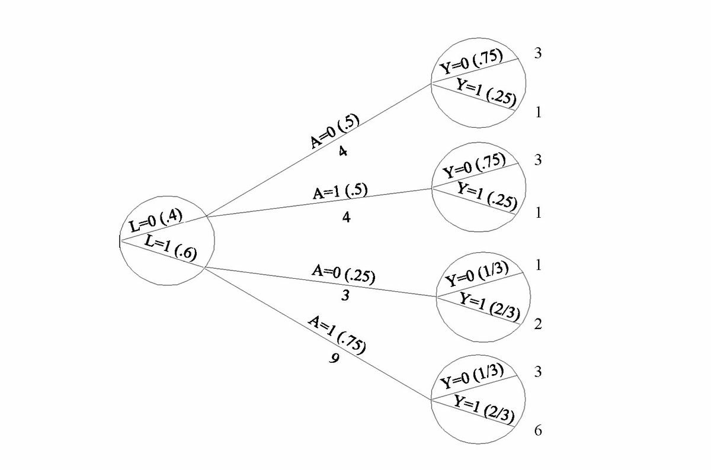
그림 2.1은 완전 무작위 인과 해석 구조적 트리 그래프(fully randomized causally interpreted structured tree graph, FRCISTG)의 한 예로, 조건부 무작위 실험을 이처럼 표현할 수 있음을 보여준다 (Robins 1986, 1987). 우리가 최악의 약어 상을 받았을까?
세부사항 2.2 위험 기간(Risk periods)
우리는 위험(risk)을 특정 기간 동안 관심 결과를 발생시킨 개인의 비율로 정의했다. 예를 들어 처치군의 5일 사망 위험 Pr[ = 1 = 1]은 추적 관찰 첫 5일 동안 사망한 처치군 개인의 비율이다. 이 책 전반에서 우리는 위험을 처음 정의할 때 기간을 명시하고(예: 5일), 간결함을 위해 이후에는 생략하는 경우가 많다. 즉 “5일 사망 위험” 대신 그냥 “사망 위험”이라고 말할 수도 있다.
다음 예는 위험 기간을 명시하는 것의 중요성을 보여준다. 페스트균에 감염된 노인 환자들 사이에서 항생제 요법이 사망률에 미치는 인과 효과를 정량화하기 위해 무작위 실험이 실시되었다고 가정해 보자. 한 연구자가 데이터를 분석하여 인과 위험 비가 0.05, 즉 항생제가 평균적으로 사망률을 95% 감소시킨다고 결론 내린다. 두 번째 연구자도 데이터를 분석하지만 인과 위험 비가 1, 즉 항생제가 사망률에 평균 인과 효과가 없다고 결론 내린다. 두 연구자 모두 맞다. 첫 번째 연구자는 1년 위험의 비를 계산했고, 두 번째 연구자는 100년 위험의 비를 계산한 것이다. 100년 위험은 개인이 처치를 받았든 받지 않았든 당연히 1이었다. 처치가 사망률에 인과 효과를 가진다고 말할 때, 우리는 처치가 사망을 예방한다는 뜻이 아니라 지연시킨다는 뜻이다.
그림 2.2
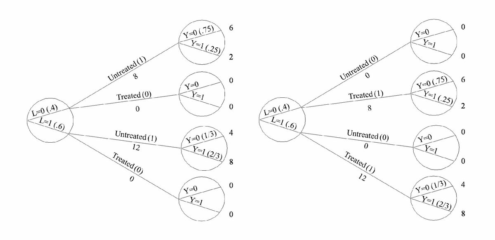
인과 위험 비의 분모 Pr[=0 = 1]은 모집단의 모든 개인이 무처치 상태로 남았을 경우의 반사실적 사망 위험이다. 이 위험을 계산해 보자. 그림 2.1에서 = 0인 8명 중 4명이 무처치였고, 그중 1명이 사망했다. = 0인 8명 모두가 무처치 상태로 남았다면 사망자는 몇 명이었을까? 4명이 아니라 8명이 무처치로 남았다면 1명이 아니라 2명의 사망이 관측되었을 것이므로, 사망자는 두 명이다. 개인 수가 2배로 늘어나면 사망자 수도 2배로 늘어난다. 그림 2.1에서 = 1인 12명 중 3명이 무처치였고, 그중 2명이 사망했다. = 1인 12명 모두가 무처치 상태로 남았다면 사망자는 몇 명이었을까? 12는 3 × 4이므로, 사망자는 2명 × 4, 즉 8명이다. 즉 모집단의 8+12=20명 전원이 무처치 상태로 남았다면, 2+8=10명이 사망했을 것이다. 인과 위험 비의 분모 Pr[=0 = 1]은 10/20 = 0.5이다. 그림 2.2의 첫 번째 트리는 모두가 무처치 상태로 남았을 경우의 모집단을 보여준다. 물론 이러한 계산은 = 0인 처치군 개인이 무처치 상태로 남았더라도 실제로 무처치로 남은 개인들과 같은 사망 확률을 가졌을 것이라는 조건에 의존한다. 이 조건이 바로 = 0이 주어졌을 때의 교환가능성이다.
인과 위험 비 Pr[=1 = 1]의 분자는 모집단의 모든 개인이 처치를 받았을 경우의 반사실적 사망 위험이다. 앞 문단과 같은 논리로 이 위험은 = 1이 주어졌을 때의 교환가능성 아래에서 10/20 = 0.5로 계산된다. 그림 2.2의 두 번째 트리는 모두가 처치를 받았을 경우의 모집단을 보여준다. 이 문단과 앞 문단의 결과를 합치면, 인과 위험 비 Pr[=1 = 1]/Pr[=0 = 1]는 0.5/0.5 = 1이다. 계산 끝.
이 방법이 어떻게 작동하는지 살펴보자. 그림 2.2의 두 트리는 각각 모집단의 모든 개인이 무처치 상태였을 경우와 모두 처치를 받았을 경우에 일어났을 일의 시뮬레이션이다. 이 시뮬레이션은 조건부 교환가능성 아래에서 타당하다. 두 시뮬레이션을 합치면, 모든 개인이 처치군 개인으로도 무처치군 개인으로도 나타나는 가상의 모집단을 만들 수 있다. 원래 모집단의 두 배 크기인 이 가상의 모집단을 유사 모집단(pseudo-population)이라고 한다. 그림 2.3이 유사 모집단 전체를 보여준다.
그림 2.3
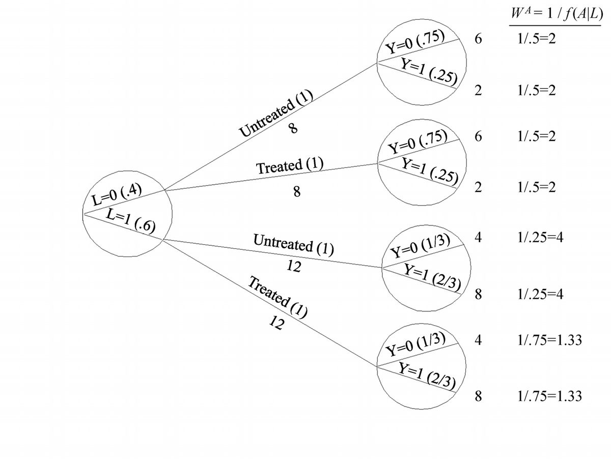
원래 모집단에서 조건부 교환가능성 ⊥⊥ | 이 성립하면, 유사 모집단에서는 이 과 독립이므로 처치군과 무처치군이 (비조건부적으로) 교환 가능하다. 즉 유사 모집단의 연관 위험 비(associational risk ratio)는 유사 모집단과 원래 모집단 모두에서 인과 위험 비와 같다.
이 방법은 역확률 가중(inverse probability weighting, IP weighting)으로 알려져 있다. 왜 그런지 알아보기 위해, 예를 들어 그림 2.1의 모집단에서 = 0인 무처치군 4명을 살펴보자. 이들은 그림 2.3의 유사 모집단 구성원 8명을 만드는 데 사용된다. 즉 그들 각각은 1/0.5와 같은 크기의 가중치 2를 받는다. 그림 2.1은 0.5가 = 0이 주어졌을 때 무처치로 남을 조건부 확률임을 보여준다.
IP 가중 추정량(IP weighted estimator)은 표본 추출 확률이 서로 다른 조사에서 Horvitz and Thompson (1952)이 처음 제안했다.
마찬가지로, 그림 2.1의 = 1인 처치군 9명은 유사 모집단의 구성원 12명을 만드는 데 사용된다. 즉 그들 각각은 1.33 = 1/0.75의 가중치를 받는다. 그림 2.1은 0.75가 = 1이 주어졌을 때 처치를 받을 조건부 확률임을 보여준다. 비형식적으로 말하면, 유사 모집단은 모집단의 각 개인에게 그 개인이 실제로 받은 처치 수준을 받을 조건부 확률의 역수만큼 가중치를 부여하여 만들어진다. 이 IP 가중치들은 그림 2.3에 나와 있다.
IP 가중은 위 예에서 표준화와 같은 결과, 즉 인과 위험 비가 1이라는 결과를 산출했다. 이것은 우연이 아니다. 표준화와 IP 가중은 수학적으로 동등하다(기술적 사항 2.3 참조). 사실 표준화와 IP 가중은 모두 모든 개인이 처치 를 받는 새로운 트리를 구축하는 절차로 볼 수 있다. 각 방법은 반사실적 트리를 구축할 때 서로 다른 확률 집합을 사용한다. IP 가중은 공변량 이 주어졌을 때 처치 의 조건부 확률을 사용하고(그림 2.1에 나와 있듯이), 표준화는 공변량 의 확률과 , 이 주어졌을 때 결과 의 조건부 확률을 사용한다. 표준화와 IP 가중은 모두, (벡터 안의) 변수 이 처치 확률을 결정하는 데 사용되지 않았다면 관측되었을 것을 시뮬레이션하므로, 우리는 이 방법들이 을 조정한다(adjust for)고 자주 말한다. 또 약간 어법을 남용하여 이 방법들이 을 통제한다(control for)고 말하기도 하는데, 이 “분석적 통제”는 무작위 실험에서의 “물리적 통제”와는 상당히 다르다. 표준화와 IP 가중은 연속형 결과를 갖는 조건부 무작위 연구로 일반화할 수 있다(기술적 사항 2.3 참조).
왜 이 책을 여기서 끝내지 않을까? 우리에게는 적절한 분석 방법(표준화 또는 IP 가중)과 결합하면 평균 인과 효과를 계산할 수 있게 해주는 연구 설계(이상적 무작위 실험)가 있다. 불행히도 무작위 실험은 비윤리적이거나, 비현실적이거나, 시기가 맞지 않는 경우가 많다. 예를 들어, 윤리 위원회가 우리의 심장 이식 연구를 승인했을지 의문이다. 심장은 공급이 부족하고, 사회는 심장을 잠재적 수혜자들 사이에 무작위로 배정하기보다는 이식으로부터 더 많은 혜택을 받을 가능성이 높은 개인에게 배정하는 것을 선호한다. 또한 윤리적 문제를 무시하더라도 연구의 실행 가능성에 의문이 제기될 수 있다. 이중 맹검 배정(double-blind assignment)은 불가능하고, 의학적 처치를 배정받은 개인은 이식을 포기하는 데 동의하지 않을 수 있으며, 이식을 배정받은 사람들에게 맞는 심장이 없을 수도 있다. 연구가 실행 가능하더라도 완료하는 데는 수년이 걸릴 것이고, 그 사이에 결정을 내려야 한다. 관찰 연구를 수행하는 것이 종종 차악(次惡)이다.
기술적 사항 2.2 IP 가중치의 형식적 정의(Formal definition of IP weights)
한 개인의 IP 가중치는 그 개인의 처치 와 공변량 값에 의존한다. 예를 들어 = 인 처치군 개인은 1/Pr[ = 1 = ]의 가중치를 받고, = 인 무처치군 개인은 1/Pr[ = 0 = ]의 가중치를 받는다. 처치 의 확률 대신 처치 의 확률밀도함수(probability density function, pdf)를 사용하면, 개인의 처치 값과 공변량 값에 관계없이 모든 개인에 대해 이 가중치들을 하나의 식으로 표현할 수 있다. 이 주어졌을 때 의 조건부 pdf를 값 와 에서 평가한 것은 []로 나타낸다. 이산형 변수 와 의 경우 []은 조건부 확률 Pr[ = = ]이다. 조건부 무작위 실험에서 []은 Pr[ = ]이 0이 아닌 모든 에 대해 양수이다.
각 개인의 가중치의 분모는 그 개인의 와 값에서 평가한 조건부 밀도이므로, 이를 고정된 인자 와 이 아니라 무작위 인자 와 에서 평가한 조건부 밀도, 즉 []으로 표현할 수 있다. 그림 2.3에 등장한 이 표기법은 IP 가중치 = 1/[]를 정의하는 데 사용된다. Pr[ = = ]은 적절한 표기법으로 간주되지 않으므로, 가중치에 통일된 표기법을 쓰기 위해 이런 방식이 필요하다.
기술적 사항 2.3 IP 가중과 표준화의 동등성(Equivalence of IP weighting and standardization)
이 유한한 값의 개수를 가진 이산형 변수이고, Pr[ = ]이 0이 아닌 모든 에 대해 []이 양수라고 가정하자. 이 양성 조건(positivity)은 조건부 무작위 실험에서 성립함이 보장된다. 양성 조건 아래에서, 처치 수준 에 대한 표준화된 평균은 Σ E[ = , = ]Pr[ = ]으로 정의되고, 처치 수준 에 대한 의 IP 가중 평균은 E[( = ) / []]으로 정의된다. 즉 처치 값 = 를 가진 개인들에서 를 IP 가중치 = 1/[]로 다시 가중한 평균이다. 지시 함수(indicator function) ( = )는 = 인 개인에게는 값 1을, 나머지 개인에게는 0을 취하는 함수이다.
이제 양성 조건 아래에서 IP 가중 평균과 표준화된 평균이 같다는 것을 증명하자. 기댓값의 정의에 의해,
E[( = ) / []] = Σ E[ = , = ] × (1/[]) × [] × Pr[ = ] = Σ E[ = , = ]Pr[ = ]
마지막 단계에서 우리는 분자와 분모의 []을 약분했고, 첫 번째 단계에서 의 가능한 값들에 대해 합할 필요가 없었는데, 그것은 가 아닌 임의의 ′ 값에 대해 양 (′ = )이 0이기 때문이다. 이 증명은 과 이 이산형이지만 반드시 이분형일 필요는 없음을 전제로 한다. 연속형 에 대해서는 에 대한 합을 적분으로 바꾸기만 하면 된다.
이 증명은 반사실이나 인과성을 전혀 언급하지 않는다. 그러나 조건부 교환가능성을 추가로 가정하면, IP 가중 평균과 표준화된 평균은 모두 반사실적 평균 E[]와 같아진다. 여기서 이 마지막 명제에 대한 두 가지 서로 다른 증명을 제시한다.
먼저, E[]와 표준화된 평균의 동등성을 다음과 같이 본문대로 증명한다.
E[] = Σ E[ = ]Pr[ = ] = Σ E[ = , = ]Pr[ = ] = Σ E[ = , = ]Pr[ = ]
여기서 두 번째 등식은 조건부 교환가능성과 양성 조건에 의한 것이고, 세 번째 등식은 일관성(consistency)에 의한 것이다.
둘째로, E[]와 IP 가중 평균의 동등성을 다음과 같이 증명한다. 일관성에 의해 E[( = ) / []]은 E[( = ) / []]과 같다. 다음으로, 양성 조건이 []이 결코 0이 아님을 함의하므로,
E[( = ) / []] = E[E[( = ) / [] | ]] = E[( = ) / [] E[ | ]] (조건부 교환가능성에 의해) = E[E[ | ]] (왜냐하면 E[( = ) | ] = []이므로) = E[]
처치가 연속형일 때는, 이는 조건부 무작위 실험에서 그다지 현실적인 설계 선택은 아니지만, E[( = ) / ( )]이 더 이상 Σ E[ = , = ]Pr[ = ]과 같지 않게 되고, 따라서 교환가능성 아래에서도 E[]에 대해 편향되게 된다. 이를 보려면, ()을 (르베그 측도에 대한) = 이 주어졌을 때 의 조건부 밀도의 (한 버전)으로 취하면, E[( = ) / () | = ]이 1이 아니라 0과 같음을 계산할 수 있다. 반면, ()을 계속 pr( = = )으로 취하면, 분모 ( = )은 확률 1을 가진 집합에서 0이 되므로 양성 조건이 성립하지 않는다. 12.4절에서 IP 가중이 연속형 처치에 맞게 어떻게 일반화될 수 있는지 논의한다. 기술적 사항 3.1에서는 이산형 의 경우에도 양성 조건이 없으면 위 결과들이 성립하지 않음을 논의한다.
제3장 관찰 연구(Observational Studies)
이전 장의 인과 질문을 다시 생각해 보자. “한 사람이 하늘을 올려다보면 다른 보행자들도 올려다보게 될까?” 이전 장에서처럼 무작위 실험을 고려한 끝에, 당신은 그렇게 여러 번 올려다보는 것은 너무 시간이 많이 걸리고 목뼈에도 해롭다고 결론 내렸다. 그래서 당신은 다음과 같은 연구를 수행하기로 했다. 근처에서 구석에 서서 올려다보지 않고 있는 보행자를 찾는다. 그리고 첫 번째 보행자 쪽으로 걸어오고 있으면서 역시 올려다보지 않고 있는 두 번째 보행자를 찾는다. 다음 10초 동안 그들의 행동을 관찰하고 기록한다. 이 과정을 수천 번 반복한다. 그러면 첫 번째 보행자가 올려다본 뒤 두 번째 보행자가 올려다본 비율을, 첫 번째 보행자가 올려다보기 전에 두 번째 보행자가 올려다본 비율과 비교할 수 있다. 이처럼 연구자가 관련 데이터를 관찰하고 기록하는 과학적 연구를 관찰 연구(observational study)라고 한다.
앞서 설명한 관찰 연구를 수행했다면, 비판자들은 두 보행자가 함께 올려다보는 이유가 첫 번째 보행자가 올려다보는 것이 다른 보행자의 올려다봄을 유발하기 때문이 아니라, 둘 다 머리 위에서 천둥 같은 소리를 들었거나 빗방울이 떨어지기 시작했기 때문일 수 있다며, 따라서 당신의 연구 결과는 한 사람이 올려다보는 것이 다른 사람도 올려다보게 만드는지에 대해 결론을 내릴 수 없다고 주장할 수 있을 것이다. 이러한 비판은 무작위 실험에는 적용되지 않으며, 이것이 무작위 실험이 인과 추론 이론의 중심에 있는 이유 중 하나이다. 그러나 실제로는 인과 효과 추정에서 무작위 실험의 중요성은 더 제한적이다. 많은 과학적 연구는 실험이 아니다. 인간 지식의 상당 부분은 관찰 연구에서 비롯된다. 진화, 지각 변동, 지구 온난화, 천체 물리학을 생각해 보라. 뜨거운 커피가 화상을 일으킬 수 있다는 것을 인간이 어떻게 알게 되었는지 생각해 보라. 이 장은 관찰 연구가 타당한 인과 추론으로 이어지는 몇 가지 조건을 검토한다.
3.1 식별 조건(Identifiability conditions)
처치의 무작위 배정이 교환가능성을 낳기 때문에, 이상적 무작위 실험은 평균 인과 효과를 식별하고 정량화하는 데 사용될 수 있다. 심장 이식과 사망률에 관한 주변 무작위 실험을 예로 들어 보자. 이식을 받은 사람들이 이식을 받지 않았다면, 실제로 심장 이식을 받지 않은 사람들과 같은 사망 위험을 가졌을 것으로 기대되었을 것이다. 결과적으로, 무작위 실험에서 얻은 연관 위험 비 0.7는 인과 위험 비와 같을 것으로 기대된다.
간이성: 이 장에서는 모든 참가자가 추적 관찰 기간 내내 유지되고 배정된 처치를 고수하는 무작위 실험만을 고려한다. 대안적인 시나리오는 8장과 9장에서 논의한다.
반면에 관찰 연구는 훨씬 덜 설득력이 있을 수 있다(예를 들어 이 장의 서두를 보라). 관찰 연관성에 인과적 해석을 부여하는 것을 망설이게 하는 핵심 이유는 무작위 처치 배정이 없기 때문이다. 예를 들어, 심장 이식을 받은 사람들이 심각한 심장 상태를 가질 가능성이 더 높은 심장 이식과 사망률에 관한 관찰 연구를 생각해 보자. 그러면 이식을 받은 사람들이 이식을 받지 않았다면, 실제로 심장 이식을 받지 않은 사람들보다 더 큰 사망 위험을 가졌을 것으로 기대되었을 것이다. 결과적으로, 관찰 연구에서 얻은 연관 위험 비 1.1은 이식이 사망률에 미치는 진정한 유익 효과(연관 위험 비를 1 아래로 끌어내리는 요인)와 이식을 받은 사람들의 근본적인 더 큰 사망 위험(연관 위험 비를 1 위로 끌어올리는 요인) 사이의 타협점일 것이다. 관찰 연구에서 처치와 결과 사이의 연관성에 대한 최선의 설명은
처치가 결과에 미치는 인과 효과일 필요가 없다.
무작위 실험이 인과 추론에 본질적인 장점을 가지고 있음을 인정하면서도, 때로는 인과 질문에 답하기 위해 관찰 연구에 의존할 수밖에 없다. 그러면 무엇을 해야 할까? 우리는 마치 처치가 측정된 공변량 을 조건으로 무작위 배정된 것처럼 데이터를 분석한다. 물론 우리는 이것이 기껏해야 근사에 불과하다는 것을 종종 알고 있다. 그러면 관찰 데이터로부터의 인과 추론은 관찰 연구가 조건부 무작위 실험으로 볼 수 있기를 바라는 것에 달려 있다. 비형식적으로 말하면, 다음 조건들이 성립하면 관찰 연구는 조건부 무작위 실험으로 개념화될 수 있다.
비교되는 처치 값들이 잘 정의된 개입(intervention)들에 해당하고, 그 개입들이 다시 데이터 속 처치의 버전(version)들에 해당한다.
모든 처치 값을 받을 조건부 확률이, 연구자들이 결정한 것은 아니지만, 측정된 공변량 에만 의존한다.
이 주어졌을 때 모든 처치 값을 받을 확률이 0보다 크다. 즉 양수이다.
표 3.1
| | | |
|---|---|---|
| Rheia | 0 | 0 |
| Kronos | 0 | 0 |
| Demeter | 0 | 0 |
| Hades | 0 | 0 |
| Hestia | 0 | 1 |
| Poseidon | 0 | 1 |
| Hera | 0 | 1 |
| Zeus | 0 | 1 |
| Artemis | 1 | 0 |
| Apollo | 1 | 0 |
| Leto | 1 | 0 |
| Ares | 1 | 1 |
| Athena | 1 | 1 |
| Hephaestus | 1 | 1 |
| Aphrodite | 1 | 1 |
| Cyclope | 1 | 1 |
| Persephone | 1 | 1 |
| Hermes | 1 | 1 |
| Hebe | 1 | 1 |
| Dionysus | 1 | 1 |
이 장에서는 관찰 연구의 맥락에서 이 세 가지 조건을 설명한다. 조건 1은 1장에서 일관성이라고 불렀고, 조건 2는 앞의 장들에서 교환가능성이라고 불렀으며, 조건 3은 기술적 사항 2.3에서 양성 조건이라고 불렀다.
우리는 이 조건들이 종종 영웅적(heroic)임을 보게 될 것이다. 이것이 관찰 연구로부터의 인과 추론이 의심의 눈초리로 바라보아지는 이유를 설명한다. 그러나 관찰 연구와 조건부 무작위 실험 사이의 유비가 실제로 맞다면, 우리는 이전 장에서 설명한 방법, 즉 IP 가중 또는 표준화를 사용하여 관찰 연구에서 인과 효과를 식별할 수 있다. 따라서 우리는 이 조건들을 식별 조건 또는 식별 가정(assumption)이라 부른다. 예를 들어, 이전 장에서 우리는 조건부 무작위 실험에서 나온 표 2.2의 데이터를 사용하여 1과 같은 인과 위험 비를 계산했다. 같은 데이터가 이제 표 3.1에 나와 있는데, 만약 이 데이터가 관찰 연구에서 나왔고 위의 세 가지 식별 조건이 성립한다면, 우리는 역시 1과 같은 인과 위험 비를 계산했을 것이다.
중요한 점은 이상적 무작위 실험에서는 식별 조건이 설계상 성립한다는 것이다. 즉 조건부 무작위 실험에서는 표 3.1의 데이터만 있으면 인과 위험 비 1을 계산할 수 있다. 반대로, 관찰 연구에서 인과 위험 비를 식별하려면 식별 조건이 성립한다고 가정해야 하는데, 물론 그것은 사실이 아닐 수도 있다. 관찰 데이터로부터의 인과 추론에는 데이터와 식별 조건이라는 두 가지 요소가 필요하다. 식별 가능성의 더 정밀한 정의는 세부사항 3.1을 보라.
Rubin (1974, 1978)은 무작위 실험에 관한 Neyman의 이론을 관찰 연구로 확장했다. Rosenbaum and Rubin (1983)은 교환가능성과 양성 조건의 결합을 약한 무시가능성(weak ignorability)이라고, 그리고 (기술적 사항 2.1 참조) 완전 교환가능성과 양성 조건의 결합을 강한 무시가능성(strong ignorability)이라고 불렀다.
식별 조건 중 어느 하나라도 성립하지 않으면, 관찰 연구와 조건부 무작위 실험 사이의 유비는 무너진다. 그런 상황에서는, 다른 식별 조건 집합을 요구하는, 관찰 데이터로부터의 인과 추론에 대한 다른 가능한 접근들이 있다. 그런 접근 중 하나는 도구 변수(instrumental variable)라고 불리는 처치의 예측 요인이 마치 측정된 공변량을 조건으로 무작위 배정된 것처럼 행동하기를 바라는 것이다. 도구 변수 방법은 16장에서 논의한다.
세부사항 3.1 인과 효과의 식별 가능성(Identifiability of causal effects)
특정 가정 집합 아래에서 관찰 데이터의 분포가 효과 측도의 단일 값과 양립 가능하다는 것을 그 가정들이 함의한다면, 우리는 평균 인과 효과가 그 가정들 아래에서 (비모수적으로) 식별 가능하다(nonparametrically identifiable)고 말한다. 반대로, 관찰 데이터의 분포가 효과 측도의 여러 값과 양립 가능할 때, 우리는 평균 인과 효과가 그 가정들 아래에서 식별 불가능(nonidentifiable)하다고 말한다.
예를 들어, 표 3.1의 연구가 처치를 받을 확률이 값에 의존하는 조건부 무작위 실험에서 나왔다면(따라서 조건부 교환가능성 ⊥⊥ | 이 설계상 성립한다면), 이전 장에서 우리는 인과 효과가 식별 가능함을 보였다. 즉 추가 가정 없이 인과 위험 비가 1과 같다. 그러나 표 3.1의 데이터가 관찰 연구에서 나왔다면, 인과 위험 비는 조건부 교환가능성 ⊥⊥ | 이라는 가정을 데이터에 보충할 때에만 1과 같다. 관찰 연구에서 인과 효과를 식별하려면 데이터 밖의 가정, 즉 식별 가정(identifying assumption)이 필요하다. 사실, 데이터에 식별 가정을 보충하지 않기로 결정한다면, 외의 위험 요인이 처치군에서 더 빈번할 경우 표 3.1의 데이터는 1보다 낮은 인과 위험 비와 양립 가능하다.
• 외의 위험 요인이 무처치군에서 더 빈번할 경우, 1보다 큰 인과 위험 비와 양립 가능하다.
• 을 제외한 모든 위험 요인이 처치군과 무처치군 사이에 동등하게 분포되어 있거나, 동등하게, ⊥⊥ | 이면, 1과 같은 인과 위험 비와 양립 가능하다.
이 장은 평균 인과 효과의 비모수적 식별을 위한 세 가지 식별 조건을 논의한다. 16장에서는 평균 인과 효과의 비모수적 식별에 충분한 대안적 식별 조건들을 설명한다. 놀랍지 않게도, 조건부 무작위 실험과의 유비에 기반한 관찰 방법들은 그 유비가 종종 합리적인 학문 분야(예: 역학)에서 전통적으로 우대되어 왔지만, 관찰 연구가 측정된 공변량을 고려할 때 조건부 무작위 실험으로 개념화될 수 없는 경우가 많은 분야(예: 경제학)에서는 도구 변수 방법이 전통적으로 우대되어 왔다. 16장까지는 관찰 연구가 조건부 무작위 실험을 모사할 수 있는 능력에 의존하는 인과 추론 접근들에 초점을 맞출 것이다. 이제 세 가지 식별 조건 각각을 더 자세히 설명하자.
3.2 교환가능성(Exchangeability)
우리는 이미 교환가능성 ⊥⊥ 에 대해 많은 이야기를 했다. 주변부(즉 비조건부) 무작위 실험에서 처치군과 무처치군은 교환 가능한데, 그 이유는 처치군이, 그들이 무처치로 남았다면, 무처치군이 겪은 것과 같은 평균 결과를 겪었을 것이고 그 반대도 마찬가지이기 때문이다. 이는 무작위화가 결과의 독립 예측 요인들이 처치군과 무처치군 사이에 동등하게 분포되도록 보장하기 때문이다.
독립 예측 요인: 결과의 독립 예측 요인(independent predictor)은 처치 수준 내에서 결과 과 연관된 공변량이다. 이분형 결과의 경우, 결과의 독립 예측 요인은 종종 결과의 위험 요인(risk factor)이라고 불린다.
예를 들어, 표 3.1에 요약된 연구를 살펴보자. 이전 장에서 우리는 이 연구에서 교환가능성이 분명히 성립하지 않는다고 말했는데, 그 이유는 처치군의 69%가 중증 상태 = 1이었지만 무처치군에서는 43%만이 그랬기 때문이다.
기준 시점에서 이처럼 독립적인 결과 예측 요인의 분포가 불균형한 것은 주변 무작위 실험에서는 발생하지 않을 것으로 기대된다(사실 그러한 불균형은 우연히 발생할 수도 있지만, 우리는 우리 연구가 우연한 발견을 막을 만큼 충분히 크다고 착각하고 계속 진행하자). 반면, 처치를 받을 확률이 에 의존하는 조건부 무작위 실험에서는 처치군과 무처치군 사이의 독립적인 결과 예측 요인 의 분포 불균형이 설계상 기대된다. 표 3.1의 연구는 바로 그러한 조건부 무작위 실험이다. 처치군은 연구 시작 시점의 평균 예후가 더 나빴으므로 처치군과 무처치군은 교환 가능하지 않지만, 변수의 수준 내에서는 처치군과 무처치군이 조건부로 교환 가능하다. = 1(중증 상태) 부분집합에서 처치군과 무처치군은 교환 가능한데, 그 이유는 처치군이, 무처치로 남았다면, 무처치군이 겪은 것과 같은 평균 결과를 겪었을 것이기 때문이고 그 반대도 마찬가지이기 때문이다. = 0 부분집합에서도 마찬가지다. 동등한 표현으로 말하면, 조건부 교환가능성 ⊥⊥ | 이 조건부 무작위 실험에서 성립하는 이유는, 수준 내에서 결과의 다른 모든 예측 요인들이 처치군과 무처치군 사이에 동등하게 분포되기 때문이다.
다시 관찰 연구로 돌아가자. 처치가 연구자들에 의해 무작위로 배정되지 않을 때, 처치를 받게 된 이유는 일부 결과 예측 요인들과 연관될 가능성이 높다. 즉, 조건부 무작위 실험에서처럼, 관찰 연구에서도 결과 예측 요인의 분포는 일반적으로 처치군과 무처치군 사이에 다를 것이다.
세부사항 3.2는 교환가능성의 부재와 교란(confounding) 사이의 관계를 소개한다.
예를 들어, 표 3.1의 데이터는 의사들이 부족한 심장 이식을 가장 필요로 하는 사람들, 즉 중증 상태 = 1인 개인들에게 돌리는 경향이 있는 관찰 연구에서 나왔을 수 있다. 사실 처치군과 무처치군 사이에 불균등하게 분포된 유일한 결과 예측 요인이 이라면, 표 3.1의 연구는 (i) = 1인 사람들에게서 처치 = 1의 확률이 0.75이고 = 0인 사람들에게서 0.50인 관찰 연구, 또는 (ii) 연구자들이 = 1인 사람들에게는 0.75의 확률로, = 0인 사람들에게는 0.50의 확률로 처치 = 1을 무작위 배정한 (맹검이 아닌) 조건부 무작위 실험으로 특징지을 수 있다. 연구에 대한 두 특징화는 논리적으로 동등하다. 어느 특징화에서든 조건부 교환가능성 ⊥⊥ | 이 성립하고, 표준화 또는 IP 가중을 사용해 인과 효과를 식별할 수 있다. 물론 관찰 연구의 핵심 질문은 이 처치군과 무처치군 사이에 불균등하게 분포된 유일한 결과 예측 요인인지 여부이다. 슬프게도, 그 질문은 답을 얻지 못한 채로 남아 있을 수밖에 없다.
예를 들어, 우리 관찰 연구의 연구자들이 수준 내에서 처치군과 무처치군이 교환 가능하다고 강하게 믿는다고 가정해 보자. 그들의 추론은 다음과 같다. “심장 이식은 이식을 거부할 확률이 낮은 개인에게 배정된다. 즉, 특정 인간 백혈구 항원(human leukocyte antigen, HLA) 유전자를 가진 심장은 양립 가능한 유전자를 가진 개인에게 배정될 것이다. HLA 유전자가 사망률의 예측 요인이 아니므로, 처치 배정은 수준 내에서 본질적으로 무작위라는 것이 밝혀진다.” 따라서 우리 연구자들은 조건부 교환가능성 ⊥⊥ | 이 성립한다는 가정 아래에서 작업할 의향이 있는 것이다. 핵심 단어는 “가정”이다. 연구자들의 이야기가 아무리 설득력 있어도, 무작위화가 없는 상황에서는 조건부 교환가능성이 성립한다는 보장이 없다. 예를 들어, 연구자들이 모르는 사이에 의사들이 심장을 비흡연자에게 이식하는 것을 선호한다고 가정해 보자. = 1인 두 사람이 유사한 HLA 유전자를 갖고 있는데, 한 명은 흡연자( = 1)이고 다른 한 명은 비흡연자( = 0)라면, = 1인 사람은
세부사항 3.2 교차 무작위 실험(Crossover randomized experiments)
세부사항 2.1에서 우리는 개인이 둘 이상의 기간—예를 들어 = 0 및 = 1—동안 관찰되고 각 기간마다 서로 다른 처치 값을 받는 교차 실험(crossover experiment)을 설명했다. 우리는 다음 세 가지 강력한 조건이 성립할 때 교차 실험에서 개인별 인과 효과(individual causal effect)를 식별할 수 있음을 보였다. i) 처치의 이월 효과 없음(no carryover effect): 0,1 = 1, =1 =1 ii) 개인별 인과 효과가 시간에 의존하지 않음: = 0,1에 대해 =1 − =0 = , iii) 무처치 상태에서의 반사실적 결과가 시간에 의존하지 않음: = 0,1에 대해 =0 = . 무작위화는 필요하지 않았다.
이제 우리는 개인이 받는 처치 값의 순서가 무작위로 배정되는 교차 무작위 실험으로 관심을 돌린다. 시간적 효과의 가능성으로 인해 조건 iii)이 성립한다고 가정하지 않을 때 처치의 무작위 배정이 중요해진다. 단순화를 위해, 모든 개인이 0.5의 확률로 (1 = 1, 0 = 0) 또는 (1 = 0, 0 = 1)로 무작위 배정된다고 가정하자. 1=0 − 0=0 = 라고 하자. 그러면 조건 i), ii) 및 일관성 아래에서, 0 = 0이고 1 = 1이면 1 − 0 = + 이고, 0 = 1이고 1 = 0이면 1 − 0 = − + 이다. 는 알려져 있지 않으므로 우리는 더 이상 개인별 인과 효과를 식별할 수 없지만, 1과 0이 무작위 배정되어 와 독립이므로, (1 − 0)1 + (0 − 1)0의 평균은 평균 인과 효과, 즉 E[ ]를 추정한다. 만약 조건 i)만 가정한다면, 이 평균은 시점 0과 1에서의 평균 처치 효과의 평균, 즉 (E[ 1] + E[ 0])/2를 추정하는데, 여기서 = =1 − =0이다.
결론적으로, 이월 효과가 없다는 가정 1)이 성립한다면, 교차 실험을 사용하여 평균 인과 효과를 추정할 수 있다. 그러나 이 책에서 우리가 연구하는 유형의 처치와 결과에 대해서는 이월 효과가 없다는 가정이 비현실적이다.
처치 = 1을 받을 확률이 더 낮을 것이다. 결과의 중요한 예측 요인인 흡연의 분포가 = 1인 층에서 처치군(흡연자 = 1의 비율이 더 낮음)과 무처치군(흡연자의 비율이 더 높음) 사이에 다를 때, 이 주어졌을 때의 조건부 교환가능성(conditional exchangeability)은 성립하지 않는다. 중요한 것은, 흡연에 대한 데이터를 수집하더라도 연구자들이 알지 못하는 다른 불균형한 결과 예측 요인이 측정되지 않은 채로 남아 있을 가능성을 막을 수 없다는 점이다.
우리는 측정되지 않은 변수를 나타내는 데 를 사용한다. 측정되지 않은 변수는 표준화나 IP 가중에 사용될 수 없으므로, 측정된 변수 이 조건부 교환가능성을 달성하기에 불충분할 때는 인과 효과를 식별할 수 없다.
따라서 관찰 연구에서는 교환가능성 ⊥⊥ | 이 성립하지 않을 수 있다. 구체적으로, 의 층 내에서 처치 를 받을 확률이 에 의존하게 만드는, 측정되지 않은 독립적인 결과 예측 요인 가 존재한다면 조건부 교환가능성 ⊥⊥ | 은 성립하지 않을 것이다. 설상가상으로, 조건부 교환가능성 ⊥⊥ | 이 실제로 성립한다 하더라도 연구자들은 그것이 정말 사실인지 경험적으로 검증할 수 없다. 흡연에 대한 데이터를 수집하지 않았다면 처치군과 무처치군에서 흡연의 분포가 같은지 어떻게 확인할 수 있겠는가? 처치군과 무처치군 사이에 역시 다르게 분포되어 있을 수 있는 다른 모든 측정되지 않은 결과 예측 요인 는 어떠한가? 조건부 교환가능성 아래에서 관찰 연구를 분석할 때, 우리는 전문 지식이 우리를 올바르게 안내하여 그 가정이 적어도 대략적으로는 참이 되도록 충분한 데이터를 수집할 수 있기를 바라야만 한다.
조건부 교환가능성을 검증하려면 Pr[ = 1 | = , = ] = Pr[ = 1 | ≠ , = ]임을 확인해야 한다. 그러나 이는 논리적으로 불가능한데, 처치 를 받지 않은 개인( ≠ )의 경우 값을 알 수 없으므로 우변을 경험적으로 평가할 수 없기 때문이다.
연구자들은 전문 지식을 활용하여 조건부 교환가능성 가정의 타당성을 높일 수 있다. 표 3.1처럼 단 하나의 변수만 측정하는 대신 관련 변수 (예: 독립적인 결과 예측 요인이기도 한 처치의 결정 요인들)을 다수 측정한 뒤, 그 모든 변수 의 조합으로 정의되는 층 내에서 조건부 교환가능성이 대략 참이라고 가정할 수 있다. 불행히도 에 아무리 많은 변수가 포함되어 있더라도 그 가정이 맞는지 검증할 방법은 없으며, 이는 관찰 데이터로부터의 인과 추론(causal inference)을 위험부담이 큰 작업으로 만든다. 인과 추론의 타당성은 연구자들의 전문 지식이 올바를 것을 요구한다. 측정된 공변량을 조건으로 하는 교환가능성 가정으로 구현된 이 지식은, 관심 있는 인과 효과를 식별하기 위한 시도로서 데이터에 보충된다.
3.3 양성성(Positivity)
어떤 연구자들이 심장 이식 가 5년 사망률 에 미치는 평균 효과를 계산하기 위해 실험을 수행할 계획을 세운다고 하자. 연구자들은 일부 개인에게는 처치 수준 = 1을 배정하고 다른 개인에게는 처치 수준 = 0을 배정할 것이 자명하다. 그 대안을 생각해 보라. 연구자들이 모든 개인에게 = 1 또는 = 0 중 하나만을 배정한다고 해보자. 그것은 어리석은 일일 것이다. 모든 개인이 동일한 처치 수준을 받는다면 평균 인과 효과를 계산하는 것은 불가능하다. 대신 우리는 거의 확실하게 각 처치군에 일부 개인이 배정되도록 처치를 배정해야 한다. 다시 말해, 우리는 각 처치 수준에 배정될 확률이 0보다 큰 확률—양의 확률(positive probability)—을 갖도록 보장해야 한다. 이것이 바로 양성성 조건(positivity condition)이다.
양성성 조건은 때때로 실험적 처치 가정(experimental treatment assumption)이라고도 불린다.
우리는 실험을 설명할 때 양성성을 강조하지 않았는데, 실험 연구에서는 양성성이 당연하게 여겨지기 때문이다. 주변부 무작위 실험(marginally randomized experiment)에서는 확률 Pr[ = 1]과 Pr[ = 0]이 모두 설계상 양수이다. 조건부 무작위 실험에서는 연구 대상 자격이 있는 변수 의 모든 수준에 대해 조건부 확률 Pr[ = 1 | = ]과 Pr[ = 0 | = ] 또한 설계상 양수이다. 예를 들어, 표 3.1의 데이터가 조건부 무작위 실험에서 나왔다면, 심장 이식 배정의 조건부 확률은 중증 상태인 사람들에게서 Pr[ = 1 | = 1] = 0.75이고 나머지 사람들에게서 Pr[ = 1 | = 0] = 0.50이었을 것이다. 이 확률들 중 어느 것도 0이 아니므로(또한 1도 아닌데, 1이라면 심장 이식을 받지 않을 확률 = 0이 0이 됨을 의미한다), 을 조건으로 할 때 양성성이 성립한다. 따라서 우리는 인과적 대비에 관여하는 모든 에 대해 Pr[ = | = ] > 0이면 양성성이 존재한다고 말한다. 사실 이 양성성의 정의는 불완전한데, 우리의 연구 모집단이 = 1 집단으로 제한된다면 = 0 집단에서 양성성을 요구할 필요가 없기 때문이다. 양성성은 관심 모집단에 존재하는 값들에 대해서만 필요하다.
양성성(Positivity): 관심 모집단에서 Pr[ = ] ≠ 0인 모든 값에 대해 Pr[ = | = ] > 0.
또한, 양성성은 교환가능성에 필요한 변수 에 대해서만 요구된다. 예를 들어 표 3.1의 조건부 무작위 실험에서, 우리는 파란 눈을 가진 개인들에서 처치를 받을 확률이 0보다 큰지 스스로에게 묻지 않는다. 왜냐하면 ‘파란 눈을 가짐’이라는 변수는 처치군과 무처치군 사이의 교환가능성을 달성하는 데 필요하지 않기 때문이다. (’파란 눈을 가짐’ 변수는 과 를 조건으로 했을 때 결과 의 독립 예측 요인이 아니며, 심지어 처치를 배정하는 데 사용되지도 않았다.) 즉, 표준화된 위험과 IP 가중 위험은 오직 만 조정한 후의 반사실적 위험과 같으며, ’파란 눈을 가짐’처럼 조정할 필요가 없는 변수에는 양성성이 적용되지 않는다.
관찰 연구에서는 양성성도 교환가능성도 보장되지 않는다. 예를 들어 그림 3.1에 나타난 것처럼, 의사들이 중증 상태 = 1인 개인들에게 항상 심장을 이식한다면, 즉 Pr[ = 0 | = 1] = 0이라면 양성성은 성립하지 않을 것이다. 교환가능성 조건과 양성성 조건 사이의 한 가지 차이점은, 양성성은 때때로 경험적으로 검증될 수 있다는 것이다(12장 참조). 예를 들어 표 3.1이 관찰 연구의 데이터에 해당한다면, 우리는 의 모든 수준(즉 = 0 및 = 1)에서 모든 처치 수준(즉 = 0 및 = 1)에 사람들이 존재하므로 에 대해 양성성이 성립한다고 결론 내릴 것이다.
이전 장에서 표준화와 IP 가중에 관한 논의는 교환가능성 조건에 대해서는 명시적이었지만, 양성성 조건은 암묵적으로만 가정했다(기술적 사항 2.3에서는 명시적으로 다룸). 표준화된 위험과 IP 가중 위험에 대한 우리의 이전 정의는 실제로 양성성이 성립할 때에만 의미가 있다. 양성성 조건이 성립하지 않을 때 표준화된 위험과 IP 가중 위험이 왜 잘 정의되지 않는지 직관적으로 이해하기 위해 그림 3.1을 살펴보자. 만약 = 1인 무처치 개인( = 0)이 없다면, = 1인 처치군 개인과 교환 가능한 것으로 간주될 수 있는 = 1인 무처치 개인이 존재하지 않으므로, 데이터에는 모든 처치군 개인이 무처치 상태였다면 무슨 일이 일어났을지 시뮬레이션할 정보가 전혀 담겨 있지 않게 된다. 자세한 내용은 기술적 사항 3.1을 참조하라.
그림 3.1
3.4 일관성: 첫째, 반사실적 결과를 정의하라(Consistency: First, define the counterfactual outcome)
일관성(consistency)은 모든 처치군 개인에 대해 관측된 결과가 그 개인이 처치를 받았을 경우의 결과와 같고, 모든 무처치군 개인에 대해 관측된 결과가 그 개인이 무처치 상태로 남았을 경우의 결과와 같다는 것, 즉 = 인 모든 개인에 대해 = 임을 의미한다. 이 진술은 너무나 당연하게 참인 것처럼 보여서, 어떤 독자들은 일관성이 성립하지 않는 상황이 과연 있을지 궁금해할 수도 있다. 결국 내가 아스피린을 복용하고( = 1) 사망한다면( = 1), 아스피린을 복용했을 때의 나의 결과 =1 역시 1인 것이 당연하지 않은가? 일관성 조건의 이러한 겉보기의 단순함은 기만적이다. 일관성의 두 가지 주요 구성 요소를 명시적으로 설명함으로써 일관성을 풀어헤쳐 보자. (1) 위 첨자 의 상세한 규격을 통한 반사실적 결과 의 정밀한 정의, 그리고 (2) 반사실적 결과와 관측된 결과의 연결. 이 절에서는 일관성의 첫 번째 구성 요소를 다룬다.
Robins and Greenland (2000)은 잘 정의된 반사실(well-defined counterfactuals), 또는 수학적으로 동등한 개념들이 의미 있는 인과 추론에 필수적이라고 주장했다.
기술적 사항 3.1 표준화와 IP 가중에서의 양성성(Positivity for standardization and IP weighting)
우리는 처치 수준 에 대한 표준화된 평균을 Σ E[ | = , = ] Pr[ = ]로 정의했다. 그러나 이 식은 조건부 양 E[ | = , = ]이 잘 정의될 때에만 계산될 수 있으며, 이는 모집단에 존재하는 모든 값에 대해 조건부 확률 Pr[ = | = ]이 0보다 클 때, 즉 양성성이 성립할 때이다. (Pr[ = ] ≠ 0인 모든 에 대해 Pr[ = | = ] > 0이라는 진술은 확률 1로 [ | ] > 0이라는 것과 사실상 동등하다.) 따라서 표준화된 평균은 Pr[ = ] ≠ 0인 모든 에 대해 Pr[ = | = ] > 0일 때 Σ E[ | = , = ] Pr[ = ]로 정의되고, 그렇지 않으면 정의되지 않는다. 표준화된 평균은 모집단의 공변량 의 각 값에 대해 처치 수준 를 받은 개인이 존재할 때에만 계산될 수 있다.
양성성이 성립하지 않을 때 IP 가중 평균 E[( = ) / [ | ]]은 더 이상 E[( = ) / [ | ]]과 같지 않다. 구체적으로 E[( = ) / [ | ]]은 기댓값을 계산할 때 정의되지 않는 비율 0/0이 발생하므로 정의되지 않는다. 반면 IP 가중 평균 E[( = ) / [ | ]]은 분모 [ | ]이 결코 0이 될 수 없으므로 항상 잘 정의된다. 그러나 교환가능성 아래에서도 이제 그것은 반사실적 평균의 편향된 추정량이 된다. 특히 양성성이 성립하지 않을 때, E[( = ) / [ | ]]은 다음과 같다.
Pr[ ∈ ()] Σ E[ | = , = , ∈ ()] Pr[ = | ∈ ()]
여기서 () = {; Pr( = | = ) > 0}은 양의 확률로 = 가 관측될 수 있는 값들의 집합이다. 따라서 교환가능성 아래에서 E[( = ) / [ | ]]은 E[ | ∈ ()] Pr[ ∈ ()]와 같다.
()의 정의로부터, 가 이분형이고 양성성이 성립하지 않을 때 (0)은 (1)과 같을 수 없다. 이 경우 대비 E[( = 1) / [ | ]] − E[( = 0) / [ | ]]은 두 개의 서로 다른 집단 사이의 대비이므로, 교환가능성 아래에서도 인과적 해석을 갖지 못한다. 양성성 아래에서는 (1) = (0)이며, 교환가능성이 성립한다면 이 대비는 평균 인과 효과이다.
심장 이식 가 5년 사망률 에 미치는 인과 효과를 계산하기 위한 무작위 실험을 다시 생각해 보자. 연구에 환자를 등록하기 전, 연구자들은 관심 있는 두 가지 개입—심장 이식 = 1과 약물 치료 = 0—을 상세히 기술한 프로토콜(protocol)을 작성했다. 예를 들어 연구자들은 심장 이식 = 1에 배정된 개인이 특정 수술 전 처치, 마취, 수술 기법, 수술 후 관리, 면역억제 요법을 받도록 명시했다. 만약 프로토콜에 이러한 세부사항이 명시되지 않았다면, 의사마다 자신이 선호하는 수술 기법이나 면역억제 요법을 사용하는 등 ’심장 이식’이라는 처치의 서로 다른 버전을 시행했을 수 있다.
세부사항 1.2는 처치의 다중 버전(multiple versions of treatment)이라는 개념을 소개했다.
처치의 서로 다른 버전들이 서로 다른 인과 효과를 가질 때 문제가 발생한다. 예를 들어 대부분의 의사가 전통적인 수술 기법을 사용한 연구에서 ’심장 이식’의 평균 인과 효과는, 대부분의 의사가 새로운 수술 기법을 사용한 연구에서의 효과와 다를 수 있다. 따라서 ’심장 이식 가 사망률에 미치는 인과 효과’를 언급할 때는 관심 있는 처치 의 버전 를 명시해야 한다. 처치 값 가 잘 정의되지 않는다면 반사실적 결과 역시 잘 정의되지 않으며, 이는 결국 인과 효과 Pr[=1 = 1] − Pr[=0 = 1]이 잘 정의되지 않음을 의미한다.
이상적으로는 무작위 실험의 프로토콜이 각 개인에게 배정되는 처치 값 를 정밀하게 명시하여, 그들의 반사실적 결과 가 잘 정의되도록 할 것이다. 관찰 연구에서는 연구자들이 연구 대상인 값 를 가능한 한 명확하게 명시해야 한다. 심장 이식과 같은 의학적 개입의 경우 이 작업이 비교적 간단하지만, 실제 세계의 실제 개입에 대응하지 않는 처치의 경우에는 훨씬 더 어렵다.
단순화를 위해 우리는 비만의 일반적인 정의(체질량 지수 30 이상)를 고려한다. 체지방(adiposity)에 대한 더 정교한 정의가 바람직할 수도 있지만, 이를 사용하면 핵심 요점을 근본적으로 바꾸지 않으면서 설명만 복잡해질 것이다.
어떤 동료가 특정 모집단에서 40세 시점의 비만 가 50세까지의 사망 위험 에 미치는 인과 효과를 정량화하고자 한다고 가정해 보자. 형식적으로 이 인과 효과는 40세에 모든 개인이 비만이었을 경우의 위험 Pr[=1 = 1]과 모든 개인이 비비만이었을 경우의 위험 Pr[=0 = 1] 사이의 대비로 정의된다. 그러나 ’모든 개인이 비만이었을 경우의 위험’이란 정확히 무엇을 뜻하는가? 개인이 40세에 비만이 될 수 있는 방식에는 매우 다양한 경로가 존재하기 때문에 그 답은 명확하지 않다. 예를 들어 어떤 개인은 20년 동안 비만 상태를 유지한 끝에 40세에 비만일 수도 있고, 단 2년 동안만 비만 상태였던 끝에 40세에 비만일 수도 있다. 즉 비만의 지속 기간, 최근성, 강도에 따라 정의되는 처치 = 1의 다중 버전들이 존재하는 것이다. 이 버전들 각각이 사망률에 서로 다른 영향을 미칠 수 있으므로, 우리 동료는 자신이 관심 있는 40세 시점의 비만 버전에 대한 상세한 정의를 제시해야 한다. 그렇지 않으면 ’40세 시점의 비만 가 50세까지의 사망률에 미치는 인과 효과’는 제대로 정의되지 않을(ill-defined) 것이다.
이 책의 제3부는 비만에 대한 개입처럼 시간에 걸쳐 지속되는 개입에 할애된다. 이 장에서는 지속 개입의 형식적 논의에 필요한 정의(및 표기법)를 다루지 않는다.
설령 우리 동료가 비만 = 1의 지속 기간, 최근성, 강도를 정의할 수 있다 하더라도, 개입의 다른 측면들 역시 명시되어야 한다. 특히 우리 동료는 각 개인이 처치 값 = 1을 경험하도록 보장하기 위해 체중에 어떻게 개입할 것인지를 명시해야 한다. 예를 들어 허리와 관상동맥 모두의 지방 조직을 증가시키는 유전자 변형, 고열량 섭취를 동반한 극단적인 신체 비활동 요법, 장내 미생물총(intestinal microbiota)의 교체, 수술, 또는 이러한 개입들과 기타 개입들의 조합을 고려할 수 있다. 문제는 이 모든 선택지가 어떻게든 체지방을 동일한 수준으로 맞출 수 있다 하더라도, 사망률에는 서로 다른 영향을 미칠 수 있다는 점이다.
Hernán and Taubman (2008)은 자국에서 비만의 효과를 추정하려고 시도했던 두 세계 지도자—독재적인 왕과 무지한 대통령—의 시련을 다룬다.
40세에 비만이었고( = 1) 49세에 치명적인 심근경색을 겪은( = 1) 제우스(Zeus)를 예로 들어 보자. 제우스는 허리와 관상동맥 모두에 많은 양의 지방 조직이 쌓이도록 유전적으로 소인을 타고났기 때문에, 적당한 운동을 하고 건강한 식단을 유지하며 유익한 장내 미생물총을 가졌음에도 사망했다. 만약 사실과는 반대로 그의 유전자가 중립적이었지만 평생 운동 부족, 과도한 열량의 식단, 불리한 장내 미생물총으로 인해 비만( = 1)이 되었다면, 그는 50세까지 사망하지 않았을 것이다( = 0). 그렇다면 ‘비만’ = 1 아래에서 제우스의 반사실적 결과 =1은 무엇인가? 우리는 방금 그가 비만 = 1로 이어진 한 세트의 상황 아래에서는 사망했지만, 역시 비만 = 1로 이어졌을 또 다른 세트의 상황 아래에서는 사망하지 않았을 것이라고 말했다. = 1 아래에서의 반사실적 결과 =1은 제대로 정의되지 않는다.
제우스가 비비만이었을 경우의 반사실적 결과 =0 역시 제대로 정의되지 않는다. 제우스가 비만이 아니었다면, 그가 어떻게 비비만 상태를 유지했는지에 따라 50세까지 사망했을 수도 있고 사망하지 않았을 수도 있다. 예를 들어 비비만인 제우스가 평생의 운동(사망 원인: 자전거 사고), 흡연(사망 원인: 폐암), 또는 비만대사수술(사망 원인: 마취에 대한 유해 반응)로 인해 비비만이었다면 50세까지 사망했을 것이고, 평생의 건강한 식단(자식들을 잡아먹는 데서 오는 열량 감소), 더 유리한 유전자(적은 내장 지방 조직), 또는 다른 미생물총(적은 지방 흡수) 덕분에 비비만이었다면 생존했을 것이라고 가정해 보자. 우리가 ‘비비만’ = 0의 어떤 버전을 고려하고 있는지 불분명하므로, = 0 아래에서의 반사실적 결과 =0은 제대로 정의되지 않는다.
제대로 정의되지 않은 반사실적 결과는 모호한 인과 질문을 낳는다. 우리 동료가 비만 = 1이 사망률에 미치는 효과에 관심이 있다면, 그는 반사실적 결과 =0과 =1을 정의하기 위해 더 많은 노력을 기울여야 할 것이다. 또 다른 예로, 운동의 인과 효과에 관심이 있다면 우리는 운동의 지속 시간, 빈도, 강도, 유형(수영, 달리기, 농구 등), 운동에 투입된 시간을 운동하지 않았다면 어떻게 보냈을지(자녀와 놀아주기, 밴드와 합주하기, 텔레비전 시청 등)를 정의해야 할 수 있다.
고용주가 지원자의 이력서와 사진을 검토한 후 면접에 부르는 지원자의 비율로 측정되는, 채용 차별에 대한 비만의 효과에 관한 질문은 덜 모호하다. 처치가 ’고용주가 인식한 비만’이므로, 비만으로 이어진 메커니즘은 무관할 수 있기 때문이다.
유용한 인과 추론을 위해 처치의 정의에서 절대적인 정밀성이 요구되는 것은 아니라는 점에 주목하라. 예를 들어 운동의 인과 효과에 대해, 과학자들은 동네 공원을 시계 방향으로 달리는 것의 이점이 반시계 방향으로 달리는 것과 같다는 데 동의한다. 따라서 ’평생의 운동’이라는 처치를 설명할 때 달리기의 방향은 명시할 필요가 없다. 처치의 이러한 측면과 기타 측면들은 그것들을 바꾼다고 해서 서로 다른 반사실적 결과로 이어지지 않기 때문에 무관한 것으로 간주된다. 즉, 우리는 유의미한 모호성이 남아 있지 않은 충분히 잘 정의된 개입(sufficiently well-defined intervention) 만을 필요로 한다.
’조작 없이는 인과도 없다(no causation without manipulation)’는 문구(Holland 1986)는 의미 있는 인과 추론에는 충분히 잘 정의된 개입(처치 버전)이 필요하다는 생각을 담고 있다. 그러나 충분히 잘 정의된 개입이 역사의 특정 시점에서 인간이 실행 가능하거나 실현 가능한 개입일 필요는 없다는 점을 명심하라. 예를 들어, 인간 질병에 대한 유전적 변이의 인과 효과는 유전자 변형 기술이 존재하기 전에도 충분히 잘 정의되어 있었다.
이는 ‘처치가 충분히 잘 정의되었는지, 즉 유의미한 모호성이 남아 있지 않은지를 우리가 어떻게 알 수 있는가?’라는 질문으로 이어진다. 그에 대한 답은 ’우리는 알 수 없다’이다. 처치가 충분히 잘 정의되었다고 선언하는 것은 활용 가능한 실질적 지식에 기초한 전문가들 사이의 합의의 문제이다. 오늘날 우리는 달리는 방향이 무관하다는 데 동의하지만, 만약 달릴 때 몸을 왼쪽이 아닌 오른쪽으로 기울이는 것이 해롭다는 점이 입증된다면 미래의 연구가 우리의 생각이 틀렸음을 증명할 수도 있다. 역사의 어느 시점에서든 무작위 실험의 프로토콜을 작성하는 전문가들은 활용 가능한 주제별 지식을 동원하여 가능한 한 많은 모호성을 제거하려고 시도한다. 그러나 어느 정도의 모호성은 모든 인과 질문에 내재되어 있다. 인과 질문의 모호성은 처치를 더 상세하게 명시함으로써 줄일 수 있지만 완전히 제거할 수는 없다. 특히 생물학적 ’처치’(예: 체중, LDL-콜레스테롤)나 사회적 ‘처치’(예: 사회경제적 위치)가 포함된 인과 질문을 다루는 관찰 연구에서는 모호성의 정도가 대단히 높다.
위의 논의는 인과 추론의 본질적인 특징을 보여준다. 인과 질문의 정교화는 해당 분야의 전문 지식과 비형식적 판단에 달려 있다는 점이다. 현재 우리가 과학적으로 유의미한 인과 질문으로 보는 것이, 처치의 더 미세한 구성 요소들이 결과에 영향을 미치고 따라서 인과 효과의 크기에도 영향을 미친다는 사실을 알게 된 미래에는 너무 모호한 것으로 간주될 수도 있다. 수년 후 과학자들은 현재 우리가 거의 이해하지 못하는 세포 수준의 변화의 관점에서 우리의 비만 질문을 정교화할 것이다. 다시 말하지만, ’충분히 잘 정의된 처치’라는 용어는 전문가 합의에 의존하며, 전문가 합의는 정의상 시간이 지남에 따라 변한다. 세부사항 3.3은 인과 질문을 더 정밀하게 만드는 대안적이면서도 논리적으로 동등한 방식을 설명한다.
이 시점에서 일부 독자들은 처치를 더 잘 명시하는 과정이 원래의 질문을 바꿀 수 있다고 정당하게 지적할 수 있다. 우리는 비만의 효과에 대한 우리 동료의 관심에서 출발했지만, 결국 운동에 대한 가상 개입을 논의하는 것으로 끝을 맺었다. 분석에 충분히 잘 정의된 인과적 해석을 부여하는 데 집중할수록, 원래 질문에서 더 멀어지는 것처럼 보인다. 하지만 그것은 좋은 일이다. 유의미한 모호성이 남아 있지 않다고 합의될 때까지 인과 질문을 정교화하는 것은 인과 추론의 핵심적인 구성 요소다. ’비만의 효과’에 관심을 표명하는 것은 동료들과의 논의를 시작하는 출발점에 불과하다. 그 논의 과정에서 우리는 바라건대 합의에 도달할 때까지 처치의 명세를 다듬어 인과 질문을 날카롭게 벼릴 것이다. 처치를 더 정밀하게 정의할수록, 특히 연구 간에 인과 효과의 수치 추정치가 일치하지 않을 때 과학자들 사이의 오소통(miscommunication) 기회는 줄어든다.
세부사항 3.3 가능 세계(Possible worlds)
일부 과학 철학자들은 ’가능 세계(possible worlds)’라는 개념을 사용하여 인과적 대비를 정의한다. 실제 세계(actual world)는 사물이 실제로 존재하는 방식이다. 가능 세계는 사물이 존재할 수 있는 한 가지 방식이다. 모든 사람이 처치 값 를 받는 가능 세계 와 모든 사람이 처치 값 ’를 받는 가능 세계 ’를 상상해 보라. 첫 번째 가능 세계에서 결과의 평균은 E[]이고 두 번째 가능 세계에서는 E[’]이다. 이 철학자들은 E[] ≠ E[’]이고 세계 와 ’가 모든 개인이 각각 처치 값 와 ’를 받는, 실제 세계에 가장 가까운 두 세계일 때 평균 인과 효과가 존재한다고 말한다.
우리는 개인의 반사실적 결과 를 그 개인에게 처치 값 를 배정한 충분히 잘 정의된 개입 아래에서의 결과로 소개했다. 이 철학자들은 반사실 를 우리 세계에 가장 가까우면서 그 개인이 로 처치받은 가능 세계에서의 결과로 생각하는 것을 선호한다. 가장 가까운 가능 세계와 실제 세계 사이의 유일한 차이점이 관심 있는 개입이 일어났다는 것뿐일 때 두 정의는 동등하다. 반사실의 가능 세계 정식화는 관심 있는 개입을 명시해야 하는 때로는 어려운 문제를, 실제 세계와 최소한으로만 다른 가장 가까운 가능 세계를 기술해야 하는 똑같이 어려운 문제로 대체한다. Stalnaker (1968)와 Lewis (1973)는 가능 세계에 기반한 반사실 이론을 제안했다.
지금까지 우리는 일관성의 첫 번째 구성 요소인 충분히 잘 정의된 처치의 명세만을 검토했다. 그러나 수치 추정치에 대한 비교적 명확한 해석을 위해서는 일관성의 두 번째 구성 요소 역시 필요하다.
3.5 일관성: 둘째, 반사실을 관측 데이터에 연결하라(Consistency: Second, link counterfactuals to the observed data)
이전 절의 논의에서 영감을 얻어, 우리 동료는 50세까지의 사망률에 비만이 미치는 효과에 대한 모호한 인과 질문을 더 정밀한 인과 질문으로 전환하기로 결정했다. 그는 이제 다음과 같은 개입( = 1)에 관심을 갖는다. “18세부터 40세까지 모든 개인에게 18세 당시의 체중보다 결코 더 나가지 않도록 보장하는 엄격한 의무 식단을 적용한다.” 구체적으로 각 개인은 18세 생일 전날부터 매일 체중을 측정한다. 체중이 18세 기준 체중보다 많을 때마다, 개인의 평소 열량 공급원 및 미량 영양소 구성을 바꾸지 않으면서 기준 체중 아래로 떨어질 때까지(보통 1~3일 이내) 열량 섭취를 제한한다. 따라서 1~2킬로그램의 오차를 무시한다면, 40세까지 어떤 개인도 기준 체중보다 더 나가지 않게 된다. 운동에 관해서는 어느 때에도 아무런 지침이나 제한이 주어지지 않으며, 열량 제한이 없는 기간 동안의 식단에 대해서도 제한이 없다. 비교 개입( = 0)은 ’개입하지 않음’이다.
이 가상 개입은 Robins (2008)이 설명했다. 이 가상 개입은 임신 중 허용할 체중 증가량이라는 복잡한 문제를 피하기 위해 남성으로 제한되었다.
전문가들이 이러한 처치 값 = 1과 = 0이 충분히 잘 정의되어 있으며, 따라서 반사실적 결과 =1과 =0의 명세에 유의미한 모호성이 남아 있지 않다는 데 동의한다고 가정하자. 이제 우리는 = 인 개인들에 대한 일관성 조건 = 의 등호로 관심을 돌릴 수 있다.
생각을 구체화하기 위해 우리 동료의 엄격한 개입 = 1을 받지 않았음에도 18세부터 40세 사이에 대략 일정한 체중을 유지했던 아레스(Ares)를 생각해 보자. 아레스는 우리 동료의 개입 대신 좋은 유전자(헤라(Hera)로부터 물려받음)와 격렬한 신체 활동(잦은 전쟁 전투)의 조합 덕분에 기준 체중을 유지했다. 따라서 아레스의 관측된 처치 값은 = 1이 아니었으며, 따라서 그의 관측된 결과 는 그가 우리 동료의 가상 개입 = 1을 받았을 경우 겪었을 반사실적 결과 =1과 반드시 같지 않다.
반사실적 결과 =1과 관측된 결과 사이의 연결을 보존하려면, 분석에서 처치 버전 = 1을 받은 개인들만이 처치군 개인( = 1)으로 간주되도록 보장해야 하며, 무처치군에 대해서도 마찬가지다. 이는 관찰 데이터를 사용하여 인과 효과 Pr[=1 = 1] − Pr[=0 = 1]을 정량화하고자 한다면 = 1 및 = 0과 일치하는 처치 값을 받은 개인들이 존재하는 데이터가 필요하다는 것, 즉 (비조건부) 양성성이 필요함을 함의한다. 우리 동료가 한 것처럼 잘 정의된 개입 를 기술할 수 있다 하더라도, 그 개입을 관측 데이터에 연결할 수 없다면, 즉 적어도 일부 개인들에 대해 등식 = 가 성립한다고 합리적으로 가정할 수 없다면 아무런 도움이 되지 않는다.
처치 버전을 알 수 없을 때의 인과 추론의 모호성에 대한 추가 논의는 기술적 사항 3.2를 보라.
그러나 종종 그렇듯이 데이터가 충분히 풍부하지 않을 때는 관심 있는 처치 값 로 분석 대상을 제한하는 것이 불가능하다. 예를 들어 40세 시점의 체중 데이터는 수집하지만 개인의 체중, 운동, 식단에 대한 평생의 이력 데이터는 전혀 수집하지 않는 ’비만 연구’에서 이러한 문제가 발생할 것이다.
이 문제에서 벗어나는 한 가지 방법은 처치의 모든 버전의 효과가 동일하다고 가정하는 것, 즉 처치 변이 무관성(treatment-variation irrelevance)이 성립한다고 가정하는 것이다. 어떤 경우에는 이것이 좋은 근사가 될 수 있다. 예를 들어 정상 혈압 대비 고혈압이 뇌졸중에 미치는 인과 효과에 관심이 있다면, 서로 다른 약리학적 메커니즘을 통해 혈압을 낮추더라도 유사한 결과가 나타난다는 경험적 증거가 있다. 그렇다면 잠재적 결과와 관측된 결과를 연결하기 위해 ’혈압’이라는 처치의 정밀한 정의가 불필요하다고 주장할 수 있을 것이다. 그러나 다른 경우에는 그 가정의 타당성이 더 의심스럽다. 예를 들어 체중 유지가 사망에 미치는 평균 인과 효과에 관심이 있다면, 어떤 개입은 위험을 증가시키는 반면(예: 흡연 지속) 다른 개입은 위험을 감소시킨다(예: 적당한 운동)는 경험적 증거가 있다. 실제로 많은 관찰 분석은 다중 버전을 가진 처치에 대해 인과 추론을 수행할 때 처치 변이 무관성을 암묵적으로 가정한다.
처치 변이 무관성은 세부사항 1.2에서 정의되었다. 형식적으로, 이 조건은 복합 처치 = 의 임의의 두 버전 ()과 ‘()에 대해, 모든 와 에 대해 ,() = ,’()이면 성립하며, 여기서 ,()는 복합 처치 = 의 버전 () = () 아래에서 개인 의 반사실적 결과이다.
요약하자면, ’비만’과 같이 제대로 정의되지 않은 처치는 인과 효과 추정치의 해석을 복잡하게 만들지만(이전 절), 데이터에 존재하지 않는 충분히 잘 정의된 처치 또한 마찬가지이다(이번 절). 관심 있는 처치 값과 보유한 데이터 사이의 불일치를 감지하려면 모집단에서 작용하는 처치 버전들에 대한 신중한 특성화가 필요하다. 그러한 특성화는 실험에서는 단순할 수 있고(즉 연구자들이 처치를 배정하기 위해 사용하는 개입이 무엇이든 간에), 일부 관찰 분석(예: 의학적 처치의 효과를 연구하는 분석)에서는 비교적 수월할 수 있지만, 생물학적 요인과 사회적 요인의 효과를 연구하는 많은 관찰 분석에서는 어렵거나 불가능하다.
3.4절과 3.5절에서 설명된 문제들에 대한 확장된 논의는 Hernán (2016)과 Robins and Weissman (2016)의 본문과 참고문헌을 보라.
물론 전문가들이 모든 버전이 유사한 인과 효과를 갖는다는 데 명시적으로 동의한다면 데이터에 존재하는 처치 버전을 특성화할 필요는 없을 것이다. 그러나 전문가도 오류를 범할 수 있으므로, 우리가 할 수 있는 최선은 다른 사람들이 우리의 주장에 직접 이의를 제기할 수 있도록 이러한 논의와 가정을 가능한 한 투명하게 만드는 것이다. 다음 절에서는 그러한 투명성을 달성하기 위한 절차를 설명한다.
3.6 목표 시험(The target trial)
이 절에서, 그리고 이 책 전반에서 인과 효과라는 용어는 서로 다른 처치 값들 아래에서의 평균 반사실적 결과 사이의 대비를 의미한다. 따라서 각 인과 효과에 대해 우리는 그것을 정량화하기 위한 (가상의) 무작위 실험을 상상할 수 있다. 우리는 그 가상의 실험을 목표 실험(target experiment) 또는 목표 시험(target trial)이라고 부른다. 목표 시험을 수행하는 것이 실현 불가능하거나 비윤리적이거나 시기적절하지 않을 때, 우리는 관찰 데이터의 인과 분석에 의존한다. 즉, 관찰 데이터로부터의 인과 추론은 목표 시험을 모사(emulate)하려는 시도로 볼 수 있다. 모사가 성공적이라면, 관찰 추정치와 (목표 시험이 수행되었더라면 산출했을) 수치적 결과 사이에는 아무런 차이가 없다. 3.1절에서 언급했듯이, 관찰 연구와 조건부 무작위 실험 사이의 유비(analogy)가 우리 데이터에서 실제로 옳다면, 우리는 이전 장에서 설명한 방법—IP 가중 또는 표준화—을 사용하여 관찰 연구로부터 인과 효과를 계산할 수 있다. (관찰 데이터를 사용하여 처치에 기인한 사례의 비율을 계산하는 방법은 세부사항 3.4를 보라.) 따라서 “당신은 어떤 무작위 실험을 모사하려고 하는가?”는 관찰 데이터로부터의 인과 추론을 위한 핵심 질문이다.
목표 시험(target trial)—또는 그에 논리적으로 동등한 것—은 인과 추론 틀의 중심에 있다. Dorn (1953), Cochran (1972), Rubin (1974), Feinstein (1971), Dawid (2000)가 이를 사용했다. Robins (1986)는 이 개념을 시간에 따라 변하는 처치로 일반화했다.
관찰 데이터를 사용하여 추정하고자 하는 각 인과 효과에 대해, 우리는 (i) 수행하고 싶지만 수행할 수 없는 목표 시험, 그리고 (ii) 그 목표 시험을 모사하기 위해 관찰 데이터를 어떻게 사용할 수 있는지를 기술할 수 있다.
Hernán and Robins (2016)는 인과 추론이 무작위 실험에 기반하든 관찰 연구에 기반하든 상관없이 명시되어야 할 목표 시험 프로토콜의 핵심 구성 요소들과, 관찰 데이터를 사용할 때의 모사 절차를 검토했다.
목표 시험을 기술하는 것은 프로토콜의 핵심 구성 요소인 선정 기준(eligibility criteria), 개입(또는 처치 전략), 결과, 추적 관찰, 인과적 대비, 통계 분석을 명시함으로써 이루어질 수 있다. 여기서는 처치 전략, 즉 이 장의 언어로 표현하자면 집단 간에 비교될 개입에 초점을 맞춘다. 앞선 두 절에서 논의했듯이 연구자들은 먼저 관심 있는 개입을 명시한 다음, 데이터에서 그 개입을 받는 개인들을 식별할 것이다.
40세에 비만이고 흡연을 하지 않는 개인들에게서 ’체중 감량’이 사망률에 미치는 인과 효과를 생각해 보자. 연구자들의 첫 번째 단계는 인과 질문을 덜 모호하게 만드는 것이다. 예를 들어 그들은 체중 감량이 어떻게 달성되는지는 상관없다는 가정 아래, 40세부터 시작하여 체질량 지수가 25를 초과하여 유지되는 한 매년 체질량 지수의 5%를 감량하는 것의 효과를 추정하는 것을 목표로 합의할 수 있다. 이제 그들은 이 처치 전략을 자신들이 보유한 데이터로 모사하고자 하는 목표 시험의 프로토콜로 옮겨올 수 있다.
이 책의 저자들과 동료들은 관찰 데이터를 사용하여 체중 감량의 효과를 추정하기 위해 유사한 절차를 따랐다(예를 들어 Danaei et al, 2016 참조). 우리는 체중 감량에 사용된 방법이 무관하다는 가정 아래 처치 전략의 시점을 신중하게 정의하려고 노력했다.
목표 시험을 명시적으로 모사하면, 연구자들이 40세 시점의 비만인 사람과 비비만인 사람의 사망 위험을 비교하는 것과 같은 지나치게 단순화된 분석을 수행하는 것을 방지할 수 있다. 그러한 비교는 암묵적으로 기준 시점에서 비만인 개인들이 (대대적인 지방흡입술을 통해?) 체질량 지수 25인 개인으로 즉각 변환되는 목표 시험에 해당한다. 실제 세계에서 그러한 즉각적인 변화를 겪는 사람은 거의 없으므로(혹은 전무하므로), 그러한 목표 시험은 모사될 수 없으며 따라서 반사실적 결과를 관측된 결과에 연결할 수 없다.
관찰 데이터로부터의 인과 추론을 목표 시험을 모사하려는 시도로 개념화하는 것이 보편적으로 받아들여지는 것은 아니다. 일부 저자들은 와 가 무엇을 나타내든 상관없이(가 시간적으로 에 선행하기만 한다면) ’가 에 미치는 평균 인과 효과’가 잘 정의된 양이라고 전제한다. 예를 들어 비만의 효과를 고려할 때, 그들은 목표 시험을 신중하게 명시할 필요가 없다고 주장한다. 목표 시험을 명시하는 것이 수치적 효과 추정치를 해석하는 데 필수적이라는 우리의 견해와는 대조적으로, 그 저자들은 그러한 정량적 해석의 필요성에 의문을 제기한다…
세부사항 3.4 기여 분율(Attributable fraction)
우리는 지금까지 인과 위험 비 Pr[ =1 = 1] / Pr[ =0 = 1]과 인과 위험 차이 Pr[ =1 = 1] − Pr[ =0 = 1] 같은 효과 측도(effect measure)들에 대해 설명했다. 이들은 처치 = 1에서의 반사실적 위험과 처치 = 0에서의 반사실적 위험을 비교한다. 그런데 관측된 위험을 어떤 처치, 즉 = 1 또는 = 0에서의 반사실적 위험과 비교하는 측도에도 관심을 가질 수 있다. 이러한 비교 덕분에 관찰 연구에서 처치에 기인하는 사례의 비율, 다시 말해 처치가 일어나지 않았다면 발생하지 않았을 사례의 비율을 계산할 수 있다.
예를 들어, 우리 모집단의 20명 전원이 저녁 식사에 참석했고, 그 자리에서 각자 암브로시아(ambrosia, = 1) 또는 넥타르(nectar, = 0)를 제공받았다고 가정하자. 다음 날, = 1을 받은 10명 중 7명과 = 0을 받은 10명 중 1명이 병에 걸렸다. 단순화를 위해 처치군과 미처치군의 교환가능성(exchangeability)을 가정하면, 인과 위험 비는 0.7 / 0.1 = 7이고 인과 위험 차이는 0.7 − 0.1 = 0.6이다. (조건부 무작위 실험에서는 이런 효과 측도를 표준화(standardization)나 역확률 가중(IP weighting)으로 계산할 것이다.) 나중에 밝혀진 바에 따르면, 암브로시아가 비둘기 떼에 의해 오염되었고, 이것이 인과 위험 비와 인과 위험 차이로 요약되는 위험 증가를 설명한다. 이제 ’사례 중 얼마만큼이 암브로시아 섭취에 기인했는가?’라는 질문을 다루어 보자. 이 연구에서 우리는 8건의 사례를 관측했다. 즉 관측 위험은 Pr[ = 1] = 8 / 20 = 0.4였다. 만약 모든 사람이 = 0을 받았다면 관측되었을 위험은 Pr[ =0 = 1] = 0.1이다. 이 두 위험의 차이는 0.4 − 0.1 = 0.3이다. 즉, 병에 걸렸지만 모집단 전원이 자신이 받은 처치 대신 = 0을 받았다면 병에 걸리지 않았을 사람들이 30% 초과되는 것이다. 0.3 / 0.4 = 0.75이므로, 우리는 사례의 75%가 처치 = 1에 기인한다고 말한다. 관측된 8건의 사례와 비교하면, 모든 사람이 = 0을 받았다면 단 2건만이 발생했을 것이다. 이 초과 분율(excess fraction), 즉 기여 분율은 다음과 같이 정의된다.
Pr[ = 1] − Pr[ =0 = 1]
──────────────────────────
Pr[ = 1]초과 분율을 충분-구성-원인 틀(sufficient-component-cause framework)과 관련하여 다루는 논의는 세부사항 5.4를 보라.
초과 분율은 일반적으로 노출에 의해 기계적으로 유발된 사례의 비율로 정의되는, 기여 분율의 또 다른 버전인 병인 분율(etiologic fraction)과는 다르다. 예를 들어, 미처치군이 처치를 받았더라면 7건의 사례를 가졌을 것인데 그 7건에는 실제로 발생한 그 노출 사례 1건이 포함되지 않았을 것이라고 가정하자. 즉 처치는 7건의 사례를 예방하지만 1건을 만들어 낸다. 또한 처치군은 처치를 받지 않았더라면 실제 그들이 가졌던 7건과는 다른 단 1건만을 가졌을 것이라고 가정하자. 그러면 초과 분율은 병인 분율과 같지 않을 것이다. 이 경우 초과 분율은 병인 분율의 하한이 된다. 병인 분율은 초과 사례의 개념에 의존하지 않으므로, 강한 가정 아래에서 무작위 실험에서만 계산될 수 있다(Greenland and Robins, 1988).
그런 정량적 추정치들에 대해, 이 저자들은 그런 정량적 해석이 필요한지 의문을 던진다. 그들의 관점에 대한 예는 Pearl (2009), Schwartz et al (2016), Glymour and Spiegelman (2016)을 보라.
그들의 논지는 대략 이렇다. 관찰 연구에서 정확히 어떤 인과 효과가 추정되고 있는지 우리는 정확히 모를지도 모른다. 하지만 어떤 인과 효과가 존재한다면, 그것이 정말로 그렇게 중요한가? 비만과 사망률 사이의 강한 연관성은 체중에 대한 어떤 개입이 사망률을 낮춘다는 것을 시사할 수 있다. 모든 비만인 사람들이 어떻게든 정상 체중이 되도록 강제되었다면 많은 사망자들이 예방될 수 있었을 것이라는 사실을 알게 되는 데는 가치가 있다. 설령 그 변환을 달성하는 데 필요한 개입이 명시되지 않았더라도 말이다. 이것은 매력적이지만 위험한 논지다. 이를 받아들이면 중요한 문제가 제기된다. 잘 정의되지 않은 처치 버전(version of treatment)은 관찰 연구에서 교환가능성과 양성성(positivity)을 제대로 고려하지 못하게 만든다.
먼저 교환가능성부터 이야기하자. 목표 시험(target trial)을 올바르게 모사하려면 연구자들은 무작위화 자체를 모사해야 하는데, 이는 처치군과 미처치군의 교환가능성, 어쩌면 공변량(covariate) 을 조건으로 하는 교환가능성을 달성하는 것과 마찬가지다. 비만에 관한 우리의 인과 질문에 대응하는 처치 버전을 규정하는 것을 포기한다면, 비만인 개인과 비비만인 개인을 조건부로 교환가능하게 만드는 공변량 , 즉 처치(비만) 버전의 결정 요인이면서 동시에 결과(사망률)의 위험 요인인 공변량 을 어떻게 식별하고 측정하려고 시도조차 할 수 있겠는가? 명시되지 않은 처치 버전의 효과를 추정하려 할 때, 조건부 교환가능성에 관한 평소의 불확실성은 훨씬 더 커진다. 명시되지 않은 처치 버전을 받아들이는 것은 양성성에도 영향을 미친다. 우리가 식이와 운동을 포함하는 공변량 으로 보정하여 비만이 사망률에 미치는 효과를 계산하기로 했다고 가정하자. 이 변수들의 어떤 값에서는 비만인 개인이 한 명도 없을 가능성이 있다. 즉 양성성이 성립하지 않는 것이다. 충분한 생물학적 지식이 있다면, 모집단에 비만인 개인과 비비만인 개인이 모두 존재하는 의 층으로 분석을 제한함으로써 양성성을 보존할 수 있다. 그러나 그러한 층들은 더 이상 원래 모집단을 대표하지 못할 수도 있다. 양성성 위반은 또 다른 잠재적 문제를 가리킨다. 명시되지 않은 처치 버전은 비합리적인 개입을 시행하는 목표 시험에 대응할 수 있다는 것이다. 관찰 연구에서 비만인 개인과 비비만인 개인을 겉보기에 단순하게 비교하는 것은 ’모집단의 모든 사람을 즉시 비비만으로 만든다’와 같은 개입의 진짜 복잡성을 감춘다. 이러한 개입이 명시되었더라면, 연구자들은 그런 급격한 변화가 실제 세계에서 관측되기 어렵다는 것, 따라서 체중 감량을 고려하는 누구에게도 무관하다는 것을 깨달았을 것이다. 기존에 논의했듯이 극단적인 개입은 명시되지 않으면 인식되지 않고 지나가기 쉽다. 완전히 잘 정의된 개입은 아니더라도, 체질량 지수(body mass index)를 연 5%씩 줄이는 것은 그보다 더 합리적인 개입일 수 있다. 인과적 추론을 목표 시험에 고정시키는 것은 관찰 분석에서 인과 질문의 규정을 날카롭게 하는 데 도움이 될 뿐만 아니라, 의사 결정에 더 적합한 추론을 만들어 낸다. 명시되지 않은 처치가 만들어 내는 문제들은 정교한 통계 방법을 적용한다고 해서 해결되지 않는다. 이 책에서 설명하는 관찰 데이터로부터의 인과 추론을 위한 모든 분석 방법은, 비교되는 처치만큼만 잘 정의된 효과 추정치를 산출한다. 교환가능성 조건은 검증 불가능한 다른 조건들로 대체될 수 있고(16장 참조), 모형화를 통한 검증 불가능한 외삽을 기꺼이 받아들인다면 양성성 조건도 완화될 수 있지만(14장), 충분히 잘 정의된 처치라는 요구 사항은 너무나 근본적이어서, 그것을 포기하는 것은 추정되는 인과 효과를 기술할 가능성 자체를 부정하는 일이 된다. 관찰 데이터가 흥미로운 목표 시험을 모사하는 데 사용될 수 없을 때 모든 것이 사라지는가? 그렇지는 않다. 관찰 데이터는 여전히 인과적이지 않은 예측에 초점을 맞추어 상당히 유용할 수 있다. 목표 시험의 개념은 그러한 예측에는 적용되지 않는다. 비만인 개인이 비비만인 개인보다 사망 위험이 더 높다는 것은 비만이 사망률의 예측 변수이며, 사망률과 연관된다는 것을 의미한다. 이것은 사망 위험이 높은 개인을 식별하는 데 중요한 정보이다. 그런데 주의할 점은, 비만이 사망률을 예측하고 사망률과 연관된다고 말하기만 하면, 우리는 비만이 사망률에 미치는 인과 효과에 대해 중립적(agnostic)으로 남는다는 것이다. 비만이 담배 라이터 소지가 폐암을 예측하는 것과 같은 방식으로 사망률을 예측할 수도 있기 때문이다. 따라서 비만과 사망률 사이의 연관은 흥미로운 가설 생성 연습이자 추가 연구의 동기 부여다(어쨌든 왜 비만은 사망률을 예측하는가?)
예측과, 반사실적 예측(counterfactual prediction)의 한 형태인 인과 추론의 차이에 대한 자세한 논의는 Hernán, Hsu, and Healy (2019)를 보라.
— 그러나 전체 모집단을 대상으로 한 체중 감량 개입을 권장할 만한 적절한 근거는 아닐 수 있다. 관찰 데이터로부터의 예측이라는 안전지대로 물러섬으로써 우리는, 무작위 실험에서는 원리적으로조차 논리적으로 물어볼 수조차 없는 질문들을 다루기를 피한다. 반면 인과 추론이 궁극적인 목표라면, 예측은 불만족스러울 수 있다.
기술적 사항 3.2 일관성을 ‘속이는’ 방법(Cheating consistency)
여러 개의 관련된 처치 버전을 가진 복합 처치(compound treatment) 를 생각해 보자. 흥미롭게도, 처치 버전이 잘 정의되어 있지 않더라도 성립이 보장되는 일관성 조건을 만들 수 있다(Hernán and VanderWeele, 2011; VanderWeele and Hernán, 2013). = 인 개인들에 대해, ( )을 개인 이 실제로 받은 처치 = 의 버전이라고 하자. ≠ 인 개인들에 대해서는 ( ) = 0으로 정의하여 ( ) ∈ {0} ∪ ( )이 되게 한다. 그러면 일관성 조건은 모든 에 대해, = 이고 ( ) = ( )일 때 = , ( )를 요구한다. 즉, 특정 처치 버전을 받은 모든 개인의 결과는, 그 개인이 그 특정 처치 버전을 받았을 때의 그 개인의 결과와 같다. 이 진술은 처치 버전의 정의로부터 참이다. = 이고 ( ) = ( )인 개인 에 대한 반사실적 결과를 실제로는 직접 처치 과 실제 버전 ( ) 아래에서 그 개인이 실제로 가졌던 결과로 정의한다면 말이다. 하지만 이 일관성 조건을 사용하는 것은 자가당착적(self-defeating)이다. 본문에서 논의했듯이, 이 조건은 어떤 효과가 추정되고 있는지 이해하는 것을 막고 교환가능성과 양성성을 평가하는 것을 불가능하게 만들기 때문이다. 마찬가지로, 다음과 같은 가상의 개입을 생각해 보자. ‘연구 모집단에서 비비만인 사람들이 갖는 체중 결정 요인들의 분포를 반영하도록 그 결정 요인들을 바꿔서, 모든 사람을 비비만으로 배정한다.’ 이 개입은 연구 모집단의 각 개인에게 처치 버전을 무작위로 배정하여, 결과적으로 처치 버전의 분포가 연구 모집단의 처치 버전 분포와 정확히 일치하게 할 것이다. 이와 유사하게, 모든 사람을 비만으로 배정하는 또 다른 가상의 무작위 개입도 제안할 수 있다. 이 속임수는 위험 Pr[ = 1 , = 1]과 Pr[ = 1 , � = 0]을 (흔히 다른 변수들을 조건으로 하여) 비교하여 그 대비에 인과적 해석을 부여하는 많은 관찰 연구들의 분석에서 암묵적으로 사용된다. 물론 이 속임수의 문제는, 제안된 무작위 개입이 우리가 관심을 갖는 현실적인 개입과 일치하지 않을 수 있다는 것이다. ’체중 결정 요인들을, 비비만 체중을 가진 사람들의 결정 요인 분포를 반영하도록 개입하는 것’이 사망률을 예컨대 30% 낮춘다는 사실을 알게 되었다고 해서, 현실적인 개입(예: 열량 섭취나 운동량의 변경)도 사망률을 30% 낮추리라는 뜻은 아니다. 실제로 ’모집단의 체중 결정 요인’에 개입하는 것이 유전적 요인들에 대한 개입을 요구한다면, 실제 세계에서 시행될 수 있는 개입들로는 30%의 사망률 감소가 달성 불가능할 수도 있다.
제4장 효과 수정(Effect Modification)
지금까지 우리는 관심 있는 전체 모집단에서의 평균 인과 효과(average causal effect)에 초점을 맞추어 왔다. 그러나 많은 인과 질문은 모집단의 하위집합에 관한 것이다. ’한 사람이 하늘을 올려다보는 것이 다른 보행자들도 올려다보게 만드는가?’라는 인과 질문을 다시 생각해 보자. 당신은 전체 보행자 모집단에서의 평균 효과보다는, 당신의 처치, 즉 하늘을 올려다보는 것이 도시 거주자와 방문객에게 미치는 평균 인과 효과를 각각 따로 계산하는 데 관심을 가질 수도 있다. 전체 모집단에서 평균 효과를 계산할지 하위집합에서 계산할지의 결정은 추론의 목표에 달려 있다. 어떤 경우에는 서로 다른 개인 집단 사이의 효과 차이에 신경 쓰지 않을 수도 있다. 예를 들어, 국가 차원의 수돗물 불소화(water fluoridation) 프로그램을 시행할 가능성을 고려하는 정책 입안자라고 하자. 이 공중 보건 개입은 모집단의 모든 가구에 도달할 것이므로, 당신의 주요 관심은 특정 하위집합이 아니라 전체 모집단에서의 평균 인과 효과에 있을 것이다. 개입이 서로 다른 하위집합에 표적화될 수 있을 때, 또는 연구 결과를 다른 모집단에 적용해야 할 때, 당신은 인과 효과가 모집단의 하위집합들 사이에서 어떻게 달라지는지를 규명하는 데 관심을 가질 것이다. 이 장은 처치의 인과 효과라는 것이 존재하지 않는다는 점을 강조한다. 오히려 인과 효과는 해당 모집단의 특성에 의존한다.
4.1 효과 수정의 정의(Definition of effect modification)
이 책은 제우스(Zeus)의 대가족 구성원 20명으로 이루어진 모집단에서 심장 이식 이 사망 에 미치는 평균 인과 효과를 계산하는 것에서 시작했다. 우리는 표 1.1의 데이터를 사용했는데, 그 열(column)은 (일반적으로 관측되지 않는) 반사실적 결과 =0과 =1의 개인별 값을 보여준다. 표 1.1의 데이터를 살펴본 후, 우리는 평균 인과 효과가 0이라고 결론 내렸다. 모든 사람이 심장 이식을 받았다면 모집단 구성원의 절반이 사망했을 것이고, Pr[ =1 = 1] = 10 / 20 = 0.5, 아무도 심장 이식을 받지 않았다면 모집단 구성원의 절반이 사망했을 것이다. Pr[ =0 = 1] = 10 / 20 = 0.5. 인과 위험 비 Pr[ =1 = 1] / Pr[ =0 = 1]은 0.5 / 0.5 = 1이었고, 인과 위험 차이 Pr[ =1 = 1] − Pr[ =0 = 1]은 0.5 − 0.5 = 0이었다.
이제 두 가지 새로운 인과 질문을 고려해 보자. 여성에서 이 에 미치는 평균 인과 효과는 무엇인가? 남성에서는 어떠한가? 이 질문들에 답하기 위해 우리는 표 4.1을 사용할 것이다. 표 4.1은 표 1.1과 같은 정보에 성별 지시 변수(sex) 을 나타내는 열 하나를 더 포함한다. = 1은 여성(이 책에서 여성(women)이라고 부름), = 0은 남성(이 책에서 남성(men)이라고 부름)이다. 편의상 우리는 여성이 처음 10개 행을, 남성이 마지막 10개 행을 차지하도록 표를 재배열했다.
표 4.1
| 이름 | | =0 | =1 |
|---|---|---|---|
| Rheia | 1 | 0 | 1 |
| Demeter | 1 | 0 | 0 |
| Hestia | 1 | 0 | 0 |
| Hera | 1 | 0 | 0 |
| Artemis | 1 | 1 | 1 |
| Leto | 1 | 0 | 1 |
| Athena | 1 | 1 | 1 |
| Aphrodite | 1 | 0 | 1 |
| Persephone | 1 | 1 | 1 |
| Hebe | 1 | 1 | 0 |
| Kronos | 0 | 1 | 0 |
| Hades | 0 | 0 | 0 |
| Poseidon | 0 | 1 | 0 |
| Zeus | 0 | 0 | 1 |
| Apollo | 0 | 1 | 0 |
| Ares | 0 | 1 | 1 |
| Hephaestus | 0 | 0 | 1 |
| Cyclope | 0 | 0 | 1 |
| Hermes | 0 | 1 | 0 |
| Dionysus | 0 | 1 | 0 |
먼저 여성에서의 평균 인과 효과를 계산해 보자. 그러려면 = 1인 표의 처음 10개 행으로 분석을 제한해야 한다. 모집단의 이 하위집합에서 처치 시 사망 위험은 Pr[ =1 = 1 , = 1] = 6 / 10 = 0.6이고, 무처치 시 사망 위험은 Pr[ =0 = 1 , = 1] = 4 / 10 = 0.4이다. 따라서 인과 위험 비는 0.6 / 0.4 = 1.5이고 인과 위험 차이는 0.6 − 0.4 = 0.2이다. 즉 평균적으로 심장 이식 은 여성에서 사망 의 위험을 증가시킨다.
이제 남성에서의 평균 인과 효과를 계산해 보자. 그러려면 = 0인 표의 마지막 10개 행으로 분석을 제한해야 한다. 모집단의 이 하위집합에서 처치 시 사망 위험은 Pr[ =1 = 1 , = 0] = 4 / 10 = 0.4이고, 무처치 시 사망 위험은 Pr[ =0 = 1 , = 0] = 6 / 10 = 0.6이다. 따라서 인과 위험 비는 0.4 / 0.6 = 2 / 3이고 인과 위험 차이는 0.4 − 0.6 = −0.2이다. 즉 평균적으로 심장 이식 은 남성에서 사망 의 위험을 감소시킨다.
우리의 예는 모집단에서의 평균 인과 효과가 0이라고 해서 모집단의 특정 하위집합에서의 평균 인과 효과가 0이라는 뜻은 아니라는 것을 보여준다. 표 4.1에서 평균 인과 효과가 없다는 무가설(null hypothesis)은 전체 모집단에는 맞지만, 남성이나 여성을 각각 따로 보면 맞지 않는다. 우연히도 남성과 여성의 평균 인과 효과가 같은 크기지만 반대 방향인 것이다. 각 성별의 비율이 50%이므로, 전체 모집단을 고려할 때 두 효과는 정확히 상쇄된다. 효과의 정확한 상쇄는 아마 드물겠지만, 처치에 대한 개인별 민감도의 차이 때문에 처치의 개인별 인과 효과의 이질성은 흔히 예상된다. 예외는 처치 효과가 없다는 엄격한 무가설(sharp null hypothesis)이 참일 때다. 그러면 모든 개인에게 효과가 0이므로 효과의 이질성은 존재하지 않으며, 따라서 모집단의 어떤 하위집합에서도 평균 인과 효과는 0이다.
이제 우리는 효과 수정자(effect modifier)의 정의를 내릴 준비가 되었다. 이 에 미치는 평균 인과 효과가 의 수준들 사이에서 달라질 때, 우리는 이 이 에 미치는 효과의 수정자라고 말한다.
효과 수정자의 구조적 분류는 6.5절을 보라.
평균 인과 효과는 서로 다른 효과 측도(예: 위험 차이, 위험 비)로 측정될 수 있으므로, 효과 수정의 존재는 사용되는 효과 측도에 의존한다. 예를 들어, 성별 은 인과 위험 차이가 의 수준들 사이에서 달라지므로, 덧셈적 척도(additive scale)에서 심장 이식 이 사망률 에 미치는 효과의 수정자다. 성별 은 또한 인과 위험 비가 의 수준들 사이에서 달라지므로, 곱셈적 척도(multiplicative scale)에서 심장 이식 이 사망률 에 미치는 효과의 수정자다.
덧셈적 효과 수정(Additive effect modification): E[ =1 − =0 , = 1 ] ≠ E[ =1 − =0 , = 0 ]
곱셈적 효과 수정(Multiplicative effect modification): E[ =1 , = 1 ] / E[ =0 , = 1 ] ≠ E[ =1 , = 0 ] / E[ =0 , = 0 ]
우리는 처치 의 영향을 받지 않는 변수 만을 효과 수정자로 고려한다.
우리는 오즈비 척도에서의 효과 수정을 고려하지 않는다. 오즈비는 인과 추론의 관심 모수(parameter)인 경우가 거의 없기 때문이다.
표 4.1에서 인과 위험 비는 여성( = 1)에서는 1보다 크고 남성( = 0)에서는 1보다 작다. 마찬가지로 인과 위험 차이는 여성( = 1)에서는 0보다 크고 남성( = 0)에서는 0보다 작다. 즉, 하위집합 = 1과 = 0에서의 평균 인과 효과가 반대 방향이므로, 질적 효과 수정(qualitative effect modification)이 존재한다. 질적 효과 수정이 존재하면 덧셈적 효과 수정은 곱셈적 효과 수정을 수반하며, 그 역도 성립한다. 그러나 질적 효과 수정이 없다면 한 척도(예: 곱셈적)에서는 효과 수정을 발견하지만 다른 척도(예: 덧셈적)에서는 발견하지 못하는 경우가 생길 수 있다. 이 점을 설명하기 위해, 두 번째 연구에서 이 줄 왼쪽에 제시된 양들을 계산했다고 가정하자. 이 연구에서는 = 1인 개인들의 인과 위험 차이가 = 0인 개인들의 그것과 같으므로, 0.9 − 0.8 = 0.1 = 0.2 − 0.1, 에 의한 덧셈적 효과 수정이 없다.
에 의한 곱셈적 효과 수정은 있지만 덧셈적 효과 수정은 없는 경우:
Pr[ =0 = 1 , = 1 ] = 0.8 Pr[ =1 = 1 , = 1 ] = 0.9 Pr[ =0 = 1 , = 0 ] = 0.1 Pr[ =1 = 1 , = 0 ] = 0.2
그런데 이 연구에서는 = 1인 개인들의 인과 위험 비가 = 0인 개인들의 그것과 다르므로, 즉 0.9 / 0.8 = 1.1 ≠ 0.2 / 0.1 = 2, 에 의한 곱셈적 효과 수정이 있다. 사용되는 효과 측도(예: 위험 차이, 위험 비)를 언급하지 않고는 효과 수정이 있다거나 없다고 일반적으로 말할 수 없으므로, 어떤 저자들은 효과 수정(effect modification)이라는 용어 대신 효과-측도 수정(effect-measure modification)이라는 용어를 사용하여 이 개념이 효과 측도의 선택에 의존함을 강조하기도 한다.
4.2 계층화를 통한 효과 수정의 확인(Stratification to identify effect modification)
계층화된 분석(stratified analysis)은 효과 수정을 확인하는 자연스러운 방법이다. 이 이 에 미치는 인과 효과를 수정하는지 판단하기 위해, 변수 의 각 수준(층(층))에서 이 에 미치는 인과 효과를 계산한다. 앞 절에서 우리는 표 4.1의 데이터를 이용하여 성별 의 두 층 각각에서 이식 이 사망 에 미치는 인과 효과를 계산했다. 두 층 사이에 (덧셈적 척도와 곱셈적 척도 모두에서) 인과 효과가 달랐으므로, 우리는 이 에 미치는 인과 효과에 에 의한 (덧셈적 및 곱셈적) 효과 수정이 있다고 결론 내렸다.
계층화(Stratification): 각 층(stratum)에서 이 에 미치는 인과 효과를 계산하는 것. 이분형(dichotomous) 에 대해, 층별 인과 위험 차이는 다음과 같다.
Pr[ =1 = 1 , = 1 ] − Pr[ =0 = 1 , = 1 ]
과
Pr[ =1 = 1 , = 0 ] − Pr[ =0 = 1 , = 0 ]
그러나 표 4.1의 데이터는 실제 생활에서 마주치는 전형적인 데이터가 아니다. 각 개인의 반사실적 결과 =1과 =0을 담은 두 열 대신, 우리는 각 개인의 처치 수준 과 관측 결과 을 담은 두 열을 보게 될 것이다. 반사실적 결과를 구할 수 없다는 사실은 효과 수정을 탐지하기 위한 계층화의 사용에 어떤 영향을 미칠까? 그 답은 연구 설계에 달려 있다. 먼저 이상적인 주변 무작위 실험(marginally randomized experiment)을 생각해 보자. 2장에서 우리는 무작위 변동을 제쳐 두면, 처치의 평균 인과 효과를 관측 데이터로 계산할 수 있음을 보였다. 예를 들어, 인과 위험 차이 Pr[ =1 = 1] − Pr[ =0 = 1]은 관측된 연관성 위험 차이(associational risk difference) Pr[ = 1 , = 1] − Pr[ = 1 , = 0]과 같다. 처치 배정이 무작위이고 무조건적이었다면 교환가능성은 모집단의 모든 하위집합에서 성립이 기대되므로, 같은 추론을 변수 의 각 층으로 확장할 수 있다. 따라서 여성에서의 인과 위험 차이 Pr[ =1 = 1 , = 1] − Pr[ =0 = 1 , = 1]은 여성에서의 연관성 위험 차이 Pr[ = 1 , = 1, = 1] − Pr[ = 1 , = 0, = 1]과 같다. 남성에 대해서도 마찬가지다. 따라서 무조건적 무작위화가 있는 이상적인 실험에서 에 의한 효과 수정을 확인하려면, 계층화된 분석, 즉 변수 의 각 수준에서 연관성 측도를 계산하기만 하면 된다. 계층화는 모집단의 하위집합에서 평균 인과 효과를 계산하는 데 사용될 수 있지만, 개인 효과를 계산하는 데는 사용될 수 없다(세부사항 2.1 및 3.2 참조).
이제 조건부 무작위화가 있는 이상적인 무작위 실험을 생각해 보자. 40명의 모집단에서 심장 이식 은 중증 상태( = 1)에 있는 사람들에게 확률 0.75로, 나머지( = 0)에게는 확률 0.50으로 무작위 배정되었다. 40명은 여권에 따라 두 국적으로 분류될 수 있다. 20명은 그리스인( = 1)이고, 20명은 로마인( = 0)이다. 20명의 그리스인에 대한 , , 사망 의 데이터는 표 2.2(표 3.1과 동일)에 나와 있다. 20명의 로마인에 대한 데이터는 표 4.2에 나와 있다. 처치 시의 모집단 위험 Pr[ =1 = 1]은 0.55이고, 무처치 시의 모집단 위험 Pr[ =0 = 1]은 0.40이다. (두 위험 모두 표준화나 역확률 가중 중 어느 것을 사용해도 쉽게 계산된다. 자세한 계산은 독자의 몫으로 남겨 둔다.) 따라서 이식 이 사망 에 미치는 평균 인과 효과는 위험 차이 척도에서 0.55 − 0.40 = 0.15이고, 위험 비 척도에서 0.55 / 0.40 = 1.375이다. 이 모집단에서는 심장 이식이 사망 위험을 증가시킨다. 이전 장에서 논의했듯이, 조건부 교환가능성 ⊥⊥ , 이 성립한다고 믿는 관찰 연구에서 데이터가 얻어졌더라도 인과 효과의 계산은 동일했을 것이다.
표 4.2
층(Stratum) = 0
| 이름 | | | |
|---|---|---|---|
| Cybele | 0 | 0 | 0 |
| Saturn | 0 | 0 | 1 |
| Ceres | 0 | 0 | 0 |
| Pluto | 0 | 0 | 0 |
| Vesta | 0 | 1 | 0 |
| Neptune | 0 | 1 | 0 |
| Juno | 0 | 1 | 1 |
| Jupiter | 0 | 1 | 1 |
| Diana | 1 | 0 | 0 |
| Phoebus | 1 | 0 | 1 |
| Latona | 1 | 0 | 0 |
| Mars | 1 | 1 | 1 |
| Minerva | 1 | 1 | 1 |
| Vulcan | 1 | 1 | 1 |
| Venus | 1 | 1 | 1 |
| Seneca | 1 | 1 | 1 |
| Proserpina | 1 | 1 | 1 |
| Mercury | 1 | 1 | 0 |
| Juventas | 1 | 1 | 0 |
| Bacchus | 1 | 1 | 0 |
이제 국적 이 이 에 미치는 효과를 수정하는지 조사하기 위해 계층화된 분석을 수행하는 방법을 논의해 보자. 목표는 그리스인에서의 이 에 미치는 인과 효과, Pr[ =1 = 1 , = 1] − Pr[ =0 = 1 , = 1], 그리고 로마인에서의 인과 효과, Pr[ =1 = 1 , = 0] − Pr[ =0 = 1 , = 0], 을 계산하는 것이다. 이 두 인과 위험 차이가 다르다면, 우리는 에 의한 덧셈적 효과 수정이 있다고 말할 것이다. 곱셈적 효과 수정에 관심이 있다면 인과 위험 비에 대해서도 마찬가지다. 각 층 에서 조건부 위험 Pr[ =1 = 1 , = ]과 Pr[ =0 = 1 , = ]을 계산하는 절차는 두 단계로 이루어진다. 1) 로 계층화하고, 2) 로 표준화한다(또는 동등하게, 에 의존하는 가중치를 사용한 역확률 가중).
가 조건부 교환가능성에 필요한 변수 와 같다면 2단계는 생략할 수 있다(4.4절 참조).
우리는 2장에서 그리스인 층( = 1)의 표준화된 위험을 계산했다. 인과 위험 차이는 0이었고 인과 위험 비는 1이었다. 같은 절차를 로마인 층( = 0)에 적용하면, 위험 Pr[ =1 = 1 , = 0] = 0.6과 Pr[ =0 = 1 , = 0] = 0.3을 계산할 수 있다. (자세한 계산은 역시 독자의 몫으로 남겨 둔다.) 따라서 = 0 층에서 인과 위험 차이는 0.3이고 인과 위험 비는 2이다. 이러한 효과 측도들이 = 1 층의 측도들과 다르므로, 우리는 이식 이 사망 에 미치는 효과에 국적 에 의한 덧셈적 및 곱셈적 효과 수정이 모두 있다고 말한다. 이 효과 수정은 질적이지 않다. = 0과 = 1 두 층 모두에서 효과가 유해하거나 0이기 때문이다.
우리는 연구 모집단에서 국적 이 심장 이식 이 사망 의 위험에 미치는 효과를 수정한다는 것을 보여 주었다. 그러나 우리는 그러한 효과 수정에 관여하는 인과적 기전에 대해서는 어떤 주장도 하지 않았다. 실제로 국적은 효과의 수정을 진정으로 담당하는 인과적 요인의 단순한 표지자(marker)일 가능성이 있다. 예를 들어, 심장 수술의 질이 로마보다 그리스에서 더 좋다고 가정하자. 그러면 국적에 의한 효과 수정이 발견될 것이다. 로마의 심장 수술 질을 개선하는 개입은 여권으로 정의된 국적에 의한 인과 효과의 수정을 제거할 수 있다. 우리가 이 구별을 강조하고자 할 때마다, 우리는 국적을 대리 효과 수정자(surrogate effect modifier)라고 부르고 의료의 질을 인과적 효과 수정자(causal effect modifier)라고 부를 것이다.
대리 효과 수정자와 인과적 효과 수정자의 도식적 표현은 6.6절을 보라.
따라서 에 의한 효과 수정이라는 우리의 용어 사용은 이 효과 수정에 인과적 역할을 한다는 것을 반드시 의미하지는 않는다. 잠재적 혼동을 피하기 위해, 일부 저자들은 “에 의한 효과 수정”보다 더 중립적인 용어인 “의 층들 사이의 효과 이질성(effect heterogeneity across strata of )”을 선호한다. 다음 장은 효과 수정과 관련되지만 관련된 변수들에 인과적 역할을 부여하는 개념인 “상호작용(interaction)”을 소개한다.
4.3 효과 수정이 왜 중요한가(Why care about effect modification)
연구자들이 효과 수정을 확인하는 것에 관심을 갖고, 무작위 실험에서조차 처치 전 기술 변수 에 대한 데이터를 수집하는 것이 중요한 이유는 서로 관련된 여러 가지가 있다.
첫째, 요인 이 처치 이 결과 에 미치는 효과를 수정한다면, 평균 인과 효과는 의 유병률이 다른 모집단들 사이에서 달라질 것이다. 예를 들어, 표 4.1의 모집단에서 평균 인과 효과는 여성에게는 유해하고 남성에게는 유익하다. 즉 질적 효과 수정이 존재한다. 각 성별의 비율이 50%이고 성별 특이적인 유해 효과와 유익 효과가 같지만 부호가 반대이므로, 전체 모집단의 평균 인과 효과는 0이다. 그러나 여성의 비율이 더 큰 모집단(예: 졸업반 대학생)에서 연구를 수행했다면, 전체 모집단의 평균 인과 효과는 유해했을 것이다. 비질적 효과 수정이 존재하면, 평균 인과 효과의 방향이 아니라 크기가 모집단 사이에서 달라질 수 있다. 비질적 효과 수정의 예로, 석면 노출의 효과(흡연자와 비흡연자 사이에서 다름)와 전국민 건강 보험(universal health care)의 효과(저소득 가구와 고소득 가구 사이에서 다름)를 생각해 보자. 즉, 모집단의 평균 인과 효과는 모집단에서 개별 인과 효과의 분포에 의존한다. 일반적으로 “처치 이 결과 에 (말 그대로) 미치는 평균 인과 효과”라는 것은 존재하지 않으며, “특정 혼합 비율의 인과적 효과 수정자들로 이루어진 모집단에서 처치 이 결과 에 미치는 평균 인과 효과”만이 존재한다.
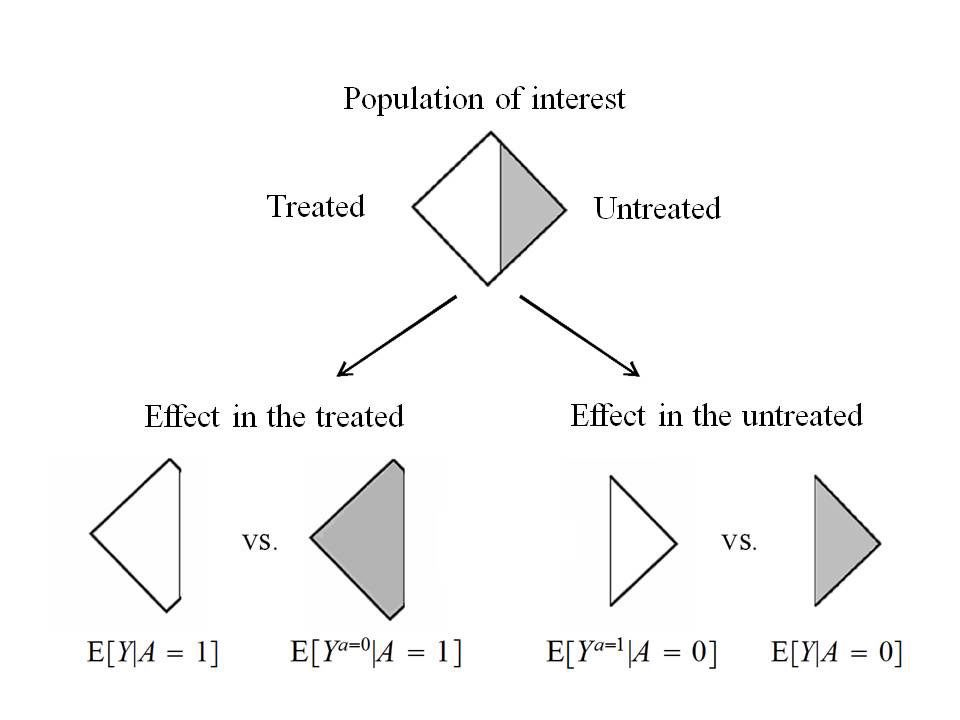
기술적 사항 4.1 처치군에서의 효과 계산(Computing the effect in the treated)
우리는 = 0과 = 1 모두에 대해 조건부 교환가능성 ⊥⊥ , 아래에서 모집단의 평균 인과 효과를 계산했다. 처치군에서의 평균 인과 효과를 계산하는 데에는 부분 교환가능성(partial exchangeability) =0 ⊥⊥ , 만 필요하다. 다시 말해, 미처치군이 처치를 받았더라면의 위험이 실제로 처치를 받은 사람들의 위험과 같은지는 무관하다. 미처치군에서의 평균 인과 효과는 부분 교환가능성 조건 =1 ⊥⊥ , 아래에서 계산된다. 이제 위의 부분 교환가능성 가정 아래에서 반사실적 평균(counterfactual mean) E[ , = ]을 표준화로 그리고 역확률 가중으로 각각 계산하는 방법을 설명한다.
- 표준화(Standardization): E[ , = ]은 E[ , = , = ] Pr[ = , = ]을 에 대해 더한 것과 같다. 표준화된 위험 비에 대한 논의는 Miettinen (1972)과 Greenland and Rothman (2008)을 보라.
- 역확률 가중(IP weighting): E[ , = ]은 다음과 같은 IP 가중 평균(IP weighted mean)과 같다.
E[ ( = ) ・ ÷ { Pr[ = , ] ・ ( , ) } ]
÷
E[ ( = ) ÷ { Pr[ = , ] ・ ( , ) } ]이때 가중치는 1 ÷ { Pr[ = , ] ・ ( , ) }이다. 이분형 에 대해서는 이 동등성이 Sato and Matsuyama (2003)에 의해 유도되었다. 더 자세한 내용은 Hernán and Robins (2006)을 보라.
한 모집단에서 계산된 인과 효과를 두 번째 모집단으로 외삽하는 것은 모집단들 사이의 인과적 추론의 운반성(transportability)이라고 불린다(세부사항 4.2 참조).
어떤 이들은 운반성의 결여를 외적 타당도(external validity)의 결여라고 일컫는다.
우리 예에서 심장 이식 이 사망 의 위험에 미치는 인과 효과는 남성과 여성 사이에서, 그리고 로마인과 그리스인 사이에서 다르다. 따라서 이 모집단에서의 평균 인과 효과는 성별이나 국적 같은 효과 수정자의 분포가 다른 모집단들로 운반되지 않을 수 있다. 효과 수정자들에 의해 정의된 층들에서의 조건부 인과 효과는 전체 모집단에서의 인과 효과보다 더 운반될 가능성이 있지만, 한 모집단의 조건부 효과 측도가 다른 모집단의 조건부 효과 측도와 같을 것이라는 보장은 없다. 두 모집단 사이에서 조건부 분포가 달라지는 측정되지 않았거나 알려지지 않은 다른 인과적 효과 수정자들이 존재할 수 있기 때문이다(또는 세부사항 4.2에서 설명하는 다른 이유 때문에).
운반성이 문제가 되지 않을 수 있는 상황: Smith and Pell (2003)은 “중력 도전(gravitational challenge)(예: 높은 고도의 비행기에서 뛰어내리기) 이후의 사망”에 대한 낙하산 사용 효과의 주요 수정자를 확인할 수 없었다. 그들은 특정 집단으로 제한된 낙하산 사용 무작위 시험을 수행한다 해도 그 결과의 다른 집단으로의 운반성을 훼손하지 않을 것이라고 결론 내렸다.
이 측정되지 않은 효과 수정자들은 교환가능성을 달성하는 데 필요한 변수들이 아니라, 단지 결과의 위험 요인들일 뿐이다. 따라서 한 모집단 안에서 인과 효과를 식별하는 것보다 모집단들 사이에서 효과를 운반하는 것이 훨씬 더 어려운 문제다. 교환가능성을 달성하기 위해 필요한 모든 것들(예를 들어 처치를 어떻게 배정할지 결정하는 사람들을 인터뷰함으로써 정보를 얻을 수 있을지도 모르는 것들)에 대해 계층화해야 할 뿐만 아니라, 정보가 훨씬 적은 결과의 측정되지 않은 원인들에 대해서도 계층화해야 하기 때문이다. 따라서 인과 효과의 운반성은 주제에 대한 지식에 크게 의존하는, 검증 불가능한 가정이다. 예를 들어, 대부분의 전문가들은 니제르의 한 가구 연소득을 $100 늘리는 것의 건강 효과(덧셈적 척도든 곱셈적 척도든)를 네덜란드로 운반할 수 없다는 데 동의할 것이지만, 유럽인들에서 콜레스테롤 저하 약물 사용의 건강 효과를 캐나다인들로 운반할 수 있다는 데는 대부분 동의할 것이다.
4.4 계층화가 하나의 보정 방식인 이유(Why stratification is an adjustment method)
개입으로부터 가장 큰 혜택을 받을 개인들의 집단을 찾는 것은 개입의 효과가 가장 큼을 의미한다. 표 4.1의 예에서 처치 이 결과 에 미치는 평균 인과 효과는 0이었다. 그러나 처치 은 남성( =0)에게는 유익한 효과를, 여성( =1)에게는 유해한 효과를 보였다. 성별에 따른 질적 효과 수정(qualitative effect modification)이 존재함을 의사가 알고 있다면, 추가 정보가 없는 상황에서 그녀는 다음 환자가 우연히 남성인 경우에만 치료할 것이다. 두 번째 예처럼 곱셈적 효과 수정(multiplicative effect modification)은 존재하지만 덧셈적 효과 수정(additive effect modification)은 존재하지 않는 상황은 조금 더 복잡하다. 이 경우 처치는 =0인 개인에게서 결과의 위험을 10% 낮추고 =1인 개인에게서도 10% 낮춘다. 즉, 모든 수준의 에서 인과적 위험 차이(causal risk difference)가 0.1로 같으므로 에 의한 덧셈적 효과 수정은 존재하지 않는다. 따라서 곱셈적 효과 수정이 존재함에도 불구하고 모든 환자를 치료하는 개입은 의 두 층(strata) 모두에서 위험 감소에 동등하게 효과적이다. 사실 의 적어도 한 층에서 0이 아닌 인과 효과가 존재하고 반사실적 위험(counterfactual risk) Pr[=0 = 1 = ]이 에 따라 달라진다면, 효과 수정은 덧셈적 척도 또는 곱셈적 척도 가운데 하나에서 반드시 나타난다. 개입으로부터 가장 큰 혜택을 받을 집단을 식별하는 데 적절한 척도는 덧셈적(곱셈적이 아닌) 효과 수정이다. 여러 저자(예: Blot and Day, 1979; Rothman et al., 1980; 몇몇 저자는 공중 보건의 관점에서 덧셈적 효과 수정이 Saracci, 1980)은 공중 보건의 관심의 대상이 되는 덧셈적 효과 수정을 덧셈적 효과 수정이 없다는 사실을 다루는 데 유용한 것으로 보았다. 이 들어 곱셈적 효과 수정이 있음을 아는 것은 그다지 도움이 되지 않는 상황이 흔하다. 데는 덧셈적 효과 수정이라고 언급했다. 두 번째 예에서 곱셈적 효과 수정이 존재하는 것은 다음의 수학적 사실에서 비롯된다. =1 층에서 무처치 시의 위험이 0.8이므로, =1 층에서 가능한 최대 인과 위험 비(causal risk ratio)는 1/0.8=1.25이다. 따라서 =1 층의 인과 위험 비는 =0 층의 인과 위험 비 2와 반드시 달라진다. 이러한 상황들에서 곱셈적 효과 수정의 존재는 단지 의 서로 다른 수준들에 걸쳐 무처치 시의 위험이 다르다는 것, 즉 Pr[=0 = 1 = ]이 다르다는 것의 결과에 불과하다. 수준에 따른 따라서, 일반적인 원칙으로서, 각 수준 의 에서 (절대적) 반사실적 위험( Pr[=1 = 1 = ]과 Pr[=0 = 1 = ] 모든 수준 의 에서, 이들 사이의 비율이나 차이만 보고하는 것보다)을 보고하는 것이 더 유익하다. 끝으로, 효과 수정의 확인은 결과로 이어지는 생물학적·사회적 또는 기타 기전을 이해하는 데 도움이 될 수 있다. 예를 들어, 포경 수술을 받지 않은 남성이 받은 남성보다 HIV 감염 위험이 더 크다는 것은 질병을 이해하는 새로운 단서를 제공할 수 있다. 효과 수정의 확인은 두 처치 사이의 상호작용(interaction)을 규명하는 첫걸음이 될 수 있다. “효과 수정(effect modification)”과 “상호작용(interaction)”이라는 용어는 과학 문헌에서 때때로 동의어로 사용되기도 한다. 이 장은 “효과 수정”에 초점을 맞추었다. 다음 장은 상호작용을 효과 수정과 관련은 있으나 구별되는 인과 개념으로서 기술한다. 이 장까지 우리의 유일한 목표는 전체 모집단에서 평균 인과 효과를 계산하는 것이었다. 주변 무작위화(marginal randomization)가 없는 경우, 이 목표를 달성하려면 처치군과 미처치군의 조건부 교환가능성(conditional exchangeability)을 보장해 주는 변수 에 대한 보정(adjustment)이 필요하다. 예를 들어 2장에서 우리는 심장 이식 이 사망률 에 미치는 평균 인과 효과가 0임을 확인했다. 즉, 인과 위험 비 Pr =1 =1 /Pr =0 =1 =1이었다. 우리는 표 2.2의 데이터를 이용하여 표준화(standardization)와 역확률 가중(IP weighting) 둘 다를 통해 요인 을 보정했다. 이 장은 분석에 또 하나의 잠재적 목표를 추가한다. 즉, 변수 에 의한 효과 수정을 식별하는 것이다. 이 목표를 달성하려면 을 보정하기 전에 로 먼저 계층화해야 한다. 예를 들어 이 장에서 우리는 심장 이식 이 사망률 에 미치는 평균 인과 효과가 그리스인과 로마인 사이에 차이가 있음을 확인하기 위하여 을 보정하기 전에 국적 로 먼저 계층화했다. 요약하면, 표준화(또는 역확률 가중)는 을 보정하는 데, 계층화는 에 의한 효과 수정을 식별하는 데 사용된다. 그러나 계층화가 항상 에 의한 효과 수정을 식별하는 데만 사용되는 것은 아니다. 실제로 계층화는 을 보정하기 위한 표준화(그리고 역확률 가중)의 대안으로 자주 사용된다. 사실 을 보정하는 방법으로서 계층화의 사용이 너무나 널리 퍼져 있어서, 많은 연구자들은 “계층화”와 “보정”이라는 용어를 동의어로 간주한다. 예를 들어, 당신이 어떤 역학자에게 심장 이식 이 사망률 에 미치는 효과를 계산하기 위해 요인 을 보정해 달라고 요청했다고 가정하자. 그녀는 아마 즉시 표 2.2를 두 개의 하위 표로 나눌 것이다–하나는 = 0인 개인들로, ### 4.5 매칭이 또 하나의 보정 방식인 이유(Why matching is another adjustment method)
다른 하나는 = 1인 개인들로–그리고 각각에서 효과 측도(가령, 위험 비)를 제시할 것이다. 즉, 그녀는 =0과 =1 둘 다에 대해 위험 비 Pr[ =1=1,=]/Pr[ =1=0,=]=1을 계산할 것이다. 이 두 층별 연관성 위험 비(stratum-specific associational risk ratio)는 주어진 에 대한 조건부 교환가능성 아래에서 인과적 해석을 부여받을 수 있다. 조건부 교환가능성 아래에서, 주어진 에 대한 층 = 이들은 각각 = 0과 = 1로 정의된 모집단 하위집합에서의 평균 인과 효과를 측정한다. 이들은 조건부 효과 측도(conditional effect measure)이다. 반면 2장에서 계산한 위험 비 1은 주변(비조건부, marginal, unconditional) 효과 측도였다. 이 특정 예에서 세 위험 비–두 =에서의 위험 비는, 만약 조건부 위험 비와 주변 위험 비–는 우연히 모두 같다. 에 의한 효과 수정이 없기 때문이다. Then ⊥⊥ 이면 Pr[ =1=,=0]= 계층화는 필연적으로 여러 층별 효과 측도를 산출한다(변수 에 by 정의된 각 층마다 하나씩). | 그것들 각각은 모집단의 겹치지 않는 하위집합에서 Pr[ =1=0]의 평균 인과 효과를 정량화하지만, 일반적으로 어느 것도 전체 모집단에서 | 의 평균 인과 효과를 정량화하지는 않는다. 따라서 2장에서 모집단에서 처치의 평균 인과 효과를 계산하는 방법들을 기술할 때 우리는 계층화를 고려하지 않았다. 오히려 표준화와 역확률 가중에 초점을 맞추었다. 또한, 계층화를 통한 보정은 표준화나 역확률 가중과 달리, 조건부 교환가능성에 필요한 모든 변수 의 조합에 의해 정의된 모집단 하위집합에서 효과 측도를 계산해야 한다. 예를 들어, 표 2.2와 4.2의 모집단에서 심장 이식의 효과를 추정하기 위해 계층화를 사용할 때, =1인 로마인, =1인 그리스인, =0인 로마인, 그리고 = 0인 그리스인에서의 효과를 계산해야 한다. 그러나 국적 만으로는 조건부 교환가능성을 보장하기에 충분하지 않으므로, =0 층에서 연관성만 계산해 로마인에서의 효과를 계산할 수는 없다. 처치들에 대한 층별 효과 측도가 교환가능성, 양성성, 즉, 계층화를 사용한다는 것은 그러한 효과 수정에 관심이 있는지와 그리고 잘 정의된 개입이 존재하더라도 무관하게, 조건부 교환가능성을 달성하는 데 필요한 모든 변수 에 의한 인과적 해석을 갖지 못하는 조건들을 기술했다. 효과 수정을 평가하도록 강제한다. 이와 대조적으로, 에 의한 계층화 후 역확률 가중 또는 표준화로 을 보정하는 것은 위에서 기술한 것처럼 교환가능성과 효과 수정을 별도로 다룰 수 있게 한다. 계층화 사용과 관련된 다른 문제들은 오즈비(odds ratio)와 같은 특정 효과 측도의 비결합성(noncollapsibility, 세부사항 4.3 참조)과, 시간에 따라 변하는 계층화는 교환가능성의 추가 요건으로 양성성을 처치들(time-varying treatments)의 경우 사전 처치의 영향을 받는 시간에 따라 변하는 요구한다. 처치와 미처치 변수들을 보정할 필요가 있을 때 편향으로 이어지는 부적절한 보정이다(제III부 참조). 개인들이 존재하지 않는 하위집합 =에서는 때때로 연구자들은 변수 에 의해 정의된 층들 중 일부에서만 인과 효과를 계산한다. 인과 효과를 계산할 수 없다. 즉, 일부 층에 대해서는 층별 효과 측도가 전혀 계산되지 않는다. 이러한 계층화의 한 형태를 제한(restriction)이라고 한다. 인과 추론을 위해, 계층화란 단순히 제한을 모집단의 여러 포괄적이고 상호 배타적인 하위집합들에 적용하면서 각 하위집합 내에서 교환가능성이 성립하도록 하는 것이다. 양성성이 모집단의 일부 층에서 실패할 때, 제한은 양성성이 성립하는 원래 모집단의 층들로 인과 추론을 한정하는 데 사용된다(3장 참조). 매칭(matching)은 또 하나의 보정 방법이다. 매칭의 목표는 변수 들이 처치군과 미처치군 둘 다에서 동일한 분포를 갖는 모집단 하위집합을 구성하는 것이다. 효과 수정 예를 들어, 표 2.2의 심장 이식 예를 보자. 여기서 변수 이 조건부 교환가능성을 달성하기에 충분하다고 가정한다. 비중증 상태( = 0, = 0)의 각 미처치 개인에 대해 비중증 상태( = 1, = 0)의 처치 개인을 하나씩 무작위로 선택하고, 중증 상태( = 0, = 1)의 각 미처치 개인에 대해 중증 상태( = 1, = 1)의 처치 개인을 하나씩 무작위로 선택한다. 우리는 각 미처치 개인과 그에 대응하는 처치 개인을 매칭 짝(matched pair)이라고 하고, 변수 을 매칭 요인(matching factor)이라고 한다. 우리가 = 0에 대해 Rheia-Hestia, Kronos-Poseidon, Demeter-Hera, = 1에 대해 Hades-Zeus, 그리고 = 1에 대해 Artemis-Ares, Apollo-Aphrodite, Leto-Hermes로 다음 7개의 매칭 짝을 형성했다고 가정하자. 매칭에 관한 우리의 논의는 코호트 연구에만 적용된다. 모집단에서 모든 미처치 개인은 선택되었지만 처치 개인들은 표본만 선택되었다. 매칭 짝들로 구성된 이 모집단 하위집합에서 중증 상태( = 1)의 비율은 설계상 처치군과 미처치군에서 동일하다(3/7). 매칭 모집단을 구성하기 위해 우리는 처치군과 미처치군보다는 사례와 비사례(즉, 대조군)를 종종 매칭한다. 모집단에서 매칭 요인 이 미처치군과 동일한 분포를 갖는 처치 개인들의 하위집합으로 처치군을 대체했다. 조건부 교환가능성 가정 아래에서, 매칭 요인이 조건부 교환가능성에 충분하더라도, 이 절차의 결과는 매칭 모집단에서 처치군과 미처치군의 (무조건부) 교환가능성이다. 사례와 대조군을 매칭하는 것은 매칭 모집단에서 처치군과 미처치군의 무조건부로 교환가능하므로, 그들의 평균 결과는 직접 비교할 수 있다. 처치군의 위험은 3/7, 미처치군의 위험은 3/7이며, 따라서 인과 위험 비는 1이다. 매칭 요인들을 통한 계층화로 보정되는 것은 매칭 모집단에서 양성성을 보장한다는 점에 유의하라. 왜냐하면 조건부(층별) 효과 처치만 받거나 미처치인 개인들만 있는 층이 분석에서 제외되기 때문이다. 종종 개인 수가 적은 집단(우리 예에서 미처치군)을 선택하고 다른 집단(우리 예에서 처치군)에서 그들의 매칭 상대를 찾는다. 선택된 집단은 인과 효과가 계산되는 하위모집단을 정의한다. 앞 단락에서 우리는 미처치군에서의 효과를 계산했다. 의 모든 층에서 미처치 개인보다 처치 개인이 적은 상황에서는 일반적으로 처치군에서의 효과를 계산한다. 또한 매칭은 일대일(매칭 짝들)일 필요가 없으며 일대다(매칭 집합들)일 수 있다. 많은 적용에서 은 여러 변수의 벡터다. 그러면 의 모든 변수들의 값의 조합으로 정의된 주어진 층의 각 미처치 개인에 대해, 같은 층에서 처치 개인(들)을 무작위로 선택했을 것이다. 매칭 요인의 수가 증가함에 따라 개인에 대한 정확한 매칭 상대가 존재하지 않을 확률도 증가한다. 그러한 매칭은 임의의 선택된 분포를 가진 매칭 모집단을 만드는 데 사용될 수 있다. 상황에서 근사 매칭(approximate matches)을 찾는 방법에 관한 방대한 문헌이 있으며, 이 책의 범위를 넘어선다. 관심 분포는 위에서 기술한 것처럼 개인 매칭(individual matching)으로, 또는 빈도 매칭(frequency matching)으로도 매칭 모집단의 분포는 처치군이나 미처치군의 분포가 아니라 임의로 선택된 달성될 수 있다. 후자의 예는, 처치 개인들을 무작위로 선택해 그들의 70%가 분포일 수 있다. =1을 갖게 하고, 그 다음 미처치군에 대해 같은 절차를 반복하는 연구다. 매칭 모집단은 원래 연구 모집단의 하위집합이므로, 매칭된 연구 모집단에서 인과 효과 수정자(effect modifier)들의 분포는 일반적으로 원래의, 매칭되지 않은 연구 모집단과 다를 것이다. 이는 다음 절에서 논의한다. 표준화, 역확률 가중, 계층화/제한, 그리고 매칭은 평균 인과 효과를 추정하는 서로 다른 접근법이지만, 그것들은 서로 다른 유형의 인과 효과를 추정한다. ### 4.6 효과 수정과 보정 방법(Effect modification and adjustment methods)
기술적 사항 4.2 층별 효과 측도의 합산. 지금까지 우리는 전체 모집단이 아니라 그것으로부터의 표본으로 작업한다고 가정함으로써 인과 추론의 개념적이고 비통계적인 측면에 초점을 맞추었다. 따라서 우리는 (일관되게) 추정하는 것보다는 인과 효과를 계산하는 것에 대해 이야기한다. 그러나 실제 세상에서 우리는 모집단에서 인과 효과를 거의 계산할 수 없다. 표본으로부터 그것들을 추정해야 하며, 따라서 추정된 효과 측도 주변에서 합리적으로 좁은 신뢰 구간을 얻는 것은 중요한 실용적 관심사이다. 층별 효과 측도를 다룰 때, 추정치들의 변동성을 줄이기 위해 흔히 사용되는 전략 하나는 모든 층별 효과 측도를 하나의 합산된(통합된) 층별 효과 측도로 결합하는 것이다. 핵심 아이디어는, 효과 측도가 모든 층에서 동일하다면(즉, 효과-측도 수정이 없다면), 합산된 효과 측도가 공통 효과 측도의 더 정밀한 추정치가 될 것이라는 점이다. 여러 방법(예: Woolf, Mantel-Haenszel, 최대우도)이 합산 추정치를 산출하는데, 때때로 합산 추정치의 변동성을 줄이기 위해 선택된 가중치들로 층별 효과 측도의 가중 평균을 계산함으로써 그러하다. Greenland와 Rothman(2008)은 층화 분석에 일반적으로 사용되는 몇 가지 방법을 검토한다. 합산 효과 측도는 모든 공변량 사이의 가능한 모든 곱 항들을 포함하지만 처치 합산의 핵심 목표는 공통 층별 효과 측도 주변에서 더 좁은 신뢰 구간을 얻는 것이지만, 합산된 효과 측도는 여전히 조건부 효과 측도이다. 심장 이식 예에서, 합산된 층별 위험 비(Mantel-Haenszel 방법)는 결과 에 대해 0.88이었다. 이 결과는 층별 위험 비 2와 0.5가 실제로 동일한 층별 인과 효과의 추정치인 경우에만 의미가 있다. 예를 들어, 두 층 모두에서 인과 위험 비가 0.9지만, 표본 크기가 작아 우리가 0.5와 2.0의 추정치를 얻었다고 가정하자. 그 경우 합산은 적절하며, Mantel-Haenszel 위험 비는 두 층별 위험 비 중 어느 것보다 진실에 더 가까울 것이다. 반대로 층별 인과 위험 비가 진짜로 0.5와 2.0이라면, 합산은 별 의미가 없으며 Mantel-Haenszel 위험 비는 쉽게 해석될 수 없다. 실제로, 층들 간 효과 측도의 이질성이 표본 추출 변동성 때문인지 효과-측도 수정 때문인지를 판단하는 것이 항상 명확하지는 않다. 계층화가 더 세밀할수록 무작위 변동성이 도입하는 불확실성은 더 커진다. 인과 효과의 유형들. 이 네 가지 접근법은 추정하는 효과의 유형에 따라 두 개의 집단으로 나눌 수 있다. 표준화와 역확률 가중은 주변 효과 또는 조건부 효과 중 하나를 계산하는 데 사용될 수 있는 반면, 계층화/제한과 매칭은 표 4.3 모집단의 특정 하위집합에서 조건부 효과를 계산하는 데에만 사용될 수 있다. 이 네 접근법 모두 교환가능성과 양성성을 요구하지만, 이러한 조건들이 성립해야 하는 모집단의 하위집합은 관심 있는 인과 효과에 따라 달라진다. 예를 들어, = 인 개인들 사이의 조건부 효과에 대해 Rheia 0 0 0 계산하려면, 위의 어느 방법이든 그 하위집합에서만 교환가능성과 양성성을 요구한다. Kronos 0 0 1 전체 모집단에서 주변 효과를 추정하려면, 교환가능성과 양성성이 Demeter 0 0 0 의 모든 수준에서 요구된다. Hades 0 0 0 효과 수정이 없을 때, 이 네 가지 접근법을 통해 계산된 효과 측도(위험 비 또는 위험 Hestia 0 1 0 차이)는 동일할 것이다. 예를 들어, 우리는 심장 이식 이 사망률 에 미치는 Poseidon 0 1 0 평균 인과 효과가 표 2.2의 전체 모집단(표준화와 역확률 가중)에서, 중증 상태 Hera 0 1 1 =1과 비중증 상태 = 0의 모집단 하위집합들(계층화)에서, 그리고 미처치군(매칭)에서 Zeus 0 1 1 모두 0임을 결론지었다. 모든 방법이 인과 위험 비 1을 산출했다. 그러나 이 네 가지 Artemis 1 0 1 접근법을 통해 계산된 효과 측도들은 일반적으로 동일하지는 않을 것이다. 효과가 어떻게 Apollo 1 0 1 달라질 수 있는지 설명하기 위해, 표 4.3의 데이터를 사용하여 심장 이식 이 고혈압 Leto 1 0 0 (1: 있음, 아니면 0)에 미치는 효과를 계산해 보자. 우리는 교환가능성 과 양성성이 Ares 1 1 1 ⊥⊥ 성립한다고 가정한다. 우리가 위험 비 척도를 사용하는 데는 특별한 이유가 없다. Athena 1 1 1 Hephaestus 1 1 1 Aphrodite 1 1 0 Cyclope 1 1 0 Persephone 1 1 0 Hermes 1 1 0 Hebe 1 1 0 Dionysus 1 1 0 따라서 주변 위험 비는 Pr =0 =1=1 /Pr =0 =1=0 > 2Pr[=0]/Pr[=1]일 때, 그리고 그럴 때에만 1보다 작을 것이다. 표준화와 역확률 가중은 전체 모집단에서 평균 인과 효과 Pr[=1 = 1]/Pr[=0 = 1] = 0.8을 산출한다(이 계산과 이 표 4.4 다음의 계산들은 독자에게 맡긴다). 계층화는 = 0 층에서 조건부 인과 위험 비 Pr[=1 =1=0]/Pr[=0 =1=0]=2.0을, 그리고 =1 층에서 조건부 인과 위험 비 Pr[=1 = 1 = 1]/Pr[=0 = 1 = 1] = 0.5를 산출한다. Rheia 1 0 0 Demeter 1 0 0 앞 절에서 선택한 매칭 짝들을 사용한 매칭은 미처치군에서 인과 위험 비 Hestia 1 0 0 Pr[=1 =1=0]/Pr[ =1=0]=1.0을 산출한다. Hera 1 0 0 우리는 네 개의 인과 위험 비를 계산했고 0.8, 2.0, 0.5, 1.0이라는 네 개의 서로 다른 Artemis 1 0 1 수를 얻었다. 모두 옳다. 무작위 변동성(기술적 사항 4.2 참조)을 제외하면, 차이에 대한 설명은 Leto 1 1 0 질적 효과 수정이다. 처치는 비중증 상태의 개인들( = 0, 인과 위험 비 2.0)에서 위험을 Athena 1 1 1 두 배로 늘리고 중증 상태의 개인들( =1, 인과 위험 비 0.5)에서 위험을 절반으로 줄인다. Aphrodite 1 1 1 모집단에서 평균 인과 효과(인과 위험 비 0.8)는 유익한데, 이는 중증 그룹의 무처치 Persephone 1 1 0 하 반사실적 위험과 비중증 그룹의 무처치 하 반사실적 위험의 비율 Pr =0 =1=1 /Pr =0 =1=0 이 비중증 그룹에 속할 승률 Pr[=0]/Pr[=1]의 2배를 초과하기 때문이다 (기술적 사항 4.3 참조). 미처치군에서 인과 효과는 0이다(인과 위험 비 1.0). 이는 미처치군에서 전체 모집단에 비해 비중증 상태의 개인 비율이 더 크다는 것을 반영한다. 이 예는 효과 측도가 대응하는 모집단, 또는 모집단의 하위집합을 명시하는 것의 핵심적 중요성을 부각한다. 이전 장은 잘 정의된 인과 효과가 의미 있는 인과 추론의 전제 조건이라고 주장했다. 이 장은 잘 특성화된 목표 모집단이 또 하나의 그러한 전제 조건이라고 주장한다. 두 전제 조건 모두 특정 선험적 적격 기준을 충족하는 모집단에서 Cyclope 0 1 1 두 개 이상의 개입을 비교하는 실험에서는 자동적으로 충족된다. 그러나 관찰 연구에서는 이러한 전제 조건을 당연하게 여길 수 없다. 오히려 관찰 연구를 수행하는 연구자들은 관심 있는 인과 효과와 효과가 계산되고 있는 모집단의 하위집합을 명시적으로 정의해야 한다. 그렇지 않으면 서로 다른 방법을 통해 얻은 효과 측도들이 서로 다를 때 오해가 쉽게 발생할 수 있다. 제II부는 표준화, 역확률 가중, 그리고 계층화가 모수적 또는 준모수적 모형들과 함께 결합되어 사용될 수 있는 방법을 기술한다. 예를 들어, 표준 회귀 모형들은 모형에 있는 다른 모든 공변량들의 수준 내에서 처치와 결과 사이의 연관이 추정되는 계층화의 한 형태이다. 위 예에서 역확률 가중을 사용한 한 연구자(전체 모집단에서 효과를 계산했음)와 매칭을 사용한 또 다른 연구자(미처치군에서 효과를 계산했음)는 한 분석 접근법이 다른 것보다 우월하다는 논쟁에 빠질 필요가 없다. 그들의 서로 다른 효과 측도들은 각 연구자가 제기한 서로 다른 인과 질문에서 비롯된 것이며, 분석 접근법의 선택에서 비롯된 것이 아니라. 실제로 두 번째 연구자는 역확률 가중을 사용하여 미처치군 또는 | — | — | — | — | — | — | — | — | 데 사용될 수 있지만, 개별(대상-특이적, subject-specific) 효과는 아니다. 앞서 논의했듯이, | — | — | — | — | — | — | — | — | 효과 수정 기술적 사항 4.3 결합성(collapsibility)과 오즈비. 에 의한 곱셈적 효과 수정이 없을 때, 전체 모집단에서의 인과 위험 비 Pr[=1 = 1]/Pr[=0 = 1]은 의 모든 층 에서의 조건부 인과 위험 비 Pr[=1 = 1 = ]/Pr[=0 = 1 = ]와 같다. 더 일반적으로, 인과 위험 비는 층별 위험 비들의 가중 평균이다. 예를 들어, 층 =1과 =0에서 인과 위험 비가 각각 2와 3이라면, 모집단에서의 인과 위험 비는 2보다 크고 3보다 작을 것이다. 모집단에서 인과 위험 비(그리고 인과 위험 차이)의 값이 항상 층별 위험 비 값들의 범위에 의해 제약된다는 것은 자명할 뿐만 아니라 어떤 효과 측도든 바람직한 특성이기도 하다. 이제 (위험 비나 위험 차이가 아닌) 모집단 효과 측도가 층별 측도들의 가중 평균이 아닐 그러한 가상의 효과 측도를 고려하자. 즉, 모집단 효과 측도가 층별 효과 측도들의 값들의 범위 안에 반드시 놓이지는 않을 것이다. 그런 효과 측도는 이상한 측도일 것이다. 오즈비(odds ratio, 말장난 의도)가 바로 그러한 효과 측도이며, 이제 이를 논의하자. 표 4.4의 데이터가 기준 시점에 우울하지 않았던 20명의 모집단에서 고도 이 우울증 에 미치는 인과 효과를 계산하기 위해 수집되었다고 가정하자. 처치 은 개인이 고지대 거주지(올림포스 산 정상)로 이사했으면 1, 그렇지 않으면 0이다. 결과 은 개인이 이후 우울증이 발병했으면 1, 그렇지 않으면 0이다. 그리고 은 개인이 여성이면 1, 남성이면 0이다. 이사 결정은 무작위적이었다. 즉, 우울증이 발병하기 쉬운 경향이 있는 사람들도 다른 사람들과 마찬가지로 이사할 가능성이 있었다. 사실상 이었다. 따라서 위험 비 ⊥⊥ Pr[ = 1 = 1]/Pr[ = 1 = 0] = 2.3은 모집단에서의 인과 위험 비이고, 오즈비 Pr[ =1=1]/P r[ =0=1] Pr[=1 =1]/Pr[=1 =0] = 5.4는 모집단에서의 인과 오즈비이다. 비율 비율 Pr[ =1=0]/Pr[ =0=0] Pr[=0 =1]/Pr[=0 =0] 위험과 오즈는 서로 다른 척도에서 동일한 인과 효과를 측정한다. 이제 위험 비 척도와 오즈비 척도에서 성별 특이적 인과 효과를 계산해 보자. (조건부) 인과 위험 비 Pr[ = 1 = , = 1]/Pr[ = 1 = , = 0]는 남성( =0)에 대해 2이고 여성( =1)에 대해 3이다. Pr[ =1 =,=1]/Pr[ =0 =,=1] (조건부) 인과 오즈비 | | 는 남성( =0)에 대해 6이고 Pr[ =1 =,=0]/Pr[ =0 =,=0] 여성( =1)에 대해 6이다. 모집단에서 인과 위험 비 2.3은 성별 특이적 인과 위험 비 2와 3 사이에 있다. 이와 대조적으로, 모집단에서 인과 오즈비 5.4는 두 성별 특이적 오즈비 6보다 더 작다(즉, 무효 값에 더 가깝다). 오즈비 척도로 측정된 인과 효과는 전체 모집단에서보다 모집단의 각 절반에서 더 크다. 이 에 대한 독립적인 위험 요인이고, 우리의 무작위 실험에서처럼 이 과 독립적일 때, 모집단 인과 오즈비는 무효가 아닌 층별 인과 오즈비보다 무효 값에 더 가까울 수 있다(Miettinen and Cook, 1981). 모집단 효과 측도가 층별 측도들의 가중 평균으로 표현될 수 있을 때 그 효과 측도는 결합적(collapsible)이라고 말한다. 추적 연구들에서 위험 비와 위험 차이는 결합적 효과 측도이지만, 오즈비–또는 거의 사용되지 않는 오즈 차이–는 그렇지 않다(Greenland 1987). Jensen 부등식의 특수한 경우인(Samuels 1981) 오즈비의 비결합성은 위에서 기술한 것과 같은 직관에 반하는 발견들로 이어질 수 있다. 오즈비는 엄밀한 무가설 하에서 결합적이다–그러면 조건부와 무조건부 효과 측도가 모두 무효 값과 같다–그리고 결과가 추적 연구의 모든 층에서 희귀할 때(가령, <10%) 대략적으로 결합적이다–그리고 대략적으로 위험 비와 같다. 오즈비 비결합성의 한 가지 중요한 결과는 “교환가능성의 부족”과 “무조건부 오즈비에 비한 조건부 오즈비의 변화”를 동일시하는 것이 논리적으로 불가능하다는 것이다. 우리 예에서 오즈비의 변화는 처치군과 미처치군이 교환가능했음에도 불구하고 약 10%였다(1 6/5.4). − Greenland, Robins, 그리고 Pearl(1999)은 비결합성과 교환가능성 부족 사이의 관계를 검토했다. − − ## 제5장 상호작용(Interaction)
5.1 상호작용의 정의(Definition of interaction)
하늘을 올려다보는 한 사람이 다른 보행자들도 올려다보게 하는가? 라는 인과 질문에 답하기 위한 무작위 실험을 다시 고려하자. 지금까지 우리는 단일 처치(올려다보기)의 인과 효과를 전체 모집단에서 또는 그 하위집합에서만으로 관심을 제한해 왔다. 그러나 많은 인과 질문들은 실제로 두 개 이상의 동시적인 처치들의 효과에 관한 것이다. 예를 들어, 당신의 올려다보기를 무작위 배정하는 것 외에도, 당신이 거리에서 옷을 입고 서 있는지 아니면 벌거벗고 서 있는지를 무작위로 배정한다고 가정하자. 이제 우리는 다음과 같은 질문을 할 수 있다. 옷을 입고 있을 때 당신의 올려다보기의 인과 효과는 무엇인가? 그리고 벌거벗고 있을 때는? 이 두 인과 효과가 다르다면, 우리는 고려 중인 두 처치(올려다보기와 옷 입고 있기)가 결과를 일으키는 데 있어 상호작용(interact)한다고 말한다. 두 개 이상의 처치들에 대한 결합 개입(joint interventions)이 가능할 때, 상호작용의 식별은 가장 효과적인 개입들을 시행할 수 있게 해준다. 따라서 상호작용의 개념을 이해하는 것은 인과 추론의 핵심이다. 이 장은 두 처치 사이의 상호작용에 대한 형식적 정의를, 우리에게 이미 친숙한 반사실적 틀과 충분-구성-원인 틀(sufficient-component-cause framework) 두 가지 모두 안에서 제공한다. 5.1 상호작용은 결합 개입을 요구한다 심장 이식 예에서 개인들이 심장 이식( = 1) 또는 심장 무이식( = 0) 중 하나를 배정받기 전에 종합 비타민 복합물( = 1) 또는 무비타민( = 0) 중 하나를 받도록 배정되었다고 가정하자. 이제 우리는 모든 개인을 4개의 처치 집단으로 분류할 수 있다. 비타민-이식( = 1, = 1), 비타민-무이식( = 1, = 0), 무비타민-이식( =0, =1), 그리고 무비타민-무이식( =0, =0). 각 개인에 대해, 이제 4개의 잠재적 또는 반사실적 결과를 상상할 수 있는데, 이 4개의 처치 조합 각각에 대해 하나씩이다. =1,=1, =1,=0, =0,=1, =0,=0. 그리고 일반적으로, 개인의 반사실적 결과 ,는 우리가 그 개인의 와 의 값을 각각 와 로 설정하도록 개입했더라면 관찰되었을 결과이다. 우리는 두 개 이상의 처치들에 대한 개입들을 결합 개입이라고 부른다. 단독 개입에 대응하는 반사실적 는 관찰된 우리는 이제 반사실적 틀 안에서 상호작용의 정의를 제시할 준비가 되었다. 이 값 를 취한다면, 즉 = ,일 때, 결합 반사실적 , 두 처치 과 사이에 상호작용이 있다는 것은, 을 1로 설정한 결합 개입 이후 존재한다. 사실, 일관성(consistency)은 이 재귀 대입의 특수한 경우다. 이 에 미치는 인과 효과가 을 0으로 설정한 결합 개입 이후 이 에 미치는 인과 효과와 다를 때다. 구체적으로, 관찰된 = = ,가 우리의 일관성 정의다. 예를 들어, 모든 사람이 비타민을 섭취했다면 이식이 생존에 미치는 인과 효과가 아무도 비타민을 섭취하지 않았다면의 이식이 생존에 미치는 인과 효과와 다르다면, 기술적 사항 6.2도 참조하라. 이식 과 비타민 사이에는 상호작용이 있을 것이다. 인과 효과가 위험 차이 척도에서 측정될 때, 모집단에서 덧셈적 척도에서 과 사이에 상호작용이 있다고 말하는데, 이는 다음과 같은 경우다. =1,=1 =0,=1 =1,=0 =0,=0 Pr =1 Pr =1 =Pr =1 Pr =1 . − 6 − 예를 들어, 모든 사람이 비타민을 섭취할 때 이식 에 대한 인과 위험 차이 =1,=1 =0,=1 Pr =1 Pr =1, 가 0.1이라고 가정하자. 그리고 −
상호작용(Interaction) 아무도 비타민을 섭취하지 않을 때 이식 에 대한 인과 위험 차이 Pr [ =1,=0 =1 ] − Pr [ =0,=0 =1 ] 가 0.2라고 하자. 위험 차이 Pr [ =1,=1 =1 ] − Pr [ =0,=1 =1 ] 가 위험 차이 Pr [ =1,=0 =1 ] − Pr [ =0,=0 =1 ] 보다 작으므로, 우리는 덧셈적 척도(additive scale)에서 와 사이에 상호작용(interaction)이 존재한다고 말한다. 간단한 대수학을 이용하면, 이 부등식으로부터 모든 사람이 이식을 받을 때 비타민 에 대한 인과 위험 차이 Pr [ =1,=1 =1 ] − Pr [ =1,=0 =1 ] 역시 아무도 이식 를 받지 않을 때 비타민 에 대한 인과 위험 차이 Pr [ =0,=1 =1 ] − Pr [ =0,=0 =1 ] 보다 작다는 사실을 쉽게 보일 수 있다. 즉, 우리는 덧셈적 척도에서 와 사이의 상호작용을 다음과 같이 동등하게 정의할 수 있다: Pr [ =1,=1 =1 ] − Pr [ =1,=0 =1 ] 6= Pr [ =0,=1 =1 ] − Pr [ =0,=0 =1 ] . 위에 제시된 두 부등식은 상호작용의 정의에서 처치 와 가 동등한 지위를 가짐을 보여준다. 이제 상호작용과 효과 수정(effect modification) 사이의 차이를 살펴보자. 앞 장에서 설명했듯이, 변수 의 수준에 따라 에 대한 의 평균 인과 효과가 달라질 때 는 에 대한 의 효과의 수정자이다. 효과 수정의 개념은 의 인과 효과가 아니라 의 인과 효과를 가리킨다는 점에 유의하라. 예를 들어 표 4.1에서 성별은 심장 이식 효과에 대한 효과 수정자였지만, 우리는 성별이 사망에 미치는 효과에 대해서는 전혀 논의하지 않았다. 따라서 가 의 효과를 수정한다고 말할 때 우리는 와 를 동등한 지위의 변수로 고려하지 않는데, 오직 만이 우리가 가상으로 개입할 수 있는 변수로 간주되기 때문이다. 즉, 효과 수정의 정의는 반사실적 결과 ,가 아니라 반사실적 결과 를 포함한다. 이와 대조적으로 와 사이의 상호작용 정의는 위에서 보여준 두 가지 동등한 상호작용 정의에 반영되어 있듯이 두 처치 와 모두에 동등한 지위를 부여한다. 상호작용 개념은 두 처치 와 의 결합 인과 효과(joint causal effect)를 가리키며, 따라서 결합 개입 하에서의 반사실적 결과 ,를 포함한다.
5.2 상호작용의 식별(Identifying interaction)
이전 장들에서 우리는 전체 모집단 또는 그 하위집합에서 결과 에 대한 처치 의 평균 인과 효과를 식별하는 데 필요한 조건들을 설명했다. 세 가지 핵심적인 식별 조건은 교환가능성(exchangeability), 양성성(positivity), 그리고 일관성(consistency)이었다. 상호작용은 둘 이상의 처치 와 의 결합 효과를 다루므로, 상호작용을 식별하려면 두 처치 모두에 대해 교환가능성, 양성성, 일관성이 요구된다. 연구자들이 비타민 를 무작위로, 그리고 무조건부로 배정했다고 가정하자. 그러면 양성성과 일관성이 성립하며, 처치군 = 1과 미처치군 = 0은 교환가능할 것으로 기대된다. 즉, 모든 개인에게 이식 = 1과 비타민 = 1을 배정했을 때 관찰되었을 위험은 = 1을 받은 모든 개인에게 이식 = 1을 배정했을 때 관찰되었을 위험과 같다. 형식적으로, 주변 위험 Pr [ =1,=1 =1 ] 은 조건부 위험 Pr [ =1 =1 | =1 ] 과 같다. 그 결과, 우리는 덧셈적 척도에서 와 사이의 상호작용 정의를 다음과 같이 다시 쓸 수 있다: Pr [ =1 =1 | =1 ] − Pr [ =0 =1 | =1 ] | − | 6= Pr [ =1 =1 | =0 ] − Pr [ =0 =1 | =0 ] ,
상호작용(Interaction) 처치 에 대해서는 식별 조건이 성립하지만 처치 에 대해서는 그렇지 않은 경우, 예를 들어 무작위 실험에서 로 정의된 하위 집단 내에서 의 인과 효과를 추정할 때가 그러하다. 그 경우 일반적으로 와 사이의 상호작용의 존재 여부는 평가할 수 없지만, 에 의한 효과 수정의 존재 여부는 여전히 평가할 수 있다. 이는 에 의해 정의된 각 층에서 의 효과를 계산하는 데 와 관련된 어떠한 식별 가정도 필요하지 않기 때문이다. 이전 장에서 우리는 교환가능성, 양성성, 일관성에 대한 가정을 기꺼이 두지 못하는 변수들에 대해 ( 대신) 기호 를 사용했다. 예를 들어 우리는 이식 의 효과가 국적 에 의해 수정된다고 결론지었지만, 가 에 미치는 인과 효과를 계산하기 위해 데이터를 사용하는 데 관심이 없었으므로 의 효과에 대한 어떠한 식별 가정도 요구하지 않았다. 4.2절에서 우리는 실질적(내용적) 근거에 기반하여 가 대리 효과 수정자(surrogate effect modifier)라고 주장했다. 즉, 는 결과에 작용하지 않으며 따라서 와 상호작용하지 않는다—작용이 없으면 상호작용도 없다. 그러나 는 에 실제로 효과를 미치고 와 상호작용하는 미확인 변수와 상관되어(예: 그 대리 변수이므로) 에 대한 효과의 수정자가 된다. 따라서 어떤 변수에 의한 효과의 수정은 와 그 변수 사이의 상호작용 없이도 존재할 수 있다.
앞의 단락들에서 우리는 두 처치 와 사이의 상호작용을 식별하기 위한 충분조건이 네 가지 가능한 값 (0,0), (0,1), (1,0), (1,1)을 갖는 결합 처치 (,)에 대해 교환가능성, 양성성, 일관성이 모두 충족되는 것임을 살펴보았다. 이 조건이 성립하면 표준화나 역확률 가중(IP weighting)을 사용하여 두 처치의 결합 효과를 추정할 수 있고, 따라서 그들 사이의 상호작용을 평가할 수 있다. 제III부에서 우리는 두 처치가 서로 다른 시점에 발생할 때는 이 조건이 필요하지 않음을 보여준다. 제I부의 나머지 부분(이 장 제외)과 제II부의 대부분에서는 단일 처치 의 인과 효과에 초점을 맞출 것이다. 1장에서 우리는 결정론적(deterministic) 반사실적 결과와 비결정론적 반사실적 결과를 설명했다. 지금까지는 단순성을 위해 결정론적 반사실적 결과를 사용했다. 그러나 우리가 모집단 인과 효과와 상호작용에 대해 논의한 결과 중 어느 것도 결정론적 반사실적 결과를 요구하지 않는다. 이와 대조적으로, 이 장의 다음 절은 반사실적 결과가 결정론적인 경우에만 적용된다. 또한 처치와 결과가 이분형(dichotomous)이라고 가정한다.
5.3 반사실적 반응 유형과 상호작용(Counterfactual response types and interaction)
개인들은 그들의 결정론적 반사실적 반응(deterministic counterfactual responses)에 따라 분류될 수 있다. 예를 들어 표 4.1(표 1.1과 동일)에는 네 가지 유형의 사람들이 있다: 어떤 처치를 받든 상관없이 결과가 발생하는 “필멸형(doomed)”(아르테미스(Artemis), 아테나(Athena), 페르세포네(Persephone), 아레스(Ares)), 어떤 처치를 받든 상관없이 결과가 발생하지 않는 “면역형(immune)”(데메테르(Demeter), 헤스티아(Hestia), 헤라(Hera), 하데스(Hades)), 처치받지 않을 때만 결과가 발생하는 “구원형(helped)”(헤베(Hebe), 크로노스(Kronos), 포세이돈(Poseidon), 아폴론(Apollo), 헤르메스(Hermes), 디오니소스(Dionysus)), 그리고 처치받을 때만 결과가 발생하는 “피해형(hurt)”(레아(Rheia), 레토(Leto), 아프로디테(Aphrodite), 제우스(Zeus), 헤파이토스(Hephaestus), 퀴클롭스(Cyclope)). 반사실적 반응들의 각 조합은 종종 반응 패턴(response pattern) 또는 반응 유형(response type)이라고 불린다. 표 5.1은 가능한 네 가지 반응 유형을 보여준다.
표 5.1 유형 =0 =1 필멸형(Doomed) 1 1 구원형(Helped) 1 0 피해형(Hurt) 0 1 면역형(Immune) 0 0
두 개의 이분형 처치 와 를 고려할 때, 각 개인은 처치 와 에 대한 네 가지 가능한 결합 개입 (1,1), (0,1), (1,0), (0,0) 하에서 하나씩 총 4개의 반사실적 결과를 가지므로 16가지 가능한 반응 유형이 존재한다. 표 5.2는 두 처치에 대한 16가지 반응 유형을 보여준다. 이 절에서는 두 개의 이분형 처치 , 와 이분형 결과 의 경우 반응 유형과 상호작용의 존재 사이의 관계를 탐구한다.
5.3 반사실적 반응 유형과 상호작용 59 표 5.2의 첫 번째 유형은 반사실적 결과 =1,=1이 1인데, 이는 이 유형의 개인이 이식과 비타민 둘 다로 처치받으면 사망할 것임을 의미한다. 다른 세 가지 반사실적 결과 역시 1이다. 즉, =1,=1 = =0,=1 = =1,=0 = =0,=0 = 1이며, 이는 이 유형의 개인이 (무이식, 비타민), (이식, 무비타민), 또는 (무이식, 무비타민)으로 처치받아도 사망할 것임을 의미한다. 다시 말해 처치 도 처치 도 그러한 개인의 결과에 아무런 영향을 미치지 않는다. 그는 어떤 결합 처치에 배정되든 사망할 것이다. 이제 유형 16을 고려하자. 모든 반사실적 결과가 0이다. 즉, =1,=1 = =0,=1 = =1,=0 = =0,=0 = 0이다. 마찬가지로 처치 도 처치 도 이 유형에 속하는 개인의 결과에 아무런 영향을 미치지 않는다. 그녀는 어떤 결합 처치에 배정되든 생존할 것이다. 모집단의 모든 개인이 유형 1과 16에 속한다면, 우리는 도 도 에 어떠한 인과 효과도 미치지 않는다고 말할 것이며, 결합 처치 (,)에 대해 엄밀한 인과적 무가설(sharp causal null hypothesis)이 참일 것이다.
표 5.2 각 , 값에 대한 , 유형 1,1 0,1 1,0 0,0
1 | 1 | 1 | 1 | 1 |
2 | 1 | 1 | 1 | 0 |
3 | 1 | 1 | 0 | 1 |
4 | 1 | 1 | 0 | 0 |
5 | 1 | 0 | 1 | 1 |
6 | 1 | 0 | 1 | 0 |
7 | 1 | 0 | 0 | 1 |
8 | 1 | 0 | 0 | 0 |
9 | 0 | 1 | 1 | 1 |
10 | 0 | 1 | 1 | 0 |
11 | 0 | 1 | 0 | 1 |
12 | 0 | 1 | 0 | 0 |
13 | 0 | 0 | 1 | 1 |
14 | 0 | 0 | 1 | 0 |
15 | 0 | 0 | 0 | 1 |
16 | 0 | 0 | 0 | 0 |
이제 우리의 관심을 유형 4, 6, 11, 13에 집중해 보자. 유형 4의 개인은 이식을 받든 안 받든 비타민으로 처치받을 때만 사망한다. 즉, =1,=1 = =0,=1 = 1이고 =1,=0 = =0,=0 = 0이다. 유형 13의 개인은 이식을 받든 안 받든 비타민으로 처치받지 않을 때만 사망한다. 즉, =1,=1 = =0,=1 = 0이고 =1,=0 = =0,=0 = 1이다. 유형 6의 개인은 비타민을 받든 안 받든 이식으로 처치받을 때만 사망한다. 즉, =1,=1 = =1,=0 = 1이고 =0,=1 = =0,=0 = 0이다. 유형 11의 개인은 비타민을 받든 안 받든 이식으로 처치받지 않을 때만 사망한다. 즉, =1,=1 = =1,=0 = 0이고 =0,=1 = =0,=0 = 1이다. (Miettinen (1982)은 두 이분형 처치와 결과 하에서 가능한 16가지 반응 유형을 기술했다.) 표 5.2의 가능한 16가지 반응 유형 중 우리는 공통된 특징을 가진 6가지 유형(번호 1, 4, 6, 11, 13, 16)을 확인했다: 이러한 반응 유형 중 하나를 가진 개인의 경우, 결과 에 대한 처치 의 인과 효과는 처치 의 값과 관계없이 동일하며, 결과 에 대한 처치 의 인과 효과는 처치 의 값과 관계없이 동일하다. 모든 개인이 이 6가지 반응 유형 중 하나를 갖는 모집단에서는 인과 위험 차이 Pr [ =1,=1 =1 ] − Pr [ =0,=1 =1 ] 로 측정된 처치 가 존재할 때의 처치 의 인과 효과가, 인과 위험 차이 Pr [ =1,=0 =1 ] − Pr [ =0,=0 =1 ] 로 측정된 처치 가 부재할 때의 처치 의 인과 효과와 같을 것이다. 즉, 모집단의 모든 개인이 반응 유형 1, 4, 6, 11, 13, 16을 갖는다면 덧셈적 척도에서 와 사이의 상호작용은 없을 것이다. (Greenland와 Poole (1988)은 Miettinen의 반응 유형이 와 의 재코딩(즉, “0”과 “1”의 라벨을 바꾸는 것)에 대해 불변이 아님을 지적했다. 그들은 표 5.2의 16가지 반응 유형을 재코딩에 불변인 다음 세 동치 클래스로 분할했다.) 와 사이의 덧셈적 상호작용의 존재는 모집단의 일부 개인에 대해 의 값을 알지 못하고는 = 하에서의 두 반사실적 결과의 값을 결정할 수 없으며, 그 역도 마찬가지임을 의미한다. 즉, 다음 세 부류(classes) 중 적어도 하나에 속하는 개인이 반드시 존재해야 한다: 1. 네 가지 처치 조합 중 오직 하나에서만 결과가 발생하는 사람들(표 5.2의 유형 8, 12, 14, 15) 2. 두 가지 처치 조합에서 결과가 발생하되, 각 처치의 효과가 다른 처치의 각 수준 하에서 정확히 반대라는 특이성을 갖는 사람들(유형 7과 10)
상호작용(Interaction) 기술적 사항 5.2 인과 효과의 단조성(Monotonicity). 이분형 처치 와 결과 가 있는 환경을 고려하자. 반사실적 결과의 값 =0이 =1보다 큰 경우는 오직 “구원형(helped)” 유형의 개인들 사이에서만 나타난다. 다른 3가지 유형의 경우 =1 ≥ =0이며, 동등하게 개인의 반사실적 결과는 에 대해 단조 증가(즉, 비감소)한다. 따라서 처치가 어떤 개인의 결과도 예방할 수 없을 때(“구원형” 개인이 없을 때), 모든 개인의 반사실적 반응 유형은 에 대해 단조 증가한다. 우리는 이 경우 에 대한 의 인과 효과가 단조적(monotonic)이라고 간단히 말한다. 단조성의 개념은 두 처치 와 로 일반화될 수 있다. 모든 개인의 반사실적 결과 ,가 와 둘 다에 대해 단조 증가할 때 에 대한 와 의 인과 효과는 단조적이다. 즉, 반응 유형이 =1,=1 =0,=0,=1 =1 , =1,=1 =0,=1,=0 =1 , =1,=0 =0,=0,=0 =1 , 그리고 =0,=1 =0,=0,=0 =1 인 개인이 존재하지 않는 경우이다.
- 네 가지 처치 조합 중 세 가지에서 결과가 발생하는 사람들(유형 2, 3, 5, 9)
반면에 와 사이의 덧셈적 상호작용의 부재는 모집단에서 어떤 개인도 위에서 기술한 세 부류 중 하나에 속하지 않거나, 부호가 반대인 동일한 크기의 덧셈성 이탈이 완벽하게 상쇄됨을 의미한다. 그러한 상쇄는 예를 들어 유형 7과 10의 개인 비율이 같거나, 유형 8과 12의 개인 비율이 같을 때 발생할 것이다. (상호작용 유형이 존재할 때도 덧셈성을 초래하는 상쇄에 대한 자세한 내용은 Greenland, Lash, and Rothman (2008)을 참조하라.) 반사실적 반응 유형에 따른 개인들의 분류를 통해 “상호작용”이라는 용어의 의미가 명확해진다(세부사항 5.1도 참조). 이제 우리는 두 처치 사이의 상호작용에 관여하는 인과 기전을 개념화하기 위한 도구를 소개한다.
5.4 충분 원인(Sufficient causes)
상호작용의 의미는 반사실적 반응 유형에 따른 개인들의 분류를 통해 명확해진다. 이제 우리는 두 처치 사이의 상호작용에 관여하는 인과 기전을 표현하기 위한 도구를 소개한다. 단일 처치 를 사용한 우리의 심장 이식 예를 다시 고려하자. 앞 절에서 검토했듯이, 어떤 개인은 처치를 받을 때 사망하고, 다른 개인은 처치를 받지 않을 때 사망하며, 또 다른 개인은 무슨 일이 있어도 사망하고, 다른 개인은 무슨 일이 있어도 사망하지 않는다. 이러한 다양한 반응 유형은 처치 가 결과 의 발생 여부를 결정하는 유일한 변수가 아님을 나타낸다. 실제로 처치받은 개인들을 살펴보자. 그들 중 일부만이 사망했는데, 이는 처치 단독으로는 항상 결과를 일으키기에 불충분함을 의미한다. 극단적으로 단순화된 예로서 심장 이식 = 1이 마취 알레르기가 있는 개인에게서만 사망을 초래한다고 가정하자. 우리는 =1과 함께 필연적으로 결과를 생성하기에 충분한 가장 작은 배경 요인들의 집합을 1이라 부른다. 처치의 동시 존재(=1)와 마취 알레르기( 1 =1)는 결과 의 최소 충분 원인(minimal sufficient cause)이다. 이제 처치받지 않은 개인들을 살펴보자. 다시 그들 중 일부만이 사망했는데, 이는 처치 부재 단독으로는 결과를 일으키기에 불충분함을 의미한다. 극단적으로 단순화된 예로서 무이식 = 0이 박출률이 20% 미만인 개인에게서만 사망을 초래한다고 가정하자. 우리는 =0과 함께 결과를 생성하기에 충분한 가장 작은 배경 요인들의 집합을 2라 부른다. 처치의 부재(=0)와 낮은 박출률의 존재( 2 =1)의 동시 발생은 결과 의 또 다른 충분 원인이다. 마지막으로 1도 2도 없으면서 처치를 받든 받지 않든 결과가 발생했을 일부 개인이 있다고 가정하자. 이러한 “필멸형” 개인들의 존재는 그 자체로 결과를 일으키기에 충분한 다른 배경 요인들이 존재함을 의미한다. 극단적으로 단순화된 예로서 연구 시작 시점에 췌장암을 앓고 있는 모든 개인이 사망할 것이라고 가정하자. (배경 요인의 정의에 의해 이분형 변수 는 개입될 수 없으며, 처치 에 의해 영향을 받을 수 없다.) 우리는 처치 상태와 무관하게 결과를 생성하기에 충분한 가장 작은 배경 요인들의 집합을 0이라 부른다. 췌장암의 존재( 0 =1)는 결과 의 또 다른 충분 원인이다. 우리는 결과에 대한 3가지 충분 원인을 기술했다: 1이 존재하는 상황에서의 처치 = 1, 2가 존재하는 상황에서의 무처치 = 0, 그리고 처치 상태와 무관한 0의 존재. 각 충분 원인은 하나 이상의 구성요소를 갖는다(예: 첫 번째 충분 원인에서 = 1과 1 = 1). 그림 5.1은 각 충분 원인을 원으로, 그 구성요소들을 원의 부채꼴로 나타낸다. ’충분-구성 원인(sufficient-component causes)’이라는 용어는 종종 충분 원인들과 그 구성요소들을 지칭하는 데 사용된다.
5.4 충분 원인 61 세부사항 5.1 반사실적 유형과 상호작용에 관한 추가 논의. 반사실적 반응 유형별로 개인을 분류하면 상호작용의 특정 형태를 고려하기가 더 쉬워진다. 예를 들어 우리는 어떤 개인이 두 처치 = 1과 = 1을 모두 받을 때는 결과가 발생하지만, 둘 중 하나만 받을 때는 결과가 발생하지 않는지, 즉 모집단에 반사실적 반응 =1,=1 = 1 및 =0,=1 = =1,=0 = 0(유형 7과 8)을 가진 개인이 존재하는지 알아보는 데 관심이 있을 수 있다. VanderWeele와 Robins (2007a, 2008)은 2개 및 3개 처치에 대한 충분 원인 상호작용 이론을 개발하고, 여기서 설명하는 상승작용에 대한 식별 조건을 유도했다. 다음 부등식은 이러한 개인들이 존재하기 위한 충분조건이다: Pr [ =1,=1 =1 ] − Pr [ =0,=1 =1 ] + Pr [ =1,=0 =1 ] >0
즉, 처치 와 가 무작위로 배정된 실험에서 위의 부등식에 있는 세 반사실적 위험을 계산하여 유형 7과 8의 개인이 존재하는지 경험적으로 확인할 수 있다. 위의 부등식은 필요조건이 아닌 충분조건이므로, 유형 7과 8이 존재하더라도 성립하지 않을 수 있다. 사실 이 충분조건은 너무 강력해서 이러한 유형이 존재하는 대부분의 경우를 놓칠 수 있다. 처치 와 를 받는 것이 어떤 개인에게도 결과의 발생을 예방할 수 없다는 것을 알거나 기꺼이 가정할 수 있다면(즉, 효과가 단조적인 경우, 기술적 사항 5.2 참조), 상승작용에 대한 더 약한 충분조건을 사용할 수 있다. 이 경우 부등식 Pr [ =1,=1 =1 ] − Pr [ =0,=1 =1 ] > Pr [ =1,=0 =1 ] − Pr [ =0,=0 =1 ] 는 유형 7과 8의 존재에 대한 충분조건이다. 다시 말해 와 의 효과가 단조적일 때, 초가산적(superadditive) 상호작용의 존재는 유형 8의 존재를 의미한다(단조성은 유형 7을 배제함). 단조적 효과 하에서 상승작용에 대한 이 충분조건은 원래 Greenland와 Rothman의 이전 판 책에서 보고되었으며, 현재는 Greenland, Lash, and Rothman (2008)에 수록되어 있다. 유전학 연구에서는 때때로 구성적 상위성(compositional epistasis)이라 불리는 상호작용의 한 형태인 유형 8의 개인이 존재하는지 확인하는 것이 흥미롭다. VanderWeele (2010a)는 구성적 상위성에 대한 경험적 검정을 검토한다.
상호작용(Interaction)
그림 5.1
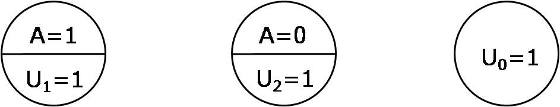
충분-구성 원인의 그래픽 표현은 효과 수정의 핵심적 결과를 시각화하는 데 도움을 준다: 4장에서 논의했듯이 처치 의 인과 효과 크기는 효과 수정자들의 분포에 의존한다. 두 가지 가상 시나리오를 상상해 보자. 첫 번째 시나리오에서 모집단은 1 = 1(즉, 마취 알레르기)인 개인을 1%만 포함한다. 두 번째 시나리오에서 모집단은 1 = 1인 개인을 10% 포함한다. 2와 0의 분포는 이 두 모집단 사이에 동일하다. 이제 각 모집단에서 개별적으로 모집단의 절반에게 처치 = 1을 배정하는 심장 이식 의 무작위 실험을 수행한다. 사망에 대한 심장 이식 의 평균 인과 효과는 두 번째 모집단에서 더 큰데, 처치받을 경우 결과를 발현하기 쉬운 개인이 더 많기 때문이다. 3가지 충분 원인 중 하나인 = 1 더하기 1 = 1은 첫 번째 모집단보다 두 번째 모집단에서 10배 더 흔한 반면, 다른 두 충분 원인은 두 모집단 모두에서 빈도가 같다. 충분-구성 원인의 그래픽 표현은 다음 절에서 설명할 상호작용의 대안적 개념을 시각화하는 데도 도움을 준다. 먼저 우리는 두 처치 와 에 대한 충분 원인을 설명해야 한다. 비타민과 심장 이식 예를 고려하자. 우리는 이미 사망에 대한 3가지 충분 원인을 설명했다: (또는 )의 존재/부재는 무관함, 비타민 와 무관하게 이식 의 존재, 그리고 비타민 와 무관하게 이식 의 부재. 두 처치의 경우 우리는 사망에 이르는 2가지 경로를 더 추가해야 한다: 이식 와 무관하게 비타민 의 존재, 그리고 이식 와 무관하게 비타민 의 부재. 또한 처치 와 의 특정 값 조합 하에서만 사망할 사람들을 수용하기 위해 네 가지 충분 원인을 더 추가해야 한다. 따라서 어떤 배경 요인이 존재하는지에 따라 사망에 이르는 9가지 가능한 경로가 존재한다: (Greenland와 Poole (1988)이 이 9가지 충분 원인을 처음으로 열거했다.) 1. 처치 에 의함 (처치 는 무관) 2. 처치 의 부재에 의함 (처치 는 무관) 3. 처치 에 의함 (처치 는 무관) 4. 처치 의 부재에 의함 (처치 는 무관) 5. 처치 와 둘 다에 의함 6. 처치 와 의 부재에 의함 7. 처치 와 의 부재에 의함 8. 와 둘 다의 부재에 의함 9. 다른 기전에 의함 (처치 와 둘 다 무관) 다시 말해 처치 구성요소가 = 1만, = 0만, = 1만, = 0만, = 1 및 = 1, = 1 및 = 0, = 0 및 = 1, = 0 및 = 0, 그리고 도 도 중요하지 않은 9가지 가능한 충분 원인이 존재한다. 이들 충분 원인 각각은 1, …, 8 및 0으로부터의 배경 요인 집합을 포함한다. 그림 5.2는 두 처치 와 에 대한 9가지 충분-구성 원인을 나타낸다.
5.5 충분 원인 상호작용(Sufficient cause interaction)
그림 5.2
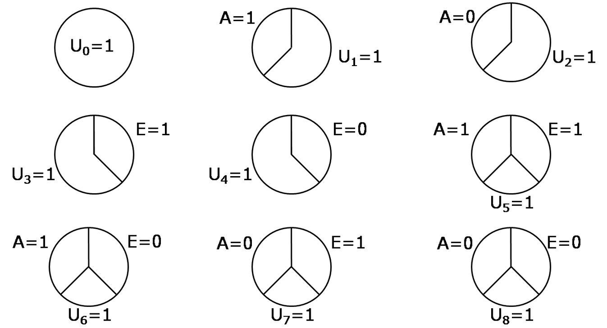
(충분-구성 원인의 이러한 그래픽 표현은 흔히 “인과적 파이(causal pies)”라고 불린다.) 예를 들어 비타민 = 1을 복용하는 것이 처치 와 무관하게 어떤 개인도 사망에 이르게 하지 않는다면, 구성요소 = 1을 포함하는 3가지 충분 원인은 존재하지 않을 것이다. 이들 3가지 충분 원인의 존재는 일부 개인(예: 3 = 1인 개인)이 비타민을 복용함( = 1)으로써 사망에 이르게 됨을, 즉 그들에게 비타민을 주지 않음( = 0)으로써 그들의 사망을 예방할 수 있음을 의미할 것이다.
5.5 충분 원인 상호작용 “처치 와 사이의 상호작용”이라는 용어의 일상적 사용은 두 처치가 함께 작용하여(즉, “상호작용”하여) 특정 결과를 생성하는 어떤 인과 기전의 존재를 떠올리게 한다. 흥미롭게도 반사실적 틀 안에서의 상호작용 정의는 그러한 기전에 대한 어떠한 지식도, 심지어 처치들이 함께 작용한다는 것조차 요구하지 않는다(세부사항 5.3 참조). 비타민 와 심장 이식 의 예에서, 모든 사람이 를 받을 때의 의 인과 효과가 아무도 를 받지 않을 때의 의 인과 효과와 다르면 처치 와 사이에 상호작용이 존재한다고 말했다. 즉, 상호작용은 반사실적 양들의 대비(contrast)로 정의되며, 따라서 두 처치 와 모두에 대해 교환가능성, 양성성, 일관성 조건이 성립하는 이상적인 무작위 실험을 수행함으로써 식별될 수 있다. 상호작용의 기저에 있는 인과 기전(물리적, 화학적, 생물학적, 사회학적…)을 고려할 필요는 없다. 이 절에서는 처치 와 가 결과를 일으키는 인과 기전에 우리를 한 걸음 더 가깝게 이끌어 줄 수 있는 상호작용의 두 번째 개념을 설명한다. 이 두 번째 상호작용 개념은 반사실적 대비에 기초하지 않고 충분-구성 원인에 기초하므로, 우리는 이를 충분-구성-원인 틀 안에서의 상호작용, 또는 줄여서 충분 원인 상호작용(sufficient cause interaction)이라고 부른다.
예를 들어 배경 요인 5 = 1을 가진 개인들이 비타민( = 1)과 심장 이식( = 1)을 결합하여 받을 때만 결과가 발생하고 둘 중 하나만 받을 때는 발생하지 않는다고 가정하자. 그러면 5 = 1인 개인이 존재할 때 와 사이의 충분 원인 상호작용이 존재한다. 따라서 반사실적 반응 =1,=1 = 1 및 =0,=1 = =1,=0 = 0을 가진 개인이 존재한다면 와 사이의 충분 원인 상호작용이 존재한다는 결론이 뒤따른다.
상호작용(Interaction) 세부사항 5.2 반사실적 결과에서 충분-구성 원인으로, 그리고 그 역으로. 반사실적 반응 유형과 충분-구성 원인 사이에는 대응 관계가 존재한다. 이분형 처치와 결과의 경우, 어떤 개인이 배경 요인 0, 1, 2 중 어느 것도 가지고 있지 않다고 가정하자. 그녀는 처치를 받든 받지 않든 모든 충분 원인을 완성하는 데 필요한 구성요소가 결여되어 있으므로 “면역형” 반응 유형을 가질 것이다. 아래 표는 하나의 처치 의 경우 반응 유형과 충분-구성 원인 사이의 대응을 보여준다.
유형 =0 =1 구성 원인 필멸형(Doomed) 1 1 0 =1 또는 { 1 =1 및 2 =1 } 구원형(Helped) 1 0 0 =0 및 1 =0 및 2 =1 피해형(Hurt) 0 1 0 =0 및 1 =1 및 2 =0 면역형(Immune) 0 0 0 =0 및 1 =0 및 2 =0
구성 원인의 특정 조합은 오직 하나의 반사실적 유형에 대응한다. 그러나 특정 반응 유형은 구성 원인의 여러 조합에 대응할 수 있다. 예를 들어 “필멸형” 유형의 개인은 1과 2의 값과 무관하게 0 = 1을 포함하는 구성 원인의 임의의 조합, 또는 { 1 = 1 및 2 = 1 }을 포함하는 임의의 조합을 가질 수 있다. 충분-구성 원인은 교환가능성 ⊥⊥ 에 대한 기전적 설명을 제공하는 데도 사용될 수 있다. 이분형 처치와 결과에 대해 교환가능성은 처치 하에서, 그리고 무처치 하에서 결과를 발현할 개인의 비율이 처치군 = 1과 미처치군 = 0에서 동일함을 의미한다. 즉, Pr[=1 = 1 | = 1] = Pr[=1 = 1 | = 0] 및 Pr[=0 = 1 | = 1] = Pr[=0 = 1 | = 0]이다. 이제 처치받을 때 결과를 발현할 개인들은 “필멸형”과 “피해형”, 즉 0 = 1 또는 1 = 1인 사람들이다. 처치받지 않을 때 결과를 얻을 개인들은 “필멸형”과 “구원형”, 즉 0 = 1 또는 2 = 1인 사람들이다. 따라서 처치군과 미처치군에서 “필멸형” + “피해형”의 비율과 “필멸형” + “구원형”의 비율이 각각 동일하다면 교환가능성이 성립할 것이다. 즉, 이분형 처치와 결과에 대한 교환가능성은 충분-구성 원인의 관점에서 다음과 같이 표현될 수 있다: Pr[ 0 = 1 또는 1 = 1 | = 1] = Pr[ 0 = 1 또는 1 = 1 | = 0] 및 Pr[ 0 = 1 또는 2 = 1 | = 1] = Pr[ 0 = 1 또는 2 = 1 | = 0]. 추가 세부사항은 Greenland와 Brumback (2002), Flanders (2006), VanderWeele와 Hernán (2006)을 참조하라. 위의 결과 중 일부는 VanderWeele와 Robins (2008)에 의해 둘 이상의 이분형 처치의 경우로 일반화되었다.
충분 원인 상호작용은 상승적(synergistic)이거나 길항적(antagonistic)일 수 있다. 동일한 충분 원인 안에 = 1과 = 1이 함께 존재할 때 처치 와 처치 사이에 상승작용(synergism)이 있고, 동일한 충분 원인 안에 = 1과 = 0(또는 = 0과 = 1)이 함께 존재할 때 처치 와 처치 사이에 길항작용(antagonism)이 있다. 대안적으로 처치 와 처치 사이의 길항작용을 처치 와 무처치 사이의 상승작용(또는 무처치 와 처치 사이의 상승작용)으로 생각할 수도 있다. 반사실적 상호작용 정의와 달리 충분 원인 상호작용은 처치 와 가 관여하는 인과 기전을 명시적으로 참조한다. 따라서 충분 원인 상호작용의 존재를 식별하기 위해서는 이러한 인과 기전에 대한 상세한 지식이 필요하다고 생각할 수 있다. 하지만 항상 그런 것은 아니다: 때로는 충분 원인들과 그 구성요소들에 대한 어떠한 지식도 전혀 없더라도 충분 원인 상호작용이 존재한다고 결론지을 수 있다.
5.6 반사실적 결과인가 충분-구성 원인인가? 65 세부사항 5.3 생물학적 상호작용(Biologic interaction). 역학적 논의에서 충분 원인 상호작용은 흔히 생물학적 상호작용(biologic interaction)이라고 불린다(Rothman et al, 1980). 이러한 용어 선택은 생물의학적 응용에서 두 처치 와 가 결과를 일으키는 데 있어 서로 작용하는 생물학적 기전이 존재함을 암시하는 것처럼 보일 수 있다. 그러나 VanderWeele와 Robins (2007a)가 제안한 다음 예에서 보듯이 반드시 그런 것은 아닐 수 있다. 와 가 필수 단백질을 생성하는 유전자의 두 대립유전자라고 가정하자. 두 대립유전자 모두에 유해한 돌연변이가 있는 개인( = 1 및 = 1)은 필수 단백질이 결핍되어 일주일 이내에 사망하는 반면, 두 대립유전자 중 어느 쪽에도 돌연변이가 없거나(즉, = 0 및 = 0) 오직 한 쪽 대립유전자에만 돌연변이가 있는 개인(즉, = 0 및 = 1, = 1 및 = 0)은 단백질 수준이 정상이어서 생존할 것이다. 우리는 = 1과 = 1을 포함하는 사망의 충분-구성 원인이 존재하므로 대립유전자 와 사이에 상승작용이 존재한다고 말할 것이다. 즉, 두 대립유전자가 함께 작용하여 결과를 생성한다. 그러나 그들이 물리적으로 서로 작용하지 않으며 따라서 어떤 생물학적 의미에서도 상호작용하지 않는다고 주장할 수도 있다.
(Rothman (1976)은 충분-구성-원인 틀 안에서 상승작용과 길항작용의 개념을 기술했다.) 구체적으로 세부사항 5.1의 부등식들이 성립한다면 와 사이에 상승작용이 존재한다. 즉, 와 가 함께 작용하여 결과를 일으키는 인과 기전에 대해 전혀 생각하지 않고도 상승작용이 존재하는지 경험적으로 확인할 수 있다. 이러한 결과는 반사실적 반응 유형과 충분 원인 사이의 대응 관계(세부사항 5.2 참조), 그리고 위의 부등식이 필요조건이 아닌 충분조건(즉, 상승작용이 존재하더라도 부등식이 성립하지 않을 수 있음)이라는 사실 때문에 그리 놀라운 일이 아니다.
5.6 반사실적 결과인가 충분-구성 원인인가? 충분-구성-원인 틀과 반사실적(잠재적 결과) 틀은 서로 다른 질문을 다룬다. 충분-구성 원인 모형은 함께 결합하여 고려 중인 결과를 필연적으로 발생시키는 행동, 사건, 또는 자연 상태의 집합들을 고려한다. 이 모형은 특정 효과의 원인들에 대한 설명을 제공한다. 즉, “특정 효과가 주어졌을 때, 그것의 원인이 되었을 수 있는 다양한 사건들은 무엇인가?”라는 질문을 다룬다. (인과성에 대한 반사실적 틀은 이미 Hume (1748)에 의해 시사되었다.) 잠재적 결과 또는 반사실적 모형은 하나의 특정 원인이나 개입에 초점을 맞추고 그 원인의 다양한 효과들에 대한 설명을 제공한다. 충분-구성 원인 틀과 달리 잠재적 결과 틀은 “특정 요인에 개입하여 실제로 가졌던 수준과 다른 수준으로 설정했더라면 무슨 일이 일어났을까?”라는 질문을 다룬다. 충분-구성 원인 틀과 달리 반사실적 틀은 그 요인이 결과에 영향을 미치는 기전에 대한 상세한 지식을 요구하지 않는다. (충분-구성-원인 틀은 철학에서 Mackie (1965)에 의해 개발되었다. 그는 에 대한 INUS 조건의 개념을 도입했다: 그 자체로는 불필요하지만(Unnecessary) 오로지 충분한(Sufficient) 조건의 불충분하지만(Insufficient) 필수적인(Necessary) 부분.) 반사실적 접근법은 “무슨 일이 일어나는가?(what happens?)”라는 질문을 다룬다. 충분-구성-원인 접근법은 “그것이 어떻게 일어나는가?(how does it happen?)”라는 질문을 다룬다. 이 책의 내용인 가상 개입의 평균 인과 효과를 추정하기 위한 조건과 방법에 있어서는 반사실적 틀이 자연스러운 틀이다. 충분-구성-원인 틀은 특정 결과를 발생시키는 데 작용하는 인과 기전에 대해 생각하는 데 유용하다. 충분-구성 원인은 배경 요인(효과 수정자)의 분포에 따른 인과 효과 크기의 의존성, 그리고 효과 수정, 상호작용, 상승작용 사이의 관계와 같은 핵심 개념을 이해하는 데 도움을 주기 때문에 인과 추론 교육에서 정당한 자리를 차지한다.
세부사항 5.4 기여 분율에 대한 추가 논의(More on the attributable fraction)
세부사항 3.4에서는 특정 모집단에서 처치 에 기인하는 사례의 비율로 처치 에 대한 초과 분율(excess fraction)을 정의하고, 에 대한 초과 분율이 75%인 예시를 설명했다. 즉, 모든 사람이 실제로 관찰된 처치 대신 처치 = 0을 받았다면 사례의 75%가 발생하지 않았을 것이다. 이제 두 번째 처치 를 고려해 보자. 에 대한 초과 분율이 50%라고 가정하자. 이것이 와 에 대한 결합 개입(joint intervention)으로 사례의 125%(75% + 50%)를 예방할 수 있다는 뜻일까? 당연히 아니다. 단일 처치(든 든)에 대한 초과 분율은 분명 100%를 초과할 수 없다. 마찬가지로 와 에 대한 어떤 결합 개입에 대해서도 초과 분율이 100%를 초과할 수 없음은 명백하다. 즉, 어떤 모집단에서 우리가 원하는 어떤 방식(, , 또는 둘 다를 수정함)으로든 개입할 수 있다 해도, 100%를 초과하는 질병 분율을 결코 예방할 수는 없다. 다시 말해, 단일 개입이든 결합 개입이든 특정 개입의 부재에 기인할 수 있는 사례의 비율은 최대 100%이다. 그렇다면 두 단일 처치에 대한 초과 분율의 합이 왜 100%보다 커지는 것일까? 충분-구성-원인 틀(sufficient-component-cause framework)이 이 질문에 답하는 데 도움을 준다.
한 예로, 제우스(Zeus)가 배경 요인 5 = 1을 갖고(다른 배경 요인은 전혀 없으며) = 1과 = 1을 모두 처치받았다고 가정하자. 제우스는 처치 나 처치 중 어느 하나라도 주어지지 않았다면 발병 사례가 되지 않았을 것이다. 따라서 제우스는 = 0으로 설정하는 개입에 의해 예방되는 사례로 계산된다. 즉, 제우스는 에 기인하는 사례의 75%에 포함된다. 그러나 제우스는 = 0으로 설정하는 개입에 의해 예방되는 사례로도 계산된다. 즉, 제우스는 에 기인하는 사례의 50%에도 포함된다. 와 에 대한 초과 분율의 합이 100%를 초과하는 것은 놀랄 일이 아니다. 제우스와 같은 일부 개인들이 두 번 계산되기 때문이다!
충분-구성-원인 틀은 와 둘 다가 동일한 충분 원인의 구성 요소일 수 있을 때, 질병의 분율이 와 에 각각 따로 기인한다고 이야기하는 것이 별 의미가 없음을 보여준다. 예를 들어, 질병의 분율이 유전 또는 환경 중 어느 하나에 기인하는지에 관한 논의는 오해의 소지가 있다. 특정 음식을 섭취하는 유전적 감수성을 지닌 개인에게서 나타나는 질환인 페닐케톤뇨증(phenylketonuria)으로 인한 지적 장애를 생각해 보자. 식단에서 해당 음식을 제거함으로써 모든 사례를 예방할 수 있으므로 그 음식에 대한 초과 분율은 100%이다. 감수성 유전자를 대체할 수 있다면 모든 사례가 예방될 것이므로 그 유전자에 대한 초과 분율 역시 100%이다. 따라서 지적 장애의 원인은 100% 유전적이거나 100% 환경적인 것으로 볼 수 있다. 더 자세한 논의는 Rothman, Greenland, and Lash (2008)를 참조하라.
…배경 요인(효과 수정 요인)의 분포에 따른 인과 효과 크기의 의존성, 그리고 효과 수정, 상호작용, 상승작용(synergism) 사이의 관계와 같은 핵심 개념들을 이해하는 데 도움을 주기 때문이다.
충분-구성-원인 틀이 교육적 관점에서는 유용하지만, 실제 데이터 분석에서의 유용성은 아직 미지수이다. 고전적 형태에서 충분-구성-원인 틀은 결정론적이며, 그 결론은 결과의 코딩 방식에 의존하고, 정의상 이분형(dichotomous) 처치와 결과(또는 이분형 변수로 재코딩할 수 있는 변수)에 한정된다. 이러한 한계는 연속형 요인에 대한 고려를 실질적으로 배제하며, 소수의 이분형 요인만이 존재하는 상황으로 이 틀의 적용 가능성을 제한한다.
VanderWeele (2010b)는 3개 수준을 갖는 처치로의 확장을 제시했다. VanderWeele and Robins (2012)는 확률론적 반사실과 확률론적 충분 원인 사이의 관계를 탐구했다.
확률론적(stochastic) 환경 및 범주형·순서형 처치로의 최근 확장들은 실제 데이터 분석에서 이 접근법의 적용을 늘릴 수도 있다. 마지막으로, 충분-구성-원인 틀에 대한 이러한 확장들을 고려하더라도, 이 틀이 만들어내는 미세한 구분들을 연구하는 데 필요한 방대한 양의 데이터를 갖기란 드문 일이다. 인과 효과를 보다 일반적으로 추정하기 위해서는 반사실적 틀이 앞으로도 가장 흔하게 채택되는 방법으로 남을 것이다. 인과 다이어그램이나 의사결정 이론과 같이 겉보기에 대안적인 일부 틀들도, 다음 장에서 설명하듯 본질적으로는 반사실적 틀과 동등하다.
기술적 사항 5.3 인과 효과의 단조성과 충분 원인(Monotonicity of causal effects and sufficient causes)
처치 와 가 단조적 효과(monotonic effect)를 가질 때, 일부 충분 원인은 반드시 존재하지 않는다. 예를 들어 흡연( = 1)이 심장 질환을 결코 예방하지 않으며, 신체적 비활동( = 1)도 심장 질환을 결코 예방하지 않는다고 가정하자. 그러면 = 0 또는 = 0을 포함하는 어떤 충분 원인도 존재할 수 없다. 그 이유는 = 0 구성 요소를 포함하는 충분 원인이 존재한다면, 일부 개인(예: 2 = 1인 개인)은 비노출 시( = 0) 결과가 발생할 것이고, 이는 동등하게 그 개인들을 치료함( = 1)으로써 결과를 예방할 수 있다는 뜻이 되기 때문이다. 동일한 논리가 = 0에도 적용된다. 와 의 효과가 단조적일 때 존재할 수 없는 충분-구성 원인들은 그림 5.3에서 취소선이 그어져 있다.
그림 5.3
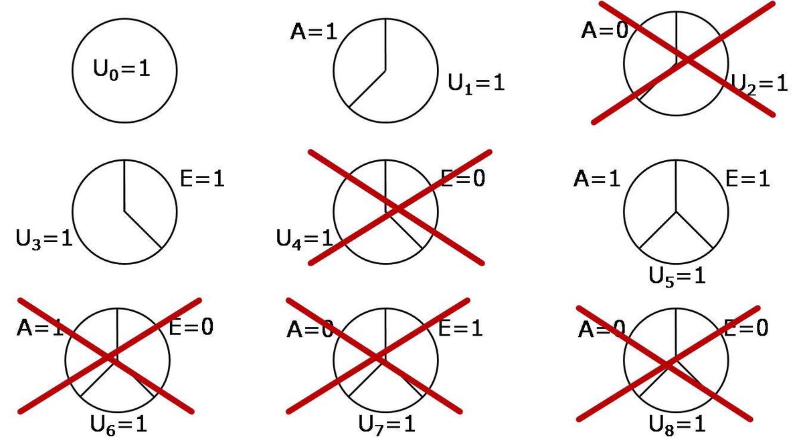
제6장 인과 효과의 그래픽 표현(Graphical Representation of Causal Effects)
인과 추론(causal inference)은 일반적으로 처치, 결과, 그리고 다른 변수들을 연결하는 인과 네트워크에 대한 전문가 지식과 검증 불가능한 가정들을 필요로 한다. 앞선 장들에서는 지나치게 단순화된 시나리오(예: 당신이 하늘을 쳐다보는 것이 다른 보행자들의 행동에 미치는 인과 효과, 이상화된 심장 이식 연구)에서 인과 효과를 계산하기 위한 조건과 방법들에 초점을 맞추었다. 그 목표는 현실적인 환경에서 요구되는 더 정교한 접근법의 기초가 되는 아이디어들을 쉽게 소개하는 것이었다. 우리가 고려했던 시나리오들이 너무나 단순했기 때문에 인과 네트워크를 명시적으로 드러낼 필요가 거의 없었다. 그러나 우리가 더 복잡한 상황으로 주의를 돌리기 시작함에 따라, 우리의 특정 인과 추론 문제와 관련된 변수들에 대해 우리가 알고 있는 것과 가정하는 것을 명시적으로 밝히는 일이 매우 중요해질 것이다.
이 장은 관심 있는 인과 구조에 대한 우리의 질적인 전문가 지식과 선험적 가정들을 표현하기 위한 그래픽 도구를 소개한다. 그래프는 지식과 가정들을 직관적인 방식으로 요약함으로써 개념적 문제를 명확히 하고 연구자들 사이의 소통을 증진하는 데 도움을 준다. 인과 추론 문제에서 그래프를 사용하는 것은 ’결론을 내리기 전에 가정을 먼저 그려라’라는 현명한 조언을 따르기 쉽게 만들어 준다.
6.1 인과 다이어그램(Causal diagrams)
이 장에서는 핵심 인과 개념들을 표현하기 위해 인과 다이어그램(causal diagrams)이라고 부를 그래프들을 설명한다. 인과 추론을 위한 다이어그램의 현대 이론은 컴퓨터 과학 및 인공지능 분야에서 발전했다.
이 주제에 대한 포괄적인 책으로 Pearl (2009)과 Spirtes, Glymour and Scheines (2000)가 있다.
이 장과 다음 세 장은 인과 다이어그램을 통한 문제 개념화에 초점을 맞춘다.
그림 6.1의 그래프를 살펴보자. 이 그래프는 확률 변수를 나타내는 세 개의 노드(, , )와 세 개의 간선(edge, 화살표)으로 구성되어 있다. 우리는 시간이 왼쪽에서 오른쪽으로 흐른다는 관례를 채택하며, 따라서 은 와 보다 시간적으로 앞서고, 는 보다 시간적으로 앞선다. 이전 장들에서와 마찬가지로 , , 는 각각 질병 중증도, 심장 이식, 사망을 나타낸다.
| | | |
|---|---|---|
| 질병 중증도 | 심장 이식 | 사망 |
그림 6.1
특정 변수 에서 다른 변수 로 향하는 화살표의 존재는 적어도 한 개인에 대해 직접적인 인과 효과(즉, 그래프 상의 어떤 다른 변수도 매개하지 않는 효과)가 있음을 우리가 알고 있다는 것을 나타낸다. 반대로 화살표가 없다는 것은 모집단의 어떤 개인에 대해서도 가 에 미치는 직접적인 인과 효과가 없음을 우리가 알고 있음을 의미한다. 예를 들어 그림 6.1에서 에서 로 가는 화살표는 질병 중증도가 심장 이식을 받을 확률에 영향을 미친다는 것을 의미한다. 표준적인 인과 다이어그램은 화살표가 유해한 효과를 나타내는지 유익한(보호적) 효과를 나타내는지를 구별하지 않는다. 또한 그림 6.1처럼 한 변수(여기서는 )가 두 개의 원인을 가질 때, 다이어그램은 그 두 원인이 어떻게 상호작용하는지를 인코딩하지는 않는다.
그림 6.1과 같은 인과 다이어그램은 유향 비순환 그래프(directed acyclic graphs, 흔히 DAG로 축약됨)로 알려져 있다. 간선이 방향을 함의하므로 ’유향(directed)’이다. 에서 로 향하는 화살표가 로 들어가기 때문에 이 의 원인이 될 수는 있지만 그 반대는 될 수 없다. 순환(cycle)이 없으므로 ’비순환(acyclic)’이다. 어떤 변수도 직접적으로든 다른 변수를 통해서든 자기 자신의 원인이 될 수 없다.
유향 비순환 그래프는 인과 추론 외의 다른 분야에서도 응용된다. 여기서는 인과적 유향 비순환 그래프(causal directed acyclic graphs)에 초점을 맞춘다.
기술적 사항 6.1 인과적 유향 비순환 그래프(Causal directed acyclic graphs)
우리는 유향 간선(화살표)을 갖고 유향 순환이 없는 확률 변수 = (1 ,…, )를 노드(정점)로 갖는 그래프를 유향 비순환 그래프(DAG) 로 정의한다. 우리는 의 부모(parents), 즉 로 들어가는 직접적인 화살표가 있는 노드들의 집합을 나타내기 위해 를 사용한다. 와 사이에 화살표가 가리키는 방향을 따라 에서 시작하여 에 도달할 수 있는 간선으로 연결된 일련의 노드들이 존재한다면, 변수 는 의 자손(descendant)이고(그리고 는 의 조상(ancestor)이다). 예를 들어 그림 6.1의 DAG를 고려하자. 이 DAG에서 = 3이고 1 = , 2 = , 3 = 로 선택할 수 있다. 3 = 의 부모 3은 (, )이다. 우리는 > 이면 가 의 조상이 아니라는 순서 관례를 채택할 것이다. 각 에 대해 가 그 부모가 주어졌을 때 비-자손(non-descendants)들과 독립이면, 우리는 의 분포가 DAG 에 대해 마르코프(Markov) 성질을 갖는다고(동등하게, 그 분포가 DAG 에 따라 인수분해된다고) 정의한다.
인과 DAG는 다음을 만족하는 DAG이다: 1) 노드 에서 로의 화살표 부재(즉, 가 의 부모가 아님)는 그래프 상의 다른 변수들에 비추어 볼 때 가 에 미치는 직접적인 인과 효과의 부재로 해석될 수 있다. 2) 그래프 상의 어떤 변수 쌍이든 그들의 공통 원인은 비록 측정되지 않았더라도 모두 그래프 자체에 포함된다. 3) 모든 변수는 자신의 자손들의 원인이다.
인과 DAG는 DAG로 표현되는 인과 구조를 연구에서 얻은 데이터와 연결하는 가정을 세우지 않는다면 실질적인 쓸모가 없다. 인과적 마르코프 가정(causal Markov assumption)이라고 부르는 이 가정은, 직접적인 원인들이 주어졌을 때 변수 는 자신이 원인이 아닌 어떤 변수와도 독립이라고 기술한다. 즉, 부모들이 주어졌을 때 는 자신의 비-자손들과 독립이다. 이 후자의 진술은 DAG 의 변수 의 확률 밀도 ()가 다음과 같은 마르코프 인수분해를 만족한다는 진술과 수학적으로 동등하다:
\[() = \prod_{\=1}^{\M} (_{\} \mid _{\})\]
인과 DAG의 결정적인 속성은 직접적인 원인들이 주어졌을 때, DAG 상의 어떤 변수도 자신이 원인이 아닌 다른 어떤 변수와도 독립이라는 점이다. 인과적 마르코프 가정(causal Markov assumption)이라고 부르는 이 가정은, 인과 DAG에서 그래프 상의 어떤 변수 쌍의 공통 원인도 반드시 그래프에 포함되어야 함을 함의한다. 인과 DAG의 형식적 정의는 기술적 사항 6.1을 참조하라.
예를 들어, 우리의 연구에서 개인들이 질병 중증도 에 의존하는 확률로 심장 이식 에 무작위 배정된다고 가정하자. 그러면 은 와 의 공통 원인이므로 그림 6.1의 인과 다이어그램에 나타난 것처럼 그래프에 포함되어야 한다. 이제 우리의 연구에서 모든 개인이 질병 중증도와 관계없이 동일한 확률로 심장 이식에 무작위 배정된다고 가정하자. 그러면 은 와 의 공통 원인이 아니며 인과 다이어그램에 포함될 필요가 없다. 그림 6.1은 조건부 무작위 실험(conditionally randomized experiment)을 나타내는 반면, 그림 6.2는 주변 무작위 실험(marginally randomized experiment)을 나타낸다.
그림 6.2
그림 6.1은 관찰 연구를 나타낼 수도 있다. 구체적으로 그림 6.1은 심장 이식 의 배정이 질병 중증도 을 부모로 갖고 의 다른 어떤 원인도 부모로 갖지 않는다고 기꺼이 가정할 수 있는 관찰 연구를 나타낸다. 그렇지 않다면 의 그러한 원인들은 비록 측정되지 않았더라도 와 의 공통 원인이 되므로 다이어그램에 포함되어야 할 것이다. 다음 장에서는 그림 6.1을 관찰 연구의 인과 다이어그램으로 간주하려는 이러한 의지가, 모든 에 대해 이 주어졌을 때의 조건부 교환가능성 ⊥⊥ | 가정을 그래픽으로 변환한 것임을 설명할 것이다.
많은 사람들이 인과 추론에 대한 그래픽 접근법을 반사실적 접근법보다 사용하기 더 쉽고 직관적이라고 느낀다. 그러나 두 접근법은 긴밀하게 연결되어 있다. 구체적으로 각 그래프에는 기저의 반사실적 모형이 연관되어 있다(기술적 사항 6.2 참조). 우리가 이제 설명할 어림적이고 직관적인 그래픽 방법들에 대한 수학적 정당화를 제공하는 것이 바로 이 모형이다. 그러나 전통적인 인과 다이어그램은 그래프 상에 기저의 반사실적 변수들을 포함하지 않는다. 따라서 그래프와 반사실 사이의 연결 고리는 전통적으로 숨겨진 채로 남아 있었다.
Richardson and Robins (2013)는 단일 세상 개입 그래프(Single World Intervention Graph, SWIG)를 개발했다.
최근 개발된 인과적 유향 비순환 그래프의 일종인 단일 세상 개입 그래프(Single World Intervention Graph, SWIG)는 그래프 상에 반사실적 변수들을 명시적으로 포함함으로써 인과 추론에 대한 반사실적 접근법과 그래픽 접근법을 매끄럽게 통합한다. 이 장에서 다루는 내용이 필수적인 전제 조건이 되므로 SWIG에 대한 소개는 7장으로 미룬다.
인과 다이어그램은 어떤 문제의 질적인 인과 구조에 대한 우리의 주제별 지식과 가정들을 인코딩하는 간단한 방법이다. 그러나 다음 절들에서 설명하듯, 인과 다이어그램은 인과 네트워크 내 변수들 사이의 잠재적 연관성에 대한 정보도 인코딩한다. 인과 다이어그램을 이토록 매력적인 도구로 만드는 것은 바로 연관성과 인과성을 동시에 표현한다는 점이다. 이어지는 내용은 인과 다이어그램으로부터 연관성을 추론하기 위한 그래프 규칙에 대한 비형식적 소개이다. 우리의 강조점은 형식적 엄밀함보다는 개념적 통찰에 있다.
6.2 인과 다이어그램과 주변 독립(Causal diagrams and marginal independence)
다음 두 가지 예시를 고려하자. 첫째, 아스피린 복용 이 심장 질환의 위험 에 예방적 인과 효과를 미친다는 것, 즉 Pr[=1 = 1] ≠ Pr[=0 = 1]임을 알고 있다고 가정하자. 그림 6.2의 인과 다이어그램은 아스피린 이 무작위로, 그리고 무조건적으로 배정되는 실험에 대해 이 지식을 그래픽으로 옮긴 것이다.
둘째, 라이터 소지 는 폐암 위험 에 아무런 인과 효과(원인적이든 예방적이든)를 미치지 않고, 즉 Pr[=1 = 1] = Pr[=0 = 1]이며, 흡연 이 라이터 소지 와 폐암 둘 다에 인과 효과를 미친다는 것을 알고 있다고 가정하자. 그림 6.3의 인과 다이어그램은 이 지식을 그래픽으로 옮긴 것이다. 와 사이에 화살표가 없다는 것은 라이터 소지가 폐암에 인과 효과를 미치지 않음을 나타내며, 은 와 의 공통 원인으로 묘사된다.
그림 6.3
그림 6.2와 6.3을 그리기 위해 우리는 다이어그램의 변수들 사이의 인과 관계에 대한 지식만을 사용했지만, 흥미롭게도 이 인과 다이어그램들은 다이어그램의 변수들 사이에서 예상되는 연관성(또는 더 정확하게는 연관성의 부재)에 대한 정보도 인코딩하고 있다. 이제 우리는 일반적으로 그림 6.2와 6.3 둘 다에서 변수 와 가 연관될 것임을 어림적으로(heuristic) 논증하고, 인과 그래프 이론의 핵심적인 관련 결과들을 설명한다.
먼저 그림 6.2로 표현된 무작위 실험을 보자. 직관적으로 인과 화살표로만 연결된 두 변수 와 는 연관될 것이라고 기대할 것이다. 그리고 그것이 바로 인과 그래프 이론이 보여주는 바이다: 그림 6.2처럼 가 에 인과 효과를 미친다는 것을 알 때, 일반적으로 와 가 연관될 것이라고 기대해야 한다. 이는 물론 무조건부 교환가능성을 갖는 이상적인 무작위 실험에서 인과 Pr[=1 = 1] ≠ Pr[=0 = 1]가 연관 Pr[ = 1 | = 1] ≠ Pr[ = 1 | = 0]을 함의하고 그 역도 성립한다는 사실과 일치한다.
DAG에서 두 변수 과 사이의 경로(path)는 어떤 변수도 두 번 이상 방문하지 않도록 일련의 간선들을 따라 과 를 연결하는 경로다. 경로가 오직 같은 방향을 가리키는 화살표를 가진 간선들로만 이루어져 있다면 그 경로는 인과적(causal)이다. 그렇지 않으면 비인과적(noncausal)이다.
인과 다이어그램에서 인과-연관 대응을 포착하는 한 가지 직관적 비유(heuristic)는 두 변수 사이의 경로를 연관성이 흘러가는 파이프나 전선으로 시각화하는 것이다. 인과와 달리 연관성은 두 변수 사이의 대칭적인 관계이다. 따라서 연관성이 존재할 때, 연관성은 인과 화살표의 방향과 관계없이 두 변수 사이를 흐른다. 그림 6.2에서 연관성이 에서 로 흐른다고 말하든, 에서 로 흐른다고 말하든 동등하다.
기술적 사항 6.2 인과 DAG와 연관된 반사실적 모형(Counterfactual models associated with a causal DAG)
이 책에서 인과 DAG 는 기저의 반사실적 모형을 나타낸다. DAG 로 표현되는 반사실적 모형의 형식적 정의를 제공하기 위해 우리는 다음 표기법을 사용한다. 임의의 확률 변수 에 대해 \(\Omega\) (support)는 의 지지집합(support, 즉 가능한 값 의 집합)을 나타낸다. 순서화된 변수들의 임의의 집합 1 ,…, 에 대해 \(\bar{\omega}_\mu\) = (1 ,…, )로 정의하자. 을 의 임의의 부분집합이라 하고 을 의 한 값이라 하자. 그러면 \(\V_\mu^\rho\)는 이 로 설정되었을 때 \(\V_\mu\)의 반사실적 값을 나타낸다.
정점 집합 를 갖는 DAG 로 표현되는 비모수적 구조 방정식 모형(nonparametric structural equation model, NPSEM)은 관찰되지 않은 확률 변수(오차) \(\varepsilon_\mu\)와 결정론적 미지 함수 \(f_\mu(\pi\alpha_\mu \;; \varepsilon_\mu)\)의 존재를 가정하여, \(\V_1 = f_1(\varepsilon_1)\)이고 한 단계 앞선 반사실(one-step ahead counterfactual) \(\V_\mu^{\bar{v}_{\mu-1}} \equiv \V_\mu^{\pi\alpha_\mu}\)이 \(f_\mu(\pi\alpha_\mu \;; \varepsilon_\mu)\)에 의해 주어진다. 즉, 상의 다른 변수들에 비추어 볼 때 \(\V_\mu\)의 부모들만이 \(\V_\mu\)에 직접적인 효과를 미친다. NPSEM은 그래프 상의 어떤 변수 \(\V_j\)에도 개입할 수 있음을 함의하는데, \(\V_j\)가 특정 값 \(v_j\)로 설정된 반사실적 결과들이 존재한다고 가정되기 때문이다. 사실적(factual) 변수 \(\V_\mu\)와 임의의 \(\R \subset \V\)에 대한 반사실적 결과 \(\V_\mu^\rho\)는 모두 \(\V_1\)과 \(\V_j^{\bar{v}_{j-1}}\), \(\mu \ge j > 1\)로부터 재귀적으로 얻어진다. 예를 들어 \(\V_3^{v_1} = \V_3^{v_1, \V_2^{v_1}}\), 즉 \(\V_1\)이 \(v_1\)로 설정되었을 때 \(\V_3\)의 반사실적 값 \(\V_3^{v_1}\)은 한 단계 앞선 반사실 \(\V_3^{v_1, v_2}\)에서 \(v_2\)가 \(\V_2\)의 반사실적 값 \(\V_2^{v_1}\)과 같은 것이다. 마찬가지로 \(\V_4\)가 \(\V_3\)의 직접적인 원인이 아니므로 \(\V_3^{\bar{v}_1, \bar{v}_2} = \V_3^{v_2}\)이고 \(\V_3^{v_1, v_4} = \V_3^{v_1}\)이다.
Robins (1986)는 이 NPSEM을 ‘데이터만큼 미세한’ 가장 미세하게 인과적으로 해석된 구조적 나무 그래프(finest causally interpreted structural tree graphs, FCISTGs)라고 불렀다. Pearl (2000)은 이 모형을 DAG로 표현하는 방법을 보여주었다. Robins (1986)는 또한 변수들의 일부 하위집합에만 개입할 수 있는 더 현실적인 인과적으로 해석된 구조적 나무 그래프를 제안했다. 설명의 편의를 위해 우리는 모든 변수에 개입할 수 있다고 가정하지만, 여기서 고려되는 통계적 방법들이 실제로 이 가정을 필요로 하는 것은 아니다.
FCISTG 모형이 기술적 사항 6.1의 인과적 마르코프 가정이 성립함을 반드시 함의하는 것은 아니며, 추가적인 통계적 독립성 가정이 필요하다. 예를 들어 Pearl (2000)은 모든 오차항 \(\varepsilon_\mu\)가 상호 독립인 NPSEM을 가정했다. 우리는 독립 오차를 갖는 Pearl의 모형을 NPSEM-IE라고 부른다. 이와 대조적으로 Robins (1986)는 단지 한 단계 앞선 반사실 \(\V_\mu^{\bar{v}_{\mu-1}} = f_\mu(\pi\alpha_\mu \;; \varepsilon_\mu)\)와 \(\V_j^{\bar{v}_{j-1}} = f_j(\pi\alpha_j \;; \varepsilon_j)\), \(j < \mu\)가 \(\bar{v}_{j-1}\)이 \(\bar{v}_{\mu-1}\)의 부분벡터일 때 결합 독립이라고만 가정했으며, 이를 가장 미세하게 완전 무작위화되고 인과적으로 해석된 구조화된 나무(finest fully randomized causally interpreted structured tree, FFRCISTG) 모형이라고 불렀다. Robins (1986)는 이 가정이 인과적 마르코프 가정이 성립함을 함의한다는 것을 보였다. NPSEM-IE는 FFRCISTG이지만 그 역은 성립하지 않는데, NPSEM-IE가 FFRCISTG보다 훨씬 더 많은 독립성 가정을 두기 때문이다(Robins and Richardson 2011).
DAG는 NPSEM을 나타내지만 우리는 어떤 유형인지를 명시해야 한다. 예를 들어 그림 6.2의 DAG는 완전 교환가능성 (=0 , =1) ⊥⊥ 를 함의하는 NPSEM-IE에 해당할 수도 있고, = 0과 = 1 둘 다에 대해 단지 주변 교환가능성 ⊥⊥ 만을 함의하는 FFRCISTG에 해당할 수도 있다. 이 책에서는 기저의 반사실적 모형을 언급하지 않을 때마다 DAG가 FFRCISTG를 나타낸다고 가정한다.
이제 그림 6.3으로 표현된 관찰 연구를 고려하자. 우리는 라이터 소지 가 폐암 에 아무런 인과 효과가 없음을 알고 있다. 이제 질문은 라이터 소지 가 폐암 와 연관되는가이다. 즉, Pr[=1 = 1] = Pr[=0 = 1]임을 알고 있지만, Pr[ = 1 | = 1] = Pr[ = 1 | = 0]도 참인가? 이 질문에 답하기 위해, 순진한 연구자가 라이터 소지 가 폐암 위험 에 미치는 효과를 연구하기로 결정했다고 상상해 보자(우리는 효과가 없음을 알고 있지만 연구자는 이를 모른다). 그는 수많은 사람들에게 라이터를 가지고 다니는지 묻고, 향후 5년 동안 폐암 진단을 받는지 기록한다. 헤라(Hera)가 연구 참가자 중 한 명이다. 우리는 헤라가 라이터를 가지고 다니고 있음을 알게 된다. 그러나 헤라가 라이터를 소지하고 있다면( = 1), 그녀는 흡연자일 가능성이 더 높고( = 1), 따라서 평균보다 높은 폐암 발병 위험( = 1)을 갖는다. 그러면 우리는 라이터를 소지한 사람들의 암 위험( = 1)이 라이터를 소지하지 않은 사람들의 암 위험( = 0)과 다르기 때문에, 즉 Pr[ = 1 | = 1] ≠ Pr[ = 1 | = 0]이므로 와 가 연관될 것으로 직관적으로 결론짓는다.
다시 말해, 가 에 인과 효과를 미치지 않음에도 불구하고 처치 에 대한 정보를 갖는 것은 결과 를 예측하는 우리의 능력을 향상시킨다. 연구자가 단지 와 가 연관되어 있다는 이유만으로 가 에 인과 효과를 미친다고 결론을 내린다면 실수를 범하게 될 것이다. 인과 그래프 이론은 우리의 직관을 다시 한 번 확인해 준다. 그래픽 용어로, 공통 원인 을 통해 에서 로(또는 동등하게 에서 로) 연관성의 흐름이 있기 때문에 와 는 연관된다.
이제 세 번째 예시를 고려하자. 특정 유전적 반수체형(haplotype) 가 누군가가 흡연자 가 될 위험에 아무런 인과 효과가 없고, 즉 Pr[=1 = 1] = Pr[=0 = 1]이며, 반수체형 와 흡연 가 모두 심장 질환 위험 에 인과 효과를 미친다는 것을 알고 있다고 가정하자. 그림 6.4의 인과 다이어그램은 이 지식을 그래픽으로 옮긴 것이다. 와 사이에 화살표가 없다는 것은 반수체형이 흡연에 인과 효과를 미치지 않음을 나타내며, 은 와 의 공통 결과(common effect)로 묘사된다. 이 공통 결과 은 두 화살표 머리가 이 노드에서 충돌하기 때문에 경로 → ← 위의 충돌 변수(collider)라고 불린다.
그림 6.4
다시 질문은 와 가 연관되어 있는가이다. 이 질문에 답하기 위해, 다른 연구자가 반수체형 가 흡연자 가 될 위험에 미치는 효과를 연구하기로 결정했다고 상상해 보자(우리는 효과가 없음을 알지만 연구자는 모른다). 그녀는 수많은 어린이를 대상으로 유전자 검사를 시행하고, 그들이 결국 흡연자가 되는지 기록한다. 아폴로(Apollo)가 연구 참가자 중 한 명이다. 우리는 아폴로가 해당 반수체형을 가지고 있지 않음( = 0)을 알게 된다. 그는 일반인보다 흡연자( = 1)가 될 가능성이 더 높은가, 아니면 더 낮은가? 반수체형을 가진 사람들( = 1)과 가지지 않은 사람들( = 0)의 위험이 같기 때문에, 즉 Pr[ = 1 | = 1] = Pr[ = 1 | = 0]이므로, 반수체형 에 대해 아는 것은 결과 를 예측하는 우리의 능력을 전혀 향상시키지 않는다. 다시 말해, 우리는 직관적으로 와 가 연관되어 있지 않다고, 즉 와 가 독립이라고( ⊥⊥ ) 결론지을 것이다. 와 가 모두 심장 질환 을 일으킨다는 지식은 와 사이의 연관성을 고려할 때 무관하다. 인과 그래프 이론은 다른 변수들과 달리 충돌 변수는 자신이 놓인 경로를 따른 연관성의 흐름을 차단한다고 말하기 때문에 우리의 직관을 다시 한 번 확인해 준다. 따라서 와 사이의 유일한 경로인 → ← 가 충돌 변수 에 의해 차단되므로 와 는 독립이다.
요약하면, 두 변수는 한 변수가 다른 변수의 원인이거나, 두 변수가 공통 원인을 공유할 때 (주변적으로) 연관된다. 그렇지 않다면 그들은 (주변적으로) 독립일 것이다. 다음 절에서는 세 번째 변수 이 주어졌을 때 두 변수 와 가 조건부로 독립이 될 수 있는 조건들을 살펴본다.
6.3 인과 다이어그램과 조건부 독립(Causal diagrams and conditional independence)
우리는 이제 그림 6.2, 6.3, 6.4에 묘사된 상황들을 다시 방문하여 인과 다이어그램에서의 조건부 독립(conditional independence) 개념을 논의한다.
그림 6.2에 따르면, 아스피린이 심장 질환에 인과 효과를 미치기 때문에 우리는 아스피린 와 심장 질환 가 연관될 것으로 기대한다. 이제 우리가 추가적인 정보를 얻었다고 가정하자: 아스피린 은 혈소판 응집(platelet aggregation) 를 감소시키기 때문에 심장 질환 위험 에 영향을 미친다. 이 새로운 지식은 그림 6.5의 인과 다이어그램으로 변환되며, 이 다이어그램은 혈소판 응집 (1: 높음, 0: 낮음)를 가 에 미치는 효과의 매개 변수(mediator)로 보여준다.
그림 6.5
인과 다이어그램에 세 번째 변수가 도입되면 우리는 새로운 질문을 할 수 있다: 의 수준 내에서( 조건부로) 와 사이에 연관성이 존재하는가? 또는 동등하게: 우리가 이미 에 대한 정보를 가지고 있을 때, 에 대한 정보가 를 예측하는 우리의 능력을 향상시키는가?
이 질문에 답하기 위해, 수많은 사람들에게서 , , 에 대한 데이터가 수집되었고, 우리가 분석을 낮은 혈소판 응집을 가진 개인들의 하위집합( = 0)으로 제한한다고 가정하자. 그림 6.5에서 노드 주위에 배치된 사각형 상자는 이러한 제한을 나타낸다. (분석이 = 1인 개인들의 하위집합으로 제한된 경우에도 주위에 상자를 그릴 것이다.)
완전한 인과 다이어그램(가능한 모든 화살표가 존재하는 다이어그램)에서는 어떤 조건부 독립도 예상되지 않으므로, 흔히 연관성에 대한 정보는 ‘빠진 화살표’ 안에 들어 있다고 말한다.
낮은 혈소판 응집( = 0)을 가진 사람들은 평균보다 낮은 심장 질환 위험을 갖는다. 이제 이 사람들 중 한 명을 보자. 그 개인이 처치를 받았든( = 1) 받지 않았든( = 0), 우리는 그의 낮은 혈소판 응집 때문에 그가 평균보다 낮은 위험을 갖는다는 것을 이미 알고 있었다. 사실 아스피린 복용은 오직 혈소판 응집을 통해서만 심장 질환 위험에 영향을 미치므로, 개인의 처치 상태를 알게 되는 것은 그의 심장 질환 위험을 예측하는 데 어떤 추가적인 정보도 제공하지 않는다. 따라서 = 0인 개인들의 하위집합에서 처치 와 결과 는 연관되지 않는다. ( = 1인 집단의 개인들에 대해서도 동일한 어림적 주장을 펼칠 수 있다.)
와 가 주변적으로는 연관되어 있음에도 불구하고, 의 수준 내에서 심장 질환의 위험이 처치군과 미처치군에서 동일하므로 와 는 가 주어졌을 때 조건부로 독립(무연관)이다: 모든 에 대해 Pr[ = 1 | = 1 , = ] = Pr[ = 1 | = 0 , = ]. 즉, ⊥⊥ | 이다. 그래픽 용어로, 우리는 변수 주위에 놓인 상자가 경로 → → 를 통한 연관성의 흐름을 차단한다고 말한다.
이제 그림 6.3으로 돌아가 보자. 앞 절에서 우리는 경로 ← → 가 에서 로의 연관성 흐름에 열려 있었기 때문에 라이터 소지 가 폐암 위험 와 연관된다고 결론지었다. 이제 우리가 묻는 질문은 조건부로 가 와 연관되는가이다. 이 새로운 질문은 그림 6.6에서 주위의 상자로 표현된다.
그림 6.6
연구자가 연구를 비흡연자( = 0)로 제한한다고 가정하자. 그 경우, 개인이 라이터를 소지하고 있다는 사실( = 1)을 아는 것은 그의 폐암 위험( = 1)을 예측하는 데 도움이 되지 않는다. 더 나은 예측을 위한 전체 논리가 라이터를 소지한 사람들이 흡연자일 가능성이 더 높다는 사실에 의존했기 때문이다. 연구가 비흡연자로, 또는 더 일반적으로 특정 강도로 담배를 피우는 사람들로 제한될 때 이 논리는 무관해진다.
공통 원인을 통한 처치와 결과 사이의 연관성 흐름을 차단하는 것은, 교환가능성을 달성하는 방법으로 계층화를 사용하는 것에 대한 그래프 기반의 정당화이다.
와 가 주변적으로는 연관되어 있음에도 불구하고, 의 수준 내에서 폐암의 위험이 처치군과 미처치군에서 동일하므로 와 는 이 주어졌을 때 조건부로 독립이다: 모든 에 대해 Pr[ = 1 | = 1 , = ] = Pr[ = 1 | = 0 , = ]. 즉, ⊥⊥ | 이다. 그래픽 용어로, 우리는 경로 ← → 가 주위의 상자에 의해 차단되기 때문에 와 사이의 연관성 흐름이 중단된다고 말한다.
마지막으로 그림 6.4를 다시 고려하자. 앞 절에서 우리는 와 사이의 경로인 → ← 가 충돌 변수 에 의해 차단되었기 때문에 반수체형 를 갖는 것이 흡연자 인 것과 독립이라고 결론지었다. 이제 우리는 일반적으로 와 가 그들의 공통 결과 의 수준 내에서 조건부로 연관될 것임을 어림적으로 논증한다.
반수체형 가 흡연 상태 에 미치는 효과를 추정하는 데 관심이 있는 연구자들이 연구 모집단을 심장 질환 환자( = 1)로 제한했다고 가정하자. 그림 6.7에서 주위의 사각형은 연구자들이 의 특정 값에 대해 조건화하고 있음을 나타낸다. 심장 질환 환자가 반수체형 를 가지고 있지 않다는 것을 아는 것은 그녀의 흡연 상태에 대한 약간의 정보를 제공하는데, 가 없는 상황에서는 와 같은 의 또 다른 원인이 존재할 가능성이 더 높기 때문이다. 즉, 심장 질환 환자들 사이에서는 반수체형 가 없는 사람들 중에서 흡연자의 비율이 증가한다. 따라서 와 는 = 1 조건부로 음의 연관(inversely associated)을 갖는다.
그림 6.7
공통 결과에 대한 조건화로 인한 연관성에 대한 자세한 내용은 제8장을 참조하라.
연구자가 단지 와 가 의 수준 내에서 연관되어 있다는 이유만으로 가 에 인과 효과를 미친다고 결론을 내린다면 실수를 범하게 될 것이다. 극단적으로 와 가 의 유일한 두 원인이라면, 심장 질환 환자들 사이에서 둘 중 하나의 부재는 다른 하나의 존재를 완벽하게 예측할 것이다. 인과 그래프 이론은 실제로 과 같은 충돌 변수에 대해 조건화하는 것이, 충돌 변수가 조건화되지 않았을 때 차단되어 있던 경로 → ← 를 열어준다는 것을 보여준다. 직관적으로 두 변수(원인들)가 연관되는지 여부는 미래의 사건(그들의 결과)에 의해 영향을 받을 수 없지만, 어떤 주어진 결과의 두 원인은 우리가 그 공통 결과에 대해 층화하는 순간 일반적으로 연관된다.
또 다른 예로, 그림 6.8의 인과 다이어그램은 그림 6.7에 심장 질환 진단의 결과로 사용되는 이뇨제 약물 를 추가한다. 가 와 의 공통 결과이므로 와 는 의 수준 내에서도 연관된다. 인과 그래프 이론은 충돌 변수 의 영향을 받는 변수 에 대해 조건화하는 것 역시 경로 → ← 를 연다는 것을 보여준다. 이 경로는 충돌 변수 이나 그 결과인 중 어느 것에도 조건화하지 않았을 때는 차단되어 있다.
그림 6.8
이 절과 이전 절은 두 변수가 연관될 수 있는 세 가지 구조적 이유를 살펴보았다: 하나가 다른 하나의 원인이거나, 공통 원인을 공유하거나, 공통 결과를 공유하면서 분석이 그 공통 결과(또는 그 자손)의 특정 수준으로 제한되는 경우이다. 그 과정에서 우리는 어떤 인과 다이어그램에든 적용하여 두 변수가 (조건부로) 독립인지 판단할 수 있는 여러 그래프 규칙들을 소개했다. 우리가 이 그래프 규칙들을 뒷받침하기 위해 사용한 논증들은 어림적이었고 우리의 인과적 직관에 의존했다. 그러나 이러한 논증들은 형식화되었고 수학적으로 증명되었다.
그래프 규칙들의 기초가 되는 수학적 이론은 ’d-분리(d-separation)’로 알려져 있다 (Pearl 1995).
그래프 규칙들의 체계적인 요약은 세부사항 6.1을, 충실성(faithfulness) 개념에 대한 소개는 세부사항 6.2를 참조하라.
우리가 아직 논의하지 않은 두 변수 사이의 또 다른 가능한 연관성 원천이 있다: 바로 우연(chance) 또는 무작위 변동성(random variability)이다. 두 변수 사이의 연관성에 대한 구조적 이유들–한 변수가 다른 변수에 미치는 인과 효과, 공유된 공통 원인, 공통 결과에 대한 조건화–과 달리, 무작위 변동성은 연구 모집단의 크기가 커질수록 작아지는 우연에 의한 연관성을 낳는다.
그림 6.9
우연에 의한 연관성보다는 구조적 연관성에 논의를 집중하기 위해, 우리는 10장까지 관심 있는 매우 큰 (어쩌면 가상의) 모집단의 모든 개인에 대해 데이터를 기록했다고 계속 가정한다.
6.4 인과 다이어그램에서의 양의성과 일관성(Positivity and consistency in causal diagrams)
인과 다이어그램은 인과 구조에 대한 우리의 질적인 전문가 지식을 인코딩하므로, 인과 문제를 개념화하고 데이터 분석을 안내하는 시각적 보조 도구로 사용될 수 있다. 실제로 처치 효과를 정량화하기 위해 2장에서 설명했던 공식들–표준화와 역확률 가중(IP weighting)–은 흔히 do-계산(do-calculus)이라고 부르는 것의 일부로서 인과 그래프 이론을 사용하여 도출될 수도 있다.
Pearl (2009)은 그래프 이론에서 도출된 인과 추론을 위한 정량적 방법들을 검토한다.
따라서 1~5장에서 반사실적 이론을 선택한 것은 특정 접근법을 우대한 것이 아니라 단지 하나의 특정한 표기법을 선택한 것뿐이다.
사용된 표기법(반사실적 결과 또는 그래프)과 관계없이, 교환가능성(exchangeability), 양의성(positivity), 일관성(consistency)은 표준화나 역확률 가중을 통한 인과 추론에 요구되는 조건들이다. 이 조건들 중 어느 하나라도 성립하지 않으면, 데이터 분석에서 나오는 수치들은 인과 효과의 측도로 적절하게 해석되지 못할 수 있다. 다음 절(그리고 7장과 8장)에서는 교환가능성 조건이 그래프 언어로 어떻게 변환되는지 논의한다.
세부사항 6.1 d-분리(D-separation)
우리는 다음의 그래프 규칙에 따라 경로가 차단되거나 열린다고 정의한다.
조건화되는 변수가 하나도 없다면, 경로 위의 어느 변수에서 화살촉(arrowhead) 두 개가 부딪힐 때에만 그 경로가 차단된다. 그림 6.1에서 경로 → → 는 열려 있는 반면, 경로 → ← 은 두 화살촉이 에서 충돌하므로 차단되어 있다. 이때 경로 → ← 위의 를 충돌 변수(collider)라고 부른다.
조건화된 비-충돌 변수(non-collider)를 포함하는 경로는 차단된다. 그림 6.5에서 에 대해 조건화한 뒤에는 와 사이의 경로가 차단된다. 변수 주위에 그리는 사각형은 그 변수에 대해 조건화하고 있음을 나타낸다.
조건화된 충돌 변수는 경로를 차단하지 않는다. 그림 6.7에서 에 대해 조건화한 뒤에는 와 사이의 경로가 열려 있다.
조건화된 자손을 가진 충돌 변수는 경로를 차단하지 않는다. 그림 6.8에서 충돌 변수 의 자손인 에 대해 조건화한 뒤에는 와 사이의 경로가 열려 있다.
규칙 1–4는 다음과 같이 요약할 수 있다. 경로가 차단되기 위한 필요충분조건은, 조건화된 비-충돌 변수를 포함하거나, 조건화되지 않았으면서 조건화된 자손도 없는 충돌 변수를 포함하는 것이다. 두 변수 사이의 모든 경로가 차단되어 있으면 그 두 변수는 d-분리(d-separated)되어 있다고 한다(그렇지 않으면 d-연결(d-connected)되어 있다). 두 변수 집합은 첫 번째 집합의 각 변수가 두 번째 집합의 모든 변수와 d-분리되어 있을 때 d-분리되어 있다고 한다. 따라서 그림 6.1에서 와 은 d-분리되어 있지 않다. 다른 경로( → ← )가 충돌 변수 에 의해 차단되어 있을지라도 두 변수 사이에는 열린 경로 하나( → )가 있기 때문이다. 반면 그림 6.4에서 와 는 d-분리되어 있다. 둘 사이의 유일한 경로가 충돌 변수 에 의해 차단되어 있기 때문이다.
통계적 독립과 순전히 그래프적인 개념인 d-분리 사이의 관계는 인과적 마르코프 가정(causal Markov assumption)에 의존한다(기술적 사항 6.1). 이 가정에 따르면 인과적 DAG에서 어떤 변수든 그 부모(parent)가 주어졌을 때 비-자손(non-descendant)들과 독립이다. Pearl (1988)은 다음과 같은 기본 정리를 증명했다. 인과적 마르코프 가정이 성립하면, 세 개의 서로소 변수 집합 , , 가 주어졌을 때, 가 조건에서 와 d-분리되어 있으면 는 조건에서 와 통계적으로 독립이다. 그 역, 즉 가 조건에서 와 통계적으로 독립이면 가 조건에서 와 d-분리되어 있다는 가정은 별개의 가정이며, 세부사항 6.2에서 설명하는 충실성 가정(faithfulness assumption)이다. 충실성 가정 하에서는 그림 6.5의 가 가 주어졌을 때 와 조건부 독립이고, 그림 6.7의 는 이 주어졌을 때 와 조건부 독립이 아니며, 그림 6.8의 는 가 주어졌을 때 와 조건부 독립이 아니다. 인과 다이어그램으로부터 연관성 진술을 이끌어 내는 d-분리 규칙(’d-’는 방향성(directional)을 뜻한다)은 Pearl (1995)이 형식화했고, 이와 동등한 그래프 규칙들의 집합인 ’도덕화(moralization)’는 Lauritzen et al. (1990)이 개발했다.
여기서는 양의성(positivity)과 일관성(consistency)에 초점을 맞춘다. 양의성은 대략 그래프 언어로 ’노드 에서 처치 노드 로 들어가는 화살표가 결정적(deterministic)이지 않다’는 조건으로 옮겨진다. 양의성에 대한 보다 정밀한 논의는 Richardson and Robins (2013)이 제공한다.
일관성의 첫 번째 구성 요소인 잘 정의된 개입(well-defined intervention)은, 처치 에서 결과 로 가는 화살표가 아마도 가상적이기는 하지만 비교적 모호함이 없는 개입에 대응한다는 뜻이다. 이 책에서 다루는 인과 다이어그램에서 양의성은 달리 명시하지 않는 한 암묵적으로 전제되며, 우리는 비교적 잘 정의된 개입을 가진 처치 노드만 고려하므로 일관성은 표기법에 이미 내재되어 있다. 양의성은 처치 노드로 들어가는 화살표와 관련이 있고, 잘 정의된 개입은 처치 노드에서 나가는 화살표와만 관련이 있다. 따라서 처치 노드는 다른 모든 노드와는 달리 암묵적으로 특별한 지위를 부여받는다. 일부 저자는 인과 다이어그램에 결정 노드(decision node)를 포함시켜 이 차이를 명시적으로 드러낸다. 이러한 결정-이론적 접근은 대체로 여기서 소개하는 방법과 같은 결과에 이르지만, 우리는 이 장의 인과 다이어그램에 결정 노드를 포함하지 않는다.
영향 다이어그램(influence diagram)은 관심 있는 개입을 나타내는 결정 노드로 확장된 인과 다이어그램이다(Dawid 2000, 2002).
세부사항 6.2 충실성. 인과 DAG에서 에서 로의 화살표가 없다는 것은, 가 어떤 개인의 에도 인과 효과를 미치지 않는다는 강한 무가설(sharp null hypothesis)이 성립함을 나타낸다. 반면 화살표 → (그림 6.2에서처럼)는 가 모집단의 적어도 한 개인의 결과 에 인과 효과를 미친다는 것을 나타낸다. 따라서 우리는 일반적으로 그림 6.2의 상황에서, 가 에 미치는 평균 인과 효과(average causal effect)인 Pr[=1 = 1] = Pr[=0 = 1]와 와 사이의 연관성인 Pr[ = 1 = 1] = Pr[ = 1 = 0]이 0이 아니라고 기대할 것이다. 그러나 반드시 그런 것은 아니다. 그림 6.2로 표현되는 상황이 평균 인과 효과도 연관성도 없는 상황일 수 있기 때문이다. 예를 들어 표 4.1의 데이터를 떠올려 보자. 심장 이식 는 여성(모집단의 절반)에게서 사망 의 위험을 높이고 남성(나머지 절반)에게서 사망의 위험을 낮춘다. 의 유익한 효과와 해로운 효과가 완벽하게 상쇄되므로 평균 인과 효과는 0이다. 즉 Pr[=1 = 1] = Pr[=0 = 1]이다. 그럼에도 그림 6.2는 올바른 인과 다이어그램이다. 처치 가 모집단의 일부 개인, 아니 사실상 모든 개인의 결과 에 영향을 미치기 때문이다. 형식적으로, 충실성은 인과 DAG 위의 세 개의 서로소 집합 , , 에 대해(는 공집합일 수 있다) 조건에서 가 와 독립이면 조건에서 가 와 d-분리되어 있다는 가정이다. 우리의 예에서처럼 인과 다이어그램이 데이터에 실제로 존재하지 않는 비-영 연관성을 기대하게 만들 때, 데이터의 결합 분포가 인과 DAG에 충실하지 않다(faithful)고 말한다.
우리의 예에서 비충실성은, 모집단의 각 절반에서 정확히 같은 크기만큼 반대 방향으로 작용하는 효과들이 있는, (성별에 의한) 효과 수정(effect modification)의 결과였다. 이렇게 효과가 완벽하게 상쇄되는 경우는 드물다. 따라서 우리는 이 책 전체에서 충실성을 가정할 것이다. 비충실적 분포가 드물기 때문에, 실제로는 d-분리의 부재(세부사항 6.1 참조)를 0이 아닌 연관성과 동일시할 수 있다. 그러나 설계상 충실성이 위반되는 경우도 있다. 예를 들어 4.5절의 전향적 연구를 생각해 보자. 가 에 미치는 평균 인과 효과는 에 대한 매칭(matching) 후에 계산되었다. 매칭된 모집단에서 과 는 연관되어 있지 않다. 처치군과 비처치군에서 의 분포가 동일하기 때문이다. 즉, 개인들은 특정한 과 값 조합을 가지기 때문에 매칭 모집단에 선택된다. 그림 6.9의 인과 다이어그램은 매칭 연구의 상황을 나타낸다. 여기서 선택 (1: 선택됨, 0: 선택 안 됨)는 와 둘 다에 의해 결정된다. 주위의 상자는 분석이 매칭 코호트에 선택된 대상들( = 1)로 제한됨을 나타낸다. d-분리 규칙에 따르면, 에 대해 조건화할 때 와 사이에는 열린 경로인 → 와 → ← 가 있다. 따라서 조건 하에서 과 가 연관될 것이라 기대된다. 그러나 매칭은 과 가 연관되지 않도록 보장한다(제4장 참조). 어째서 이런 불일치가 발생할까? 매칭은 경로 → ← 를 통해, 경로 → 를 통한 연관과 크기는 같고 방향은 반대인 연관을 만들어 낸다. 그 순효과는 연관들의 완벽한 상쇄이다. 즉 매칭은 비충실성(unfaithfulness)을 초래한다.
마지막으로, 그래프의 변수들 사이에 결정적 관계가 존재할 때 충실성이 위반될 수 있다. 구체적으로, 두 변수가 결정적 화살표를 포함하는 경로로 연결되어 있으면, 두 변수 사이의 모든 경로가 차단된 경우에는 두 변수가 독립이지만, 일부 경로가 열려 있어도 독립일 수 있다. 이 책에서 우리는 달리 말하지 않는 한 충실성을 가정한다. 데이터 분석의 목적이 인과 구조를 발견하는 것일 때에도 충실성이 가정된다(세부사항 6.3 참조).
우리는 변수 에 대한 잠재적 개입을 항상 명시적으로 표현하므로, (그 잠재적 개입을 나타내기 위한) 추가 노드는 다소 중복적일 것이다. 그러나 반사실적 변수를 나타내는 노드를 가진 인과 다이어그램인 SWIG(단일 세상 개입 그래프, single-world intervention graph)를 후속 장들에서 사용할 때는 처치 노드에 별도의 지위를 부여할 것이다. 처치 노드가 다른 노드와 다른 지위를 가진다는 점은 제2장에서 소개한 인과 나무(causal tree)에서도 그래픽으로 명시적이었다. 인과 나무에서는 비-처치 변수 과 에 해당하는 비-처치 가지가 원으로 둘러싸여 있었고, 제5장에서 충분 원인을 나타내는 ’파이(pie)’들은 잠재적 처치 와 를 배경 요인 와 구분했다. 또한 제3장의 잘 정의된 처치 버전에 대한 논의는, 처치 변수 에만 부과되고 다른 변수에는 적용되지 않는 요구사항을 강조한다.
이와 대조적으로, 이 장의 인과 다이어그램은 그림 속 모든 변수에 겉보기에는 동일한 지위를 부여한다. 실제로 인과 다이어그램을 비모수적 구조 방정식 모형(nonparametric structural equations model)의 표현으로 간주할 때 그렇게 된다(기술적 사항 6.2 참조). 인과 다이어그램의 모든 변수가 동등한 지위를 가진 것처럼 보이는 것은, 특히 그 변수들 가운데 일부가 잘 정의되어 있지 않을 때 오해를 불러일으킬 수 있다. ’비만’을 결과 로, 아니면 공변량 으로 나타내는 노드를 포함하는 인과 다이어그램을 그리는 것은 괜찮을 수 있다. 그러나 제3장에서 논의한 이유로, ’비만’을 처치 로 나타내는 노드를 포함하는 인과 다이어그램을 그리는 것은 일반적으로 바람직하지 않다. 인과 다이어그램에서 관련 버전이 여럿인 처치 변수의 노드는 충분히 잘 정의되어 있어야 한다. 예를 들어 복합 처치(compound treatment) 의 인과 효과에 관심이 있다고 하자. =1은 ’매일 30분 이상 운동하기’로, =0은 ’매일 30분 미만 운동하기’로 정의된다. 30분보다 오래 운동하는 개인은 =1로 분류되므로, 가능한 각 운동 시간인 30,31,32,… 분은 처치 = 1의 서로 다른 버전으로 볼 수 있다. 연구에서 = 1인 각 개인에 대해, 처치 버전 ( = 1)는 30분 이상의 모든 가능한 운동 시간을 나타내는 30,31,32,… 값을 취할 수 있다. 연구에서 =0인 각 개인에 대해 (=0)는 30분 미만의 모든 운동 시간을 포함하는 0,1,2…,29 값을 취할 수 있다. 즉, 복합 처치의 정의에 따라 여러 값 ()이 하나의 값 =에 대응될 수 있다. 그림 6.10은 인과 다이어그램이 복합 처치 를 얼마나 적절하게 묘사할 수 있는지 보여준다. 이 인과 다이어그램은 또한 처치 버전 – 모든 변수 ()를 포함하는 벡터 –, 두 집합의 공통 원인 과 , 그리고 측정되지 않은 변수 에 대한 노드들을 포함한다.
그림 6.10
이 책에 나오는 다른 인과 다이어그램들과 달리, 그림 6.10의 다이어그램은 결정적으로 관련된 노드들(와 )을 포함한다. 그림 6.10에서처럼 에서 로 향하는 직접적인 화살표가 없을 때, 여러 버전의 처치 는 충분히 명시된다. 관심 있는 복합 처치 와 그 버전 ()를 명시적으로 다루는 것은, 잘 정의된 인과 효과를 갖추고 관련 데이터를 식별하며 보정 변수를 선택하는 데 있어 중요한 한 걸음이다.
6.5 편향의 구조적 분류(A structural classification of bias)
’편향(bias)’이라는 단어는 인과 추론을 수행하는 연구자들이 자주 사용한다. ’편향’에는 서로 관련되어 있지만 기술적으로는 구별되는 여러 용법이 있다(제10장 참조). 표본 크기가 무한대여도 데이터가 인과 효과를 식별 – 계산 – 하기에 부족할 때, 우리는 체계적 편향(systematic bias)이 있다고 말한다. (이 장에서는 무한대의 표본 크기를 가정하므로, 편향은 체계적 편향을 뜻한다.) 비공식적으로 우리는 체계적 편향을, 관심 모집단에서 처치가 결과에 미치는 인과 효과에서 비롯되지 않은, 처치와 결과 사이의 구조적 연관성이라고 부르곤 한다. 인과 다이어그램이 서로 다른 연관성의 원천을 표현하는 데 유용하므로, 우리는 인과 다이어그램을 사용해 체계적 편향을 그 원천에 따라 분류할 수 있고, 그렇게 함으로써 편향에 대한 논의를 더욱 날카롭게 할 수 있다. 이전 장들에서 다룬 편향의 핵심 원천, 즉 처치군과 비처치군 사이의 교환가능성(exchangeability) 부재를 생각해 보자. 전체 모집단에서의 평균 인과 효과에 대해, |Pr[=1 = 1] − Pr[=0 = 1]| = |Pr[ = 1 = 1] − Pr[ = 1 = 0]|일 때, 즉 (무조건적) 교환가능성 ⊥⊥ 가 성립하지 않을 때 (무조건적) 편향이 있다고 말한다.
(무조건적) 편향의 부재는, 모집단에서 연관 측도(association measure, 예: 연관 위험 비 또는 위험 차이)가 그 모집단의 대응하는 효과 측도(effect measure, 예: 인과 위험 비 또는 인과 위험 차이)의 일관적 추정량(consistent estimator)임을 함의한다. 체계적 편향이 있을 때 어떤 추정량도 일관적일 수 없다. 일관적 추정량의 정의는 제1장을 참조하라.
교환가능성 부재는, 처치가 결과에 인과 효과가 없다는 무가설이 참일 때에도 편향을 낳는다. 즉 처치가 결과에 인과 효과가 없더라도 데이터에서는 처치와 결과가 연관되어 있을 것이다. 이때 교환가능성 부재가 무가설 하에서 편향(bias under the null)을 초래한다고 말한다. 표 3.1로 요약된 관찰 연구에는 무가설 하의 편향이 있었다. 인과 위험 비(causal risk ratio)가 1이었던 반면 연관 위험 비(associational risk ratio)는 1.26이었기 때문이다. 무가설 하에서 편향을 초래하는 인과 구조라면 무엇이든 대립가설 하에서도(즉, 처치가 결과에 0이 아닌 효과를 가질 때에도) 편향을 초래한다. 그러나 그 역은 성립하지 않는다.
예를 들어, 일부 변수에 대한 조건화는 무가설 하에서는 편향을 일으키지 않으면서 대립가설 하에서(즉, 무가설에서 벗어나서) 편향을 유발할 수 있다. 이는 Greenland (1977)과 Hernán (2017)이 기술했다. 제18장도 참조하라.
의 각 수준 안에서의 평균 인과 효과에 대해, 적어도 하나의 층(stratum) 에서 Pr[=1 = 1 = ] − Pr[=0 = 1 = ]이 Pr[ = 1 = , = 1] − Pr[ = 1 = , = 0]과 다를 때마다 조건부 편향(conditional bias)이 있다고 말한다.
, 이는 일반적으로 모든 와 에 대해 조건부 교환가능성(conditional exchangeability) ⊥⊥ = 이 성립하지 않을 때의 일이다.
지금까지 이 책에서 우리는 교환가능성 부재를 여러 번 언급해 왔다. 그러나 교환가능성 부재를 낳는 인과 구조가 무엇인지는 아직 탐구하지 않았다. 방법론 무기고에 인과 다이어그램이 추가된 지금, 우리는 교환가능성 부재가 어떻게 두 가지 서로 다른 인과 구조에서 비롯될 수 있는지 기술할 수 있을 것이다:
- 공통 원인(common cause): 처치와 결과가 공통 원인을 공유하면 연관 측도는 일반적으로 효과 측도와 다르다. 많은 역학자들은 이 편향을 가리켜 교란(confounding)이라고 부른다.
- 공통 효과에 대한 조건화(conditioning on common effects): 많은 역학자들이 선택 편향(selection bias)이라고 부르는 편향의 원천이 되는 구조이다.
제7장은 공통 원인의 존재로 인한 교란 편향을, 제8장은 공통 효과에 대한 조건화로 인한 선택 편향을 다룰 것이다. 다시 말하면, 둘 다 교환가능성 부재로 인한 무가설 하의 편향의 예이다. 제9장은 또 다른 편향의 원천인 측정 오차를 다룰 것이다. 지금까지 우리는 모든 변수 – 처치 , 결과 , 공변량 – 가 완벽하게 측정된다고 가정했다. 그러나 실제로는 어느 정도의 측정 오차가 있을 것으로 기대된다. 측정 오차로 인한 편향을 측정 편향(measurement bias) 또는 정보 편향(information bias)이라고 부른다.
또 다른 형태의 편향이 (비구조적) 무작위 변동으로부터 생길 수도 있다. 제10장 참조.
앞으로 보겠지만, 어떤 유형의 측정 편향은 무가설 하에서도 편향을 일으킨다. 따라서 다음 세 장에서는 세 유형의 체계적 편향, 즉 교란, 선택, 측정에 주의를 기울일 것이다. 이러한 편향들은 관찰 연구와 무작위 실험 양쪽 모두에서 발생할 수 있다. 무작위 실험이 편향에 취약하다는 점은 이전 장들에서는 쉽게 드러나지 않았을 수 있다. 이전 장들에서 우리는 관찰 연구를 일종의 불완전한 무작위 실험으로 개념화하면서, 추적기간 동안 탈락한 참가자가 없고 모든 참가자가 배정된 처치를 준수하며 처치 배정이 연구 참가자와 연구자 모두에게 알려지지 않은 이상적인 무작위 실험만을 고려했기 때문이다. 무작위 실험에 대한 우리의 준-신화적(quasi-mythological) 묘사는 교육 목적에는 유용했지만, 실제 무작위 실험이 그런 모습을 띠는 경우는 드물다. 제1부의 나머지 장들에서 우리는 실험과 관찰 사이의 때때로 흐릿한 경계를 더 자세히 다룰 것이다. 그 전에, 효과 수정이 존재하는 상황에서의 인과 다이어그램을 설명하는 짧은 옆길로 잠시 빠져 보자.
6.6 효과 수정의 구조(The structure of effect modification)
잠재적 편향의 원천을 식별하는 것은 인과 다이어그램의 핵심 용도이다. 우리는 인과적 전문 지식을 활용해 그래프를 그리고, 처치와 결과 사이의 연관성 원천을 찾아낼 수 있다. 하지만 인과 다이어그램은 제4장에서 논의한 효과 수정의 개념을 설명하는 데는 덜 유용하다. 심장 이식 가 실험에서 무작위로 배정되어 가 사망 에 미치는 평균 인과 효과를 추정하려는 경우를 생각해 보자. 단순화를 위해 편향이 없다고 가정하자. 그러면 그림 6.2가 이 연구를 적절히 나타낸다.
그림 6.11
가 의 위험에 미치는 효과를 계산하는 것은 전혀 어렵지 않다. 연관성이 곧 인과이므로, 연관 위험 차이 Pr[ = 1 = 1] − Pr[ =1 =0]는 인과 위험 차이 Pr[=1 = 1] − Pr[=0 = 1]로 해석할 수 있다. 그러나 연구자들은 더 나아가고자 한다. 심장 이식의 인과 효과가 연구에 참여한 각 병원이 제공하는 의료의 질에 따라 달라질 것이라고 의심하기 때문이다. 따라서 연구자들은 모든 개인을 높은 질의 의료를 받는 집단( =1) 또는 정상적인 질의 의료를 받는 집단( =0)으로 분류하고, 제4장에서 설명한 대로 의 각 수준에서 층화된 위험 차이를 계산하며, 실제로 가 가법 척도(additive scale)에서 효과 수정을 일으킨다는 것을 확인한다.
그림 6.11의 인과 다이어그램은 결과 로 들어가는 화살표를 가진 효과 수정 요인(effect modifier) 를 포함하지만, 처치 로 들어가는 화살표는 없다(처치 는 무작위로 배정되므로 와 독립이다). 여기에는 두 가지 중요한 주의사항이 있다. 첫째, 그림 6.11의 인과 다이어그램은 를 포함하지 않아도 여전히 유효한 인과 다이어그램이다. 가 와 의 공통 원인이 아니기 때문이다. 인과 질문이 를 언급할 때(즉, ‘의 각 수준에서 가 에 미치는 평균 인과 효과는 얼마인가?’)에만 가 인과 다이어그램에 포함될 필요가 있다. ‘의료의 질’ 와 결과 사이의 경로를 따라 측정된 다른 변수들도 효과 수정 요인의 자격을 갖출 수 있다. 예를 들어, 그림 6.12는 가 에 미치는 효과를 부분적으로 매개하는 효과 수정 요인인 ‘치료 합병증(therapy complications)’ 을 보여준다.
그림 6.12
둘째, 그림 6.11의 인과 다이어그램이 에 의한 효과 수정의 존재를 반드시 나타내는 것은 아니다. 이 인과 다이어그램은 와 가 모두 사망 에 영향을 미친다고 시사하지만, 가 가 에 미치는 효과를 수정할 수 있는, 질적으로 구별되는 다음과 같은 세 가지 방식을 구분하지는 못한다.
그림 6.13
- =1 층과 =0 층 모두에서 처치 가 사망률 에 미치는 인과 효과의 방향(즉, 유해한지 유익한지)이 같다.
- = 1 층에서 처치 가 사망률 에 미치는 인과 효과의 방향이 = 0 층에서의 방향과 반대이다(즉, 질적 효과 수정(qualitative effect modification)이 있다).
- 처치 는 의 한 층에서는 에 인과 효과가 있지만 다른 층에서는 인과 효과가 없다. 예를 들어 는 =0인 개인에게서만 사망을 유발한다.
그림 6.14
즉, 그림 6.11과 같은 유효한 인과 그래프는 위의 에 의한 세 가지 서로 다른 질적 유형의 효과 수정을 구분하지 못한다.
위의 예에서 효과 수정 요인 는 결과에 인과 효과가 있었다. 그러나 많은 효과 수정 요인들은 결과에 인과 효과가 없다. 그보다는 결과에 인과 효과가 있는 변수들의 대리자(surrogate)일 뿐이다.
그림 6.13에는 ‘치료 비용’ (1: 높음, 0: 낮음) 변수가 있다. 이 변수는 ‘의료의 질’ 의 영향을 받지만 그 자체로는 사망률 에 아무런 효과가 없다. 로 층화하는 분석은((로는 층화하지 않았더라도) 일반적으로 에 의한 효과 수정을 감지한다. 그런데 실제로 가 에 미치는 효과를 수정하는 변수는 이다. 변수 는 대리 효과 수정 요인(surrogate effect modifier)인 반면, 변수 는 인과적 효과 수정 요인(causal effect modifier)이다(4.2절 참조). 인과적 효과 수정 요인과 대리 효과 수정 요인은 실제로 구분하기 어려운 경우가 많으므로, 효과 수정의 개념은 둘 다 포괄한다. 4.2절에서 논의했듯이, 혼동을 피하기 위해 ’효과 수정’이라는 용어 대신 중립적인 ’인과 효과의 이질성(heterogeneity of causal effects)’이라는 용어를 선호하는 사람들도 있다. 예를 들어 누군가 ’비용이 높을수록 효과가 더 유익하므로, 비용이 심장 이식이 사망률에 미치는 효과를 수정한다’는 진술을, 의료의 질을 높이지 않고도 의료 가격을 올리는 근거로 해석하고 싶은 유혹에 빠질 수 있다. 대리 효과 수정 요인은 단순히 인과적 효과 수정 요인과 연관된 변수이다. 그림 6.13은 그러한 연관성이 인과적 효과 수정 요인이 대리 효과 수정 요인에 미치는 효과에서 비롯되는 상황을 묘사한다.
인과 다이어그램을 통한 효과 수정의 더 세밀한 분류는 VanderWeele and Robins (2007b)를 참조하라.
그러나 그러한 연관성은 공유된 공통 원인이나 공통 효과에 대한 조건화 때문일 수도 있다. 예를 들어 그림 6.14는 ‘거주지’ (1: 그리스, 0: 로마)와 ‘여권상 국적’ (1: 그리스, 0: 로마) 변수를 포함한다. 거주지 는 의료의 질 와 국적 둘 다의 공통 원인이다. 따라서 는 인과적 효과 수정 요인 와 연관되어 있으므로 대리 효과 수정 요인으로서 행동할 것이다. (솔직히 우스꽝스러운) 또 다른 예가 이 문제를 잘 보여준다. 그림 6.15는 ‘의료 비용’ 와 ‘병원에서 마시는 물로 (수돗물 대신) 병에 든 미네랄 워터를 사용하는 것’ 변수를 포함한다. 선진국에서는 미네랄 워터 의 사용이 비용 에는 영향을 주지만 사망률 에는 영향을 주지 않는다. 연구가 저비용 병원( = 0)으로 제한된다면, 미네랄 워터 의 사용은 일반적으로 의료 와 연관될 것이며, 따라서 는 대리 효과 수정 요인으로서 행동할 것이다.
저비용 병원( = 0)에서 와 의 연관성에 대한 직관을 얻어 보자. 미네랄 워터를 사용하는 저비용 병원은 미네랄 워터의 추가 비용을, 사망률을 낮추는 의료 구성 요소에 쓰는 지출을 줄여 상쇄해야 한다고 가정하자. 그러면 저비용 병원에서 미네랄 워터의 사용은 의료의 질과 반비례하여 연관될 것이다.
요약하면, 대리 효과 수정 요인은 공통 원인, 공통 효과에 대한 조건화, 또는 원인-결과 관계를 포함한 구조들로 인해 인과적 효과 수정 요인과 연관될 수 있다.
인과 다이어그램은 원칙적으로 두 처치 와 사이의 상호작용(interaction)의 존재에 대해 어떤 입장도 취하지 않는다. 그러나 인과 다이어그램을 충분-구성 원인(sufficient-component cause)(제5장 참조)을 나타내는 노드, 즉 처치들에서 충분-구성 원인들로 향하는 결정적 화살표를 가진 노드들로 확장하면, 상호작용에 대한 정보를 부호화할 수 있다. 상호작용의 존재는 공통 효과에 대한 조건화에 따른 연관성의 크기와 방향에 영향을 미치므로, 이렇게 확장된 인과 다이어그램들은 제8장에서 논의한다.
제7장 교란(Confounding)
어떤 연구자가 ’한 사람이 하늘을 쳐다보면 다른 보행자들도 하늘을 쳐다보게 되는가?’라는 인과 질문에 답하려고 관찰 연구를 수행했다고 가정하자. 그녀는 첫 번째 보행자가 쳐다보는 것과 두 번째 보행자가 쳐다보는 것 사이의 연관성을 발견했다. 그러나 그녀는 또한, 보행자들이 위에서 천둥 같은 소리가 들릴 때 하늘을 쳐다보는 경향이 있다는 것도 발견했다. 그렇다면 두 번째 보행자가 쳐다보게 만든 것이 첫 번째 보행자가 쳐다본 것인지, 천둥 소리인지가 불분명했다. 그녀는 한 사람의 쳐다봄의 효과가 천둥 소리의 존재에 의해 교란된다고 결론지었다. 무작위 실험에서는 처치가 동전 던지기로 배정되지만, 관찰 연구에서 처치(예: 사람이 쳐다보는 것)는 많은 요인(예: 천둥 소리)에 의해 결정될 수 있다. 그러한 요인들이 결과(예: 다른 사람이 쳐다보는 것)가 발생할 위험에 영향을 미친다면, 그 요인들의 효과는 처치의 효과와 뒤엉킨다. 이때 교란이 있다고 말한다. 교란은 처치군과 비처치군 사이의 교환가능성 부재의 한 형태에 불과하다. 교란은 종종 관찰 연구의 가장 큰 단점으로 여겨진다. 교란이 있는 경우에는 연구 모집단이 아무리 커도 ’연관성은 인과가 아니다’라는 오래된 격언이 성립한다. 이 장은 교란의 정의를 제공하고, 이를 보정하는 방법들을 검토한다.
7.1 교란의 구조(The structure of confounding)
처치와 결과의 공통 원인으로 인한 편향인 교란의 구조는 인과 다이어그램을 사용해 표현할 수 있다. 예를 들어 그림 7.1(그림 6.1과 같음)의 다이어그램은 처치 , 결과 , 그리고 그들의 공유(또는 공통) 원인 을 묘사한다. 이 다이어그램은 처치와 결과 사이의 두 가지 연관성 원천을 보여준다: 1) 가 에 미치는 인과 효과를 나타내는 경로 → , 2) 공통 원인 을 포함하는 와 사이의 경로 ← → . 공통 원인 을 통해 와 를 잇는 경로 ← → 는 백도어 경로(backdoor path)의 한 예이다.
그림 7.1
인과 DAG에서 처치와 결과 사이의 백도어 경로는, 처치에서 다른 변수(처치의 자손들)로 향하는 모든 화살표를 제거하고도 남는, 처치와 결과 사이의 비-인과 경로이다. 즉 그 경로에는 처치를 향하는 화살표가 있다.
그림 7.1에서 공통 원인 이 존재하지 않는다면, 와 사이의 유일한 경로는 → 이고, 따라서 와 사이의 연관성 전체가 가 에 미치는 인과 효과에 기인할 것이다. 즉, 연관 위험 비인 Pr[ =1=1]/Pr[ =1=0]이 인과 위험 비인 Pr[=1 = 1]/Pr[=0 = 1]과 같아질 것이고, 연관성은 곧 인과일 것이다. 그러나 공통 원인 의 존재는 처치 와 결과 사이에 추가적인 연관성 원천을 만들어 내며, 우리는 이를 가 에 미치는 효과에 대한 교란이라고 부른다. 교란 때문에 연관 위험 비는 인과 위험 비와 같지 않다. 연관성은 인과가 아니다.
관찰 연구에는 교란의 예가 넘쳐난다. 다양한 종류의 처치가 건강 결과에 미치는 효과에 대한 다음과 같은 교란의 예들을 생각해 보자.
• 직업 요인: 소방관으로 일하는 것 이 사망 위험 에 미치는 효과는, ‘신체적으로 건강함’ 이 현역 소방관인 것과 낮은 사망 위험 둘 다의 원인이라면 교란될 것이다. 그림 7.1의 인과 다이어그램으로 묘사되는 이 편향은 종종 건강 근로자 편향(healthy worker bias)이라고 불린다. • 임상 결정: 약물 (예: 아스피린)가 질병 (예: 뇌졸중)의 위험에 미치는 효과는, 그 약물이 처치의 적응증이면서 질병의 위험 요인이기도 한 특정 상태 (예: 심장병)를 가진 개인에게 더 많이 처방될 가능성이 있다면 교란될 것이다. 심장병 이 뇌졸중 의 위험 요인이 되는 것은, 그림 7.1에서처럼 이 에 직접적인 인과 효과를 가지기 때문이거나, 그림 7.2에서처럼 과 둘 다가 측정되지 않은 변수인 죽상동맥경화증(atherosclerosis) 에 의해 야기되기 때문이다. 이 편향은 적응증에 의한 교란(confounding by indication) 또는 채널링(channeling)으로 알려져 있다. 채널링이라는 용어는 흔히, 약물군 안에서 의사들이 특정 약물 을 처방하게 하는 환자 특이적 위험 요인 이 만드는 편향을 가리키는 데 사용된다.
그림 7.2
일부 저자들은 측정되지 않은 공통 원인 (그리고 에서 나가는 두 화살표)를, 가 야기하는 측정된 변수들 사이의 양방향 간선(bidirectional edge)으로 대체하는 것을 선호한다.
• 생활 방식: 행동 (예: 운동)가 (예: 사망)의 위험에 미치는 효과는, 그 행동이 에 인과 효과가 있고 와 함께 나타나는 경향이 있는 다른 행동 (예: 흡연)과 연관되어 있다면 교란될 것이다. , , 변수들의 구조는 그림 7.3의 인과 다이어그램에 묘사되어 있다. 이 다이어그램에서 측정되지 않은 변수 는 운동 부족과 흡연 둘 다로 이끄는, 그런 성격적·사회적 요인들을 나타낸다. 또 다른 흔한 문제는 다음과 같다. 무증상 질환(subclinical disease) 은 운동 부족 과 임상 질환 의 위험 증가 둘 다로 이어진다. 이 알려지지 않았을 때 이러한 형태의 교란은 흔히 역인과(reverse causation)라고 불린다.
그림 7.3
• 유전 요인: DNA 서열 이 특정 형질 의 발현 위험에 미치는 효과는, 에 인과 효과가 있고 을 가진 사람들에게서 더 흔한 DNA 서열 이 존재한다면 교란될 것이다. 그림 7.3의 인과 다이어그램으로도 표현되는 이 편향은 연관 불평형(linkage disequilibrium) 또는 집단 층화(population stratification)로 알려져 있다. 집단 층화라는 용어는 흔히, 서로 다른 민족 집단 출신 개인들이 섞인 상태에서 연구를 수행함으로써 생기는 편향을 가리키는 데 사용된다. 따라서 변수 는 민족성이나 DNA 서열의 연관을 초래하는 다른 요인들을 나타낼 수 있다.
교란에 대한 초기의 통계적 기술은 이산 변수에 대해서는 Yule (1903)이, 연속 변수에 대해서는 Pearson et al. (1899)이 제공했다. Yule은 교란으로 인한 연관성을 ‘가짜(fictitious)’, ‘환영(illusory)’, ‘표면적(apparent)’이라고 묘사했고, Pearson et al. (1899)은 그것을 ’허위의(spurious) 상관관계’라고 불렀다. 그러나 이러한 연관성에는 가짜도, 환영도, 표면적인 것도, 허위도 없다. 공통 원인으로 인한 연관성은 실재하는 연관성이다. 다만 그것을 처치 효과로 인과적으로 해석할 수 없을 뿐이다. 또는 Yule의 말대로, 그것들은 ’가장 명백한 물리적 의미가 부여되어서는 안 되는’ 연관성이다.
• 사회적 요인: 65세의 소득 이 75세의 장애 수준 에 미치는 효과는, 55세의 장애 수준 이 미래 소득과 장애 수준 둘 다에 영향을 미친다면 교란될 것이다. 이 편향은 그림 7.1의 인과 다이어그램으로 묘사될 수 있다. • 환경 노출: 공기 중 미세먼지 이 관상동맥 심장 질환 의 위험에 미치는 효과는, 그 수준이 의 수준과 함께 변하는 다른 오염물질 들이 관상동맥 심장 질환을 일으킨다면 교란될 것이다. 이 편향 또한 그림 7.3의 인과 다이어그램으로 표현된다. 이 다이어그램에서 측정되지 않은 변수 는 모든 유형의 대기 오염 수준에 영향을 미치는 기상 조건을 나타낸다.
이 모든 경우에 편향은 동일한 구조를 가진다. 처치 와 결과 가 공유하는 원인( 또는 )의 존재 때문인데, 이는 와 사이에 열린 백도어 경로를 만든다. 우리는 처치와 결과의 공유 원인에 의한 편향을 교란이라고 부르며, 처치와 결과의 공유 원인 이외의 구조적 이유로 생기는 편향에는 다른 이름을 사용한다. 설명의 단순화를 위해, 이 장 전체에서 우리는 인과 DAG의 모든 노드가 완벽하게 측정되고, 주위에 상자가 있는 선택 노드 가
없다고 가정한다. 즉, 데이터는 관심 모집단에서 무작위로 추출된 표본이다. 또한 무작위 변동은 없다고 가정한다. 선택 노드가 포함된 인과 DAG는 제8장에서, 오측정된 노드가 포함된 인과 DAG는 제9장에서, 무작위 변동은 제10장에서 논의한다.
7.2 교란과 교환가능성(Confounding and exchangeability)
이제 우리는 인과 다이어그램을 이용해 정의한 교란의 개념과, 앞선 장들에서 반사실적 개념을 이용해 정의한 교환가능성의 개념을 연결한다. 이 장 전체에서 표현의 단순화를 위해, 양의성과 일관성이 성립하고 모든 인과 DAG가 조건화되지 않은 완벽하게 측정된 노드들을 포함한다고 가정하자.
교환가능성 ⊥⊥ 이 성립할 때, 즉 모든 개인이 동일한 확률로 처치를 받는 주변 무작위 실험(marginally randomized experiment)에서처럼, 어떤 변수에 대한 보정도 없이 평균 인과 효과를 식별할 수 있다. 이분형 처치 에 대해 평균 인과 효과 E[=1] − E[=0]는 조건부 평균 E[ =1] − E[ =0]의 차이로 계산된다.
교환가능성 ⊥⊥ 이 성립하지 않지만 조건부 교환가능성 ⊥⊥ 이 성립할 때, 즉 의 값에 따라 처치를 받을 확률이 달라지는 조건부 무작위 실험(conditionally randomized experiment)에서처럼, 평균 인과 효과 역시 식별할 수 있다. 그러나 제2장에서 설명했듯이, 모집단에서 인과 효과 E[=1] − E[=0]를 식별하려면 변수 에 대한 표준화(standardization) 또는 역확률 가중(IP weighting)을 통한 보정이 필요하다.
조건부 교환가능성 하에서 E[=1] − E[=0] = Σ E[ =,=1]Pr[=] − E[ =,=0]Pr[=].
또한 제4장에서 설명했듯이, 조건부 교환가능성은 층화(stratification)를 통해 임의의 값 에서 조건부 인과 효과 E[=1 =] − E[=0 =]의 식별도 가능하게 한다.
교란과 교환가능성의 관계에 대한 자세한 논의는 Greenland and Robins (1986, 2009)를 참조하라.
측정된 공변량의 집합 을 찾아서, 그 집합이 주어졌을 때 조건부 교환가능성(conditional exchangeability) ⊥⊥ | 이 성립하는지 결정할 수 있을까? 복잡한 인과 체계에서 조건부 교환가능성의 관점으로 사고하는 것은 흔히 직관적이지 않기 때문에, 이 질문에 답하는 것은 어렵다. 이 장에서 우리는, 데이터를 생성한 인과 DAG(causal DAG)을 알고 있다면 이 질문에 답할 수 있음을 보게 될 것이다. 그러기 위해 진짜 인과 DAG을 알고 있다고 가정해 보자(지금으로서는 그것을 어떻게 아는지는 중요하지 않다. 어쩌면 우리가 충분한 전문 영역 지식을 갖고 있을 수도 있고, 어쩌면 전지전능한 신이 그것을 우리에게 내려 주었을 수도 있다). 인과 DAG은 어떻게 해서 우리가, 조건부 교환가능성이 성립하는 변수 집합 이 존재하는지 여부를 결정하게 해 주는 것일까?
Pearl(1995, 2000)은 두 가지 주요 접근법을 제안했다. (i) 인과 DAG에 백도어 기준(backdoor criterion)을 적용하는 것, (ii) 인과 DAG을 SWIG로 변환하는 것이다. SWIG를 사용하는 쪽이 더 직접적인 접근법이긴 하지만, 필요한 장치가 조금 더 많다. 그래서 우리는 먼저 백도어 기준을 설명하고, SWIG 접근법은 7.5절에서 다루기로 한다.
공변량 집합 이 다음 조건을 충족할 때 백도어 기준을 충족한다고 한다: 와 사이의 모든 백도어 경로(backdoor path)가 에 조건화함으로써 차단되고, 이 처치 의 자손(descendant) 변수를 포함하지 않는다. 충실성(faithfulness)과 기술적 사항 7.1에서 논의할 추가 조건 하에서, 조건부 교환가능성 ⊥⊥ | 이 성립할 필요충분조건은 이 백도어 기준을 충족하는 것이다. (이 사실에 대한 간단한 증명은 아래에서 SWIG에 기초하여 제시될 것이다.) 따라서 이제 우리는, 주어진 공변량 집합 에 대해 조건부 교환가능성이 성립하는지에 관한 어떤 질문에도 답할 수 있다. 처치의 측정된 비자손 변수들의 모든 부분집합을 시험해 보면, 조건부 교환가능성이 어떤 부분집합에 대해서건 성립하는지라는 질문에 답할 수 있다. (실제로는 이 질문에 답하기 위해 시험해야 할 부분집합의 수를 크게 줄여 주는 알고리즘이 존재한다.)
기술적 사항 7.1: 조건부 교환가능성은 백도어 기준을 함의하는가?
이 백도어 기준을 충족하면, 충실성이 없더라도 항상 이 주어졌을 때의 조건부 교환가능성이 함의된다. 본문에서 우리는 또한, 충실성이 주어지면 이 주어졌을 때의 조건부 교환가능성이 이 백도어 기준을 충족함을 함의한다고 말했다. 이 마지막 문장은 FFRCISTG 모형 하에서 참이다(기술적 사항 6.2 참조). 반면, NPSEM-IE 모형 하에서는 백도어 기준이 충족되지 않더라도 조건부 교환가능성이 성립할 수 있다. 예를 들어 노드 , , 와 화살표 → , → 로 이루어진 인과 DAG이 그러한 경우다. 이 책에서는 특별한 언급이 없는 한 항상 FFRCISTG 모형과 충실성을 가정한다. 이러한 인과 모형들 사이의 차이는, NPSEM-IE가 FFRCISTG 모형과 달리 반사실적 결과들 사이의 세계 간 독립(cross-world independence)을 가정하기 때문이다. 그러나 세계 간 독립은 어떤 무작위 실험으로도 원리적으로조차 검증될 수 없다. 이것이 바로 Robins(1986, 1987)가 자신의 FFRCISTG 모형에서 세계 간 독립을 가정하지 않았던 바로 그 이유다. 더 자세한 논의는 22장을 보라.
이제 백도어 기준(즉 교환가능성)과 교란의 관계를 살펴보자. 백도어 기준이 충족되는 상황은 두 가지이다.
처치와 결과의 공통 원인이 없는 경우. 그림 6.2에서는 처치와 결과의 공통 원인이 없으므로, 차단해야 할 백도어 경로도 없다. 따라서 백도어 기준을 충족하는 변수 집합은 공집합이며, 이때 교란은 없다고 말한다.
처치와 결과의 공통 원인이 있지만, 처치 의 측정된 비자손 변수들의 부분집합 이 모든 백도어 경로를 차단하기에 충분한 경우. 그림 7.1에서 백도어 기준을 충족하는 변수 집합은 이다. 따라서 교란은 있지만, 그 제거에 측정되지 않은 변수에 대한 보정이 필요한 잔여 교란(residual confounding)은 없다고 말한다(물론 측정되지 않은 변수에 대한 보정은 불가능하다). 줄여서, 측정되지 않은 교란(unmeasured confounding)은 없다고 말한다.
첫 번째 상황은 주변 무작위 실험(marginally randomized experiment)을 묘사한다. 처치 할당이 동전 던지기—혹은 그 컴퓨터판 업그레이드인 난수 생성기—에 의해서만 결정되고, 동전 던지기가 결과를 야기할 수는 없기 때문에 교란은 예상되지 않는다. 즉, 처치가 무조건적으로 무작위 할당되면, 처치군과 비처치군은 교환가능하다고 기대된다. 공통 원인이 존재하지 않기 때문이고, 동등하게는 열린 백도어 경로가 존재하지 않기 때문이다. 주변 교환가능성(marginal exchangeability), 즉 ⊥⊥ 는 처치와 결과의 공통 원인이 없음과 동등하다.
두 번째 상황은 조건부 무작위 실험(conditionally randomized experiment)을 묘사한다. 이 실험에서 처치를 받을 확률은 같은 값을 가진 모든 개인에게 동일하지만, 설계상 그 확률은 의 값에 따라 달라진다. 이 실험 설계는, 이 (i) 결과 의 위험 요인이고 (ii) 결과의 원인(그림 7.1에서처럼)이거나 결과의 측정되지 않은 원인의 자손(그림 7.2에서처럼)인 경우 교란을 보장한다. 따라서 열린 백도어 경로들이 존재한다. 그러나 공변량 에 조건화하면 모든 백도어 경로가 차단되고, 따라서 조건부 교환가능성, 즉 ⊥⊥ | 이 성립한다. 처치 의 측정된 비자손 변수 집합 이, 에 조건화했을 때 모든 백도어 경로를 차단하면—즉 의 각 수준 안에서 처치군과 비처치군이 교환가능하면—교란 보정을 위한 충분 집합(sufficient set for confounding adjustment)이라고 부른다.
7.3 교란과 백도어 기준(Confounding and the backdoor criterion)
우리의 심장 이식 연구, 즉 조건부 무작위 실험을 예로 들어 보자. 이식을 받은 개인( = 1)은 다른 개인( = 0)과 다르다. 처치군이 실제로 처치를 받지 않았다면, 그들의 사망 위험 는 실제로 처치를 받지 않은 사람들의 사망 위험보다 더 높았을 것이기 때문이다—처치군에는 와 의 공통 원인인 중증 심장 질환 이 더 흔했다. 처치와 결과에 공통 원인이 존재한다는 것은, 처치군과 비처치군이 주변적으로는 교환가능하지 않지만 이 주어지면 조건부로 교환가능함을 뜻한다. 이 두 번째 상황은 또한 많은 변수 이 측정된 관찰 연구에서 우리가 바라는 바로 그 상황이다.
백도어 기준은 교란의 크기나 방향에 관한 질문에는 답하지 않는다. 차단되지 않은 백도어 경로가 약할 수도 있다(가령 이 나 어느 쪽에도 크게 작용하지 않아서 편향을 거의 일으키지 않는 경우). 또한 여러 강한 백도어 경로가 반대 방향으로 편향을 일으켜서, 순 편향이 약해질 수도 있다. 측정되지 않은 교란은 ’전부 아니면 전무’의 문제가 아니므로, 실제로는 편향의 예상 방향과 크기를 고려하는 것이 중요하다(세부사항 7.1 참조).
이제 백도어 기준을 적용하여, 가 에 미치는 인과 효과가 식별 가능한지, 가능하다면 조건부 교환가능성을 보장하기 위해 어떤 변수들이 필요한지를 결정하는 몇 가지 예를 살펴보자. 이 장의 모든 인과 DAG은 완벽하게 측정된 노드들을 포함하되, 그 노드들에 조건화하지는 않는다는 점을 기억하자.
[그림 7.1]
그림 7.1에서 교란이 존재한다. 처치 와 결과 가 원인 을 공유하기 때문이다. 즉, 와 사이에 을 지나는 열린 백도어 경로가 있기 때문이다. 그러나 이 백도어 경로는 에 조건화함으로써 차단할 수 있다. 따라서 연구자들이 모든 개인에 대해 의 데이터를 수집했다면, 이 주어졌을 때 측정되지 않은 교란은 없다.
[그림 7.2]
그림 7.2에서 교란이 존재한다. 처치 와 결과 가 측정되지 않은 원인 를 공유하기 때문이다. 즉, 와 사이에 를 지나는 백도어 경로가 있기 때문이다. (변수 , , 와 달리, 변수 는 연구자들이 측정하지 않았다.) 이 백도어 경로는 이론적으로는, 이 변수에 대한 데이터가 수집되었더라면 에 조건화함으로써 차단되어 교란이 제거될 수 있었을 것이다. 그러나 이 백도어 경로는 에 조건화해서도 차단할 수 있다. 따라서 이 주어졌을 때 측정되지 않은 교란은 없다.
[그림 7.3]
결과 가 원인 를 공유하기 때문이며, 백도어 경로 역시 에 조건화함으로써 차단할 수 있다. 따라서 이 주어졌을 때 측정되지 않은 교란은 없다.
[그림 7.4]
이제 그림 7.4를 보자. 이 인과 도표에서 처치 와 결과 의 공통 원인이 없으므로 교란도 없다. 와 사이의 을 지나는 백도어 경로( ← 2 → ← 1 → )는, 이 그 경로 상의 충돌 변수(collider)이기 때문에 차단되어 있다. 따라서 와 사이의 모든 연관성은 가 에 미치는 효과 때문이다: 연관성이 곧 인과다. 예를 들어, 가 신체 활동, 가 자궁경부암, 1이 전암 병변(pre-cancer lesion), 이 전암 상태에 대한 진단 검사(팝 스미어, Pap smear), 2가 건강에 신경 쓰는 성격(신체 활동이 더 많고 의사를 더 자주 찾는)을 나타낸다고 하자. 그러면 그림 7.4의 인과 도표 하에서, 신체 활동 가 암 에 미치는 효과는 교란되지 않았으며, Pr = 1이나 Pr = 0을 계산하기 위해 을 보정할 필요가 없다. 그리하여 모집단에서의 인과 효과를 계산할 수 있다.
세부사항 7.1: 교란 편향의 강도와 방향.
당신이 심장 이식 가 사망 에 미치는 효과를 알아내기 위해 관찰 연구를 수행했고, 측정되지 않은 교란이 없다고 가정했다고 하자. 사려 깊은 한 비평가가 말한다. “이 관찰 연구로부터의 추론은 흡연 에 의한 잠재적 교란 때문에 틀렸을 수 있다.” 핵심 질문은, 그 편향이 심장 이식 효과의 추정치를 과소평가하는 방향인지 과대평가하는 방향인지다. 예를 들어 당신의 연구에서 나온 위험 비(risk ratio)가 0.6이었다고 하자(심장 이식이 추적 기간 동안 사망률을 40% 감소시키는 것으로 추정되었다). 그리고 검토자가 의심했듯이, 흡연 이 의 공통 원인(흡연자는 심장 이식을 받을 가능성이 더 낮다)이자 의 공통 원인(흡연자는 죽을 가능성이 더 높다)이라고 하자. 심장 이식군( = 1)에는 다른 군( = 0)보다 흡연자( = 1)가 더 적으므로, 처치 가 에 효과가 없다는 무가설(null hypothesis) 하에서조차 = 1군에서 사망 위험이 더 낮을 것으로 기대되었을 것이다. 따라서 흡연을 보정하면 효과 추정치는 위쪽으로 이동할 것이다(가령 0.6에서 0.7로). 다시 말해, 흡연을 보정하지 않음으로써 심장 이식의 이로운 평균 인과 효과가 과장되었다.
교란 편향의 방향을 예측하는 한 가지 접근법은 부호 인과 도표(signed causal diagram)를 사용하는 것이다. 이분형(dichotomous) 변수 , , 를 가진 그림 7.1의 인과 도표를 살펴보자. 이 에 양의 평균 인과 효과를 가지면(즉, = 1인 사람들에서 = 1일 확률이 = 0인 사람들에서보다 크면) 에서 로의 화살표 위에 양의 부호를 붙인다. 반대로 이 에 음의 평균 인과 효과를 가지면(즉, = 0인 사람들에서 = 1일 확률이 = 1인 사람들에서보다 크면) 음의 부호를 붙인다. 마찬가지로 에서 로의 화살표 위에도 양 또는 음의 부호를 붙인다. 두 화살표가 모두 양이거나 모두 음이면, 교란 편향은 양(positive)이라고 하는데, 이것은 을 보정하지 않으면 효과 추정치가 위쪽으로 편향될 것임을 뜻한다. 두 화살표 중 하나가 양이고 다른 하나가 음이면, 교란은 음(negative)이라고 하는데, 이것은 을 보정하지 않으면 효과 추정치가 아래쪽으로 편향될 것임을 뜻한다. 안타깝게도 이 단순한 규칙은 더 복잡한 인과 도표나 변수가 이분형이 아닌 경우에는 실패할 수 있다. 평균 인과 효과의 맥락에서 부호 도표에 대한 더 자세한 논의는 VanderWeele, Hernán, and Robins(2008)를 보라.
교란의 부호와 무관하게, 또 하나의 핵심 문제는 편향의 크기다. 편향이 연구의 결론을 바꿀 만큼 크지 않다면, 위쪽 편향이든 아래쪽 편향이든 실제로는 무시해도 안전하다. 큰 교란 편향은 강한 교란 요인-처치 연관성과 강한 교란 요인-결과 연관성(처치에 조건화한 상태에서의)을 요구한다. 이산형 교란 요인의 경우 편향의 크기는 교란 요인의 유병률(prevalence)에도 의존한다(Cornfield et al. 1959, Walker 1991). 교란 요인들이 알려져 있지 않으면, 편향의 크기를 추측할 수밖에 없다. 합리적 추측은 민감도 분석(sensitivity analysis)을 수행함으로써 조직화할 수 있다(즉, 편향의 크기에 관한 여러 가정 하에서 분석을 반복하는 것). 이것은 합리적으로 기대되는 최대 편향을 정량화하는 데 도움이 될 수 있다. 측정되지 않은 교란에 대한 민감도 분석의 자세한 설명은 Greenland(1996a), Robins, Rotnitzky, and Scharfstein(1999), Greenland and Lash(2008), 그리고 VanderWeele and Arah(2011)를 보라.
(그림 7.1~7.4에 대한 비공식적 정의: ‘교란 요인은 교란을 보정하기 위해 사용될 수 있는 임의의 변수다.’ 이 정의는 순환적이지 않다. 우리가 이미 교란의 정의를 제시했기 때문이다. 비순환적 정의의 또 다른 예: ’음악가란 음악을 연주하는 사람이다’도 우리가 음악이 무엇인지 정의한 뒤에야 주어질 수 있다.)
지난 네 예들에서처럼, , , 의 데이터가 인과 효과를 식별하기에 충분하다고 가정하자. 그런 상황에서, 와 의 데이터만으로는 식별에 충분하지 않으면(즉, 구조적 교란이 있으면) 을 교란 요인(confounder)으로 정의한다. , 의 데이터만으로 식별에 충분하면 을 비-교란 요인(non-confounder)으로 정의한다. 이 정의들은 다음과 같이 을 정의하는 것과 동등하다: 조건부 교환가능성은 있지만 무조건부 교환가능성은 없으면(즉, 구조적 교란(structural confounding)) 교란 요인이고, 무조건부 교환가능성이 있으면 비-교란 요인이다.
따라서 그림 7.1~7.3에서 은 교란 요인이다. Pr = 1이 표준화된 위험(standardized risk), 즉 Σ_l Pr = 1 | = , = × Pr = 에 의해 식별되기 때문이다. 그림 7.2와 7.3에서 은 와 의 공통 원인이 아님에도, 우리는 여전히 을 교란 요인이라고 말한다. 와 의 측정되지 않은 공통 원인 에 기인한 열린 백도어 경로를 차단하는 데 이 필요하기 때문이다. 그림 7.4에서 은 비-교란 요인이고, Pr = 1에 대한 식별 공식은 그냥 조건부 평균 Pr = 1 | = 이다.
무조건부 효과는 식별되는데 조건부 효과는 식별되지 않는 가능성
흥미롭게도 그림 7.4에서, 이 주어졌을 때의 조건부 교환가능성은 성립하지 않는다. 따라서 반사실적 위험 Pr = 1 | = 은 층별 위험(stratum-specific risk) Pr = 1 | = , = 과 같지 않으며, 의 층들 안에서의 조건부 처치 효과는 식별되지 않는다. 게다가 표준화(standardization), 즉 Σ_l Pr = 1 | = , = × Pr = 에 의한 의 보정은 Pr의 편향된 추정치를 준다. 이것은, 을 보정하면 충돌 변수 에 조건화함으로써 와 사이의 백도어 경로( ← 2 → ← 1 → )가 열리기 때문이다. 그 경로는 원래 충돌 변수 자신에 의해 차단되어 있었다. 따라서 와 사이의 연관성은, 가 에 미치는 효과에 기인한 연관성과 열린 백도어 경로에 기인한 연관성의 혼합이 된다. 연관성은 더 이상 인과가 아니다. 이것은 우리가 본 첫 번째 예로서, 무조건부 교환가능성은 성립하지만 조건부 교환가능성은 성립하지 않는 경우다: 평균 인과 효과는 식별되지만, 의 수준들 안에서의 조건부 인과 효과는 일반적으로 식별되지 않는다. 우리는 의 조건부 효과에 생기는 이 편향을 선택 편향(selection bias)이라고 부른다. 그것이, 와 연관된 변수 1과 와 연관된 다른 변수 2라는 두 주변적으로 독립적인 변수의 공통 효과(common effect) 에 대해 선택(즉 조건화)함으로써 발생하기 때문이다(8장 참조).
(무조건부 효과가 조건부 효과의 식별 없이 식별될 수 있다는 가능성은 Greenland and Robins(1986)에 의해 그래프를 사용하지 않고 증명되었다. 그림 7.4의 조건부 편향은 Greenland et al.(1999)이 기술하였는데, 관련 변수들, 즉 2,,1의 구조가 옆으로 누운 알파벳 M자를 닮았다고 해서 M-편향(M-bias)이라고 불리게 되었다(Greenland 2003). 만약 1이 2를 야기하거나, 2가 1을 야기하거나, 혹은 측정되지 않은 3이 둘 다를 야기한다면, 와 의 공통 원인이 존재하게 되어, 이 주어졌을 때 무조건부/조건부 교환가능성 어느 쪽도 성립하지 않게 될 것이다.)
[그림 7.5]
그림 7.5의 인과 도표는 그림 7.4의 하나의 도표를 변형한 것이다. 차이는, 그림 7.5에는 → 화살표가 있다는 점이다. 이 화살표의 존재는 열린 백도어 경로 ← ← 1 → 를 만들어 낸다. 1이 와 의 공통 원인이기 때문에 교란이 존재한다. 에 조건화하면 그 백도어 경로는 차단되겠지만, 동시에 ← 2 → ← 1 → 라는 백도어 경로가 열릴 것이다. 이 경로에서 은 충돌 변수가 아니다(충돌 변수의 정의는 경로 특정적(path-specific)이다: 은 경로 ← 2 → ← 1 → 에서는 충돌 변수이지만, 경로 ← ← 1 → 에서는 아니다.) 따라서 그림 7.5에서 이 편향은 다루기 어렵다: 교란 경로를 차단하려는 시도가 선택 편향 경로를 열어 버리는 것이다. 무조건부 교환가능성도, 이 주어졌을 때의 조건부 교환가능성도 존재하지 않는다.
그림 7.5의 편향에 대한 해결책은, (i) 1과 또는 사이에 있는 변수 1을 측정하거나 (ii) 2와 또는 사이에 있는 변수 2를 측정하는 것이다. 첫 번째 경우에는 1이 주어지면 조건부 교환가능성이 성립한다. 두 번째 경우에는 2와 이 함께 주어지면 조건부 교환가능성이 성립한다. 예를 들어 그림 7.6은 1과 사이의 변수 1과 2와 사이의 변수 2를 포함한다. 그림 7.6에서 어떤 변수들이 측정되는지에 따라 인과 효과가 식별되는지에 대한 논의는 세부사항 7.2를 보라.
[그림 7.6]
이 절의 인과 도표들은, 처치와 결과 사이의 열린 백도어 경로로 인한 교환가능성 결여의 두 가지 구조적 원천을 보여준다. 첫 번째 원천은 열린 백도어 경로를 만들어 내는, 처치와 결과의 공통 원인의 존재다. 두 번째 원천은 이전에 차단되어 있던 백도어 경로를 열 수 있는, 공통 효과에 대한 조건화다. 교육 목적상 우리는 전자에 ’교란(confounding)’이라는 용어를, 후자에 ’선택 편향(selection bias)’이라는 용어를 따로 붙여 두었다.
교란을 구조적으로 정의하는 대안적인 방식도 있다. 곧, ‘와 사이의 열린 백도어 경로로 인한 편향’이다. 이 대안적 정의는, 그림 7.4에서 에 조건화함으로써 생기는 편향을 선택 편향이 아니라 교란이라고 부른다는 점만 빼면 우리의 정의와 동일하다. 이 대안적 정의는 다음과 같이 동등하게 표현될 수 있다: 교란은’의 무작위 할당에 의해 제거될 임의의 체계적 편향(systematic bias)’이다. 이를 확인하기 위해, 그림 7.4에서 에 조건화함으로써 유발되는 편향은 처치 가 무작위로 할당되는 실험에서는 발생할 수 없다는 점에 주목하자. 무작위 할당은 와 의 공통 원인인 측정되지 않은 1이 존재하지 않음을 보장하므로, 에 조건화해도 더 이상 백도어 경로가 열리지 않기 때문이다.
이 두 정의 사이에는 흥미로운 차이점이 하나 있다. 처치와 결과의 공통 원인의 존재(구조적 교란의 정의)는 연구 모집단과 세계에 관한 실질적 사실로서, 데이터를 분석하기 위해 선택한 방법과 무관하다. 반면, 무작위화에 의해 제거되었을 모든 편향으로서의 교란 정의는, 교란의 존재가 분석 방법에 의존함을 함의한다. 그림 7.4에서 을 보정하지 않으면 교란은 없지만, 보정하면 교란을 만들어 낸다.
문제일 뿐 실질적인 함의는 없다. 식별 가능성에 관한 우리의 모든 결론이, 조건부 및/또는 무조건부 교환가능성이 성립하는지 여부에만 근거할 뿐 우리의 교란 정의에는 근거하지 않기 때문이다. 다음 장에서는 구조적 교란과 선택 편향의 구별에 대해 더 자세히 다룬다.
7.4 교란과 교란 요인(Confounding and confounders)
이전 절에서 우리는, 교란이 존재하는지, 존재한다면 주어진 측정 변수 집합 이 교란 보정을 위한 충분 집합인지를 결정하기 위해 인과 도표를 사용하는 방법을 설명했다. 이 절차는 처치 와 결과 가 공유하는 모든 원인—측정된 것과 측정되지 않은 것 모두—을 포함하는 인과 DAG에 대한 사전 지식(a priori knowledge)을 요구한다. 인과 도표를 알게 되면, 우리는 단지 백도어 기준을 적용해서 어떤 변수를 보정해야 하는지 결정하면 된다.
관찰된 연관성들에 기반을 두었지, 사전 인과 지식에 기반을 두지는 않았다. 전통적 접근법은 먼저 특정한 (대부분) 연관성 조건들을 충족하는 변수들을 교란 요인으로 분류한 다음, 이 소위 교란 요인들이 분석에서 보정되어야 한다고 규정한다. 조정된 추정치가 비조정된 추정치와 다르면 교란이 존재한다고 말한다.
(기술적으로, 연구자들은 구조적 지식을 필요로 하지 않는다. 그들은 조건부 교환가능성을 보장하는 변수 집합만 알면 된다. 그러나 구조적 지식—따라서 인과 도표—을 획득하는 것은 조건부 교환가능성에 대해 추론하는 가장 자연스러운 접근법이라고 할 수 있다.)
전통적 접근법에서, 교란 요인은 다음 세 조건을 충족하는 변수로 정의되었다: (1) 처치와 연관되어 있고, (2) 처치에 조건화했을 때 결과와 연관되어 있으며(’처치에 조건화했을 때’라는 말은 종종 ’미처치자들 사이에서’로 대체된다), (3) 처치와 결과 사이의 인과 경로 상에 놓이지 않는다. 그러나 이 전통적 접근법은 부적절한 보정으로 이어질 수 있다. 그 이유를 보기 위해 그림 7.1~7.4를 다시 살펴보자.
그림 7.1에서 변수 은 처치와 연관되어 있고(에 인과 효과를 가지므로), 처치에 조건화했을 때 결과와 연관되어 있으며(에 직접적인 인과 효과를 가지므로), 처치와 결과 사이의 인과 경로 상에 놓이지 않는다. 그림 7.2에서 변수 은 처치와 연관되어 있고(에 인과 효과를 가지므로), 처치에 조건화했을 때 결과와 연관되어 있으며(와 원인 를 공유하므로), 처치와 결과 사이의 인과 경로 상에 놓이지 않는다. 그림 7.3에서 은 처치와 연관되어 있고(와 원인 를 공유하므로), 처치에 조건화했을 때 결과와 연관되어 있으며(에 인과 효과를 가지므로), 처치와 결과 사이의 인과 경로 상에 놓이지 않는다. 따라서 전통적 접근법에 따르면, 은 그림 7.1~7.3이 나타내는 상황들에서 교란 요인이며 보정되어야 한다. 이것은 이전 절에서 백도어 기준을 적용했을 때의 우리의 결론과도 같다. 그림 7.1~7.3에서는, 주로 연관성에 기반한 전통적 접근법과 인과 도표에 백도어 기준을 적용하는 것 사이에 불일치가 없다.
이제, 교란이 없고 7.3절의 정의에 따르면 이 비-교란 요인인 그림 7.4를 다시 생각해 보자. 하지만 은 전통적 교란 요인의 조건들을 충족한다: 처치와 연관되어 있고(와 원인 2를 공유하므로), 처치에 조건화했을 때 결과와 연관되어 있으며(와 원인 1을 공유하므로), 처치와 결과 사이의 인과 경로 상에 놓이지 않는다. 따라서 전통적 접근법에 따르면, 교란이 전혀 없는데도 은 보정해야 할 교란 요인이다! 하지만 앞서 보았듯이, 의 보정은 선택 편향 때문에 모집단에서의 인과 효과의 편향된 추정량(estimator)을 낳는다.
[그림 7.7]
그림 7.7은 전통적 접근법이 에 대한 부적절한 보정, 곧 선택 편향을 유발하는 또 다른 예이다. 이 예들은 연관성 또는 통계적 기준만으로는 교란을 규정하기에 충분하지 않음을 보여준다. 거의 전적으로 통계적 고려에 의존하는 교란 요인 정의에 기반한 접근법은, 그림 7.4와 7.7이 보여주듯이, 틀린 조언으로 이어질 수 있다: 구조적 교란이 존재하지 않는데도 ‘교란 요인’을 보정하라는 것이다. 그림 7.4에서 이 문제를 없애기 위해, 전통적 접근법을 따르는 사람은 연관성 조건’(2) 처치에 조건화했을 때 결과와 연관되어 있다’를 구조적 조건 ’(2) 결과의 원인이다’로 대체할 수도 있다. 이 수정된 교란 요인 정의는 그림 7.4에서 에 대한 부적절한 보정을 막아 준다. 하지만 그림 7.2에서 을 보정해야 할 교란 요인으로 간주하지 않음으로써, 단지 새로운 문제를 만들어 낼 뿐이다. 기술적 사항 7.2를 보라.
[그림 7.8]
전통적 접근법은 보정이 해로운 상황에서 연구자들이 변수를 보정하도록 잘못 이끈다. 이 문제는, 전통적 접근법이 교란의 원천에 대한 충분한 인과 지식 없이 교란 요인을 먼저 정의하고 나서 그 소위 교란 요인들에 대한 보정을 규정하기 때문에 발생한다. 조정된 추정치와 비조정된 추정치가 다르면, 전통적 접근법은 교란의 존재를 선언한다. 그러나 추정치의 변화는 교란 이외의 이유로도 발생할 수 있다. 비-교란 요인을 보정할 때의 선택 편향(8장 참조)이나 비수축적 효과 측도(noncollapsible effect measure)의 사용(세부사항 4.3 참조)이 그 예다. 추정치의 변화에 기반하여 교란을 정의하려는 시도는, 이러한 문제들 때문에 오래전에 포기되었다.
세부사항 7.3: 대리 교란 요인.
그림 7.8의 인과 DAG 하에서, 측정되지 않은 공통 원인 가 존재하기 때문에 가 에 미치는 효과에 대한 교란이 있다. 측정된 변수 은 의 프록시(proxy) 또는 대리자(surrogate)다. 예를 들어, 측정되지 않은 변수 사회경제적 지위 가 신체 활동 가 심혈관 질환 의 위험에 미치는 효과를 교란할 수 있다. 소득 은 흔히 제대로 정의되지 않은 변수인 사회경제적 지위의 대리자다. 변수 을 보정해야 할까? 한편으로는, 이 와 사이의 백도어 경로 상에 있지 않기 때문에 은 교란 요인이 아니라고 말할 수 있다. 다른 한편으로는, 측정되지 않은 와 연관된 측정된 을 보정하면 가 일으키는 교란의 일부를 간접적으로 보정할 수 있다. 극단적으로, 이 와 완벽하게 상관되어 있다면, 에 조건화하든 에 조건화하든 아무런 차이가 없을 것이다. 실제로, 이 이분형이고 의 비차별적 오분류(nondifferential misclassification)(9장 참조) 버전이라면, 에 조건화하면 몇 가지 약한 조건들 하에서 백도어 경로 ← → 가 부분적으로 차단된다(Greenland 1980, Ogburn and VanderWeele 2012). 따라서 우리는 전형적으로 을 보정하지 않기보다는 보정하는 쪽을 선호할 것이다. 우리는, 백도어 경로 상에 있지 않으면서도(그래서 교란을 완전히 없앨 수는 없지만) 교란 편향을 줄이는 데 사용될 수 있는 변수들을 대리 교란 요인(surrogate confounder)이라고 부른다. 교란에 맞서기 위한 한 가지 가능한 전략은, 가능한 한 많은 대리 교란 요인을 측정하고 모두 보정하는 것이다. 논의는 18장을 보라.
이와 대조적으로, 구조적 접근법은 교란의 원천들을 먼저 명시적으로 식별한다. 곧, 그것들이 모두 측정된다면 교란을 보정하기에 충분할, 처치와 결과의 공통 원인들이다. 그런 다음 보정 변수들의 충분 집합을 식별한다. 구조적 접근법은, 어떤 특정 변수를 충분 집합에 포함할 것인지가 이미 집합에 포함되어 있는 변수들에 달려 있음을 분명히 한다. 예를 들어, 그림 7.2와 7.3에서 변수 집합 가 측정되지 않았기 때문에 이라는 변수 집합이 백도어 경로를 차단하는 데 필요하다. 그러면 우리는 에 들어 있는 변수들을 교란 요인이라고 말할 수 있다. 그러나 의 변수들이 측정되어 백도어 경로를 차단하는 데 사용되었다면, 의 변수들은 가 주어졌을 때 교란 요인이 아닐 것이다(세부사항 7.3도 참조). 인과 DAG이 주어지면, 교란(confounding)은 절대적 개념인 반면 교란 요인(confounder)은 상대적 개념이다. VanderWeele and Shpitser(2013)도 교란 요인의 형식적 정의를 제안한 바 있다. 교란에 대한 구조적 접근법은, 관찰 데이터로부터의 인과 추론이 사전 인과 지식을 요구함을 강조한다. 이 인과 지식은 연구자들의 믿음 또는 가정을 인코딩하는 인과 DAG에 요약되어 있다. 물론 연구자들의 인과 DAG이 올바르다는 보장은 없다. 따라서 연구자들의 믿음과 달리, 그들이 선택한 보정 변수 집합이 교란을 없애지 못하거나 선택 편향을 도입할 가능성이 있다. 하지만 교란에 대한 구조적 접근법에는 두 가지 중요한 이점이 있다. 첫째, 그것은 믿음과 행동 사이의 불일치를 방지한다. 예를 들어, 그림 7.4가 진짜 인과 도표라고 믿는다면—따라서 가 에 미치는 효과에 대한 교란이 없다고 믿는다면—비구조적 교란 요인 정의가 뭐라고 말하든 당신은 변수 을 보정하지 않을 것이다. 둘째, 연구자들의 교란에 관한 가정들이 명시적으로 드러나므로, 다른 연구자들이 그것을 명시적으로 비판할 수 있다.
7.5 단일 세계 개입 그래프(Single-world intervention graphs)
기술적 사항 7.2: 전통적 교란 요인 정의의 수정.
그림 7.4와 7.7은, 전통적 비그래픽 교란 요인·교란 정의가 연구자들을 어떤 변수의 보정으로 잘못 이끄는 두 가지 그래픽 예를 보여준다. 그 상황들에서 해당 변수의 보정은 불필요할 뿐만 아니라 해롭기까지 하다. 전통적 정의는 두 개의 틀린 통계적 기준–조건 (1)과 (2)–과 한 개의 틀린 인과 기준–조건 (3)–에 의존하기 때문에 실패한다. 전통적 정의를 ’수정’하려면 두 가지를 해야 한다.
- 조건 (3)을 다음 조건으로 대체한다: ‘변수 과 가 존재해서 그들의 결합 수준들 안에서 조건부 교환가능성 ⊥⊥ | ,이 성립한다.’ 이 새로운 조건은 이전 조건보다 더 강하다. 왜냐하면 그것이, 이 와 사이의 인과 경로 상에 있지 않고 E | = , = 가 다음
| E |
에 의해 식별된다는 것을 실질적으로 함의하기 때문이다.
- 조건 (1)과 (2)를 다음 조건으로 대체한다: 가 서로소(disjoint)인 두 부분집합 1과 2로 분해될 수 있다(즉, = 1 ∪ 2이고 1 ∩ 2는 공집합이다). 이때 (i) 1은 의 층들 안에서 와 연관되지 않고, (ii) 2는 , , 1의 결합 층들 안에서 와 연관되지 않는다. 1의 변수들은 2의 변수들과 연관될 수 있다. 1은 항상, 처치와 연관되지 않은 의 가장 큰 부분집합으로 선택될 수 있다. 이 두 새로운 조건이 충족되면, 의 데이터가 주어졌을 때 는 비-교란 요인이라고 말한다. 이 조건들은 Robins(1997, 정리 4.3)가 제안했고, Greenland, Pearl, and Robins(1999, pp. 45-46)가 더 논의했다(참고: = 1 ∪ 2라는 조건이 실수로 빠져 있었다). 이 조건들은, 변수들을 비-교란 요인으로 간주해 버릴 수 있게 해 주므로 그림 7.4와 7.7에서 발견된 어려움들을 극복한다(Robins 1997). 예를 들어, Greenland, Pearl, and Robins는 이 조건들을 그림 7.4에 적용하여 교란이 없다는 것을 보여주었다.
교환가능성은 그래프 언어로 표현하면, 처치 와 결과 노드 사이에—로부터 시작되는 경로들 이외에는—와 사이에 연관성을 만들 열린 경로(open path)가 없음을 뜻한다. 7~9장은 교환가능성의 결여가 인과 도표에서 표현될 수 있는 여러 방식들을 설명한다. 예를 들어, 이 장에서 우리는 처치와 결과 사이에 열린 백도어 경로가 존재하여 교환가능성이 위반되는 것인 교란을 논의했다.
무조건부 교환가능성 ⊥⊥ 와 백도어 기준 사이의 동등성은 꽤 마술처럼 보인다. 반사실적 독립과 백도어 경로의 부재 사이에는 뚜렷한 관계가 없어 보이기 때문이다. 반사실적 결과들은 인과 도표에 변수로 포함되지 않는다. 그래프가 d-분리(d-separation)를 통해 독립성을 평가하는 데 그토록 유용하므로, 반사실적 결과들을 노드로 포함하는 그래프, 곧 무조건부 및 조건부 교환가능성을 그래프에서 직접 읽어낼 수 있는 그래프를 구성하고 싶다는 생각이 자연스럽게 든다. 단일 세계 개입 그래프(Single-world intervention graphs, SWIGs)라는 새로운 유형의 그래프는, 반사실적 변수들을 그래프에 명시적으로 포함시킴으로써 반사실적 접근법과 그래픽 접근법을 통합한다. Robins and Richardson(2013)은 SWIG가 이전에 제안된 쌍둥이 인과 도표(twin causal diagrams)(Balke and Pearl 1994)의 몇몇 단점들을 극복함을 보여주었다. SWIG는, 모든 개인이 처치 수준 을 받는 개입을 받은 가상의 세계에서 관찰되었을 변수들과 인과 관계들을 묘사한다. 즉, SWIG는 단일 개입에 의해 만들어진 반사실적 세계를 나타내는 그래프다. 반면, 표준 인과 도표의 변수들은 실제 세계를 나타낸다. 따라서 SWIG는, 주어진 개입 하에서 주어진 인과 도표를 변환하는 함수로 볼 수 있다. 다음 예들이 이 변환을 설명한다. 그림 7.2의 인과 도표가 관찰된 연구 데이터를 나타낸다고 가정하자.
그림 7.9의 SWIG는 그림 7.2의 변환으로서, 모든 개인이 자신의 (다음 절에서 이어짐)
SWIG에서는 처치 노드가 왼쪽과 오른쪽으로 분할되는데, 일단 분할되면 두 노드(변수)는 서로 별개의 노드로 취급해야 한다. 오른쪽 절반은 개입 하에서의 처치 값 를 담당하며, 원래의 인과 DAG에서 에서 나가던 화살표를 모두 물려받는다. 왼쪽 절반은 개입이 없었다면 관측되었을 처치 의 값, 즉 처치의 자연값(natural value of treatment)을 담당하며, 인과 DAG에서 로 들어오던 화살표를 모두 물려받는다. 왼쪽 절반의 인과적 입력들이 개입된(반사실적) 세계와 실제 세계에서 동일하기 때문이다. 참고로 에서 로 향하는 화살표는 존재하지 않는데, 모든 개인에게 값이 동일하게 적용되기 때문이다. 즉 는 개입된 세계에서 상수(constant)이다.
우리는 처치의 자연값 이 잘 정의된다고 가정하는데, 그 이유는 비록 일반적으로는 개입 아래에서 을 측정할 수 없기 때문이다. 그러나 일부 상황에서는 을 측정할 수도 있다: 최근 실험들은 뇌전도(electroencephalogram) 기록이 개인이 자신의 결정을 의식하기 약 1/2초 전에 그 결정을 감지해낸다는 것을 시사한다. 그렇다면 은 실제로 뇌전도를 통해 측정될 수 있으며, 동시에 개입하여 처치 를 제공할 1/2초의 여지가 남게 된다.
Figure 7.10의 SWIG에서 결과는 , 즉 개입된 세계에서의 의 값이다. 나머지 변수들은 시간적으로 에 앞서므로 개입의 영향을 받지 않아 관측된 세계에서와 같은 값을 가진다. 즉, 이들은 반사실적 변수로 표시되지 않는다. 실제로 의 비후손(non-descendant)인 변수는 어떤 것도 반사실적 변수로 표시할 필요가 없다. (우리가 취하는) 충실성 가정(faithfulness assumption) 하에서 처치는 어떤 개인에게도 자신의 비후손에 대해 인과 효과를 갖지 않기 때문이다.
FFRCISTG 모형 아래에서는, d-분리가 SWIG 상에서 통계적 독립성을 함의한다는 것도 보일 수 있다.
우리의 인과 모형 하에서는, 에 대한 조건화 후에 와 사이의 모든 경로가 차단되기 때문에(i.e., 가 주어졌을 때 와 은 d-분리됨) 조건부 교환가능성 ⊥⊥ | 이 성립한다. 이제 Figure 7.4의 인과 다이어그램과 Figure 7.10의 SWIG를 생각해 보자. SWIG 상에서 와 사이의 모든 경로가(에 조건화하지 않고) 차단되므로 주변 교환가능성 ⊥⊥ 이 성립한다. 반면 조건부 교환가능성 ⊥⊥ | 은 성립하지 않는데, SWIG 상에서 충돌 변수 에 조건화하면 경로 ← ₁ −→ ←− ₂ −→ 이 열리기 때문이다. 이것이 바로 주변 - 연관은 인과적이지만, 가 주어졌을 때의 조건부 - 연관은 인과적이지 않은 이유이며, 따라서 을 보정하는 어떤 방법도 편향을 낳는다. 이 예들은 SWIG가 어떻게 반사실적 접근과 그래프적 접근을 하나로 통합하는지 보여 준다. 실제로 SWIG 상에서 이 이 주어졌을 때 과 d-분리된다는 것은, 이 의 비후손이면서 에서 로 가는 모든 뒷문 경로(backdoor path)를 차단한다는 것과 동치임을 쉽게 알 수 있다(세부사항 7.4도 참고).
7.6 교란 보정(Confounding adjustment)
무작위화가 없는 경우 인과 추론은, 교란 보정에 충분한 변수들의 집합 을 측정했다는 검증 불가능한 가정에 의존한다. 다시 말해, 에서 로 가는 모든 뒷문 경로를 차단하기에 충분한 변수들을 포함하는 의 비후손 집합이 필요하다. 이 주어졌을 때의 조건부 교환가능성이라는 이 가정 아래에서는, 표준화(standardization)와 역확률 가중(IP weighting)을 이용해 모집단에서의 평균 인과 효과를 계산할 수 있다. 그러나 4.6절에서 논의한 대로, 표준화와 역확률 가중은 관찰 연구에서 교란을 보정하기 위해 이용할 수 있는 유일한 방법은 아니다.
교란 요인은 처치의 후손일 수 없다. 하지만 처치보다 미래의 변수일 수는 있다. Figure 7.11의 인과 DAG를 생각해 보자. 은 에서 로 가는 모든 뒷문 경로를 차단하는, 처치 의 후손이다. Figure 7.4 및 7.7과는 달리, 에 대한 조건화는 선택 편향을 일으키지 않는다. 열리는 충돌 경로가 없기 때문이다. 오히려 이 에 미치는 인과 효과가 중간 변수 을 통해서만 전달되므로, 에 대한 조건화는 이 경로를 완전히 차단한다. 이 예는 모든 뒷문 경로를 차단하는 변수 에 대해 보정한다 해도, 이 의 후손이면 편향이 제거되지 않음을 보여 준다. 조건부 교환가능성 ⊥⊥ | 이 성립하면 에 대한 보정이 모든 편향을 제거함을 시사하므로, 이 예에서는 조건부 교환가능성이 성립하지 않으며, 따라서 평균 처치 효과 E[=1] − E[=0]도 식별될 수 없다.
이 실패는 이 값 로 설정된 반사실적 세계를 나타내는 Figure 7.12의 SWIG를 분석하면 확인할 수 있다. 이 세계에서는 실제 변수 이 반사실적 변수 으로 대체된다. 즉 은 모든 개인이 처치 값 를 받았다면 관측되었을 의 값이다. 이 에서 으로 가는 모든 경로를 차단하므로 조건부 교환가능성 ⊥⊥ | 이 성립한다는 결론을 내릴 수 있지만, 은 그래프상에조차 없으므로 ⊥⊥ | 이라는 조건부 교환가능성을 주장할 수는 없다. (FFRCISTG 모형 아래에서는, SWIG에서 읽어낼 수 없는 어떤 독립성도 성립한다고 가정할 수 없다.) 따라서 평균 처치 효과 E[=1]−E[=0]이 (, , ) 데이터로부터 식별된다고 보장할 수 없다. 문제는 이 보다 미래에 있기 때문이 아니라, 이 의 후손이기 때문에 발생한다. Figure 7.11에서 에서 로 가는 화살표가 없다면, 은 모든 뒷문 경로를 차단하는 의 비후손일 것이다. 마찬가지로 Figure 7.12의 SWIG에서 이 더 이상 의 원인이 아니므로(이제 에 의해 와 이 d-분리된다는 점에 주목) 을 으로 대체할 수 있다. 따라서 이 여전히 보다 미래의 변수라 하더라도, 에 대한 보정은 모든 편향을 제거할 것이다. 중요한 것은 노드들의 시간적 순서가 아니라 인과 다이어그램의 위상(어느 변수가 어느 변수의 원인인지)이다. Rosenbaum(1984)과 Robins(1986, 11절)는 시간적으로 처치 이후인 변수들로 교란을 통제하는 문제를 그래프 없이 논의했다.
교란 요인 을 보정하는 방법들은 두 가지 큰 범주로 나눌 수 있다:
- g-방법(g-methods): 표준화, 역확률 가중, g-추정. 이 방법들(여기서 ’g’는 ’generalized(일반화된)’를 뜻한다)은 이 주어졌을 때의 조건부 교환가능성을 이용해 전체 모집단 또는 모집단의 임의의 부분집합에서 이 에 미치는 인과 효과를 추정한다. 우리의 심장 이식 연구에서도 2.4절(표준화)과 2.5절(역확률 가중)에서 g-방법을 이용하여 질병 중증도 에 의한 교란을 보정했다. 2부에서는 g-방법의 모형 기반 확장을 다룬다: 모수적 g-공식(표준화), 주변 구조 모형(marginal structural model)의 역확률 가중, 그리고 구조적 중첩 모형(structural nested model)의 g-추정이 그것이다.
| | | | | | | | | | | | |
- 층화 기반 방법(stratification-based methods): 층화(제한(restriction) 포함)와 매칭(matching). 이 방법들은 이 주어졌을 때의 조건부 교환가능성을 이용해, 로 정의된 부분집합에서 과 사이의 연관을 추정한다. 우리의 심장 이식 연구에서도 4.4절(층화)과 4.5절(매칭)에서 층화 기반 방법을 이용하여 질병 중증도 에 의한 교란을 보정했다. 2부에서는 층화 기반 방법의 모형 기반 확장, 즉 기존의 결과 회귀(outcome regression)를 다룬다.
층화와 매칭의 흔한 변형은 각 개인의 변수 을, 그 개인이 처치를 받을 추정 확률 Pr[ = 1 | ], 즉 성향 점수(propensity score)(Rosenbaum and Rubin 1983)로 대체하는 것이다. 15장을 참고하라.
g-방법은 측정된 변수 이 관련된 뒷문 경로들이 존재하지 않았을 경우의 모집단에서의 - 연관을 모의한다. 예를 들어 역확률 가중은, 처치 이 측정된 교란 요인 으로부터 독립인 의사 모집단(pseudo-population)을 만들어냄으로써, 즉 에서 으로 가는 화살표를 “삭제”함으로써 이를 달성한다. 대조적으로 층화 기반 방법은 에서 으로 가는 화살표를 삭제하지 않고, 관측된 모집단의 부분집합(선택 상자(selection box)를 추가하여 나타낸다)에서 조건부 효과를 계산한다.
교란 요인 에서 처치 으로 가는 화살표를 “삭제”하는 것의 이점은 3부에서 시간에 따라 변화하는 처치를 다룰 때 분명해질 것이다. 시간에 따라 변화하는 처치, 따라서 시간에 따라 변화하는 교란 요인이 있는 상황에서는, 층화 기반 방법이 선택 편향을 낳을 수 있기 때문에 g-방법이 교란 보정의 선택 방법이 된다. 층화 기반 방법의 편향은 20장에서 다룬다.
엄밀히 말하면 g-추정은 이 주어졌을 때 측정되지 않은 교란의 크기를 알고 있다는, 표면적으로는 더 약한 가정을 요구하며, 교란이 없다는 가정은 그 특수한 경우에 해당한다. 14장을 참고하라.
위의 모든 방법들은 이 주어졌을 때의 조건부 교환가능성을 요구한다. 그러나 교란은 때로 조건부 교환가능성을 요구하지 않는 방법들로 처리될 수 있다. 그러한 방법들의 예로는 이중 차분(기술적 사항 7.3), 도구 변수 추정(16장), 전면문 기준(기술적 사항 7.4) 등이 있다. 안타깝게도 이 방법들은 조건부 교환가능성과 마찬가지로 검증 불가능한 대안적 가정들을 요구한다. 따라서 실제로는 결과물인 효과 추정치의 타당성이 보장되지 않는다. 또한 이 방법들은 시간에 따라 변화하는 처치가 관련된 인과 질문에는 일반적으로 적용될 수 없다. 결과적으로, 이 방법들은 많은 연구 문제에서 고려 대상에서 제외된다. 시간에 고정된 처치의 경우, 보정 방법의 선택은 조건부 교환가능성과 대안적 조건 중 어느 쪽이 특정 상황에서 성립할 가능성이 더 높다고 믿는지에 달려 있다. 조건부 교환가능성을 달성하는 것은 많은 관찰 연구에서 비현실적인 목표일 수 있지만, 3.2절에서 논의했듯이 인과 구조에 대한 전문적 지식을 활용하면 그 목표에 최대한 가까이 다가갈 수 있다. 따라서 관찰 연구에서 연구자들은 처치와 미측정 교란 요인이 모두 존재하더라도(교란), 측정된 변수 이 모든 뒷문 경로를 차단하기에 충분하기를(미측정 교란이 없기를) 바라면서, (처치의 비후손인) 많은 변수 을 측정하여 처치군과 비처치군이 조건부로 교환가능하도록 만들려고 시도한다. 그러나 이러한 시도가 성공할 것이라는 보장은 없으며, 이것이 관찰 데이터로부터의 인과 추론을 위험한 작업으로 만든다. 나아가 전문적 지식은 편향을 유발할 수 있는 변수에 대한 보정을 피하는 데도 이용될 수 있다. 최소한 연구자들은 처치 또는 결과에 의해 영향을 받는 변수들의 보정을 일반적으로 피해야 한다.
인과 구조에 대한 전문적 지식을 교란 평가에 적용한 실제 사례는 Hernán et al(2002)이 기술했다.
물론, 사려 깊고 지식이 풍부한 연구자들은 교란과 교란 요인에 관해 서로 다른 결론에 이를 수 있는 두 가지 이상의 인과 구조가 동등하게 그럴듯하다고 믿을 수도 있다. 그 경우 그들은 여러 분석을 수행하고 각 분석의 타당성에 필요한 인과 구조 가정을 명시적으로 밝혀야 한다. 안타깝게도, 고려 중인 인과 구조 집합에 진짜 구조가 포함되어 있다고 확신할 수는 없으며, 이러한 불확실성은 관찰 데이터에서 피할 수 없다. 관찰 연구에 항상 존재하는 교란의 위협에는 과학적 결과가 따른다. 당신이 심장 이식 이 사망 에 미치는 효과를 식별하기 위한 관찰 연구를 수행했고, 질병 중증도 이 주어졌을 때 미측정 교란이 없다고 가정했다고 해 보자. 당신의 연구에 대한 비평가는 “이 관찰 연구의 추론은 잠재적 교란 때문에 틀렸을 수 있다”고 말한다. 비평가는 과학적 주장을 하는 것이 아니라 논리적 주장을 하는 것이다. 어떤 관찰 연구의 결과도 교란될 수 있으므로, 당신의 연구 결과도 교란될 수 있다는 것은 자명하다. 비평가의 의도가 당신의 특정 연구의 단점에 대한 증거를 제시하는 것이었다면, 그는 실패했다. 그는 당신과 비평가 모두가 연구를 수행하기 전에 이미 알고 있던 관찰 연구의 특성을 단지 다시 말했을 뿐이므로, 그의 비판은 정보성이 없다.
7.6 교란 보정(Confounding adjustment) 97
기술적 사항 7.3 (Technical Point 7.3) 이중 차분(difference-in-differences)과 음성 결과 대조(negative outcome controls). 아스피린 (1: 복용; 0: 미복용)이 혈압 에 미치는 평균 인과 효과를 계산하고 싶다 해 보자. 그런데 과 사이에는 심장 질환 병력과 같은 측정되지 않은 공통 원인 이 존재한다. 그러면 미측정 교란이 있으므로 표준화나 역확률 가중을 통해서는 그 효과를 계산할 수 없다. 그러나 어떤 조건들 아래에서 미측정 교란을 보정할 수 있는 대안적인 방법이 있다: 바로 음성 결과 대조(negative outcome controls)(“위약 검정(placebo tests)”으로도 알려져 있다)의 활용이다. 나아가, 모집단에서 처치가 가능해지기 직전의 결과 값을 각 개인에 대해 측정했다고 가정해 보자. 이 처치 전 결과 을 음성 결과 대조라고 부른다. Figure 7.13에 그려진 대로, 은 과 양쪽의 원인이며 처치 은 당연히 처치 전 결과 의 원인이 아니다. 이제 이 에 미치는 인과 효과가 0으로 알려져 있더라도, 대비 E[ | = 1] − E[ | = 0]은 에 의한 교란 때문에 0이 아니다. 실제로 E[ | = 1] − E[ | = 0]은 가산적 척도(additive scale)에서 이 에 미치는 효과에 대한 교란의 크기를 측정한다. 이 음성 결과 대조 에 미치는 효과에 대한 가산적 교란의 크기가 이 실제 결과 에 미치는 효과에 대한 그것과 같다면, 처치군에서 이 에 미치는 효과를 계산할 수 있다. 구체적으로, 가산적 등교란(additive equi-confounding) 가정 E[0 | = 1] − E[0 | = 0] = E[ | = 1] − E[ | = 0] 아래에서 그 효과는
E[1 | = 1] = (E[ | = 1] − E[ | = 0]) − (E[ | = 1] − E[ | = 0])
이다. 즉, 처치군에서의 효과는 처치 과 결과 사이의 연관(인과 효과와 교란의 혼합물)에서, 처치 과 음성 결과 대조 사이의 연관으로 측정된 교란을 뺀 것과 같다. 이 교란 보정 방법은 이중 차분으로 알려져 있다(Card 1990, Meyer et al. 1995, Angrist and Krueger 1999). 실제로 이 방법은 측정된 공변량에 대한 보정과 결합되는 경우가 많으며, 이때 모수적 또는 반모수적 접근법이 사용된다(Abadie 2005). 그러나 Sofer et al.(2016)이 설명한 대로, 이중 차분 방법은 음성 결과 대조를 활용하는 다소 제한적인 접근법이다: 처치 전후의 결과를 모두 측정해야 하거나(적어도 실제 결과 과 이 같은 척도로 측정되어야 한다) 가산적 등교란이 요구되기 때문이다. Sofer et al.(2016)은 과 이 서로 다른 척도에 있어도 되는, 더 약한 등교란 가정에 의존하는, 그리고 측정된 공변량에 대한 보정을 통합하는 더 일반적인 방법들을 기술한다. 교란을 탐지하기 위한 음성 결과 대조 활용에 대한 일반적 소개는 Lipsitch et al.(2010) 및 Flanders et al.(2011)을 참고하라.
당신의 연구를 적절히 비판하기 위해, 비평가는 진정한 과학적 대화에 참여할 필요가 있다. 예를 들어, 비평가는 당신의 결과와 모순되는 실험적 또는 관찰적 발견을 인용할 수도 있고, “이 관찰 연구의 추론은, 뒷문 경로가 열려 있을 수 있는 공통 원인인 담배 흡연으로 인한 잠재적 교란 때문에 틀렸을 수 있다”는 식의 말을 할 수도 있다. 후자의 선택지는 당신이 미측정 교란이 없다는 가정을 검증 가능한 방식으로 도전받게 만든다. 증명의 부담은 다시 당신에게 있다. 당신의 다음 행동은 흡연을 보정해 보는 것이다.
위 논의는 교란으로 인한 편향에만 국한되었지만, 관찰 데이터로부터의 타당한 인과 추론을 위해서는 선택 편향과 측정 편향의 부재도 필요하다. 그러나 교란과 달리 이 두 편향은 무작위 실험과 관찰 연구 양쪽에서 발생할 수 있다. 이 장에서 교란을 탐구한 후, 다음 장은 처치군과 비처치군 사이의 교환가능성 부족의 또 다른 잠재적 원인, 즉 분석으로의 개인 선택을 제시한다.
기술적 사항 7.4 (Technical Point 7.4) 전면문 기준(front door criterion). Figure 7.14의 인과 다이어그램은 처치 과 이분형 결과 이 측정되지 않은 원인 을 공유하고, 이 에 미치는 효과를 완전히 매개하면서 과도 과도 측정되지 않은 원인을 공유하지 않는 변수 이 존재하는 상황을 나타낸다. 이 인과 구조 아래에서 데이터 분석가는 표준화(또는 역확률 가중)를 직접 사용하여 반사실적 위험 Pr[=1 = 1]과 Pr[=0 = 1]을 계산할 수 없다. 이는 과 사이의 뒷문 경로를 차단하는 데 필요한 변수 을 이용할 수 없기 때문이다. 따라서 이 에 미치는 평균 인과 효과는 이전 장들에서 기술한 방법들로는 식별될 수 없다. 그러나 Pearl(1995)은 Pr[ = 1]이 이른바 전면문 공식(front door formula)
Pr[ = 1] = Σ Σ 0 Pr[ = | = ] Pr[ = 1 | = , = 0] Pr[ = 0]
에 의해 식별된다는 것을 보였다. Pearl은 이 식별 공식을 전면문 보정(front door adjustment)이라고 부르는데, 이는 뒷문 경로와는 달리 에서 로 가는, 이 에 미치는 효과를 완전히 매개하는 의 후손 을 통과하는 경로의 존재에 의존하기 때문이다. Pearl은 우리가 표준화, 더 일반적으로는 g-공식(Robins 1986)이라고 부르는 식별 공식을 가리켜 뒷문 공식(backdoor formula)이라는 용어를 사용하곤 한다.
전면문 식별 공식의 증명은 다음과 같다. Pr[ = 1] = Σ Pr[ = ] Pr[ = 1 | = ]이고, Figure 7.14 아래에서 이 에 미치는 효과에 대한 교란이 없으므로(i.e., ⊥⊥ ) Pr[ = ] = Pr[ = | = ]이며, Pr[ = 1 | = ] = Σ 0 Pr[ = 1 | = , = 0] Pr[ = 0]이라는 점에 주목하자. 마지막 등식을 증명하기 위해, 먼저 (i) = 일 때 = 이라는 점(Figure 7.14에서 은 을 통해서만 에 영향을 미친다)과 (ii) 을 로, 을 로 설정하는 결합 개입 하의 SWIG에서의 d-분리로부터 ⊥⊥ 이 성립한다는 점에 의해 Pr[ = 1 | = ] = Pr[ = 1]임을 확인하자. 마지막으로, 에만 개입하는 SWIG에서 조건부 교환가능성 ⊥⊥ | 이 성립하므로 Pr[ = 1] = Σ 0 Pr[ = 1 | = , = 0] Pr[ = 0]이다.
위 증명은 에 대한 개입 하에서의 잘 정의된(counterfactual) 반사실적 결과 을 요구한다. 이제 에 대한 개입 하에서의 반사실적 결과 만이 잘 정의된다고 가정하는 두 번째 증명을 제시한다. 이를 위해 Figure 7.14의 인과 DAG를 통계적 DAG로 재해석하고, SWIG 상의 독립성 ⊥⊥ | 을 이용한다. 여기서 = (, )과 = 은 각각 의 후손들과 비후손들이다. 그러면
Pr[ = ] = Σ Σ Pr[ = , = , = ] = Σ Σ Pr[ = , = | = , = ] Pr[ = ] (교환가능성에 의해) = Σ Σ Pr[ = , = | = , = ] Pr[ = ] (일관성에 의해) = Σ Σ Pr[ = | = , = , = ] Pr[ = , = | = ] = Σ Pr[ = | = ] Σ 0 { Σ Pr[ = | = , = 0, = ] Pr[ = | = , = 0] } Pr[ = 0] ( ⊥⊥ | 및 ⊥⊥ | , 에 의해) = Σ Pr[ = | = ] Σ 0 Pr[ = | = , = 0] Pr[ = 0].
제8장 선택 편향(Selection Bias)
연구자가 “하늘을 쳐다보는 사람이 다른 보행자들도 하늘을 쳐다보게 만드는가?”라는 인과 질문에 답하기 위해 무작위 실험을 수행했다고 가정해 보자. 그녀는 자신이 하늘을 쳐다보는 것과 다른 보행자들이 하늘을 쳐다보는 것 사이에 강한 연관을 발견했다. 이 연관은 인과 효과를 반영하는 것일까? 글쎄, 무작위 실험의 정의상 이 연구에서는 교란 편향이 기대되지 않는다. 그러나 또 다른 잠재적 문제가 있었다: 분석에는 실험에 참여한 뒤 자신의 데이터 사용에 동의한 보행자들만 포함되었다. 수줍은 보행자(어차피 하늘을 덜 쳐다볼 가능성이 높은 사람들)와 연구자가 그들 앞에서 하늘을 쳐다본 보행자(속았다고 느낀 사람들)는 참여할 가능성이 낮았다. 따라서 연구자가 그들 앞에서 하늘을 쳐다본 참여자들(참여 거부의 이유 중 하나)은 수줍을 가능성이 낮고(참여 거부의 또 다른 이유), 따라서 하늘을 쳐다볼 가능성이 더 높았다. 즉, 개인들이 분석에 선택되는 과정은, 당신이 하늘을 쳐다보는 것이 실제로 다른 사람들을 하늘을 쳐다보게 만드는지와 무관하게, 그 사람이 하늘을 쳐다보는 것과 다른 보행자들이 하늘을 쳐다보는 것 사이의 연관을 보장한다.
개인들이 분석에 선택되는 과정의 결과로 생겨난 연관을 선택 편향(selection bias)이라고 부른다. 교란과 달리, 이 유형의 편향은 처치와 결과의 공통 원인의 존재 때문이 아니며, 무작위 실험과 관찰 연구 양쪽에서 발생할 수 있다. 교란과 마찬가지로, 선택 편향은 단지 처치군과 비처치군 사이의 교환가능성 부족의 한 형태일 뿐이다.
이 장은 선택 편향의 정의를 제공하고 이를 보정하는 방법들을 검토한다.
8.1 선택 편향의 구조(The structure of selection bias)
“선택 편향”이라는 용어는 개인들이 분석에 선택되는 절차에서 비롯되는 다양한 편향들을 아우른다. 여기서 우리는 처치가 결과에 무효과일 때조차 발생할 편향, 즉 6.5절에서 기술한 무효과 하에서의 선택 편향에 초점을 맞춘다. 선택 편향의 구조는 Figure 8.1과 같은 인과 다이어그램으로 나타낼 수 있다. 이 그림은 이분형 처치 , 결과 , 그리고 그 공통 효과 을 나타낸다. Figure 8.1이 수태 직후 임산부에게 투여된 엽산 보충제 이 임신 첫 두 달 동안 태아의 심장 기형 발생 위험(1: 있음; 0: 없음) 에 미치는 효과를 추정하는 연구를 나타낸다고 가정해 보자. 변수 은 출생 전 사망을 나타낸다. 심장 기형은 사망률을 높이고(에서 으로의 화살표), 엽산 보충제는 심장 기형이 아닌 다른 기형의 위험을 줄임으로써 사망률을 낮춘다(에서 으로의 화살표). 이 연구는 출생 때까지 생존한 태아들로 제한되었다. 즉, 연구는 사망 없음 = 0에 조건화되었으며, 따라서 노드 주위에 상자가 그려져 있다.
Pearl(1995)과 Spirtes et al(2000)은 인과 다이어그램을 사용하여 개인 선택에서 비롯된 편향의 구조를 기술했다.
Figure 8.1의 다이어그램은 처치와 결과 사이의 연관의 두 가지 원천을 보여 준다: 1) 이 에 미치는 인과 효과를 나타내는 열린 경로 → , 그리고 2) 과 을 그들의 (조건화된) 공통 효과 을 통해 연결하는 열린 경로 → ← . 에 조건화된 분석은 일반적으로 과 사이에 연관을 낳는다. 우리는 처치 과 결과 사이의 이러한 유도된 연관을 에 대한 조건화로 인한 선택 편향이라고 부른다. 선택 편향 때문에 연관성 위험 비 Pr[ = 1 | = 1, = 0] ／ Pr[ = 1 | = 0, = 0]은 인과적 위험 비 Pr[=1 = 1] ／ Pr[=0 = 1]과 같지 않다. 연관은 인과가 아니다.
분석이 공통 효과(충돌 변수) 에 조건화되지 않았다면, 처치와 결과 사이의 유일한 열린 경로는 → 뿐이었을 것이고, 따라서 과 사이의 전체 연관은 이 에 미치는 인과 효과 때문이었을 것이다. 즉, 연관성 위험 비 Pr[ = 1 | = 1] ／ Pr[ = 1 | = 0]이 인과적 위험 비 Pr[=1 = 1] ／ Pr[=0 = 1]과 같았을 것이다. 연관은 인과가 되었을 것이다.
Figure 8.2의 인과 다이어그램은 선택 편향의 또 다른 예를 보여 준다. 이 다이어그램은 Figure 8.1의 모든 변수에 더해, 출생 시 생존 상태의 영향을 받는, 부모의 애도(1: 있음; 0: 없음)를 나타내는 노드 을 포함한다. 다른 부모들은 참여를 꺼려했기 때문에 연구가 애도하지 않는 부모들 = 0으로 제한되었다고 가정해 보자. 6장에서 논의했듯이, 충돌 변수 의 영향을 받는 변수에 대한 조건화 역시 경로 → ← 을 연다.
Figure 8.1과 8.2는 모두, 가지와 결과의 공통 효과에 대한 조건화 때문에 편향이 발생하는 선택 편향의 예를 보여 준다: Figure 8.1의 과 Figure 8.2의 이 그것이다. 이 편향은 에서 로 화살표가 있는지와 무관하게 발생한다. 즉, 이는 무효과 하에서의 선택 편향이다. 무효과 하에서 편향을 낳는 인과 구조는 처치가 무효과가 아닐 때에도 편향을 일으킨다는 점을 기억하라. 처치와 결과의 공통 원인으로 인한 교란(이전 장 참고)과 처치와 결과의 공통 효과에 대한 조건화로 인한 선택 편향은 모두 무효과 하에서의 편향의 예이다. 그러나 무효과 하에서의 선택 편향은 Figure 8.3부터 8.6까지가 보여 주는 것처럼 더 일반적으로 정의될 수 있다.
Figure 8.3의 인과 다이어그램을 생각해 보자. 이 그림은 특정 항레트로바이러스 치료 이 3년 사망 위험 에 미치는 효과를 추정하기 위한 HIV 양성 개인들의 추적 연구를 나타낸다(복잡함을 줄이기 위해 에서 으로의 화살표는 없다). 측정되지 않은 변수 은 높은 수준의 면역억제(1: 있음; 0: 없음)를 나타낸다. = 1인 개인들은 사망 위험이 더 크다. 연구에서 중도 탈락하거나 다른 이유로 추적이 소실된 개인들은 중도절단(censoring)된다( = 1). = 1인 개인들은 질병의 중증도 때문에 연구 참여가 어려우므로 중도절단될 가능성이 더 높다. 이 중도절단 에 미치는 영향은 증상(발열, 체중 감소, 설사 등), CD4 수, 혈장 내 바이러스 부하의 존재에 의해 매개되는데, 이들은 모두 측정될 수도 있고 측정되지 않을 수도 있는 에 포함된다. (측정되었을 때 이 데이터 분석에서 하는 역할은 8.5절에서 논의한다. 이 절에서는 을 측정되지 않은 것으로 본다.) 처치를 받는 개인들은 부작용을 경험할 위험이 더 크며, 그로 인해 중도 탈락할 수 있는데, 이는 에서 으로의 화살표로 나타나 있다. 주위의 사각형은 분석이 중도절단되지 않은 개인들( = 0)로 제한되었음을 나타내며, 을 평가할 수 있는 사람들이 오직 그들뿐이기 때문이다.
d-분리 규칙에 따르면, 충돌 변수 에 대한 조건화는 경로 → ← → → 을 열어서 연관이 처치 에서 결과 로 흐르게 한다. 즉, 인과적 위험 비가 1임에도 불구하고 연관성 위험 비는 1이 아니다. Figure 8.3은 Figure 8.1의 단순한 변형으로 볼 수 있다: Figure 8.1에서 이 에 미치는 직접 효과에서 비롯된 - 연관이, 이제는 과 의 공통 원인인 의 결과로 나타난다.
이 편향에 대한 직관을 들어 보자: 처치로 인한 부작용이 있어서(따라서 중도 탈락 위험이 더 큰) 처치를 받은 개인이 실제로 중도 탈락하지 않았다면( = 0), 탈락의 두 번째 독립 원인(예: = 1)이 존재할 가능성은 일반적으로 더 낮다. 따라서 중도 탈락하지 않은 사람들( = 0)에서는 과 사이에 역연관이 기대된다. 이 결과 과 양의 연관이 있으므로, 분석을 이 연구에서 중도 탈락하지 않은 개인들로 제한하면 과 사이에 역연관이 유도된다.
8.2 선택 편향의 예 101
Figure 8.3의 편향은 중도절단 변수 에 대한 조건화에서 비롯되는 선택 편향의 예이다. 여기서 은 결과 자체가 아니라, 처치 과 결과 의 원인 의 공통 효과이다. 이제 차등적 추적 소실(differential loss to follow-up)로 인해 선택 편향을 일으킬 수 있는 인과 다이어그램 세 개를 더 제시한다. Figure 8.4에서 이전 처치 은 증상 에 직접 효과를 갖는다. 연구를 중도절단되지 않은 개인들로 제한하는 것은 다시 과 의 공통 효과 에 대한 조건화를 의미하며, 따라서 처치와 결과 사이에 연관이 도입된다. Figure 8.5와 8.6은 각각 Figure 8.3과 8.4의 변형으로, 이들은 과 다른 측정 변수의 공통 원인 이 존재한다는 점이 다르다. 은 처치를 결정하는(에서 으로의 화살표) 측정되지 않은 생활 방식/성격/교육 변수들을 나타내며, 동시에 연구 방문에 참석하는 태도(Figure 8.5의 에서 으로의 화살표) 또는 증상을 보고하는 역치(Figure 8.6의 에서 으로의 화살표)를 결정한다.
Figures 8.5와 8.6은 M-편향(M-bias)의 예를 보여 준다.
더 일반적으로, 선택 편향은 두 변수의 공통 효과에 대한 조건화에서 비롯되는 편향으로 정의될 수 있는데, 이때 두 변수 중 하나는 처치이거나 처치와 연관된 변수이고, 다른 하나는 결과이거나 결과와 연관된 변수이다(Hernán, Hernández-Díaz, and Robins 2004).
우리는 선택 편향을 일으킬 수 있는 몇 가지 서로 다른 인과 구조를 기술했다. 이 모든 경우에 편향은 다이어그램에서 다른 두 변수의 공통 효과, 즉 충돌 변수(collider)에 대한 선택의 결과이다. 우리는 두 변수의 공통 효과에 대한 조건화에서 비롯되는 모든 편향을 가리켜 선택 편향이라는 용어를 사용할 것인데, 이때 두 변수 중 하나는 처치이거나 처치의 원인이고, 다른 하나는 결과이거나 결과의 원인이다. 이제 이 구조를 공유하는 선택 편향의 예들을 몇 가지 기술한다.
8.2 선택 편향의 예(Examples of selection bias)
개인들이 분석에 선택되는 메커니즘으로 인한 편향의 다음 예들을 생각해 보자:
- 차등적 추적 소실: 이것은 정확히 이전 절에서 기술했고 Figure 8.3–8.6에 요약된 편향이다. 정보적 중도절단(informative censoring)으로 인한 편향이라고도 불린다.
- 결측 데이터 편향, 무응답 편향: Figure 8.3–8.6의 변수 은 추적 소실의 결과뿐 아니라 어떤 이유로든 결과 데이터가 결측된 것을 나타낼 수 있다. 예를 들어, 개인들이 정보 제공을 꺼리거나 연구 방문을 빠뜨려 데이터가 결측될 수 있다. 데이터가 결측된 이유와 무관하게, 완전한 데이터를 가진 개인들( = 0)로 분석을 제한하면 편향이 발생할 수 있다.
두 교환가능성 부족 구조의 구분은 학문 분야마다 보편적으로 이루어지지는 않는다. 임의의 원인에 의한 조건부 교환가능성 부족은 통계학에서 “약한 무시가능성(weak ignorability)” 또는 “무시가능한 처치 배정(ignorable treatment assignment)”(Rosenbaum and Rubin, 1983), 사회과학에서 “관측가능 변수에 대한 선택(selection on observables)”(Barnow et al., 1980), 계량경제학에서 “누락 변수 편향(omitted variable bias)” 또는 “내생성(endogeneity)”(Imbens, 2004)이라고 불리는 경우가 많다.
- 건강 근로자 편향: Figure 8.3–8.6은 공장 근로자 코호트에서 직업적 노출 (예: 화학 물질)이 사망률 에 미치는 효과를 추정할 때 발생할 수 있는 편향도 기술할 수 있다. 근간이 되는 측정되지 않은 실제 건강 상태 은 사망 과 출근 상태 (1: 아님; 0: 맞음) 양쪽의 결정 요인이다. 연구는 결과 확인 시점에 출근 중인 개인들( = 0)로 제한된다. (은 혈액 검사와 신체 검진의 결과일 수 있다.) 화학 물질에 노출되면 가까운 미래에 출근할 확률이 줄어든다. 이는 Figure 8.3과 8.4에서처럼 직접적으로(예: 노출이 장애를 일으키는 천식을 유발할 수 있음), 또는 Figure 8.5와 8.6에서처럼 공통 원인 을 통해서(예: 특정 노출 직업이 경제적 이유로 사라지고 그 근로자들이 해고됨) 발생한다.
- 자기선택 편향, 자원자 편향: Figure 8.3–8.6은 이 참여 동의(1: 아님; 0: 맞음)이고, 이 담배 흡연이며, 이 관상동맥 심장 질환이고, 이 심장 질환의 가족력이며, 이 건강한 생활 방식인 연구를 나타낼 수도 있다. (은 심장 질환 인식과 같은 과 사이의 임의의 매개 변수이다.) 이러한 구조 중 어떤 것 아래에서도, 연구가 자원했거나 참여를 선택한 사람들( = 0)로 제한되면 선택 편향이 존재할 수 있다.
Berkson(1955)은 자기선택으로 인한 편향의 구조를 기술했다.
- 연구 시작 전에 받은 처치의 영향을 받는 선택: Figure 8.3–8.6에서 이 연구로의 선택(1: 아님; 0: 맞음)을 나타내고, 처치 이 연구가 시작되기 전에 이루어졌다고 가정해 보자. 처치가 연구로 선택될 확률에 영향을 미친다면 선택 편향이 기대된다. 처치가 연구로의 선택에 미치는 영향에서 비롯되는 선택 편향의 경우는 자기선택 편향의 일반화로 볼 수 있다. 이 편향은 연구가 시작되기 전에 발생한 처치의 인과 효과를 추정하려는 연구, 또는 처치에 연구 전 구성 요소가 포함된 연구에서 존재할 수 있다. 예를 들어, 50세 참가자들을 모집한 연구에서 처치가 특정 요인(의학적 처치, 생활 방식 행동…)에 대한 평생 노출로 측정된다면 선택 편향이 발생할 수 있다. 선택 편향에 더해, 교란 요인들이 연구 중에만 측정되었다면 처치의 연구 전 구성 요소에 대한 미측정 교란이 존재할 가능성도 있다.
Robins, Hernán, and Rotnitzky(2007)는 인과 다이어그램을 사용하여 연구 시작 전 처치가 연구로의 선택에 미치는 효과로 인한 편향의 구조를 기술했다.
여기에 기술된 편향들과 세부사항 8.1 및 기술적 사항 8.1에서 다룬 편향들에 더해, 인과 다이어그램은 공통 효과에 대한 조건화에서 비롯되는 다양한 기타 편향들을 규명하는 데에도 사용되어 왔다.
세부사항 8.1 (Fine Point 8.1) 사례-대조 연구(case-control studies)에서의 선택 편향. Figure 8.1은 사례-대조 연구에서의 선택 편향을 나타내는 데 사용될 수 있다. 어떤 연구자가 폐경 후 에스트로겐 치료 이 관상동맥 심장 질환 에 미치는 효과를 추정하려 한다고 가정해 보자. 변수 은 연구 모집단(역학적 용어로는 기저 코호트)의 여성이 사례-대조 연구에 선택되었는지(1: 아님; 0: 맞음)를 나타낸다. 질병 상태 에서 선택 으로의 화살표는 모집단의 사례가 비사례보다 선택될 가능성이 더 높음을 나타내며, 이것이 사례-대조 연구의 정의적 특징이다. 이 특정한 사례-대조 연구에서 연구자는 대조군( = 0)을 고관절 골절(hip fracture)이 있는 여성들 중에서 우선적으로 선택하기로 결정했다. 처치 이 고관절 골절에 보호적 인과 효과를 갖기 때문에, 고관절 골절이 있는 대조군의 선택은 처치 이 이제 선택 에 인과 효과를 갖는다는 것을 의미한다. 이 에 미치는 이 효과는 화살표 → 으로 나타난다. 과 사이에 (고관절 골절을 나타내는) 중간 노드 을 추가할 수도 있지만, 우리의 목적에는 필요하지 않다. 사례-대조 연구에서 연관 측도(처치-결과 오즈비)는 정의상 연구에 선택되었음( = 0)에 조건화된 것이다. 고관절 골절이 있는 개인들이 대조군으로 과대표집된다면, 대조군 선택 확률은 처치 의 결과에 의존하게 되고(에서 으로의 경로로 나타남) “부적절한 대조군 선택” 편향이 발생한다. 다시 말해, 이 편향은 처치와 결과의 공통 효과 에 조건화하기 때문에 발생한다. 이 편향에 대한 발견적 설명은 다음과 같다. 연구에 선택된 개인들( = 0) 중에서, 대조군은 사례보다 고관절 골절을 겪었을 가능성이 더 높다. 따라서 에스트로겐이 고관절 골절의 발생률을 낮추므로, 대조군은 사례보다 에스트로겐을 복용할 가능성이 낮고, 결과적으로 = 0에 조건화된 - 오즈비는 모집단의 인과적 오즈비보다 클 것이다. Berkson(1946)이 기술한 일부 편향과 발생률-유병률 편향을 포함한 사례-대조 연구의 다른 형태의 선택 편향도, Hernán, Hernández-Díaz, and Robins(2004)가 논의한 것처럼, Figure 8.1 또는 그 변형으로 나타낼 수 있다.
…공통 효과에 대한 조건화에서 비롯되는 다양한 기타 편향들. 이러한 예들은 선택 편향이 후향적 연구(retrospective studies)—결과 가 발생한 후에 처치 에 관한 데이터를 수집하는 연구—와 전향적 연구(prospective studies)—결과 가 발생하기 전에 처치 에 관한 데이터를 수집하는 연구—모두에서 발생할 수 있음을 보여 준다. 나아가 이 예들은 선택 편향이 관찰 연구와 무작위 실험 모두에서 발생할 수 있음을 보여 준다.
예를 들어, 확인 편향(ascertainment bias)을 제거하려는 시도(Robins 2001), 직접 효과(direct effects)를 추정하려는 시도(Cole and Hernán 2002), 이전 처치의 영향을 받는 변수에 대한 통상적인 보정(3부 참고)에 의해서도 선택 편향이 유발될 수 있다.
Figure 8.3과 8.4를 생각해 보자. 이 다이어그램들은 과 다른 어떤 변수 사이에도 공통 원인이 없기 때문에, 관찰 연구를 나타낼 수도 있고 처치 이 무작위 배정된 실험을 나타낼 수도 있다. 무작위 실험과 관찰 연구 모두에서 개인들은 결과가 확인되기 전에 추적 소실되거나 연구에서 중도 탈락할 수 있다. 이러한 일이 발생하면, 중도절단된(censored) 개인들( = 1)에 대해서는 결과 의 값을 알 수 없으므로 위험 Pr[ = 1 | = ]를 계산할 수 없다. 따라서 중도절단되지 않은 사람들에서의 위험 Pr[ = 1 | = , = 0]만 계산할 수 있다. 분석을 중도절단되지 않은 개인들로 이렇게 제한하는 것은 선택 편향을 유발할 수 있는데, 연구 끝까지 남아 있던 중도절단되지 않은 개인들( = 0)이 추적 소실된 개인들( = 1)과 교환가능하지 않을 수 있기 때문이다. 따라서 교란과 선택 편향 사이에는 중대한 차이가 존재한다. 즉, 무작위화는 교란을 방지해 주지만, 무작위화 이후에 선택이 일어날 때의 선택 편향까지 방지해 주지는 못한다.
반면에 무작위 실험에서는 처치가 배정되기 전에 연구로 선택되는 것으로부터는 어떤 편향도 발생하지 않는다. 예를 들어, 무작위 임상시험에는 참여에 동의한 자원자들만 등록되지만, 이러한 시험은 자원자 편향(volunteer bias)의 영향을 받지 않는다. 참가자들은 참여에 동의( = 0)한 후에만 처치에 무작위 배정되기 때문이다. 따라서 Figure 8.3–8.6 중 어느 것도 무작위 시험에서의 자원자 편향을 나타낼 수 없다. Figure 8.3과 8.4는 처치가 참여 동의 의 원인이 될 수 없으므로 배제된다. Figure 8.5와 8.6은 무작위 처치 배정의 결과로 처치와 다른 어떤 변수 사이에 공통 원인이 존재할 수 없으므로 배제된다.
8.3 선택 편향과 교란(Selection bias and confounding)
이번 장과 이전 장에서 우리는 처치군과 비처치군이 교환가능하지 않을 수 있는 두 가지 이유를 설명했다: 1) 처치와 결과의 공통 원인의 존재, 2) 처치와 결과(또는 그 원인들)의 공통 효과에 대한 조건화. 우리는 공통 원인의 존재로 인한 편향을 “교란(confounding)”이라 부르고, 공통 효과에 대한 조건화로 인한 편향을 “선택 편향(selection bias)”이라 부른다. 이러한 구조적 정의는, 비록 일부 학문 분야의 전통적인 용어 사용과 완벽히 일치하지는 않을지라도, 교란과 선택 편향의 명확한 구분을 제공한다. 예를 들어 통계학자와 계량경제학자들은 두 유형의 편향 모두를 가리켜 “선택 편향”이라는 용어를 사용하는 경우가 많다. 두 경우 모두 편향이 ’선택’에서 비롯된다는 것이 그들의 논거이다: 분석으로의 개인 선택(구조적 “선택 편향”)이든, 처치로의 개인 선택(구조적 “교란”)이든 말이다. 그러나 우리의 목표는 용어에 대해 규범적인 잣대를 들이대는 것이 아니라, 어떤 특정 용어를 선택하든 편향을 낳는 서로 다른 두 가지 인과 구조가 존재한다는 점을 강조하는 것이다.
같은 이유로 사회과학자들은 미측정 교란을 종종 관측 불가능 변수에 대한 선택(selection on unobservables)이라고 부른다.
두 구조의 최종 결과는 처치군과 비처치군 사이의 교환가능성 부족이며, 이는 이 두 편향이 무효과(null) 하에서도 발생함을 뜻한다. 예를 들어 Figure 8.7에 나타난 것처럼, 신체 활동을 활발히 하는 것 이 심장 질환의 위험 에 미치는 인과 효과를 추정하는 것을 목표로 하는, 소방관으로 제한된 연구를 생각해 보자. 단순화를 위해 연구자들은 모르지만 이 의 원인이 아니라고 가정하자. 부모의 사회경제적 지위 은 소방관이 될 위험 에 영향을 미치고, 어린 시절 식습관을 통해 심장 질환 에도 영향을 미친다. 신체 활동을 수반하는 활동에 대한 선호(측정되지 않은 변수 )는 소방관이 될 위험과 신체 활동을 활발히 할() 위험에 영향을 미친다. 은 에 영향을 미치지 않으며, 은 에 영향을 미치지 않는다. 우리의 용어에 따르면 과 의 공통 원인이 없으므로 교란은 존재하지 않는다. 따라서 연관 위험비 Pr[ = 1 | = 1] / Pr[ = 1 | = 0]은 인과적 위험비 Pr[=1 = 1] / Pr[=0 = 1] = 1과 같을 것으로 기대된다. 그러나 소방관으로 제한된 연구( = 0)에서는 처치와 결과의 원인들의 공통 효과 에 조건화함으로써 선택 편향이 유발되고 처치받은 소방관과 처치받지 않은 소방관 사이의 교환가능성 부족이 초래되므로, 연관 위험비와 인과적 위험비는 달라질 것이다. 연구자들에게는 명칭과 무관하게 처치받은 소방관과 처치받지 않은 소방관을 비교 가능하게 만들기 위해 을 보정해야 하므로, 교란과 선택 편향의 구분은 무의미하다. 이 예는 편향의 구조적 분류가 연구 분석에 항상 실질적인 차이를 낳는 것은 아님을 보여 준다.
기술적 사항 8.1 (Technical Point 8.1) 위해도비의 내재적 선택 편향(The built-in selection bias of hazard ratios). Figure 8.8의 인과 DAG는 심장 이식 이 시점 1(₁) 및 2(₂)에서의 사망에 미치는 효과에 관한 무작위 실험을 나타낸다. 에서 ₁로 가는 화살표는 이식이 시점 1에서의 사망 위험을 낮춘다는 것을 나타낸다. 에서 ₂로 가는 화살표가 없다는 것은 이 시점 2에서의 사망에 직접 효과를 갖지 않음을 나타낸다. 즉, 심장 이식은 비처치 시에 시점 1을 지나 생존했을(따라서 처치 시에도 생존했을) 어떠한 개인의 시점 2에서의 생존 상태에도 영향을 미치지 않는다. 은 모든 시점에서 개인의 사망 위험을 낮추는 측정되지 않은 반수체형(haplotype)이다. 교란이 없기 때문에 연관 위험비 ₁ = Pr[₁ = 1 | = 1] / Pr[₁ = 1 | = 0]과 ₂ = Pr[₂ = 1 | = 1] / Pr[₂ = 1 | = 0]는 각각 시점 1에서의 사망률과 시점 2까지의 전체 사망률에 대한 의 효과를 나타내는 비편향된 측도이다. 비록 이 ₂에 직접 효과를 갖지 않더라도 말이다.
이제 시점별 위해도비(hazard ratio)(모든 실질적인 목적에서 발생률비(rate ratio)와 동등하다)를 생각해 보자. 이산 시간(discrete time)에서 시점 1에서의 사망 위해도(hazard)는 시점 1에서 사망할 확률이므로, 연관 위해도비는 ₁과 동일하다. 그러나 시점 2에서의 위해도는 시점 1을 지나 생존한 사람들 중에서 시점 2에 사망할 확률이다. 따라서 시점 2에서의 연관 위해도비는 ₂ | ₁=0 = Pr[₂ = 1 | = 1, ₁ = 0] / Pr[₂ = 1 | = 0, ₁ = 0]이다. Figure 8.8에서 ₁ 주위의 사각형은 이러한 조건화를 나타낸다. 시점 1의 처치군 생존자는 시점 1의 비처치군 생존자보다 보호적인 반수체형 을 가질 가능성이 낮으며(처치가 이들의 생존을 설명할 수 있기 때문), 따라서 시점 2에서 사망할 가능성이 더 높다. 즉, ₁에 조건화하면 처치 은 시점 2에서의 더 높은 사망률과 연관된다. 따라서 시점 1에서의 위해도비는 1보다 작은 반면 시점 2에서의 위해도비는 1보다 크다. 즉 위해도가 교차(cross)한 것이다. 우리는 시점 2에서의 위해도비가 시점 2의 사망률에 대한 처치의 직접 효과에 대한 편향된 추정치라는 결론을 내린다.
이 편향은 처치 과 ₂의 원인인 의 공통 효과 ₁에 조건화함으로써 과 ₂ 사이의 연관 경로 → ₁ ← → ₂가 열리면서 발생하는 선택 편향이다. 생존 분석 문헌에서는 과 같이 처치와 주변적으로 연관되지 않은 측정되지 않은 사망 원인을 흔히 취약도(frailty)라고 부른다. 대조적으로 조건부 위해도비 ₂ | ₁=0, 은 의 각 층 내에서 1인데, 경로 → ₁ ← → ₂가 이제 비충돌 변수 에 조건화함으로써 차단되기 때문이다. 따라서 조건부 위해도비는 이 ₂에 직접 효과가 없음을 올바르게 나타낸다. 이 과 독립임에도 불구하고 무조건부 위해도비 ₂ | ₁=0이 층별 위해도비 ₂ | ₁=0, 과 다르다는 사실은 위해도비의 비붕괴성(noncollapsibility)을 보여 준다(Greenland, 1996b). 안타깝게도 ₂에 대한 의 직접 효과의 비편향된 측도인 ₂ | ₁=0, 은 이 관측되지 않기 때문에 계산될 수 없다. 에 대한 데이터가 없는 상황에서는 이 ₂에 직접 효과를 갖는지 여부를 아는 것이 불가능하다. 즉, 데이터를 생성한 진짜 인과 DAG가 Figure 8.8인지 Figure 8.9인지 데이터만으로는 판별할 수 없다. 이상의 모든 논의는 관찰 연구와 무작위 실험 모두에 적용된다.
실제로 이러한 이유로 많은 역학자들은 교환가능성의 결여가 공통 효과에 대한 조건화의 결과이든 처치와 결과의 공통 원인의 결과이든 상관없이, 보정해야 하는 모든 변수 을 가리켜 “교란 요인(confounder)”이라는 용어를 사용한다. 그러나 비교환가능성의 원인을 분류할 때 구조적 접근법을 채택하는 것에는 여러 이점이 있다. 첫째, 문제의 구조는 편향을 줄이거나 피하기 위한 분석 방법의 선택을 안내하는 경우가 많다. 예를 들어 시간에 따라 변화하는 처치를 다루는 종단 연구(longitudinal studies)에서 구조를 파악하면, 층화를 통한 교란 보정이 오히려 선택 편향을 도입하는 상황을 감지할 수 있다(3부 참고). 그러한 경우에는 g-방법이 더 나은 대안이 된다. 둘째, 편향의 구조를 이해하는 것이 (소방관 연구처럼) 데이터 분석에 직접적인 영향을 주지 않더라도 연구 설계에는 여전히 도움이 될 수 있다. 예를 들어 소방관으로 제한된 연구를 수행하는 연구자라면, 7.1절의 첫 번째 교란 예에서 설명했듯이 결과 와 선택 변수 (즉, 소방관이 되는 것)의 결합 위험 요인들에 대한 정보를 반드시 수집해야 한다. 셋째, 처치 전 변수(예: 소방관임)에 대한 조건화에서 비롯되는 선택 편향은 왜 특정 변수가 어떤 연구에서는 “교란 요인”으로 작용하고 다른 연구에서는 그렇지 않은지 설명해 줄 수 있다. 우리의 예에서 부모의 사회경제적 지위 은 소방관으로 제한되지 않은 연구에서는 굳이 보정할 필요가 없을 것이다. 마지막으로, 인과 다이어그램은 연구자 간의 소통을 증진하고 오해의 발생을 줄여 줄 수 있다.
용어의 선택은 대개 실질적인 결과를 낳지 않지만, 인과 구조를 무시하면 겉보기 역설이 발생할 수 있다. 예를 들어 이른바 심슨의 역설(Simpson’s paradox, 1951)은 공통 원인과 공통 효과의 차이를 무시한 결과였다. 흥미롭게도 Blyth(1972)는 심슨의 예에서 역설의 인과 구조를 제대로 파악하지 못하고 이를 교란의 극단적인 사례로 잘못 제시했다. 대부분의 사람들이 심슨의 논문 대신 Blyth의 논문을 읽었기 때문에 오해가 영속화되었다. 자세한 내용은 Hernán, Clayton, and Keiding(2011)을 참고하라.
마지막 점의 한 예로 “건강 근로자 편향(healthy worker bias)”을 생각해 보자. 우리는 이전 절에서 이 편향을 처치(의 원인)와 결과(의 원인)의 공통 효과인 변수 에 조건화함으로써 발생하는 편향의 한 예로 설명했다. 따라서 이 편향은 Figure 8.3–8.6의 인과 다이어그램으로 나타낼 수 있다. 그러나 “건강 근로자 편향”이라는 용어는 특정 근로자 집단의 위험을 일반 인구 집단의 위험과 비교할 때 발생하는 편향을 설명하는 데에도 사용된다. 이 두 번째 편향은 Figure 7.1의 인과 다이어그램으로 묘사될 수 있는데, 여기서 은 건강 상태, 은 근로자 집단에의 소속 여부, 은 관심 결과를 나타낸다. 건강한 상태가 직업 유형과 후속 결과의 위험에 각각 영향을 미치기 때문에 에서 과 으로 가는 화살표가 존재한다. 이 경우 편향은 공통 원인 에 의해 발생하며 우리는 이를 교란이라 부를 것이다. “건강 근로자 편향”의 구조를 나타내기 위해 인과 다이어그램을 사용하면 서로 다른 비교환가능성의 원인에 동일한 용어를 사용함으로써 생길 수 있는 모든 혼란을 방지할 수 있다.
위의 모든 논의는 선택 편향과 교란의 크기나 방향은 고려하지 않았다. 그러나 충돌 변수에 조건화하여 열리는 일부 비인과적 경로가 매우 약해서 편향을 거의 유발하지 않을 수도 있다. 선택 편향은 “전부 아니면 전무(all or nothing)”의 문제가 아니므로, 실제로는 편향의 예상되는 방향과 크기를 고려하는 것이 중요하다(세부사항 8.2 참고).
8.4 선택 편향과 중도절단(Selection bias and censoring)
어떤 연구자가 와사비 섭취가 1년 사망 위험( = 1)에 미치는 평균 인과 효과를 추정하기 위해 주변적 무작위 실험(marginally randomized experiment)을 수행했다고 가정해 보자. 60명의 연구 참가자 중 절반은 추적 종료 또는 사망 중 먼저 발생하는 시점까지 와사비가 첨가된 식사를 하도록( = 1) 무작위 배정되었다. 나머지 절반은 와사비가 들어 있지 않은 식사를 하도록( = 0) 배정되었다. 1년 후 각 군에서 17명이 사망했다. 즉, 연관 위험비 Pr[ = 1 | = 1] / Pr[ = 1 | = 0]은 1이었다. 무작위화 덕분에 인과적 위험비 Pr[=1 = 1] / Pr[=0 = 1] 역시 1일 것으로 기대된다. (무작위 변동성을 무시하는 것이 마음에 걸린다면, 연구 대상자가 60명이 아니라 6천만 명이라고 상상해 보라.)
안타깝게도 많은 환자가 연구 종료(즉, 사망 또는 처치 배정 1년 후) 전에 추적 소실, 즉 중도절단(censored)되었기 때문에 연구자는 각 군에서 발생한 17건의 사망을 모두 관측할 수는 없었다. 중도절단 비율( = 1)은 연구 시작 시점에 심장 질환이 있던 환자들( = 1)과 와사비 보충군에 배정된 환자들( = 1)에서 더 높았다. 실제로 와사비 군에서는 9명, 대조군에서는 22명만이 추적 소실되지 않았다. 연구자는 와사비 군에서 4건의 사망, 대조군에서 11건의 사망을 관측했다. 즉, 중도절단되지 않은 사람들에서의 연관 위험비 Pr[ = 1 | = 1, = 0] / Pr[ = 1 | = 0, = 0]은 (4/9) / (11/22) = 0.89였다. 중도절단되지 않은 사람들에서의 위험비 0.89는 전체 모집단에서의 인과적 위험비 1과 다르다: 공통 효과 에 조건화함으로써 발생하는 선택 편향이 존재하는 것이다.
Figure 8.3의 인과 다이어그램은 와사비 무작위 시험에서 변수 , , , 사이의 관계를 나타낸다. 측정되지 않은 변수 은 심장 질환 과 사망 모두에 영향을 미치는 죽상경화증(atherosclerosis)을 나타낸다. Figure 8.3은 주변적 무작위 실험에서 기대되는 바와 같이 과 의 공통 원인이 없음을 보여 주며, 따라서 이 에 미치는 인과 효과를 계산하기 위해 교란을 보정할 필요는 없다. 반면에 Figure 8.3은 과 의 공통 원인 이 존재함을 보여 준다. 이러한 뒷문 경로 ← ← → 의 존재는 연구자가 중도절단 이 에 미치는 인과 효과(Figure 8.3에서는 무효과이다)를 추정하고자 한다면, 공통 원인 으로 인한 교란을 보정해야 함을 뜻한다. 뒷문 기준(backdoor criterion)에 따르면 측정된 변수 을 사용하여 뒷문 경로 ← ← → 를 차단할 수 있으므로 그러한 보정이 가능하다.
우리가 지금까지 고려했던 인과적 대비는 “모든 사람이 처치를 받았을 때의 위험”, Pr[=1 = 1] 대 “모든 사람이 처치를 받지 않았을 때의 위험”, Pr[=0 = 1]이었으며, 이 인과적 대비에는 이 전혀 관여하지 않는다. 그렇다면 왜 우리는 의 인과 효과에 대한 교란을 이야기하고 있는 것일까? 알고 보면 중도절단이 존재할 때, 또는 일반적으로 선택이 존재할 때는 관심 있는 인과적 대비를 수정할 필요가 있다. 모든 사람이 중도절단되지 않았다면( = 0) 선택 편향이 존재하지 않았을 것이므로, 우리는 중도절단이 없었을 때 일어났을 일을 반영하는 인과적 대비를 고려하고자 한다. =1,=0을 어떤 개인이 처치 = 1을 받고 중도절단되지 않은 상태( = 0)를 유지했을 때의 반사실적 결과라고 하자. 마찬가지로 =0,=0을 처치 = 0을 받고 중도절단되지 않은 상태( = 0)를 유지했을 때의 반사실적 결과라고 하자. 이제 우리의 관심 있는 인과적 대비는 “모든 사람이 처치를 받고 중도절단되지 않았을 때의 위험”, Pr[=1,=0 = 1] 대 “모든 사람이 처치를 받지 않고 중도절단되지 않았을 때의 위험”, Pr[=0,=0 = 1]이다.
예를 들어, 우리는 인과적 위험비 E[=1,=0] / E[=0,=0] 또는 인과적 위험 차이 E[=1,=0] − E[=0,=0]를 계산하고자 할 수 있다.
흔히 중도절단이 결과에 인과 효과를 미치지 않는다고 가정하는 것은 합리적이다(추적 소실로 인해 추가 치료를 받지 못하게 되는 상황은 예외일 것이다). 중도절단 이 결과 에 미치는 효과가 없기 때문에 인과 효과의 정의에서 중도절단을 무시할 수 있다고, 즉 위첨자 = 0을 생략할 수 있다고 생각할 수도 있다. 그러나 위첨자를 생략하면 선택 편향이 존재하는 상황에서 이 에 미치는 인과 효과를 계산할 때 에 대한 교란 고려가 핵심이 된다는 사실을 가리게 된다. 실제로 관심 있는 인과적 대비를 ,=0의 관점에서 개념화할 때, 우리는 중도절단 을 또 다른 처치로 생각할 수 있다. 즉, 분석의 목표는 과 에 대한 결합 개입(joint intervention)의 인과 효과를 계산하는 것이다. 처치 의 효과에 대한 선택 편향을 제거하려면 처치 의 효과에 대한 교란을 보정해야 한다.
중도절단 에서 관측된 결과 로 가는 화살표가 없는 인과 다이어그램에서는 을 반사실적 결과 =0으로 대체하고 화살표 =0 → 및 → 를 추가할 수 있다.
중도절단 을 처치로 간주하므로, (i) 뿐만 아니라 에 대해서도 교환가능성, 양수성(positivity), 일관성(consistency)이라는 식별 조건이 성립하도록 보장해야 하고, (ii) 중도절단 의 효과를 추정하고자 할 때 사용해야 하는 방법과 동일한 분석 방법을 사용해야 한다. 이러한 식별 조건 아래에서 이 방법들을 사용하면 분석적 보정을 통해 선택 편향을 제거할 수 있으며, 측정 오차와 교란이 없는 경우 결과 에 대한 처치 의 인과 효과를 식별할 수 있다. 다음 절에서는 이를 수행하는 방법을 설명한다.
8.5 선택 편향을 보정하는 방법(How to adjust for selection bias)
비록 적절한 설계를 통해 선택 편향을 피할 수 있는 경우도 있지만(세부사항 8.1 참고), 많은 경우 선택 편향은 불가피하다. 예를 들어 추적 소실, 자기선택, 그리고 일반적으로 편향으로 이어지는 결측 데이터는 연구자가 아무리 주의를 기울이더라도 발생할 수 있다. 그러한 경우 분석에서 선택 편향을 명시적으로 교정해야 한다. 이 교정은 때때로 역확률 가중(IP weighting, 또는 표준화)을 통해 달성될 수 있는데, 이는 선택된 각 개인( = 0)에게 가중치 를 부여하여 그녀가 분석에서 자기 자신뿐만 아니라 선택되지 않은( = 1) 자신과 유사한 사람들(즉, 동일한 및 값을 가진 사람들)까지 대변하도록 하는 방식에 기초한다. IP 가중치 는 그녀가 선택될 확률 Pr[ = 0 | , ]의 역수이다.
우리는 교란을 보정하기 위한 IP 가중치 = 1 / f( | )와 선택 편향을 보정하기 위한 IP 가중치 = 1 / Pr[ = 0 | , ]를 설명했다. 교란과 선택 편향이 모두 존재할 때는 12장과 3부에서 설명하는 가정들 아래에서 두 편향을 동시에 보정하기 위해 곱 가중치 를 사용할 수 있다.
선택 편향 보정을 위한 IP 가중의 적용을 설명하기 위해 이전 절에서 설명한 와사비 무작위 시험을 다시 생각해 보자. Figure 8.10의 트리 그래프는 이 시험의 데이터를 보여 준다. 시험 참가자 60명 중 무작위화 시점에 40명은 심장 질환이 있었고( = 1), 20명은 없었다( = 0). 상태와 무관하게 모든 개인은 와사비 보충군( = 1)에 배정될 확률이 50대 50이었다. 따라서 = 0 그룹의 10명과 = 1 그룹의 20명이 처치 = 1을 받았다. 이 에 미치는 효과의 부재는 Figure 8.3의 인과 다이어그램에서 에서 으로 가는 화살표가 없는 것으로 나타난다. 중도절단되지 않은 상태로 유지될 확률은 트리의 가지마다 다르다. 예를 들어 와사비 군에 배정된 심장 질환이 없는 개인들( = 0, = 1) 중 50%가 중도절단되지 않은 반면, 비와사비 군에 배정된 심장 질환이 있는 개인들( = 1, = 0) 중에는 60%가 중도절단되지 않았다. 과 이 에 미치는 이 효과는 Figure 8.3의 인과 다이어그램에서 과 에서 으로 들어가는 화살표로 나타난다. 마지막으로 트리는 중도절단되지 않은 개인과 중도절단된 개인 모두에서 얼마나 많은 사람이 사망했는지( = 1)를 보여 준다. 물론 실제 연구에서 연구자들은 중도절단된 개인들 사이에서 얼마나 많은 사망이 발생했는지 결코 알 수 없다. 연구자들이 분석을 중도절단되지 않은 사람들로 제한할 수밖에 없게 만들고 선택 편향의 문을 열어젖히는 것이 바로 이러한 지식의 부재이다. 여기서는 Figure 8.3에 묘사된 대로 처치 이 과 주변적으로 독립이고, 중도절단 이 의 수준 내에서 과 독립임을 보여 주기 위해 중도절단된 사람들의 사망을 제시했다. 또한 전체 모집단에서의 위험비(연구자가 접근 불가능)는 1인 반면, 중도절단되지 않은 사람들에서의 위험비(연구자가 접근 가능)는 0.89임을 확인할 수 있다.
Figure 8.10
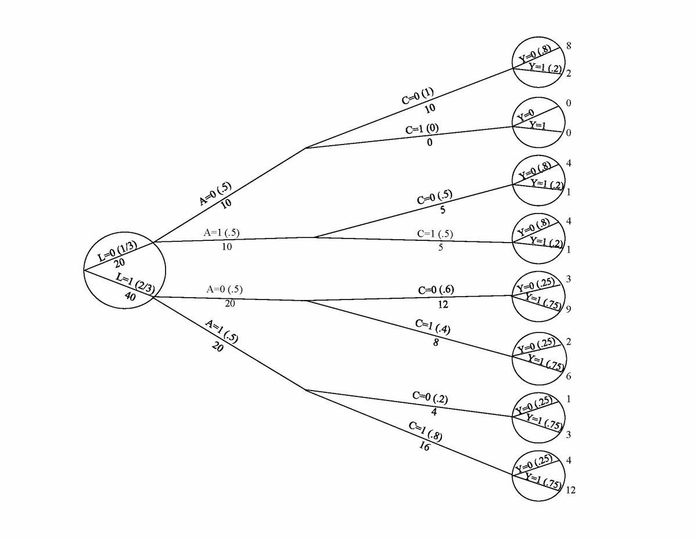
이제 선택 편향을 보정하기 위해 IP 가중을 사용하는 이면의 직관을 설명하겠다. Figure 8.10의 트리 아래쪽을 보자. 심장 질환이 있으면서( = 1) 와사비 보충군에 배정된( = 1) 20명의 개인이 있다. 이들 중 4명은 중도절단되지 않았고 16명은 추적 소실되었다. 즉, 이 그룹에서 중도절단되지 않을 조건부 확률은 1/5, 즉 Pr[ = 0 | = 1, = 1] = 4/20 = 0.2이다. IP 가중 분석에서 중도절단된 16명은 가중치 0을 받으며(즉, 분석에 기여하지 않음), 중도절단되지 않은 4명은 중도절단되지 않을 확률의 역수인 가중치 5를 받는다(1 / (1/5) = 5). IP 가중은 원래의 20명을 중도절단되지 않은 4명 각각의 복제본 5개로 대체한다. Figure 8.11에 나와 있듯이 트리의 다른 가지들에 대해서도 동일한 절차를 반복하여 원래 연구 모집단과 크기는 같지만 아무도 추적 소실되지 않은 의사 모집단(pseudo-population)을 구축할 수 있다. (트리의 각 가지에 대한 IP 가중치를 유도하는 것은 독자의 몫으로 남겨 둔다.) 의사 모집단에서의 연관 위험비는 1이며, 이는 아무도 중도절단되지 않았을 때 원래 모집단에서 계산되었을 위험비 Pr[=1,=0 = 1] / Pr[=0,=0 = 1]과 동일하다.
Figure 8.11
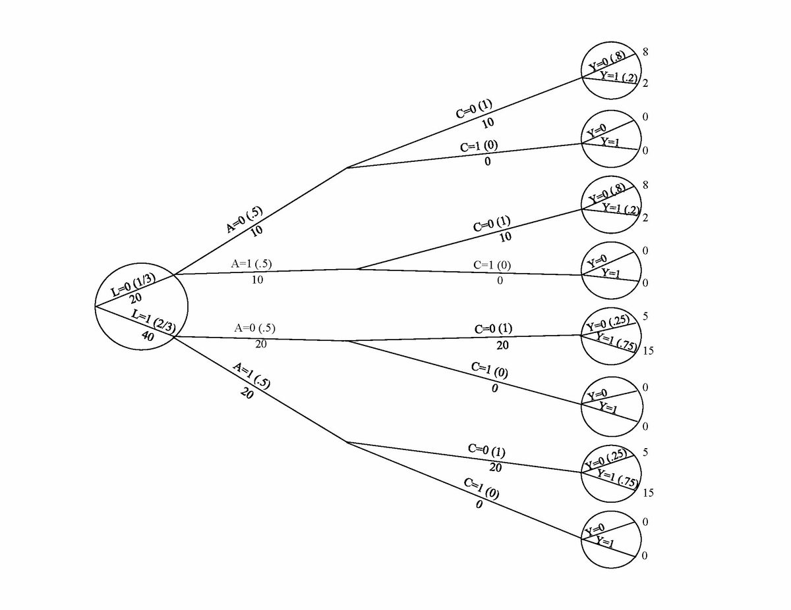
다음 세 가지 식별 조건이 충족되면 의사 모집단에서의 연관 측도는 원래 모집단에서의 효과 측도와 같아진다.
첫째, 중도절단되지 않은 개인들의 평균 결과는 동일한 및 값을 가진 중도절단된 개인들의 관측되지 않은 평균 결과와 같아야 한다. 이 조항은 선택 확률 Pr[ = 0 | = 1, = 1]이 처치 과, 선택 및 결과 모두를 독립적으로 예측하는 모든 추가 요인들에 조건화하여 계산될 때, 즉 과 의 변수들이 과 사이의 모든 뒷문 경로를 차단하기에 충분할 때 만족된다. 안타깝게도 이러한 추가 요인들이 확인되어 에 기록되었는지 결코 확신할 수 없으므로, 선택 편향에 대한 보정 결과의 인과적 해석은 이 검증 불가능한 교환가능성 가정에 의존한다.
둘째, IP 가중은 의 변수들이 주어졌을 때 중도절단되지 않을 모든 조건부 확률이 0보다 클 것을 요구한다. 이 양수성 조건은 중도절단되지 않을 확률( = 0)에는 요구되지만 중도절단될 확률( = 1)에는 요구되지 않는다는 점에 유의하라. 연구 대상자들이 중도절단되었을 때 무슨 일이 일어났을지 추론하는 데는 관심이 없으며, 따라서 모든 사람이 중도절단된 의사 모집단을 구축할 이유가 없기 때문이다. 예를 들어 Figure 8.10의 트리는 Pr[ = 1 | = 0, = 0] = 0임을 보여 주지만, 이 0은 아무도 중도절단되지 않은 의사 모집단을 구축하는 우리의 능력에 영향을 미치지 않는다.
셋째 조건은 잘 정의된 개입을 포함하는 일관성(consistency)이다. IP 가중은 중도절단 이 폐지되고 처치 의 효과가 원래 모집단에서와 동일한 의사 모집단을 만들기 위해 사용된다. 따라서 의사 모집단의 효과 측도는 아무도 중도절단되지 않았을 때의 효과 측도와 같다. 이 효과 측도는 중도절단이 추적 소실이나 무응답의 결과일 때는 비교적 잘 정의될 수 있지만, 중도절단이 경쟁 사건(competing event)의 발생으로 정의될 때는 그렇지 않다.
경쟁 사건(competing event)은 관심 결과의 발생을 가로막는 사건이다. 경쟁 사건의 대표적인 예는 사망인데, 개인이 일단 사망하고 나면 다른 어떤 결과도 일어날 수 없기 때문이다.
예를 들어 알츠하이머병 위험에 특정 치료가 미치는 효과를 추정하려는 연구에서 다른 원인(암, 심장 질환 등)으로 인한 사망은 경쟁 사건이다. 사망을 일종의 중도절단으로 정의하는 것은 문제가 있다: 모든 다른 사망 원인이 제거된 의사 모집단에 우리의 효과 추정치를 기반으로 삼기를 원치 않을 수 있는데, 어떤 개입이 그러한 모집단을 만들어낼 수 있을지 개념적으로조차 불분명하기 때문이다. 또한 다른 원인들에 영향을 주지 않으면서 단 하나의 사망 원인만을 제거할 수 있는 실현 가능한 개입은 존재하지 않는다.
마지막으로, Figure 8.3에 기술된 것과 같은 상황에서 선택 편향을 보정하기 위해 IP 가중이 반드시 필요한 것은 아니라고 주장할 수 있다. 오히려 IP 가중 대신 층화(즉, 변수들에 조건화하여 효과 측도를 추정하는 방식)를 통해 선택 편향을 제거하려고 시도할 수도 있다. 에 조건화하는 것으로 에서 로 가는 뒷문 경로는 차단하기에 충분하므로, 층화는 의 수준 내에서 비편향된 조건부 효과 측도를 산출할 수 있다. 즉, 조건부 위험비 Pr[ = 1 | = 1, = 0, = ] / Pr[ = 1 | = 0, = 0, = ]는 = 인 중도절단되지 않은 사람들 사이에서의 처치 효과로 해석될 수 있다. 동일한 이유로 무효과 하에서 데이터가 Figure 8.5의 인과 구조로 표현될 수 있다면 층화는 잘 작동할 것이다(즉, 비편향된 조건부 효과 측도를 제공할 것이다). 그러나 Figure 8.4와 8.6에 묘사된 구조 아래에서는 층화가 작동하지 않는다. Figure 8.4를 보라. 에 조건화하면 에서 로 가는 뒷문 경로는 차단되지만, 동시에 이 해당 경로의 충돌 변수이기 때문에 에서 로 가는 경로 → ← → 가 열린다. 따라서 이 에 미치는 인과 효과가 0이더라도 (에 조건화된) 조건부 위험비는 일반적으로 1과 다를 것이다. Figure 8.6에 대해서도 마찬가지이다. 대조적으로 IP 가중은 Figure 8.3–8.6 아래에서 선택 편향을 적절히 보정하는데, 이 접근법은 공변량 에 조건화된 효과 측도를 추정하는 것에 기초하는 것이 아니라, 개인들의 처치와 값에 따라 재가중한 후 무조건부 효과 측도를 추정하는 것에 기초하기 때문이다.
교환가능성, 양수성, 일관성이라는 세 조건이 성립하더라도 처치의 인과 효과를 타당하게 계산하기 위해 층화를 사용할 수 없는 상황을 논의한 것은 이번이 처음이다. 3부에서 시간에 따라 변화하는 처치의 효과를 고려할 때 유사한 구조를 가진 다른 상황들을 논의할 것이다.
8.6 편향 없는 선택(Selection without bias)
Figure 8.12의 인과 다이어그램은 수술 , 특정 유전적 반수체형 , 사망 이라는 이분형 변수들을 가진 가상의 연구를 나타낸다.
기술적 사항 8.2 (Technical Point 8.2) 곱셈적 생존 모형(Multiplicative survival model). 과 가 주어졌을 때의 조건부 생존 확률 Pr[ = 0 | = , = ]가 와 의 함수들의 곱 ()()와 같을 때, 우리는 곱셈적 생존 모형이 성립한다고 말한다. 곱셈적 생존 모형 Pr[ = 0 | = , = ] = ()()는 생존비 Pr[ = 0 | = , = ] / Pr[ = 0 | = , = 0]가 에 의존하지 않고 ()와 같다고 가정하는 모형과 동등하다. Figure 8.13에 묘사된 대로 곱셈적 척도에서 과 사이에 상호작용이 없을 때 데이터는 곱셈적 생존 모형을 따른다. 만약 Pr[ = 0 | = , = ] = ()()라면, Pr[ = 1 | = , = ] = 1 − ()()는 곱셈적 사망률 모형을 따르지 않는다. 따라서 과 가 = 0이 주어졌을 때 조건부 독립일 때, 이들은 = 1이 주어졌을 때는 조건부 종속이 된다.
d-분리의 규칙에 따르면, 수술 과 반수체형 는 (i) 주변적으로 독립이다. 즉, 수술을 받을 확률은 유전적 반수체형을 가진 사람과 가지지 않은 사람에서 동일하다. 그리고 (ii) 에 조건화하면 연관된다. 즉, 연구가 예컨대 생존자( = 0)로 제한될 때 수술을 받을 확률은 반수체형에 따라 달라진다.
실제로 서로 독립인 두 원인 과 의 공통 효과 에 조건화하면 의 층들 중 적어도 하나(예: = 1)에서 과 사이에 조건부 연관이 항상 유도된다. 그러나 다른 층(예: = 0) 내에서는 과 가 조건부 독립으로 유지되는 특별한 상황이 존재한다.
과 가 완전히 독립적인 메커니즘을 통해 생존에 영향을 미쳐서, 가 에 대한 의 효과를 결코 수정할 수 없고 그 반대도 마찬가지라고 가정해 보자. 예를 들어 수술 은 종양 제거를 통해 생존에 영향을 미치는 반면, 반수체형 는 저밀도 지질단백질(LDL) 콜레스테롤 수치를 증가시켜 (종양의 존재 여부와 무관하게) 심근경색의 위험을 높임으로써 생존에 영향을 미친다고 가정하자. 이 시나리오에서는 3가지 원인별 사망 변수를 고려할 수 있다: 종양으로 인한 사망 , 심근경색으로 인한 사망 , 그리고 기타 모든 원인으로 인한 사망 이다. 관측된 사망 변수 은 또는 또는 가 1일 때 1(사망)과 같고, 과 과 가 모두 0일 때 0(생존)과 같다. Figure 8.12를 확장한 Figure 8.13의 인과 다이어그램은 이 모든 변수들을 연결하는 인과 구조를 나타낸다. 우리는 기저 사망 원인(, , )에 대한 데이터는 기록되지 않아 실제로 측정된 변수는 Figure 8.12에 있는 변수들(, , )뿐이라고 가정한다.
, , 에서 로 가는 화살표들은 결정론적(deterministic)이므로, 관측된 생존( = 0)에 조건화하는 것은 = 0, = 0, = 0에 동시에 조건화하는 것과 동등하다. 즉, = 0에 조건화하는 것은 = = = 0을 함의한다. 결과적으로 Figure 8.13에 d-분리를 적용하면 과 가 = 0이 주어졌을 때 조건부 독립임을 알 수 있다. 즉, 조건화된 충돌 변수 를 통과하는 과 사이의 경로가 비충돌 변수 , , 에 조건화함으로써 차단되는 것이다. 반면에 사망 = 1에 조건화하는 것은 , , 의 어떤 특정한 값에 조건화하는 것을 함의하지 않는데, 사건 = 1은 7가지 가능한 측정되지 않은 사건들과 양립하기 때문이다: ( = 1, = 0, = 0), ( = 0, = 1, = 0), ( = 0, = 0, = 1), ( = 1, = 1, = 0), ( = 0, = 1, = 1), ( = 1, = 0, = 1), 그리고 ( = 1, = 1, = 1). 따라서 조건화된 충돌 변수 를 통과하는 과 사이의 경로는 차단되지 않는다: 즉, 과 는 = 1이 주어졌을 때 연관된다.
8.2 The strength and direction of selection bias. 우리는 지금까지 선택 편향(selection bias)을 편향이 존재하든가 존재하지 않든가의 “전부 아니면 전무(all or nothing)”인 문제로 언급해 왔다. 그러나 실제로는 편향의 예상되는 방향과 크기(magnitude)를 고려하는 것이 중요하다. 두 개의 주변적으로 독립인 원인 와 사이에서 그들의 공통 효과 의 층(strata) 내 조건부 연관(conditional association)의 방향은 두 원인 와 가 를 유발하기 위해 어떻게 상호작용하는지에 달려 있다. 예를 들어, 나 와 연관되지 않은 발견되지 않은 배경 요인 가 존재할 때, =1 또는 =1 중 하나를 갖는 것이 사망을 유발하는 데 충분하고 필요하지만(“or” 메커니즘), 가 없을 때는 도 도 사망을 유발하지 않는다고 가정해 보자. 그러면 사망한 사람들( = 1) 사이에서 와 는 음으로 연관될 것인데, =0인 개인이 =1을 가졌을 가능성이 더 높기 때문이다. 의 부재가 가 사망 원인이었을 가능성을 높이기 때문이다. (실제로 조건부 오즈비 =1 의 로그값은 모집단에서 의 유병률이 1.0에 접근함에 따라 마이너스 무한대에 접근할 것이다.) 이 “or” 메커니즘은 공통 효과의 층 내에서 독립인 원인들의 조건부 연관에 대해 본문에서 제시한 유일한 설명이었지만, 다른 가능성도 존재한다. 예를 들어, 발견되지 않은 배경 요인 가 존재할 때 =1과 =1 둘 다를 갖는 것이 사망을 유발하는 데 충분하고 필요하며(“and” 메커니즘), 가 없을 때는 도 도 사망을 유발하지 않는다고 가정해 보자. 그러면 사망한 사람들 사이에서 = 1인 사람들은 = 1을 가질 가능성이 더 높다. 즉, 와 는 양으로 상관된다. Figure 8.12와 같은 표준 DAG은 와 가 “or” 메커니즘을 통해 상호작용하는 경우와 “and” 메커니즘을 통해 상호작용하는 경우를 구분하지 못한다. 충분 원인 구조를 갖춘 인과 DAG(VanderWeele and Robins, 2007c)은 이러한 단점을 극복한다. 선택 편향의 방향과 상관없이 또 다른 핵심 쟁점은 그 크기이다. 편향이 위쪽으로 향하든 아래쪽으로 향하든, 연구의 결론에 영향을 미칠 만큼 크지 않은 편향은 실제로는 안전하게 무시될 수 있다. 일반적으로 말해, 큰 선택 편향이 생기려면 충돌 변수(collider)와 처치 및 결과 양쪽 사이에 강한 연관이 있어야 한다. Greenland(2003)는 무가설(null) 하에서 자신이 충돌 변수-
| 층화 | 편향(collider- | stratification | bias)이라고 | 부른 선택 편향의 | 크기를 여러 | 시나리오에서 | 연구했다. |
|---|
와 는 Figures 8.14-8.16에 나타난 상황 중 하나가 발생할 때 = 0이라는 조건 하에서 독립이 되지 않을 것이다. 만약 와 가 공통의 메커니즘을 통해 생존에 영향을 미친다면, Figure 8.14에 나타난 것처럼 에서 로 가거나 에서 로 가는 화살표가 존재할 것이다. 그 경우 와 는 의 두 층 모두에서 종속이 될 것이다. 마찬가지로 Figure 8.15에 나타난 것처럼 공통 원인 때문에 와 가 독립이 아니라면, 와 는 의 두 층 모두에서 종속이 될 것이다. 마지막으로 Figure 8.16에 나타난 것처럼 공통 원인 1 과 2 때문에 원인 와 , 그리고 와 가 독립이 아니라면, 와 는 의 두 층 모두에서 역시 종속이 될 것이다. 데이터가 Figure 8.13으로 요약될 수 있을 때, 우리는 그 데이터가 | | | | 곱셈적 | 생존 | 모형(multiplicative | survival | model)을 따른다고 | 말한다(기술적 | | — | — | — | — | — | — | — | — | — | | | | | 사항 8.2 | 참조). | Figure 8.13에서 | 흥미로운 점은 | 관측된 변수 를 | 함수적으로 결정하는 | 미측정 변수 , , 를 추가함으로써, (Hernán, Hernández-Díaz, and Robins(2004)가 도입한 확장된 인과 DAG은 5장에서 설명한 충분 원인을 나타내도록 확장될 수 있다; VanderWeele and Robins, 2007c) = 0이 주어졌을 때 와 사이의 조건부 독립과 = 1이 주어졌을 때 그들의 조건부 종속을 모두 성공적으로 나타내는 확장된 인과 다이어그램(augmented causal diagram)을 만들었다는 것이다. 요약하자면, 충돌 변수에 대한 조건화는 항상 그 원인들 사이에 연관을 유도하지만, 이 연관은 공통 효과의 특정 수준에만 국한될 수 있다. 다시 말해, 분석이 공통 효과의 단일 수준으로 제한될 때 공통 효과에 대한 선택이 선택 편향을 초래하지 않는 것이 이론적으로 가능하다. 충돌 변수 층화가 언제나 선택 편향의 원천이 되는 것은 아니다.
제9장 측정 편향(Measurement Bias)
9.1 측정 편향의 구조(The structure of measurement error)
어떤 연구자가 “자신이 하늘을 올려다보는 것이 다른 보행자들도 올려다보게 만드는가?”라는 인과 질문에 답하기 위해 무작위 실험(randomized experiment)을 수행했다고 하자. 그녀는 자신이 올려다보는 것과 다른 보행자들이 올려다보는 것 사이에 약한 연관(association)을 발견했다. 이 약한 연관은 약한 인과 효과(causal effect)를 반영하는 것일까? 무작위 실험의 정의상 이 연구에서는 교란 편향(confounding bias)이 기대되지 않는다. 게다가 모든 보행자의 반응—올려다보았든 올려다보지 않았든—이 기록되었으므로 선택 편향(selection bias)도 예상되지 않았다. 그러나 또 다른 문제가 있었다: 보행자들의 반응을 기록하는 일을 맡은 연구자의 공동연구자가 많은 실수를 저지른 것이다. 구체적으로 그 공동연구자는 보행자가 올려다본 사례의 절반을 놓치고 이러한 반응들을 “올려다보지 않음”으로 기록했다. 따라서 처치(연구자가 올려다봄)가 결과(다른 사람들이 올려다봄)에 진실로 강한 효과를 미쳤다 하더라도, 결과의 오분류(misclassification)는 처치와 (잘못 측정된)
연구 데이터가 측정되는 과정의 결과로 처치와 결과 사이의 연관이 약화되거나 강화될 때 우리는 측정 편향(measurement bias)이 존재한다고 말한다. 측정 오차는 무작위 실험과 관찰 연구(observational studies)를 포함한 어떤 연구 설계에서도 발생할 수 있으므로, 효과 추정치를 해석할 때는 항상 측정 편향을 고려해야 한다. 이 장에서는 측정 오차로 인한 편향들에 대한 설명을 제공한다. 9.1 Measurement error 앞선 장들에서 우리는 모든 변수가 완벽하게 측정되었다는 비현실적인 가정을 암묵적으로 해 왔다. 콜레스테롤 저하제 가 간 질환 의 위험에 미치는 효과를 추정하기 위해 설계된 관찰 연구를 생각해 보자. 우리는 종종 처치 가 불완전하게 측정될 것으로 예상한다. 예를 들어 약물 복용에 관한 정보가 의무기록 발췌(medical record abstraction)를 통해 얻어지는 경우, 발췌자가 데이터를 전사할 때 실수를 저지를 수도 있고, 의사가 환자에게 약물을 처방했다는 사실을 기록하는 것을 잊었을 수도 있으며, 환자가 처방된 처치를 복용하지 않았을 수도 있다. 따라서 우리의 분석 데이터셋에 있는 처치 변수는 약물의 실제 복용이 아니라 측정된 약물 복용이 될 것이다. 우리는 측정된 처치를 ∗(A-star로 읽음)라고 부를 것이며, 이는 특정 개인에게서 실제 처치 와 반드시 같지는 않을 것이다. Figure 9.1. 심리학 문헌에서는 때때로 를 “구성개념(construct)”으로, ∗를 “측정치(measure)” 또는 “지표(indicator)”로 지칭한다. 관찰 분야에서의 과제는 관측된 측정치(예: 의무기록으로부터의 스타틴 | | | 복용 정보)에 대한 | 데이터를 사용하여 | 관측되지 않은 | 구성개념(예: 콜레스테롤 | 저하제 복용)에 대한 | 추론을 이끌어내는 것이다. | | — | — | — | — | — | — | — | — | 단순화를 위해 우리는 가 에 미치는 인과 효과에 대해 교란도 선택 편향도 없는 설정을 선택했다. 실제 처치 는 결과 와 측정된 처치 ∗ 양쪽에 영향을 미친다. 이 인과 다이어그램은 또한 ∗의 값을 결정하는 이외의 모든 요인을 나타내기 위해 노드 를 포함한다. 우리는 를 에 대한 측정 오차라고 부른다. (이산형 변수에 대한 측정 오차는 오분류(misclassification)로 알려져 있다.) 교란(뒷문 경로의 일부가 아님)이나 선택 편향(어떤 변수에도 조건화하지 않음) 논의에서는 노드 가 불필요하므로 7장과 8장의 인과 다이어그램에서는 이를 생략했음에 주목하라.
9.1 Independence and nondifferentiality. (·)를 확률 밀도 함수(probability density function, pdf)라고 하자. 처치에 대한 측정 오차 와 결과에 대한 측정 오차 는 그들의 결합 pdf가 주변 pdf들의 곱과 같을 때, 즉 ( , )=( )( )일 때 독립이다. 처치에 대한 측정 오차 는 그 pdf가 결과 와 독립일 때, 즉 ( ) = ( )일 때 비차별적(nondifferential)이다. 마찬가지로 결과에 대한 측정 오차 는 그 pdf가 처치 와 독립일 때, 즉 ( )=( )일 때 비차별적이다. 같은 이유로 변수 와 의 결정 요인들도
9.2는 실제 상황에서 흔히 마주하는 상황을 보여 준다. 연구자는 처치 가 결과 에 미치는 평균 인과 효과를 계산하고자 하지만, 이 변수들 와 는 정확하게 측정되지 않았거나 정확하게 측정될 수 없다. 오히려 가 에 미치는 인과 효과를 식별하고자 하는 연구자에게는 잘못 측정된 버전인 ∗와 ∗만이 주어져 있다. Figure 9.2는 또한 처치 가 결과 에 미치는 인과 효과에 대해 교란도 선택 편향도 없는 설정을 나타낸다. Figure 9.2. 이전 장들에서의 우리의 추론에 따르면 이 설정에서는 연관이 곧 인과이다. 우리는 어떤 연관 측도든 계산하여 그것에 인과적 해석을 부여할 수 있다. 예를 들어 연관 위험 비 Pr[ =1=1]/Pr[ =1=0]은
인과 위험 비 Pr =1 =1 /Pr =0 =1과 같다. 이제 명시적으로 밝히는 것이지만, 이전 장들에서의 우리의 암묵적 가정은 와 에 대해 완벽하게 측정된 데이터를 이용할 수 있다는 것이었다. 이제 우리는 처치와 결과가 오차를 동반하여 측정되는 더 현실적인 설정을 고려한다. 그러면 ∗와 ∗ 사이의 연관 측도가 가 에 미치는 인과 효과 측도와 같을 것이라는 보장이 없다. 연관 위험 비 Pr[ ∗=1 ∗=1]/Pr[ ∗=1 ∗=0]은 일반적으로 인과 위험 비 Pr =1 =1 /Pr =0 =1과 다를 것이다. 우리는 측정 편향(measurement bias) 또는 정보 편향(information bias)이 존재한다고 말한다. 측정 편향이 존재할 때, 교환가능성(exchangeability), 양성성(positivity), 일관성(consistency)이라는 식별 조건(identifiability conditions)은 처치 가 결과 에 미치는 인과 효과를 계산하기에 불충분하다. 9.2 The structure of measurement error 교란의 인과 구조는 처치와 결과의 공통 원인의 존재로 요약될 수 있고, 선택 편향의 인과 구조는 처치와 결과(또는 그 원인들)의 공통 효과에 대한 조건화로 요약될 수 있다. 측정 편향은 측정 오차가 존재할 때 발생하지만, 측정 오차를 요약할 단일한 구조는 없다. 이 절에서는 아래에서 설명할 두 가지 속성—독립성과 비차별성—에 따라 측정 오차의 구조를 분류한다(형식적 정의는 Technical Point 9.1 참조). Figure 9.2의 인과 다이어그램은 처치 와 결과 각각에 대한 측정 오차 와 를 묘사한다. d-분리의 규칙에 따르면, 와 사이의 경로가 충돌 변수(∗ 또는 ∗)에 의해 차단되어 있으므로 측정 오차 와 는 독립이다. Figure 9.3.
9.2 The structure of measurement error 115 독립적인 오차는 예를 들어 약물 복용 와 간 독성 에 대한 정보가 데이터 입력 오류가 무작위로 발생한 전자의무기록에서 얻어진 경우에 발생할 것으로 기대된다. 그러나 다른 설정에서는 Figure 9.3에 묘사된 것처럼 노출과 결과에 대한 측정 오차가 종속적일 수 있다. 예를 들어 전화 면접을 통해 후향적으로 정보를 얻었고 자신의 병력을 기억해 내는 개인의 기억력( )이 와 의 측정 모두에 영향을 미쳤다면 종속적 측정 오차가 발생할 것이다. Figure 9.4. Figure 9.2와 9.3은 모두 처치에 대한 오차 가 결과의 실제 값 와 독립이고, 결과에 대한 오차 가 처치의 실제 값과 독립인 설정을 나타낸다. 이때 우리는 처치에 대한 측정 오차가 결과에 대해 비차별적(nondifferential)이며, 결과에 대한 측정 오차가 처치에 대해 비차별적이라고 말한다. Figure 9.4의 인과 다이어그램은 결과의 실제 값이 처치의 측정에 영향을 미치는(즉, 에서 로 가는 화살표), 독립적이지만 차별적인 측정 오차의 예를 보여 준다. 처치의 차별적 측정 오차에 대한 몇 가지 예는 다음과 같다. Figure 9.5. 결과 가 간 독성이 아니라 치매(dementia)이고 약물 복용 가 연구 참여자들과의 면접을 통해 확인되었다고 가정해 보자. 치매의 존재는 를 기억해 내는 능력에 영향을 미치므로 에서 로 가는 화살표를 예상할 수 있다. 마찬가지로 임신 중 음주 가 선천적 기형 에 미치는 효과를 계산하는 연구에서 분만 후 회상을 통해 알코올 섭취량을 확인한다면 에서 로 가는 화살표를 예상할 수 있다—회상이 임신의 결과에 의해 영향을 받을 수 있기 때문이다. 이 두 예에서 발생하는 측정 편향은 종종 회상 편향(recall bias)이라고 불린다. 실제 약물 복용 대신 약물의 혈중 농도 ∗를 사용하고, 간 독성 가 나타난 후에 혈중 농도를 측정하는 경우에도 동일한 구조의 편향이 발생할 수 있다—간 독성이 약물의 측정된 혈중 농도에 영향을 미치기 때문이다. 이로 인한 측정 편향은 종종 역인과 편향(reverse causation bias)이라고 불린다. Figure 9.5의 인과 다이어그램은 처치의 실제 값이 결과의 측정에 영향을 미치는(즉, 에서 로 가는 화살표), 독립적이지만 차별적인 측정 오차의 예를 보여 준다. 의사들이 약물 복용 가 간 독성 를 유발한다고 의심하여 약물을 투여받는 환자들을 다른 환자들보다 더 면밀하게 모니터링한다면 결과에 대한 차별적 측정 오차가 발생할 것이다. Figure 9.6과 9.7은 종속적이면서 동시에 차별적인 측정 오차를 묘사하며, 이는 위에서 설명한 설정들의 조합에서 비롯될 수 있다. Figure 9.6. Figure 9.7. 요약하자면, 우리는 네 가지 유형의 측정 오차를 논의했다: 독립적 비차별적(Figure 9.2), 종속적 비차별적(Figure 9.3), 독립적 차별적(Figures 9.4 및 9.5), 그리고 종속적 차별적(Figures 9.6 및 9.7). 측정 오차의 구체적인 구조는 그것을 보정하기 위해 사용될 수 있는 방법들을 결정한다. 예를 들어 측정 오차가 독립적 비차별적일 때의 측정 오차 보정 방법에 관한 방대한 문헌이 존재한다. 일반적으로 측정 오차 보정 방법은 모형화 가정과 타당도 표본(validation samples, 즉 핵심 변수들이 오차가 거의 없거나 전혀 없이 측정된 데이터의 하위집합)의 결합에 의존한다. 측정 오차 보정 방법에 대한 설명은 이 책의 범위를 벗어난다. 우리의 목표는 변수를 측정하는 행위(개인을 선택하는 행위와 마찬가지로)가 편향을 도입할 수 있음을 강조하는 것이다(그 강도와 방향에 대한 논의는 Fine Point 9.1 참조). 현실적인 인과 다이어그램은 교란, 선택, 그리고 측정에서 비롯되는 편향들을 동시에 나타낼 필요가 있다. 잘못된 측정으로 인한 편향과 싸우는 가장 좋은 방법은, 명백하게도, 측정 절차를 개선하는 것이다.
9.1 The strength and direction of measurement bias. 일반적으로 측정 오차는 편향을 낳는다. 주목할 만한 예외는 와 가 연관되어 있지 않고 측정 오차가 독립적이며 비차별적인 설정이다: 만약 Figure 9.2에서 에서 로 가는 화살표가 존재하지 않는다면, - 연관과 ∗-∗ 연관 모두 무효(null)일 것이다. 다른 모든 상황에서는 측정 편향으로 인해 ∗-∗ 연관이 - 연관보다 무효값에서 더 멀어지거나 더 가까워질 수 있다. 더 나아가 비이분형(non-dichotomous) 처치의 경우, 측정 편향으로 인해 ∗-∗ 연관과 - 연관이 서로 반대 방향으로 나타날 수도 있다. 이러한 연관 또는 경향의 역전(trend reversal)은 ∗의 평균이 의 비단조 함수(nonmonotonic function)일 때 Figure 9.2의 독립적이고 비차별적인 측정 오차 구조 하에서도 발생할 수 있다. 자세한 내용은 Dosemeci, Wacholder, and Lubin(1990) 및 Weinberg, Umbach, and Greenland(1994)를 참조하라. VanderWeele and Hernán(2009)은 부호 인과 다이어그램(signed causal diagrams)을 사용하는 더 일반적인 틀을 기술했다. 측정 편향의 크기는 측정 오차의 크기에 달려 있다. 즉, 측정 편향은 일반적으로 에서 ∗로, 그리고 에서 ∗로 가는 화살표의 강도에 따라 증가한다. 인과 다이어그램은 양적(quantitative) 정보를 부호화하지 않으므로, 편향의 크기를 설명하는 데에는 사용될 수 없다. 9.3 Mismeasured confounders 처치 와 결과 외에도 교란 요인(confounders) 역시 오차를 동반하여 측정될 수 있다. 교란 요인의 오측정은 처치와 결과가 모두 완벽하게 측정되었다 하더라도 편향을 낳는다. 이를 확인하기 위해 약물 복용 , 간 질환 , 그리고 간염 병력 이라는 변수를 포함하는 Figure 9.8의 인과 다이어그램을 생각해 보자. 간염 병력 이 있는 개인은 약물 를 처방받을 가능성이 더 낮고 간 질환 가 발생할 가능성이 더 높다. 7장에서 논의했듯이 열린 뒷문 경로 ← → 가 존재하므로 처치 가 결과 에 미치는 효과에 대해 교란이 존재하지만, 뒷문 경로 ← → 는 에 조건화함으로써 차단될 수 있으므로 이 주어졌을 때 미측정 교란은 없다. 즉, 교란 요인 에 조건부로 처치군과 비처치군의 교환가능성이 성립하며, 가 에 미치는 평균 인과 효과를 계산하기 위해 역확률 가중(IP weighting)이나 표준화(standardization)를 적용할 수 있다. Figure 9.8. , , 에 기반한 표준화된, 또는 역확률 가중된 위험 비는
여기서도 위의 추론에 담긴 암묵적 가정은 교란 요인 이 완벽하게 측정되었다는 것이었다. 연구자들이 연구 참여자들의 의무기록에 접근할 수 없었다고 가정해 보자. 그 대신 이전의 간염 진단을 확인하기 위해 연구자들은 설문지를 통해 참여자들에게 물어보아야 했다. 모든 참여자가 자신의 병력에 대한 정확한 기억을 제공한 것은 아니었으므로—어떤 이들은 아무도 그것을 알기를 원하지 않았고, 다른 이들은 기억력 문제가 있었거나 설문지에 답할 때 단순히 실수를 저질렀다—교란 요인 은 오차를 동반하여 측정되었다. 연구자들은 변수 대신 잘못 측정된 변수 ∗에 대한 데이터를 가졌다. 안타깝게도 뒷문 경로 ← → 는 일반적으로 ∗에 조건화하는 것으로는 차단될 수 없다. ∗, , 에 기반한 표준화된(또는 역확률 가중된) 위험 비는 일반적으로 인과 위험 비 Pr =1 =1 /Pr =0 =1과 다를 것이다. 이때 우리는 측정 편향 또는 정보 편향이 존재한다고 말한다. Figure 9.9의 인과 다이어그램은 이 와 가 공유하는 공통 원인이 아닌 경우, 가 에 미치는 인과 효과의 교란에 대한 예를 보여 준다. Figure 9.9. 여기서도 의 오측정은 뒷문 경로 ← ← → 가 ∗에 조건화하는 것으로는 일반적으로 차단될 수 없기 때문에 측정 편향으로 이어진다. (Figure 9.8과 9.9는 측정 오차 을 포함하지 않는데, 이 오차의 구체적인 구조가 우리의 논의와 관련이 없기 때문임에 주목하라.)
9.4 Intention-to-treat effect: the effect of a misclassified treatment 117 대안적으로 Figure 9.8과 9.9에서 잘못 측정된 교란 요인으로 인한 편향을 측정 편향의 한 형태라기보다는 미측정 교란(unmeasured confounding)의 한 형태로 볼 수도 있다. 사실 Figure 9.8의 인과 다이어그램은 Figure 7.6의 다이어그램과 동등하다. 을 미측정 변수로, ∗를 대리 교란 요인(surrogate confounder, Fine Point 7.2 참조)으로 생각할 수 있다. 구체적인 용어의 선택—미측정 교란 대 교란 요인의 오측정으로 인한 편향—은 실용적인 목적에서는 중요하지 않다. 교란 요인의 오측정은 또한 겉보기 효과 수정(apparent effect modification)을 초래할 수도 있다. 예를 들어 이전에 간염 진단을 받았다고 보고한 모든 연구 참여자(∗ = 1)와 이전에 간염 진단을 받지 않았다고 보고한 이들 중 절반(∗ = 0)이 실제로는 이전 간염 진단을 받았다고( = 1) 가정해 보자. 즉, 교란 요인의 참값과 측정값은 ∗ = 1 층에서는 일치하지만 ∗ = 0 층에서는 일치하지 않는다. 나아가 처치 가 어떤 개인의 간 질환 에도 아무런 효과가 없다고, 즉 엄격한 무가설(sharp null hypothesis)이 성립한다고 가정해 보자. 연구자들이 분석을 ∗ = 1 층으로 제한할 때, 분석에 포함된 모든 참여자가 동일한 값(즉, = 1)을 가지므로 에 의한 교란은 없을 것이다. 따라서 그들은 ∗ = 1 층에서 와 사이에 아무런 연관도 발견하지 못할 것이다. 그러나 연구자들이 분석을 ∗ = 0 층으로 제한할 때는 ∗ = 0 층에 = 1과 = 0인 개인이 모두 혼합되어 있으므로 에 의한 교란이 존재하게 된다. 따라서 연구자들은 통제되지 않은 에 의한 교란의 결과로 와 사이의 연관을 발견할 것이다. 만약 연구자들이 교란 요인의 오측정이 ∗ = 0 층에는 있고 ∗ = 1 층에는 없다는 사실을 알지 못한다면, ∗ = 0 층에서의 연관 측도와 ∗ = 1 층에서의 연관 측도 모두 효과 측도로 해석될 수 있다고 순진하게 결론지을 수 있다. 이 두 연관 측도가 다르기 때문에, 연구자들은 실제 교란 요인 에 의한 효과 수정이 존재하지 않음에도 불구하고 ∗가 가 에 미치는 효과의 수정 요인(modifier)이라고 말할 것이다. Figure 9.10. 마지막으로 Figure 9.10에 나타난 것처럼 충돌 변수 가 오차를 동반하여 측정되는 것도 가능하다. 이 설정에서 잘못 측정된 충돌 변수 ∗에 조건화하는 것은 일반적으로 선택 편향을 도입할 것인데, ∗가 처치 와 결과 의 공통 효과이기 때문이다. 9.4 Intention-to-treat effect: the effect of a misclassified treatment 심장 이식이 5년 사망률 에 미치는 인과 효과를 계산하기 위한 주변 무작위 실험을 생각해 보자. 이 책에서 지금까지 우리는 처치(이 예에서는 심장 이식)를 배정받아 실제로 처치를 받은 연구 참여자들을 가리키는 데 = 1이라는 표기법을 사용했고, 그 외의 사람들에게는 = 0을 사용했다. 이 표기법은 처치에 배정된 모든 참여자가 실제로 처치를 받았고 처치 없음에 배정된 모든 참여자가 실제로 처치를 받지 않은 이상적인 무작위 실험에는 적절하다. 그러나 참여자들이 배정된 처치를 준수하지 않을 수 있는 실제 무작위 실험에서는 이 표기법이 충분히 상세하지 못하다. 실제 무작위 실험에서는 두 개의 처치 변수를 구분할 필요가 있다: 배정된 처치 (해당 개인이 이식에 배정되면 1, 그렇지 않으면 0)와 실제로 받은 처치 (해당 개인이 이식을 받으면 1, 그렇지 않으면 0)이다. 특정 개인에게서 와 의 값은 배정된 처치에 대한 순응도(adherence) 부족으로 인해 서로 다를 수 있다. 예를 들어 심장 이식을 받도록 무작위 배정된 개인( = 1)이
수술 절차를 거부하여 이식을 받지 않을( = 0) 수도 있고, 약물 요법에만 배정된 개인( = 0)이 연구 외부에서 여전히 이식을 받을( = 1) 수도 있다. 그런 의미에서 개인들이 배정된 처치에 순응하지 않을 때, 배정된 처치 는 연구 참여자들이 실제로 받은 처치 의 오분류된 버전이다. Figure 9.11은 , , 를 포함하는 무작위 실험을 나타낸다(변수 는 다음 절에서 논의된다). 그러나 무작위 실험에서의 배정된 처치 와 우리가 지금까지 고려해 온 오분류된 처치 ∗ 사이에는 결정적인 차이가 있다. Figures 9.1-9.7에서 잘못 측정된 처치 ∗는 결과 에 인과 효과를 갖지 않는다. ∗와 사이의 연관은 전적으로 그들의 공통 원인 때문이다. 실제로 관찰 연구에서는 실제 처치 가 인과 효과를 갖더라도 측정된 처치 ∗가 결과에 인과 효과를 가질 것으로는 일반적으로 기대하지 않는다. 반면에 Figure 9.11에 나타난 바와 같이 무작위 실험에서의 배정된 처치 는 두 가지 서로 다른 경로를 통해 결과 에 인과 효과를 가질 수 있다. Figure 9.11. 첫째, 처치 배정 는 단순히 그것이 실제로 받은 처치 에 영향을 미치기 때문에 결과 에 영향을 미칠 수 있다. 에서 로 가는 화살표로 표시된 것처럼, 심장 이식에 배정된 개인들은 심장 이식을 받을 가능성이 더 높다. 에서 로 가는 화살표로 표시된 것처럼 심장 이식을 받는 것이 사망률에 인과 효과를 가진다면, 심장 이식으로의 배정은 → → 경로를 통해 결과 에 인과 효과를 갖는다. 둘째, 처치 배정 는 실제로 받은 처치 에 의해 매개되지 않는 경로들을 통해 결과 에 영향을 미칠 수 있다. 예를 들어 배정된 처치에 대한 인식이 연구 참여자들의 행동 변화로 이어질 수 있다: 이식을 받는 것을 아는 환자들은 새 심장을 건강하게 유지하기 위해 자발적으로 식단을 바꿀 수 있고, 의사들은 심장 이식에 배정되지 않은 환자들을 특별히 돌볼 수 있다… 이러한 행동 변화들은 에서 로 가는 직접적인 화살표로 표현된다. 따라서 배정된 처치 의 인과 효과는 실제로 받은 처치 의 효과와 같지 않다. 의 효과 크기는 화살표 −→ 의 강도(실제로 받은 처치의 효과)뿐만 아니라, 화살표 −→ 의 강도(연구에서 배정된 처치에 대한 순응도)와 −→ 의 강도(동반된 행동 변화)에도 달려 있기 때문이다. 흔히 연구자들은 Figure 9.12에 나타난 것처럼 화살표 → 를 제거함으로써 의 효과를 부분적으로 “오염 제거(de-contaminate)”하려고 시도하는데, 이는 에서 로의 직접 화살표가 없다는 배제 제한(exclusion restriction, Technical Point 9.2 참조)을 묘사한다. 이를 위해 연구자들은 참여자들과 그들의 의사들에게 배정된 처치 에 대한 지식을 숨긴다. 예를 들어 가 아스피린이라면 연구자들은 무작위로 = 1에 배정된 사람들에게는 아스피린 알약을 투여하고, = 0에 배정된 사람들에게는 위약(placebo, 아스피린을 포함하지 않는다는 점을 제외하고는 동일한 알약)을 투여할 것이다. Figure 9.12. 참여자들과 의사들이 자신에게 주어진 알약이 유효 성분 처치인지 위약인지 알지 못하기 때문에 그들은 “눈가림(blinded)”되었다고 하며, 이러한 연구를 이중맹검 위약 대조 무작위 실험(double-blind placebo-controlled randomized experiment)이라고 부른다. 그러나 이중맹검 처치 배정은 실행 불가능한 경우가 많다. 예를 들어 우리의 심장 이식 연구에서는 개흉 수술에 대해 그럴듯한 위약을 투여할 수 있는 실질적인 방법이 없다. (어떤 처치의 알려진 부작용 때문에 누가 처치를 받고 있는지 명백해지므로 효과적으로 눈가림될 수 없는 다른 연구들도 있다.) 다시 한 번 핵심은 의 효과가 “로 치료하는 효과”를 측정하는 것이 아니라 “참여자들을 로 치료받도록 배정하는 효과” 또는 “로 치료하려는 의도를 갖는 효과”를 측정한다는 점이며, 이것이 바로 무작위 배정 의 인과 효과를 의도-치료 효과(intention-to-treat effect)라고 부르는 이유이다. 그러나 순응도와 기타
9.5 Per-protocol effect 119 Technical Point 9.2 The exclusion restriction. 배제 제한(exclusion restriction)이 성립하면 배정된 처치 에서 결과 로 가는 직접 화살표가 존재하지 않는다. 즉, 가 에 미치는 모든 효과가 실제로 받은 처치 를 통해 매개된다. , 를 무작위 처치 배정 와 실제로 받은 처치 하에서의 반사실적 결과라고 하자. 형식적으로 우리는 모든 개인과 모든 값에 대해, 구체적으로 각 개인에 대해 관측된 값 에 대해 =0, = =1, 일 때 배제 제한이 성립한다고 말한다. 도구 변수 방법(instrumental variable methods, 16장 참조)은 배제 제한이 참이라는 점에 결정적으로 의존한다. 요인들에 대한 의존성에도 불구하고, 처치 배정 의 효과는 대부분의 무작위 실험에서 연구자들이 추구하는 효과이다. 왜 실제로 받은 처치 의 효과보다 배정된 처치 의 효과에 관심을 갖는 것일까? 다음 절에서 이 질문에 대한 몇 가지 답을 제공한다. 9.5 Per-protocol effect 무작위 실험에서 프로토콜 순응 효과(per-protocol effect)는 실험의 프로토콜에 명시된 대로 모든 개인이 배정된 처치에 순응했을 경우 관찰되었을 처치의 인과 효과이다. 만약 모든 연구 참여자가 우연히 배정된 처치에 순응한다면, 배정된 처치 와 실제로 받은 처치 의 값이 모든 참여자에게서 일치하며, 따라서 프로토콜 순응 효과는 의 평균 인과 효과로 정의하든 의 평균 인과 효과로 정의하든 동등하다. 2장에서 설명했듯이 완벽한 순응도를 가진 이상적인 실험에서는 처치군(=1)과 비처치군(=0)이 교환가능하며, ⊥⊥ 이고, 연관이 곧 인과이다. 연관 위험 비 Pr[ = 1 = 1]/Pr[ = 1 = 0]은 인과 위험 비
Pr[=1 = 1]/Pr[=0 = 1]과 같을 것으로 기대되며, 이는
않아 배정된 처치 와 실제로 받은 처치 의 값이 서로 다른 설정을 고려하자. 예를 들어 = 0 군에서 가장 중증인 개인이 연구 외부에서 심장 이식( = 1)을 찾으려는 경향이 있다고 가정해 보자. 그런 일이 발생하면 =1 군은 =0 군보다 중증 환자의 비율이 더 높아질 것이다: =1 군과 =0 군은 교환가능하지 않을 것이며, 따라서 와 사이의 연관은 인과가 아닐 것이다. 연관 위험 비 Pr[ = 1 = 1]/Pr[ = 1 = 0]은
인과적 프로토콜 순응 위험 비 Pr[=1 = 1]/Pr[=0 = 1]과 같지 않을 것이다.
는 중증 질환(1: 예, 0: 아니오)을 나타낸다. 뒷문 경로 ← → 가 보여주듯이, 가 에 미치는 효과에 대해 교란이 존재한다. 참여자들이 처치 를 받는 이유에 예후 요인 가 포함되기 때문에, 프로토콜 순응 효과를 계산하려면 교란에 대한 보정이 필요하다. 즉, 프로토콜 순응 효과의 계산은 무작위 실험을 관찰 연구로 바라볼 것을 요구한다. 요인 가 측정되지 않은 채로 남아 있다면, 실제로 받은 처치 의 효과는 올바르게 계산될 수 없다. 순응도를 예측하는 예후 요인들이 측정되었을 때 프로토콜 순응 | | | 효과를 | 정량화하는 | 접근법에 | 대한 설명은 | Fine Point 9.2를 | 참조하라. | | — | — | — | — | — | — | — | — |
9.2 Per-protocol analyses. 무작위 시험에서 처치 의 프로토콜 순응 효과를 추정하기 위한 두 가지 흔한 시도는 ‘실제 처치 기준(as-treated)’ 분석과 ‘프로토콜 순응(per-protocol)’ 분석이다. 전통적인 실제 처치 기준 분석은 처치 배정 와 무관하게 실제로 처치를 받은 사람들( = 1)과 처치를 받지 않은 사람들( = 0) 사이에서 결과 의 분포를 비교한다. 분명히 Figures 9.11 및 9.12에서처럼 참여자들이 처치를 받도록 만든 이유가 측정되지 않은 예후 요인 와 연관되어 있다면 전통적인 실제 처치 기준 비교는 교란될 것이다. 반면에 Figure 9.13에서처럼 와 사이의 모든 뒷문 경로가 측정된 요인 에 조건화함으로써 차단될 수 있는 설정을 생각해 보자. 그러면 실제 처치 기준 분석은 요인 을 적절히 측정하고 보정한다면 프로토콜 순응 효과를 성공적으로 추정할 것이다. 전통적인 프로토콜 순응 분석—온-트리트먼트(on-treatment) 분석이라고도 함—은 연구 프로토콜을 준수한 개인들, 즉 = 인 이른바 프로토콜 순응 모집단(per-protocol population)의 참여자들만을 포함한다. 그런 다음 이 분석은 프로토콜 순응 모집단 내에서만 처치에 배정된 사람들( = 1)과 처치에 배정되지 않은 사람들( = 0) 사이의 결과 의 분포를 비교한다. 즉, 프로토콜 순응 모집단으로 제한된 의도-치료 분석에 불과한 전통적인 프로토콜 순응 분석은 일반적으로 프로토콜 순응 효과의 편향된 추정치를 낳을 것이다. 그 이유를 이해하기 위해 프로토콜 순응 모집단으로의 선택 지표 ( = 이면 = 1, 그렇지 않으면 = 0)를 포함하는 Figure 9.14의 인과 다이어그램을 살펴보자. 프로토콜 순응 분석이 요인 을 적절히 측정하고 보정하지 않는 한 선택 편향이 발생할 것이다. 즉, 실제 처치 기준 분석과 프로토콜 순응 분석은 무작위 실험에 대한 관찰 분석이며, 여느 관찰 분석과 마찬가지로 프로토콜 순응 효과의 타당한 추정치를 얻으려면 교란과 선택 편향에 대한 적절한 보정이 필요하다. 예시와 추가 논의는 Hernán and Hernández-Díaz(2012)를 참조하라. 없다. 가 무작위로 배정되기 때문에, 실제로 받은 처치 에 대해서는 성립하지 않더라도 배정된 처치 에 대해서는 교환가능성 ⊥⊥ 가 성립한다. Figure 9.11에서 에서 로 가는 뒷문 경로는 없다. 모든 개인이 배정된 처치에 순응하든 그렇지 않든, 와 사이의 연관은 가 에 미치는 인과 효과를 함의한다. 연관 위험 비 Pr[ = 1 = 1]/Pr[ = 1 = 0]은 인과적 의도-치료 위험 비 Pr[ =1 = 1]/Pr[ =0 = 1]과 같다. (의도-치료 효과를 추정하기 위해 와 사이의 비보정 연관을 추정하는 분석을 의도-치료 분석(intention-to-treat analysis)이라고 부른다. 의도-치료 분석에 대한 자세한 내용은 Fine Point 9.4를 참조하라.) 교란의 부재는 왜 많은 무작위 실험에서 의도-치료 효과가 특권을 누리는지를 상당 부분 설명해 준다: “로 치료하려는 의도를 갖는 효과”는 우리가 원하는 처치 효과—“로 치료하는 효과” 또는 프로토콜 순응 효과—를 측정하지 못할 수도 있지만, 프로토콜 순응 효과보다 올바르게 계산하기가 더 쉽다. 덜 흥미로운 양이 더 흥미로운 양보다 계산하기 쉬울 때 흔히 그렇듯이, 우리는 덜 흥미로운 양의 사용을 정당화하기 위한 주장들을 내놓는 경향이 있다. 의도-치료 효과도 예외는 아니다. 이제 우리는 의도-치료 효과에 대한 몇 가지 잘 알려진 정당화들을 왜 곧이곧대로 받아들여서는 안 되는지 논의한다. Fine Point 9.4도 참조하라. 의도-치료 효과에 대한 흔한 정당화 중 하나는 그것이 무효(null)를 보존한다는 점이다. 즉, 처치 가 에 무효과라면 배정된 처치 역시 에 무효과일 것이다. 무효 보존(null preservation)은 아무런 효과가 존재하지 않을 때 효과가 있다고 선언되지 않도록 보장하기 때문에 핵심적인 특성이다. (통계적 용어로, 의도-치료 분석은 평균 처치 효과가 없다는 무가설에 대한 유효한—비록 검정력이 다소 떨어질 수는 있지만—-수준 검정을 제공한다.) 보다 형식적으로 엄격한 인과적 무가설과 배제 제한 하에서는 Pr[ = 1 = 1]/Pr[ = 1 = 0] = Pr[ =1 = 1]/Pr[ =0 = 1] = 1임을 보일 수 있다. 그러나 Figure 9.11에 나타난 것처럼 배제 제한이 성립하지 않을 때는 이 등식이 참이 아니다. 그러한 경우들—이중맹검 위약 대조가 아닌 실험들—에서는 의 효과가 무효이더라도 의 효과는 무효가 아닐 수 있다. 이를 확인하기 위해 Figure 9.11에서 화살표 −→ 를 머릿속으로 지워 보라: 거기에
9.5 Per-protocol effect 121 Fine Point 9.3 Pseudo-intention-to-treat analysis. 의도-치료 효과는 추적 관찰 탈락이나 다른 형태의 중도절단(censoring)이 없을 때에만 의도-치료 분석으로부터 직접 계산될 수 있다. 일부 개인이 추적 관찰을 완료하지 못하면 그들의 결과는 알 수 없게 되며, 따라서 분석은 추적 관찰을 완료한 개인들로 제한되어야 한다. 그리하여 우리는 오직 유사 의도-치료 분석(pseudo-intention-to-treat analysis) Pr[ =1 =1, =0]/Pr[ =1 =0, =0]만을 수행할 수 있다.
여기서 = 0은 개인이 가 측정될 때까지 중도절단되지 않은 채(uncensored) 남아 있음을 나타낸다. 8장에서 설명했듯이, 중도절단은 선택 편향(selection bias)을 유발할 수 있으며, 따라서 유사 의도치료 추정치는 의도치료 효과에 대해 어느 방향으로든 편향된 추정치일 수 있다. 추적 관찰 소실이나 다른 형태의 중도절단이 존재하는 경우, 무작위 실험(randomized experiments) 분석에서는 의도치료 효과를 계산하기 위해서조차 선택 편향에 대한 적절한 보정이 필요하다. 추가적인 논의는 Little et al (2012)을 참조하라.
그림 9.11에서 화살표 → 를 마음속으로 지워 보라. 여전히 에서 로 향하는 화살표가 남아 있다. 의도치료 효과에 대한 관련된 또 다른 정당화는, 그 값이 계획서 순응 효과(per-protocol effect)의 값보다 무효과(null)에 더 가까움이 보장된다는 것이다. 불완전한 순응은 효과의 과장이 아니라 감쇠(attenuation)—약화—를 가져온다는 직관이다. 따라서 의도치료 위험 비 Pr[ = 1 | = 1] / Pr[ = 1 | = 0]은 1과 계획서 순응 위험 비 Pr[=1 = 1] / Pr[=0 = 1] 사이의 값을 가질 것이다. 그러므로 의도치료 효과는 계획서 순응 효과의 하한선(lower bound), 즉 보수적인 효과 추정치(conservative effect estimate)로 해석될 수 있다. 그러나 이 답변에는 세 가지 문제점이 있다.
첫째, 이 정당화는 효과의 단조성(monotonicity of effects, 기술적 사항 5.2 참조), 즉 처치 효과가 모든 개인에게 같은 방향이라는 가정을 전제한다. 만약 그렇지 않고 비순응(non-adherence)의 정도가 높다면, 계획서 순응 효과가 의도치료 효과보다 무효과에 더 가까울 수도 있다. 예를 들어, 처치에 배정된 개인의 50%가 (가령 알약 몇 개를 복용한 후 가벼운 부작용 때문에) 순응하지 않았고, 순응한 사람들과 순응하지 않은 사람들에게서 효과의 방향이 반대라고 가정해 보자. 그러면 의도치료 효과는 반보수적(anti-conservative, 효과를 과장함)이 될 것이다.
둘째, 효과가 단조적이라고 가정해 보자. 의도치료 효과는 위약 대조 실험(placebo-controlled experiments)에서는 보수적일 수 있지만, 개인들이 두 가지 활성 처치(active treatments)에 배정되는 일대일 비교 시험(head-to-head trials)에서는 반드시 그렇지는 않다. 만성 통증 질환을 앓고 있는 개인들이 고가의 신약( = 1) 또는 이부프로펜( = 0)에 무작위 배정되었다고 가정하자. 목표는 1년의 추적 관찰 후 어느 약물이 심한 통증 의 위험을 더 낮추는지 확인하는 것이었다. 연구자들은 알지 못했지만, 두 약물은 통증을 줄이는 데 동일하게 효과적이었다. 즉, 계획서 순응 (인과적) 위험 비 Pr[=1 = 1] / Pr[=0 = 1]은 1이다. 그러나 이부프로펜에 대한 순응도는 가볍고 쉽게 완화되는 부작용 때문에 고가 신약에 대한 순응도보다 우연히 더 낮았다. 그 결과, 의도치료 위험 비 Pr[ = 1 | = 1] / Pr[ = 1 | = 0]은 1보다 컸고, 연구자들은 이부프로펜이 심한 통증을 줄이는 데 고가 신약보다 덜 효과적이라는 잘못된 결론을 내렸다.
셋째, 의도치료 효과가 실제로 보수적이라고 가정해 보자. 그렇다면 처치의 안전성(safety)을 평가하는 것이 목표일 때 의도치료 효과는 위험한 효과 측도(effect measure)가 된다. 처치 가 환자의 상당 부분에서 유해 결과를 유발하더라도, 유해 결과에 대한 의 의도치료 효과가 무효과에 가깝다는 이유로 처치 가 안전하다고 순진하게 결론지을 수 있기 때문이다. 그 이유는 = 1에 배정된 많은 개인이 유해 결과가 발생하기 전에 처치를 복용하지 않았거나 복용을 중단했기 때문일 수 있다. 따라서 상당한 비순응이 있는 실험, 그리고 이익(benefit)보다는 위해(harm)를 추정하는 것을 목표로 하는 실험에서 무작위 실험의 결과로 의도치료 효과 추정치만을 배타적으로 보고하는 것은 정당화하기 어렵다.
한 처치가 다른 처치보다 열등하지 않음을 입증하는 것이 목표인 비열등성 시험(non-inferiority trials)에서도 의도치료 분석에 반대하는 유사한 논거가 적용된다.
세부사항 9.4 유효성 대 효능(Effectiveness versus efficacy)
어떤 저자들은 계획서 순응 효과, 예컨대 Pr[=1 = 1] / Pr[=0 = 1]을 처치의 “효능(efficacy)”이라 부르고, 의도치료 효과, 예컨대 Pr[=1 = 1] / Pr[=0 = 1]을 처치의 “유효성(effectiveness)”이라 부른다. 처치의 “효능”은 이상적인 무작위 실험에서 처치 의 평균 인과 효과라고 불렀던 것과 밀접하게 일치한다. 대조적으로 처치의 “유효성”은, 전형적으로 연구 대상자의 일부가 순응하지 않기 때문에 연구 중인 개입이 최적으로 구현되지 않는 환경에서 처치 배정 의 효과에 해당할 것이다. 이러한 용어를 사용하여, “유효성”이 처치 배정 의 효과 중 실제로 받은 처치 에 의해 매개되지 않는 모든 효과를 포함하고 사람들이 배정된 처치에 완벽하게 순응하지 않을 것이라는 사실을 이미 반영하고 있기 때문에 처치 효과의 가장 현실적인 측도라고 흔히 주장된다. 반면에 처치의 “효능”은 실제 조건에서의 처치 효과를 반영하지 못한다. 따라서 의도치료 효과를 계산하기 쉽다는 이유뿐만 아니라 “유효성”이 진정으로 흥미로운 효과 측도라는 이유로 무작위 실험의 주요 결과로 보고하는 것이 정당하다고 주장된다.
안타깝게도 위의 논증에는 문제가 있다. 첫째, 의도치료 효과는 특정 실험에서 관찰된 순응 조건 하에서 배정된 처치의 효과를 측정한다. 실생활에서의 실제 순응도는 다를 수 있으며(예: 연구 참여자는 면밀히 모니터링될 때 더 잘 순응할 수 있음), 해당 특정 실험의 결과에 의해 실제로 영향을 받을 수 있다(예: 사람들은 처치가 효과가 있다는 것을 알게 된 후 처치에 더 잘 순응할 가능성이 높다). 둘째, 위의 논증은 실제 생활에서는 환자와 의사 모두가 받은 처치를 알고 있으므로 이중맹검 무작위 임상시험을 실시하는 것을 삼가야 한다는 것을 함의한다. 따라서 진정한 “유효성” 측도는 이중맹검 무작위 실험에서는 제거되는 배정 인지에서 비롯된 효과(예: 행동 변화)를 포함해야 한다. 셋째, 의사가 처방한 처치에 순응할 계획인 개별 환자들은 의도치료 효과보다 계획서 순응 효과에 더 관심이 많을 것이다. 더 자세한 내용은 Hernán and Hernández-Díaz (2012)의 논의를 참조하라.
안타깝게도 계획서 순응 효과를 계산하려면 측정된 공변량에 대한 조건부 교환가능성 가정 하에서, 또는 대안적 가정 하에서 도구 변수 추정(instrumental variable estimation, g-추정의 특수한 경우, 16장 참조)을 통해 교란을 보정해야 한다.
복잡한 무작위 실험에서의 계획서 순응 효과에 관한 비전문적 논의는 Hernán and Robins (2017)를 참조하라.
이 책에서 아직 시간에 따라 변하는 처치를 소개하지 않았기 때문에 계획서 순응 효과에 대한 우리의 논의는 필연적으로 지나치게 단순화되었다. 무작위 실험에서 종종 발생하듯 처치가 시간에 따라 변할 수 있는 경우, 우리는 계획서 순응 효과를 모든 사람이 추적 관찰 기간 내내 자신에게 배정된 처치 전략을 준수했더라면 관찰되었을 효과로 정의한다. 제3부에서는 일반적인 경우에서 계획서 순응 효과를 정의하고 추정하는 데 필요한 개념과 방법들을 설명한다.
요약하자면, 무작위 실험 분석에서는 계획서 순응 효과를 선택할 때 발생하는 잠재적인 미측정 교란으로 인한 편향과, 의도치료 효과를 선택할 때 발생하는 오분류 편향(misclassification bias) 사이에 절충(trade-off)이 존재한다. 의도치료 효과만을 보고하는 것은 교란보다 오분류 편향을 선호한다는 것을 의미하며, 이러한 선호는 각 응용 분야에서 정당화되어야 한다.
제10장 무작위 변동(Random Variability)
어떤 연구자가 “내가 하늘을 쳐다보면 다른 보행자들도 하늘을 쳐다보게 될까?”라는 인과 질문에 답하기 위해 무작위 실험(randomized experiment)을 수행했다고 가정해 보자. 그녀는 자신이 하늘을 쳐다보는 것과 다른 보행자들이 하늘을 쳐다보는 것 사이의 연관(association)을 발견했다. 이 연관은 인과 효과(causal effect)를 반영하는 것일까? 무작위 실험의 정의상 이 연구에서는 교란 편향(confounding bias)이 기대되지 않는다. 또한 모든 보행자의 반응—하늘을 쳐다보았는지 여부—이 기록되었으므로 선택 편향(selection bias)도 기대되지 않았고, 모든 변수가 완벽하게 측정되었으므로 측정 편향(measurement bias)도 기대되지 않았다. 그러나 또 다른 문제가 있었다. 연구에는 단 4명의 보행자만 포함되었고, 각 처치군에 2명씩 배정되었다. 우연히도 “하늘 쳐다보기” 군의 보행자 2명 중 1명은 시각장애인이었고, “앞만 보기” 군의 보행자 2명 중에는 시각장애인이 없었다. 따라서 처치(연구자가 하늘을 쳐다보는 것)가 결과(다른 사람들이 하늘을 쳐다보는 것)에 실제로 강한 평균 효과를 갖는다 하더라도, 처치군 개인의 절반은 우연히 처치에 영향을 받지 않는 상태였다. 연구 대상 모집단의 작은 크기로 인해 결과에 대한 처치의 추정 효과가 희석된 것이다.
인과 추론(causal inference)이 틀릴 수 있는 데는 질적으로 다른 두 가지 이유가 있다. 바로 체계적 편향(systematic bias)과 무작위 변동성(random variability)이다. 지난 세 장에서는 세 가지 유형의 체계적 편향을 설명했다. 선택 편향과 측정 편향(이 둘은 관찰 연구(observational studies)와 무작위 실험 모두에서 발생할 수 있음), 그리고 미측정 교란(unmeasured confounding, 무작위 실험에서는 기대되지 않음)이다. 지금까지 우리는 논의를 거대한 연구 모집단으로 제한함으로써 무작위 변동성으로 인한 편향의 가능성을 무시해 왔다. 다시 말해, 인과 효과를 식별(identify)하는 데 유일한 장애물이 교란, 선택, 측정뿐인 것처럼 다루어 왔다. 이제 현실을 직시할 때다. 원인 규명 연구(etiologic research)에서 연구 대상 모집단의 크기가 무작위 변동성으로 인한 편향의 가능성을 배제할 수 있는 경우는 거의 없다. 이 장에서는 무작위 변동성과 이를 다루는 방법에 대해 논의한다.
10.1 식별 대 추정(Identification versus estimation)
이 책의 처음 9개 장은 거의 무한한 크기의 연구 모집단에서 인과 효과를 계산하는 것을 다루었다. 예를 들어 2장에서 심장 이식이 사망률에 미치는 인과 효과를 계산할 때, 비록 20명으로 구성된 연구 대상 모집단만을 가지고 있었지만 연구 대상자 각자가 동일한 10억 명의 개인을 대표한다고 간주했다. 연구를 위해 무제한의 개인을 얻을 수 있는 것처럼 행동함으로써, 무작위 변동(random fluctuations)을 무시하고 교란, 선택, 측정으로 인한 체계적 편향에만 주의를 집중할 수 있었다. 통계학자들은 연구 대상 모집단의 크기가 사실상 무한하다고 가정할 수 있는 문제를 가리키는 이름을 가지고 있다. 바로 식별 문제(identification problems)이다.
지금까지 우리는 인과 추론을 식별 문제로 환원해 왔다. 우리의 유일한 목표는 처치 가 결과 에 미치는 평균 인과 효과를 식별하는 것(또는 우리가 흔히 말했듯 계산하는 것)이었다. 식별가능성(identifiability)의 개념은 3.1절에서 처음 설명되었고—이후 7.2절과 8.4절에서 논의됨—, 연구 대상 모집단의 크기를 얼마든지 크게 할 수 있다 하더라도 인과 효과를 식별하기 위해 일반적으로 요구되는 몇 가지 조건도 함께 소개했다. 이른바 식별 조건(identifying conditions)이란 바로 교환가능성(exchangeability), 양의 확률(positivity), 일관성(consistency)이었다. 무작위 변동성을 무시한 것은 체계적 편향을 소개하기 위한 교육적 편의였을지 모르지만, 극히 비현실적이기도 했다.
실제 연구 프로젝트에서는 연구 대상 모집단이 사실상 무한하지 않으므로 무작위 변동성의 가능성을 무시할 수 없다. 이를 위해 처치받은 13명 중 7명이 사망했던 심장 이식과 사망률에 관한 20명의 연구로 돌아가 보자. 20명의 연구 대상 모집단이 연구 대상 모집단에 비해 너무나 커서 사실상 무한하다고 볼 수 있는 초모집단(super-population)으로부터의 무작위 표본(random sample)으로 개념화될 수 있다고 가정하자. 나아가 우리의 목표가 초모집단에 대한 추론을 수행하는 것이라고 가정하자. 예를 들어, 우리는 초모집단 확률(또는 비율) Pr[ = 1 | = ]에 대해 추론하고자 할 수 있다. 우리는 초모집단에서 관심 있는 모수(parameter), 이 경우 확률 Pr[ = 1 | = ]를 추정 대상(estimand)이라고 부른다. 추정량(estimator)은 초모집단으로부터 얻은 임의의 표본 데이터를 취하여 추정 대상에 대한 수치 값을 산출하는 규칙이다. 특정 표본에 대해 산출된 이 수치 값이 바로 그 표본으로부터의 추정치(estimate)이다. 처치 수준 를 받은 사람들 중 결과가 발생한 개인들의 표본 비율 Pr[ = 1 | = ]는 초모집단 확률 Pr[ = 1 | = ]의 추정량이다. 우리 표본으로부터의 추정치는 Pr[ = 1 | = ] = 7/13이다.
더 구체적으로, 우리는 7/13을 점추정치(point estimate)라고 부른다. 추정치의 값은 초모집단에서 무작위로 표본 추출된 특정 20명의 개인에 따라 달라질 것이다.
1장에서 비형식적으로 정의했듯이, 표본 크기가 커질수록 추정치가 모수에 (얼마든지) 가까워진다면 그 추정량은 특정 추정 대상에 대해 일치(consistent)한다고 한다(형식적 정의는 기술적 사항 10.1 참조). 따라서 표본 비율 Pr[ = 1 | = ]는 초모집단 확률 Pr[ = 1 | = ]를 일치하게 추정한다. 즉, 우리 연구 대상 모집단의 개인 수 이 클수록, |Pr[ = 1 | = ] − Pr[ = 1 | = ]|의 크기는 더 작아질 것으로 기대된다. 이전 장들은 식별에만 전적으로 관심을 두었지만, 이제부터는 통계적 추정(statistical estimation)에 관심을 둘 것이다.
통계학 입문서로는 Wasserman (2004)의 책을 참조하라. 더 자세한 입문서로는 Casella and Berger (2002)를 참조하라.
일치추정량이라 하더라도 초모집단 값과 거리가 먼 점추정치를 낳을 수 있다. 점추정치와 비율의 초모집단 값 사이의 큰 차이는 초모집단에 비해 연구 대상 모집단의 크기가 작을 때 훨씬 더 자주 발생한다. 따라서 더 큰 연구 대상 모집단에서 비롯된 추정치에 더 많은 확신을 갖는 것이 타당하다. 체계적 편향이 없을 때, 통계 이론은 점추정치를 둘러싼 신뢰구간(confidence interval)의 형태로 이러한 확신을 정량화할 수 있게 해 준다. 연구 대상 모집단의 크기가 클수록 신뢰구간은 더 좁아진다. 점추정치에 대한 95% 신뢰구간을 구성하는 일반적인 방법은 점추정치를 중심으로 하는 95% 왈드 신뢰구간(Wald confidence interval)을 사용하는 것이다. 이는 다음과 같이 계산된다.
첫째, 연구 대상 모집단이 훨씬 더 큰 초모집단으로부터의 무작위 표본이라는 가정 하에 점추정치의 표준 오차(standard error)를 추정한다. 둘째, 점추정치에 추정된 표준 오차의 1.96배를 더하여 95% 왈드 신뢰구간의 상한을 계산하고, 점추정치에서 추정된 표준 오차의 1.96배를 빼서 95% 신뢰구간의 하한을 계산한다. 예를 들어, 초모집단 모수 Pr[ = 1 | = ] = 에 대한 우리의 추정량 Pr[ = 1 | = ] = ˆ을 생각해 보자. 그 표준 오차는 (1 − ) / 의 제곱근(이항분포의 표준 오차)이며, 따라서 추정된 표준 오차는 sqrt(ˆ(1 − ˆ) / ) = sqrt((7/13)(6/13) / 13) = 0.138이다. 추정량 b에 기초한 모수 에 대한 왈드 95% 신뢰구간은 b ± 1.96 × (b)임을 상기하자. 여기서 (b)는 b의 (정확 또는 대표본) 표준 오차의 추정치이며, 1.96은 평균이 0이고 분산이 1인 표준정규분포의 상위 97.5% 분위수이다. 따라서 우리 추정치에 대한 95% 왈드 신뢰구간은 0.27에서 0.81이다. 95% 왈드 신뢰구간의 길이와 중심은 표본마다 다를 것이다.
ˆ을 중심으로 하는 왈드 신뢰구간은 대표본에서만 유효함이 보장된다. 단순성을 위해, 여기서는 표본 크기가 왈드 구간의 유효성을 위해 충분히 크다고 가정한다.
95% 신뢰구간은, 무작위 표본의 95%에서 추정 대상을 포함하면 보정(calibrated, 참 확률과 일치)되었다고 하고, 95%를 초과하는 표본에서 추정 대상을 포함하면 보수적(conservative)이라 하며, 그렇지 않으면 반보수적(anticonservative)이라고 한다. 우리는 참 모수의 임의의 값에 대해 해당 구간이 보정되었거나 보수적일 때, 즉 참 모수를 최소 95%의 빈도로 포함(cover)할 때 그 신뢰구간이 유효하다(valid)고 말할 것이다. 우리는 폭이 가장 좁은 유효한 구간을 선택하고자 한다.
신뢰구간의 유효성은 초모집단으로부터의 반복 표본 추출에서의 포함 빈도(frequency of coverage)의 관점에서 정의되지만, 연구를 수행할 때 우리가 보는 것은 그러한 표본들 중 단 하나뿐이다. 우리가 보지 못한 다른 표본들에서 무슨 일이 일어났을지에 대해 왜 신경 써야 할까? 한 가지 중요한 답은 신뢰구간의 정의가 다음을 함의하기 때문이다. 우리와 우리의 모든 동료가 평생 동안 연구를 계속 수행한다고 가정해 보자. 새로운 각 연구에서 우리는 관심 있는 모수에 대해 유효한 95% 신뢰구간을 구성한다. 그렇다면 우리 삶의 끝에서 우리는 수행된 모든 연구를 되돌아보며, 관심 모수들이 최소 95%의 연구에서 신뢰구간 안에 포획되었거나—포함되었다고—결론지을 수 있다. 안타깝게도 신뢰구간이 초모집단 수량을 포함하지 못한 (최대) 5%의 연구가 어느 것인지는 식별할 방법이 없을 것이다.
중요한 점은, 단일 연구로부터 얻은 95% 신뢰구간이 추정 대상이 그 구간 안에 있을 확률이 95%임을 의미하지는 않는다는 것이다. 우리의 예에서 추정 대상이 0.27과 0.81 사이의 값에 속할 확률이 95%라고 결론지을 수는 없다. 추정 대상은 고정되어 있으며(fixed), 이는 그것이 특정 구간 (0.27, 0.81)에 포함되거나 포함되지 않거나 둘 중 하나임을 의미한다. 이러한 의미에서 추정 대상이 해당 구간에 포함될 확률은 0 또는 1이다. 신뢰구간은 빈도주의적(frequentist) 해석만을 갖는다. 그 수준(예: 95%)은 여러 연구의 집합(또는 특정 연구의 가상적 반복)에 걸쳐 그 구간이 미지의 관심 초모집단 수량을 포획하게 될 빈도를 나타낸다.
빈도주의적 95% 신뢰구간과 대조적으로, 베이즈주의적 95% 신용구간(credible interval)은 “추정 대상이 구간 안에 있을 확률이 95%이다”로 해석될 수 있다. 그러나 베이즈주의자에게 확률은 가상적 반복에 대한 빈도가 아니라 신념의 정도(degree-of-belief)로 정의된다. 이 책에서 우리는 확률의 빈도 정의를 채택한다. 베이즈 구간에 대한 자세한 내용은 세부사항 11.2를 참조하라.
신뢰구간은 흔히 소표본(small-sample) 신뢰구간 또는 대표본(large-sample) 신뢰구간으로 분류된다. 소표본 유효(보수적 또는 보정된) 신뢰구간은 정의된 모든 표본 크기에서 유효한 구간이다. 소표본 보정 신뢰구간은 때때로 정확 신뢰구간(exact confidence intervals)이라고 불린다. 대표본(동등하게는 점근적, asymptotic) 유효 신뢰구간은 큰 표본에서만 유효한 구간이다. 대표본 보정 95% 신뢰구간은 표본 크기가 커짐에 따라 포함률이 95%에 한없이 가까워지는 구간이다. 위에서 언급한 Pr[ = 1 | = ] = 에 대한 왈드 신뢰구간은 대표본 보정 신뢰구간이지만, 소표본 유효 신뢰구간은 아니다. (에 대한 소표본 유효 신뢰구간이 실제로 존재하지만, 실제로는 자주 사용되지 않는다.) 표본 크기가 작을 때, 위 예의 왈드 95% 신뢰구간과 같은 유효한 대표본 신뢰구간은 유효하지 않을 수 있다. 이 책에서 별도로 명시하지 않는 한, 우리가 95% 신뢰구간이라는 용어를 사용할 때는 왈드 구간과 같은 대표본 유효 신뢰구간을 의미한다. 세부사항 10.1도 참조하라.
왈드 구간 외에도 유효한 대표본 신뢰구간이 많이 존재한다 (Casella and Berger, 2002). 소표본에서 심하게 반보수적일 수 있는 왈드 구간보다 이들 중 하나가 선호될 수 있다 (Brown et al, 2001).
그러나 대표본에서조차 모든 일치추정량이 유효한 왈드 신뢰구간의 중심이 되는 데 사용될 수 있는 것은 아니다. 통계학을 사용하는 대부분의 연구자들은 추정량이 유효한 왈드 구간의 중심이 될 수 있으면 비편향(unbiased), 그럴 수 없으면 편향(biased)되었다고 여길 것이다(자세한 내용은 기술적 사항 10.1 참조). 지금으로서는 ’편향’이라는 용어를 유효한 왈드 신뢰구간의 중심을 잡을 수 없는 상태와 동일시할 것이다. 또한 신뢰구간은 무작위 오차로 인한 불확실성만을 정량화하므로, 체계적 편향이 존재하는 상황에서 신뢰구간에 두는 확신은 과도할 수 있음을 명심해야 한다(자세한 내용은 세부사항 10.2 참조).
세부사항 10.1 정직한 신뢰구간(Honest confidence intervals)
대표본 유효 95% 신뢰구간이 참 모수를 최소 95%의 빈도로 포함하게 되는 최소 표본 크기는 참 모수의 미지의 값에 의존할 수 있다. 참 모수의 값이 무엇이든 상관없이 해당 구간이 참 모수 값을 최소 95%의 빈도로 포함함을 보장하는 표본 크기 이 존재할 때, 우리는 대표본 유효 95% 신뢰구간이 균일(uniform)하거나 정직(honest)하다고 말한다. 우리가 정직한 신뢰구간을 요구하는 이유는, 균일성이 없을 경우 임의의 유한 표본 크기에서 참 모수의 포함률이 95%보다 훨씬 떨어지는 데이터 생성 분포가 존재할 수 있기 때문이다. 안타깝게도 대표본 정직한 신뢰구간의 경우, 그러한 최소 은 일반적으로 알려져 있지 않으며 시뮬레이션으로도 결정하기 어렵다. 기술적 세부사항은 Robins and Ritov (1997)를 참조하라.
본문의 나머지 부분에서 우리가 유효한 신뢰구간을 언급할 때는 대표본 정직한 신뢰구간을 의미한다. 정의상 모든 소표본 유효 신뢰구간은 그 구간이 정의되는 모든 에 대해 균일하거나 정직하다.
10.2 인과 효과의 추정(Estimation of causal effects)
우리의 심장 이식 연구가 주변 무작위 실험(marginally randomized experiment)이었고, 그 20명의 개인이 관심 대상인 거의 무한한 초모집단의 모든 개인들로부터 무작위로 추출된 표본이었다고 가정해 보자. 나아가 초모집단의 모든 개인이 = 1 또는 = 0에 무작위 배정되었고, 그들 모두가 배정된 처치에 순응했다고 가정하자. 초모집단에서는 처치군과 비처치군의 교환가능성이 성립할 것이다. 즉, Pr[ = 1] = Pr[ = 1 | = ]이며, 따라서 초모집단에서 인과적 위험 차이 Pr[=1 = 1] − Pr[=0 = 1]은 연관 위험 차이 Pr[ = 1 | = 1] − Pr[ = 1 | = 0]과 같다. 우리 연구 대상 모집단은 초모집단의 무작위 표본이므로, 관찰된 처치 값 = 를 가진 사람들 중 결과가 발생한 개인들의 표본 비율 Pr[ = 1 | = ]는 초모집단 확률 Pr[ = 1 | = ]의 비편향 추정량이다. 초모집단에서의 교환가능성 덕분에, 표본 비율 Pr[ = 1 | = ]는 또한 Pr[ = 1]의 비편향 추정량이기도 하다. 따라서 인과적 무가설(causal null hypothesis) Pr[=1 = 1] = Pr[=0 = 1]을 검정하는 것은 표준 통계 절차를 통해 표본 비율 Pr[ = 1 | = 1] = 7/13과 Pr[ = 1 | = 0] = 3/7을 비교하는 것으로 귀결된다. 표준 통계 방법을 사용하여 초모집단에서의 인과적 위험 차이와 인과적 위험 비에 대한 95% 신뢰구간을 계산할 수도 있으며, 이들은 각각 (7/13) − (3/7) 및 (7/13)/(3/7)로 추정된다. 관찰 연구에서는 표준화된(standardized), 역확률 가중된(IP weighted), 또는 층화된(stratified) 연관 측도에 대한 신뢰구간을 얻기 위해 약간 더 복잡하지만 표준적인 통계 절차가 사용된다.
무작위 실험에서 표본 추출 변동성(sampling variability)을 생각하는 대안적인 방법이 있다. 초모집단의 모든 개인이 아니라 연구 대상 모집단의 개인들만이 = 1 또는 = 0에 무작위 배정된다고 가정해 보자. 무작위 표본 추출 변동성의 존재로 인해, 우리 표본에서 교환가능성이 정확히 성립할 것이라고 기대하지는 않는다. 예를 들어 우리 연구의 20명만이 심장 이식( = 1) 또는 약물 치료( = 0)에 무작위 배정되었다고 가정하자. 나아가 무작위 배정 시점에 각 개인이 좋은 예후 또는 나쁜 예후로 분류될 수 있다고 하자. 두 군 = 0과 = 1이 나쁜 예후를 가진 개인의 비율을 정확히 동일하게 포함할 때 우리는 두 군이 교환가능하다고 말한다. 우연에 의해 = 1에 배정된 13명 중 2명과 = 0에 배정된 7명 중 3명이 나쁜 예후를 가졌을 수 있다. 그러나 표본의 크기를 늘린다면 = 1 군과 = 0 군 사이의 상대적 불균형이 감소할 확률이 높다.
이러한 개념화 아래에서는 추론을 위한 두 가지 가능한 대상이 존재한다. 첫째, 연구자들은 초모집단의 존재에 대해 불가지론적(agnostic) 입장을 취하고 실제로 무작위 배정된 표본에 대해서만 추론을 제한할 수 있다. 이를 무작위화 기반 추론(randomization-based inference)이라고 부르며, 이 책의 범위를 벗어나는 몇 가지 기술적 사항을 고려해야 한다. 둘째, 연구자들은 여전히 연구 표본이 무작위로 추출된 원래의 초모집단에 대해 추론하는 데 관심을 가질 수 있다. 추론의 관점에서 이 후자의 경우는 전체 초모집단이 처치에 무작위 배정되었던 이 절의 시작 부분에서 설명한 표본 추출 변동성의 개념화와 수학적으로 동등함이 밝혀져 있다. 즉, 무작위 배정 후 무작위 표본 추출은 무작위 표본 추출 후 무작위 배정과 동등하다.
무작위화 기반 추론에 관한 논의는 Robins (1988)를 참조하라.
기술적 사항 10.1 통계적 추론에서의 편향과 일치성(Bias and consistency in statistical inference)
앞선 장들에서 우리는 (교란, 선택 또는 측정 오차의 알려지지 않은 원인으로 인한) 체계적 편향과 일치추정량에 대해 논의했다. 여기서는 이러한 개념들과 다른 편향 개념들을 논의하고, 이들이 어떻게 관련되어 있는지 설명한다.
추정 대상 에 대한 일치추정량의 형식적 정의를 제공하기 위해, 분포 가 분포들의 집합 M (우리의 모형)에 속하는 벡터 값 확률 변수의 개 독립 동일 분포(independent, identically distributed; i.i.d.) 사본을 관찰한다고 가정하자. 그러면 추정량 b은 모든 ∈ M에 대해 b이 로 확률 수렴할 때, 즉 모든 > 0, ∈ M에 대해
Pr_[ |b − ()| > ] → 0 as → ∞
모형 M에서 = ()에 대해 일치한다.
모든 ∈ M에 대해 E_[b] = ()일 때, 추정량 b은 모형 M에서 정확히 비편향(exactly unbiased)이라고 한다. 하에서의 정확한 편향(exact bias)은 차이 E_[b] − ()이다. 추정치가 표본 크기 에 의존한다는 점을 강조하기 위해 단순히 b 대신 b으로 추정량을 표기한다. 반면에 모수 ()는 에 의존하는 고정된(미지의) 수량이다. ∈ M가 우리 연구에서 데이터를 생성하는 분포일 때, 우리는 종종 표기법에서 를 생략하고 예를 들어 E[b] = 와 같이 쓴다. 위험 비 Pr[ = 1 | = 1] / Pr[ = 1 | = 0]과 같은 많은 모수 에 대해, 정확히 비편향인 추정량은 존재하지 않는다. 체계적으로 편향된 추정량은 일치하지도 않고 정확히 비편향이지도 않다.
Robins and Morgenstern (1987)은 대부분의 응용 연구자(예: 역학자)들이 추정량이 유효한 왈드 신뢰구간의 중심이 될 수 있을 때에만 비편향이라고 선언할 것이라고 주장한다. 그들은 이 정의 하에서 모형 하의 ()에 대한 유효한 표준 왈드 구간의 중심을 잡을 수 있는 것은 UANU 추정량뿐이므로, 추정량이 균일 점근 정규 및 비편향(uniformly asymptotic normal and unbiased; UANU)일 때에만 비편향임을 보인다. 수열 ()가 존재하여 z-통계량 ^{1/2}(b − ()) / ()가 다음과 같은 의미에서 표준정규 확률 변수로 균일 수렴할 때 추정량 b은 모형 M에서 UANU이다: ∈ 에 대해,
sup_{ ∈ M} | Pr_[ ^{1/2}(b − ()) / _() < ] − Φ() | → 0 as → ∞
여기서 Φ()는 표준정규 누적분포함수이다 (Robins and Ritov, 1997). 모든 불일치(inconsistent) 추정량과 일부 일치추정량(예는 18장 참조)은 이 정의 하에서 편향되어 있다. 본문에서 (추가적인 한정 없이) 추정량이 비편향이라고 말할 때는 항상 그것이 UANU임을 의미한다.
세부사항 10.2 체계적 편향으로 인한 불확실성(Uncertainty from systematic biases)
통상적인 왈드 유형 신뢰구간의 폭은 추정량의 표준 오차의 함수이므로 무작위 오차로 인한 불확실성만을 반영한다. 그러나 교란, 선택 또는 측정으로 인한 체계적 편향의 잠재적 존재는 불확실성의 또 다른 중요한 원천이다. 연구 대상 모집단이 클수록 무작위 오차는 절대적으로나 전체 불확실성에서 차지하는 비율로나 더 작아지며, 따라서 통상적인 왈드 신뢰구간은 진정한 불확실성을 더욱 과소평가하게 된다. 95% 신뢰구간에서 명시된 95%의 확신은 모집단 크기가 커질수록 과신(overconfidence)이 된다. 그 구간이 표본 크기를 늘려도 줄어들지 않는 체계적 편향으로 인한 불확실성을 배제하기 때문이다. 결과적으로 일부 저자들은 이러한 구간을 덜 자신만만한 이름으로 부를 것을 옹호하며, 대신 이를 적합성 구간(compatibility intervals, 양립성 구간)이라고 부른다. 이러한 명칭 변경은 그러한 구간이 우리의 보정 가정과 방법 하에서 데이터와 어떤 효과 크기가 높은 적합성을 갖는지만을 보여줄 수 있음을 인정하는 것이다 (Amrhein et al. 2019; Greenland 2019). 적합성 개념은 우리의 보정이 모든 체계적 편향을 제거한다는 완전한 확신을 요구하지 않으므로 확신(신뢰) 개념보다 약하다.
구간의 명칭과 상관없이, 체계적 편향으로 인한 불확실성은 대개 과학 논문의 고찰(discussion) 섹션에서 중심적인 부분을 차지한다. 그러나 대부분의 논의는 체계적 편향의 잠재적 방향과 크기에 관한 비형식적 판단을 중심으로 이루어진다. 일부 저자들은 무작위 및 체계적 불확실성의 원천을 통합하여 효과 추정치를 둘러싼 구간을 산출하기 위해 정량적 방법이 사용되어야 한다고 주장한다. 이러한 방법들을 정량적 편향 분석(quantitative bias analysis)이라고 부른다. Lash, Fox, and Fink (2009)의 책을 참조하라. 베이즈주의적 대안은 Greenland and Lash (2008), 그리고 Greenland (2009a, 2009b)에서 논의된다.
많은 경우에 우리는 첫 번째 대상(연구 표본 자체)에는 관심이 없다. 그 이유를 알아보기 위해 암 환자의 사망률에 미치는 두 가지 1차 치료제의 효과를 비교하는 연구를 생각해 보자. 연구가 끝난 후 우리는 두 치료제 중 하나를 시작하는 것이 더 낫다고 판단할 수 있지만, 이 정보는 이제 실제 연구 참여자들에게는 무의미하다. 연구의 목적은 연구에 참여한 환자들의 치료 선택을 안내하는 것이 아니라 연구된 표본과 유사하지만 그보다 더 큰 개인들의 집단을 위한 것이었기 때문이다. 지금까지 우리는 연구 참여자들이 무작위로 추출된 더 큰 집단—초모집단—이 존재한다고 가정해 왔다. 이제 우리는 초모집단의 개념으로 주의를 돌린다.
10.3 초모집단의 신화(The myth of the super-population)
1장에서 논의했듯이 무작위성(randomness)에는 두 가지 원천이 있다. 바로 표본 추출 변동성과 비결정론적 반사실(nondeterministic counterfactuals)이다. 아래에서 우리는 둘 다에 대해 논의한다.
초모집단 위험 Pr[ = 1 | = ] = 에 대한 우리의 추정치 Pr[ = 1 | = 1] = ˆ = 7/13을 생각해 보자. 거의 모든 연구자는 확률 에 대해 이항 신뢰구간
ˆ ± 1.96 sqrt(ˆ(1 − ˆ) / ) = 7/13 ± 1.96 sqrt((7/13)(6/13) / 13)
을 보고할 것이다. 왜 이러한 구간을 사용하는지 묻는다면, 그들은 무작위 변동성으로 인한 불확실성을 반영하기 위해서라고 답할 것이다. 그러나 이 구간들은 ˆ이 이항 표본 추출 분포(binomial sampling distribution)를 가질 때에만 유효하다. 따라서 우리는 그것이 언제 발생하는지 물어야 한다. 실제로 ˆ이 이항 표본 추출 분포를 갖는 시나리오는 두 가지가 있다.
Robins (1988)는 이 두 시나리오를 더 자세히 논의했다. 기술적 사항 10.1에서 사용된 i.i.d.라는 용어는 우리의 데이터가 초모집단으로부터의 크기 의 무작위 표본임을 의미한다.
시나리오 1. 연구 대상 모집단은 본질적으로 무한한 초모집단(때로는 기원 모집단(source population) 또는 목표 모집단(target population)이라고 불림)으로부터 무작위로 표본 추출되며, 우리의 추정 대상은 초모집단에서 결과가 발생한 처치받은 개인들의 비율 = Pr[ = 1 | = 1]이다. 그렇다면 초모집단의 처치받은 개인들로부터 크기 13의 무작위 표본을 반복 추출할 때, 13명 중 결과가 발생한 개인의 수는 성공 확률이 Pr[ = 1 | = 1]인 이항 확률 변수임이 수학적으로 참이다. 그 결과 이전 절에서 계산된 95% 왈드 신뢰구간은 Pr[ = 1 | = 1]에 대해 점근적으로 보정된다. 이것이 바로 지금까지 우리가 고려해 온 모형이다.
시나리오 2. 연구 대상 모집단은 어떤 초모집단에서도 표본 추출되지 않는다. 그 대신 (i) 13명의 처치받은 개인 중 각 개인 는 개인별 비결정론적(확률론적, stochastic) 반사실적 확률 =1_를 가지며, (ii) 대상자 에 대해 관찰된 결과 = =1는 확률 =1_로 발생하고, (iii) =1_는 13명의 처치받은 개인 각각에 대해 동일한 값(예를 들어 )을 갖는다. 그러면 13명의 처치받은 사람 중 결과가 발생한 사람의 수는 성공 확률이 인 이항 확률 변수이다. 그 결과 이전 절에서 계산된 95% 신뢰구간은 에 대해 점근적으로 보정된다.
시나리오 1은 가상적인 초모집단을 가정한다. 시나리오 2는 그렇지 않다. 그러나 시나리오 2는 옹호하기 어렵다(untenable). 위험의 개인 간 차이(between-individual differences in risk)로 인해 처치를 받았을 때 결과가 발생할 확률 =1_가 13명의 처치받은 개인 간에 거의 확실하게 다를 것이기 때문이다. 예를 들어 우리는 사망 확률 =1_가 개인의 유전적 소인에 어느 정도 의존할 것으로 기대할 것이다. 만약 =1_가 일정하지 않다면, 실제 연구 대상 모집단에서 관심 있는 추정 대상은 일반적으로 13개 =1_의 평균(예를 들어 )이 될 것이다. 그러나 그 경우 결과가 발생하는 처치받은 사람의 수는 성공 확률이 인 이항 확률 변수가 아니며, 이전 절에서 계산된 에 대한 95% 신뢰구간은 점근적으로 보정되지 않고 보수적이 된다.
따라서 Pr[ = 1 | = ]에 대해 이항 신뢰구간을 보고하고 위험의 개인 간 변동이 존재함을 인정하는 연구자는 누구나 암묵적으로 시나리오 1을 가정하고 있는 셈이다. 즉, 연구 대상자들이 거의 무한한 초모집단에서 표본 추출되었으며 모든 추론이 그 초모집단의 수량에 관한 것이라는 가정이다. 시나리오 1 아래에서는 기저의 반사실이 결정론적이든 확률론적이든 상관없이 13명의 처치자 중 결과가 발생한 사람의 수는 이항 변수이다.
가상적 초모집단 시나리오 하에서 작업하는 것의 한 가지 장점은 세상이 결정론적인지 비결정론적인지에 아무것도 좌우되지 않는다는 점이다. 반면에 초모집단은 일반적으로 허구(fiction)이다. 대부분의 연구에서 개인들은 거의 무한한 모집단으로부터 무작위로 표본 추출되지 않는다. 그렇다면 왜 초모집단의 신화는 지속되어 왔을까? 한 가지 이유는 그것이 단순한 통계적 방법으로 이어지기 때문이다. 두 번째 이유는 일반화(generalization)와 관련이 있다. 이전 절에서 언급했듯이 연구자들은 일반적으로 연구 대상 모집단(예: 우리 심장 이식 연구의 20명)에서 얻은 처치 효과에 대한 발견을 어떤 큰 목표 모집단(예: 그리스 판테온의 모든 불멸자들)으로 일반화하고자 한다. 그렇게 하는 가장 간단한 방법은 연구 대상…
…모집단이 처치를 받을 잠재적 대상자들로 구성된 대규모 모집단에서 추출된 무작위 표본이라고 가정하는 것이다. 그러나 이는 하나의 허구이므로, 시나리오 1 하에서 계산된 95% 신뢰구간은—흔히 사실과는 반대되지만—연구 대상자들이 거의 무한한 크기의 초모집단(super-population)에서 무작위로 추출되었다면 참이었을 초모집단 모수를 포함하는 것으로 해석해야 한다. 다시 말해, 시나리오 1 하에서 얻은 신뢰구간은 “만약 ~라면 어떨까(what-if)” 하는 진술로 보아야 한다. 따라서 잠재적 수혜자 집단의 크기가 연구 모집단의 크기보다 훨씬 크지 않거나, 잠재적 수혜자로 이루어진 목표 모집단이 표본추출 변동성(sampling variability)만으로는 설명할 수 없을 정도로 연구 모집단과 다르다고 생각되는 경우, 연구자는 시나리오 1을 고려하고 싶지 않을 수도 있다. 여기서는 연구 대상자들이 초모집단에서 무작위로 추출되었다는 점을 받아들이고, 그러한 맥락에서 무작위 변동성(random variability)이 인과 추론에 미치는 영향을 탐구할 것이다. 먼저 단순한 무작위 실험에서 이 문제를 살펴보기로 하자.
10.4 조건부 “원리”(The conditionality “principle”)
Table 10.1은 처치 (1: 예, 0: 아니오)가 1년 사망 위험 (1: 예, 0: 아니오)에 미치는 평균 인과 효과(average causal effect)를 추정하기 위한 무작위 시험의 데이터를 요약한 것이다. 이 실험에는 총 240명이 참여했으며, 각 처치군에 120명씩 배정되었다. 연관 위험 차이(associational risk difference)는 Pr[ = 1 | = 1] − Pr[ = 1 | = 0] = 24/120 − 42/120 = −0.15이다. 만약 이 실험이 거의 무한한 크기의 초모집단에서 수행되었다면, 처치군과 비처치군은 교환가능할 것이며(즉, ⊥⊥ ), 연관 위험 차이는 인과적 위험 차이 Pr[=1 = 1] − Pr[=0 = 1]과 같을 것이다. 연구자들이 점 추정치(point estimate) −0.15 주위로 95% 신뢰구간 (−0.26, −0.04)를 계산하고, 처치가 사망 위험을 15%포인트 감소시켰으므로 유익하다는 결론을 내린 논문을 발표했다고 가정해 보자.
미보정 추정량의 추정 분산은 (24/120 × 96/120)/120 + (42/120 × 78/120)/120 = 31/9600이다. 따라서 왈드 95% 신뢰구간은 −0.15 ± 1.96 × (31/9600)1/2 = (−0.26, −0.04)이다.
그러나 연구 모집단은 240명에 불과하므로, 우연에 의해 처치군과 비처치군이 완벽하게 교환가능하지는 않을 가능성이 높다. 처치의 무작위 배정이 임상시험에 참여한 240명의 표본에 대해 정확한 교환가능성을 보장하는 것은 아니다. 그것이 보장하는 것은 교환가능성으로부터의 어떠한 이탈도 체계적 편향(systematic bias)이 아닌 무작위 변동성에 기인한다는 점뿐이다. 사실 연구 표본에서 측정되지 않은 기저 위험 요인들과 처치 사이의 우연한 상관관계를 우리가 알지 못함에서 비롯되는 불확실성이 신뢰구간의 길이 0.22에 기여하는 것으로 볼 수 있다.
Table 10.1
| Table 10.1 | = 1 | = 0 |
|---|---|---|
| = 1 | 24 | 96 |
| = 0 | 42 | 78 |
몇 달 후 연구자들은 세 번째 변수인 담배 흡연 (1: 예, 0: 아니오)에 관한 정보도 수집되었음을 알게 되어 이를 살펴보기로 결정한다. 로 층화된 연구 데이터는 Table 10.2에 나와 있다. 뜻밖에도 연구자들은 흡연자가 처치를 받을 확률(80/120)이 비흡연자가 처치를 받을 확률(40/120)의 두 배라는 사실을 발견한다. 이는 처치군과 비처치군이 교환가능하지 않으며 따라서 흡연에 대한 보정(adjustment)이 필요함을 시사한다. 연구자들이 층화(stratification)를 통해 보정했을 때, 흡연자에서의 연관 위험 차이 Pr[ = 1 | = 1, = 1] − Pr[ = 1 | = 0, = 1]은 0이다. 비흡연자에서의 연관 위험 차이 Pr[ = 1 | = 1, = 0] − Pr[ = 1 | = 0, = 0] 또한 0이다. 주변 위험 차이 −0.15는 연구 모집단에서 순 유익한 효과가 있음을 시사했음에도 불구하고, 처치는 흡연자와 비흡연자 모두에서 아무런 효과가 없는 것이다.
Table 10.2
| Table 10.2 | = 1 | = 0 |
|---|---|---|
| = 1 | ||
| = 1 | 4 | 76 |
| = 0 | 2 | 38 |
| = 0 | ||
| = 1 | 20 | 20 |
| = 0 | 40 | 40 |
기술적 사항 10.2 (Technical Point 10.2): 조건부 원리의 형식적 진술(A formal statement of the conditionality principle)
관측된 데이터에 대한 우도(likelihood)는 세 가지 요인으로 구성된다: 와 이 주어졌을 때 의 밀도, 이 주어졌을 때 의 밀도, 그리고 의 주변 밀도(marginal density)이다. 하나의 이분형(dichotomous) 이 존재하고, 조건부 교환가능성 ⊥⊥ | 이 성립하며, 층별 위험 차이(stratum-specific risk difference) = Pr( = 1 | = , = 1) − Pr( = 1 | = , = 0)가 의 모든 층에서 일정한 것으로 알려져 있고, 관심 모수가 층별 인과적 위험 차이인 간단한 예시를 생각해 보자. 그러면 데이터의 우도는 다음과 같다:
\[ \prod_{i=1}^n (_i | _i, _i; , _0) \times (_i | _i; ) \times (_i; ) \]
여기서 0 = ({01}, {02})이며 ({0} = Pr( = 1 | = , = 0)), 및 는 각각 와 이 주어졌을 때 의 조건부 밀도, 이 주어졌을 때 의 조건부 밀도, 그리고 의 주변 밀도와 관련된 성가신 모수(nuisance parameters)이다. 예컨대 Casella and Berger (2002)를 보라. 이 경우처럼 이들 변수가 주어졌을 때 데이터의 조건부 분포가 관심 모수에 의존하지만, 와 의 결합 밀도가 (_i | _i, _i; , _0)와 모수를 공유하지 않을 때, 와 에 대한 데이터는 관심 모수에 대해 정확히 보조적(exactly ancillary)이라고 한다. 조건부 원리(conditionality principle)는 관심 모수에 대한 추론을 항상 임의의 보조 통계량(ancillary statistics)에 조건화하여 수행해야 한다고 명시한다. 따라서 보조 통계량 {_i, _i; i = 1, …, n}에 조건화해야 한다. 마찬가지로, (위험 차이가 아니라) 위험 비(risk ratio)가 의 층에 걸쳐 일정하다고 알려진 경우에도, {_i, _i; i = 1, …, n}는 위험 비에 대해 보조적으로 유지된다.
보정 추정량의 추정 분산은 기술적 사항 10.5에 설명되어 있다. 이때 왈드 95% 신뢰구간은 (−0.076, 0.076)이 된다.
이러한 새로운 발견은 연구자들을 당혹스럽게 만든다. 누군가 처치를 무작위로 배정하지 않았거나(부정행위), 무작위 배정이 대략적인 교환가능성조차 낳지 못했거나(지극히 나쁜 운) 둘 중 하나이기 때문이다. 연구자들 사이에 논쟁이 벌어진다. 논문을 철회하고 결과를 바로잡아야 할까? 그들은 문제가 부정행위 때문이라면 이 질문에 대한 답이 당연히 ’그렇다’여야 한다는 데 모두 동의한다. 만약 그렇다면 흡연에 의한 교란(confounding)이 존재하는 것이며 효과 추정치는 흡연에 대해 보정되어야 한다. 그러나 그들은 연구의 품질 보증 절차를 고려할 때 부정행위는 불가능하다는 점에도 모두 동의한다. 따라서 흡연과 처치 사이의 연관성은 전적으로 불운 때문임이 분명하다. 그렇다면 여전히 논문을 철회하고 결과를 바로잡아야 할까?
한 연구자는 논문을 철회해서는 안 된다고 주장한다. 그의 논리는 다음과 같다: “좋습니다, 무작위 배정이 흡연에 대해서는 잘못되었지만, 왜 우리가 미보정 추정량(unadjusted estimator)보다 보정 추정량(adjusted estimator)을 우대해야 합니까? 측정되지 않은 다른 요인들 에서의 불균형이 에서의 우연한 불균형 효과를 상쇄했을 가능성이 높으므로, 미보정 추정량이 여전히 초모집단에서의 참값에 더 가까울 것입니다.”
두 번째 연구자는 논문을 철회하고 보정된 무효과(null) 결과를 보고해야 한다고 주장한다. 그녀의 논리는 다음과 같다: “우리는 에 대해 보정해야 합니다. 과 사이의 강한 연관성이 우리의 효과 추정치에 교란을 도입하기 때문입니다. 의 각 수준 내에서 우리는 미니 무작위 시험을 갖게 되며, 해당 점 추정치 주변의 신뢰구간은 이 주어졌을 때 발생할 수 있는 - 연관성으로 인한 불확실성을 반영할 것입니다.”
어느 연구자가 옳은지 판단하기 위해, 문제의 실상을 살펴보자. 단순화를 위해 참인 인과적 위험 차이가 의 층에 걸쳐 일정하다고 가정하고, 우리가 이 무작위 실험을 수조 번 반복 실행할 수 있다고 가정해 보자. 그런 다음 관측된 데이터에서처럼 흡연 과 처치 가 강하게 양의 연관성을 갖는 실행들만을 선택(즉, 조건화)한다.
기술적 사항 10.3 (Technical Point 10.3): 근사적 보조성(Approximate ancillarity)
층별 위험 차이(_)가 의 층에 따라 변하는 것으로 알려져 있다고 가정하자. 통상적인 식별가능성 가정 아래에서, 모집단에서의 인과적 위험 차이는 표준화된 위험 차이(standardized risk difference)로 식별된다:
\[ _{} = \sum_\lambda [Pr( = 1 | = , = 1; ) − Pr( = 1 | = , = 0; )] (; ) \]
이는 모수 = { , {0,}; = 0, 1 } 및 에 의존한다(기술적 사항 10.2 참조). 무조건부 무작위 실험에서는 초모집단에서 ⊥⊥ 이므로 {}가 연관 , 즉 Pr( = 1 | = 1) − Pr( = 1 | = 0)와 같다. {}가 에 의존하기 때문에, {_i, _i; i = 1, …, n}는 더 이상 정확히 보조적이지 않으며, 사실 정확한 보조 통계량은 존재하지 않는다.
통계량 = {} − {}을 고려하자. 여기서 {} = {}() = 는 초모집단에서의 - 오즈비(odds ratio)이고, {}는 모집단 비율 Pr( = | = ; )를 경험적 표본 비율 ( = | = )로 대체한 {}이다. 는 평균이 0인 점근 정규분포를 따른다. = / ()라고 하자. 여기서 ()는 의 표준오차 추정치이다. 의 분포는 대표본에서 표준정규분포로 수렴하므로, 는 데이터에서의 - 연관성을 표준화된 척도로 정량화한다. 예를 들어 = 2이면, 는 (점근적) 기댓값인 0보다 2 표준편차 위에 있는 것이다. _{}의 참값을 알고 있을 때, 를 근사 보조 통계량(approximate, 또는 large sample ancillary statistic)이라 부른다.
그 이유를 알아보기 위해 {} = 1인 무작위 실험을 생각해보자. 그러면 는 정확 보조 통계량과 마찬가지로, i) 데이터로부터 계산될 수 있고(즉, = ({} − 1) / ()), ii) = ()는 관심 추정 대상(estimand)에 나타나지 않는 모수 에 의존하며, iii) 우도는 에만 의존하는 항 ( | ; )와 에 의존하지 않는 항 ( | , ; )(; )로 인수분해되고, iv) 에 조건화했을 때 {}의 보정 추정치는 비편향이지만, {}의 미보정 추정치는 편향된다(기술적 사항 10.4에서 보정 및 미보정 추정량을 정의하고 비교함). 데이터에서 - 연관성을 정량화하는 다른 임의의 통계량(예: − 1)도 대신 사용할 수 있다.
이제 데이터 생성 분포의 임의로 작은 알려진 변화에 반응하여 추정 대상에 대한 추론이 불연속적으로 변해서는 안 된다는 연속성 원리(continuity principle)를 고려하자(Buehler 1982). 만약 조건부 원리와 연속성 원리를 둘 다 받아들인다면, 근사 보조 통계량에 조건화해야 한다. 예를 들어 {} = 1로 알려져 있을 때, 조건부 원리를 따라 가 상수라고 알려진 경우에는 {}의 미보정 추정치를 편향된 것으로 취급하면서 들이 거의 일정할 때는 비편향으로 취급한다면 연속성 원리를 위배하게 된다. 우리는 항상 정확 보조 통계량과 근사 보조 통계량 모두에 조건화하는 연구자가 확장된 조건부 원리(extended conditionality principle)를 따른다고 말할 것이다.
…우리는 의 각 수준 내에서, 에 대한 임의의 주어진 위험 요인 가 와 양의 연관성을 갖는 실행들의 비율이 음의 연관성을 갖는 실행들의 수와 본질적으로 동일함을 발견하게 될 것이다. (이는 초모집단과 연구 데이터 모두에서 와 이 강하게 상관되어 있더라도 마찬가지이다.) 결과적으로 이들 실행에 대해 평균을 내면 처치 효과의 보정 추정치는 비편향(unbiased)이지만, 미보정 추정치는 크게 편향된다. 무조건적으로—즉 실험의 모든 실행에 걸쳐서는—미보정 추정량과 보정 추정량 모두 비편향이지만, 보정 추정량의 분산이 미보정 추정량의 분산보다 작다. 즉, 보정 추정량은 조건부로 비편향일 뿐만 아니라 무조건적으로도 더 효율적(efficient)이다. 따라서 조건부 관점에서든 무조건부 관점에서든, 보정 추정량을 중심으로 하는 왈드 신뢰구간이 더 우수한 분석이며 논문은 철회되어야 마땅하다. 두 번째 연구자가 옳다.
보정 추정량의 무조건부 효율성(unconditional efficiency)은 에 대한 데이터가 주어졌을 때 보정 추정량이 위험 차이의 최대우도 추정량(maximum likelihood estimator, MLE)이라는 사실에서 비롯된다.
관측된 - 연관성에 조건화해야 한다는 생각은 통계학 문헌에서 조건부 원리(conditionality principle)라고 부르는 개념의 한 예이다.
기술적 사항 10.4 (Technical Point 10.4): 보정 추정량과 미보정 추정량의 비교(Comparison between adjusted and unadjusted estimators)
기술적 사항 10.3에서 {}의 보정 추정량은 최대우도 추정량 {}로, {}의 모집단 비율을 표본 비율로 대체한 것이다. {}의 미보정 추정량은 {} = ( = 1 | = 1) − ( = 1 | = 0)이다. 무조건적으로 {}와 {}는 모두 점근 정규분포를 따르며, 점근 분산 ({}) 및 ({})를 가지고 {}에 대해 비편향이다.
본문에서 우리는 _{}가 무조건적으로 비효율적이며 조건부로 편향되어 있다고 기술했다. 이제 이 두 특성이 논리적으로 동등함을 설명한다.
Robins and Morgenstern (1987)은 {}가 근사 보조 통계량 에 조건화되었을 때도 무조건부일 때와 동일한 점근 분포를 가짐을 증명했으며, 이는 ({}) = ({} | )임을 의미한다. 그들은 또한 ({})가 ({}) − [(, _{})]^2과 같음을 보였다. 따라서 {}가 무조건적으로 비효율적일 필요충분조건은 (, {}) 0인 것, 즉 무조건적으로 와 {}가 상관되어 있는 것이다. 나아가 조건부 점근 편향 E[_{} | ] − {}는 (, {})와 같음이 증명된다. 따라서 _{}가 조건부로 편향될 필요충분조건은 그것이 무조건적으로 비효율적인 것이다.
(, {}) = 0일 필요충분조건은 ⊥⊥ | 임을 보일 수 있다. 따라서 측정된 의 위험 요인에 대한 데이터가 있을 때는 항상 {}보다 _{}가 선호된다.
통계학에서 관측된 - 연관성은 인과적 위험 차이에 대한 보조 통계량(ancillary statistic)이라고 부른다. 조건부 원리는 모수에 대한 추론이 보조 통계량에 조건화되어 수행되어야 한다고 명시한다(자세한 내용은 기술적 사항 10.2 및 10.3 참조). 앞 단락의 논의는 많은 연구자들이 보조 통계량에 조건화했을 때 타당한 왈드 신뢰구간의 중심이 될 수 없는 추정량을 편향된 것으로 간주할 때, 직관적으로 조건부 원리를 따르고 있음을 시사한다. 이러한 연구자들에게는 앞서 우리가 내린 편향의 정의가 충분히 엄격하지 못했던 셈이다. 그들은 어떤 추정량이 보조 통계량에 조건화된 타당한 왈드 신뢰구간의 중심이 될 수 있을 때에만 오직 비편향이라고 말할 것이다. 기술적 사항 10.5는 대부분의 연구자가 암묵적으로 조건부 원리를 따르고 있다고 주장한다.
“무조건적으로—실험의 모든 실행에 걸쳐서는—미보정 추정량이 비편향이므로 에 대한 보정은 불필요하다”는 빈도주의적(frequentist) 주장에 직면했을 때, 직관적으로 조건부 원리를 적용하는 연구자라면 당연히 다음과 같이 적절히 응답할 것이다. “다른 가상 연구들에서의 다양한 - 연관성이 왜 내 연구에서 내가 하는 일에 영향을 미쳐야 합니까? 내 연구에서 은 교란 요인으로 작용하며, 편향을 없애기 위해서는 보정이 필요합니다.” 이는 위에서처럼 측정된 교란 요인의 수가 많지 않을 때, 무작위 실험과 관찰 연구 모두에 매우 설득력 있는 논거이다. 그러나 측정된 교란 요인의 수가 많을 때는 조건부 원리를 엄격하게 따르는 것이 더 이상 현명한 전략이 되지 못한다.
10.5 차원의 저주(The curse of dimensionality)
위의 이전 절들에서 다룬 유도 과정은 표본 크기에 비해 의 층 수가 작다고 가정한 점근 이론(asymptotic theory)에 기초한 것이다. 이 절에서는 벡터 의 층 수가 매우 클 수 있는, 심지어 표본 크기보다 훨씬 더 클 수 있는 경우를 살펴본다.
연구자들이 단 하나의 처치 전 변수 대신 100개의 처치 전 이분형 변수를 측정했다고 가정해 보자. 그러면 이 100개의 변수를 결합하여 형성된 처치 전 변수 = (1, …, {100})은 2^{100}개의 층을 갖게 된다. 이 경우처럼 처치 전 변수들의 값에 대한 가능한 조합이 수없이 많을 때, 우리는 데이터가 고차원(high dimensionality)을 갖는다고 말한다. 단순화를 위해 에 의한 가법적 효과 수정(additive effect modification)은 없다고, 즉 초모집단 위험 차이 Pr[ = 1 | = 1, = ] − Pr[ = 1 | = 0, = ]가 2^{100}개의 모든 층에 걸쳐 일정하다고 가정하자. 특히 이 일정한 층별 위험 차이가 0이라고 하자.
연구자들은 논문을 철회하고 층화된 위험 차이 추정치를 보고해야 할지 다시 한번 논쟁을 벌인다. 그들은 이제 미보정 위험 차이 −0.15가 조건부로 편향되어 있으므로 조건부 원리를 따라야 한다는 점에 동의한 상태이다. 그러나 그들은 2^{100}개의 층이 존재할 때 보정 추정량에 기초한 위험 차이의 95% 신뢰구간이 미보정 추정량에 기초한 신뢰구간보다 훨씬 더 넓다는 사실을 깨닫는다. 이는 이 단 두 개의 층만을 가졌을 때 발견했던 것과 정반대의 결과이다. 실제로 보정 추정량에 기초한 95% 신뢰구간은 너무 넓어서 정보로서의 가치를 완전히 상실할 수도 있다(완전히 무정보(completely uninformative)가 된다).
그 이유를 이해하기 위해, 2^{100}은 연구 대상자 수(240명)보다 훨씬 크기 때문에 의 층 중 처치받은 개인과 처치받지 않은 개인을 둘 다 포함하는 층은 기껏해야 극소수에 불과할 것임을 생각해보자. 2^{100}개의 층 중 단 하나의 층만이 처치받은 개인 1명과 처치받지 않은 개인 1명을 포함하고, 다른 어떤 층도 처치받은 개인과 처치받지 않은 개인을 둘 다 포함하지 않는다고 가정해 보자. 그러면 보정 추정량에 기초한 공통 위험 차이의 95% 신뢰구간은 (−1, 1)이 되며, 따라서 완전히 무정보 상태가 된다. 처치받은 개인과 처치받지 않은 개인이 둘 다 있는 유일한 층에서, 각 개인의 값에 따라 경험적 위험 차이가 1, 0, 또는 −1이 될 수 있기 때문이다. 반면에 미보정 추정량에 기초한 공통 위험 차이의 95% 신뢰구간은 더 많은 공변량이 측정되었다는 사실에 그 너비가 영향을 받지 않으므로 앞서와 마찬가지로 (−0.26, −0.04)를 유지한다.
기술적 사항 10.5 (Technical Point 10.5): 대부분의 연구자는 직관적으로 확장된 조건부 원리를 따른다(Most researchers intuitively follow the extended conditionality principle)
Table 10.2의 무작위 시험 데이터를 다시 고려해 보자. 일반성을 잃지 않고 이분형 의 층에 걸쳐 가 일정하다고 가정하면, 의 최대우도 추정량(MLE)의 추정 분산은 _0 _1 / (0 + 1)이며, 여기서 는 의 추정 분산이다.
_1에 대한 두 가지 가능한 선택은 다음과 같다:
\[ \hat{\}_{1,} = \frac{(4/80)(76/80)}{80} + \frac{(2/40)(38/40)}{40} = 1.78 \times 10^{−3} \]
\[ \hat{\}_{1,exp} = \frac{(4/80)(76/80)}{60} + \frac{(2/40)(38/40)}{60} = 1.58 \times 10^{−3} \]
이 둘의 유일한 차이는 {1,}가 = 1 층에서 = 1과 = 0인 관측된 개인 수(각각 80명과 40명)로 나누는 반면, {1,exp}는 ⊥⊥ 이 주어졌을 때의 기대 대상자 수(60명)로 나눈다는 점이다. 수학적으로 {1,}는 관측 정보(observed information)에 기초한 분산 추정량이고, {1,exp}는 기대 정보(expected information)에 기초한 추정량이다.
우리의 경험상 거의 모든 연구자는 적절한 분산 추정량으로 {1,exp}보다 {1,}를 선택할 것이다. Efron and Hinkley (1982) 및 Robins and Morgenstern (1987)의 결과는 그러한 연구자들이 암묵적으로 근사 보조 통계량 에 조건화하고 있으며, 따라서 이 사실을 인지하든 못 하든 확장된 조건부 원리를 따르고 있음을 시사한다. 구체적으로 이 저자들은 근사 보조 통계량 에 조건화된 , 따라서 MLE의 분산이 무조건부 분산과 차수 ^{−3/2}만큼 다르다는 것을 증명했다. (기술적 사항 10.4에서 언급했듯이, 점근 분산의 동일성은 오직 차수 ^{−1}까지만 동일함을 의미하므로 MLE의 조건부 및 무조건부 점근 분산은 동일하다.) 나아가 그들은 관측 정보에 기초한 분산 추정량은 조건부 분산과 차수 ^{−3/2} 미만으로 차이나는 반면, 기대 정보에 기초한 추정량은 무조건부 분산과 ^{−3/2} 미만으로 차이남을 보여 주었다. 따라서 {1,exp}보다 _{1,}를 선호하는 것은 무조건부 추론보다 조건부 추론을 선호함을 의미한다.
기술적 사항 10.6 (Technical Point 10.6): 차원의 저주를 뒤집을 수 있는가?(Can the curse of dimensionality be reversed?)
의 층이 많은 고차원 환경에서는 사용되는 추정량과 무관하게 정확 보조 통계량 {i, i; i = 1, …, n}이 주어졌을 때 공통 위험 차이에 대한 유의미한(informative) 조건부 추론이 불가능하다. 주변적 무작위 실험에서의 무조건부 추론의 경우에는 그렇지 않다. 예를 들어 미보정 추정량 {}의 무조건부 통계적 행동은 의 차원에 영향을 받지 않는다. 특히 비편향성을 유지하며 관련된 왈드 95% 신뢰구간의 너비는 1/^{1/2}에 비례한다. {}는 MLE가 사용하지 않는 사전 정보에 의존하므로, 초모집단에서 ⊥⊥ 임이 알려져 있는 경우에만 공통 위험 차이의 비편향 추정량이 된다.
그러나 무조건적으로도 MLE, 즉 보정 추정량과 관련된 신뢰구간은 여전히 정보를 주지 못한다. 이는 에 관한 데이터를 사용하여 무조건적으로도 비편향이면서 미보정 추정량보다 더 효율적인 추정량을 구축할 수 있는지에 대한 질문을 제기한다. 18장에서 우리는 이것이 실제로 가능함을 보여 줄 것이다.
이러한 결과는 미지 모수의 수에 대한 개인 수의 비율이 클 때에만 보정 추정량이 미보정 추정량보다 더 효율적임이 보장된다는 사실을 반영한다(흔히 사용되는 경험 법칙은 최소 비율 10이지만, 최소 비율은 데이터의 특성에 따라 달라진다).
연구자들은 어떻게 해야 할까? 하나의 이분형 변수가 있는 단순한 환경에서 옳은 일—조건부 원리 따르기—을 하려다가, 고차원 환경에서는 스스로를 궁지로 몰아넣고 말았다. 이것이 바로 차원의 저주(curse of dimensionality)이다: 100개의 공변량 모두에 조건화했을 때 주변 추정량은 여전히 편향되지만, 이제 조건부 추정량은 아무런 정보도 주지 못한다. 이는 조건부 원리가 단순한 예제에서 설득력이 있다고 해서 원리로까지 격상되어서는 안 됨을 보여 준다. 고차원 모형에서는 그것을 끝까지 관철할 수 없기 때문이다. 비록 우리가 무작위 실험의 맥락에서 이 문제를 논의했지만, 우리의 논의는 관찰 연구에도 똑같이 적용된다. 기술적 사항 10.6을 참조하라.
Robins and Wasserman (1999)는 차원의 저주에 대한 기술적 설명을 제공한다.
차원의 저주에 대한 해법을 찾는 것은 어려운 문제이며 활발한 연구 분야이다. 18장에서 우리는 이러한 연구를 검토하고 몇 가지 실천적 지침을 제시한다. 11장부터 17장까지는 인과 추론을 위한 모형의 사용에 필요한 배경 지식을 제공한다.
제2부 모형을 이용한 인과 추론 (Part II: Causal Inference with Models)
제11장 왜 모형인가?(Why Model?)
걱정하지 마시라. 당신이 하늘을 올려다보는 것이 다른 사람들이 올려다보는 것에 미치는 효과로 장을 시작하는 일은 이제 더 이상 없을 것이다. 우리는 그 예시를 가능해 보이는 한계 너머까지 충분히 우려먹었다. 이 책의 제2부에서는 대부분의 예제가 실제
제1부는 대부분 개념 중심이었다. 계산은 최소한으로 유지되었고 손으로도 계산할 수 있었다. 반면에 제2부에서 설명하는 내용은 선형 모형(linear models)이나 로지스틱 모형(logistic models)과 같은 회귀 모형(regression models)을 적합하기 위해 컴퓨터를 사용해야 한다. 이 책에서 회귀 기법에 대한 상세한 입문까지 제공할 수는 없으므로, 우리는 독자들이 널리 쓰이는 이 모형들에 대한 기본적인 이해와 실무적 지식을 갖추고 있다고 가정한다. 본문에 기술된 분석들을 재현할 수 있도록 우리 웹사이트에서는 R, SAS, Stata, Python 컴퓨터 코드 링크를 제공한다. 여백의 코드 안내는 본문에 설명된 분석과 관련된 코드 부분을 명시해 준다. 이 장에서는 제1부에서 사용한 비모수적 추정량(nonparametric estimators)과 제2부에서 사용할 모수적(모형 기반) 추정량(parametric estimators) 사이의 차이점을 설명한다. 또한 평활화(smoothing)의 개념과, 모든 모형화 결정에 수반되는 편향-분산 트레이드오프(bias-variance trade-off)를 간략히 살펴본다. 이 장은 분석의 목표가 인과 추론(causal inference)이든, 가령 예측(prediction)이든 상관없이 데이터 분석에서 왜 모형이 필요한지에 대한 동기를 부여한다. 인과적 고려는 다음 장까지 잠시 쉬어가기로 하자. 모형화에 관한 통계학 문헌은 방대하므로, 이 장에서는 몇 가지 핵심 쟁점만을 강조할 수 있을 뿐이라는 점을 유념하기 바란다.
11.1 데이터는 스스로 말하지 못한다(Data cannot speak for themselves)
인간 면역결핍 바이러스(HIV)에 감염된 16명으로 이루어진 연구 모집단을 생각해 보자. 이 책의 제1부와 달리, 우리는 이 개인들을 그들과 동일한 10억 명의 대표자로 보지 않을 것이다. 오히려 이들은 크고 어쩌면
이는 연구 기간 동안 유지된다. 연구가 끝날 때, 모든 개인에게서 연속형 결과 (CD4 세포 수, 단위: cells/mm3)가 측정된다. 우리는 16명의 개인이 무작위로 표본 추출된 모집단에서 처치 수준 = 인 개인들 사이의 의 평균을 일치하게 추정(consistently estimate)하고자 한다. 즉, 추정 대상(estimand)은 알려지지 않은 모수 E[ =]이다. 10장에서 정의했듯이, E[ =]의 추정량 E[ =]는 알려지지 않은 모수를 추정하는 데 사용되는 데이터의 어떤 함수이다. 일치 추정량의 엄밀한 정의는 10장을 참조하라. 비공식적으로 말해, 일치 추정량 E[ b=]는 “표본 크기가 클수록 추정치가 모수 값 E[ = ]에 더 가까워진다”는 요구 조건을 충족한다. 가능한 추정량 E[ = ]의 두 가지 예로는 (i) = 를 받은 사람들 사이에서 의 표본 평균과, (ii) 데이터셋에서 우연히 = 값을 갖는 첫 번째 관측값의 값이 있다. = 를 받은 사람들 사이에서 의 표본 평균은 모평균의 일치 추정량이지만, = 를 가진 첫 번째 관측값의 값은 그렇지 않다. 실제로는 모든 추정량이 일치하기를 요구하므로, 우리는 모평균을 추정하기 위해 표본 평균을 사용한다. 처치 가 두 가지 가능한 값:
비처치( = 0)와 처치( = 1)를 갖는 이분형(dichotomous) 변수라고 가정하자. 개인의 절반이 처치를 받았다( = 1).
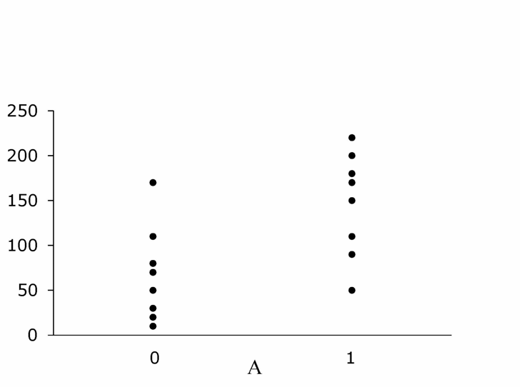
Figure 11.1은 16명의 개인 각각을 점으로 표시한 산점도이다. 점의 높이는 개인의 결과 의 값을 나타낸다. 처치받은 8명은 열 = 1을 따라 배치되고, 처치받지 않은 8명은 열 = 0을 따라 배치된다. 10장에서 정의했듯이, 모집단에서 수준 = 를 가진 개인들 사이에서 의 평균에 대한 추정치는 추정량—우리의 경우 표본 평균—을 특정 데이터셋에 적용한 수치적 결과이다. 처치군에서의 모평균에 대한 우리의 추정치는 = 1인 사람들의 표본 평균인 146.25이고, 비처치군에서의 모평균에 대한 우리의 추정치는 = 0인 사람들의 표본 평균인 67.50이다. 처치군과 비처치군의 교환가능성(exchangeability) 아래에서, 그 차이인 146.25 − 67.50은 목표 모집단에서 처치 가 결과 에 미치는 평균 인과 효과의 추정치로 해석될 것이다. 그러나 이 장은 Figure 11.1 인과 추론을 수행하는 것에 관한 장이 아니다. 우리의 현재 목표는 추정치에 인과적 해석이 부여되든 그렇지 않든 간에, 평균 E[ = ]와 같은 모집단 수량을 추정하고자 할 때 왜 모형이 필요한지에 대한 동기를 부여하는 것뿐이다.
이제 처치 가 4가지 가능한 값을 취할 수 있는 다항(polytomous) 변수라고 가정하자: 비처치( = 1), 저용량 처치( = 2), 중간용량 처치( = 3), 고용량 처치( = 4). 개인의 4분의 1이 각 처치 수준을 받았다. Figure 11.2는 연구 모집단 16명의 결과 값을 보여 준다. 처치 수준으로 정의된 4개 그룹의 모평균을 추정하기 위해 우리는 해당하는 표본 평균들을 계산한다(코드: Program 11.1). 그 추정치는 = 1, = 2, = 3, = 4에 대해 각각 70.0, 80.0, 117.5, 195.0이다.
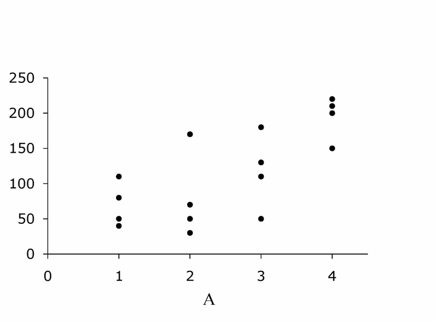
Figure 11.1과 11.2는 각각 2개 및 4개 범주를 가진 이산형(범주형) 처치 변수의 예를 보여 준다. 연구 대상자 수가 16명으로 고정되어 있으므로, 범주 수가 증가함에 따라 범주당 개인 수는 감소한다. 각 범주의 표본 평균은 여전히 해당하는 모평균의 정확히 비편향된 추정량이지만, 각 범주의 개인 수가 줄어들수록 표본 평균이 해당 모평균에 가까울 확률은 감소한다. 범주별 평균에 대한 95% 신뢰구간(10장 참조)의 길이는 Figure 11.1의 데이터보다 Figure 11.2의 데이터에서 더 길어질 것이다.
마지막으로, 처치 가 일일 처치 용량(단위: mg/day)을 나타내는 변수이며(Figure 11.2), 0부터 100 mg까지의 정수 값을 취한다고 가정하자. Figure 11.3은 16명의 개인 각각의 결과 값을 보여 준다. 처치의 가능한 값의 수가 연구 대상자 수보다 훨씬 많기 때문에, 어떤 개인도 받지 않은 의 값이 많이 존재한다. 예를 들어 연구 모집단에는 처치 용량 = 90인 개인이 없다. 이는 문제를 일으킨다: 목표 모집단에서 처치 수준 = 90인 개인들 사이의 결과 의 평균을 어떻게 추정할 수 있을까? Figure 11.1과 11.2의 데이터에 사용했던 추정량—처치별 표본 평균—은 Figure 11.3에서 대상자가 0명인 처치 수준에 대해서는 정의되지 않는다. 처치 가 진정한 연속형 변수라면, 표본 평균은 거의 모든 처치 수준에 대해 정의되지 않을 것이다. (연속형 변수 는 비가산 무한 개의 범주를 갖는 범주형 변수로 볼 수 있다, Figure 11.3.)
위의 설명은 의미 있는 추정치를 얻기 위해 데이터를 항상 “스스로 말하도록” 내버려둘 수는 없음을 보여 준다. 오히려 우리는 다음 절에서 설명하듯이 데이터에 모형을 보완해 주어야 할 때가 많다.
11.2 조건부 평균의 모수적 추정량(Parametric estimators of the conditional mean)
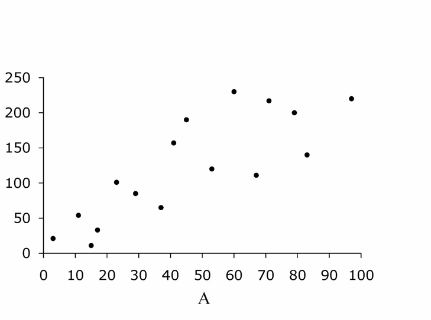
우리는 Figure 11.3의 데이터로부터 처치 수준 = 90인 개인들 사이에서 의 평균, 즉 E[ =90]을 추정하고자 한다. 처치 수준 = 90인 개인들에서의 의 평균이 = 80인 개인들에서의 평균과 = 100인 개인들에서의 평균 사이에 놓일 것으로 기대한다고 가정해 보자. 사실, 의 전체 범위에 걸쳐 의 처치별 모평균이 처치 값의 선형 함수임을 우리가 알고 있다고 가정하자. 더 정확히 말해, 의 평균 E[ ]가 = 0일 때의 어떤 값 0에서 시작하여 가 1단위 증가할 때마다 1 단위씩 증가(또는 감소)한다는 것을 안다고 하자. 또는 더 간결하게는,
\[E[ ] = 0 + 1 \]
더 일반적으로, 관계의 형태에 가해지는 제약을 함수 형태(functional form)라고 부르며, 일부 저자들은 용량-반응 곡선(dose-response curve)이라고도 부른다. 우리는 후자의 용어를 사용하지 않는데, 이는 처치 용량이 반응에 인과적으로 영향을 미친다는 것을 시사하며, 이는 교란이 존재할 때 거짓일 수 있기 때문이다. 이 방정식은 조건부 평균 함수 E[ ]의 형태에 대한 제약이다. 이 특정한 제약을 선형 평균 모형(linear mean model)이라고 부르며, 수량 0과 1을 모형의 모수(parameters)라고 부른다. 조건부 평균 함수를 유한한 수의 모수로 설명하는 모형을 모수적 조건부 평균 모형(parametric conditional mean models)이라고 부른다. 우리의 예에서 모수 0과 1은 세로축과 0에서 교차(절편)하고 기울기가 1인 직선을 정의한다. 즉, 이 모형은 절편과 기울기는 다를 수 있지만 모든 조건부 평균 함수가 직선임을 명시한다.
이제 우리는 Figure 11.3의 데이터와 모수적 평균 모형을 결합하여 0부터 100까지의 모든 값에 대해 E[ = ]를 추정할 준비가 되었다. 첫 번째 단계는 모수 0과 1의 추정치 ˆ 0과 ˆ 1을 얻는 것이다. 두 번째 단계는 이 추정치들을 사용하여 임의의 값 = 에 대해 의 평균을 추정하는 것이다. 예를 들어 처치 수준 = 90인 개인들 사이에서 의 평균을 추정하기 위해 식 E[ = 90] = ˆ 0 + 90 ˆ 1을 사용한다. 각 개인에 대한 추정치 E[ ]는 예측값(predicted value)이라고 부른다.
0과 1의 정확히 비편향된 추정량은 보통 최소제곱법(ordinary least squares)을 통해 얻을 수 있다. 이 방법에 대한 비전문적 설명은 다음과 같다. 절편 0과 기울기 1의 서로 다른 값들의 조합을 갖는 Figure 11.3에 대한 가능한 모든 후보 직선을 생각해 보자. 각 후보 직선에 대해 각 점에서 직선까지의 수직 거리(잔차, residual)를 계산하고, 이 16개의 잔차 각각을 제곱한 다음, 제곱된 16개의 잔차를 모두 합할 수 있다. 그 합이 가장 작은 직선이 “최소제곱(least squares)” 직선이며, 이 “최소제곱” 직선의 모수 값 ˆ 0과 ˆ 1이 Figure 11.4 “최소제곱” 추정치이다. ˆ 0과 ˆ 1의 값은 통계학 교과서에 설명되어 있듯이 선형대수학을 사용하여 쉽게 계산할 수 있다(코드: Program 11.2).
우리의 예에서 모수 추정치는 ˆ 0 = 24.55 및 ˆ 1 = 2.14이며, 이는
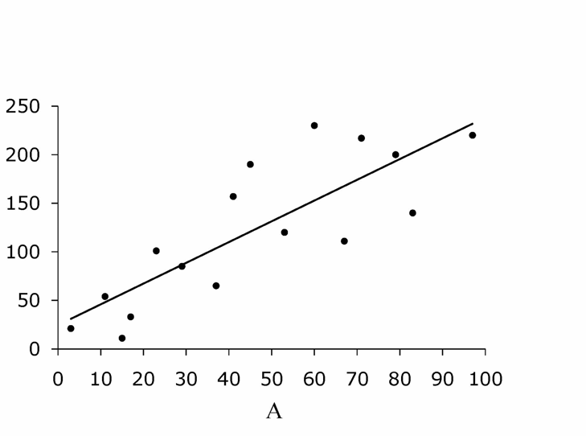
Figure 11.4에 표시된 직선을 정의한다. 잔차의 분산이 에 의존하지 않는다는 가정(등분산성, homoscedasticity) 하에서, 95% Wald 신뢰구간은 0에 대해 (−21.2, 70.3), 1에 대해 (1.28, 2.99), E[ = 90]에 대해 (172.1, 261.6)이다. 따라서 처치 수준 = 90인 개인들 사이에서 의 예측 평균은 E[ = 90] = 24.55 + 90 × 2.14 = 216.9이다. 보통 최소제곱 추정은 최적의 선을 찾기 위해 모든 데이터 포인트를 사용하므로, 집단 = 에서의 의 평균, 즉 E[ = ]는 처치 의 값이 와 같지 않은 개인들로부터 정보를 빌려와서 추정된다.
그렇다면 모형이란 무엇인가? 모형은 데이터의 결합 분포에 대한 사전 제약(a priori restriction)에 의해 정의된다. 우리의 선형 조건부 평균 모형은 조건부 평균 함수 E[ ]가 직선이라고 말하며, 이는 그 형태를 제한한다. 예를 들어 이 모형은 = 90일 때 의 평균이 = 80일 때 의 평균과 = 100일 때 의 평균 사이에 놓이도록 제한한다. 이 제약은 모수 0과 1에 의해 부호화(encode)된다. 모수적 조건부 평균 모형은 이러한 사전 제약을 통해, 데이터에 충분한 정보가 부족한 점을 보상하기 위해 정보를 추가하는 것이다.
모수적 조건부 평균 모형에 기반한 모수적 추정량(parametric estimators)은 다른 방법으로는 추정할 수 없는 수량, 예컨대 연구 모집단에 처치 수준 = 90인 개인이 존재하지 않을 때 목표 모집단에서 = 90인 개인들 사이의 의 평균을 추정할 수 있게 해 준다. 그러나 이것이 공짜 점심(free lunch)은 아니다. 모수적 모형을 사용할 때 추론은 모형에 부호화된 제약이 올바를 때, 즉 모형이 올바르게 명시(correctly specified)되었을 때에만 정확하다. 따라서 이 책의 나머지 부분에서 상당한 비중을 할애하는 모형 기반 인과 추론은 모형 오명시가 (거의) 없다는 조건에 의존한다. 모수적 모형이 완벽하게 명시되는 경우는 거의 없기 때문에, 어느 정도의 모형 오명시(model misspecification)는 거의 항상 예상된다. 이는 다음 절에서 설명할 비모수적 추정량을 사용함으로써 적어도 부분적으로는 교정될 수 있다.
11.3 조건부 평균의 비모수적 추정량(Nonparametric estimators of the conditional mean)
Figure 11.1의 데이터로 돌아가 보자. 처치 는 이분형이며 우리는 처치군에서의 의 평균 E[ =1]과 비처치군에서의 평균 E[ =0]을 일치하게 추정하고자 한다. 우리가 모형에 너무 매료된 나머지 이 두 수량을 추정하기 위해 모형을 사용하기로 결정했다고 하자. 다시 선형 모형을 제안한다:
\[E[ ] = 0 + 1 \]
여기서 \(E[ =0] = 0 + 0 × 1 = 0\) 이고 \(E[ =1] = 0 + 1 × 1 = 0 + 1\) 이다. 우리는 최소제곱법을 사용하여 모수 0과 1의 추정치를 구한다(코드: Program 11.2). 이 추정치는 ˆ 0 = 67.5 및 ˆ 1 = 78.75이다. 따라서 우리는 E[ = 0] = 67.5 및 E[ = 1] = 146.25로 추정한다. 의 평균에 대한 우리의 모형 기반 추정치가 11.1절에서 계산한 표본 평균과 동일하다는 점에 주목하라. 이는 우연이 아니라 당연한 결과이다.
이 책에서 우리는 “모형”을 자연의 가능한 상태에 대한 사전 수학적 제약(a priori mathematical restriction)으로 정의한다(Robins, Greenland 1986). 제1부의 제목이 “모형 없는 인과 추론”이었던 이유는 오직 포화 모형만을 다루었기 때문이다. 이분형 처치 를 갖는 모형 E[ ] = 0 + 1 를 다시 살펴보자. 모형을 E[ =1] = E[ =0] + 1로 고쳐 쓰면, 모형은 단순히 처치군에서의 평균 E[ =1]이 비처치군에서의 평균 E[ =0]에 어떤 양 1을 더한 것과 같다고 진술하고 있을 뿐임을 알 수 있다. 여기서 1은 음수일 수도, 양수일 수도, 0일 수도 있다. 그러나 이 진술은 당연히 항상 참이다! 모형은 E[ = 1]과 E[ =0]의 값에 대해 어떠한 제약도 가하지 않는다. 따라서 이분형 처치 를 갖는 E[ =] = 0 + 1 는 표본 평균과 마찬가지로 데이터가 스스로 말하도록 내버려두기 때문에 모형이 아니다. 데이터의 분포에 제약을 가하지 않는 “모형”을 포화 모형(saturated models)이라고 부른다. 포화 모형은 모형에 대한 우리의 정의에 들어맞지 않더라도 형식적으로는 모형처럼 보이기 때문에 보통 모형이라고도 불린다.
일반적으로 조건부 평균 모형의 모수 수가 모집단의 미지의 조건부 평균 수와 같을 때마다 모형은 포화된다. 예를 들어 선형 모형 E[ ] = 0 + 1 는 2개의 모수를 가지며, 가 이분형일 때 2개의 미지의 조건부 평균, 즉 평균 E[ = 1]과 E[ = 0]이 존재한다.
세부사항 11.1 피셔 일치성(Fisher consistency). 본문에서 비모수적 추정량에 대한 우리의 정의는 통계학에서 피셔 일치 추정량(Fisher consistent estimator, Fisher 1922)으로 알려진 것과 일치한다. 즉, 표본이 아니라 전체 모집단을 사용하여 계산했을 때 모수의 참값을 산출하는 모집단 수량의 추정량이다. 정의상 피셔 일치 추정량에는 어떠한 모형 제약도 없지만, 본문에서 논의했듯이 많은 모집단 수량에 대해 피셔 일치 추정치가 존재하지 않을 수 있다. 엄밀히 말해 피셔 일치 추정량은 포화 모형 하에서 모집단 수량의 비모수적 최대우도 추정량(nonparametric maximum likelihood estimators)이다. 통계학 문헌에서 비모수적 추정량이라는 용어는 때때로 피셔 일치하지는 않지만 커널 회귀 모형(kernel regression models)처럼 매우 약한 제약만을 부과하는 추정량을 가리키는 데 사용되기도 한다. 자세한 내용은 기술적 사항 11.1을 참조하라.
포화 모형은 등호 양변에 같은 수의 미지수를 갖는다. 두 모수의 값이 모형에 의해 제약되지 않으므로 평균들의 값 또한 제약되지 않는다. 대조적으로 가 0부터 100까지의 값을 취할 수 있는 Figure 11.3의 데이터를 생각해 보자. 선형 모형 E[ ] = 0 + 1 는 2개의 모수를 갖지만 101개의 수량, 즉 E[ = 0], E[ = 1], …, E[ = 100]을 추정한다. 이 2개의 모수로 101개의 수량을 비편향되게 추정할 수 있는 유일한 희망은 101개의 모든 평균 E[ = ]가 우연히 일직선 위에 놓이는 행운이 따르는 것뿐이다. 모형이 소수의 모수만을 가지면서도 많은 모집단 수량을 추정하는 데 사용될 때, 우리는 그 모형이 간명하다(parsimonious)고 말한다.
여기서 우리는 조건부 평균 함수의 비모수적 추정량을 조건부 평균 함수에 대한 어떠한 사전 제약도 없이 데이터로부터 추정치를 산출하는 추정량으로 정의한다(더 엄밀한 정의는 세부사항 11.1 참조). 이분형 처치에 대한 모평균 E[ = ]의 비모수적 추정량의 예로는 그 경험적(empirical) 버전인 표본 평균, 또는 동등하게는 이 절에서 설명한 포화 모형이 있다. 인과 추론에서 식별가능성 가정(identifiability assumptions)은 데이터가 무한히 많더라도 해야만 하는 가정이다. 모형화 가정(modeling assumptions)은 정확히 데이터가 무한하지 않기 때문에 해야만 하는 가정이다. 가 100개의 수준을 갖는 이산형 변수이고 표본에 = 90인 개인이 없는 경우, E[ = 90]의 비모수적 추정량은 존재하지 않는다. 이 책의 제1부에서 설명한 인과 추론의 모든 방법들—표준화, 역확률 가중(IP weighting), 층화(stratification), 매칭(matching)—은 효과 추정치의 값에 어떠한 사전 제약도 가하지 않았기 때문에 포화 모형 하에서 모집단 수량의 비모수적 추정량에 기반을 두었다. 대조적으로 이 책의 제2부에서 설명하는 인과 추론 방법의 대부분은 데이터 분포의 특정 부분에 대한 모수적 추정량인 추정량에 의존한다. 데이터가 스스로 말할 수 없을 때(흔히 그렇듯이), 모수적 추정과 정보를 빌려오는 다른 접근법들이 우리의 유일한 희망이다.
11.4 평활화(Smoothing)
Figure 11.3의 데이터와 선형 모형 E[ ] = 0 + 1 를 다시 생각해 보자. 모수 1은 처치 용량 1단위당 평균 결과의 차이이다. 1은 단일한 수치이므로, 이 모형은 처치 1단위당 평균 결과 의 차이가 의 전체 범위에 걸쳐 일정해야 한다고 명시한다. 즉, 이 모형은 조건부 평균 결과가 처치 용량 의 함수로서 직선을 따르도록 요구한다. Figure 11.4는 가장 잘 적합된 직선을 보여 준다.
그러나 처치 저용량에서는 1단위 변화에 따른 평균 결과의 차이가 더 크고, 고용량에서는 1단위 변화에 따른 차이가 더 작은 상황을 상상할 수 있다.
처치 용량이 특정 수준에 도달하면 더 높은 용량이 점점 더 작은 효과를 갖는 경우가 그러할 것이다. 이러한 주의: 흔히 “선형(linear)”이라는 용어는 두 가지 다른 의미로 사용된다. 모형이 모수들과 변수들의 함수의 선형 결합으로 표현될 때—비록 변수들의 함수가 공변량의 비선형 함수(예: 고차 거듭제곱이나 로그)라 하더라도—선형 모형이라고 부른다. 시나리오 아래에서는 모형 E[ ] = 0 + 1 가 올바르지 않다. 그러나 선형 모형은 더 유연하게 만들어질 수 있다.
예를 들어 Figure 11.3의 데이터에 모형 E[ ] = 0 + 1 + 2 ²(여기서 ² = × 는 의 제곱)을 | 적합한다고 가정해 보자. 조건부 평균이 선형 결합으로 표현되므로, 즉 각 공변량(와 ²)과 그에 결합된 계수(모수 1과 2)의 곱의 합에 절편( 0)을 더한 것으로 표현되므로 이는 여전히 선형 모형이라고 불린다. 그러나 2가 0이 아닐 때마다 모수 0, 1, 2는 이제 직선이 아니라 곡선—포물선(parabola)—을 정의한다. 우리는 1을 1차 항 에 대한 모수로, 2를 2차 항 ²에 대한 모수로 부른다.
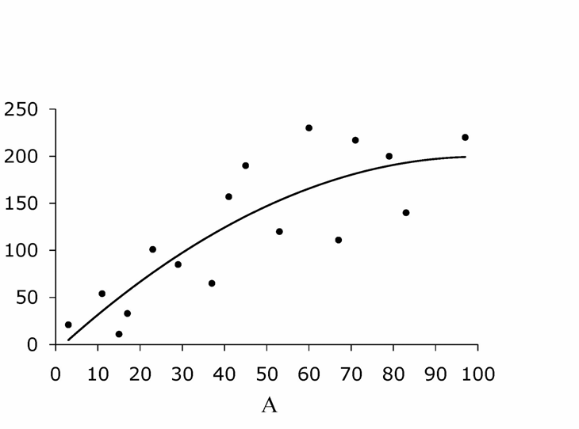
Figure 11.3의 데이터에 보통 최소제곱 추정을 적용하여 3-모수 선형 모형 E[ ] = 0 + 1 + 2 ² 하에서의 곡선을 구할 수 있다. 추정된 곡선은 Figure 11.5에 나와 있다(코드: Program 11.3). 모수 추정치는 ˆ 0 = −7.41, ˆ 1 = 4.11, ˆ 2 = −0.02이다. 등분산성 가정 하에서, E[ = 90]에 대한 95% Wald 신뢰구간은 (142.8, 251.5)이다. 처치 수준 = 90인 개인들 사이에서 의 예측 평균은 식 E[ =90] = ˆ 0 + 90 ˆ 1 + 90² ˆ 2 = 197.1로부터 얻어진다.
우리는 3차 항( 3 ³), 4차 항( 4 ⁴)…을 거쳐 15차 항( 15 ¹⁵)에 도달할 때까지 모수를 계속 추가할 수도 있다. 그 시점에 우리 모형의 모수 수는 데이터 포인트(개인)의 수와 같아진다. 모수의 수가 증가함에 따라 곡선의 형태는 변할 것이다. 일반적으로 모형에 모수가 많을수록 더 많은 변곡점(inflection points)이 나타난다. 즉, 모수 수가 증가함에 따라 곡선은 일반적으로 더 “구불구불(wiggly)”해지거나 덜 매끄러워진다(less smooth). 2개의 모수를 가진 선형 모형—직선—이 가장 매끄러운 모형이다. 데이터 포인트 수만큼의 모수를 가진 선형 모형은 데이터 포인트 수만큼 많은 변곡점을 가질 수 있으므로 가장 덜 매끄러운 모형이다. 사실 그러한 모형은 데이터를 보간(interpolate)한다. 즉 표본의 각 데이터 포인트가 추정된 조건부 평균 함수 위에 놓이게 된다.
흔히 모형화는 잡음이 섞인 데이터를 다소 매끄러운 곡선으로 변환하는 절차로 볼 수 있다. 이러한 평활화(smoothing)는 모형이 특정 공변량 값의 조합에서 결과 값을 예측하기 위해 많은 데이터 포인트로부터 정보를 빌려오기 때문에 일어난다. 평활화는 E[ = ]가 가 와 같지 않은 개인들로부터 정보를 빌려와 추정되는 것에서 비롯된다. 모든 모수적 추정량은 어느 정도의 평활화를 포함한다.
평활화의 정도는 개인들 사이에서 정보를 얼마나 많이 빌려오는지에 달려 있다. 2-모수 모형 E[ ] = 0 + 1 는 최소제곱 직선을 찾기 위해 연구 모집단의 모든 개인으로부터 정보를 빌려와 E[ =90]을 추정한다. 개인 수만큼의 모수를 가진 모형은 데이터에 나타나는 값에서 E[ ]를 추정하기 위해 어떠한 정보도 빌려오지 않지만, 데이터에 나타나지 않는 Figure 11.5 값에 대해서는 (보간을 통해 | ) 정보를 빌려온다.
중간 정도의 평활화는 중간 개수의 모수를 사용하거나, 더 일반적으로는 추정에 기여하는 개인의 수를 제한함으로써 달성될 수 있다. 우리는 연속형 결과에 대한 모형을 예로 들었다. 동일한 추론이 로지스틱 모형과 같은 이분형 결과에 대한 모형에도 적용된다(기술적 사항 11.1 참조). 예를 들어 E[ =90]을 추정하기 위해 처치 용량이 80과 100 사이인 개인들로 제한된 2-모수 모형 E[ ] = 0 + 1 를 | 적합하기로 결정할 수 있다. 즉, 우리는 = 90의 10단위 구간(window) 내의 개인들로부터만 정보를 빌려오는 것이다. = 90 주변의 구간이 넓을수록 더 많은 평활화가 달성될 것이다.
우리의 단순화된 예들에서 모든 모형은 곡선이 2차원 책 페이지에 표현될 수 있도록 단일 공변량만을 포함했다(에 대한 단일 모수, 또는 와 ²에 대한 2개 모수).
세부사항 11.2 모형 차원성과 빈도주의 및 베이즈 구간 사이의 관계(Model dimensionality and the relation between frequentist and Bayesian intervals). 빈도주의(frequentist) 통계 추론에서 확률은 빈도(frequency)로 정의된다. 베이즈(Bayesian) 추론에서 확률은 신념의 정도(degree-of-belief)—빈도로서의 확률과는 매우 다른 개념—로 정의된다. 10장에서는 빈도주의 통계 추론에서 사용되는 신뢰구간(confidence intervals)을 설명했다. 베이즈 통계 추론은 신용구간(credible intervals)을 사용하는데, 이는 더 자연스러운 해석을 갖는다: 베이즈 95% 신용구간은 관측된 데이터가 주어졌을 때 “추정 대상(estimand)이 그 구간 안에 있을 확률이 95%이다”라는 것을 뜻한다. 그러나 연구자의 신념의 정도를 명시해야 한다는 요구 조건 등의 이유로 베이즈 추론은 빈도주의 추론보다 덜 일반적으로 사용된다.
흥미롭게도 표본 크기가 큰 단순하고 저차원인 모수적 모형에서는 95% 베이즈 신용구간이 95% 빈도주의 신뢰구간이기도 하지만, 고차원 또는 비모수적 모형에서는 베이즈 95% 신용구간이 추정 대상을 95%보다 훨씬 적은 빈도로 포섭할 수 있기 때문에 95% 신뢰구간이 되지 못할 수 있다. 이러한 결과의 근본적인 이유는 베이즈 추론이 모든 미지의 모수에 대해 사전 분포(prior distribution)를 명시할 것을 요구하기 때문이다. 저차원 모수적 모형에서는 데이터에 담긴 정보가 합리적인 사전 분포에 담긴 정보를 압도(swamp)한다. 결과적으로 추론은 선택된 특정 사전 분포에 상대적으로 둔감하다. 그러나 고차원 모형에서는 더 이상 그렇지 않다. 따라서 데이터를 생성한 진짜 모수 값이 선택된 사전 분포 하에서 일어날 가능성이 낮다면, 베이즈 신용구간의 중심은 참된 모수에서 멀어져 사전 분포 하에서 가장 높은 확률이 부여된 모수 값을 향해 끌려가게 될 것이다.
실제 응용에서 모형은 종종 서로 다른 많은 공변량을 포함하므로 곡선은 실제로는 초차원 곡면(hyperdimensional surfaces)이다. 문제의 차원성과 무관하게 평활화의 개념은 동일하게 유지된다. 즉, 모형의 모수가 적을수록 예측(반응) 곡면은 더 매끄러워진다.
11.5 편향-분산 트레이드오프(The bias-variance trade-off)
이전 절들에서 우리는 목표 모집단에서 처치 용량 = 90을 받는 사람들 사이의 평균 결과 , 즉 E[ = 90]을 추정하기 위해 Figure 11.3의 16명의 개인을 사용했다. 연구 모집단에서 = 90을 받은 사람이 아무도 없었기 때문에, 우리는 데이터를 스스로 말하도록 내버려둘 수 없었다. 그래서 데이터를 선형 모형과 결합했다. 추정치 E[ =90]은 모형에 따라 달랐다. 2-모수 모형 E[ ] = 0 + 1 하에서 추정치는 216.9(95% 신뢰구간: 172.1, 261.6)였다. 3-모수 모형 E[ ] = 0 + 1 + 2 ² 하에서 추정치는 197.1(95% 신뢰구간: 142.8, 251.5)이었다. 우리는 두 가지 다른 모수적 모형을 사용하여 두 개의 서로 다른 추정치를 얻었다. 어느 쪽이 더 나은가? 216.9와 197.1 중 어느 쪽이 목표 모집단의 평균에 더 가까운가? 관계가 진정으로 곡선이라면 2-모수 모형은 직선을 가정하기 때문에 이 모형으로부터의 추정치는 편향될 것이다. 반면에 관계가 진정으로 직선이라면 두 모형으로부터의 추정치 모두 타당할 것이다. 관계가 직선을 따르든(이 경우 2 = 0) 포물선 곡선을 따르든(이 경우 2 ≠ 0) 3-모수 모형 E[ ] = 0 + 1 + 2 ²가 올바르게 명시되기 때문이다. 한 가지 안전한 전략은 2-모수 모형 E[ ] = 0 + 1 대신 3-모수 모형 E[ ] = 0 + 1 + 2 ²를 사용하는 것이다. 3-모수 모형은 직선과 포물선 곡선 모두에서 올바르게 명시되므로 편향될 가능성이 더 낮다. 일반적으로 모형의 모수 수가 많을수록
모형이 부과하는 제약은 적어지며, 모형이 덜 매끄러울수록
더 큰 분산, 즉 추정치 주변의 더 넓은 95% 신뢰구간을 초래하기도 한다. 예를 들어 E[ = 90] 주변의 추정된 95% 신뢰구간은 2-모수 모형을 사용했을 때보다 3-모수 모형을 사용했을 때 훨씬 더 넓었다. 그러나 2-모수 모형에 기반한 추정치 E[ =90]이 편향되어 있을 때, 표준(명목) 95% 신뢰구간은 보정(calibrated)되지 않는다. 즉, 참된 모수 E[ = 90]을
| 세부사항 11.2는 빈도주의 및 베이즈 구간에 대한 모형 차원성의 영향을 논의한다. | 95%의 빈도로 포섭하지 못한다. |
이 편향-분산 트레이드오프(bias-variance trade-off)는 많은 데이터 분석의 핵심에 자리 잡고 있다. 모형을 사용하는 연구자들은 편향에 대한 약간의 보호—가령 모형에 더 많은 모수를 추가함으로써—가 분산 측면에서의 비용을 치를 만한 가치가 있는지 결정해야 한다. 이러한 결정을 돕기 위한 공식적인 절차들이 존재하기는 하지만, 실제로는 많은 연구자들이 전통, 모수의 해석 가능성, 소프트웨어 가용성과 같은 기준에 기반하여 어떤 모형을 사용할지 결정한다.
이 책에서 우리는 대개 모수적 모형들이 올바르게 명시되어 있다고 가정할 것이다. 이는 비현실적인 가정이지만, 인과 분석에 특유한 문제들에 집중할 수 있게 해 준다. 모형 오명시는 추정치에 인과적 해석이 부여되든 그렇지 않든 간에 모든 종류의 데이터 분석에서 발생할 수 있는 문제이다. 실제로 신중한 연구자라면 항상 자신의 모형의 타당성에 의문을 품을 것이며, 모형
기술적 사항 11.1 흔히 사용되는 모형의 분류 체계(A taxonomy of commonly used models). 본문에서는 모든 명의 개인에 대해 0 = 1인 공변량 벡터 = ( 0, 1, … )에 대해 \(E[ ] = \equiv \sum_{=0}^ \) 형태의 선형 조건부 평균 모형을 설명한다. 이 모형들은 두 가지 구성 요소를 갖는 더 넓은 부류의 조건부 평균 모형의 부분집합이다: 선형 함수 형태(또는 선형 예측자) \(\sum_{=0}^ \)와, \(\{E[ ]\} = \sum_{=0}^ \)가 되도록 하는 연결 함수 \(\{\cdot\}\)이다.
본문에서 설명한 선형 조건부 평균 모형은 항등 연결 함수(identity link function)를 사용한다. 엄격하게 양의 값을 갖는 결과(예: 계수 데이터, 발생률의 분자)에 대한 조건부 평균 모형은 모든 예측값이 0보다 커지도록 보장하기 위해 로그 연결 함수(log link function)를 사용하는 경우가 많다. 즉 \(\log\{E[ ]\} = \sum_{=0}^ \)이므로 \(E[ ] = \exp(\sum_{=0}^ )\)가 된다. 이분형 결과(즉 0과 1의 값만을 취하는 결과)에 대한 조건부 평균 모형은 종종 로짓 연결 함수(logit link)를 사용한다. 즉 \(\log\left(\frac{E[ \mid \]}{1 - E[ \mid \]}\right) = \sum_{=0}^ \)이므로 \(E[ ] = \text{expit}(\sum_{=0}^ )\)이다. 이 연결 함수는 모든 예측값이 0보다 크고 1보다 작도록 보장한다. 로짓 함수를 사용하는 조건부 평균 모형을 로지스틱 회귀 모형(logistic regression models)이라 부르며, 이 책에서 널리 사용된다. 이러한 연결 함수들(정준 연결 함수(canonical links)라 불림)에 대해 우리는 항등 연결의 경우 정규 모형, 로그 연결의 경우 포아송 모형, 로짓 연결의 경우 로지스틱 회귀 모형 하에서 최대우도법(maximum likelihood)으로 를 추정할 수 있다. 이 추정치들은 E[ ]에 대한 조건부 평균 모형이 올바른 한 에 대해 일치한다. 반복 측정을 다루기 위해 흔히 사용되는 일반화 추정 방정식(GEE) 모형은
| 조건부 평균 모형의 또 다른 예이다(Liang and Zeger, 1986). |
조건부 평균 모형은 E[ ]에 대한 모수적 형태만을 명시할 뿐, | 의 분포나 의 주변 분포를 달리 제약하지 않는다. 따라서 또는 가 연속형일 때 모수적 조건부 평균 모형은 데이터의 결합 분포 (, )에 대한 준모수적 모형(semiparametric model)이 된다. 분포의 일부는 모수적으로 모형화되지만 다른 부분은 제약 없이 남겨지기 때문이다. 결합 분포의 모든 제약되지 않은 구성 요소들의 집합을 유한한 수의 모수로 나타낼 수 없기 때문에 이 모형은 준모수적이다.
조건부 평균 모형 자체도 E[ ]가 모수적 형태를 취한다는 가정을 완화함으로써 일반화될 수 있다. 예를 들어 커널 회귀 모형(kernel regression model)은 E[ ]에 특정한 함수 형태를 부과하지 않고, 임의의 에 대해 E[ = ]를 \(\sum_{=1}^ _( - \_)_ / \sum_{=1}^ _( - \_)\)로 추정한다. 여기서 ()는 커널 함수(kernel function)로 알려진 양의 함수로서, = 0에서 최댓값을 갖고 의 아래첨자 모수 에 의존하는 속도로 가 커짐에 따라 0으로 감소한다. 또 다른 예로, 일반화 가법 모형(generalized additive models, GAM)은 조건부 평균 모형의 선형 결합 \(\sum_{=0}^ \)를 매끄러운 함수들의 합 \(\sum_{=0}^ (\ )\)로 대체한다. 이 모형은 가령 커널 회귀를 통해 반복 단계 에서 추정된 (·)를 사용하는 역적합 알고리즘(backfitting algorithm)으로 추정될 수 있다(Hastie and Tibshirani 1990).
본문에서 우리는 포물선과 같이 E[ = ]에 대한 사전 함수 형태를 명시하는 모수적 모형을 통한 평활화를 논의한다. E[ = ]를 추정할 때 모형은 에서 멀리 떨어진 의 값들로부터 정보를 빌려올 수 있다. 반면에 커널 회귀 모형은 사전 함수 형태를 명시하지 않으며, E[ = ]를 추정할 때 근처의 값들로부터만 정보를 빌려온다. 커널 회귀 모형은 “비모수적” 회귀 모형의 한 예이다. 여기서 “비모수적”이라는 용어의 사용은 우리의 이전 사용법과 다르다. 우리의 E[ = ]의 비모수적 추정량은 가 정확히 와 일치하는 개인들만을 사용했으며, 심지어 가까운 이웃들로부터도 정보를 빌려오지 않았다. 여기서 E[ = ]의 “비모수적” 추정량은 에 가까운 값을 가진 개인들을 사용한다. 얼마나 가까운지는
| 대역폭(bandwidth) 이라 불리는 평활화 모수에 의해 조절된다. |
제12장 역확률 가중과 주변 구조 모형(IP Weighting and Marginal Structural Models)
제2부는 “금연이 체중 증가에 미치는 평균 인과 효과는 무엇인가?”라는 인과적 질문을 중심으로 구성되어 있다. 이번 장에서는 관찰 데이터(observational data)로부터 이 효과를 추정하기 위해 역확률 가중(IP weighting, inverse probability weighting)을 사용하는 방법을 설명한다. 비록 IP 가중은 2장에서 소개되었지만, 거기서는 비모수적 방법(nonparametric method)으로만 설명했다. 이제 우리는 모형(model)을 IP 가중과 함께 사용하는 방법을 설명할 텐데, 이는 추가적인 가정 아래에서 수많은 공변량(covariates)과 비이분형 처치(nondichotomous treatments)가 관련된 고차원 문제(high-dimensional problems)를 다룰 수 있게 해줄 것이다.
금연이 체중 증가에 미치는 효과를 추정하기 위해 우리는 NHEFS의 실제 데이터를 사용할 것이다. 이 약어는 (긴 이름을 들을 준비가 되셨는가?) 제1차 국민건강영양조사 역학 추적조사(National Health and Nutrition Examination Survey Data I Epidemiologic Follow-up Study)를 뜻한다. NHEFS는 미국 국립보건통계센터(National Center for Health Statistics)와 국립노화연구소(National Institute on Aging)가 미국 공중보건국(United States Public Health Service)의 다른 기관들과 협력하여 공동으로 시작한 연구이다. 공개된 데이터셋 및 문서와 함께 NHEFS에 대한 자세한 설명은 wwwn.cdc.gov/nchs/nhanes/nhefs/ 에서 찾아볼 수 있다. 이번 장과 앞으로의 장들에서 우리는 이 책의 웹사이트에서 이용할 수 있는 NHEFS 데이터의 하위집합을 사용할 것이다. 독자 여러분이 우리의 분석을 더욱 개선하고 발전시켜 보기를 권장한다.
12.1 인과적 질문(The causal question)
우리의 목표는 금연(처치) 가 체중 증가(결과) 에 미치는 평균 인과 효과(average causal effect)를 추정하는 것이다. 이를 위해 우리는 NHEFS의 일부로서 기저 방문(baseline visit)과 약 10년 후의 추적 방문(follow-up visit)을 마친 25~74세의 담배 흡연자 1,566명의 데이터를 사용할 것이다. 개인들은 추적 방문 전에 담배를 끊었다고 보고한 경우 처치군 = 1로 분류되었고, 그렇지 않은 경우 비처치군 = 0으로 분류되었다. 각 개인의 체중 증가 는 추적 방문 시의 체중에서 기저 방문 시의 체중을 뺀 값(kg 단위)으로 측정되었다. 대부분의 사람들이 체중이 늘었지만, 금연한 사람들의 체중이 평균적으로 더 많이 늘었다. 평균 체중 증가는 금연자들에서 E[ | =1] = 4.5 kg이었고, 비금연자들에서 E[ | =0] = 2.0 kg이었다. 따라서 차이 E[ | = 1] − E[ | = 0]는 2.5로 추정되었으며, 95% 신뢰구간은 1.7에서 3.4까지였다. 이 차이가 0이라는 무가설(null hypothesis)에 대한 통상적인 통계 검정 결과 P-value < 0.001이 얻어졌다.
우리는 기저 시점(1971-75년)과 추적 방문(1982년) 시점에 성별, 연령, 인종, 체중, 신장, 교육 수준, 음주 여부, 흡연 강도가 알려져 있고 기저 시점의 병력 설문지에 응답한 개인들로 분석을 제한했다. 세부사항 12.1을 참고하라.
| 표 12.1 (Table 12.1) 기저 특성 평균(Mean baseline characteristics) |
= 1 | = 0 |
|---|---|---|
| 연령, 세 (Age, years) | 46.2 | 42.8 |
| 남성, % (Men, %) | 54.6 | 46.6 |
| 백인, % (White, %) | 91.1 | 85.4 |
| 대졸, % (University, %) | 15.4 | 9.9 |
| 체중, kg (Weight, kg) | 72.4 | 70.3 |
| 개비/일 (Cigarettes/day) | 18.6 | 21.2 |
| 흡연 연수 (Years smoking) | 26.0 | 24.1 |
| 운동 적음, % (Little exercise, %) | 40.7 | 37.9 |
| 비활동적 생활, % (Inactive life, %) | 11.2 | 8.9 |
우리는 E[=1]을 모집단의 모든 개인이 추적 방문 전에 담배를 끊었을 경우 관측되었을 평균 체중 증가로 정의하고, E[=0]을 모집단의 모든 개인이 담배를 끊지 않았을 경우 관측되었을 평균 체중 증가로 정의한다. 우리는 덧셈 척도(additive scale)에서의 평균 인과 효과를 E[=1] − E[=0], 즉 모든 사람이 처치를 받았을 때 관측되었을 평균 체중과 처치를 받지 않았을 때 관측되었을 평균 체중의 차이로 정의한다. 이것이 바로 이번 장과 다음 장들에서 우리가 주로 다룰 인과 효과이다.
이 절의 첫 단락에서 우리가 추정한 연관 차이(associational difference) E[ | =1] − E[ | =0]는 일반적으로 인과적 차이(causal difference) E[=1] − E[=0]와 다르다. 금연자와 비금연자가 체중 증가에 영향을 미치는 특성 면에서 서로 다르다면, 전자(연관 차이)는 일반적으로 인과적 해석을 갖지 못할 것이다. 예를 들어, 금연자는 비금연자보다 평균 4세 더 많았고(금연자는 비금연자에 비해 50세 이상일 가능성이 44% 더 높았다), 나이 든 사람들은 담배를 끊었든 끊지 않았든 젊은 사람들보다 체중이 덜 늘었다.
세부사항 7.3은 대리 교란 요인(surrogate confounders)을 정의했다.
코드: 프로그램 12.1(Program 12.1)은 이 절에 제시된 기술통계량을 계산한다.
우리는 연령이 가 에 미치는 효과의 (대리) 교란 요인(surrogate confounder)이며 우리의 분석이 연령을 보정(adjust)해야 한다고 말한다. 보정되지 않은 추정치 2.5는 참된 인과 효과 E[=1] − E[=0]를 과소평가할 수 있다. 표 12.1에 나타난 바와 같이, 금연자와 비금연자는 성별, 인종, 교육 수준, 기저 체중, 흡연 강도와 같은 다른 변수들의 분포에서도 차이를 보였다. 만약 이러한 변수들이 교란 요인이라면, 이들 역시 분석에서 보정되어야 한다. 18장에서는 교란 요인 선택 전략을 논의한다. 여기서는 기저 시점에 측정된 다음 9개 변수가 교란을 보정하기에 충분하다고 가정한다: 성별(0: 남성, 1: 여성), 연령(세 단위), 인종(0: 백인, 1: 기타), 교육 수준(5개 범주), 흡연 강도 및 기간(일일 흡연 개비 수 및 흡연 연수), 일상생활에서의 신체 활동(3개 범주), 여가 운동(3개 범주), 체중(kg 단위). 즉, 은 측정된 9개 공변량의 벡터를 나타낸다. 다음 절에서는 이 공변량들을 보정하기 위해 IP 가중을 사용한다.
세부사항 12.1 (Fine Point 12.1) 나쁜 선례 남기기(Setting a bad example). 우리의 금연 예시는 편리하다: 깊은 전문 지식을 필요로 하지 않으며 데이터를 공개적으로 이용할 수 있기 때문이다. 이러한 편의성에 대해 우리가 치러야 할 한 가지 대가는 잠재적인 선택 편향(selection bias)이다. 우리는 (i) 1971-75년 기저 시점에 흡연자였고, (ii) 1982년 설문조사에서 담배를 끊었다고 보고한 개인들을 처치군 = 1로 분류했다. 조건 (ii)는 우리 연구에 포함된 개인들이 기저 시점과 1982년 사이에 사망하지 않았고 달리 추적 소실되지 않았음을 함의한다(그렇지 않았다면 설문조사에 응답할 수 없었을 것이다). 즉, 우리는 처치의 시작(금연) 이후에 발생한 사건인 ’1982년 설문조사 응답’을 조건으로 하여 연구에 개인들을 선택한 것이다. 만약 처치가 연구로의 선택 확률에 영향을 미친다면, 8장에서 설명한 것과 같은 선택 편향이 발생할 수 있다. (개인마다 서로 다른 시점에 담배를 끊기 때문에, 는 실제로는 시간에 따라 변화하는 처치(time-varying treatment)이지만, 우리는 2부 전체에서 이를 무시할 것이다. 시간에 따라 변화하는 처치는 3부에서 논의된다.)
금연에 관한 무작위 실험(randomized experiment)이라면 이러한 문제가 없을 것이다. 각 개인은 기저 시점에 금연 또는 비금연 중 하나로 배정될 것이므로, 개인이 1982년 방문에 참여하지 못하더라도 그의 처치군은 알려져 있을 것이다. 12.6절에서는 결과의 중도절단(censoring)이나 결측 데이터로 인한 잠재적 선택 편향을 다루는 방법을 설명하지만(이는 관찰 연구와 무작위 실험 모두에서 발생할 수 있다), 이 세부사항에서 설명하는 상황은 다르다. 결측 데이터가 처치 자체에 관한 것이기 때문이다. 이러한 선택 편향은 Hernán et al.(2008, 부록 3)에서 수행된 것처럼 민감도 분석(sensitivity analysis)을 통해 다룰 수 있다. 이 예시를 선택함으로써 우리는 관찰 데이터의 발표된 분석들에서 흔히 볼 수 있는 보편적인 문제, 즉 추적 시작 시점에서의 처치 배정과 적격성의 불일치(misalignment of treatment assignment and eligibility at the start of follow-up, Hernán et al. 2016)를 우리 자신의 분석 속에서 설명할 수 있게 된다. 비록 우리는 분석을 단순하게 유지하기 위해 이 문제를 무시하기로 결정했지만, 교육적 편의가 실생활에서 이러한 편향을 다루지 않고 회피하기 위한 좋은 구실이 될 수는 없을 것이다.
12.2 모형화를 통한 IP 가중치 추정(Estimating IP weights via modeling)
IP 가중은 공변량 에서 처치 로 향하는 화살표가 제거된 의사 모집단(pseudo-population)을 생성한다. 보다 정확하게 말하면, 의사 모집단은 다음 두 가지 속성을 갖는다: 와 은 통계적으로 독립이며, 의사 모집단에서의 평균 E[ | =]는 실제 모집단에서의 표준화된 평균 \(\sum_{}\) E[ | =, =]Pr[=]과 같다. 이 속성들은 실제 모집단에서 조건부 교환가능성 ⊥⊥ | 이 성립하지 않더라도 참이다(기술적 사항 2.3 참고). 이제 실제 모집단에서 조건부 교환가능성 ⊥⊥ | 이 성립한다면, 이 속성들은 (i) 의 평균이 두 모집단에서 동일하고, (ii) 의사 모집단에서 무조건부 교환가능성(즉, 교란 없음)이 성립하며, (iii) 실제 모집단에서의 반사실적 평균 E[]가 의사 모집단에서의 E[ | = ]와 같고, (iv) 의사 모집단에서는 연관이 곧 인과임을 함의한다. IP 가중에 대한 복습이 필요하다면 2장을 다시 읽어보기 바란다.
비형식적으로 말하자면, 의사 모집단은 각 개인에게 자신이 실제로 받은 처치 수준을 받을 조건부 확률의 역수(inverse, reciprocal)로 가중치를 부여함으로써 생성된다. 처치 에 대한 개인별 IP 가중치는 = 1/( | )로 정의된다. 우리의 이분형 처치 의 경우, IP 가중치의 분모 ( | )는 금연자들의 경우 측정된 교란 요인을 조건으로 한 금연 확률 Pr[=1 | ]이고, 비금연자들의 경우 측정된 교란 요인을 조건으로 한 비금연 확률 Pr[=0 | ]이다. Pr[=0 | ] = 1 − Pr[=1 | ]이므로 우리는 Pr[=1 | ]만 추정하면 된다.
처치의 조건부 확률 Pr[=1 | ]은 성향 점수(propensity score)로 알려져 있다. 성향 점수에 대한 자세한 내용은 15장을 참고하라.
2.4절에서 우리는 Pr[=1 | ]이라는 양을 비모수적으로 추정했다: 의 각 층에서 처치를 받은(=1) 사람이 몇 명인지 단순히 센 다음, 이 수를 해당 층의 개인 수로 나누었다. 이 계산에 필요한 모든 정보는 4개의 가지(에 대해 2개 × 에 대해 2개)를 가진 인과적으로 해석된 구조화된 트리에서 얻어졌다. 그러나 우리의 예시처럼 많은 교란 요인이 있고 그중 일부는 여러 수준을 갖는 고차원 데이터가 있을 때는 Pr[=1 | ]의 비모수적 추정은 불가능하다. 연령을 제외한 9개의 교란 요인을 각각 최대 6개 범주로 재분류하는 것을 감수하더라도, 우리의 트리는 여전히 200만 개 이상의 가지를 갖게 된다. 흡연 기간, 흡연 강도, 체중의 실제 값 범위를 사용한다면 수백만 개가 더 늘어날 것이다. 1,566명의 개인이 수백만 개의 층에 분산되어 있을 때는 의미 있는 비모수적 층별 추정치를 얻을 수 없다. 우리는 모형화에 의존해야 한다.
차원의 저주(curse of dimensionality)는 10장에서 소개되었다.
에 의해 정의된 수백만 개의 층 각각에서 Pr[=1 | ]의 모수적 추정치를 얻기 위해, 우리는 9개의 교란 요인을 모두 공변량으로 포함하여 금연 확률에 대한 로지스틱 회귀 모형(logistic regression model)을 적합했다. 우리는 (준)연속형 공변량인 연령, 체중, 흡연 강도 및 기간에 대해 선형 항과 이차 항을 사용했고, 공변량 간의 곱 항(product terms)은 포함하지 않았다. 즉, 우리의 모형은 로짓 척도(logit scale)에서 연속형 공변량과 금연 위험 사이의 조건부 관계가 포물선 형태로 표현될 수 있고 각 공변량이 (로짓 변환된) 위험에 기여하는 바가 다른 공변량과 독립적이도록 Pr[=1 | ]의 가능한 값들을 제한한다. 이러한 모수적 제약 아래에서, 우리는 값들의 각 조합에 대해, 따라서 연구 모집단의 1,566명 각 개인에 대해 추정치 \(\widehat{\text{Pr}}\)[=1 | ]을 얻을 수 있었다.
코드: 프로그램 12.2 (Program 12.2) 추정된 IP 가중치 의 범위는 1.05에서 16.7이었으며, 그 평균은 2.00이었다.
다음 단계는 추정된 IP 가중치에 의해 생성된 의사 모집단에서 차이 E[ | = 1] − E[ | = 0]를 계산하는 것이다. 만약 의사 모집단에서 의 효과에 대한 교란이 없고 Pr[=1 | ]에 대한 모형이 올바르다면, 연관이 곧 인과이며 의사 모집단에서의 연관 차이 E[ | = 1] − E[ | = 0]의 비편향 추정량은 실제 모집단에서의 인과적 차이 E[=1] − E[=0]의 비편향 추정량이기도 하다.
E[ | ] = ₀ + ₁는 두 개의 양 E[ | = 1]과 E[ | = 0]을 추정하기 위해 두 개의 모수 ₀과 ₁을 가지므로 포화 모형(saturated model)이다. 이 모형에서 ₁ = E[ | = 1] − E[ | = 0]이다.
의사 모집단에서 E[ | = 1] − E[ | = 0]를 추정하기 위한 우리의 접근법은 가중최소제곱법(weighted least squares)을 통해 (포화) 선형 평균 모형 E[ | ] = ₀ + ₁를 적합하는 것이었으며, 이때 개인들은 그들의 추정된 IP 가중치 로 가중되었다: 금연자들의 경우 1/\(\widehat{\text{Pr}}\)[=1 | ], 비금연자들의 경우 1/(1 − \(\widehat{\text{Pr}}\)[=1 | ]). 모수 추정치 ˆ₁은 3.4였다. 즉, 우리는 금연이 평균적으로 체중을 ˆ₁ = 3.4 kg 증가시킨다고 추정했다. 추정량의 형식적 정의는 기술적 사항 12.1을 참고하라.
기술적 사항 12.1 (Technical Point 12.1) 호비츠-톰슨 추정량(Horvitz-Thompson estimators). 기술적 사항 3.1에서 우리는 처치 수준 에 대한 “겉보기” IP 가중 평균 \(\text{E}[\(\=\alpha)\ / \phi(\|\)]\)를 정의했는데, 이는 양수성(positivity)과 교환가능성(exchangeability) 아래에서 반사실적 평균 E[]와 같다. 이 IP 가중 평균은 원래의 Horvitz-Thompson(1952) 추정량 \(\widehat{\text{E}}[\(\=\alpha)\ / \phi(\|\)]\)에 의해 일치추정(consistently estimated)된다. 그러나 이번 장에서 우리는 ˆ₀ + ˆ₁라는 IP 가중 최소제곱 추정치를 통해 E[]를 추정했는데, 이는 수정된 호비츠-톰슨 추정량(modified Horvitz-Thompson estimator, Robins 1998)이다: \[\frac{\widehat{\text{E}}[\(\=\alpha)\ / \phi(\|\)]}{\widehat{\text{E}}[\(\=\alpha) / \phi(\|\)]}\]
이 수정된 호비츠-톰슨 추정량은 \(\frac{\text{E}[\(\=\alpha)\ / \phi(\|\)]}{\text{E}[\(\=\alpha) / \phi(\|\)]}\)의 비편향 추정량이며, 이는 양수성 아래에서 \(\text{E}[\(\=\alpha) / \phi(\|\)] = 1\)이므로 \(\text{E}[\(\=\alpha)\ / \phi(\|\)]\)과 같다. 실제로는 수정되지 않은 추정량과 달리 이분형 에 대해 0과 1 사이에 놓임이 보장되기 때문에 수정된 추정량이 선호된다.
반면에 양수성이 성립하지 않는 경우, 비율 \(\frac{\text{E}[\(\=\alpha)\ / \phi(\|\)]}{\text{E}[\(\=\alpha) / \phi(\|\)]}\)은 다음과 같다: \[\sum_{ \in \(\alpha)} \text{E}[\ | \=\alpha, \=, \ \in \(\alpha)] \text{Pr}[\= | \ \in \(\alpha)]\] 그리고 교환가능성이 성립하면 이는 \(\text{E}[\\alpha | \ \in \(\alpha)]\)와 같아지는데, 여기서 \(\(\alpha) = \{; \text{Pr}(\=\alpha | \=) > 0\}\)은 양의 확률로 = 가 관측될 수 있는 값들의 집합이다. 따라서 기술적 사항 3.1에서 논의했듯이, =1 대 =0인 수정된 호비츠-톰슨 추정량들 사이의 차이는 양수성이 없는 상황에서는 인과적 해석을 갖지 못한다.
점 추정치 ˆ₁ = 3.4 주위의 95% 신뢰구간을 얻기 위해서는 IP 가중을 고려하는 방법이 필요하다. 한 가지 가능성은 통계 이론을 사용하여 해당하는 분산 추정량을 유도하는 것이다. 이 접근법은 데이터 분석가가 추정량을 직접 프로그래밍해야 하므로 표준 통계 소프트웨어에서는 일반적으로 제공되지 않는다. 두 번째 가능성은 비모수적 붓스트랩(nonparametric bootstrapping, 기술적 사항 13.1 참고)으로 분산을 근사하는 것이다. 이 접근법은 대규모 데이터베이스의 경우 적절한 컴퓨팅 자원이나 많은 인내심을 필요로 한다. 세 번째 가능성은 대부분의 통계 소프트웨어 패키지에서 표준 옵션으로 제공되는 로버스트 분산 추정량(robust variance estimator, 예: 독립 작업 상관관계를 갖는 GEE 모형에 사용되는 것)을 사용하는 것이다. 로버스트 분산 추정량에 기초한 95% 신뢰구간은 유효하지만, 위의 해석적 추정량이나 붓스트랩 추정량과 달리 보수적(conservative)이다. 즉, 초모집단 모수(super-population parameter)를 95%보다 더 자주 포함한다. ˆ₁ 주위의 보수적 95% 신뢰구간은 (2.4, 4.5)였다. 이번 장에서 IP 가중 추정치에 대한 모든 신뢰구간은 보수적이다. 만약 Pr[=1 | ]에 대한 모형이 잘못 지정되면 ₀과 ₁의 추정치에 편향이 생기며, 이전 장에서 논의했듯이 신뢰구간이 참값을 95% 미만으로 포함할 수도 있다.
가중치 를 사용한 ₀과 ₁의 가중최소제곱 추정량 ˆ₀과 ˆ₁은 \(\sum_i \_i [\_i - (\_0 + \_1 \_i)]^2\)을 최소화하는 값이다. 모든 개인 i에 대해 _i = 1이면, 이전 장에서 설명한 보통최소제곱(ordinary least squares) 추정량을 얻는다.
추정치 \(\widehat{\text{E}}[\ | \ = \alpha] = \hat{\}_0 + \hat{\}_1 \alpha\)는 \(\frac{\sum_{i=1}^n \_i \widehat{\}_i}{\sum_{i=1}^n \widehat{\}_i}\)와 같으며, 여기서 합은 = 인 모든 대상자에 대한 것이다.
12.3 안정화 IP 가중치(Stabilized IP weights)
IP 가중의 목표는 공변량 과 처치 사이에 연관이 없는 의사 모집단을 생성하는 것이다. IP 가중치 = 1/( | )는 연구 모집단의 모든 구성원이 자기 자신의 두 복제본으로 대체되는 의사 모집단을 시뮬레이션한다. 한 복제본은 처치 값 = 1을 받고, 다른 복제본은 처치 값 = 0을 받는다. 2장에서 우리는 그림 2.1의 원래 연구 모집단이 그림 2.3의 의사 모집단으로 어떻게 변환되는지 보여주었다. 의사 모집단에서는 직관적으로 모든 개인이 처치 상태와 비처치 상태 모두에 포함되므로 가중치 의 기댓값(평균)은 2임에 주목하라.
그러나 와 이 독립인 의사 모집단을 생성하는 다른 방법들도 있다. 예를 들어, 의 값에 관계없이 모든 개인이 =1을 받을 확률이 0.5이고 =0을 받을 확률도 0.5인 의사 모집단이 그것이다. 이러한 의사 모집단은 IP 가중치 0.5/( | )를 사용하여 구축된다. 이 의사 모집단은 연구 모집단과 크기가 같으며, 모든 가중치를 2로 나누면 앞 문단의 의사 모집단과 대수적으로 동일해진다. 따라서 가중치 0.5/( | )의 기댓값(평균)은 1이며, 가중치 0.5/( | )로 생성된 의사 모집단에서 얻은 효과 추정치는 가중치 1/( | )로 생성된 의사 모집단에서 얻은 효과 추정치와 같다. (그림 2.1의 데이터를 사용하여 이를 경험적으로 확인하거나 기술적 사항 12.2의 증명을 볼 수 있다.) 0 < ≤ 1인 다른 모든 IP 가중치 /( | )에 대해서도 마찬가지이다. 가중치 = 1/( | )는 = 1인 IP 가중치의 한 가지 특수한 예에 불과하다.
우리의 추론을 한 단계 더 발전시켜 보자. 교란 보정을 위한 핵심 요건은 의사 모집단에서 처치 의 확률이 교란 요인 에 의존하지 않는다는 것이다. 우리는 의사 모집단의 모든 사람에게 동일한 확률 로 처치를 배정함으로써 이 요건을 달성할 수 있다. 그러나 처치 확률이 의 값에 의존하지 않는 한, 서로 다른 사람들이 서로 다른 처치 확률을 갖는 의사 모집단을 생성함으로써도 이를 달성할 수 있다. 예를 들어 흔히 쓰이는 선택은 처치군에는 원래 모집단에서 처치를 받을 확률 Pr[=1]을 배정하고, 비처치군에는 원래 모집단에서 처치를 받지 않을 확률 Pr[=0]을 배정하는 것이다. 따라서 IP 가중치는 처치군에 대해 Pr[=1]/( | ), 비처치군에 대해 Pr[=0]/( | )가 되며, 더 간결하게는 ()/( | )로 표현된다.
처치받은 하위집단에서의 평균 인과 효과는 분자가 Pr[=1 | ]인 IP 가중치를 사용하여 추정할 수 있다. 기술적 사항 4.1을 참고하라.
그림 12.1은 Pr[=1] = 13/20 = 0.65이고 Pr[=0] = 7/20 = 0.35인 그림 2.1의 데이터에 적용했을 때 IP 가중치 ()/( | )에 의해 생성되는 의사 모집단을 보여준다. 3장의 식별 조건 아래에서, 이 의사 모집단은 연구 모집단 개인의 65%가 = 1에, 35%가 = 0에 무작위 배정된 가상의 무작위 실험과 유사하다. 65/35 비율을 유지하기 위해 각 가지의 개체 수가 정수가 될 수 없음에 유의하라. 다행히도 수학에서는 정수가 아닌 사람 수도 아무런 문제가 되지 않는다.
IP 가중치 ()/( | )의 범위는 0.33에서 4.30까지인 반면, IP 가중치 1/( | )의 범위는 1.05에서 16.7까지이다. 분자의 안정화 요인 () 덕분에 ()/( | ) 가중치의 범위가 더 좁아진다.
IP 가중치 = 1/( | )는 비안정화 가중치(nonstabilized weights)라고 부르고, IP 가중치 = ()/( | )는 안정화 가중치(stabilized weights)라고 부른다. 안정화 가중치의 평균은 의사 모집단의 크기가 연구 모집단의 크기와 같기 때문에 1이 될 것으로 기대된다.
그림 12.1 (Figure 12.1)
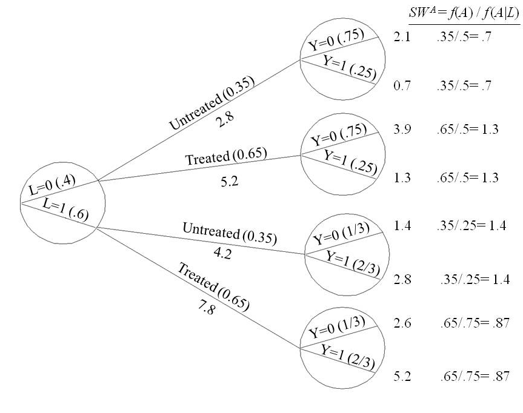
이제 안정화 IP 가중치 를 사용하여 금연이 체중에 미치는 효과를 다시 추정해 보자. 첫째, 가중치의 분모를 구성하기 위해 조건부 확률 Pr[=1 | ]의 추정치가 필요하다. 우리는 12.2절에서 사용했던 것과 동일한 로지스틱 모형을 사용하여 연구 모집단의 1,566명 각 개인에 대한 모수적 추정치 \(\widehat{\text{Pr}}\)[=1 | ]을 얻는다. 둘째, 가중치의 분자를 위해 Pr[=1]을 추정해야 한다. 우리는 403/1566이라는 비율을 통해, 또는 동등하게 절편만 있고 공변량이 없는 Pr[=1]에 대한 포화 로지스틱 모형을 적합하여 비모수적 추정치를 얻을 수 있다. 마지막으로, 우리는 추정된 안정화 IP 가중치(금연자의 경우 \(\widehat{\text{Pr}}\)[=1]/\(\widehat{\text{Pr}}\)[=1 | ], 비금연자의 경우 (1 − \(\widehat{\text{Pr}}\)[=1])/(1 − \(\widehat{\text{Pr}}\)[=1 | ]))로 개인들을 가중하여 평균 모형 E[ | ] = ₀ + ₁를 적합함으로써 인과적 차이 E[=1] − E[=0]를 추정한다. 우리의 가정 아래에서, 우리는 금연이 평균적으로 체중을 ˆ₁ = 3.4 kg (95% 신뢰구간: 2.4, 4.5) 증가시킨다고 추정했다. 이는 앞서 안정화 IP 가중치 대신 비안정화 IP 가중치 를 사용하여 얻었던 것과 동일한 추정치이다.
데이터 분석에서는 추정된 가중치 의 평균이 1인지 항상 확인해야 한다(Hernán and Robins 2004). 1에서 벗어나는 것은 모형 오지정이나 양수성의 위반 또는 위반에 가까운 상황을 나타낸다. 양수성 점검에 대한 자세한 내용은 세부사항 12.2를 참고하라.
코드: 프로그램 12.3 (Program 12.3) 추정된 IP 가중치 의 범위는 0.33에서 4.30이었으며, 그 평균은 1.00이었다.
비안정화 IP 가중치와 안정화 IP 가중치가 동일한 추정치를 낳는다면, 왜 안정화 IP 가중치를 사용하는 것일까? 안정화 가중치는 일반적으로 비안정화 가중치보다 더 좁은 95% 신뢰구간을 제공하기 때문이다. 그러나 안정화 가중치의 이러한 통계적 우월성은 (IP 가중된) 모형이 포화 모형이 아닐 때만 나타날 수 있다. 위의 예시에서 2-모수 모형 E[ | ] = ₀ + ₁는 처치 가 2개의 가능한 값만을 가질 수 있었기 때문에 포화 모형이었다. 많은 상황(예: 시간에 따라 변화하는 처치나 연속형 처치)에서 가중 모형은 포화될 수 없으며, 따라서 안정화 가중치가 사용된다. 다음 절에서는 연속형 처치에 대한 안정화 가중치의 사용을 설명한다.
세부사항 12.2 (Fine Point 12.2) 양수성 점검(Checking positivity). 우리 연구에는 66세 백인 여성이 4명 포함되어 있으며 그들 중 아무도 담배를 끊지 않았다. 즉, 의 (부분집합을) 조건으로 한 =1의 확률은 0이다. IP 가중의 조건인 양수성(positivity)이 경험적으로 위반된 것이다.
양수성이 위반될 수 있는 두 가지 가능한 경로가 있다: • 구조적 위반(Structural violations): 3장에서 설명한 유형의 위반이다. 특정 값을 가진 개인들은 처치를 받거나(또는 받지 않는 것이) 불가능하다. 예: 특정 화학물질에 대한 노출이 사망률에 미치는 효과를 추정할 때, 직장을 쉬는 것(off work)은 직장을 쉰 사람들이 아프거나 사망할 가능성이 더 높기 때문에 중요한 교란 요인이며, 동시에 화학물질 노출의 결정 요인이기도 하다(사람들은 직장에 있을 때만 그 화학물질에 노출될 수 있기 때문이다). 즉, 문제의 구조상 직장을 쉬는 것을 조건으로 한 처치 확률은 정확히 0(구조적 0, structural zero)이 보장된다. 그 교란 요인에 조건화할 때 우리는 항상 빈 칸(0인 셀)을 발견하게 된다. • 무작위 위반(Random violations): 이 세부사항의 첫 단락에서 설명한 유형의 위반이다. 우리의 표본은 유한하므로, 여러 교란 요인으로 층화하면 표적 모집단에서 처치 확률이 실제로 0이 아니더라도 몇몇 곳에서 빈 칸(0인 셀)이 나타나기 시작한다. 0들이 표적 모집단의 서로 다른 표본들에서 무작위로 서로 다른 위치에 나타나기 때문에 이는 구조적이 아닌 무작위 양수성 위반이다. 예: 우리 연구에는 우연히 “66세 백인 여성”과 “67세 백인 여성” 층에 처치받은 개인이 0명이었지만, “65세 백인 여성”과 “69세 백인 여성” 층에는 처치받은 개인이 양수(1명 이상)로 포함되었다.
각 유형의 양수성 위반은 서로 다른 결과를 초래한다. 구조적 위반이 존재할 때는 IP 가중이나 표준화를 사용하여 전체 모집단에 대한 인과 추론을 할 수 없다. 추론은 구조적 양수성이 성립하는 층으로 제한되어야 한다. 자세한 내용은 기술적 사항 12.1을 참고하라. 무작위 위반이 존재할 때, 우리는 다른 층의 개인들로부터 얻은 데이터를 사용하여 무작위 0이 있는 층에서의 처치 확률을 추정하기 위해 모수 모형을 사용했다. 다시 말해, 우리는 모수 모형을 사용하여 0들을 매끄럽게 보간(smooth over)한다. 예를 들어 12.2절에서 사용된 로지스틱 모형은 연구의 다른 모든 개인들로부터 외삽(보간)하여 66세 백인 여성의 금연 확률을 추정했다. 빈 칸(0인 셀)이 존재하는 상황에서 IP 가중치를 모수적으로 추정할 때마다(우리가 ˆ₁ = 3.4를 추정할 때 했던 것처럼), 우리는 사실상 무작위 비양수성(random nonpositivity)을 가정하고 있는 것이다.
12.4 주변 구조 모형(Marginal structural models)
처치 수준 아래에서의 평균 결과에 대한 다음 선형 모형을 생각해 보자: \[E[\\alpha] = \_0 + \_1 \alpha\]
이는 이분형 처치 에 대한 (포화) 주변 구조 평균 모형(marginal structural mean model)이다.
이 모형은 우리가 지금까지 고려했던 모든 모형과 다르다: 이 모형의 결과 변수는 반사실적(counterfactual)이며, 따라서 일반적으로 관측되지 않는다. 그러므로 이 모형은 어떤 실제 연구의 데이터에도 직접 적합될 수 없다. 반사실적 결과의 주변 평균(marginal mean)에 대한 모형을 주변 구조 평균 모형(marginal structural mean models)이라고 부른다. 구조 평균 모형에서 처치에 대한 모수는 평균 인과 효과에 해당한다. 위 모형에서 모수 ₁은 E[=1] − E[=0]과 같은데, = 0 아래에서 E[] = ₀이고 = 1 아래에서 E[] = ₀ + ₁이기 때문이다. 앞선 절들에서 우리는 E[=1] − E[=0]로 정의되는 금연 가 체중 변화 에 미치는 평균 인과 효과를 추정했다. 다시 말해, 우리는 주변 구조 모형의 모수 ₁을 추정한 것이다.
구체적으로 우리는 IP 가중을 사용하여 의사 모집단을 구축한 다음, IP 가중 최소제곱법을 사용하여 의사 모집단 데이터에 모형 E[ | ] = ₀ + ₁를 적합했다. 우리의 가정 아래에서 의사 모집단에서는 연관이 곧 인과이다. 즉, IP 가중 연관 모형 E[ | ] = ₀ + ₁의 모수 ₁은 구조 모형 E[] = ₀ + ₁의 모수 ₁과 동일한 인과적 해석을 부여받을 수 있다. 따라서 의사 모집단에서의 연관 모수의 일치추정치 ˆ₁은 모집단에서의 인과 효과 ₁ = E[=1] − E[=0]의 일치추정량이기도 하다.
금연 가 이분형 처치이기 때문에 주변 구조 모형 E[] = ₀ + ₁는 포화 모형이다. 즉, 이 모형은 방정식 양변에 각각 2개의 미지수를 갖는다: 좌변에는 E[=1]과 E[=0], 우변에는 ₀과 ₁. 따라서 의사 모집단에서 계산된 표본 평균만으로도 관심 있는 인과 효과를 추정하기에 충분했다.
주변 구조 모형의 바람직한 속성 중 하나는 영가설 보존(null preservation, 9장 참고)이다: 평균 인과 효과가 없다는 무가설이 참일 때, 주변 구조 모형은 결코 오지정되지 않는다. 예를 들어 주변 구조 모형 E[] = ₀ + ₁ + ₂² 아래에서 결합 가설 ₁ = ₂ = 0에 대한 자유도 2의 왈드 검정(Wald test)은 무가설에 대한 타당한 검정이다.
그러나 처치는 다분형(polytomous)이거나 연속형인 경우가 많다. 예를 들어 1982년 하루 흡연 개비 수에서 기저 시점의 하루 흡연 개비 수를 뺀 값으로 정의되는 새로운 처치 “흡연 강도 변화”를 생각해 보자. 이제 처치 는 많은 값을 가질 수 있다. 예를 들어 어떤 개인이 하루 흡연량을 25개비 줄였다면 −25가 되고, 40개비 늘렸다면 40이 된다. 기저 시점에 하루 25개비 이하로 흡연했던 1,162명의 개인에서 처치 강도의 다양한 변화에 따른 평균 체중 변화의 차이를 추정하는 데 관심이 있다고 하자. 즉, 우리는 임의의 값 와 ’에 대해 E[] − E[’]를 추정하고자 한다.
처치 가 수십 개의 값을 가질 수 있기 때문에, 그만큼 많은 모수를 갖는 포화 모형은 비실용적이 된다. 우리는 처치 가 평균 결과 에 미치는 효과에 대한 반응-용량 곡선(dose-response curve)을 지정하기 위해 비포화 구조 모형(non-saturated structural model)을 고려해야 할 것이다. 포물선이 반응-용량 곡선을 적절히 설명한다고 믿는다면, 다음과 같은 주변 구조 모형을 제안할 수 있다: \[E[\\alpha] = \_0 + \_1 \alpha + \_2 \alpha^2\] 여기서 ² = × 는 의 제곱이고 E[=0] = ₀은 = 0 아래에서의 평균 체중 증가, 즉 기저 시점과 1982년 사이에 흡연 강도에 변화가 없을 때의 체중 증가이다.
연속형 처치 에 대한 (비포화) 주변 구조 평균 모형.
변화 없음 대비 하루 20개비씩 흡연 강도를 늘리는 것의 평균 인과 효과, 즉 E[=20] − E[=0]를 추정하고자 한다고 가정해 보자. 우리의 구조 모형에 따르면 E[=20] = ₀ + 20₁ + 400₂이므로 E[=20] − E[=0] = 20₁ + 400₂가 된다. 이제 우리는 모수 ₁과 ₂를 추정해야 한다. 이를 위해 에 의한 교란이 없는 의사 모집단을 생성하기 위한 IP 가중치 를 추정한 다음, 의사 모집단 데이터에 연관 모형 E[ | ] = ₀ + ₁ + ₂²를 적합해야 한다.
안정화 가중치 = ()/( | )를 추정하기 위해서는 ( | )를 추정해야 한다. 이분형 처치 의 경우 ( | )는 확률이므로 우리는 로지스틱 모형을 사용하여 Pr[=1 | ]을 추정했다. 연속형 처치 의 경우 ( | )는 확률 밀도 함수(probability density function, pdf)이다. 안타깝게도 pdf는 일반적으로 올바르게 추정하기 어려우며, 이것이 연속형 처치에 IP 가중을 사용하는 것이 종종 위험할 수 있는 이유이다. 우리의 예시에서 우리는 밀도 ( | )가 평균 \(\mu_L\) = E[ | ]과 일정한 분산 ²을 갖는 정규분포(가우스 분포)를 따른다고 가정했다. 그런 다음 값들의 모든 조합에 대해 평균 E[ | ]과 잔차 분산 ²을 추정하기 위해 선형 회귀 모형을 사용했다. 우리는 또한 분자의 밀도 ()가 정규분포를 따른다고 가정했다. 연속형 처치에 IP 가중을 사용할 때는 주의를 기울여야 하는데, 효과 추정치가 조건부 밀도 ( | )에 대한 모형 선택에 대단히 민감할 수 있기 때문이다.
코드: 프로그램 12.4 (Program 12.4) 추정된 의 범위는 0.19에서 5.10이었으며 평균은 1.00이었다. 우리는 잔차 그림을 살펴본 후 합리적이라고 판단된 등분산성(homoscedasticity, 일정한 분산)을 가정했다. 다른 분포 선택(예: 이분산성을 갖는 절단 정규분포)도 유사한 추정치를 산출했다.
주변 구조 모형의 모수에 대한 우리의 IP 가중 추정치는 ˆ₀ = 2.005, ˆ₁ = −0.109, ˆ₂ = 0.003이었다. 이 추정치들에 따르면, 모든 개인이 흡연 강도를 일정하게 유지했을 경우 평균 체중 증가(95% 신뢰구간)는 2.0 kg (1.4, 2.6)이었을 것이고, 모든 개인이 기저 시점과 1982년 사이에 흡연량을 하루 20개비 늘렸을 경우 −0.9 kg (−1.7, 3.5)이었을 것이다.
이분형 결과에 대한 주변 구조 모형도 고려할 수 있다. 예를 들어 1992년까지의 사망 위험 (1: 예, 0: 아니오)에 금연 (1: 예, 0: 아니오)가 미치는 인과 효과에 관심이 있다면 다음과 같은 주변 구조 로지스틱 모형을 고려할 수 있다: \[\text{logit Pr}[\\alpha = 1] = \_0 + \_1 \alpha\] 여기서 \(\exp(\_1)\)은 금연 대 비금연에 대한 사망의 인과적 오즈비(causal odds ratio)이다. 이 모형의 모수들은 우리의 가정 아래에서 IP 가중에 의해 생성된 의사 모집단에 로지스틱 모형 logit Pr[ = 1 | ] = ₀ + ₁를 적합함으로써 일치추정된다. 우리는 인과적 오즈비가 \(\exp(\hat{\}_1)\) = 1.0 (95% 신뢰구간: 0.8, 1.4)인 것으로 추정했다.
이는 이분형 처치에 대한 포화 주변 구조 로지스틱 모형이다. 연속형 처치의 경우 우리는 비포화 로지스틱 모형을 지정할 것이다.
코드: 프로그램 12.5 (Program 12.5)
12.5 효과 수정과 주변 구조 모형(Effect modification and marginal structural models)
표적 모수가 모집단에서의 평균 인과 효과일 때 주변 구조 모형은 공변량을 포함하지 않는다. 그러나 효과 수정을 평가하기 위해 주변 구조 모형에 공변량(교란 요인이 아닐 수도 있음)을 포함할 수 있다. 금연의 효과가 성별 (1: 여성, 0: 남성)에 따라 달라진다는 가설이 세워졌다고 가정해 보자. 이 가설을 검토하기 위해 우리는 주변 구조 평균 모형에 공변량 를 추가한다: \[E[\\alpha | \] = \_0 + \_1 \alpha + \_2 \\alpha + \_3 \\] ₂ 6= 0이면 덧셈적 효과 수정(additive effect modification)이 존재한다. 엄밀히 말하면 이는 (에 조건부이므로) 더 이상 주변 모형이 아니지만, 여전히 “주변 구조 모형”이라는 용어가 적용된다.
모수 ₃은 일반적으로 의 효과로서 인과적 해석을 갖지 않는다. 우리는 성별 가 아니라 처치 에 대해 교환가능성, 양수성, 일관성을 가정하고 있음을 기억하라!
우리는 IP 가중치 또는 를 사용한 가중최소제곱법을 통해 선형 회귀 모형 E[ | , ] = ₀ + ₁ + ₂ + ₃를 적합함으로써 모형의 모수들을 추정할 수 있다. 공변량 벡터 은 가 교란 요인이 아니더라도 를 포함해야 하며, 의 수준 내에서 교환가능성을 보장하는 데 필요한 다른 모든 변수들도 포함해야 한다.
우리는 의 수준 내에서 처치의 효과에 대한 모형을 고려하고 있으므로, 이제 안정화 가중치의 분자에 [] 또는 [ | ] 중 어느 것을 사용할지 선택할 수 있다. 안정화 가중치 \(\\\(\) = \phi[\ | \] / \phi[\ | \]\)에 기반한 IP 가중은 일반적으로 효과 추정치 주위에 더 좁은 신뢰구간을 낳는다. ()의 증가된 통계적 효율성에 대한 직관은 다음과 같다: 분자와 분모의 조건화 사건에 가 모두 포함되면 분자와 분모의 수치가 더 가까워지며, 이는 IP 가중치에 추가적인 안정화(변동성 감소)를 가져오고 따라서 더 좁은 95% 신뢰구간으로 이어진다. 우리는 가중치의 분자에 대한 로지스틱 모형에 공변량 를 추가한다는 점을 제외하고는 와 동일한 접근법을 사용하여 ()를 추정한다.
연구자가 주변 구조 모형에 포함하기로 선택하는 의 특정 부분집합 는 연구자의 실질적인 관심사만을 반영해야 한다. 예를 들어 어떤 변수 는 연구자가…
…연구자가 가 효과 수정자(effect modifier)일 수 있다고 믿고, 전체 모집단에서보다 공변량 의 수준 내에서의 처치의 인과 효과에 더 큰 실질적 관심을 갖고 있을 때에만 주변 구조 모형에 포함되어야 한다. 우리 예시에서 모수 추정치 ˆ₂ 주위의 95% 신뢰구간이 (−2.2, 1.9)였으므로 성별에 의한 효과 수정의 강력한 증거는 발견되지 않았다.
코드: 프로그램 12.6 (Program 12.6)
만약 우리가 (변수 에 의한 처치 의 효과 수정과 대조적으로; 5장 참조) 두 처치 와 사이의 상호작용(interaction)에 관심이 있다면, 주변 구조 모형에 와 모두에 대한 모수를 포함하고 분모에 두 처치의 결합 확률을 갖는 IP 가중치를 추정할 것이다. 이때 우리는 와 에 대해 교환가능성, 양의 확률(positivity), 일관성을 가정할 것이다.
만약 연구자가 주변 구조 모형에 모든 변수 을 포함하기로 선택한다면, 안정화 가중치 ()은 1과 같아지며, (올바르게 지정된 경우) (가중되지 않은) 결과 회귀 모형이 에 의한 모든 교란을 완전히 보정하므로 IP 가중은 필요하지 않다(15장 참조). 이러한 이유로, 우리는 약간 유머러스하게 교환가능성을 위해 필요한 모든 변수 에 조건화하는 주변 구조 모형을 “가짜 주변 구조 모형(faux marginal structural model)”이라고 부른다.
제1부에서 우리는 효과 수정과 교란이 논리적으로 구별되는 두 가지 개념임을 논의했다. 그럼에도 불구하고 많은 학생들이 그 구분을 이해하는 데 어려움을 겪는데, 교란 보정과 효과 수정 탐지 모두에 동일한 통계적 방법—층화(4장) 또는 회귀(15장)—이 종종 사용되기 때문이다. 따라서 주변 구조 모형을 사용하여 이러한 개념들을 가르치는 데에는 어떤 이점이 있을 수 있다. 이 경우 교란 보정을 위한 방법(IP 가중)과 효과 수정 탐지를 위한 방법(주변 구조 모형에 처치-공변량 곱 항 추가)이 서로 구별되기 때문이다.
12.6 중도절단과 결측 데이터(Censoring and missing data)
금연 가 체중 증가 에 미치는 인과 효과를 추정할 때, 우리는 1982년 추적 관찰 종료 시점에 체중 측정이 이루어진 1,566명의 개인으로 분석을 제한했다. 그러나 우리의 적격성 기준을 충족했음에도 1982년 체중을 알 수 없어 분석에서 제외된 63명의 추가적인 개인이 있었다. 결과 값이 결측되지 않은 개인들만 선택하는 것—즉 결측값을 가진 사람들을 분석에서 중도절단(censoring)하는 것—은 8장에서 논의했듯이 선택 편향(selection bias)을 유발할 수 있다.
중도절단 를 1982년 체중 측정 여부에 대한 지시자(indicator)라고 하자: 체중이 측정되지 않은 경우(즉 개인이 중도절단된 경우) 1, 체중이 측정된 경우(즉 개인이 중도절단되지 않은 경우) 0이다. 우리의 분석은 = 0인 중도절단되지 않은 개인들로 불가피하게 제한되었는데, 그들이 결과 의 알려진 값을 가진 유일한 사람들이었기 때문이다. 즉, 12.2절과 12.4절에서 우리는 (가중된) 결과 회귀 모형 E[ | ] = ₀ + ₁를 적합한 것이 아니라, = 0인 개인들로 제한된 모형 E[ | , = 0] = ₀ + ₁를 적합한 것이다.
안타깝게도 무가설(null) 하에서조차 분석을 위해 중도절단되지 않은 개인들만 선택하는 것은, 가 처치 와 결과 사이 경로의 충돌 변수(collider)이거나 그러한 충돌 변수의 후손(descendant)일 때 편향을 유발할 것으로 예상된다. Figure 8.3~8.6의 인과 다이어그램을 보라. 우리 데이터는 그 인과 다이어그램들에 의해 묘사된 구조와 일치한다: 처치 는 중도절단 와 연관되어 있고—금연자의 5.8% 대 비금연자의 3.2%가 중도절단되었다—, 의 적어도 일부 예측 요인은 와 연관되어 있다—기저(baseline) 평균 체중은 중도절단된 사람에서 76.6 kg이었던 반면 중도절단되지 않은 사람에서는 70.8 kg이었다. 추적 관찰 소실로 인한 중도절단은 선택 편향을 도입할 수 있으므로, 우리는 일반적으로 연구 모집단에서 아무도 중도절단되지 않았을 때의 인과 효과에 관심을 갖는다. 우리 예시에서 목표는 모든 사람이 담배를 끊고 아무의 결과도 중도절단되지 않았을 때의 평균 체중 증가인 E[=1,=0], 그리고 아무도 담배를 끊지 않고 아무의 결과도 중도절단되지 않았을 때의 평균 체중 증가인 E[=0,=0]를 추정하는 것이 된다.
그러면 관심 있는 인과 효과는 E[=1,=0] − E[=0,=0]이며, 이는 8장에서 논의했듯이 와 의 결합 효과(joint effect)이다. 위첨자 = 0의 사용은, 비록 위첨자 = 0을 사용하지 않기로 선택하더라도 많은 사람들이 처치 의 인과 효과를 언급할 때 염두에 두고 있는 인과적 대비를 명시적으로 드러낸다.
중도절단 및 처치에 대한 IP 가중치는 , = 1/(, = 0 | )이며, 여기서 와 의 결합 밀도는 (, = 0 | ) = ( | ) × Pr[ = 0 | , ]로 인수분해된다.
이 인과 효과는 IP 가중치 , = × 를 사용하여 추정할 수 있으며, 여기서 중도절단되지 않은 개인에 대해서는 = 1/Pr[ = 0 | , ]이고 중도절단된 개인에 대해서는 = 0이다. IP 가중치 ,는 에 조건부인 결합 처치 (, )에 대한 교환가능성—즉, ,=0 ⊥⊥ (, ) | —, ( = , = 0)에 대한 결합 양의 확률(joint positivity), 그리고 일관성이라는 식별 조건 아래에서 교란과 선택 편향을 모두 보정한다. 만약 의 일부 변수가 Figure 8.4에서처럼 처치 의 영향을 받는다면, 조건부 독립성 ,=0 ⊥⊥ (, ) | 은 일반적으로 성립하지 않을 것이다. 제3부에서는 의 일부 구성요소가 처치의 영향을 받을 때 와 의 결합 효과를 추정하기 위해 IP 가중을 사용할 수 있도록 해 주는 대안적인 교환가능성 조건들이 있음을 보여 줄 것이다.
의 어떤 변수들은 ( | ) 모형에서는 계수가 0이지만 Pr[ = 0 | , ] 모형에서는 0이 아닐 수 있으며, 그 반대일 수도 있다. 그럼에도 불구하고 대표본에서는 두 모형 모두에 결과를 독립적으로 예측하는 모든 변수 을 유지하는 것이 항상 더 효율적이다.
가중치 = 1/Pr[ = 0 | , ]는 중도절단 이전의 원래 연구 모집단과 동일한 크기를 가지며 이나 에서 로 향하는 화살표가 없는 의사 모집단을 생성함을 상기하자. 우리 예시에서 중도절단에 대한 IP 가중치 추정치 는 (대략) 1566 + 63 = 1629명으로 구성된 의사 모집단을 생성할 것이며, 우리의 가정 아래에서는 선택이 없으므로 선택 편향도 존재하지 않는다. 즉, 우리는 전체 모집단에서 주변 구조 모형 E[,=0] = ₀ + ₁의 모수를 추정하기 위해 가중치 ,를 사용하여 가중 모형 E[ | , = 0] = ₀ + ₁를 적합한다.
대안으로 안정화 IP 가중치(stabilized IP weights) , = × 를 사용할 수 있다. 중도절단 가중치 = Pr[ = 0 | ]/Pr[ = 0 | , ]는 중도절단 이후의 원래 연구 모집단과 동일한 크기를 가지며 에서 로 향하는 화살표가 없는 의사 모집단을 생성한다. 우리 예시에서 중도절단에 대한 IP 가중치 추정치 는 (대략) 1,566명의 중도절단되지 않은 개인들로 구성된 의사 모집단을 생성할 것이다. 즉, 안정화 가중치는 의사 모집단에서 중도절단을 제거하는 것이 아니라, 측정된 공변량 과 관련하여 중도절단이 무작위로(at random) 발생하도록 만든다. 따라서 (및 )가 주어졌을 때 중도절단된 개인과 중도절단되지 않은 개인의 조건부 교환가능성이라는 우리의 가정 아래에서, 의사 모집단 내 중도절단된 개인의 비율은 연구 모집단에서의 비율과 동일하다: 선택은 존재하지만 선택 편향은 없다.
추정된 IP 가중치는 Pr[ = 0 | ]에 대한 모형이 올바르게 지정되었을 때 평균 1을 갖는다. 안정화 IP 가중치에 대한 자세한 내용은 기술적 사항 12.2를 참조하라.
우리 예시에서 Pr[ = 0 | , ]의 모수적 추정치를 얻기 위해, 우리는 연구 모집단의 1,629명에 대해 중도절단되지 않을 확률에 대한 로지스틱 회귀 모형을 적합했다. 이 모형에는 처치에 대한 가중치를 추정하기 위해 앞서 사용했던 것과 동일한 공변량들이 포함되었다. 이러한 모수적 제약 하에서, 우리는 1,566명의 중도절단되지 않은 개인 각각에 대해 추정치 \(\widehat{\text{Pr}}\)[ = 0 | , ]와 의 추정치를 얻었다. 안정화 가중치 , = × 를 사용하여 우리는 금연이 평균적으로 체중을 ˆ₁ = 3.5 kg (95% 신뢰구간: 2.5, 4.5) 증가시킨다고 추정했다. 이는 앞서 IP 가중치 만을 사용하여 얻었던 추정치와 거의 동일하며, 이는 중도절단에 의한 선택 편향이 존재하지 않거나 우리의 측정된 공변량들이 이를 제거할 수 없음을 시사한다.
코드: 프로그램 12.7 (Program 12.7) 추정된 IP 가중치 ,의 범위는 0.35에서 4.09까지였으며, 평균은 1.00이었다.
이제 교란과 선택 편향을 보정하기 위한 IP 가중의 대안인 표준화(standardization)를 설명한다.
기술적 사항 12.2 (Technical Point 12.2) 안정화 가중치에 대한 추가 논의(More on stabilized weights). 안정화 가중치 = []/[ | ]는 []/[ | ] 형태의 더 넓은 부류의 안정화 가중치에 속하며, 여기서 []는 의 함수가 아닌 의 임의의 함수이다. 비포화 구조 모형(unsaturated structural models)이 사용될 때, []/[ | ] 가중치는 1/[ | ] 가중치보다 선호되는데, 비포화 주변 구조 모형에서 인과 효과의 더 효율적인 추정량을 구축하는 데 사용될 수 있는 함수 가 존재하기 때문이다. 이제 가중치 []/[ | ]를 사용한 IP 가중 평균이 반사실적 평균 E[]와 같음을 보인다.
먼저 가중치 1/[ | ]를 사용한 IP 가중 평균 \(\text{E}\left[\frac{\(\=)\}{(\|\)}\right]\)은 E[]와 같으며, \(\text{E}\left[\frac{\(\=)}{(\|\)}\right] = 1\)이므로 다음과 같이 표현될 수도 있다: \[\frac{\text{E}\left[\frac{\(\=)\}{(\|\)}\right]}{\text{E}\left[\frac{\(\=)}{(\|\)}\right]}\] 마찬가지로 가중치 []/[ | ]를 사용한 IP 가중 평균은 다음과 같이 표현될 수 있으며: \[\frac{\text{E}\left[\frac{\(\=)\ (\)}{(\|\)}\right]}{\text{E}\left[\frac{\(\=) (\)}{(\|\)}\right]}\] 이 또한 E[]와 같다. 증명은 기술적 사항 2.2에서와 같이 진행되어 분자 \(\text{E}\left[\frac{\(\=)\ (\)}{(\|\)}\right] = \text{E}[\]()\)이고 분모 \(\text{E}\left[\frac{\(\=) (\)}{(\|\)}\right] = ()\)임을 보인다.
제13장 표준화와 모수적 g-공식(Standardization and the Parametric G-Formula)
이번 장에서는 표준화(standardization)를 사용하여 금연이 체중 증가에 미치는 평균 인과 효과(average causal effect)를 추정하는 방법을 설명한다. 우리는 이전 장과 동일한 관찰 데이터셋(observational data set)을 사용할 것이다. 비록 표준화는 2장에서 소개되었지만, 거기서는 비모수적 방법(nonparametric method)으로만 설명했다. 이제 우리는 모형(model)을 표준화와 함께 사용하는 방법을 설명할 텐데, 이는 수많은 공변량(covariates)과 비이분형 처치(nondichotomous treatments)가 관련된 고차원 문제(high-dimensional problems)를 다룰 수 있게 해줄 것이다. 이전 장과 마찬가지로 분석을 수행하기 위한 컴퓨터 코드를 제공한다. 실무에서 연구자들은 관찰 데이터로부터 효과 추정치(effect estimates)를 얻기 위한 분석적 접근법으로서 역확률 가중(IP weighting)과 표준화 사이에서 선택해야 하는 경우가 많다. 두 방법 모두 동일한 식별 조건(identifiability conditions)에 기초하지만, 서로 다른 모형화 가정(modeling assumptions)에 의존한다.
13.1 IP 가중의 대안으로서의 표준화(Standardization as an alternative to IP weighting)
이전 장에서 우리는 역확률 가중(IP weighting, inverse probability weighting)을 사용하여 금연 (1: 예, 0: 아니오)가 체중 증가 (kg 단위로 측정)에 미치는 평균 인과 효과를 추정했다. 이번 장에서는 표준화를 사용하여 동일한 효과를 추정할 것이다. 우리의 분석은 마찬가지로 기저 방문(baseline visit)과 약 10년 후의 추적 방문(follow-up visit)을 마친 25~74세 담배 흡연자 1,629명의 NHEFS 데이터에 기초한다. 이 중 1,566명은 추적 방문 시 체중이 측정되었으므로 중도절단되지 않았다( = 0, uncensored). 우리는 E[,=0]을 모든 개인이 처치 수준 를 받고 아무도 중도절단되지 않았을 경우 관측되었을 평균 체중 증가로 정의한다. 금연의 평균 인과 효과는 차이 E[=1,=0] − E[=0,=0], 즉 모든 사람이 처치를 받고 중도절단되지 않았을 때 관측되었을 평균 체중과 처치를 받지 않고 중도절단되지 않았을 때 관측되었을 평균 체중의 차이로 표현될 수 있다.
표 12.1에 나타난 바와 같이, 금연자( = 1)와 비금연자( = 0)는 체중 증가 예측 요인의 분포에서 차이를 보인다. 관측된 연관 차이(associational difference) E[ | = 1, = 0] − E[ | = 0, = 0] = 2.5는 인과적 차이(causal difference) E[=1,=0] − E[=0,=0]와 다를 것으로 예상된다. 이번에도 우리는 변수들의 벡터 이 교란(confounding)과 선택 편향(selection bias)을 보정(adjust)하기에 충분하다고 가정하며, 에는 기저 변수인 성별(0: 남성, 1: 여성), 연령(세 단위), 인종(0: 백인, 1: 기타), 교육 수준(5개 범주), 흡연 강도 및 기간(일일 흡연 개비 수 및 흡연 연수), 일상생활에서의 신체 활동(3개 범주), 여가 운동(3개 범주), 체중(kg 단위)이 포함된다.
이전 장에서와 마찬가지로, 우리는 를 보정하는 데 필요한 의 구성요소들이 에 의해 영향을 받지 않는다고 가정할 것이다. 그렇지 않다면 제3부에서 설명하는 보다 일반적인 접근법을 사용해야 할 것이다.
변수 을 보정하는 한 가지 방법은 역확률 가중(IP weighting)인데, 이는 처치군과 비처치군에서 변수들의 분포가 동일한 의사 모집단(pseudo-population)을 생성한다. 그런 다음 이 주어졌을 때의 교환가능성(exchangeability)과 양수성(positivity) 가정 아래에서, 우리는 단순히 의사 모집단에서의 평균 결과로서 E[ | = , = 0]를 계산하여 E[,=0]를 추정한다. 만약 가 (우리의 예시와 달리) 연속형 처치라면, 의 모든 가능한 값에 대해 의사 모집단에서의 E[ | , = 0]를 추정하기 위해 구조 모형(structural model)도 필요할 것이다. IP 가중은 처치와 중도절단의 결합 분포(joint distribution)를 추정해야 한다. 이분형 처치인 금연의 경우, 우리는 Pr[=, =0 | ]을 추정하고 이 결합 확률을 분모로 하여 역확률 가중치를 계산했다.
세부사항 13.1 (Fine Point 13.1) 구조적 양수성(Structural positivity). 구조적 양수성(structural positivity)의 결여는 IP 가중을 사용할 때 전체 모집단에서의 평균 인과 효과 식별을 불가능하게 만든다. 양수성은 표준화에서도 필수적인데, Pr[= | =] = 0이고 Pr[=] 6= 0일 때 조건부 평균 결과 E[ | =,=]가 정의되지 않기 때문이다. 그러나 양수성 위반이 미치는 실질적인 영향은 모수 모형에 의존하는 IP 가중 추정치와 표준화 추정치 사이에서 크게 다를 수 있다.
표준화를 사용할 때는 모수적 외삽(parametric extrapolation)에 기꺼이 의존할 의향이 있다면 양수성의 결여를 무시할 수 있다. 즉, 구조적 0(structural zeroes)이 있는 층들을 매끄럽게 보간(smooth over)해 주는 E[ | ,]에 대한 모형을 적합할 수 있는 것이다. 이러한 보간은 추정에 편향(bias)을 유발할 것이며, 따라서 추정치 주위의 명목상 95% 신뢰구간은 참된 효과를 95% 미만으로 포함하게 될 것이다. 또한 구조적 양수성 결여가 있는 이러한 상황에서 모형화의 목적이 다르다는 점에 주목하라: 우리는 데이터가 부족해서 모형을 세우는 것이 아니라, (구조적 양수성 결여 때문에) 무한한 양의 데이터가 있더라도 식별할 수 없는 양을 추정하고자 모형을 세우는 것이다. 이는 대단히 중요한 구별이다.
일반적으로 양수성의 위반 또는 위반에 가까운 상황이 존재할 때, 처치 효과의 표준 오차(standard error)는 IP 가중보다 표준화에서 더 작을 것이다. 이것이 표준화가 IP 가중보다 반드시 선호된다는 것을 의미하지는 않는다. 편향의 차이가 표준 오차의 차이를 압도할 수 있기 때문이다.
2장에서 논의했듯이, IP 가중의 대안은 표준화(standardization)이다. 의 변수들을 조건으로 한 교환가능성과 양수성 아래에서, 기술적 사항 2.3은 조건부 교환가능성, 양수성, 일관성 아래에서 중도절단되지 않은 처치군에서의 표준화된 평균이 모든 사람이 처치를 받고 중도절단되지 않은 채 남아 있었을 때의 평균 결과 E[=1,=0]의 일치추정량(consistent estimator)임을 증명한다. 유사하게, 중도절단되지 않은 비처치군에서의 표준화된 평균 결과는 모든 사람이 처치를 받지 않고 중도절단되지 않은 채 남아 있었을 때의 평균 결과 E[=0,=0]의 일치추정량이다. IP 가중과 표준화에서 양수성 위반이 미치는 상대적 영향에 관한 논의는 세부사항 13.1을 참고하라.
중도절단으로의 확장은 간단하다: 증명과 정의에서 =를 (=, =0)으로 바꾸기만 하면 된다.
중도절단되지 않은 처치군에서의 표준화된 평균 결과를 계산하려면, 먼저 교란 요인 의 각 층 에서 중도절단되지 않은 처치군의 평균 결과, 즉 각 층 에서의 조건부 평균 E[ | = 1, = 0, = ]을 계산해야 한다. 우리의 금연 예시에서는 의 9개 변수 값들의 조합으로 정의되는 (수백만 개에 달할 수 있는) 층 각각에서, 담배를 끊고 중도절단되지 않은 사람들 사이의 평균 체중 증가 를 계산해야 할 것이다. 그런 다음 중도절단되지 않은 처치군에서의 표준화된 평균은 연구 모집단에서 각 값의 유병률(prevalence), 즉 Pr[=]을 가중치로 사용하여 이 조건부 평균들을 가중 평균한 값이 된다. 즉, 가장 많은 개인이 속한 층의 조건부 평균이 표준화된 평균을 계산할 때 가장 큰 가중치를 갖는다. 중도절단되지 않은 비처치군에서의 표준화된 평균은 조건화 사건에서 =1이 =0으로 대체된다는 점을 제외하고는 유사하게 계산된다.
처치군에서의 평균 인과 효과는 기술적 사항 4.1에서 설명한 것처럼 표준화로 추정할 수 있다. 우측 식에서 Pr[=]을 Pr[= | =1]로 바꾸기만 하면 된다.
보다 간결하게 쓰면, 처치 수준 를 받은 중도절단되지 않은 사람들의 표준화된 평균은 다음과 같다: \[\sum_{} \text{E}[\ | \=\alpha\,\ =0\,\=] \text{Pr}[\=]\]
우리의 예시에서처럼 의 변수 중 일부가 연속형일 때는 Pr[=]을 확률 밀도 함수(probability density function, pdf) []로 대체해야 하며, 위의 합은 적분이 된다.
13.2 모형화를 통한 평균 결과 추정(Estimating the mean outcome via modeling)
다음 두 절에서는 표준화된 평균을 추정하는 데 필요한 두 가지 유형의 양, 즉 결과 의 조건부 평균과 교란 요인 의 분포를 추정하는 방법을 설명한다.
이상적으로는 조건부 평균들의 집합 E[ | =1, =0,=]을 비모수적으로 추정하고자 할 것이다. 변수 의 서로 다른 값들의 조합으로 정의되는 각 층에서 중도절단되지 않은 처치군의 평균 결과를 계산하는 것이다. 이것이 바로 우리가 2.3절에서 했던 작업이며, 당시 이 계산에 필요한 모든 정보는 표 2.2에서 가져왔다. 그러나 현재 우리의 예시처럼 여러 수준을 갖는 수많은 교란 요인이 포함된 고차원 데이터가 있을 때는 E[ | = 1, = 0, = ]의 비모수적 추정은 불가능하다. 수백만 개의 층에 걸쳐 단 403명의 처치받은 개인만이 분포되어 있을 때 처치군의 평균 결과에 대해 의미 있는 비모수적 층별 추정치를 얻을 수는 없다. 우리는 모형화에 의존해야 한다. 동일한 논리가 중도절단되지 않은 비처치군에서의 조건부 평균 결과 E[ | =0, =0,=]에도 적용된다.
에 의해 정의된 수백만 개의 층 각각에서 E[ | = , =0,=]의 모수적 추정치를 얻기 위해, 우리는 처치 와 의 9개 교란 요인을 모두 공변량으로 포함하여 평균 체중 증가에 대한 선형 회귀 모형(linear regression model)을 적합했다. 우리는 (준)연속형 공변량인 연령, 체중, 흡연 강도 및 기간에 대해 선형 항과 이차 항을 사용했다. 즉, 우리의 모형은 연속형 공변량과 평균 결과 사이의 조건부 관계가 포물선 형태로 표현될 수 있도록 E[ | = , = 0, = ]의 가능한 값들을 제한한다. 우리는 금연 와 흡연 강도 사이의 곱 항(product term)을 포함했다. 즉, 우리의 모형은 금연 의 기여가 이전 흡연 강도에 따라 선형적으로 변한다는 점을 제외하고는, 각 공변량이 평균에 기여하는 바가 다른 공변량과 독립적이라는 제약을 부과한다.
코드: 프로그램 13.1 (Program 13.1)
이러한 모수적 제약 아래에서, 우리는 와 값들의 각 조합에 대해, 따라서 연구 모집단의 중도절단되지 않은 403명의 처치군( = 1, = 0)과 1,163명의 비처치군( = 0, = 0) 각각에 대해 추정치 \(\widehat{\text{E}}[\ | \ = \alpha\,\ = 0\,\ = ]\)를 얻었다. 예를 들어, 우리는 {비금연자, 남성, 백인, 26세, 대학 중퇴, 하루 15개비, 12년 흡연 습관, 보통 운동, 매우 활동적, 체중 112 kg}의 값 조합을 가진 개인들의 평균 체중 증가가 0.34 kg이라고 추정했다(고유 식별자 24770번 개인이 우연히 이 값 조합을 가지고 있었으므로, 그의 예측값을 직접 확인해 볼 수 있다).
일반적으로 의 표준화된 평균은 \(\int \text{E}[\ | \=\alpha\,\ =0\,\=] dF_{\Lambda}()\)로 표기되는데, 여기서 \(F_{\Lambda}(\cdot)\)는 에 속한 확률 변수들의 결합 누적분포함수(joint cumulative distribution function, cdf)이다. 이번 장에서처럼 이 처치에 영향을 받지 않는 기저 공변량의 벡터일 때, 우리는 의 관측된 값들에 대해 평균을 취함으로써 이 적분을 비모수적으로 추정할 수 있다.
전체적으로 추정된 체중 증가의 평균은 2.6 kg으로 관측된 체중 증가의 평균과 같았으며, 공변량들의 서로 다른 조합에 걸쳐 −41.3에서 48.5 kg의 범위를 가졌다.
우리의 목표가 처치군(=1)과 비처치군(=0)에서 표준화된 평균 \(\sum_{} \text{E}[\ | \=\alpha\,\ =0\,\=] \text{Pr}[\=]\)을 추정하는 것임을 상기하자. 보다 엄밀하게는 의 변수 중 일부가 본질적으로 연속형이어서 그 분포를 확률 함수로 나타낼 수 없으므로 표준화된 평균은 적분으로 표기되어야 한다. 이러한 표기법상의 문제를 떠나, 우리는 이미 처치 와 교란 요인 의 모든 값에 대해 평균 E[ | = , = 0, = ]을 추정했다. 다음 단계는 이 평균들을 모든 값에 걸친 교란 요인 의 분포에 표준화하는 것이다.
13.3 교란 요인 분포에 평균 결과 표준화하기(Standardizing the mean outcome to the confounder distribution)
표준화된 평균은 조건부 평균 E[ | = , = 0, = ]들의 가중 평균이다. 의 모든 변수가 이산형일 때, 각 평균은 = 값을 가진 개인들의 비율, 즉 Pr[=]과 같은 가중치를 받는다. 원칙적으로 이러한 비율 Pr[=]은 데이터로부터 비모수적으로 계산될 수 있다: = 로 정의된 층의 개인 수를 모집단의 총 개인 수로 나누는 것이다. 이것이 바로 우리가 2.3절에서 했던 작업이며, 당시 이 계산에 필요한 모든 정보는 표 2.2에서 가져왔다. 그러나 우리의 금연 예시처럼 여러 수준을 갖는 수많은 교란 요인이 포함된 고차원 데이터의 경우 이 방법은 매우 번거로워진다.
다행히도 우리는 Pr[=]을 직접 추정할 필요가 없다. 연구에 참여한 각 개인 의 값에 대해 E[ | =, =0,=]을 추정하고, 그 후 연구 대상자 수 에 대해 평균 \(\frac{1}{} \sum_{=1}^ \widehat{\text{E}}[\ | \=\alpha\,\ =0\,\_]\)를 계산하기만 하면 된다. 가중 평균 \(\sum_{} \text{E}[\ | \=\alpha\,\ =0\,\=] \text{Pr}[\=]\)은 이중 기댓값(double expectation) \(\text{E}[\text{E}[\ | \=\alpha\,\ =0\,\]]\)로도 쓰일 수 있기 때문이다.
이제 수많은 교란 요인이 있을 때 Pr[=]을 명시적으로 추정하지 않고도 처치군(=1)과 비처치군(=0)에서 표준화된 평균 \(\sum_{} \text{E}[\ | \=\alpha\,\ =0\,\=] \text{Pr}[\=]\)을 추정하는 간단한 계산 방법을 설명한다. 먼저 중도절단이 없고, 교란 요인 이 2개 수준을 가진 단 하나의 변수이며, 가 이분형 결과인(즉, 평균 E[ | =, =0,=]이 결과 발생 위험 Pr[ = 1 | = , = ]인) 표 2.2의 데이터에 이 방법을 적용한다. 그런 다음 중도절단과 수많은 교란 요인이 있는 실제 데이터에 이를 적용한다. 이 방법은 데이터셋 확장(expansion of dataset), 결과 모형화(outcome modeling), 예측(prediction), 평균화를 통한 표준화(standardization by averaging)라는 4단계로 구성된다.
표 2.2는 연구의 개인당 한 행씩 총 20개의 행으로 이루어져 있다. 이제 우리는 표 2.2의 데이터가 3번 복사된 새로운 데이터셋을 생성한다. 즉, 분석용 데이터셋은 각각 20명씩 3개 블록으로 구성된 총 60개의 행을 갖는다. 첫 번째 20개 행 블록은 그대로 둔다(즉, 첫 번째 블록은 표 2.2의 데이터와 동일하다). 두 번째와 세 번째 블록의 데이터는 여백에 표시된 대로 수정한다. 두 번째 블록에서는 20명 모두에 대해 의 값을 0(비처치)으로 설정하고, 세 번째 블록에서는 모든 개인에 대해 의 값을 1(처치)로 설정한다. 두 번째와 세 번째 블록에서는 모든 개인에 대한 결과 데이터를 삭제한다(즉, 변수 에 결측값을 할당한다). 아래에서 설명하듯이, 우리는 두 번째 블록을 비처치군에서의 표준화된 평균을 추정하는 데 사용하고, 세 번째 블록을 처치군에서의 표준화된 평균을 추정하는 데 사용할 것이다.
| 두 번째 블록: 모두 비처치(All untreated) | | | |
|---|---|---|---|
| Rheia | 0 | 0 | . |
| Kronos | 0 | 0 | . |
| Demeter | 0 | 0 | . |
| Hades | 0 | 0 | . |
| Hestia | 0 | 0 | . |
| Poseidon | 0 | 0 | . |
| Hera | 0 | 0 | . |
| Zeus | 0 | 0 | . |
| Artemis | 1 | 0 | . |
| Apollo | 1 | 0 | . |
| Leto | 1 | 0 | . |
| Ares | 1 | 0 | . |
| Athena | 1 | 0 | . |
| Hephaestus | 1 | 0 | . |
| Aphrodite | 1 | 0 | . |
| Cyclope | 1 | 0 | . |
| Persephone | 1 | 0 | . |
| Hermes | 1 | 0 | . |
| Hebe | 1 | 0 | . |
| Dionysus | 1 | 0 | . |
| 세 번째 블록: 모두 처치(All treated) | | | |
|---|---|---|---|
| Rheia | 0 | 1 | . |
| Kronos | 0 | 1 | . |
| Demeter | 0 | 1 | . |
| Hades | 0 | 1 | . |
| Hestia | 0 | 1 | . |
| Poseidon | 0 | 1 | . |
| Hera | 0 | 1 | . |
| Zeus | 0 | 1 | . |
| Artemis | 1 | 1 | . |
| Apollo | 1 | 1 | . |
| Leto | 1 | 1 | . |
| Ares | 1 | 1 | . |
| Athena | 1 | 1 | . |
| Hephaestus | 1 | 1 | . |
| Aphrodite | 1 | 1 | . |
| Cyclope | 1 | 1 | . |
| Persephone | 1 | 1 | . |
| Hermes | 1 | 1 | . |
| Hebe | 1 | 1 | . |
| Dionysus | 1 | 1 | . |
다음으로 이 3-블록 데이터셋을 사용하여 처치 와 교란 요인 이 주어졌을 때의 평균 결과에 대한 회귀 모형을 적합한다. 모형을 포화 모형으로 만들기 위해 곱 항 × 을 추가한다. 두 번째와 세 번째 블록의 모든 행에서는 결과가 결측되어 있으므로, 데이터셋의 첫 번째 블록(실제 데이터)에 있는 행들만이 모형의 모수를 추정하는 데 기여한다는 점에 주목하라.
그 다음 단계는 첫 번째 블록에서 얻은 모수 추정치를 사용하여 두 번째와 세 번째 블록의 모든 행에 대한 결과 값을 예측하는 것이다(즉, 과 열의 값을 회귀 추정치와 결합하여 결과 의 결측값을 대치한다). 두 번째 블록의 예측 결과 값은 과 =0의 각 값 조합에 대한 평균 추정치이고, 세 번째 블록의 예측 값은 과 =1의 각 값 조합에 대한 평균 추정치이다.
마지막으로 두 번째 블록의 모든 예측 값의 평균을 계산한다. 행의 60%가 = 1 값을 갖고 40%가 = 0 값을 갖기 때문에, 이 평균은 = 1인 행에 더 많은 가중치를 부여한다. 즉, 두 번째 블록의 모든 예측 값의 평균은 정확히 비처치군에서의 표준화된 평균 결과가 된다. 작업이 완료되었다. 처치군에서의 표준화된 평균 결과를 추정하려면 세 번째 블록의 모든 예측 값의 평균을 계산하면 된다.
코드: 프로그램 13.2 (Program 13.2)
위의 절차는 2.3절의 직접 계산과 정확히 동일한 표준화된 평균 추정치(둘 다 0.5)를 산출한다. 두 접근법 모두 완전히 비모수적이다. 이번 장에서 우리는 의 분포를 직접 추정하지 않고 의 관측된 값들, 즉 그 경험적 분포(empirical distribution)에 대해 평균을 취했다. 고차원 을 갖는 우리의 금연 연구와 같이 더 현실적인 예시에서는 표준화를 위해 경험적 분포를 사용하는 것이 최선의 방법이다.
우리 연구를 위한 절차는 표 2.2의 데이터에 대해 위에서 설명한 것과 유사하다. 데이터셋에 두 번째와 세 번째 블록을 추가하고, 이전 절에서 설명한 대로 E[ | =, =0,=]에 대한 회귀 모형을 적합한 다음, 예측값을 생성한다.
코드: 프로그램 13.3 (Program 13.3)
두 번째 블록의 평균 예측값(비처치군에서의 표준화된 평균)은 1.66이었고, 세 번째 블록의 평균 예측값(처치군에서의 표준화된 평균)은 5.18이었다. 따라서 인과 효과 E[=1,=0] − E[=0,=0]에 대한 우리의 추정치는 5.18 − 1.66 = 3.5 kg이었다.
코드: 프로그램 13.4 (Program 13.4)
이 추정치에 대한 95% 신뢰구간을 얻기 위해 우리는 붓스트랩(bootstrapping, 기술적 사항 13.1 참고)으로 알려진 통계 기법을 사용했다. 요약하자면, 우리는 금연이 체중을 평균 3.5 kg (95% 신뢰구간: 2.6, 4.5) 증가시킨다고 추정했다.
13.4 IP 가중인가, 표준화인가?(IP weighting or standardization?)
우리는 이제 처치의 평균 인과 효과를 추정하기 위해 모형화가 사용될 수 있는 두 가지 방법, 즉 역확률 가중(IP weighting, 이전 장)과 표준화(standardization, 이번 장)를 설명했다. 우리의 금연 예시에서는 두 방법 모두 거의 정확히 동일한 효과 추정치를 산출했다. 실제로 기술적 사항 2.3은 표준화된 평균이 IP 가중 평균과 같음을 증명했다.
그렇다면 이전 장에서 이미 IP 가중 평균을 추정했는데 왜 이번 장에서 굳이 표준화된 평균을 추정하느라 애를 쓰는 것일까? IP 가중 평균과 표준화된 평균은 모형을 사용하지 않고 추정할 때에만 정확히 일치한다는 점이 밝혀져 있다. 그렇지 않은 경우에는 두 평균이 서로 다를 것으로 예상된다. 이를 이해하기 위해 IP 가중이나 표준화를 구현하는 데 모형화해야 하는 양들을 살펴보자.
IP 가중은 Pr[=, =0 | ]을 모형화하며, 우리는 이전 장에서 Pr[= | ]과 Pr[ =0 | =,]에 대한 모수적 로지스틱 회귀 모형을 적합하여 이를 추정했다.
표준화는 조건부 평균 E[ | =, =0,=]을 모형화하며, 우리는 이번 장에서 모수적 선형 회귀 모형을 사용하여 이를 추정했다.
실무에서 모든 모형은 어느 정도의 오지정(misspecification)을 피할 수 없으며, 모형 오지정은 약간의 편향을 유발한다. 그러나 처치 모형의 오지정(IP 가중)과 결과 모형의 오지정(표준화)은 일반적으로 효과 추정치에서 동일한 크기와 방향의 편향을 초래하지 않는다. 따라서 불가피한 모형 오지정이 점추정치에 서로 다르게 영향을 미치기 때문에 IP 가중 추정치는 일반적으로 표준화 추정치와 달라질 것이다. IP 가중 추정치와 표준화 추정치 사이의 큰 차이는 최소한 두 추정치 중 하나에 심각한 모형 오지정이 존재함을 경고해 준다. 두 추정치 사이의 작은 차이가 심각한 모형 오지정의 부재를 보장하지는 않지만, 안도감을 줄 수는 있다—논리적으로 가능은 하지만, 심각하게 오지정된 모형들이 두 방법 모두에서 비슷한 크기와 방향의 편향을 초래할 가능성은 낮기 때문이다.
우리의 금연 예시에서는 IP 가중 추정치와 표준화 추정치 모두 유사하다. 소수점 첫째 자리로 반올림했을 때, 처치 에 대한 모형을 적합했든(IP 가중) 결과 에 대한 모형을 적합했든(표준화) 금연으로 인한 추정 체중 증가는 3.5 kg이었다. 두 경우 모두 교란 요인 에 대한 모형은 적합하지 않았는데, IP 가중 추정치를 얻는 데는 교란 요인의 분포가 필요하지 않았고, 표준화 추정치를 계산하는 데는 의 경험적 분포(비모수적 방법)를 사용했기 때문이다.
IP 가중과 표준화는 모두 1986년에 처음 기술된 인과 추론의 일반적 방법인 g-공식(g-formula)의 추정량이다(제3부에서는 시간에 따라 변화하는 처치가 있는 환경에서의 g-공식 정의를 제공한다). 표준화는 g-공식의 조건부 평균 결과를 단순히 그 추정치로 대체하므로, 우리는 표준화를 플러그인 g-공식 추정량(plug-in g-formula estimator)이라고 부른다. 이번 장에서처럼 이러한 추정치들이 모수 모형에서 비롯될 때, 우리는 이 방법을 모수적 g-공식(parametric g-formula)이라고 부른다. 여기서는 평균 인과 효과에만 관심이 있었기 때문에 조건부 평균 결과만 추정하면 되었다. 보다 일반적으로 모수적 g-공식은 와 의 수준 내에서 결과 분포의 임의의 함수(예: 확률 밀도 함수나 pdf와 같은 범함수)에 대한 추정치를 사용하여 그 표준화된 값을 계산한다. 시간에 따라 변하는 교란 요인이 없는 경우(제3부 참고), 모수적 g-공식은 교란 요인 분포의 모수적 모형화를 필요로 하지 않는다.
Robins (1986)는 표준화를 시간에 따라 변화하는 처치와 교란 요인으로 일반화하고 이를 g-연산 알고리즘 공식(g-computation algorithm formula)이라고 명명했다. 이 이름이 매우 길기 때문에 어떤 저자들은 g-공식(g-formula)으로, 다른 저자들은 g-연산(g-computation)으로 줄여 불렀다. 비록 g-공식과 g-연산이 동의어이긴 하지만, 이 책에서는 전자만을 사용하는데, 후자가 14장에서 설명하는 다른 방법인 g-추정(g-estimation)과 자주 혼동되기 때문이다.
종종 IP 가중과 모수적 g-공식 사이에서 굳이 하나를 선택할 필요가 없다. 두 방법 모두 인과 효과를 추정하는 데 사용될 수 있을 때는 그냥 두 방법을 모두 사용하라. 또한 가능할 때마다 처치 모형과 결과 모형을 동일한 접근법에 결합하는 이중 로버스트(doubly robust) 방법을 사용하라(세부사항 13.2 및 기술적 사항 13.2 참고).
마지막으로, 우리는 관심 있는 전체 모집단에서의 평균 인과 효과를 추정하기 위해 모수적 g-공식을 사용했다는 점에 유의하라. 모집단의 특정 하위집단에서의 평균 인과 효과에 관심이 있었다면, 계산을 해당 하위집단으로 제한할 수 있었을 것이다. 예를 들어 성별에 따른 잠재적 효과 수정(effect modification)에 관심이 있었다면 남성과 여성에서 표준화된 평균을 따로 추정했을 것이다. IP 가중과 모수적 g-공식 모두 전체 모집단 또는 그 하위집단에서의 평균 인과 효과를 추정하는 데 사용될 수 있다.
기술적 사항 13.1 (Technical Point 13.1) 붓스트랩(Bootstrapping). 효과 추정치는 표준 오차(standard error)나 표준 오차의 함수인 95% 신뢰구간(confidence interval)과 같은 무작위 변동성(random variability) 측도와 함께 제시된다(우리는 10장에서 변동성의 기초를 논의했다). 정확한 추정치를 얻는 계산상의 어려움 때문에, 실무에서 표준 오차 추정치는 점근적 고려에 의존하는 대표본 근사(large-sample approximations)에 기초하는 경우가 많다. 그러나 때로는 대표본 근사조차 계산하기에 너무 복잡하다. 붓스트랩(bootstrap)은 표준 오차를 추정하고 95% 신뢰구간을 계산하기 위한 대안적 방법이다. 금연의 효과 추정치 주위의 95% 신뢰구간을 계산하기 위해 우리가 사용했던 가장 단순한 형태의 붓스트랩은 아래와 같이 요약된다.
1,629명의 연구 모집단을 취한다. 연구 모집단으로부터 1,629명의 개인을 복원추출(sample with replacement)하여, 원래 개인 중 일부는 두 번 이상 나타날 수 있고 다른 개인은 전혀 포함되지 않을 수도 있게 한다. 크기 1,629의 이 새로운 표본을 “붓스트랩 표본(bootstrap sample)”이라고 부른다. 붓스트랩 표본에서 관심 있는 효과를 계산한다(예: 본문에서 설명한 표준화를 사용하여). 이제 다시 1,629명의 개인을 복원추출하여 두 번째 붓스트랩 표본을 만든다. 첫 번째 붓스트랩 표본과 동일한 방법을 사용하여 두 번째 붓스트랩 표본에서 관심 있는 효과를 계산한다. 우연에 의해 첫 번째와 두 번째 붓스트랩 표본은 일반적으로 각 개인의 복제본 수를 다르게 포함할 것이며, 따라서 서로 다른 효과 추정치를 낳을 것이다. 이 절차를 많은 수(예: 1,000개)의 붓스트랩 표본에 대해 반복한다.
붓스트랩 표본들에서 얻은 1,000개 효과 추정치의 표준편차(standard deviation)는 연구 모집단에서의 효과 추정치의 표준 오차를 일치하게 추정(consistently estimates)한다는 것이 밝혀져 있다. 그런 다음 95% 신뢰구간은 통상적인 정규 근사를 사용하여 계산된다: ± 1.96 × 표준 오차 추정치. 붓스트랩의 기초가 되는 통계 이론에 대한 입문은 예를 들어 Wasserman (2004)을 참조하라.
우리는 표준화된 평균 차이에 대해 본문에 기술된 95% 신뢰구간을 얻기 위해 1,000개의 붓스트랩 표본을 사용한 이 붓스트랩 방법을 적용했다. 비록 붓스트랩이 단순한 방법이지만, 매우 대규모인 데이터셋에서는 계산 집약적(computationally intensive)일 수 있다. 따라서 발표된 추정치들 중에서 200~500개의 붓스트랩 표본에만 기초한 것을 흔히 볼 수 있다(우리의 예시에서도 거의 동일한 신뢰구간이 나왔을 것이다). 마지막으로, 붓스트랩은 대표본을 위한 일반적인 방법이라는 점에 주목하라. 우리는 이전 장의 주변 구조 모형에서 나온 IP 가중 추정치에 대한 95% 신뢰구간을 계산하기 위해서도 이 방법을 사용할 수 있었을 것이다.
세부사항 13.2 (Fine Point 13.2) 이중 로버스트 추정량(A doubly robust estimator). 이전 장에서는 교란 요인 을 조건으로 한 처치 에 대한 올바른 모형을 요구하는 방법인 IP 가중을 설명했다. 이번 장에서는 처치 와 교란 요인 을 조건으로 한 결과 에 대한 올바른 모형을 요구하는 방법인 표준화를 설명했다. 그렇다면 처치 또는 결과 중 어느 하나라도 올바른 모형을 갖추면 되는 방법은 어떨까? 그것이 바로 이중 로버스트 추정(doubly robust estimation)이 하는 일이다.
통상적인 식별 가정 아래에서, 이중 로버스트 추정량은 두 모형 중 최소한 하나가 올바르면(그리고 두 모형 중 어느 것이 올바른지 알 필요 없이) 인과 효과를 일치하게 추정한다. 즉, 이중 로버스트 추정량은 우리에게 정답을 맞힐 두 번의 기회를 주는 셈이다.
이중 로버스트 추정량에는 여러 유형이 있다. 여기서는 이분형 처치 가 결과 에 미치는 평균 인과 효과에 대해 Bang and Robins (2005)가 제안한 이중 로버스트 추정량을 설명한다. 단순화를 위해 중도절단이 없는 환경을 고려하자. 평균 인과 효과의 이중 로버스트 추정치를 얻으려면, 먼저 이전 장에서 설명한 대로 IP 가중치 = 1/( | )를 추정한다. 그런 다음 공변량 을 추가하여, 이번 장에서 설명한 것과 같은 결과 회귀 모형—정준 연결(canonical link)을 갖는 일반화 선형 모형—을 E[ | =,=,]에 대해 적합한다. 여기서 은 =1일 때 = 이고 =0일 때 = −이다. 마지막으로 결과 모형에서 나온 예측값을 사용하여 = 1 및 = 0 아래에서의 표준화된 평균 결과를 얻는다. 표준화된 평균 결과들의 차이는 이제 이중 로버스트이다. 즉, 이 주어졌을 때 교환가능성과 양수성 아래에서, 이 추정량은 처치에 대한 모형이나 결과에 대한 모형 중 어느 하나가 올바르다면(두 모형 중 어느 것이 올바른지 알지 못하더라도) 평균 인과 효과를 일치하게 추정한다.
13.5 우리는 우리의 추정치를 얼마나 진지하게 받아들여야 하는가?(How seriously do we take our estimates?)
우리는 이 책의 제1부에서 평균 인과 효과의 정의, 이를 추정하는 데 필요한 가정들, 그리고 수많은 잠재적 편향들을 검토하는 데 시간을 보냈다. 그 논의는 순전히 개념적이었고, 데이터 예시는 지나치게 단순화된 것이었다. 핵심 메시지는 관찰 데이터의 인과 분석이 (가상의) 무작위 실험—즉 목표 시험(target trial)—을 명시적으로 모사(emulate)할 때 더욱 명확해진다는 것이었다.
이번 장과 이전 장의 분석은 실제 데이터로부터 인과 효과를 추정하기 위한 우리의 첫 번째 시도이다. IP 가중과 모수적 g-공식을 모두 사용하여, 우리는 아무도 담배를 끊지 않았을 경우의 1.7 kg에 비해 모든 사람이 담배를 끊었을 경우 평균 체중 증가가 5.2 kg이었을 것으로 추정했다. 두 방법 모두 이 특정 모집단에서 금연이 평균적으로 체중을 3.5 kg (95% 신뢰구간: 2.5, 4.5) 증가시킨다고 추정했다. 다음 장들에서 우리는 g-추정(g-estimation), 결과 회귀(outcome regression), 성향 점수(propensity score)를 사용할 때도 유사한 추정치가 얻어짐을 보게 될 것이다. 각 방법의 추정치가 서로 다른 모형화 가정에 기초하고 있기 때문에, 여러 방법에 걸친 추정치의 이러한 양립성(compatibility)은 안도감을 준다.
그러나 관찰 효과 추정치는 언제나 심각한 비판에 직면할 수 있다. 우리가 효과 추정치를 다른 모집단으로 전이(transport)하고자 하지 않더라도(4장), 그리고 개인들 사이에 간섭(interference)이 없더라도, 목표 모집단에 대한 우리 추정치의 타당성(validity)은 많은 조건을 요구한다. 우리는 이러한 조건들을 세 가지 그룹으로 분류한다.
첫째, 관찰 연구가 목표 시험을 닮기 위해서는 교환가능성, 양수성, 일관성이라는 식별 조건(3장)이 성립해야 한다. 금연자와 비금연자는 측정된 9개의 공변량 을 조건으로 교환 가능해야 한다(세부사항 14.2 참고). 미측정 교란(7장)이나 선택 편향(8장, 세부사항 12.2)은 조건부 교환가능성을 방해할 것이다. 양수성은 금연자에서의 공변량 의 분포가 비금연자에서의 분포와 완전히 겹칠(overlap) 것을 요구한다. 세부사항 13.1에서는 비모수적 IP 가중과 표준화에 대해 양수성 위반이 미치는 서로 다른 영향을 논의했다. 일관성과 관련하여, 금연(예: 점진적 금연, 즉각적 금연)과 비금연(예: 일일 흡연량 2개비 증가, 흡연량을 줄였으나 0은 아님) 모두에 여러 버전(version)이 존재한다는 점에 주목하라. 우리의 효과 추정치는 연구 모집단에 실제로 존재하는 것과 동일한 빈도로 이러한 처치의 버전들을 무작위 배정하는, 목표 모집단에서의 다소 모호한 가상적 개입에 해당한다. 다른 가상적 개입은 다른 효과 추정치를 낳을 수 있다.
결과 회귀에 기초한 방법(이중 로버스트 방법 포함)은 결과 모형이 데이터를 넘어 외삽하도록 올바르게 지정되었다는 가정 아래에서 양수성이 없는 경우에도 사용될 수 있다. 세부사항 13.1을 참고하라.
정확한 개입에 대한 수치 추정치의 이러한 의존성은 그 추정치가 공공 정책이나 임상 의학과 같은 의사결정을 안내하는 데 사용될 때 중요하다 (Hernán 2016).
둘째, 분석에 사용된 모든 변수가 올바르게 측정되어야 한다. 처치 , 결과 또는 교란 요인 에서의 측정 오차는 일반적으로 편향을 초래할 것이다(9장).
셋째, 분석에 사용된 모든 모형이 올바르게 지정되어야 한다(11장). 처치 모형에서 연속형 공변량 연령에 대한 올바른 함수 형태가 우리가 사용한 포물선 형태가 아니라 복잡한 다항식으로 표현되는 곡선이라고 가정해 보자. 그렇다면 모든 교란 요인이 올바르게 측정되어 에 포함되었더라도, IP 가중은 교란을 완전히 보정하지 못할 것이다. 모형 오지정은 교란 요인의 측정 오차와 유사한 효과를 갖는다.
우리의 인과 추론의 타당성은 다음 조건들을 요구한다: • 교환가능성(exchangeability) • 양수성(positivity) • 일관성(consistency) • 측정 오차 없음(no measurement error) • 모형 오지정 없음(no model misspecification)
이 조건들 각각이 최소한 근사적으로라도 성립하도록 보장하는 것이 연구자의 가장 중요한 임무이다. 이 조건들이 성립함이 보장될 수 있다면 데이터 분석은 지극히 단순할 것이다. 문제는 물론 이 조건 중 어느 하나라도 완벽하게 성립할 것이라고 결코 기대할 수 없다는 점이다. 미측정 교란 요인, 겹치지 않는 교란 요인 분포, 불분명하게 정의된 개입, 잘못 측정된 변수, 오지정된 모형이 일반적으로 우리 추정치 뒤에 도사리고 있을 것이다. 이러한 문제 중 일부는 경험적으로 다루어질 수 있지만, 다른 문제들은 해당 분야 전문적 판단(subject-matter judgement)의 문제로 남을 것이며, 따라서 우리 데이터로 반박할 수 없는 비판에 열려 있게 된다. 예를 들어 우리는 서로 다른 모형 지정을 제안할 수는 있지만 측정되지 않은 변수를 보정할 수는 없다.
인과 추론은 위의 조건들에 의존하는데, 이 조건들은 대단히 영웅적(heroic, 강력하고 대담한 가정)이며 경험적으로 검정할 수 없다. 우리는 반사실적 결과의 분포에 대한 데이터 부족을 위의 조건들이 근사적으로 충족된다는 가정으로 대체한다. 우리의 연구가 그러한 조건들에서 벗어날수록 우리의 효과 추정치는 더욱 편향될 수 있다. 따라서 관찰 데이터로부터 도출된 인과 추론에 대한 건전한 회의주의(healthy skepticism)가 필수적이다. 사실, 덜 ’안이한 인과 추론(less casual causal inferences)’을 향한 핵심적인 단계는 논의가 주로 위의 각 가정을 중심으로 돌아가야 한다는 점을 깨닫는 것이다. 우리는 추정치에 인과적 해석을 부여하기 위해 필요한 조건들을 진지하게 받아들이는 딱 그만큼만 우리의 효과 추정치를 진지하게 받아들인다.
기술적 사항 13.2 (Technical Point 13.2) 이중 로버스트 추정량의 편향(The bias of doubly robust estimators). 양수성과 교환가능성을 만족하는 이분형 처치 , 결과 , 그리고 측정된 변수들의 벡터 이 있다고 가정하자(일관성은 가정된다). 단순화를 위해 평균 인과 효과 대신 처치 하에서의 반사실적 평균 결과 E[=1]의 추정을 고려한다. 그러면 E[=1]은 () = E[ | = 1,]일 때 E[()]로 쓰거나, () = Pr[=1 | ]일 때 \(\text{E}\left[\frac{\\}{\(\)}\right]\)로 쓸 수 있다.
이번 장에서 우리는 조건부 평균 결과를 ()에 대한 (가령 선형) 회귀 모형의 추정치로 대체하고 이를 연구의 모든 명의 개인에 대해 평균하는 플러그인 g-공식 추정량 \(\frac{1}{} \sum_{=1}^ \hat{}(_)\)를 설명했다. 이전 장에서 우리는 처치 확률을 ()에 대한 (가령 로지스틱) 회귀 모형의 추정치로 대체하고 이를 명의 개인에 대해 평균하는 호비츠-톰슨 IP 가중 추정량 \(\frac{1}{} \sum_{=1}^ \frac{\_ \_}{\hat{\}(_)}\)를 설명했다. 플러그인 g-공식 추정량의 편향은 추정치 \(\hat{}()\)가 ()에서 멀어질 때 커질 것이며, IP 가중 추정량의 편향은 \(\hat{\}()\)가 ()에서 멀어질 때 커질 것이다.
E[=1]의 이중 로버스트 추정량은 결과 모형에서 나온 추정치 \(\hat{}()\)와 처치 모형에서 나온 추정치 \(\hat{\}()\)를 적절히 결합한다. 평균 인과 효과에 대해 세부사항 13.2에서 설명한 것과 같이 이중 로버스트 추정량에는 여러 형태가 있다. 모든 이중 로버스트 추정량은 처치 모형을 포함하는 함수(1차 영향 함수, first-order influence function)에 의한 결과 회귀 모형의 보정을 수반하며, 이는 결과 회귀 모형을 포함하는 함수에 의한 호비츠-톰슨 추정량의 보정으로 볼 수도 있다. 예를 들어 다음과 같은 E[=1]의 이중 로버스트 추정량을 고려해 보자: \[\widehat{\text{E}}_{\Delta\}[\^{\alpha=1}] = \frac{1}{}\sum_{=1}^ \left[ \hat{}(_) + \frac{\_}{\hat{\}(_)} (\_ - \hat{}(_)) \right]\] 이는 다음과 같이 쓸 수도 있다: \[\frac{1}{}\sum_{=1}^ \left[ \frac{\_ \_}{\hat{\}(_)} - \left(\frac{\_}{\hat{\}(_)} - 1\right) \hat{}(_) \right]\]
교환가능성과 양수성 아래에서, E[=1]의 이 이중 로버스트 추정량의 편향은 추정치 \(\hat{}()\)가 ()에 가깝거나 추정치 \(\hat{\}()\)가 ()에 가까우면 작다. 구체적으로, 대표본에서 \(\widehat{\text{E}}_{\Delta\}[\^{\alpha=1}]\)의 편향 \(\text{E}[\widehat{\text{E}}_{\Delta\}[\^{\alpha=1}] - \text{E}[\^{\alpha=1}]]\)은 다음과 같다: \[\text{E}\left[ \left( \frac{1}{\(\)} - \frac{1}{\^*(\)} \right) \(\) ((\) - ^*(\)) \right]\] 여기서 \(\^*()\)와 \(^*()\)는 \(\hat{\}()\)와 \(\hat{}()\)의 확률 극한(probability limits)이며, 처치 모형이 올바를 때 \(\^*() = \()\)이고 결과 모형이 올바를 때 \(^*() = ()\)이다. 따라서 대표본(즉 점근적) 편향은 결과 모형이나 처치 모형 중 어느 하나가 올바를 때 0이 된다(그리고 우리는 어느 쪽이 올바른지 알 필요가 없다).
물론 벡터 이 매우 고차원인 경우 어떤 모수 모형도 올바르게 지정될 것으로 기대하기 어려우므로, 우리의 이중 로버스트 추정량의 편향조차 클 수 있다.
그러나 모든 이중 로버스트 추정량은 편향이 \(\frac{1}{\()}\)의 추정 오차 \(\left(\frac{1}{\()} - \frac{1}{\hat{\}()}\right)\)와 ()의 추정 오차 \((() - \hat{}())\)의 곱에 의존한다는 특성을 갖는다. 18장에서 논의하겠지만, 2차 편향(second-order bias)으로 알려진 이 특성은 표준 모수 모형 대신 기계학습 추정량(machine learning estimators)으로 ()와 ()를 추정함으로써 작은 편향을 가질 수 있는 E[=1]의 이중 로버스트 추정량을 구성할 수 있게 해 준다. 대규모 데이터를 사용할 수 있는 고차원 환경에서 복잡한 알고리즘에 기초한 기계학습 추정량은, 표본 크기에 비해 적은 수의 모수를 갖는 표준 모수 모형보다 ()와 ()에 대해 더 정확한 추정량을 산출하기 때문이다.
제14장 구조적 중첩 모형의 g-추정(G-Estimation of Structural Nested Models)
앞선 두 장에서 우리는 금연이 체중 증가에 미치는 평균 인과 효과(average causal effect)를 추정하기 위해 역확률 가중(IP weighting, inverse probability weighting)과 표준화(standardization)를 설명했다. 이번 장에서는 평균 인과 효과를 추정하는 세 번째 방법인 g-추정(g-estimation)을 설명한다. 우리는 동일한 NHEFS 관찰 데이터(observational data)를 사용하며 분석을 수행하기 위한 간단한 컴퓨터 코드도 제공한다. IP 가중, 표준화, g-추정은 시간에 따라 변화하는 처치(treatments that vary over time)를 포함하는 일반화된 처치 대비(generalized treatment contrasts)에 적용되도록 설계되었기 때문에 흔히 통칭하여 g-방법(g-methods)이라고 부른다. 따라서 이 책의 제2부에서 시간에 따라 변화하지 않는 처치에 g-방법을 적용하는 것은 대안적인 더 단순한 접근법들이 존재하므로 다소 과한 접근(overkill)일 수도 있다. 그러나 상대적으로 단순한 환경에서 g-방법을 제시함으로써, 제3부에서 설명할 더 복잡한 문제들을 피하면서 g-방법의 주요 특징들에 집중할 수 있다. IP 가중과 표준화는 제1부(2장)에서 소개된 후 제2부(각각 12장과 13장)에서 모형과 함께 설명되었다. 이와 대조적으로 우리는 g-추정을 설명하기 위해 제2부까지 기다렸다. 거기에는 이유가 있다: g-추정을 설명하는 것은 모형이 포화(saturated)되어 있더라도 구조적 모형(structural model)을 명시함으로써 수월해지기 때문이다. g-추정을 통해 모수가 추정되는 모형들을 구조적 중첩 모형(structural nested models)이라고 부른다. 세 가지 g-방법은 서로 다른 모형화 가정에 기초하고 있다.
14.1 다시 보는 인과적 질문(The causal question revisited)
지난 두 장에서 우리는 금연(처치) 가 체중 증가(결과) 에 미치는 평균 인과 효과를 추정하기 위해 IP 가중과 표준화를 적용했다. 이를 위해 담배를 끊은 경우 처치군 = 1로, 그렇지 않은 경우 비처치군 = 0으로 분류된 25~74세의 담배 흡연자 1,566명의 데이터를 사용했다. 우리는 성별, 연령, 인종, 교육 수준, 흡연 강도 및 기간, 일상생활에서의 신체 활동, 여가 운동, 체중이라는 변수들을 조건으로 할 때 처치군과 비처치군의 교환가능성(exchangeability)이 달성된다고 가정했다. 우리는 차이 척도(difference scale)에서의 평균 인과 효과를 E[=1,=0] − E[=0,=0], 즉 모든 사람이 처치를 받고 중도절단되지 않았을(uncensored) 때 관측되었을 평균 체중과 처치를 받지 않고 중도절단되지 않았을 때 관측되었을 평균 체중의 차이로 정의했다.
이전 장들에서와 마찬가지로, 우리는 기저 시점(1971-75년)과 추적(1982년) 방문 시점에 성별, 연령, 인종, 체중, 신장, 교육 수준, 음주 여부, 흡연 강도가 알려져 있고 기저 시점의 병력 설문지에 응답한 NHEFS 개인들로 분석을 제한했다.
E[=1,=0] − E[=0,=0]이라는 양은 전체 모집단에서의 평균 인과 효과를 측정한다. 그러나 때로는 모집단의 특정 하위집단에서의 평균 인과 효과에 관심이 있을 수 있다. 예를 들어 여성에서의 평균 인과 효과—E[=1,=0 | ] − E[=0,=0 | ]—나 45세인 개인들, 교육 수준이 낮은 사람들 등에서의 효과를 추정하고 싶을 수 있다. 모집단의 하위집단에서 효과를 추정하기 위해 곱 항(product terms)을 포함한 주변 구조 모형(marginal structural models)을 사용하거나(12장 참고), 해당 하위집단에만 표준화를 적용할 수 있다(13장).
연구자가 변수 의 값들의 조합에 의해 정의된 각 층(strata)에서 금연 가 체중 증가 에 미치는 인과 효과를 추정하는 데 관심이 있다고 가정해 보자. 우리의 예시에는 그러한 층이 매우 많이 존재한다. 그중 하나는 {비금연자, 남성, 백인, 26세, 대학 중퇴, 하루 15개비, 12년의 흡연 습관, 중간 정도의 운동, 매우 활동적, 체중 112 kg}이라는 층이다. 4장에서 설명했듯이 연구자들은 연구 모집단을 에 속한 변수들의 특정한 값들의 조합 에 의해 각각 정의되는 상호 배타적인 하위집단 또는 겹치지 않는 층으로 분할한 다음, 각 층에서 평균 인과 효과를 추정할 수 있다.
12.5절에서 우리는 대안적 접근법으로 의 모든 변수를 의 각 성분과 처치 사이의 곱 항과 함께 주변 구조 모형에 추가하는 방법을 설명했다. 그러면 안정화 가중치(stabilized weights) ()는 1과 같아지며, (가중되지 않은) 결과 회귀 모형(outcome regression model)이 올바르게 지정되기만 하면 에 의한 모든 교란을 완전히 보정하므로 IP 가중이 필요하지 않다(15장 참고).
이번 장에서 우리는 공변량 에 의해 정의된 각 층에서 금연 가 체중 증가 에 미치는 평균 인과 효과를 추정하기 위해 g-추정을 사용할 것이다. 이 조건부 효과는 E[,=0 | ] − E[=0,=0 | ]으로 표현된다. g-추정을 설명하기 전에 우리는 먼저 구조적 중첩 모형과 순위 보존(rank preservation)을 소개하고, 다음 절에서는 이 주어졌을 때의 교환가능성 조건을 새로운 방식으로 기술할 것이다.
14.2 다시 보는 교환가능성(Exchangeability revisited)
다시 상기하자면(2장 참고), 우리의 예시에서 조건부 교환가능성(conditional exchangeability)은 모든 개인이 동일한 값을 갖는 연구 모집단의 임의의 하위집단에서, 담배를 끊지 않은 사람들(=0)이 담배를 끊지 않았을 때 가졌을 평균 체중 증가가 담배를 끊은 사람들(=1)이 담배를 끊지 않았을 때 가졌을 평균 체중 증가와 같고, 그 역도 마찬가지임을 의미한다. 다시 말해 조건부 교환가능성은 두 집단이 동일한 처치 수준을 받았더라면 처치군과 비처치군의 결과 분포가 같았을 것임을 뜻한다. 처치 수준 하에서의 결과 의 분포가 처치군과 비처치군에서 같을 때, 공변량의 각 수준 내에서 각각의 반사실적 결과 는 실제 처치 수준 와 독립이며, 즉 =1과 =0 모두에 대해 ⊥⊥ | 이다.
조건부 교환가능성에 대한 이전의 논의들을 고려할 때, 독자 여러분은 이 절의 첫 번째 단락이 중복되고 불필요하다고 느낄 수도 있다. 만약 그렇다면, 우리는 더할 나위 없이 기쁠 것이다.
비처치 하에서의 반사실적 결과 =0을 살펴보자. 조건부 교환가능성이 성립할 때, =0의 값을 안다고 해서 특정한 값을 가진 사람들 중 금연자와 비금연자를 구별하는 데 아무런 도움이 되지 않는다. 즉, 을 조건으로 했을 때 금연자일 조건부 확률은 반사실적 결과 =0의 모든 값에 대해 동일하다. 수학적으로 우리는 이를 다음과 같이 쓴다:
\[\text{Pr}[\=1 | \^{\alpha=0}, \] = \text{Pr}[\=1 | \]\]
이는 이분형 처치 에 대한 조건부 교환가능성의 동등한 정의이다. 처치의 조건부 확률의 관점에서 조건부 교환가능성을 표현하는 것은 이번 장의 후반부에서 g-추정을 설명할 때 큰 도움이 될 것이다.
구체적으로 처치 확률에 대해 다음과 같은 모수적 로지스틱 모형(parametric logistic model)을 제안한다고 가정해 보자:
\[\text{logit Pr}[\=1 | \^{\alpha=0}, \] = \_0 + \_1 \^{\alpha=0} + \_2 \\]
여기서 2는 의 각 성분에 대응하는 모수 벡터(vector of parameters)이다. 이 개의 성분 1, …, 를 갖는다면, 2 = \(\sum_{\=1}^\pi \_{2\} \_\\)이다. 이 모형은 12장에서 IP 가중치의 분모를 추정하기 위해 사용했던 모형과 동일하지만, 반사실적 결과 =0이 공변량으로 추가로 포함되어 있다는 점만 다르다.
단순성을 위해 이 책에서는 벡터 모수와 스칼라 모수를 구별하지 않는다. 이는 표기법상의 오용(abuse of notation)이지만, 어떠한 혼란도 일으키지 않을 것으로 믿는다.
물론 우리는 모든 개인에 대한 변수 =0의 값을 알지 못하므로 실제 데이터셋에 이 모형을 결코 적합할 수 없다. 하지만 잠시 동안
모든 개인에 대한 =0 데이터가 있어서 위의 로지스틱 모형을 적합했다고 상상해 보자. 조건부 교환가능성이 성립하고 모형이 올바르게 지정되었다면, 모수 1에 대해 어떤 추정치를 기대하겠는가? 다음으로 넘어가기 전에 잠시 멈추고 생각해 보라(답은 이 단락의 끝부분에서 찾을 수 있다). 왜냐하면 우리는 g-추정을 구현할 때 모수 1을 추정하게 될 것이기 때문이다. 만약 그 값이 무엇이어야 하는지 이미 짐작했다면, 여러분은 이미 g-추정의 절반을 이해한 셈이다. 그렇다, 을 조건으로 했을 때 =0은 를 예측하지 못하므로 1의 추정치의 기댓값은 0이다. 이제 우리는 g-추정의 나머지 절반인 구조적 모형을 소개한다.
14.3 구조적 중첩 평균 모형(Structural nested mean models)
우리는 의 각 수준 내에서 처치 의 평균 인과 효과, 즉 E[=1 | ] − E[=0 | ]을 추정하는 데 관심이 있다. (단순성을 위해 이 절의 후반부까지는 중도절단이 없다고 가정하자.) 평균의 차이는 차이의 평균과 같으므로 이 효과를 E[=1 − =0 | ]으로도 나타낼 수 있음에 주목하라. 만약 에 의한 효과 측도 수정(effect-measure modification)이 없다면, 이러한 차이는 층 전체에 걸쳐 일정할 것이며, 즉 E[=1 − =0 | ] = 1이 되고 여기서 1은 각 층에서의 평균 인과 효과이자 전체 모집단에서의 평균 인과 효과가 될 것이다. 조건부 인과 효과에 대한 우리의 구조적 모형은 E[ − =0 | ] = 1 가 될 것이다.
더 일반적으로는 에 의한 효과 수정이 존재할 수 있다. 예를 들어 금연의 인과 효과는 가벼운 흡연자보다 무거운 흡연자(heavy smokers)에서 더 클 수 있다. 인과 효과가 에 의존하도록 허용하기 위해 구조적 모형에 곱 항을 추가할 수 있으며, 즉 E[ − =0 | ] = 1 + 2 이 되고 여기서 2는 모수 벡터이다. 조건부 교환가능성 ⊥⊥ | 하에서, 처치군과 비처치군은 의 수준 내에서 평균적으로 동일한 유형의 사람들이기 때문에 조건부 효과는 처치군과 비처치군에서 동일할 것이다. 따라서 교환가능성 아래에서 이 구조적 모형은 다음과 같이 쓸 수도 있다:
\[\text{E}[\^\alpha - \^{\alpha=0} | \=\alpha, \] = \_1 \alpha + \_2 \alpha \\]
이를 구조적 중첩 평균 모형(structural nested mean model)이라고 부른다. g-추정에 의해 추정되는 모수 1과 2(다시 말하지만 벡터)는 와 의 각 수준 내에서 금연 가 에 미치는 평균 인과 효과를 정량화한다.
Robins (1991)는 구조적 중첩 모형의 부류(class)를 처음으로 설명했다. 이 모형들은 처치가 시간에 따라 변화할 때 “중첩(nested)”된다. 자세한 설명은 제3부를 참고하라.
13장에서 우리는 구조적 중첩 모형과 마찬가지로 처치 와 공변량 을 조건으로 하는 결과 의 평균에 대한 모수적 모형들을 고려했다. 그러한 결과 모형들은 모수적 g-공식을 추정할 때 표준화의 기초가 되었다. 그러한 모수적 모형들과 대조적으로, 구조적 중첩 모형은 절편(intercept)과 의 주효과(main effect)에 대해 아무런 가정도 하지 않으므로—즉, 모수 0도 없고 3 항을 위한 모수 3도 없다—준모수적(semiparametric)이다. 이러한 모수들을 명시하지 않고 남겨두는 결과로, 구조적 중첩 모형은 모수적 g-공식보다 더 적은 가정을 필요로 하며 모형 오지정(model misspecification)에 대해 더 로버스트(robust)할 수 있다. 구조적 중첩 모형과 12장의 주변 구조 모형 사이의 관계에 대한 설명은 세부사항 14.1을 참고하라.
중도절단이 존재하는 경우, 우리의 관심 인과 효과는 E[=1 − =0 | , ]이 아니라 E[=1,=0 − =0,=0 | , ], 즉 모든 사람이 중도절단되지 않은 상태로 유지되었을 때의 평균 인과 효과이다. 이 차이를 추정하려면 처치 의 효과에 대해 교란과 (중도절단 = 1로 인한) 선택 편향을 모두 보정해야 한다. 이전 두 장에서 설명했듯이, IP
세부사항 14.1 (Fine Point 14.1) 주변 구조 모형과 구조적 중첩 모형의 관계(Relation between marginal structural models and structural nested models). 의 한 성분인 이분형 공변량 의 각 수준 내에서 처치 수준 하의 평균 결과에 대한 주변 구조 평균 모형을 고려해 보자: \[\text{E}[\^\alpha | \] = \_0 + \_1 \alpha + \_2 \alpha \ + \_3 \\] 합 1 + 2 는 = 인 층에서의 평균 인과 효과 E[=1 − =0 | = ]이며, 합 0 + 3 는 = 인 층에서의 비처치 하의 평균 반사실적 결과 E[=0 | = ]이다. 유일한 추론 목표가 평균 인과 효과 1 + 2 라고 가정하자. 즉, 우리는 0 + 3 = E[=0 | = ]를 추정하는 데는 관심이 없다. 그러면 우리는 이 모형을 다음과 같이 쓰거나: \[\text{E}[\^\alpha | \] = \text{E}[\^{\alpha=0} | \] + \_1 \alpha + \_2 \alpha \\] 또는 동등하게 다음과 같이 쓸 수 있다: \[\text{E}[\^\alpha - \^{\alpha=0} | \] = \_1 \alpha + \_2 \alpha \\] 이는 12장의 주변 구조 모형과 달리 비처치 하의 평균 반사실적 결과 E[=0 | ]를 완전히 명시하지 않은 채 남겨두기 때문에 준모수적 주변 구조 평균 모형(semiparametric marginal structural mean model)이라고 부른다.
중도절단이 없는 상황에서 이 준모수적 주변 구조 모형의 모수들을 추정하기 위해, 우리는 먼저 IP 가중치 () = ( | )/( | )를 갖는 의사 모집단을 생성한다. 이 의사 모집단에는 에 의한 교란만 존재하므로, 이 준모수적 주변 구조 모형은 가 로 대체되고 각 개인의 기여도가 ()로 가중되는 g-추정에 의해 모수가 추정되는 구조적 중첩 모형이 된다. 따라서 시간에 따라 변화하는 처치가 없는 환경에서, 구조적 중첩 모형은 비처치 하의 평균 반사실적 결과를 명시하지 않은 준모수적 주변 구조 모형과 동일하다. 주변 구조 평균 모형은 구조적 중첩 평균 모형보다 더 많은 모수를 포함하므로, 후자가 모형 오지정에 대해 더 로버스트할 수 있다.
()가 모든 개인에 대해 1이 되도록 하위집단 만이 아니라 의 모든 변수의 수준 내에서 정의된 준모수적 주변 구조 평균 모형의 특수한 경우를 고려해 보자. 즉, 우리가 모조 준모수적 주변 구조 모형(faux semiparametric marginal structural model)이라고 부르는 모형 E[ − =0 | ] = 1 + 2 을 고려하자. 조건부 교환가능성 하에서 이 모형은 이번 장에서 우리가 사용하는 구조적 중첩 평균 모형이다.
가중과 표준화는 이 두 편향을 보정하는 데 사용될 수 있다. 반면에 g-추정은 선택 편향이 아니라 오직 교란만을 보정하는 데 사용될 수 있다. 따라서 g-추정을 사용할 때는 먼저 IP 가중을 통해 중도절단으로 인한 선택 편향을 보정해야 한다. 실제로는 아무도 중도절단되지 않은 의사 모집단을 생성하기 위해 중도절단에 대한 비안정화 IP 가중치를 먼저 추정한 다음, 의사 모집단에 g-추정을 적용한다는 뜻이다. 우리의 금연 예시에서 우리는 12장에서 추정한 비안정화 IP 가중치 = 1/Pr[ = 0 | , ]를 사용할 것이다. 여기서도 우리는 변수들의 벡터 이 교란과 선택 편향을 모두 보정하기에 충분하다고 가정한다.
엄밀히 말해, 시간에 따라 고정된 처치가 의 어떠한 변수에도 영향을 미치지 않고 결과가 단일 시점에서 측정될 때 g-추정을 사용할 경우 선택 편향을 보정하기 위해 IP 가중이 반드시 필요한 것은 아니다. 즉, 우리가 가정해 온 것처럼 ⊥⊥ (, ) | 이라면, IP 가중을 하지 않고도 중도절단되지 않은 대상자들에게 g-추정을 직접 적용할 수 있다.
이번 장에서 설명하는 모든 g-추정 분석은 중도절단으로 인한 잠재적 선택 편향을 보정하기 위해 IP 가중치를 통합한다. 측정된 공변량 을 조건으로 할 때 중도절단된 대상자와 중도절단되지 않은 대상자가 교환가능하다는 가정 아래에서, IP 가중치 에 의해 생성된 의사 모집단에 적용된 구조적 중첩 평균 모형 E[ − =0 | = , ] = 1 + 2 은 실질적으로 중도절단이 없는 상황에서의 구조적 모형이다:
\[\text{E}[\^{\alpha, \chi=0} - \^{\alpha=0, \chi=0} | \=\alpha, \] = \_1 \alpha + \_2 \alpha \\]
단순성을 위해 이번 장에서는 이후 위첨자 =0을 생략할 것이다.
기술적 사항 14.1 (Technical Point 14.1) 승법 구조적 중첩 평균 모형(Multiplicative structural nested mean models). 본문에서 우리는 가법(additive) 구조적 중첩 평균 모형만을 다룬다. 결과 변수 가 양수 값만 가질 수 있을 때는 승법(multiplicative) 구조적 중첩 평균 모형이 선호된다. 승법 구조적 중첩 평균 모형의 한 예는 다음과 같다: \[\log \left( \frac{\text{E}[\^\alpha | \=\alpha, \]}{\text{E}[\^{\alpha=0} | \=\alpha, \]} \right) = \_1 \alpha + \_2 \alpha \\] 이는 ( †)를 exp(− 1† − 2† )로 정의하여 g-추정으로 적합할 수 있다. 위의 승법 모형은 의 모든 층에서 = 1일 확률이 작은 한 이분형(0, 1) 결과 변수에도 사용될 수 있다. 그렇지 않으면 모형이 1보다 큰 확률을 예측할 수 있다. 확률이 작지 않다면 이분형 결과 에 대해 다음과 같은 구조적 중첩 로지스틱 모형(structural nested logistic model)을 고려할 수 있다: \[\text{logit Pr}[\^\alpha = 1 | \=\alpha, \] - \text{logit Pr}[\^{\alpha=0} = 1 | \=\alpha, \] = \_1 \alpha + \_2 \alpha \\] 불행하게도 구조적 중첩 로지스틱 모형은 시간에 따라 변화하는 처치로 쉽게 일반화되지 않으며, 그 모수들은 본문에 설명된 g-추정 알고리즘을 사용하여 추정할 수 없다. 자세한 내용은 Robins (1999)와 Tchetgen Tchetgen and Rotnitzky (2011)를 참고하라.
역확률 가중과 달리, g-추정은 이분형 결과에 대한 구조적 로지스틱 모형의 모수를 추정하도록 쉽게 확장될 수 없다. 기술적 사항 14.1을 참고하라.
이번 장에서 우리는 이분형 처치인 “금연”의 효과를 추정하기 위해 구조적 중첩 평균 모형의 g-추정을 사용할 것이지만, 구조적 중첩 모형은 “흡연 강도의 변화”와 같은 연속형 처치 변수에도 사용될 수 있다(12장 참고). 연속형 변수의 경우 모형은 처치 가 평균 결과 에 미치는 효과에 대한 용량-반응 함수(dose-response function)를 명시해야 한다. 예를 들어 E[ − =0 | = , ] = 1 + 2 ^2 + 3 + 4 ^2 이거나, E[ − =0 | =, ]는 와 의 매끄러운 함수(smooth function, 예: 스플라인(splines))일 수 있다. 이제 우리는 구조적 중첩 모형의 g-추정을 설명하는 데 도움이 될 순위 보존(rank preservation)이라는 개념으로 관심을 돌린다.
14.4 순위 보존(Rank preservation)
우리의 금연 예시에서 모든 개인은 관측된 결과 의 값에 따라 순위를 매길 수 있다. 대상자 23522는 체중 증가 48.5 kg으로 1위를 차지하고, 개인 6928은 체중 증가 47.5 kg으로 2위를 차지하며… 개인 23321은 체중 증가 −41.3 kg으로 맨 마지막 순위를 기록한다. 마찬가지로 처치 하의 반사실적 결과 =1의 값이 실제로 처치를 받은 사람들뿐만 아니라 모든 개인에 대해 알려져 있다면, 모든 개인에게 =1의 값에 따라 순위를 매기는 것을 생각해 볼 수 있다. 잠시 동안 우리가 실제로 모든 사람에게 =1에 따라 순위를 매기고 또 =0에 따라서도 순위를 매길 수 있다고 상상해 보자. 그러면 우리는 해당 반사실적 결과의 큰 값부터 작은 값 순으로 정렬된 두 개의 개인 목록을 갖게 될 것이다. 두 목록이 완전히 동일한 순서라면 우리는 순위 보존(rank preservation)이 성립한다고 말한다.
코드: 프로그램 14.1(Program 14.1)
결과 에 대한 처치 의 효과가 덧셈 척도(additive scale)에서 연구 모집단의 모든 개인에 대해 정확히 동일할 때, 우리는 가법 순위 보존(additive rank preservation)이 성립한다고 말한다. 예를 들어 금연이 모든 사람의 체중을 정확히 3 kg씩 증가시킨다면, 후자의 목록에서 모든 개인이 3 kg 더 무거워진다는 점을 제외하고는 =0에 따른 개인의 순위는 =1에 따른 순위와 동일할 것이다. 가법 순위 보존의 특수한 한 경우는 날카로운 무가설(sharp null hypothesis)이 참일 때(1장 참고), 즉 처치가 연구 모집단 내의 어떤 개인의 결과에도 아무런 효과를 미치지 않을 때 발생한다.
구조적 중첩 평균 모형의 목적을 위해 우리는 의 수준 내에서의 가법 순위 보존에 관심을 둘 것이다. 이 조건부 가법 순위 보존(conditional additive rank preservation)은 동일한 값을 가진 모든 개인에 대해 처치 가 결과 에 미치는 효과가 정확히 동일할 때 성립한다. (가법 조건부) 순위 보존 구조적 모형의 한 예는 다음과 같다:
모든 개인 에 대해 − =0 = 1 + 2
여기서 1 + 2 는 공변량 값 = 을 가진 모든 개인에 대한 일정한 인과 효과이다. 즉, = 인 모든 개인 에 대해 =1 의 값은 =0 + 1 + 2 와 같다. 개인의 비처치 하의 반사실적 결과 =0 를 1 + 2 만큼 이동(shift)시켜 처치 하의 반사실적 결과 값을 얻는 것이다.
그림 14.1(Figure 14.1)
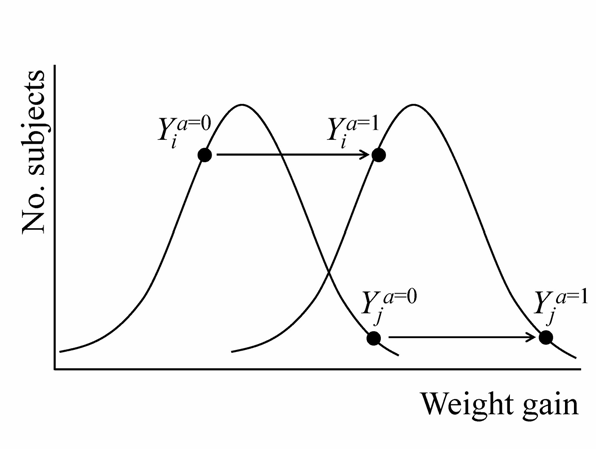
그림 14.1은 =인 층 내에서의 가법 순위 보존의 예를 보여준다. 종 모양 곡선은 반사실적 결과 =0(왼쪽 곡선)과 =1(오른쪽 곡선)의 분포를 나타낸다. 그림 상단의 두 점은 개인 의 두 반사실적 결과 값을 나타내고, 하단의 두 점은 개인 의 두 반사실적 결과 값을 나타낸다. 화살표는 =0에서 =1로의 이동을 나타내며, 이는 이 층의 모든 개인에 대해 1 + 2 와 같다.
그림 14.2(Figure 14.2)
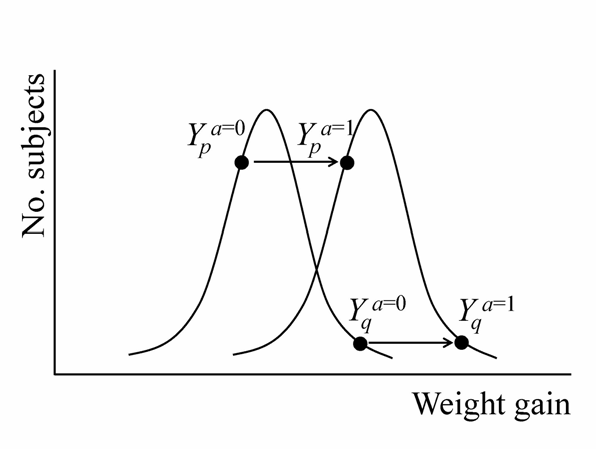
그림 14.2는 또 다른 층 = 0 내에서의 순위 보존의 예를 보여준다. 반사실적 결과의 분포는 층 =에서의 분포와 다르다. 예를 들어 그림 14.1에서 =0의 평균은 그림 14.2에서 =0의 평균보다 왼쪽에 위치하는데, 이는 층 = 0의 개인들이 평균적으로 층 =의 개인들보다 비금연 상태에서 더 작은 체중 증가를 보임을 의미한다. =0에서 =1로의 이동은 개인 와 에 대해 보여준 바와 같이 = 0인 모든 개인에 대해 1 + 2 0이다.
그림 14.3(Figure 14.3)
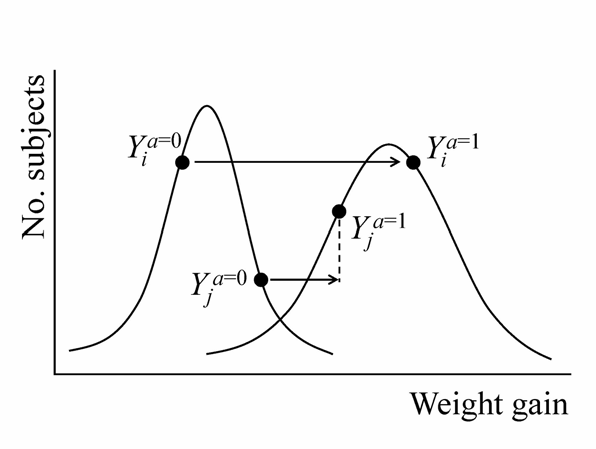
대부분의 처치와 결과에 대해 개별 인과 효과(individual causal effect)는 동일한 공변량 값을 가진 개인들 사이에서 일정할 것으로—심지어 대략적으로 일정할 것으로도—기대되지 않으며, 따라서 (가법 조건부) 순위 보존은 과학적으로 타당하지 않다(implausible). 우리의 예시에서 우리는 동일한 값을 가진 모든 개인의 체중에 금연이 동일하게 영향을 미칠 것으로 기대하지 않는다. 공변량 의 수준 내에서도 어떤 사람들은 유전적으로든 다른 이유로든 다른 사람들보다 금연의 효과에 더 민감하다. 금연의 개별 인과 효과는 사람마다 다를 것이다: 담배를 끊은 후 어떤 개인은 체중이 크게 늘고, 어떤 개인은 거의 늘지 않으며, 다른 개인은 오히려 체중이 줄어들 수도 있다. 현실은 동일한 공변량 값을 가진 개인들 사이에서도 =0에서 =1로의 이동이 다양하고, =0일 때 개인 의 결과가 개인 의 결과보다 작지만 =1일 때는 그렇지 않아 순위조차 보존되지 않는 그림 14.3에 묘사된 상황과 더 닮았을 것이다.
순위 보존의 비현실성 때문에 순위 보존에 의존하는 인과 추론 방법을 일반적으로 사용해서는 안 된다. 사실 이 책에서 다루는 방법들 중 어느 것도 순위 보존을 필요로 하지 않는다. 예를 들어 12장의 주변 구조 평균 모형은 개별 인과 효과가 아니라 평균 인과 효과에 대한 모형이므로 순위 보존을 가정하지 않는다. 금연이 체중 증가에 미치는 추정된 평균 인과 효과는 3.5 kg(95% 신뢰구간: 2.5, 4.5)이었다. 이 평균 효과는 개별 인과 효과의 순위 보존이 성립하는지 여부에 대해 무관(agnostic)하다. 마찬가지로 이전 절의 구조적 중첩 평균 모형도 순위 보존에 대해 아무런 가정을 하지 않았다.
구조적 중첩 평균 모형은 순위 보존이 없는 상황에서도 잘 정의된다. 예를 들어 의 층 내에서 평균 인과 효과를 추정하기 위해 그림 14.3에 묘사된 환경에 대한 모형을 제안할 수 있다. 그러한 평균 인과 효과는 일반적으로 개별 인과 효과와 다를 것이다.
이 절의 가법 순위 보존 모형은 비순위 보존 모형보다 훨씬 더 강한 가정, 즉 동일한 값을 가진 모든 개인에 대해 처치 효과가 일정하다는 가정을 도입한다. 실제로는 이렇게 비현실적인 순위 보존 모형을 사용하고 싶어 할 이유가 없다. 그럼에도 불구하고 우리가 다음 절에서 g-추정을 소개하기 위해 이를 사용하는 이유는, 순위 보존 모형에서 g-추정을 이해하기가 더 쉽고, g-추정 절차는 순위 보존 모형과 비순위 보존 모형에서 실제로 동일하기 때문이다. (조건부 가법) 순위 보존 구조적 모형은 구조적 평균 모형이라는 점에 주목하라—의 수준 내에서 =0에서 =1로의 개별 이동들의 평균은 각각의 개별 이동과 같다.
14.5 g-추정(G-estimation)
이 절은 앞선 세 절의 내용을 연결한다. 목표가 구조적 중첩 평균 모형
\[\text{E}[\^\alpha - \^{\alpha=0} | \ = \alpha, \] = \_1 \alpha\]
의 모수들을 추정하는 것이라고 하자. 단순성을 위해 먼저 단일 모수 1을 갖는 모형을 고려한다. 모형에 곱 항 2 이 없으므로, 우리는 금연의 평균 인과 효과가 의 층에 걸쳐 일정하다고, 즉 에 의한 가법 효과 수정이 없다고 사실상 가정하는 것이다. 또한 우리는 모든 개인 에 대해 가법 순위 보존 모형
\[\^\alpha_\iota - \^{\alpha=0}_\iota = \_1 \alpha\]
이 올바르게 지정되었다고 가정한다. 그러면 개별 인과 효과 1은 우리의 관심 대상인 평균 인과 효과 1과 같다. 이 모형은 모든 개인에 대해 동일하므로 개인을 나타내는 첨자 없이 순위 보존 모형을 − =0 = 1 로 쓴다. 곧 분명해지겠지만, 우리는 이 모형을 다음과 같은 동등한 형태로 쓴다:
\[\^{\alpha=0} = \^\alpha - \_1 \alpha\]
g-추정의 첫 번째 단계는 모형을 관측된 데이터와 연결하는 것이다. 이를 위해 일관성(consistency)에 의해 개인의 관측된 결과 는 그 사람이 처치 = 1을 받았다면 반사실적 결과 =1이고, 처치를 받지 않았다면( = 0) 반사실적 결과 =0임을 기억하라. 따라서 구조적 모형의 고정된 값 를 각 개인의 값 —어떤 사람에게는 1이고 어떤 사람에게는 0일 것이다—로 대체하면, 반사실적 결과 를 개인의 관측된 결과 = 로 대체할 수 있다. 그러면 순위 보존 구조적 모형은 각 개인의 반사실적 결과 =0이 처치 및 결과에 대한 그의 관측된 데이터와 미지의 모수 1의 함수로 표현되는 방정식을 함의한다:
\[\^{\alpha=0} = \ - \_1 \\]
만약 이 모형이 올바르고 우리가 1의 값을 알고 있다면, 연구 모집단의 각 개인에 대해 비처치 하의 반사실적 결과 =0을 계산할 수 있을 것이다. 그러나 우리는 1을 알지 못한다. 이를 추정하는 것이 바로 우리 분석의 목표이다.
게임을 하나 해보자. 당신의 친구가 1의 값을 알고 있지만, 당신에게 1이 다음 중 하나라고만 알려준다고 하자: † = −20, † = 0, 또는 † = 10. 친구가 도전 과제를 낸다: “3개의 가능한 값 † 중에서 참값 1을 찾아낼 수 있겠어?” 당신은 도전을 받아들인다. 각 개인에 대해 세 가지 가능한 값 † 각각에 대해 다음을 계산한다:
\[\(\^\dagger) = \ - \^\dagger \\]
새롭게 생성된 변수 (−20), (0), (10)은 후보 반사실적 결과(candidate counterfactuals)이다. 이들 중 단 하나만이 참된 반사실적 결과 =0이다. 더 구체적으로 말해 † = 1일 때 ( †) = =0이다. 이 게임에서 올바른 1 값을 선택하는 것은 세 가지 후보 반사실적 결과 ( †) 중 어느 것이 참된 반사실적 결과 =0 = ( 1)인지 선택하는 것과 같다. 올바른 ( †)를 선택하는 방법이 떠오르는가?
14.2절에서 조건부 교환가능성 가정이 반사실적 결과와 공변량 이 주어졌을 때의 처치에 대한 로지스틱 모형으로 표현될 수 있음을 상기하라. 조건부 교환가능성이 성립할 때, 반사실적 결과에 대한 모수 1은 0이어야 한다. 따라서 우리는 세 변수 ( †) 중에서 참된 반사실적 결과를 선택하는 간단한 방법을 갖게 된다. 세 가지 후보 ( †) 각각에 대해 하나씩, 세 개의 별도 로지스틱 모형을 적합한다:
\[\text{logit Pr}[\=1 | \(\^\dagger), \] = \_0 + \_1 \(\^\dagger) + \_2 \\]
1 = 0인 후보 ( †)가 바로 반사실적 결과 =0이며, 그에 해당하는 †가 참값 1이다. 예를 들어 ( † = 10)이 공변량 이 주어졌을 때 처치 와 연관되어 있지 않다고 가정해 보자. 그러면 1에 대한 우리의 추정치 ˆ 1은 10이다. 끝났다. 이것이 바로 g-추정이다.
Rosenbaum (1987)은 시간에 따라 변하지 않는 처치에 대해 이 절차의 한 버전을 제안했다.
중요: g-추정은 조건부 교환가능성이 성립하는지 검정하지 않는다; 조건부 교환가능성이 성립한다고 가정한다.
그러나 실제로는 정답을 알고 게임하기를 좋아하는 친구가 없으므로 우리는 모수 1을 직접 g-추정해야 한다. 따라서 우리는 1 = 0인 ( †)를 찾을 때까지 가능한 모든 값 †에 대해 탐색해야 할 것이다. 임의의 구간 내에 무한히 많은 † 값이 존재하므로 가능한 모든 값을 일일이 검정할 수는 없지만, 우리는 가능한 † 값의 범위에 대해 미세 탐색(fine search)을 수행할 수 있다(예: −20에서 20까지 0.01 단위로). 탐색이 미세할수록 참된 추정치 ˆ 1에 더 가까워지겠지만 계산 부담도 커질 것이다.
코드: 프로그램 14.2(Program 14.2)
우리의 금연 예시에서 우리는 먼저 2.0에서 5.0까지 0.1 단위의 † 값들에 대해 31개의 후보 (2.0), (2.1), (2.2), … (4.9), (5.0)의 개인별 값을 계산했다. 그런 다음 금연 확률에 대한 31개의 로지스틱 모형을 각각 적합했다. 이 모형들은 12장에서 IP 가중치의 분모를 추정하는 데 사용된 모형과 정확히 같았으며, 각 모형에 31개 후보 ( †) 중 하나를 추가했다는 점만 달랐다. ( †)에 대한 모수 추정치 ˆ 1은 (3.4)와 (3.5)에서 0에 가장 가까웠다. 더 미세한 탐색 결과 ˆ 1의 최솟값(사실상 0)은 (3.446)에서 나타났다. 따라서 금연이 체중 증가에 미치는 평균 인과 효과 1 = 1에 대한 우리의 g-추정치 ˆ 1은 3.4 kg이다.
우리는 왈드 검정(Wald test)으로부터 P-값을 계산했다. 다른 유효한 검정을 사용할 수도 있다. 예를 들어 계산을 단순화하고(여러 모형을 적합할 필요가 없다) 대규모 표본에서 왈드 검정과 본질적으로 동등한 스코어 검정(Score test)을 사용할 수도 있었다.
3.4라는 우리의 g-추정치 주위로 95% 신뢰구간을 계산하기 위해, 우리는 위에서 적합한 로지스틱 모형들에서 1 = 0이라는 검정에 대한 P-값을 사용했다. 예상대로 P-값은 모수 추정치 ˆ 1 = 0을 산출하는 후보 ( †)의 값인 † = 3.446에서 1(실제로는 0.998)이었다. 2.0과 5.0 사이의 † 값들에 대해 적합한 31개의 로지스틱 모형 중에서, 약 2.5에서 4.5 사이의 † 값에 기초한 ( †)를 포함하는 모든 모형에서 P-값이 0.05보다 컸다. 즉, 검정은 2.5와 4.5 사이의 † 값들의 부분집합에 대해 5% 유의수준에서 무가설을 기각하지 않았다. 검정 결과를 반전(inverting)시킴으로써, 우리는 3.4 주위의 95% 신뢰구간의 한계가 2.5와 4.5라는 결론을 내렸다. 95% 신뢰구간을 계산하는 또 다른 옵션은 g-추정 절차를 붓스트랩(bootstrapping)하는 것이다.
더 일반적으로 g-추정치에 대한 95% 신뢰구간은 1 = 0을 검정할 때 P-값 > 0.05를 산출하는 † 값들의 집합을 찾음으로써 결정된다. 95% 신뢰구간은 1 = 0에 대한 통계 검정의 반전(inversion)을 통해 얻어지며, 95% 신뢰구간의 한계는 P-값 > 0.05인 † 값 집합의 한계가 된다.
세부사항 14.2 (Fine Point 14.2) 측정되지 않은 교란에 대한 민감도 분석(Sensitivity analysis for unmeasured confounding). g-추정은 이 주어졌을 때 조건부 교환가능성이 성립하면 1 = 0이라는 사실에 의존한다. 이제 조건부 교환가능성이 성립하지 않는 환경을 생각해 보자. 예를 들어 배우자가 흡연자인 개인의 경우 금연 확률 가 더 낮고, 배우자의 흡연 상태가 에 포함되지 않은 체중 증가 의 중요한 결정 요인들과 연관되어 있다고 가정하자. 즉, 배우자의 흡연 상태에 의한 측정되지 않은 교란(unmeasured confounding)이 존재한다. 이제 의 변수들만으로는 처치군과 비처치군의 교환가능성을 달성하기에 불충분하므로, 처치 와 반사실적 결과 =0은 을 조건으로 할 때 연관된다. 즉, 1 ≠ 0이며 본문에 설명된 방식대로는 g-추정을 적용할 수 없다.
그러나 g-추정이 반드시 1 = 0일 것을 요구하지는 않는다. 배우자의 흡연 상태에 의한 측정되지 않은 교란 때문에 1이 0이 아니라 0.1일 것으로 예상된다고 가정해 보자. 그러면 1 = 0인지 검정하는 대신 1 = 0.1인지 검정한다는 점만 제외하고 본문에 설명된 대로 g-추정을 적용할 수 있다. g-추정은 이 주어졌을 때 조건부 교환가능성이 성립할 것을 요구하는 것이 아니라, 비교환가능성의 크기—즉 1의 값—가 알려져 있을 것을 요구한다. g-추정의 이러한 특성은 측정되지 않은 교란에 대한 민감도 분석(sensitivity analyses)을 수행하는 데 사용될 수 있다.
만약 이 교란을 충분히 보정하지 못할 수 있다고 생각된다면, 일련의 1 값들로 표현되는 측정되지 않은 교란의 다양한 시나리오 아래에서 g-추정 분석을 반복하고, 각각의 시나리오 하에서의 효과 추정치를 도표로 그릴 수 있다. 그러한 도표는 우리의 효과 추정치가 서로 다른 방향과 크기의 측정되지 않은 교란에 얼마나 민감한지를 보여준다. 이 접근법의 한 가지 실제적인 문제는 측정되지 않은 교란을 1 척도에서 어떻게 정량화할 것인가이다(예: 0.1이 측정되지 않은 교란으로서 큰 값인가?). Robins, Rotnitzky, and Scharfstein (1999)는 g-추정을 사용한 측정되지 않은 교란에 대한 민감도 분석의 기술적 세부사항을 제공한다.
중도절단이 존재하는 경우, 로지스틱 모형의 적합은 필연적으로 중도절단되지 않은 개인( = 0)으로 제한되며, 각 개인의 기여도는 그의 IP 가중치 추정치 로 가중된다. 기술적 사항 14.2를 참고하라.
우리의 예시에서 통계 검정은 중도절단을 보정하기 위한 IP 가중의 사용으로 인해 로버스트 분산 추정량(robust variance estimator)에 기초했다. 따라서 대규모 표본에서 우리의 95% 신뢰구간은 보수적(conservative)이며, 즉 적어도 95%의 확률로 참값을 포함할 것이다. 대규모 표본에서 붓스트랩을 사용하면 보수적이지 않은, 따라서 아마도 더 좁은 g-추정치에 대한 95% 신뢰구간을 얻을 수 있을 것이다.
다시 비순위 보존 모형으로 돌아가 보자. 1에 대한 g-추정 알고리즘(즉, 절차를 구현하는 컴퓨터 코드)은 평균 모형이 올바르게 지정되었다고 가정할 때(즉, 평균 처치 효과가 의 모든 수준에서 동일할 때) 평균 모형의 모수 1의 일치추정량(consistent estimate)을 산출한다. 이는 개별 처치 효과가 일정한지 여부와 무관하게, 즉 조건부 가법 순위 보존이 성립하는지 여부와 무관하게 참이다. 다시 말해 g-추정 알고리즘의 유효성은 평균 모형의 모수 값인 1에 대해 실제로 모든 개인에 대해 ( 1) = =0일 것을 요구하지 않는다. 오히려 알고리즘은 단지 ( 1)과 =0이 이 주어졌을 때 동일한 조건부 평균을 가질 것만을 요구한다.
흥미롭게도 위의 g-추정 절차는 세부사항 14.2에서 설명한 바와 같이 측정되지 않은 교란에 대한 민감도 분석을 통합하도록 쉽게 수정될 수 있다.
14.6 둘 이상의 모수를 갖는 구조적 중첩 모형(Structural nested models with two or more parameters)
우리는 지금까지 단일 모수 1을 갖는 구조적 중첩 평균 모형만을 고려했다. 곱 항 2 이 없다는 것은 금연의 평균 인과 효과가 의 층에 따라 변하지 않는다고 믿고 있음을 함의한다. 만약 실제로 의 일부 성분 에
… 의 일부 구성 요소 에 의한 효과 수정(effect modification)이 실제로 존재하지만 우리가 곱 항(product term) ₂ 를 추가하지 못한 경우이다. 이는 에 의한 효과 수정이 존재하더라도 ₂ 및 ₃ 항을 추가하지 않아도 오지정되지 않는 포화 주변 구조 모형(saturated marginal structural model) E[] = ₀ + ₁ 와 대조적이다. 에 조건화하지 않는 주변 구조 모형은 모집단에서의 평균 인과 효과(average causal effect)를 추정하는 반면, 에 조건화하는 모형은 의 수준 내에서의 평균 인과 효과를 추정한다. 정의상 구조적 중첩 모형(structural nested models)은 모집단에서의 평균 인과 효과가 아니라 교란 요인 의 수준 내에서의 평균 인과 효과를 추정한다. 효과 수정이 존재할 때 구조적 중첩 모형에서 곱 항을 생략하면 일반적으로 모형 오지정(model misspecification)으로 인한 편향이 발생한다.
12장에서 논의했듯이, 주변 구조 모형의 바람직한 속성 중 하나는 무가설 보존(null preservation)이다. 즉, 평균 인과 효과가 없다는 무가설(null hypothesis of no average causal effect)이 참일 때, 모형은 결코 오지정되지 않는다. 구조적 중첩 모형 역시 무가설을 보존한다. 반면에 모수적 g-공식(parametric g-formula)은 시간에 따라 고정된 처치(time-fixed treatments)에 대해서는 무가설을 보존하지만, 시간에 따라 변화하는 설정(time-varying setting)에서는 이 속성을 잃어버린다(제3부 참조).
다행히도 이전 절에서 설명한 g-추정(g-estimation) 절차는 곱 항이 포함된 모형으로 일반화될 수 있다. 예를 들어, 금연의 평균 인과 효과가 기저 시점의 흡연 강도 의 수준에 따라 달라진다고 생각한다고 하자. 그러면 우리는 구조적 중첩 평균 모형 E[ − =0 | = , ] = ₁ + ₂ 와, g-추정을 위한 이에 상응하는 순위 보존 모형(rank-preserving model) − =0 = ₁ + ₂ _를 고려할 수 있다. 구조 모형이 ₁과 ₂라는 두 개의 모수를 가지므로, † = (₁†, ₂†)를 갖는 Pr[=1 | (†), ]에 대한 IP 가중 로지스틱 모형에도 두 개의 모수를 포함해야 한다. 예를 들어 다음과 같은 로지스틱 모형을 적합할 수 있다:
\[\text{logit Pr}[\=1 \mid \(\^\dagger), \] = \_0 + \_1 \(\^\dagger) + \_2 \(\^\dagger)\ + \_3 \\]
그리고 공변량 을 조건으로 처치 와 독립인 (†)를 산출하는 ₁†와 ₂†의 값 조합을 찾는다. 즉, ₁과 ₂를 둘 다 0으로 만드는 ₁†와 ₂†의 값 조합을 탐색해야 한다. 모형에 두 개의 모수가 있으므로 탐색은 2차원 공간에서 수행되어야 한다. 따라서 체계적인 무차별 대입 탐색(brute force search)은 이전 절에서 설명한 것보다 더 복잡해질 것이다.
넬더-미드 심플렉스 방법(Nelder-Mead Simplex method)은 방향 탐색법(directed search method)의 한 예이다.
코드: 프로그램 14.3 (Program 14.3)
통계 소프트웨어에서는 근사적 탐색을 위해 방향 탐색법(directed search methods)으로 알려진 계산 집약도가 낮은 접근법을 사용할 수 있다. 여기서 논의된 것과 같은 선형 평균 모형의 경우—특정 생존 분석(survival analysis) 모형 등과 달리—추정치를 공식으로 직접 계산할 수 있다. 즉, 추정량이 닫힌 형태(closed form)를 가지므로 모수의 가능한 값에 대한 탐색이 필요하지 않다(자세한 내용은 기술적 사항 14.2 참조).
우리의 금연 예시에서 g-추정치는 ˆ₁ = 2.86 및 ˆ₂ = 0.03이었다. 이에 대응하는 95% 신뢰구간은 ₁ = ₂ = 0에 대한 결합 검정(joint test)의 P-value를 사용하거나, 더 간단하게는 붓스트랩(bootstrapping)을 사용하여 계산할 수 있다.
모수가 여러 개인 구조적 중첩 모형이 반드시 필요한 것은 아니라고 주장할 수도 있다. 만약 의 모든 변수가 이산형이고 연구 모집단이 크다면, 벡터 에 포함된 공변량들의 결합 수준(joint levels)으로 정의되는 모집단의 각 하위집합에 대해 별도의 1-모수 모형을 적합할 수 있기 때문이다.
더 일반적인 경우라면, 금연의 평균 인과 효과가 에 속한 변수들의 모든 층에 걸쳐 달라질 수 있도록 허용하는 모형을 고려할 것이다. 이분형 변수의 경우, 상응하는 순위 보존 모형 − =0 = ₁ + \(\sum_{\=1}^\\) ₂ _는 + 1개의 모수 ₁, ₂₁, …, ₂를 갖는다. 여기서 ₂는 곱 항 에 대응하는 모수이고 는 의 개 구성 요소 중 하나를 나타낸다. 전체 연구 모집단에서의 평균 인과 효과는 \(\_1 + \frac{1}{\} \sum_{\=1}^\ \_{2\} \sum_{\=1}^\ \_{\\}\)로 계산될 수 있으며, 여기서 은 연구 내 개인의 수이다. 실제로는 여러 개의 모수를 갖는 구조적 중첩 모형이 거의 사용되지 않았다. 사실 어떤 유형이든 구조적 중첩 모형은 거의 사용되지 않았는데, 부분적으로는 사용자 친화적인 소프트웨어의 부족 때문이고, 부분적으로는 이러한 모형을 생존 분석으로 확장하는 데 몇 가지 추가적인 고려사항이 필요하기 때문이다(17장 참조). 이제 우리는 교란을 보정하기 위해 가장 널리 사용되는 두 가지 접근법인 결과 회귀(outcome regression)와 성향 점수(propensity scores)를 살펴본다.
기술적 사항 14.2 (Technical Point 14.2) 구조적 중첩 평균 모형의 g-추정(G-estimation of structural nested mean models).
구조적 중첩 모형 \(\text{E}[^\alpha - ^{\alpha=0} \mid \ = \alpha, \] = \_1 \alpha\)를 고려하자. 본문에서 설명한 가정 아래에서 g-추정을 통해 \(\_1\)의 일치추정치(consistent estimate)를 얻을 수 있다. 구체적으로 우리의 \(\_1\) 추정치는 \(\(\^\dagger)\)와 \(\\) 사이의 연관성을 최소화하는 \(\(\^\dagger)\)의 값이다. 스코어 검정(score test, 예: Casella and Berger 2002 참조)에 g-추정의 기초를 둘 때, 이 절차는 다음 추정 방정식(estimating equation)을 만족하는 모수 값 \(\^\dagger\)를 찾는 것과 동등하다:
\[\sum_{\=1}^\ \text{I}[_\ = 0] \^C_\ \_\(\^\dagger)(\_\ - \text{E}[\_\ \mid \_\]) = 0\]
여기서 지시자 \(\text{I}[_\ = 0]\)은 개인 \(\\)에 대해 \(_\ = 0\)이면 1의 값을 취하고 그렇지 않으면 0의 값을 취하며, IP 가중치 \(\^C_\\)와 기댓값 \(\text{E}[\_\ \mid \_\] = \text{Pr}[\_\ = 1 \mid \_\]\)는 이들의 추정치로 대체된다. \(\text{E}[\_\ \mid \_\]\)는 공변량 \(\\)을 조건으로 하는 처치에 대한 로지스틱 모형으로부터 추정될 수 있는데, 이 모형에서 개인 \(\\)의 기여분은 \(_\ = 0\)일 때 \(\^C_\\)로 가중되고 그렇지 않으면 0이다. [\(\\)와 \(\\)은 모든 개인에 대해 관측되므로, 모든 개인을 사용하여 \(\\)를 \(\\)에 회귀시키는 비가중 로지스틱 회귀로 \(\text{E}[\_\ \mid \_\]\)를 추정할 수도 있다.] 이 방정식의 해는 닫힌 형태(closed form)를 가지므로 직접 계산될 수 있다. 즉, 모수 공간에 대한 탐색이 필요하지 않다. 구체적으로 \(\_\(\^\dagger) = _\ - \^\dagger \_\\)라는 사실을 이용하면 \(\hat{\}}_1\)이 다음과 같음을 얻는다:
\[\hat{\}}_1 = \frac{\sum_{\=1}^\ \text{I}[_\ = 0] \^C_\ _\ (\_\ - \text{E}[\_\ \mid \_\])}{\sum_{\=1}^\ \text{I}[_\ = 0] \^C_\ \_\ (\_\ - \text{E}[\_\ \mid \_\])}\]
만약 \(\\)가 \(D\)차원이라면, 추정 방정식의 좌변에 \(\\)의 \(D\)차원 벡터 함수를 곱한다. 함수의 선택은 추정량의 통계적 효율성(statistical efficiency)에는 영향을 미치지만, 일치성(consistency)에는 영향을 미치지 않는다. 즉, 함수의 모든 선택이 유효한 신뢰구간을 산출하지만, 신뢰구간의 길이는 함수에 따라 달라진다. Robins(1994)는 구조적 중첩 평균 모형에 대한 형식적 설명을 제공하고, 신뢰구간 길이를 최소화하는 함수를 유도했다.
당연히 떠오르는 질문은 위의 추정 방정식에서 \(\_\(\^\dagger)\)를 \(\_\(\^\dagger)^3\)과 같은 비선형 함수로 대체하여 추정치의 일치성을 유지하면서도 효율성을 더 높일 수 있는지 여부이다. 이번 장에서 설명한 구조적 중첩 평균 모형처럼 식별을 위해 오직 \(\\)을 조건으로 하는 평균 독립성(mean independence), 즉 \(\text{E}[\(\_1) \mid \, \] = \text{E}[\(\_1) \mid \]\)만을 부여하는 모형의 경우 추정 방정식에서 \(\_\(\^\dagger)\)의 비선형 함수를 사용할 수 없다. \(\_\(\^\dagger)\)의 비선형 함수는 \((\=\alpha, \)\)이 주어졌을 때 \(^\alpha\) 분포의 백분위수를 \((\=\alpha, \)\)이 주어졌을 때 \(^0\) 분포의 백분위수로 매핑하는 구조적 중첩 분포 모형(structural nested distribution models, 이번 장에서는 설명되지 않음)과 같이 분포적 독립성(distributional independence), 즉 \(\(\_1) \perp\!\perp \ \mid \\)을 부여하는 모형에 사용될 수 있다. \(\\)의 추정량은 \(\text{E}[\ \mid \]\)과 \(\text{Pr}[ = 1 \mid \, \]\)을 추정하는 데 사용된 모형이 둘 다 올바를 때에만 일치한다.
우리는 추정 방정식에서 \(\(\^\dagger)\)를 \(\(\^\dagger) - \text{E}[\(\^\dagger) \mid \]\)로 대체하고, 중도절단되지 않은 개인들 사이에서 \(\text{E}[\(\^\dagger) \mid \] = \text{E}[^{\alpha=0} \mid \]\)에 대한 비가중 선형 모형을 적합하여 후자의 조건부 기댓값을 추정함으로써 더 로버스트한(robust) 추정량을 구축할 수 있다. 만약 이 모형이 올바르다면, 수정된 추정 방정식을 푸는 \(\\)의 추정치는 위의 \(\text{E}[\ \mid \]\)과 \(\text{Pr}[ = 1 \mid \, \]\)에 대한 모형이 둘 다 틀리더라도 여전히 일치성을 유지한다. 따라서 우리는 (i) \(\text{E}[\(\^\dagger) \mid \]\)에 대한 모형 또는 (ii) \(\text{E}[\ \mid \]\)과 \(\text{Pr}[ = 1 \mid \, \]\)에 대한 두 모형 중 어느 하나가 올바르면, (i)과 (ii) 중 어느 것이 올바른지 알지 못하더라도 \(\\)의 일치추정량을 얻게 된다. 우리는 이러한 추정량을 이중 로버스트(doubly robust)하다고 부른다. Robins(2000)는 선형 구조적 중첩 평균 모형에 대한 이중 로버스트 추정량의 닫힌 형태를 설명했다.
제15장 결과 회귀와 성향 점수(Outcome Regression and Propensity Scores)
결과 회귀(outcome regression)와 다양한 버전의 성향 점수 분석(propensity score analyses)은 인과 추론(causal inference)을 위해 가장 흔히 사용되는 모수적 방법(parametric methods)이다. 독자 여러분은 왜 우리가 이 방법들을 논의하는 장을 이제서야 포함시켰는지 당연히 의아해할 수 있다. 지금까지 우리는 역확률 가중(IP weighting, inverse probability weighting), 표준화(standardization), g-추정(g-estimation)—즉 g-방법들(g-methods)—을 설명했다. 가장 흔히 쓰이는 방법들을 가장 덜 쓰이는 방법들 뒤에 제시하는 것은 얼핏 이상한 선택처럼 보인다. 왜 우리는 결과 회귀와 성향 점수에 기반한 더 단순하고 널리 쓰이는 방법부터 시작하지 않았을까?
그 이유는 이 방법들이 일반적인 상황에서는 작동하지 않기 때문이다. 더 정확히 말하면, 이 장에서 다 요약할 수 없을 만큼 수없이 많은 출판물에 기술된 단순한 결과 회귀 및 성향 점수 방법들은 단순한 환경에서는 잘 작동하지만, 시간에 따라 변화하는 처치(time-varying treatments)가 수반되는 인과 추론의 복잡성을 다루도록 설계되지 않았다. 제3부에서 우리는 g-방법들을 다시 논의하겠지만, 전통적인 결과 회귀와 성향 점수 방법에 대해서는 거의 다루지 않을 것이다. 이번 장은 흔히 사용되지만 복잡한 종단적 데이터(longitudinal data)에 대해서는 적용 가능성이 제한적인 인과적 방법들에 할애된다.
15.1 결과 회귀(Outcome regression)
지난 세 개 장에서 우리는 금연(처치) 가 체중 증가(결과) 에 미치는 평균 인과 효과(average causal effect)를 추정하기 위해 IP 가중, 표준화, g-추정을 설명했다. 또한 관심 있는 하위집단으로 분석을 제한하거나 주변 구조 모형(marginal structural models, 12장) 및 구조적 중첩 모형(structural nested models, 14장)에 곱 항(product terms)을 추가함으로써 모집단의 하위집단 내에서 평균 인과 효과를 추정하는 방법도 설명했다. 구조적 중첩 모형을 예로 들어보자. 이 모형들은 처치 와 변수 사이의 곱 항에 대한 모수를 포함하지만, 변수 자체에 대한 모수는 포함하지 않는다. 이는 의 수준 내에서 가 에 미치는 인과 효과에 관심이 있을 뿐 과 사이의 (비인과적) 관계에는 관심이 없기 때문에 구조적 중첩 모형의 매력적인 속성이다. - 관계의 함수 형태에 대해 불가지론적인(agnostic) 방법—구조적 중첩 모형의 g-추정—은 이 관계의 오지정으로 인한 편향으로부터 보호된다.
상기: 우리는 평균 인과 효과를 E[=1,=0] − E[=0,=0]으로 정의했다. 우리는 성별, 연령, 인종, 교육 수준, 흡연 강도 및 기간, 일상생활에서의 신체 활동, 여가 운동, 체중이라는 변수들을 조건으로 처치군과 비처치군의 교환가능성(exchangeability)이 달성된다고 가정했다.
12장에서 우리는 이 모형을 가짜 주변 구조 모형(faux marginal structural model)이라고 불렀는데, 주변 구조 모형의 형태를 띠고 있지만 그 모수를 추정하는 데 IP 가중이 필요하지 않기 때문이다. 안정화 IP 가중치 ()은 모형이 의 하위집합 가 아니라 전체 벡터 에 조건부이기 때문에 모두 1과 같다.
반면에 의 수준 내에서 - 연관(association)을 기꺼이 지정하고자 한다면, 다음과 같은 구조 모형을 고려할 것이다:
\[\text{E}[^{\alpha, \chi=0} \mid \] = \_0 + \_1 \alpha + \_2 \alpha\ + \_3 \\]
여기서 ₂와 ₃은 벡터 모수이다. 의 각 층(stratum)에서 금연 가 체중 증가 에 미치는 평균 인과 효과는 ₁과 ₂의 함수이며, 의 각 층에서 비처치 하에서의 평균 반사실적 결과는 ₀과 ₃의 함수이다. 모수 ₃은 흔히 의 주효과(main effect)로 불리지만, ’효과’라는 단어의 사용은 오해의 소지가 있는데 ₃이 의 인과 효과로서의 해석을 갖지 못할 수 있기 때문이다(에 대한 교란이 존재할 수 있다). 모수 ₃은 우리의 구조 모형에서 볼 수 있듯이 반사실적 결과 \(^{\alpha=0, \chi=0}\)의 평균이 의 함수로서 어떻게 변화하는지를 정량화할 뿐이다.
세부사항 15.1 (Fine Point 15.1) 성가신 모수(Nuisance parameters).
우리의 목표가 인과 모수 ₁과 ₂를 추정하는 것이라고 하자. 결과 회귀 모형 \(\text{E}[^{\alpha, \chi=0} \mid \] = \_0 + \_1 \alpha + \_2 \alpha\ + \_3 \\)을 적합하여 이를 수행할 때, ₁과 ₂의 추정치는 일반적으로 \(\_0 + \_3 \\)이 에 대한 평균 \(\text{E}[^{\alpha=0, \chi=0} \mid \]\)의 의존성을 올바르게 모형화할 때에만 일치한다. 우리는 모수 ₀과 ₃이 우리의 주된 관심 모수가 아니기 때문에 이들을 성가신 모수(nuisance parameters)라고 부른다.
반면에 구조적 중첩 모형 \(\text{E}[^{\alpha, \chi=0} - ^{\alpha=0, \chi=0} \mid \] = \_1 \alpha + \_2 \alpha\\)의 g-추정으로 ₁과 ₂를 추정한다면, ₁과 ₂의 추정치는 일반적으로 이 주어졌을 때 처치의 조건부 확률 \(\text{Pr}[\=1 \mid \]\)이 올바를 때에만 일치한다. 즉, \(\text{logit Pr}[\=1 \mid \] = \_0 + \_1 \\)과 같은 처치 모형의 모수들이 이제 성가신 모수가 된다.
예를 들어, 공변량 이 실제로는 선형 및 이차 형태인 \(\_3 \ + \_4 \^2\)이어야 하는데 결과 회귀 모형에서 선형 항 \(\_3 \\)으로 모형화된다면 편향이 발생할 것이다. 구조적 중첩 모형은 구조 모형에서 - 관계가 지정되지 않으므로 결과 회귀 모형의 오지정에 영향을 받지 않는다. 그러나 구조적 중첩 모형의 g-추정을 사용할 때 처치 모형에서 - 관계가 오지정되면 편향이 발생한다. 대칭적으로 결과 회귀 모형은 처치 모형의 오지정에 영향을 받지 않는다. 시간에 따라 변하지 않는 고정된 처치의 경우, 어떤 방법을 사용할 것인지는 결과 모형의 성가신 모수와 처치 모형의 성가신 모수 중 어느 쪽이 더 정확하게 추정될 수 있다고 믿는지 결정하는 문제로 귀결된다. 가능할 때 더 나은 대안은 이중 로버스트 방법(doubly robust methods, 세부사항 13.2 참조)을 사용하는 것이다.
₀과 ₃처럼 인과적 해석을 갖지 않는 모수에 대한 논의는 세부사항 15.1을 참조하라.
교환가능성, 양수성(positivity), 잘 정의된 개입(well-defined interventions) 조건 아래에서, 의 층에 속한 모든 개인이 처치를 받고 중도절단되지 않았을 경우의 반사실적 평균 결과 \(\text{E}[^{\alpha=1, \chi=0} \mid \ = \lambda]\)는 중도절단되지 않은 처치군에서의 대응하는 평균 결과 \(\text{E}[ \mid \=1, =0, \=\lambda]\)와 같다. 비처치군에 대해서도 마찬가지이다. 따라서 위 구조 모형의 모수들은 13.2절에서 설명한 바와 같이 결과 회귀 모형
\[\text{E}[ \mid \, =0, \] = \_0 + \_1 \ + \_2 \\ + \_3 \\]
을 적합함으로써 보통최소제곱법(ordinary least squares)을 통해 추정될 수 있다. 3장의 층화(stratification)와 마찬가지로, 결과 회귀는 의 각 층에서 처치의 인과 효과를 추정함으로써 교란을 보정한다. 만약 변수 이 교란(및 선택 편향)을 보정하기에 충분하고 결과 모형이 올바르게 지정되었다면, 더 이상의 보정은 필요하지 않다. 즉, 회귀 모형의 모수 는 구조 모형의 모수 와 같다.
₀과 ₃은 \(^{\alpha=0, \chi=0}\)의 에 대한 의존성을 지정하며, 이는 모형이 (i) 평균 반사실적 결과와 (ii) 덧셈 척도가 아닌 곱셈 척도(multiplicative scale)에서의 조건부(의 수준 내) 효과를 추정하는 데 사용될 때 필요하다.
13.2절에서 결과 회귀는 표준화된 결과 평균을 추정하기 위한 중간 단계였다. 여기서는 결과 회귀가 절차의 최종 단계이다. 한계 평균(marginal mean)을 추정하기 위해 조건부 평균의 추정치들을 표준화하는 대신, 우리는 단순히 조건부 평균 추정치들을 비교한다. 13.2절에서 우리는 ₂에 단 하나의 곱 항(와 흡연 강도 사이)만 포함된 회귀 모형을 적합했다. 즉, 대부분의 곱 항을 사전에 0으로 설정한 모형이다. 13.2절과 동일한 모형을 사용하여, 여기서 우리는 모수 추정치 \(\hat{\}}_1 = 2\text{.}6\) 및 \(\hat{\}}_2 = 0\text{.}05\)를 얻었다.
코드: 프로그램 15.1 (Program 15.1)
예를 들어 효과 추정치 \(\text{E}[ \mid \=1, =0, \] - \text{E}[ \mid \=0, =0, \]\)는 하루 5개비를 피우는 사람들의 경우 2.8 (95% 신뢰구간: 1.5, 4.1)이었고, 하루 40개비를 피우는 사람들의 경우 4.4 (95% 신뢰구간: 2.8, 6.1)였다.
결과 회귀에 대한 흔한 접근법은 의 어떤 변수에 의해서도 효과 수정이 없다고 가정하는 것이다. 그러면 모형은 어떠한 곱 항도 없이 적합되며, \(\hat{\}}_1\)은 처치의 조건부 평균 인과 효과와 주변 평균 인과 효과 모두의 추정치가 된다.
우리의 예시에서 곱 항이 없는 모형은 3.5 (95% 신뢰구간: 2.6, 4.3) kg이라는 추정치를 산출했다.
이번 장에서 우리는 결과 회귀 모형을 적합하는 방법을 설명할 필요가 없었는데, 모수적 g-공식의 구성 요소를 추정할 때 13장에서 이미 설명했기 때문이다. 이산형 결과에 대해 결과 회귀를 사용하는 것 역시 똑같이 간단하다. 예를 들어 이분형 결과 에 대해 \(\text{Pr}[=1 \mid \=\alpha, =0, \]\)에 대한 로지스틱 모형을 적합할 수 있다.
15.2 성향 점수(Propensity scores)
IP 가중(12장)과 g-추정(14장)을 사용할 때, 우리는 각 개인에 대해 공변량 이 주어졌을 때 처치를 받을 조건부 확률 \(\text{Pr}[\=1 \mid \]\)을 추정했다. 이 조건부 확률을 ()라고 부르자. ()의 값은 처치를 받을 확률이 낮은 개인의 경우 0에 가깝고, 처치를 받을 확률이 높은 개인의 경우 1에 가깝다. 즉, ()은 공변량 에 가용한 정보가 주어졌을 때 개인이 처치를 받을 성향(propensity)을 측정한다. ()이 성향 점수(propensity score)라고 불리는 것은 당연하다.
코드: 프로그램 15.2 (Program 15.2) 여기서는 이분형 처치에 대한 성향 점수만 고려한다. IP 가중과 g-추정 및 기타 관련 이중 로버스트 추정량을 제외한 성향 점수 방법들은 비이분형 처치(nondichotomous treatments)로 일반화하기 어렵다.
개인의 절반이 처치 = 1에 배정되는 이상적인 무작위 시험에서, 성향 점수 () = 0.5는 모든 개인에 대해 동일하다. 또한 을 어떻게 선택하든 () = 0.5임에 주목하라. 반면에 관찰 연구에서는 어떤 개인이 다른 개인보다 처치를 받을 가능성이 더 높을 수 있다. 처치 배정이 연구자의 통제 밖에 있기 때문에 참된 성향 점수 ()은 알 수 없으며, 따라서 데이터로부터 추정되어야 한다.
우리의 예시에서 우리는 공변량 을 조건으로 금연 확률에 대한 로지스틱 모형을 적합하여 성향 점수 ()을 추정할 수 있다. 이는 우리가 IP 가중과 g-추정에 사용했던 것과 동일한 모형이다. 이 모형 아래에서 개인 22941은 가장 낮은 성향 점수 추정치(0.053)를, 개인 24949는 가장 높은 추정치(0.793)를 갖는 것으로 추정되었다. 그림 15.1(Figure 15.1)은 금연자 = 1(아래)과 비금연자 = 0(위)에서의 추정된 성향 점수의 분포를 보여준다. 예상대로 담배를 끊은 사람들은 담배를 끊지 않은 사람들(0.245)보다 평균적으로 더 높은 추정 금연 확률(0.312)을 가졌다. 만약 ()의 분포가 처치군 = 1과 비처치군 = 0에서 동일하다면 으로 인한 교란은 없을 것이며, 즉 인과 다이어그램에서 에서 로 향하는 열린 경로가 없을 것이다.
그림 15.1 (Figure 15.1)
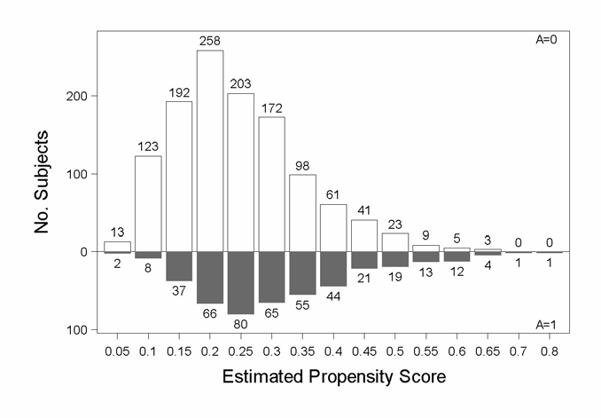
연구 모집단에서는 표본추출 변동성으로 인해 참된 성향 점수가 공변량 을 대략적으로만 “균형화(balances)”한다. 올바른 모형에 기초한 추정 성향 점수는 일반적으로 더 나은 균형을 제공한다.
동일한 성향 점수 ()을 가진 개인들도 일반적으로 일부 공변량 의 값은 다를 것이다. 예를 들어 () = 0.2인 두 개인은 흡연 강도와 운동 측면에서 다를 수 있지만, 의 모든 변수가 주어졌을 때 금연할 가능성은 같을 수 있다. 즉, 두 개인은 처치군 = 1에 속하게 될 동일한 조건부 확률을 갖는다. 초모집단에서 ()의 특정 값을 가진 모든 개인을 고려할 때, 이 집단은 의 서로 다른 값을 가진 개인들(예: 서로 다른 흡연 강도와 운동량)을 포함하겠지만, 의 분포는 처치군과 비처치군에서 동일할 것이다. 즉, ⊥⊥ | ()이다. 우리는 성향 점수가 처치군과 비처치군 사이에서 공변량을 균형화(balances)한다고 말한다.
물론 성향 점수는 측정된 공변량 만을 균형화할 뿐이며, 이는 측정되지 않은 요인에 의한 잔여 교란(residual confounding)을 방지하지 못한다. 무작위 배정은 측정된 공변량과 측정되지 않은 공변량을 모두 균형화하므로 교란을 제거하는 데 선호되는 방법이다. 균형 점수의 형식적 정의는 기술적 사항 15.1을 참조하라.
기술적 사항 15.1 (Technical Point 15.1) 균형 점수와 예후 점수(Balancing scores and prognostic scores).
본문에서 논의했듯이, 성향 점수 ()은 처치군과 비처치군 사이에서 공변량을 균형화한다. 사실 성향 점수 ()은 균형 점수(balancing score)의 가장 단순한 예이다. 더 일반적으로, 균형 점수 ()은 ⊥⊥ | ()을 만족하는 공변량 의 임의의 함수이다. 즉, 균형 점수의 각 값에 대해 공변량 의 분포는 처치군과 비처치군에서 동일하다.
Rosenbaum과 Rubin(1983)은 변수 에 기초한 교환가능성과 양수성이 균형 점수 ()에 기초한 교환가능성과 양수성을 함의함을 증명했다. 을 보정하는 것으로 충분하다면, 성향 점수 ()을 포함한 균형 점수 ()을 보정하는 것으로도 충분하다.
그림 15.2의 인과 다이어그램은 그림 7.1에 표현된 환경에 대한 성향 점수를 묘사한다: ()은 에서 ()으로 향하는 결정론적(deterministic) 화살표를 갖는 과 사이의 중간 노드로 볼 수 있다. ()이 에서 으로 향하는 모든 뒷문 경로(backdoor paths)를 차단한다는 점에 주목함으로써 우리는 () 보정의 충분성에 대한 증명을 제시한 셈이다.
균형 점수 ()의 대안은 예후 점수(prognostic score) (), 즉 =0 ⊥⊥ | ()을 만족하는 공변량 의 함수이다. 균형 점수와 예후 점수 모두에 대해 보정 방법이 개발될 수 있지만, 예후 점수에 대한 방법은 더 강한 가정을 필요로 하며 시간에 따라 변화하는 처치로 쉽게 확장될 수 없다. 예후 점수에 대한 논의는 Hansen(2008) 및 Abadie et al.(2013)을 참조하라.
| (2008) and Abadie | et al (2013) | for a | discussion | of | prognostic | scores. |
|---|
| for a formal | definition | of a balancing | score. |
|---|
이 교란과 선택 편향을 보정하기에 충분하다면, () 역시 충분하다. 이 결과는 1983년에 발표된 영향력 있는 논문에서 Rosenbaum과 Rubin에 의해 유도되었다.
무작위 실험에서 추정된 ()은 공변량의 체계적 불균형과 무작위 불균형을 모두 보정하므로, 무작위 불균형을 무시하는 참된 ()에 대한 보정보다 더 우수하다.
우리가 논의했던 인과 추론의 모든 방법과 마찬가지로, 성향 점수 방법의 사용은 교환가능성, 양수성, 일관성이라는 식별 조건(identifying conditions)을 필요로 한다. 성향 점수 방법의 사용은 다음 핵심 결과에 의해 정당화된다: 공변량 의 수준 내에서 처치군과 비처치군의 교환가능성은 성향 점수 ()의 수준 내에서의 교환가능성을 함의한다. 즉, 조건부 교환가능성 ⊥⊥ | 은 ⊥⊥ | ()을 함의한다. 나아가 성향 점수 ()의 수준 내에서의 양수성—어떤 개인도 1 또는 0과 같은 성향 점수를 갖지 않음을 의미함—은 2장에서 정의한 공변량 의 수준 내에서의 양수성이 성립할 때에만 성립하며 그 역도 참이다.
성향 점수 ()의 수준 내에서의 교환가능성과 양수성 아래에서, 성향 점수는 층화(결과 회귀 포함), 표준화, 매칭을 사용하여 인과 효과를 추정하는 데 사용될 수 있다. 다음 두 절에서는 이러한 각 방법을 구현하는 방식을 설명한다. 첫 번째 단계로서 우리는 관찰 데이터로부터 성향 점수 ()을 추정하는 것으로 시작해야 하며, 그런 다음 층화, 표준화, 또는 매칭을 위해 공변량 대신 추정된 성향 점수를 사용하는 단계로 나아간다.
15.3 성향 층화와 표준화(Propensity stratification and standardization)
그림 15.2 (Figure 15.2)
성향 점수 ()의 특정 값 를 가진 개인들 사이에서의 평균 인과 효과, 즉 \(\text{E}[^{\alpha=1, \chi=0} \mid \(\) = \sigma] - \text{E}[^{\alpha=0, \chi=0} \mid \(\) = \sigma]\)는 식별 조건 아래에서 \(\text{E}[ \mid \=1, =0, \(\)=\sigma] - \text{E}[ \mid \=0, =0, \(\)=\sigma]\)와 같다. 이 조건부 효과는 참된 성향 점수의 값 를 가진 개인들로 분석을 제한함으로써 추정될 수 있을 것이다. 그러나 성향 점수 ()은 일반적으로 0과 1 사이의 임의의 값을 취할 수 있는 연속형 변수이다. 따라서 두 개인이 정확히 동일한 값 를 가질 가능성은 거의 없다. 예를 들어 오직 개인 22005만이 추정된 () 값 0.6563을 가졌으며, 이는 해당 특정 값을 가진 처치군과 비처치군을 비교함으로써 () = 0.6563인 개인들 사이의 인과 효과를 추정할 수 없음을 뜻한다.
연속형 성향 점수를 다루는 한 가지 접근법은 ()의 값이 동일하지는 않더라도 유사한 개인들을 포함하는 층(strata)을 만드는 것이다. 추정된 ()의 십분위수(deciles)는 널리 쓰이는 선택이다: 모집단의 개인들을 대략 같은 크기의 10개 층으로 분류한 다음, 각 층에서 인과 효과를 추정한다.
코드: 프로그램 15.3 (Program 15.3)
우리의 예시에서 각 십분위수 층은 약 162명의 개인을 포함했다. 금연이 체중 증가에 미치는 효과는 십분위수에 걸쳐 0.0에서 6.6 kg까지 다양했지만, 이 점 추정치들 주변의 95% 신뢰구간은 넓었다.
우리는 또한 공변량으로서 처치 , 추정된 ()의 십분위수에 대한 9개의 지시 변수(십분위수 중 하나는 기준 수준이며 모형의 절편에 이미 포함되어 있음), 그리고 와 지시 변수들 사이의 9개 곱 항을 포함하는 \(\text{E}[ \mid \, =0, \(\)]\)에 대한 결과 회귀 모형을 적합하여 이러한 효과 추정치들을 얻을 수도 있었다. 추정된 ()의 십분위수를 이용한 결과 회귀의 대부분의 적용 사례에서는 곱 항을 포함하지 않는다. 즉, ()에 의한 효과 수정이 없다고 가정한다. 우리의 예시에서 곱 항이 없는 모형은 3.5 kg (95% 신뢰구간: 2.6, 4.4)의 효과 추정치를 산출한다. 성향 점수에 의한 효과 수정에 대한 자세한 내용은 세부사항 15.2를 참조하라.
십분위수나 성향 점수의 다른 함수로 층화하는 것은 잠재적인 문제를 야기한다: 일반적으로 연속형 ()의 분포는 일부 층(예: 십분위수) 내에서 처치군과 비처치군 사이에 다를 것이다. 예를 들어 어떤 층에서 처치군의 평균 ()이 비처치군의 평균 ()보다 크다면, 그 층에서 처치군과 비처치군은 교환가능하지 않을 수 있다. 이전 장들에서 우리가 IP 가중과 g-추정을 통해 구조 모형의 모수를 추정하기 위해 성향 점수의 함수를 사용했을 때는 이 문제가 발생하지 않았는데, 그 방법들은 십분위수와 같은 범주형 변환이 아니라 추정된 확률의 수치적 값을 직접 사용했기 때문이다. 마찬가지로 \(\text{E}[ \mid \, =0, \(\)]\)에 대한 결과 회귀에서 추정된 성향 점수 ()을 지시 변수들의 집합이 아닌 연속형 공변량으로 사용할 때도 이 문제는 발생하지 않는다. 우리의 예시에서 이 후자의 접근법을 사용했을 때 효과 추정치는 3.6 (95% 신뢰구간: 2.7, 4.5) kg이었다.
주의: 이분형 처치 에 대한 IP 가중치의 분모는 성향 점수 () 자체가 아니라 ()의 함수이다. 분모는 처치군( = 1)의 경우 ()이고 비처치군( = 0)의 경우 1 − ()이다.
우리의 추론의 타당성은 ()과 평균 결과 사이의 관계에 대한 올바른 지정(우리는 이를 선형으로 가정함)에 의존한다. 그러나 성향 점수는 다차원 의 1차원 요약치이므로, 성향 점수에 대한 단일 선형 항 대신 3차 스플라인(cubic splines)과 같은 유연한 모형을 적합함으로써 이 관계의 오지정을 쉽게 방지할 수 있다. IP 가중과 g-추정은 성향 점수와 결과 사이의 관계에 대해 불가지론적이었다는 점에 주목하라.
성향 점수가 1차원일지라도, 우리는 여전히 처치를 고차원 에 회귀시키는 모형으로부터 성향 점수를 추정해야 한다. 이는 IP 가중과 g-추정에도 똑같이 적용된다.
\(\text{E}[ \mid \, =0, \(\)]\)에 대한 우리의 모수적 가정이 올바르고 교환가능성과 양수성이 성립할 때, 이 모형은 성향 점수의 모든 수준 내에서의 평균 인과 효과 \(\text{E}[^{\alpha=1, \chi=0} \mid \(\) = \sigma] - \text{E}[^{\alpha=0, \chi=0} \mid \(\)=\sigma]\)를 추정한다. 만약 우리가 전체 연구 모집단에서의 평균 인과 효과 \(\text{E}[^{\alpha=1, \chi=0}] - \text{E}[^{\alpha=0, \chi=0}]\)에 관심이 있다면, 성향 점수의 분포를 사용하여 조건부 평균 \(\text{E}[ \mid \, =0, \(\)]\)을 표준화할 것이다. 이 절차는 변수 을 추정된 ()으로 대체한다는 점을 제외하고는 연속형 변수에 대해 13장에서 설명한 절차와 동일하다. 이 절차는 결과 모형에서 처치 와 추정된 () 사이의 곱 항을 자연스럽게 포함할 수 있음에 주목하라. 우리의 예시에서 표준화된 효과 추정치는 3.6 (95% 신뢰구간: 2.7, 4.6) kg이었다.
코드: 프로그램 15.4 (Program 15.4)
15.4 성향 매칭(Propensity matching)
성향 점수 ()에 대한 매칭 과정은 4장에서 설명한 단일 연속형 변수 에 대한 매칭과 유사하다.
성향 매칭 후 매칭된 모집단은 처치군, 비처치군, 또는 임의의 다른 분포의 () 분포를 갖는다.
과거 매칭의 단점은 효과 추정치의 분산을 계산하는 방법을 아무도 모른다는 것이었다. Abadie와 Imbens(2006)의 연구 덕분에 이제는 더 이상 그렇지 않다.
성향 매칭에는 여러 형태가 있다. 이들 모두는 처치군과 비처치군이 동일한 () 분포를 가짐으로써 서로 교환가능해지는 매칭된 모집단을 형성하고자 시도한다. 예를 들어 비처치군을 처치군에 매칭할 수 있다: 각 처치받은 개인은 동일한 성향 점수 값을 가진 하나(또는 그 이상)의 비처치 개인과 짝을 이룬다. 처치-비처치 쌍(또는 세트)으로 구성된 원래 모집단의 하위집합이 바로 매칭된 모집단(matched population)이다. ()이 주어졌을 때 교환가능성과 양수성 아래에서, 매칭된 모집단에서의 연관 측도(association measures)는 효과 측도(effect measures)의 일치추정치이다. 예를 들어 매칭된 모집단에서의 연관 위험 비는 매칭된 모집단에서의 인과적 위험 비(causal risk ratio)를 일치추정한다.
다시 말하지만, 두 개인이 정확히 동일한 성향 점수 () 값을 가질 가능성은 낮다. 우리의 예시에서 성향 점수 매칭은 각 처치받은 개인에 대해 근접한 () 값을 가진 하나(또는 그 이상)의 비처치 개인을 식별함으로써 수행될 것이다. 일반적인 접근법은 추정된 ()의 값 를 가진 처치받은 개인을 ± 0.05 또는 다른 작은 차이 범위 내의 값을 가진 비처치 개인과 매칭하는 것이다. 예를 들어 처치받은 개인 1089(추정된 () 0.6563)는 비처치 개인 1088(추정된 () 0.6579)과 매칭될 수 있다. 근접성(closeness)을 정의하는 방법은 수없이 많으며, 이러한 정의에 대한 상세한 설명은 이 책의 범위를 벗어난다.
성향 매칭에서 근접성을 정의하는 것은 편향-분산 트레이드오프(bias-variance tradeoff)를 수반한다. 근접성 기준이 너무 느슨하면 상대적으로 서로 다른 () 값을 가진 개인들이 서로 매칭되어 매칭된 모집단에서 처치군과 비처치군 간 ()의 분포가 달라지며 교환가능성이 성립하지 않을 것이다. 반면에 근접성 기준이 너무 엄격하여 매칭 절차에 의해 많은 개인이 제외되면 대략적인 교환가능성은 얻어지겠지만 효과 추정치의 95% 신뢰구간이 더 넓어질 수 있다.
기억할 점: 양수성은 이제 성향 점수의 수준 내에서 정의된다. 즉, \(\text{Pr}[\(\)=\sigma]\)가 0이 아닌 모든 \(\sigma\)에 대해 \(\text{Pr}[\=\alpha \mid \(\)=\sigma] > 0\)이다.
근접성의 정의는 양수성의 정의와도 관련이 있다. 우리의 금연 예시에서 처치군과 비처치군에서의 추정된 () 분포는 대부분의 범위에 걸쳐 겹쳤다(그림 15.1 참조). 단 2명의 처치받은 개인(연구 모집단의 0.01%)만이 어떤 비처치 개인보다 더 큰 값을 가졌다. 이전 절에서 추정된 ()에 대한 결과 회귀를 사용할 때, 우리는 높은 () 추정치를 가진 비처치 개인이 없는 것이 우연 때문—무작위 비양수성(random nonpositivity)—이라고 사실상 가정하여 모든 개인을 분석에 포함했다. 반대로 대부분의 성향 매칭 분석은 그 2명의 처치받은 개인이 어떤 비처치 개인과도 충분히 가깝지 않다고 간주하여 이들을 제외할 것이다. 매칭은 무작위 비양수성과 구조적 비양수성을 구분하지 않는다.
위의 논의는 매칭된 모집단이 목표 (초)모집단과 매우 다를 수 있음을 보여준다. 이론적으로 성향 매칭은 잘 특성화된 목표 모집단(target population)에서의 인과 효과를 추정하는 데 사용될 수 있다. 예를 들어 각 처치받은 개인을 하나 이상의 비처치 개인과 매칭하고 매칭되지 않은 비처치 개인을 제외할 때, 연구자는 처치군에서의 효과를 추정하고 있는 것이다(세부사항 15.2 참조). 그러나 실제로는 성향 매칭이 연구 모집단의 설명하기 어려운 하위집합에서의 효과 추정치를 산출할 수 있다. 예를 들어 주어진 근접성 정의 아래에서 어떤 처치받은 개인은 어떤 비처치 개인과도 매칭될 수 없으며 따라서 분석에서 제외된다. 그 결과 효과 추정치는 매칭에 성공한 추정 성향 점수 값들로 정의되는 모집단의 하위집합에 해당하게 된다.
성향 매칭이 연구자로 하여금 추정된 성향 점수의 분포가 겹치는 처치군으로 분석을 제한하도록 강제한다는 점은 종종 이 방법의 강점으로 제시된다. 양수성 위반으로 인해 편향된 추정치를 얻고 싶지는 않을 테니 말이다, 그렇지 않은가? 그러나 무작위 변동성과 관련된 문제(위 참조)를 차치하더라도, 성향 점수에 기반한 제한에는 치러야 할 대가가 있다. 그림 15.1을 살펴본 후 우리가 추정된 성향 점수가 0.67 미만인 개인에 대해서만 금연의 효과를 추정할 수 있다고 결론을 내렸다고 가정해 보자. 이 사람들은 누구인가? 사람들은 이마에 성향 점수가 문신으로 새겨진 채 태어나지 않기 때문에 불분명하다. 매칭된 모집단이 잘 특성화되지 않기 때문에, 효과 추정치의 다른 모집단으로의 이동가능성(transportability)을 평가하기 어렵다.
모든 대상자가 이마에 성향 점수가 문신으로 새겨져 있다 하더라도, 동일한 성향 점수 값이 서로 다른 환경에서는 다른 의미를 가질 수 있기 때문에 모집단은 여전히 잘못 특성화될 수 있다.
양수성에 대한 우려가 발생할 때, 현실 세계의 변수(예: 연령, 흡연 개비 수)에 기초한 제한은 인과 효과에 대해 더 자연스러운 특성화를 낳는다. 우리의 금연 예시에서 추정된 () > 0.67인 2명의 처치받은 개인은 연구 내에서 50세 초과이면서 흡연 기간이 10년 미만인 유일한 사람들이었다. 우리는 이들을 제외하고 우리의 효과 추정치가 50세 미만의 흡연자와 10년 이상 담배를 피운 50세 이상의 흡연자에게만 적용된다고 설명할 수 있다. 목표 모집단을 이렇게 정의하는 것이 추정된 () < 0.67을 가진 사람들로 정의하는 것보다 더 자연스럽다.
처치군과 비처치군이 겹치는 범위를 감지하기 위해 성향 점수를 사용하는 것은 유용할 수 있지만, 단순히 연구 모집단을 해당 범위로 제한하는 것은 양수성을 확보하기 위한 게으른 방식이다. 성향 매칭에 의해 보장되는 자동적 양수성은 제한이 오로지 추정된 성향 점수 값에만 기초할 때 이동가능성을 평가하기 어렵다는 점과 비교형량되어야 한다.
15.5 성향 모형, 구조 모형, 예측 모형(Propensity models, structural models, predictive models)
이 책의 제2부에서 우리는 인과 추론을 위한 두 가지 서로 다른 유형의 모형, 즉 성향 모형(propensity models)과 구조 모형(structural models)을 설명했다. 이제 이 둘을 비교해 보자.
성향 모형은 조건부 교환가능성을 달성하기 위해 사용되는 변수 이 주어졌을 때 처치 의 확률에 대한 모형이다. 우리는 이번 장에서 매칭과 층화를 위해, 12장에서 IP 가중을 위해, 그리고 14장에서 g-추정을 위해 성향 모형을 사용했다. 변수 과 처치 는 변수 이 의 원인이기 때문만이 아니라 여러 이유로 연관될 수 있기 때문에, 성향 모형의 모수들은 인과적 해석이 없는 성가신 모수(세부사항 15.1 참조)이다. 예를 들어 과 사이의 연관성은 그림 7.1 아래에서는 에 대한 의 효과로 해석될 수 있지만 그림 7.2 아래에서는 그렇지 않다. 그럼에도 불구하고 성향 모형은 이번 장과 이전 장들에서 설명했듯이 종종 구조 모형 모수 추정의 기초로서 인과 추론에 유용하다.
구조 모형은 주변적으로든 변수 의 수준 내에서든 처치 와 반사실적 결과 분포의 특정 구성 요소(예: 평균) 사이의 관계를 설명한다. 연속형 처치의 경우 구조 모형은 종종 반응-용량 모형(dose-response model)으로 불린다. 구조 모형에서 처치에 대한 모수는 성가신 모수가 아니다:
세부사항 15.2 (Fine Point 15.2) 효과 수정과 성향 점수(Effect modification and the propensity score). 매칭된(matched) 추정치와 매칭되지 않은(unmatched) 추정치가 서로 다를 수 있는 한 가지 이유는 효과 수정(effect modification)이다. 한 예로, 비처치 대상자의 수가 처치 대상자의 수보다 훨씬 많은 흔한 상황을 생각해 보자. 성향 점수 매칭(propensity matching)을 적용하면 종종 거의 모든 처치 대상자가 매칭되는 반면, 많은 비처치 대상자는 매칭되지 못해 분석에서 제외된다. 이러한 일이 발생하면 매칭된 모집단에서의 인과적 효과 수정 요인들의 분포는 처치군에서의 분포와 유사해질 것이다. 따라서 매칭된 모집단에서의 효과는 전체 모집단의 데이터를 사용하는 방법들로 추정했을 효과보다 처치군에서의 효과(effect in the treated)에 더 가까워질 것이다. 역확률 가중(IP weighting)과 표준화(standardization)를 통해 처치군에서의 처치 효과를 추정하는 대안적인 방법은 기술적 사항 4.1을 참고하라.
성향 점수 층에 걸친 효과 수정은 의사결정자들이 자신이 무엇을 하고 있는지 잘 알고 있다는 증거로 해석될 수도 있다. 예를 들어 의사들은 치료로부터 이득을 얻을 가능성이 더 높은 환자들을 치료하는 경향이 있다는 것이다(Kurth et al 2006). 그러나 ()에 의한 효과 수정의 존재는 추정치의 해석을 복잡하게 만들 수 있다. 질적 효과 수정(qualitative effect modification)이 존재하는 상황을 생각해 보라: “의사 선생님, 저희 연구에 따르면 이 약은 진료실에 찾아왔을 때 성향 점수가 0.11에서 0.93 사이인 환자들에게는 유익하지만, 성향 점수가 0.11 미만인 환자들은 사망에 이르게 할 수 있습니다.” 또는 “장관님, 이 교육적 개입은 성향 점수가 0.57 미만인 아동들에게만 적용합시다.” 본문에서 논의했듯이 위의 진술들은 정책적 관련성(policy relevance)이 거의 없는데, 측정된 변수 의 관점에서 표현된 것이 아니기 때문이다.
마지막으로, 효과 수정 외에도 매칭된 추정치가 전체 효과 추정치와 다를 수 있는 다른 이유들이 있다: 매칭되지 않은 집단에서의 양수성(positivity) 위반, 매칭되지 않은 모집단보다 매칭된 모집단에서 더 많이(또는 적게) 퍼져 있거나 더 잘(또는 잘못) 측정된 미측정 교란 요인의 존재 등이 그것이다. 4장에서 개별 변수 에 대해 논의했던 것처럼, 효과 수정은 성향 점수 층 간의 잔차 교란(residual confounding) 차이로 설명될 수도 있음을 기억하라.
…서로 다른 처치 값 하에서의 결과 차이로서 직접적인 인과적 해석을 갖는다. 우리는 두 가지 부류의 구조적 모형을 설명했다: 주변 구조 모형(marginal structural models)과 구조적 중첩 모형(structural nested models)이다. 주변 구조 모형은 처치에 대한 모수, 효과 수정 요인이 될 수 있는 변수 에 대한 모수, 그리고 처치와 변수 사이의 곱 항(product terms)에 대한 모수를 포함한다. 의 선택은 효과 수정에 대한 연구자의 실질적인 관심만을 반영한다(12.5절 참고). 공변량 가 전혀 포함되지 않는다면 그 모형은 진정한 의미의 주변 모형(truly marginal)이다. 만약 가능한 효과 수정 요인으로서 모든 변수 이 포함된다면, 그 주변 구조 모형은 가짜 주변 구조 모형(faux marginal structural model)이 된다.
구조적 중첩 모형과 가짜 준모수적 주변 구조 모형 사이의 관계 및 기타 미묘한 문제들에 대한 논의는 세부사항 14.1을 참고하라.
구조적 중첩 모형은 처치에 대한 모수와 처치 및 효과 수정 요인인 의 모든 변수 사이의 곱 항에 대한 모수를 포함한다. 우리는 인과 추론을 위한 가짜 주변 구조 모형의 모수를 추정하는 방법으로 결과 회귀(outcome regression)를 제시했다. 그러나 결과 회귀는 인과적 목적이 아닌 순수하게 예측(predictive) 목적으로도 널리 사용된다. 예를 들어 온라인 유통업체는 어떤 고객이 자사 제품을 구매할 가능성이 더 높은지 예측하기 위해 정교한 결과 회귀 모형을 사용한다. 이때의 목표는 당신의 연령, 성별, 소득, 거주 지역, 이전 구매 이력이 현재 구매에 인과 효과를 미치는지 확인하는 것이 아니다. 오히려 특정 마케팅 프로그램을 맞춤 적용할 수 있도록 구매 가능성이 더 높은 고객을 식별하는 것이 목표이다. 이는 전적으로 연관성(association)에 관한 것이지, 인과(causation)에 관한 것이 아니다. 마찬가지로 의사들은 중병에 걸리거나 사망할 고위험 환자를 식별하기 위해 결과 회귀에 기반한 알고리즘을 사용한다. 이러한 예측 모형의 모수들은 반드시 어떠한 인과적 해석을 갖는 것은 아니며, 모형 내의 모든 공변량은 동일한 위상을 갖는다. 즉, 처치 변수 와 변수 의 구분이 없다. 결과 회귀가 인과 추론 방법과
한 연구에 따르면 페이스북(Facebook)의 ‘좋아요’가 성적 지향, 정치적 견해, 성격 특성을 예측한다고 나타났다(Kosinski et al, 2013). 낮은 지능은 여러 요인 중에서도 ’할리 데이비슨(Harley Davidson)’ ’좋아요’에 의해 예측되었다. 이는 순전히 예측적일 뿐이며, 반드시 인과적인 것은 아니다.
예측 양쪽 모두에서 결과 회귀가 이중으로 사용됨으로써 많은 오해가 빚어졌다. 가장 중요한 오해 중 하나는 변수 선택 절차(variable selection procedures)와 관련이 있다. 관심이 오로지 결과 예측에만 있을 때 연구자들은 모형에 공변량으로 포함되었을 때 예측력을 향상시키는 변수라면 무엇이든 선택하고자 할 수 있다. 전진 선택법(forward selection), 후진 제거법(backward elimination), 단계적 선택법(stepwise selection)과 같은 많은 잘 알려진 변수 선택 절차들과 머신러닝의 최근 발전들은 예측력을 높이기 위해 사용된다. 이들은 특히 초고차원 데이터를 다룰 때 예측에 관심이 있는 연구자들에게 강력한 도구이다. 안타깝게도 통계학 강의와 교과서들이 인과 추론과 예측 사이의 명확한 구분을 항상 분명히 해 온 것은 아니다. 그 결과 예측 모형을 위한 이러한 변수 선택 절차들이 인과 추론 모형에 적용되는 경우가 잦았다. 이러한 불일치의 한 가지 가능한 결과는 성향 모형과 구조적 모형에 불필요하거나—심지어 해로운—공변량이 포함되는 것이다.
구체적으로 말해 인과 추론 모형에 예측 알고리즘을 적용하면 분산이 팽창(inflated variances)할 수 있다. 이 문제는 성향 모형이 처치 를 가능한 한 잘 예측해야 한다는 널리 퍼진, 그러나 잘못된 믿음 때문에 발생한다.
성향 점수 분석에서 맬로우스의 Cp(Mallows’s Cp)와 같은 예측력 측도를 보고하는 것은 드문 일이 아니다. 인과 추론에서 이러한 측도들의 타당성은 의문스럽다.
성향 모형은 처치를 매우 잘 예측할 필요가 없다. 단지 교환가능성(exchangeability)을 보장하는 변수 만을 포함하면 된다. 처치와 강하게 연관되어 있지만 교환가능성을 보장하는 데 필요하지 않은 공변량은 편향을 줄이는 데 아무런 도움이 되지 않는다. 이러한 공변량이 에 포함된다면 보정은 실제로 매우 큰 분산을 가진 추정치로 이어질 수 있다. 다음 예시를 고려해 보자. 어떤 연구의 모든 개인이 아케소(Aceso) 병원이나 파나케이아(Panacea) 병원 중 한 곳에 다닌다고 가정하자. 아케소 병원의 의사들은 99%의 개인에게 처치 = 1을 부여하고, 파나케이아 병원의 의사들은 99%의 개인에게 = 0을 부여한다. 병원(Hospital)이라는 변수가 결과에 (처치 에 미치는 영향을 제외하고는) 아무런 영향을 미치지 않으며, 따라서 조건부 교환가능성을 달성하는 데 필요하지 않다고 가정하자. 그럼에도 불구하고 우리가 성향 모형에 Hospital을 공변량으로 추가하기로 결정했다고 해 보자. 목표 모집단에서 성향 점수 ()는 아케소 병원의 개인들에 대해 약 0.99이고 파나케이아 병원의 개인들에 대해 약 0.01이지만, 우연에 의해 로 정의된 특정 층에서 아케소 병원의 모든 사람이 = 1을 갖거나 파나케이아 병원의 모든 사람이 = 0을 갖는 연구 모집단을 얻게 될 수도 있다.
만약 우리가 처치를 완벽하게 예측한다면, 모든 처치 대상자는 () = 1을 갖고 모든 비처치 대상자는 () = 0을 갖게 될 것이다. 겹침(overlap)이 전혀 존재하지 않게 되어 분석이 불가능해질 것이다.
즉, 교란은 전혀 줄어들지 않은 채 우리의 효과 추정치가 거의 무한대에 가까운 분산을 가질 수 있는 것이다. 처치가 이제 매우 잘 예측된다는 사실은 인과 추론 목적에는 전혀 무관하다.
분산 팽창 외에도 인과 추론 모형(성향 모형과 결과 회귀 모형 모두)을 위한 변수 선택에 대해 예측 위주의 태도를 취하는 것은 자초한 편향(self-inflicted bias)을 초래할 수도 있다. 예를 들어 충돌 변수(colliders)는 순수하게 예측 목적으로는 효과적인 공변량일 수 있지만, 공변량으로 포함되면 체계적 편향을 유발할 수 있다. 우리는 18장에서 이 문제들로 다시 돌아올 것이다.
모형에 기초한 모든 인과 추론 방법—성향 모형과 구조적 모형—은 공변량의 함수 형태에 대한 오지정(misspecification)이 없어야 한다. 모형 오지정의 가능성을 줄이기 위해 우리는 선형 항 대신 삼차 스플라인(cubic splines)과 같은 유연한 명세(flexible specifications)를 사용한다. 또한 이러한 인과 추론 방법들은 비편향된 인과 추론을 위해 교환가능성, 양수성(positivity), 잘 정의된 개입(well-defined interventions) 조건을 요구한다. 다음 장에서 우리는 지금까지 우리가 알고 있던 것과 같은 교환가능성을 요구하지 않는 완전히 다른 유형의 인과 추론 방법을 설명한다.
제16장 도구 변수 추정(Instrumental Variable Estimation)
이 책에서 지금까지 설명한 인과 추론 방법들은 검증 불가능한 하나의 핵심 가정에 의존한다: 교란과 선택 편향을 보정하는 데 필요한 모든 변수가 식별되었고 올바르게 측정되었다는 가정이다. 만약 이 가정이 틀렸다면—어느 정도는 항상 틀릴 수밖에 없겠지만—우리의 인과 추정치에는 잔차 편향(residual bias)이 존재할 것이다. 그런데 모든 보정 요인을 측정할 것을 요구하지 않는 대안적인 가정 집합 아래에서 인과 효과를 타당하게 추정할 수 있는 다른 방법들이 존재한다. 도구 변수 추정(instrumental variable estimation)이 바로 그러한 방법 중 하나이다. 이 책을 읽고 있는 경제학자들과 다른 사회과학자들은 이제 안도의 한숨을 쉬어도 좋다. 드디어 그들의 분야에서 매우 흔히 쓰이는 방법이자, 우리가 지금까지 논의한 그 어떤 방법과도 완전히 다른 방법을 설명할 것이기 때문이다.
16.1 세 가지 도구 조건(The three instrumental conditions)
그림 16.1(Figure 16.1)의 인과 다이어그램은 비순응(noncompliance)이 존재하는 이중맹검 무작위 시험(double-blind randomized trial)의 구조를 묘사한다: 는 무작위 배정 지시자(1: 처치군, 0: 위약군), 는 실제 처치 수용 지시자(1: 예, 0: 아니오), 는 결과, 는 배정된 처치에 대한 순응도(adherence)와 결과 모두에 영향을 미치는 모든 요인(일부는 미측정됨)이다. 우리가 가 에 미치는 평균 인과 효과를 일치하게 추정하고자 한다고 가정해 보자.
우리가 역확률 가중(IP weighting), 표준화(standardization), g-추정(g-estimation), 층화(stratification), 매칭(matching) 중 무엇을 사용하든, 뒷문 경로(backdoor path) ← → 를 차단하는 변수들을 올바르게 측정하고 보정해야 한다. 즉, 처치군과 비처치군의 조건부 교환가능성(conditional exchangeability)을 확보해야 한다. 안타깝게도 필요한 변수 중 일부가 측정되지 않았거나, 불완전하게 측정되었거나, 모형에서 오지정된 경우 이 모든 방법은 편향된 효과 추정치를 초래하게 된다.
Figure 16.1
도구 변수(IV, instrumental variable) 방법은 다르다: 에 의해 발생하는 교란을 보정하기 위해 통상적으로 요구되는 변수들을 측정하지 않았더라도, 이 무작위 시험에서 가 에 미치는 평균 인과 효과를 식별(identify)하는 데 사용될 수 있다. 도구 변수 방법이 이러한 마법을 부리기 위해서는 도구 변수(instrumental variable) , 즉 도구(instrument)가 필요하다. 어떤 변수 가 도구 변수인 이유는 다음의 세 가지 도구 조건(three instrumental conditions)을 만족하기 때문이다:
- 는 와 연관되어 있다.
- 는 에 미치는 잠재적 효과를 통해서만 에 영향을 미친다.
- 와 는 원인을 공유하지 않는다.
Figure 16.2
| (iii) | and do | not share | causes | ||||||||
|---|---|---|---|---|---|---|---|---|---|---|---|
| See Technical | Point | 16.1 | for a more rigorous | definition | of these conditions. |
이 조건들에 대한 보다 엄밀한 정의는 기술적 사항 16.1을 참고하라.
위에서 설명한 이중맹검 무작위 시험에서 무작위 배정 지시자 는 도구 변수이다. 시험 참가자들은 처치군에 배정되었을 때 실제로 처치를 받을 가능성이 더 높으므로 조건 (i)이 충족되고, 이중맹검 설계에 의해 조건 (ii)가 기대되며, 의 무작위 배정에 의해 조건 (iii)이 기대된다.
예를 들어 처치의 부작용으로 인해 참가자들의 눈가림이 의도치 않게 해제(unblinded)된다면 조건 (ii)는 보장되지 않을 것이다.
그림 16.1은 도구 변수 가 처치 에 인과 효과를 미치는 특수한 경우를 보여 준다. 이때 우리는 를 인과적 도구 변수(causal instrument)라고 부른다. 다른 도구 변수들은 처치 에 인과 효과를 갖지 않는다. 그림 16.2의 변수 역시 도구 조건을 충족하는데, 여기서 - 연관성 (i)은 와 가 공유하는 공통 원인 _로부터 발생한다. 이때 우리는
기술적 사항 16.1 (Technical Point 16.1) 도구 조건의 엄밀한 정의(The instrumental conditions, formally). 때때로 관련성 조건(relevance condition)이라고 불리는 도구 조건 (i)은 와 사이의 영(0)이 아닌 연관성, 즉 ⊥⊥ 가 성립하지 않는 것이다. 흔히 배제 제한(exclusion restriction)으로 알려진 도구 조건 (ii)는 “가 에 미치는 직접 효과가 없음”이라는 조건이다. 개인 수준(individual level)에서 조건 (ii)는 모든 , ‘, 모든 , 모든 개인 에 대해 ^{,} = ^{’,} = _^이다. 그러나 이번 장에서 제시되는 일부 결과에 대해서는 모집단 수준(population level)의 조건 (ii), 즉 \(\text{E}[\^{,}] = \text{E}[\^{',}]\)만이 필요하다. 조건 (ii)의 두 버전 모두 대리 도구 변수에 대해서는 자명하게 참이다. 도구 조건 (iii)은 모든 , 에 대해 주변 교환가능성(marginal exchangeability) \(\^{,} \perp\perp \\)로 쓰일 수 있으며, 이는 그림 16.1, 16.2, 16.3에 해당하는 SWIG에서 성립한다. 개인 수준에서의 조건 (ii)와 결합하면 이는 \(\^ \perp\perp \\)를 함의한다. 더 강력한 조건 (iii)은 결합 교환가능성(joint exchangeability), 즉 이분형 처치 및 도구 변수에 대해 \(\{\^{,}; \alpha \in [0,1], \zeta \in [0,1]\} \perp\perp \\)이다. 다양한 유형의 교환가능성에 대한 논의는 기술적 사항 2.1을, 각 버전의 교환가능성을 요구하는 결과들에 대한 설명은 기술적 사항 16.2를 참고하라. 조건 (iii)의 두 버전 모두 도구 변수 가 무작위 배정인 무작위 실험에서 성립할 것으로 기대된다.
를 미측정된 인과적 도구 변수로, 를 측정된 대리 도구 변수(surrogate or proxy instrument)로 부른다. (와 가 를 공통 원인으로 갖는다는 사실은 자체가 인과적 도구 변수이므로 조건 (iii)을 위반하지 않는다; 기술적 사항 16.1 참고). 그림 16.3(Figure 16.3)은 선택된 모집단에서 대리 도구 변수 의 또 다른 사례를 보여 준다: - 연관성은 미측정된 인과적 도구 변수 와 대리 도구 변수 의 공통 결과인 에 조건화함으로써 발생한다. 인과적 도구 변수와 대리 도구 변수 모두 도구 변수 추정에 사용될 수 있지만, 16.4절에서 설명할 몇 가지 주의점이 있다.
Figure 16.3
이전 장들에서 우리는 관찰 데이터에 적용된 다양한 인과 추론 방법들을 사용하여 금연이 체중 변화에 미치는 효과를 추정했다. 도구 변수 방법을 사용하여 이 효과를 추정하려면 도구 변수 가 필요하다. 관찰 연구에는 무작위 배정 지시자가 없으므로, 다음과 같은 도구 변수 후보를 고려해 보자: 담배 가격이다. 이 변수는 (i) 담배 가격이 금연 결정에 영향을 미치고, (ii) 담배 가격이 오직 금연에 미치는 영향을 통해서만 체중 변화에 영향을 미치며, (iii) 담배 가격과 체중 변화의 공통 원인이 존재하지 않는다면 세 가지 도구 조건을 충족한다고 주장할 수 있다. 세부사항 16.1은 관찰 연구에서 제안된 몇 가지 도구 변수들을 검토한다.
개념을 구체화하기 위해, 개인이 태어난 미국 주(state of birth)의 담배 한 갑당 평균 가격이 $1.50보다 컸을 때 값 1을 갖고 그렇지 않으면 0을 갖는 도구 변수 를 제안해 보자.
후보 도구 변수 인 “출생 주의 가격”이 미측정 변수 _인 “거주지의 가격”을 통해 금연 와 연관되어 있다면 조건 (i)이 충족된다.
불행하게도 우리는 변수 가 실제로 도구 변수인지 확인할 수 없다. 세 가지 도구 조건 중 조건 (i)만이 경험적으로 검증 가능하다. 이 조건을 검증하기 위해 우리는 제안된 도구 변수 와 처치 가 연관되어 있는지, 즉 \(\text{Pr}[\=1 \mid \ = 1] - \text{Pr}[\=1 \mid \ = 0] > 0\)인지를 확인해야 한다. 금연 확률은 = 1인 사람들 사이에서 25.8%이고 = 0인 사람들 사이에서 19.5%이다; 따라서 위험 차이 \(\text{Pr}[\=1 \mid \ = 1] - \text{Pr}[\=1 \mid \ = 0]\)는 6%이다. 이 사례처럼 와 가 약하게 연관되어 있을 때 는 종종 약한 도구 변수(weak instrument)라고 불린다(약한 도구 변수에 대한 자세한 내용은 16.5절 참고).
반면에 조건 (ii)와 (iii)은 경험적으로 검증될 수 없다. 조건 (ii)를 검증하려면 가 처치 를 통해서만 결과 를 유발할 수 있음을 증명해야 한다. 우리는 경로 ← _ → ← → 위의 충돌 변수인 에 조건화함으로써 이를 증명할 수 없는데, 왜냐하면 그렇게 하면 설령 조건 (ii)가 참으로 성립하더라도 와 사이에 연관성이 유도되기 때문이다.
세부사항 16.1 (Fine Point 16.1) 관찰 연구에서의 도구 변수 후보들(Candidate instruments in observational studies). 관찰 연구에서 많은 변수가 도구 변수로 제안되어 왔으며, 여기서 그 모두를 검토하는 것은 불가능하다. 흔히 사용되는 도구 변수 후보의 세 가지 범주는 다음과 같다: • 유전적 요인(Genetic factors): 제안된 도구 변수는 처치 와 연관되어 있고, 추정컨대 오직 를 통해서만 결과 와 관련이 있는 유전적 변이 이다. 예를 들어 알코올 섭취가 관상동맥 심장질환 위험에 미치는 효과를 추정할 때, 는 알코올 대사와 관련된 다형성(polymorphism)(예: 아시아 인구에서의 ALDH2)일 수 있다. 유전적 변이를 이용한 도구 변수 추정을 통해 관찰 데이터로부터 인과 추론을 수행하는 것은 멘델 무작위 배정(Mendelian randomization)으로 알려진 프레임워크의 일부이다(Katan 1986, Davey Smith and Ebrahim 2004, Didelez and Sheehan 2007, VanderWeele et al. 2014). • 선호도(Preference): 제안된 도구 변수 는 특정 처치에 대한 의사(또는 진료 제공자)의 선호도를 측정한 것이다. 의사의 선호도가 결과 에 직접적인 영향을 미치지 않으면서 처방된 처치 에 영향을 미친다는 아이디어이다. 예를 들어 위장관 출혈에 대해 COX-2 선택적 대 비선택적 비스테로이드성 항염증제 처방의 효과를 추정할 때, 는 약물 계열(COX-2 선택적 또는 비선택적)에 대한 의사의 처방 선호도일 수 있다. 는 측정되지 않으므로, 연구자들은 분석에서 이를 “현재 처방 직전에 의사가 발행한 마지막 처방”과 같은 (측정된) 대리 도구 변수 로 대체한다(Korn and Baumrind 1998, Earle et al. 2001, Brookhart and Schneeweiss 2007). • 접근성(Access): 제안된 도구 변수 는 처치에 대한 접근성을 측정한 것이다. 접근성이 처치 의 사용에 영향을 미치지만 결과 에 직접적인 영향을 미치지는 않는다는 아이디어이다. 예를 들어 특정 시설까지의 물리적 거리나 이동 시간은 해당 시설에서 이용 가능한 처치에 대한 도구 변수로 제안되어 왔다(McClellan et al. 1994, Card 1995, Baiocchi et al. 2010). 또 다른 예로: 시간의 흐름에 따라 접근성이 달라지는 처치에 대해 달력 기간(calendar period)이 도구 변수로 제안되었다(Hoover et al. 1994, Detels et al. 1998). 본문에서 우리는 또 다른 접근성 측도인 “처치의 가격”을 도구 변수 후보로 사용한다.
그리고 물론 우리는 어떤 변수의 효과에 대해서도 교란을 결코 배제할 수 없으므로 조건 (iii)이 성립함을 증명할 수도 없다. 우리는 단지 조건 (ii)와 (iii)이 성립한다고 가정할 수 있을 뿐이다. 도구 변수 추정은 우리가 지금까지 공부한 모든 방법과 마찬가지로 검증 불가능한 가정에 기초하고 있다.
조건 (ii)와 (iii)은 때때로 도구 변수, 처치, 결과에 대한 데이터를 사용하여 경험적으로 반증(falsified)될 수 있다. 그러나 반증 검정은 위반의 작은 하위 집합에 대해서만 조건을 기각한다. 대부분의 위반에 대해 이 검정은 표본 크기가 임의로 크더라도 통계적 검정력을 갖지 못한다(Bonet 2001, Glymour et al. 2012).
관찰 연구에서 우리는 제안된 도구 변수 가 참된 도구 변수인지 증명할 수 없다. 그림 16.1과 16.2에 표현된 구조가 실제로 발생하는 구조라고 결코 보장할 수 없기 때문에 우리는 를 제안된 또는 후보 도구 변수라고 부른다. 우리가 할 수 있는 최선은 제안된 도구 변수 가 조건 (ii)와 (iii)을 충족한다고 합리적으로 가정할 수 있는 근거를 해당 분야의 전문 지식(subject-matter knowledge)을 활용하여 구축하는 것이다; 이는 이전 장들에서 설명한 방법들의 식별 가정을 정당화하기 위해 전문 지식을 사용했던 방식과 유사하다.
하지만 잠정적으로 가 도구 변수라고 가정해 보자. 이제 무엇을 할 수 있는가? 이제 도구 변수 추정의 마법이 작동하는 것을 볼 수 있는가? 교란 요인을 식별하고 측정하지 않고도 가 에 미치는 평균 인과 효과를 일치하게 추정할 수 있는가? 슬프게도 추가적인 가정 없이는 답이 ’아니오’이다. 도구 변수 자체만으로는 금연 가 체중 변화 에 미치는 평균 인과 효과를 식별할 수 없으며, 단지 특정한 상한과 하한(upper and lower bounds)만을 식별할 뿐이다. 일반적으로 이 한계(bounds)들은 매우 넓으며 종종 영(null)의 값을 포함한다(기술적 사항 16.2 참고).
우리의 예시에서 이러한 한계는 별로 도움이 되지 않는다. 단지 우리가 이미 알고 있던 사실만을 확인할 뿐이다: 금연은 체중 증가, 체중 감소, 또는 체중 변화 없음을 초래할 수 있다는 것이다. 불행하게도 연구자가 추가적인 검증 불가능한 가정을 기꺼이 수용하지 않는 한 도구 변수가 제공할 수 있는 것은 그것이 전부이다. 16.3절과 16.4절에서는 도구 변수 추정 대상(IV estimand)이 평균 인과 효과가 되도록 하는 추가적인 조건들을 검토한다. 그에 앞서, 그렇게 하기 위한 방법들을 먼저 살펴본다.
기술적 사항 16.2 (Technical Point 16.2) 한계: 인과 효과의 부분 식별(Bounds: Partial identification of causal effects). 이분형 결과 에 대해 평균 인과 효과 \(\text{Pr}[\^{\alpha=1}=1] - \text{Pr}[\^{\alpha=0}=1]\)은 −1(처치를 받지 않는 한 모든 개인이 결과를 겪는 경우)과 1(처치를 받지 않는 한 아무도 결과를 겪지 않는 경우) 사이의 값을 가질 수 있다. 평균 인과 효과의 한계는 [−1, 1]이다. 이 한계들 사이의 거리는 데이터를 사용하여 절반으로 줄일 수 있다: 각 개인에 대해 그녀의 반사실적 결과 \(\^{\alpha=1}\)(실제로 처치를 받은 경우) 또는 \(\^{\alpha=0}\)(실제로 처치를 받지 않은 경우) 중 하나의 값을 알고 있으므로, 각 개인의 알려지지 않은 반사실적 결과에 가능한 가장 극단적인 값을 부여한 후 인과 효과를 계산할 수 있다. 이는 더 좁지만 여전히 영(null)의 값 0을 포함하는 평균 인과 효과의 한계로 이어진다. 연속형 결과 의 경우, 한계를 도출하려면 결과의 최솟값과 최댓값을 명시해야 하며, 한계의 폭은 선택된 값에 따라 달라진다.
\(\text{Pr}[\^{\alpha=1}=1] - \text{Pr}[\^{\alpha=0}=1]\)에 대한 한계는 모집단 수준의 도구 조건 (ii)와 주변 교환가능성 (iii)을 충족하는 변수 가 존재할 때 더욱 좁혀질 수 있다(Robins 1989; Manski 1990). 이른바 자연적 한계(natural bounds)의 폭인 \(\text{Pr}[\ = 1 \mid \ = 0] + \text{Pr}[\ = 0 \mid \ = 1]\)은 데이터만으로 식별된 한계의 폭보다 더 좁다. 때로는 주변 교환가능성이 결합 교환가능성으로 대체될 때 더 좁은 한계—이른바 샤프 한계(sharp bounds)—를 얻을 수 있다(Balke and Pearl 1997; Richardson and Robins 2014). 샤프 한계를 얻는 데 필요한 조건들은 그림 16.1, 16.2, 16.3에 묘사된 인과 다이어그램 중 어느 것에 대응하는 와 에 대한 결합 개입 하의 SWIG로부터도 도출될 수 있다. Richardson and Robins(2010, 2014)는 조건 \(\^{\alpha,\zeta} \perp\perp (\, \) \mid \\) 및 \(\ \perp\perp \\), 그리고 의 수준 내에서의 모집단 수준 조건 (ii), 즉 \(\text{E}[\^{\zeta,\alpha} \mid \] = \text{E}[\^{\zeta',\alpha} \mid \]\)가 샤프 한계를 얻기에 충분함을 보였다. 구체적으로 이러한 조건들은 \(\ \perp\perp \\), \(\ \perp\perp \ \mid \, \\), 그리고 \(\text{E}[\^{\zeta,\alpha}]\)가 를 무시한 g-공식 \(\int \text{E}[\ \mid \=\alpha, \=\upsilon] \text{d}F(\upsilon)\)에 의해 주어진다는 것을 함의하며, 이는 의 수준 내에서 가 에 직접적인 영향을 미치지 않음을 반영한다. Dawid(2003)는 후자의 조건들이 샤프 한계로 이어짐을 증명했다. 추가적인 가정 아래에서 Richardson and Robins는 훨씬 더 좁은 한계를 도출했다. Richardson, Evans, and Robins(2011)도 참고하라.
안타깝게도 이러한 모든 부분 식별 방법(partial identification methods, 즉 효과의 한계를 구하는 방법)은 한계가 넓기 때문에 종종 상대적으로 유용한 정보를 제공하지 못한다. Swanson et al(2018)은 이분형 도구 변수, 처치, 결과에 대한 부분 식별 방법들을 검토한다. Swanson et al.(2015c)은 여러 부분 식별 방법의 실제 적용 사례를 설명하고 그 상대적 장단점을 논의한다.
한계의 폭을 줄이는 방법이 하나 있다: 가 에 미치는 효과의 형태에 대해 모수적 가정(parametric assumptions)을 세우는 것이다. 16.2절에서 설명하는 충분히 강력한 가정 아래에서, 상한과 하한은 하나의 숫자로 수렴하며 평균 인과 효과는 점 식별(point identified)된다.
16.2 통상적인 도구 변수 추정 대상(The usual IV estimand)
이분형 변수 가 도구 변수이고(즉 세 가지 도구 조건 (i)-(iii)을 만족하고), 다음 절에서 설명할 추가적인 조건 (iv)가 성립할 때, 가법 척도(additive scale)에서의 처치의 평균 인과 효과 \(\text{E}[\^{\alpha=1}] - \text{E}[\^{\alpha=0}]\)은 식별되며 다음과 같다:
\[\frac{\text{E}[\ \mid \ = 1] - \text{E}[\ \mid \ = 0]}{\text{E}[\ \mid \ = 1] - \text{E}[\ \mid \ = 0]}\]
이는 이분형 도구 변수에 대한 통상적인 도구 변수 추정 대상(usual IV estimand)이다. (이분형 처치에 대해 \(\text{E}[\ \mid \ = 1] = \text{Pr}[\ = 1 \mid \ = 1]\)임에 유의하라). 기술적 사항 16.3은 가법 구조적 평균 모형(additive structural mean model)의 관점에서 이 결과에 대한 증명을 제공하지만, 독자 여러분은 다음 절을 읽기 전까지 이를 미루어 두어도 좋다.
우리는 가장 흔한 이분형 도구 변수에 초점을 맞출 것이다. 연속형 도구 변수 의 경우, 통상적인 도구 변수 추정 대상은 \(\frac{\text{Cov}(\, \)}{\text{Cov}(\, \)}\)이며, 여기서 \(\text{Cov}\)는 공분산(covariance)을 의미한다.
16.2 The usual IV estimand 197
통상적인 도구 변수 추정 대상을 직관적으로 이해하기 위해, 이전 절의 무작위 시험을 다시 생각해 보자. 도구 변수 추정 대상의 분자—가 에 미치는 평균 인과 효과—는 의도-처치 효과(intention-to-treat effect)이며, 분모—가 에 미치는 평균 인과 효과—는 배정된 처치에 대한 순응도(adherence or compliance)의 측도이다. 완전한 순응(perfect compliance)이 존재할 때 분모는 1과 같아지며, 가 에 미치는 효과는 가 에 미치는 효과와 같아진다. 순응도가 나빠질수록 분모는 0에 가까워지기 시작하고, 가 에 미치는 효과는 가 에 미치는 효과보다 더 커진다. 비순응률이 높을수록 가 에 미치는 효과(도구 변수 추정 대상)와 가 에 미치는 효과 사이의 차이는 더 커진다.
무작위 실험에서 도구 변수 추정량은 의 두 가지 효과의 비(ratio)이다: 가 에 미치는 효과와 가 에 미치는 효과. 이 효과들 각각은 가 무작위로 배정되었기 때문에 보정 없이도 일치하게 추정될 수 있다.
왈드 추정량(Wald estimator)으로도 알려져 있다(Wald 1940).
도구 변수 추정 대상은 분자에 있는 의도-처치 효과를 팽창(inflating)시킴으로써 교란 요인을 보정해야 할 필요성을 우회한다. 팽창의 크기는 순응도가 감소함에 따라, 즉 - 위험 차이가 0에 가까워질수록 증가한다. 관찰 연구에 사용되는 도구 변수에도 동일한 논리가 적용되는데, 여기서 도구 변수 추정량의 분모는 인과적 도구 변수 가 에 미치는 인과 효과(그림 16.1) 또는 대리 도구 변수 와 처치 사이의 비인과적 연관성(그림 16.2 및 16.3) 중 하나와 같을 수 있다.
표준 도구 변수 추정량(standard IV estimator)은 통상적인 도구 변수 추정 대상의 분자와 분모의 추정치들의 비이다. 이분형 도구 변수 (1: 담배 가격이 높은 주, 0: 기타)를 사용한 우리의 금연 예시에서, 분자 추정치 \(\text{E}[\ \mid \ = 1] - \text{E}[\ \mid \ = 0]\)는 \(2\.686 - 2\.536 = 0\.1503\)과 같고, 분모 \(\text{E}[\ \mid \ = 1] - \text{E}[\ \mid \ = 0]\)는 \(0\.2578 - 0\.1951 = 0\.0627\)과 같다. 따라서 통상적인 도구 변수 추정치는 그 비인 \(0\.1503 / 0\.0627 = 2\.4\text{ kg}\)이다. 세 가지 도구 조건 (i)-(iii)에 더해 다음 절의 조건 (iv) 아래에서, 이는 모집단에서 금연이 체중 증가에 미치는 평균 인과 효과의 추정치이다.
코드: 프로그램 16.1 (Program 16.1) 단순성을 위해 우리는 결과나 도구 변수가 결측된 개인들을 제외한다. 실제로는 도구 변수 추정을 사용하기 전에 잠재적인 선택 편향을 보정하기 위해 역확률 가중(IP weighting)을 사용할 수 있다.
우리는 4개의 표본 평균 \(\text{E}[\ \mid \ = 1]\), \(\text{E}[\ \mid \ = 0]\), \(\text{E}[\ \mid \ = 1]\), \(\text{E}[\ \mid \ = 0]\)을 단순히 계산하여 도구 변수 추정 대상의 분자와 분모를 추정했다. 동등하게, 우리는 분모와 분자의 차이를 추정하기 위해 두 개의 (포화된) 선형 모형을 적합할 수도 있었다. 분모를 위한 모형은 \(\text{E}[\ \mid \] = \_0 + \_1 \\)이고, 분자를 위한 모형은 \(\text{E}[\ \mid \] = \_0 + \_1 \\)가 될 것이다.
선형 모형은 표준 도구 변수 추정량을 계산하는 대안적인 방법인 2단계 최소제곱 추정량(two-stage-least-squares estimator)으로 사용된다. 그 절차는 다음과 같다. 첫째, 1단계 처치 모형 \(\text{E}[\ \mid \] = \_0 + \_1 \\)를 적합하고 각 개인에 대한 예측값 \(\widehat{\text{E}}[\ \mid \]\)를 생성한다. 둘째, 2단계 결과 모형 \(\text{E}[\ \mid \] = \_0 + \_1 \widehat{\text{E}}[\ \mid \]\)를 적합한다. 모수 추정치 \(\widehat{\}_1\)은 항상 표준 도구 변수 추정치와 수치적으로 동일하다.
코드: 프로그램 16.2 (Program 16.2)
따라서 우리의 예시에서 2단계 최소제곱 추정치는 다시 \(2\.4\text{ kg}\)이었다. 이 \(2\.4\)라는 점 추정치는 \(-36\.5\)에서 \(41\.3\)까지 매우 넓은 95% 신뢰구간을 갖는다. 이는 우리가 제안한 도구 변수의 경우 - 연관성이 약하고 1단계 모형에 많은 불확실성이 존재하기 때문에 당연한 결과이다. 흔히 사용되는 경험 법칙(rule of thumb)은 1단계 모형의 F-통계량(F-statistic)이 10 미만일 때 도구 변수를 약한 도구 변수로 선언하는 것이다(우리의 예시에서는 고작 0.8에 불과했다). 우리는 16.5절에서 약한 도구 변수로 인해 발생하는 문제들을 다시 살펴볼 것이다.
2단계 최소제곱 추정량과 그 변형들은 연구자에게 강력한 모수적 가정을 하도록 강제한다. 이러한 가정 중 일부는 도구 변수 추정을 위해 기술적 사항 16.3과 16.4에 설명된 것과 같은 가법 또는 승법 구조적 평균 모형(additive or multiplicative structural mean models)을 사용함으로써 피할 수 있다.
코드: 프로그램 16.3 (Program 16.3)
구조적 평균 모형의 모수는 g-추정(g-estimation)을 통해 추정될 수 있다. 2단계 최소제곱 선형 모형과 구조적 평균 모형 사이의 선택에 수반되는 상충 관계(trade-offs)는 비-도구 변수(non-IV) 추정에서 결과 회귀와 구조적 중첩 모형 사이의 선택에 수반되는 상충 관계와 유사하다(14장 및 15장 참고).
어쨌든 위의 추정량들은 통상적인 도구 변수 추정 대상이 처치 가 결과 에 미치는 평균 인과 효과로 해석될 수 있을 때에만 타당하다. 그것이 참이 되기 위해서는 세 가지 도구 조건에 더해 네 번째 식별 조건이 성립해야 한다.
16.3 네 번째 식별 조건: 동질성(A fourth identifying condition: homogeneity)
세 가지 도구 조건 (i)-(iii)만으로는 도구 변수 추정 대상이 처치 가 에 미치는 평균 인과 효과임을 보장하기에 불충분하다. 네 번째 조건인 효과 동질성(effect homogeneity) (iv)가 필요하다. 여기서는 네 가지 가능한 동질성 조건 (iv)를 (역사적) 등장 순서대로 설명한다.
동질성 조건 (iv)의 가장 극단적이고 가장 오래된 버전은 개인 간에 처치 가 결과 에 미치는 일정한 효과(constant effect)이다. 우리의 예시에서 이 일정한 효과 조건은 금연이 모집단의 모든 개인에게 동일한 양의 체중(예를 들어 정확히 \(2\.4\text{ kg}\))을 증가(또는 감소)시켰을 때 성립할 것이다. 일정한 효과는 가법적 순위 보존(additive rank preservation)과 동등하며, 14.4절에서 논의했듯이 이는 대부분의 처치와 결과에 대해 과학적으로 타당하지 않으며—예리한 무가설(sharp null)이나 보편적 유해(또는 유익) 아래를 제외하고는 이분형 결과에 대해 불가능하다. 우리의 예시에서 우리는 담배를 끊은 후 어떤 개인은 체중이 많이 늘고, 어떤 개인은 거의 늘지 않으며, 다른 개인은 체중이 약간 줄어들 수도 있을 것으로 예상한다. 따라서 우리는 일반적으로 일정한 효과라는 동질성 가정을 합리적인 조건 (iv)로 받아들이려 하지 않는다.
그러나 2단계 최소제곱 추정량을 사용한 많은 초기 도구 변수 분석에서는 가법적 순위 보존이 암묵적으로 가정되었다.
이분형 와 에 대한 두 번째의 덜 극단적인 동질성 조건 (iv)는 처치군과 비처치군 모두에서 의 수준에 걸친 의 에 대한 평균 인과 효과의 동일성이다. 즉 \(\alpha = 0, 1\)에 대해 \(\text{E}[\^{\alpha=1} - \^{\alpha=0} \mid \ = 1, \ = \alpha] = \text{E}[\^{\alpha=1} - \^{\alpha=0} \mid \ = 0, \ = \alpha]\)이다. 이 가법적 동질성 조건 (iv)는 기술적 사항 16.3의 수학적 증명에 사용된 조건이었다. 승법 척도에서의 대안적인 동질성 조건은 기술적 사항 16.4에서 논의된다. (이 승법 동질성 조건은 통상적인 도구 변수 추정 대상과는 다른 도구 변수 추정 대상으로 이어진다).
도구 조건 (iii) \(\^\alpha \perp\perp \\)가 성립할 때조차—그림 16.1, 16.2, 16.3에 해당하는 SWIG에서처럼—일반적으로 \(\^\alpha \perp\perp \ \mid \\)는 성립하지 않는다. 따라서 처치 효과는 도구 변수 에 의존할 수 있으며, 즉 덜 극단적인 동질성 조건이 성립하지 않을 수 있다.
위의 동질성 조건은 자연스럽게 직관적인 용어로 표현되어 있지 않다. 특정 연구에서 해당 분야의 전문가들이 제안된 도구 변수 와 처치 의 수준 내에서 일정한 평균 인과 효과를 지지하는 논거를 어떻게 제시할 수 있겠는가? 비록 여전히 검증 불가능하더라도 더 자연스러운 동질성 조건 (iv)는 (설령 측정되지 않았더라도) 알려져 있을 수 있는 교란 요인 에 의한 효과 수정의 관점에서 진술될 것이다.
그러한 조건 중 하나는 가 가법적 효과 수정 요인이 아니라는 것, 즉 가 에 미치는 평균 인과 효과가 미측정 교란 요인 의 모든 수준에서 동일하거나 \(\text{E}[\^{\alpha=1} \mid \] - \text{E}[\^{\alpha=0} \mid \] = \text{E}[\^{\alpha=1}] - \text{E}[\^{\alpha=0}]\)이라는 것이다. 이 세 번째 동질성 조건 (iv)는 종종 타당하지 않은데, 일부 미측정 교란 요인이 효과 수정 요인이기도 할 수 있기 때문이다. 예를 들어 금연 후 체중 증가의 크기는 이전의 흡연 강도에 따라 달라질 수 있으며, 흡연 강도 자체는 금연이 체중 증가에 미치는 효과에 대한 미측정 교란 요인일 수 있다.
또한 Hernán and Robins (2006b)는 가 가법적 효과 수정 요인이라면 이전의 가법적 동질성 조건 (iv)가 성립한다고 믿는 것이 합리적이지 않음을 보여 주었다.
또 다른 유형의 동질성 조건 (iv)는 - 연관성이…
기술적 사항 16.3 (Technical Point 16.3) 가법 구조적 평균 모형과 도구 변수 추정(Additive structural mean models and IV estimation). Figure 16.1, 16.2, 또는 16.3에 묘사된 이분형 처치 와 도구 변수 에 대해 다음과 같은 포화된 가법 구조적 평균 모형을 고려해 보자: \[E[^{=1} - ^{=0} | \=1\,\] = \_0 + \_1 \\] 이 모형은 \(E[ - ^{=0} | \\,\] = \(\_0 + \_1 \)\)로도 쓸 수 있다. 모수 \(\_0\)은 \(\ = 0\)인 처치군 개인들에서 처치의 평균 인과 효과이며, \(\_0 + \_1\)은 \(\ = 1\)인 처치군 개인들에서 처치의 평균 인과 효과이다. 따라서 \(\_1\)은 \(\\)에 의한 가법적 효과 수정(additive effect modification)을 정량화한다.
만약 우리가 사전에 \(\_1 = 0\)이라고 가정한다면, \(\_0\)은 정확히 통상적인 도구 변수 추정 대상(usual IV estimand)이 된다(Robins 1994). 즉, 통상적인 도구 변수 추정 대상은 \(\\)에 의한 효과 수정이 없다는 가정 아래 처치군에서의 처치 효과에 대한 가법 구조적 평균 모형의 모수이다. 증명은 간단하다. \(\\)가 도구 변수일 때 조건 (ii)가 성립하며, 이는 \(E[^{=0} | \ = 1] = E[^{=0} | \ = 0]\)을 함의한다. 구조적 모형 표기법을 사용하면 이 조건부 평균 독립성은 다음과 같이 다시 쓸 수 있다: \[E[ - \(\_0 + \_1) | \ = 1] = E[ - \\_0 | \ = 0]\] \(\_1 = 0\)으로 두고 위 방정식을 풀면 다음을 얻는다: \[\_0 = \frac{E[ | \ = 1] - E[ | \ = 0]}{E[\ | \ = 1] - E[\ | \ = 0]}\]
여러분은 왜 우리가 사전에 \(\_1 = 0\)으로 설정했는지 궁금할 수 있다. 그 이유는 우리가 두 개의 미지수(\(\_0\)과 \(\_1\))를 가진 하나의 방정식을 갖고 있으며, 그 방정식이 세 가지 도구 변수 조건에 의해 암시되는 데이터 분포에 대한 제약을 모두 소진하기 때문이다. 우리는 정의상 검증 불가능한 추가 제약이 필요하므로, (예를 들어 \(\_1 = 2\)가 아니라) 임의로 \(\_1 = 0\)을 선택한다. 이것이 바로 우리가 도구 변수만으로는 평균 인과 효과를 식별하기에 불충분하다고 말할 때 의미하는 바이다.
따라서 \(\_1 = 0\)이라는 추가 가정 아래에서, 임의의 \(\)에 대해 \(\_0 = E[^{=1} - ^{=0} | \=1\,\=] = E[^{=1} - ^{=0} | \=1]\)은 처치군에서의 처치의 평균 인과 효과이다. \(\_0\)이 연구 모집단에서의 평균 인과 효과인 \(E[^{=1}] - E[^{=0}]\)과 같다고 결론짓기 위해서는—따라서 \(E[^{=1}] - E[^{=0}]\)이 통상적인 도구 변수 추정 대상이라고 결론짓기 위해서는—처치군과 비처치군에서 처치의 효과가 동일하다고, 즉 \(\=0\)에 대한 구조적 모형에서도 \(\\)에 대한 모수가 0이라고 가정해야 한다. 이것은 추가적인 검증 불가능한 가정이다.
…가법 척도에서의 - 연관성이 교란 요인 의 수준 전체에 걸쳐 일정하다는 것, 즉 \(E[\ | \ = 1\,\] - E[\ | \ = 0\,\] = E[\ | \ = 1] - E[\ | \ = 0]\)이라는 것이다. 앞선 세 가지 버전의 동질성 조건과 달리, 이 조건은 엄격한 인과적 무가설(sharp causal null) 하에서도 성립한다는 보장이 없다. 반면에 이 버전은 몇 가지 검증 가능한 함의를 갖는다: 이분형 의 경우, 일부 교란 요인이 측정된다면 그 차이는 측정된 교란 요인의 수준 전체에 걸쳐 동일해야 한다. 연속형 의 경우, 선형성에 대한 추가 가정을 기꺼이 수용한다면 처치 의 분산은 도구 변수 의 수준 전체에 걸쳐 일정해야 한다. 그렇지 않다면 이 조건은 성립하지 않을 것이다.
Wang and Tchetgen-Tchetgen (2018)은 이 마지막 두 동질성 조건을 제안했다.
많은 환경에서 동질성 조건이 비현실적이라고 여겨지기 때문에, 도구 변수 방법이 처치의 평균 인과 효과를 타당하게 추정할 수 있는지에 대한 가능성은 의문스러워 보인다. 동질성 조건을 우회하는 두 가지 접근법이 있다.
한 가지 접근법은 도구 변수 추정을 위한 모형에 기저 공변량(baseline covariates)을 도입하는 것이다. 이를 위해서는 2단계 최소제곱 추정량(two-stage-least-squares estimators)보다 모수적 가정을 덜 부여하는 구조적 평균 모형(structural mean models)을 사용하는 것이 더 안전하다. 구조적 평균 모형에 공변량을 포함하면, 공변량의 수준 내에서 처치 효과가 어떻게 변하는지에 대한 제약을 부여함으로써 처치군에서의 처치 효과가 에 따라 변하도록 허용할 수 있다. 공변량을 포함한 구조적 평균 모형에 대한 자세한 내용은 16.5절과 기술적 사항 16.5를 참조하라.
또한 모형을 사용하면 제안된 여러 도구 변수를 동시에 통합하고, 연속형 처치를 다루며, 결과가 이분형일 때 인과적 위험 비를 추정할 수 있다(검토를 위해 Palmer et al. 2011 참고).
또 다른 접근법은 효과 동질성을 요구하지 않는 대안적인 조건 (iv)를 사용하는 것이다. 세 가지 도구 변수 조건 (i)-(iii)과 결합될 때, 이 대안적 조건은 비록 모집단에서의 평균 인과 효과를 식별하기에는 충분하지 않더라도 통상적인 도구 변수 추정 대상에 인과적 해석을 부여할 수 있도록 해준다. 다음 절에서 이 대안적 조건 (iv)를 살펴본다.
기술적 사항 16.4 (Technical Point 16.4) 승법 구조적 평균 모형과 도구 변수 추정(Multiplicative structural mean models and IV estimation). 이분형 처치 에 대해 다음과 같은 포화된 승법(로그선형) 구조적 평균 모형을 고려해 보자: \[\frac{E[^{=1} | \=1\,\]}{E[^{=0} | \=1\,\]} = \exp(\_0 + \_1 \)\] 이는 \(E[ | \\,\] = E[^{=0} | \\,\] \exp[\(\_0 + \_1 \)]\)로도 쓸 수 있다. 이분형 의 경우, \(\exp(\_0)\)은 \(\ = 0\)인 처치군 개인들에서의 인과적 위험 비(causal risk ratio)이고, \(\exp(\_0 + \_1)\)은 \(\ = 1\)인 처치군에서의 인과적 위험 비이다. 따라서 \(\_1\)은 \(\\)에 의한 승법적 효과 수정을 정량화한다.
만약 우리가 사전에 \(\_1 = 0\)이라고 가정하고—추가로 비처치군에서도 \(\\)에 의한 승법적 효과 수정이 없다고 가정한다면—승법(위험 비) 척도에서의 인과 효과는 \(E[^{=1}] / E[^{=0}] = \exp(\_0)\)이 되며, 가법(위험 차이) 척도에서의 인과 효과는 다음과 같다: \[E[^{=1}] - E[^{=0}] = E[ | \=0](1 - E[\])[\exp(\_0) - 1] + E[ | \=1]E[\][1 - \exp(-\_0)]\] 이는 도구 변수 조건들에 의존한다. 증명은 Robins (1989)와 Hernán and Robins (2006b)에서 찾을 수 있다. 즉, 처치군과 비처치군에서 \(\\)에 의한 승법적 효과 수정이 없는 승법 구조적 평균 모형을 가정하면, 평균 인과 효과 \(E[^{=1}] - E[^{=0}]\)은 여전히 식별되지만 더 이상 통상적인 도구 변수 추정량과 같지 않다. 결과적으로 \(E[^{=1}] - E[^{=0}]\)에 대한 우리의 추정치는 \(\\)에 의한 가법적 효과 수정이 없다고 가정하는지, 아니면 승법적 효과 수정이 없다고 가정하는지에 따라 달라질 것이다.
안타깝게도 무한한 표본 크기가 있더라도 어느 가정이 참인지(혹은 둘 다 거짓인지) 판단하는 것은 불가능한데 (Robins 1994), 포화된 가법 또는 승법 구조적 평균 모형을 고려할 때 추정해야 할 미지의 모수가 이를 추정하기 위한 방정식보다 더 많기 때문이다. 이것이 바로 우리가 동질성과 같은 모형화 가정을 해야 하는 정확한 이유이다.
16.4 다른 네 번째 조건: 단조성(An alternative fourth condition: monotonicity)
무작위 배정 지시자 , 처치 , 결과 를 갖는 이중맹검 무작위 시험을 다시 생각해 보자. 시험의 각 개인에 대해 반사실적 변수 =1은 해당 개인이 처치를 받도록 배정되었을 때( = 1) 취했을 처치 값(1 또는 0)이다. 반사실적 변수 =0은 해당 개인이 처치를 받지 않도록 배정되었을 때( = 0) 취했을 처치 값으로 유사하게 정의된다.
만약 우리가 각 개인에 대한 두 반사실적 처치 변수 =1과 =0의 값을 안다면, 연구 모집단의 모든 개인을 서로 겹치지 않는 네 개의 하위집단으로 분류할 수 있을 것이다:
- 항상 처치군(Always-takers): 배정된 처치군과 상관없이 항상 처치를 받는 개인들. 즉, =1 = 1과 =0 = 1을 모두 가진 개인들이다. (Figure 16.4)
- 절대 미처치군(Never-takers): 배정된 처치군과 상관없이 결코 처치를 받지 않는 개인들. 즉, =1 = 0과 =0 = 0을 모두 가진 개인들이다. (Figure 16.5)
- 순응자(Compliers) 또는 협조군(cooperative): 처치에 배정되었을 때 처치를 받고, 비처치에 배정되었을 때 처치를 받지 않는 개인들. 즉, =1 = 1이고 =0 = 0인 개인들이다. (Figure 16.6)
- 거부자(Defiers) 또는 비협조군(contrarians): 처치에 배정되었을 때 처치를 받지 않고, 비처치에 배정되었을 때 처치를 받는 개인들. 즉, =1 = 0이고 =0 = 1인 개인들이다. (Figure 16.7)
기술적 사항 16.5 (Technical Point 16.5) 보다 일반적인 구조적 평균 모형(More general structural mean models). 연속형 및/또는 다변량 처치 , 도구 변수 , 도구 변수 이전 공변량 를 허용하는 가법 구조적 평균 모형을 고려해 보자. 그러한 모형은 다음을 가정한다: \[E[ - ^{=0} | \\,\\,\] = \(\\,\\,\;\)\] 여기서 \(\(\\,\\,\;\)\)는 알려진 함수이고, \(\\)는 미지의 (가능하면 벡터 값을 갖는) 모수이며, \(\(\\,\=0\,\;\) = 0\)이다. 즉, 가법 구조적 평균 모형은 도구 변수의 수준 와 교란 요인의 수준 에 있고 관측된 처치가 정확히 인 개인들의 부분집합에서, 처치 수준 0과 비교한 처치 수준 의 평균 인과 효과에 대한 모형이다. 이 모형의 모수들은 조건부 반사실적 평균 독립성 가정 \(E[^{=0} | \ = 1\,\] = E[^{=0} | \ = 0\,\]\) 하에서 g-추정을 통해 식별될 수 있다.
유사하게, 일반적인 승법 구조적 평균 모형은 다음을 가정한다: \[E[ | \\,\\,\] = E[^{=0} | \\,\\,\] \exp[\(\\,\\,\;\)]\] 여기서 \(\(\\,\\,\;\)\)는 알려진 함수이고, \(\\)는 미지의 모수 벡터이며, \(\(\\,\=0\,\;\) = 0\)이다. 이 모형의 모수들 역시 유사한 조건 아래에서 g-추정을 통해 식별될 수 있다.
구조적 평균 모형에 대한 식별 조건과 효율적 추정량은 Robins (1994)에 의해 논의되었고 Vansteelandt and Goetghebeur (2003)에 의해 검토되었다. 보다 일반적으로, 중첩 가법 및 승법 구조적 평균 모형의 g-추정은 시간에 따라 고정된 처치 및 교란 요인에 대한 도구 변수 방법을 시간에 따라 변화하는 처치 및 교란 요인이 있는 환경으로 확장할 수 있다.
흔히 순응 유형(compliance types) 또는 주요 층(principal strata)으로 불리는 이러한 하위집단들은 일반적으로 식별되지 않는다는 점에 유의하라. 어떤 개인이 = 1에 배정되어 처치 = 1을 받은 것을 관측하더라도, 우리는 그 사람이 순응자인지 항상 처치군인지 알 수 없다. 어떤 개인이 = 1에 배정되어 처치 = 0을 받은 것을 관측하더라도, 우리는 그 사람이 거부자인지 절대 미처치군인지 알 수 없다.
거부자가 존재하지 않을 때, 우리는 단조성(monotonicity)이 성립한다고 말한다. 도구 변수 가 처치 를 변화시키지 않거나(항상 처치군에 대한 Figure 16.4 및 절대 미처치군에 대한 Figure 16.5에 나타난 바와 같이), 처치 의 값을 증가시키기(순응자에 대한 Figure 16.6에 나타난 바와 같이) 때문이다. 거부자의 경우 도구 변수 는 처치 의 값을 감소시킬 것이다(Figure 16.7에 나타난 바와 같이). 보다 일반적으로, 단조성은 모든 개인에 대해 =1 ≥ =0일 때 성립한다.
이제 이전 절의 동질성 조건 중 임의의 조건을 우리의 새로운 조건 (iv)가 될 단조성 조건으로 대체해 보자. 그러면 통상적인 도구 변수 추정 대상은 더 이상 처치의 평균 인과 효과인 \(E[^{=1}] - E[^{=0}]\)과 같지 않다. 오히려 단조성 (iv) 아래에서 통상적인 도구 변수 추정 대상은 순응자에서의 처치의 평균 인과 효과, 즉 \[E[^{=1} - ^{=0} | \^{=1} = 1\,\^{=0} = 0]\] 과 같아진다.
기술적 사항 16.6은 가 사실상 무작위로 배정되었다는 가정 하에서 이 동등성에 대한 증명을 보여준다. 증명의 대략적인 개요로서, 통상적인 도구 변수 추정 대상과 순응자에서의 효과 사이의 동등성이 성립하는 이유는, 배정이 에 미치는 효과—도구 변수 추정 대상의 분자—가 네 개의 주요 층 각각에서의 의 효과의 가중 평균이기 때문이다. 그러나 항상 처치군과 절대 미처치군에서 가 에 미치는 효과는 정확히 0인데, 의 효과가 전적으로 를 통해 매개되고 해당 하위집단들에서 의 값은 배정받은 의 값과 상관없이 고정되어 있기 때문이다. 또한 단조성 (iv) 아래에서는 거부자가 존재하지 않는다. 따라서 도구 변수 추정 대상의 분자는 순응자에서 가 에 미치는 효과—순응자에서는 가 에 미치는 효과와 동일함—에 모집단 내 순응자의 비율을 곱한 것이 되며, 이 비율이 바로 통상적인 도구 변수 추정 대상의 분모이다.
“순응자 평균 인과 효과(compliers average causal effect, CACE)”는 전체 모집단에서의 전역적 평균 인과 효과(global average causal effect)와 대비되는 하위집단에서의 국소 평균 처치 효과(local average treatment effect, LATE)의 한 예이다. Greenland (2000)는 무작위 시험에서의 통상적인 (관찰된) 순응도 개념과의 혼동을 방지하기 위해 순응자(compliers)를 협조군(cooperative)으로, 거부자(defiers)를 비협조군(non-cooperative)으로 지칭한다.
관찰 연구에서도 통상적인 도구 변수 추정 대상을 거부자가 없는 상황에서 순응자에서의 효과를 추정하는 데 사용할 수 있다. 엄밀히 말해 관찰 연구에서는 제안된 도구 변수 가 처치 배정이 아니기 때문에 순응자나 거부자가 존재하지 않지만, 순응자라는 용어는 (=1 = 1, =0 = 0)을 가진 개인들을, 거부자라는 용어는 (=1 = 0, =0 = 1)을 가진 개인들을 가리킨다. 우리의 금연 예시에서 순응자는 담배 가격이 높은 주에서는 금연하고 가격이 낮은 주에서는 금연하지 않을 개인들이다. 반대로 거부자는 담배 가격이 높은 주에서는 금연하지 않고 가격이 낮은 주에서는 금연할 개인들이다. 만약 거부자가 존재하지 않고 인과적 도구 변수가 이분형이라면(아래 및 기술적 사항 16.6 참조), 2.4 kg이 순응자에서의 도구 변수 효과 추정치이다.
동질성을 단조성으로 대체한 것은 1990년대 중반 도구 변수 방법의 구원(salvation)으로 환영받았다. 동질성은 종종 비현실적인 조건 (iv)이지만, 단조성은 많은 환경에서 신뢰할 수 있어 보였기 때문이다. 단조성 (iv) 하의 도구 변수 방법은 모집단 전체에서의 평균 인과 효과를 식별할 수 없고 오직 순응자 하위집단에서의 효과만 식별할 수 있지만, 강력한 도구 변수 방법을 우리의 도구함에 유지하기 위해 그것은 치를 만한 가치가 있는 대가로 보였다. 그러나 단조성 (iv) 아래에서 순응자에서의 처치의 평균 인과 효과를 추정하는 것은 몇 가지 이유로 비판받아 왔다.
Deaton (2010)은 순응자에서의 효과에 대해 다음과 같이 말했다: “이는 물건을 찾기 위해 빛이 충분히 밝은 곳을 찾는다는 옛 이야기를 넘어선다. 오히려 우리는 빛을 통제할 수 있으면서도 빛이 떨어지는 곳에 그대로 내버려 두고, 그 빛이 비추는 것이 무엇이든 그것이 우리가 처음부터 찾고 있던 것이라고 선언하는 격이다.”
완화 요인으로서, 강력한 가정 하에서 연구자들은 관측된 변수들의 분포 측면에서 순응자들의 특성을 규명할 수 있다 (Angrist and Pischke 2009, Baiocchi et al 2014).
첫째, 순응자에서의 효과의 실질적 유용성(relevance)에 의문이 제기된다. 순응자 하위집단은 식별되지 않으며, 모집단 내 순응자의 비율을 계산할 수 있다 하더라도(그것은 통상적인 도구 변수 추정 대상의 분모이다, 기술적 사항 16.6 참고), 그 비율은 도구 변수마다 그리고 연구마다 달라진다. 따라서 순응자에서의 효과에 관한 인과 추론은 의사결정권자가 활용하기 어렵다. 우리 예시에서는 모집단의 6%에 불과하지만 현실에서는 더 작거나 더 큰 집단일 수 있는 순응자들 사이에서 처치가 유익한 것으로 추정되었다고 해서, 의사결정권자가 전체 모집단에 처치 = 1을 투여하는 것을 우선시해야 할까? 만약 모집단의 대다수인 항상 처치군과 절대 미처치군에서는 처치가 그만큼 유익하지 않다면 어찌하겠는가? 안타깝게도 의사결정권자는 그 6%에 누가 포함되어 있는지 알 수 없다. 순응자에서의 효과가 일차적인 관심사라고 주장하기보다는, 이 추정 대상에 대한 관심이 실질적인 관련성 때문이 아니라 식별하기 쉽다는 (종종 잘못된) 인식에서 비롯된 것임을 인정하는 것이 더 솔직할 수 있다.
둘째, 관찰 연구에서 단조성이 항상 합리적인 가정은 아니다. 무작위 시험에서 거부자의 부재는 안전한 가정으로 보인다: 시험 참가에 동의한 개인이 요구받은 것과 정확히 반대로 행동하려는 심술궂은 의도를 가질 것이라고는 기대하지 않기 때문이다. 나아가 비처치에 배정된 사람들이 처치를 받지 못하도록 차단된 시험에서는 설계상 단조성이 보장된다. 즉, 항상 처치군이나 거부자가 존재하지 않는다. 그러나 관찰 연구에서 제안되는 일부 도구 변수에 대해서는 단조성을 정당화하기가 더 어렵다.
서로 다른 선호도를 가진 두 의사가 일하는 클리닉을 방문하는 환자들에서 처치 효과를 추정하기 위해 제안된 도구 변수인 “의사의 선호도”를 고려해 보자. 첫 번째 의사는 대개 처치를 처방하는 것을 선호하지만, (알려진 몇 가지 금기사항 때문에) 당뇨병 환자에게는 예외를 둔다. 두 번째 의사는 대개 처방하지 않는 것을 선호하지만, (인지된 몇 가지 이점 때문에) 신체 활동이 더 활발한 환자에게는 예외를 둔다. 신체적으로 활발하면서 동시에 당뇨병이 있는 환자는 두 의사 모두의 선호도와 반대로 처치받았을 것이며, 따라서 거부자로 분류될 것이다. 즉, 처치 결정이 위험과 이점을 모두 포함하는 다차원적인 권장이나 여러 기준을 저울질한 결과일 때 단조성은 성립하기 어렵다. 이러한 환경에서 거부자의 비율은 무시할 수 없을 수 있다.
옆의 예시는 Swanson and Hernán (2014)에 의해 제안되었다. 또한 Swanson et al (2015a)은 관찰 연구 환경에서 거부자의 존재를 실증적으로 보여주었다.
Figure 16.2와 16.3으로 표현된 대리 도구 변수(proxy instruments) 의 경우에는 상황이 훨씬 더 복잡하다. 만약 인과적 도구 변수 가 연속형(예: 측정되지 않은 의사의 진정한 선호도)이라면, 이분형 대리 도구 변수 (예: 측정된 선호도의 대리 지표)를 사용하는 표준 도구 변수 추정 대상은 순응자라는 특정한 하위집단에서의 효과가 아니다. 오히려 표준 도구 변수 추정 대상은 모집단의 모든 개인에서의 효과의 특정한 가중 평균을 식별하므로 해석하기 어렵다. 따라서 제안된 이분형 도구 변수가 인과적이 아니라면, 연속형 인과 도구 변수 에 대해 단조성이 성립하더라도 도구 변수 추정 대상을 순응자에서의 효과로 해석하는 것은 의문스럽다(자세한 내용은 기술적 사항 16.6 참고).
연속형 인과 도구 변수 에 대한 단조성의 정의: 는 의 지지집합(support)에서 에 대해 감소하지 않는 함수이다 (Angrist and Imbens 1995, Heckman and Vytlacil 1999).
마지막으로, 결코 덜 중요하지 않은 점으로서, 모집단을 네 개의 하위집단 또는 주요 층으로 분할하는 것 자체가 정당화되지 않을 수 있다. 많은 현실적인 환경에서 순응자 하위집단은 모집단의 명확히 정의되지 않은(ill-defined) 부분집합이다. 예를 들어 여러 의사가 있는 환경에서 “의사의 선호도”라는 제안된 도구 변수를 사용할 때, 특정 환자를 진료했을 수 있는 동일한 선호도 수준을 가진 모든 의사는 해당 환자를 완전히 동일한 방식으로 치료해야 할 것이다. 이는 비현실적인 가정일 뿐만 아니라, 어떤 의사가 환자를 진료했을 수 있는지 알 수 없는 많은 관찰 연구에서는 본질적으로 정의하는 것 자체가 불가능하다. 순응자, 거부자, 항상 처치군, 절대 미처치군으로의 안정적인 분할은 또한 결정론적 반사실(deterministic counterfactuals, 평균 인과 효과를 추정하는 데 일반적으로 요구되지 않음), 간섭의 부재(no interference, 예: 나는 항상 처치군일 수 있지만 내 친구가 처치를 받지 않을 때는 처치를 받지 않기로 결정할 수 있음), 여러 버전의 처치 및 기타 형태의 이질성의 부재(한 환경이나 특정 도구 변수에 대한 순응자가 다른 환경에서는 순응자가 아닐 수 있음)를 필요로 한다.
Swanson et al (2015)은 단조성을 정의하는 데 있어서의 어려움을 논의하고, 관찰 연구에서 전역적 및 국소적 단조성(global and local monotonicity)의 개념을 소개한다.
Sommer and Zeger (1991), Imbens and Rubin (1997), Greenland (2000)는 대조군에서 완전한 순응(full compliance)이 나타나는 예시들을 설명한다.
요약하자면, 순응자에서의 효과가 관심 대상이라고 여겨진다면, 단조성 (iv)에 의존하는 것은 두 군이 있고 전부 또는 전무(all-or-nothing) 순응을 보이며 특히 한 군이 설계상 완전한 순응을 나타내는 이중맹검 무작위 시험에서 유망한 접근법으로 보인다. 그러나 제안된 도구 변수가 실제로 도구 변수라 하더라도, 더 복잡한 환경과 관찰 연구에서 이 접근법을 사용할 때는 주의가 필요하다.
세부사항 16.2 (Fine Point 16.2) 약한 도구 변수의 정의(Defining weak instruments). 문헌에는 약한 도구 변수(weak instrument)에 대해 서로 관련되어 있지만 상이한 두 가지 정의가 있다: 1. 도구 변수는 - 연관성의 참값—도구 변수 추정 대상의 분모—이 “작을” 때 약하다. 2. 도구 변수는 관측된 - 연관성과 관련된 F-통계량(F-statistic)이 “작을” 때, 일반적으로 10 미만일 때 약하다.
우리의 금연 예시에서 제안된 도구 변수는 두 정의를 모두 충족했다: 위험 차이는 겨우 6%에 불과했고 F-통계량은 고작 0.8이었다. - 연관성의 참값에 기초한 첫 번째 정의는 무한한 표본이 있더라도 제안된 약한 도구 변수를 사용할 때 도구 변수 추정량이 분자의 모든 편향을 크게 증폭시킨다는 점을 상기시켜 준다(본문의 약한 도구 변수의 두 번째 문제). - 연관성의 통계적 성질에 기초한 두 번째 정의는 완벽한 도구 변수 를 갖고 있더라도 유한 표본에서 도구 변수 추정량이 편향될 수 있음을 상기시켜 준다(본문의 약한 도구 변수의 세 번째 문제).
16.5 세 가지 도구 변수 조건 재검토(The three instrumental conditions revisited)
앞선 절들에서는 네 번째 조건 (iv)로서 단조성 또는 동질성을 선택하는 것의 상대적 장단점을 논의했다. 우리의 논의는 제안된 도구 변수 가 실제로 유효한 도구 변수라는 점을 암묵적으로 가정했다. 그러나 관찰 연구에서 제안된 도구 변수 가 도구 변수 조건 (ii) 또는 (iii) 중 하나라도 위반하면 유효한 도구 변수가 되지 못하며, 조건 (i)을 겨우 충족하는 데 그친다면 약한 도구 변수가 될 것이다. 이 모든 경우에 조건 (iv)가 완벽하게 성립하더라도 도구 변수 추정을 사용하면 상당한 편향이 발생할 수 있다. 이제 우리는 세 가지 도구 변수 조건을 각각 논의한다.
조건 (i), 즉 - 연관성은 경험적으로 검증 가능하다. 연구자들은 를 제안된 도구 변수로 선언하기 전에 가 처치 와 연관되어 있는지 확인할 것이다. 그러나 우리의 금연 예시에서처럼 - 연관성이 약할 때, 그 도구 변수는 약하다고 말한다(세부사항 16.2 참고). 제안된 도구 변수가 약할 때 세 가지 심각한 문제가 발생한다.
선형 모형의 맥락에서 Martens et al (2006)은 강력한 교란이 존재할 때 도구 변수가 필연적으로 약해짐을 보여주었는데, 강한 - 연관성은 강한 - 또는 - 연관성을 위한 잔여 변동(residual variation)을 거의 남기지 않기 때문이다.
첫째, 약한 도구 변수는 16.2절의 금연 예시에서처럼 넓은 95% 신뢰구간을 갖는 효과 추정치를 산출한다. 둘째, 약한 도구 변수는 조건 (ii) 및 (iii)의 위반으로 인한 편향을 증폭시킨다. 처치 와 약하게 연관된 제안된 도구 변수 는 도구 변수 추정량의 작은 분모를 산출한다. 따라서 도구 변수 추정량의 분자에 영향을 미치는 조건 (ii) 및 (iii)의 위반(예: 도구 변수에 대한 미측정 교란, 도구 변수의 직접 효과)은 크게 과장될 것이다. 우리 예시에서 도구 변수 추정량의 분자에 영향을 미치는 모든 편향은 약 15.9배(1/0.0627)로 곱해질 것이다. 셋째, 대규모 표본에서조차 약한 도구 변수는 표준 도구 변수 추정량에 편향을 도입하고 그 분산을 과소추정하게 만든다. 즉, 효과 추정치가 잘못된 위치에 놓이게 되고 그 주변의 신뢰구간 폭은 지나치게 좁아진다.
Bound, Jaeger and Baker (1995)는 이 편향을 문서화했다. 그들의 논문 이후 약한 도구 변수의 결함을 조사하는 수많은 연구가 뒤따랐다.
이 세 번째 문제의 본질을 이해하기 위해 무작위로 생성된 이분형 변수 를 고려해 보자. 무한 모집단에서 도구 변수 추정 대상의 분모는 정확히 0이 될 것이며—완전한 무작위 변수와 처치 사이의 연관성은 0이다—도구 변수 추정치는 정의되지 않을 것이다. 그러나 유한 표본을 사용한 연구에서는 우연에 의해 무작위로 생성된 와 미측정 교란 요인 사이에—따라서 와 처치 사이에—약하지만 정확히 0은 아닌 연관성이 발생하게 된다. 우리가 이 무작위 변수 를 도구 변수로 제안한다면, 도구 변수 추정량의 분모는 0이 아니라 매우 작은 값이 될 것이다. 결과적으로 분자는 잘못 부풀려져 잠재적으로 매우 큰 편향을 낳게 될 것이다.
실제로 우리의 제안된 도구 변수인 “담배 가격 1.50달러 초과”는 무작위로 생성된 변수처럼 행동한다. 만약 우리가 를 1.60달러, 1.70달러, 1.80달러, 또는 1.90달러 초과 가격으로 정의하기로 결정했다면, 도구 변수 추정치는 각각 −41.3, −40.9, −21.1, 또는 −12.8 kg이었을 것이다. 각 경우에 추정치 주변의 95% 신뢰구간은 거대했지만, 여전히 진정한 불확실성을 과소평가한 것이었다. 약한 도구 변수가 얼마나 많은 편향과 변동성을 초래할 수 있는지를 감안할 때, 조건 (ii)와 (iii)을 약간 위반하는 강력한 제안된 도구 변수가, 덜 위반되지만 더 약한 제안된 도구 변수보다 오히려 더 선호될 수도 있다.
코드: 프로그램 16.4 (Program 16.4)
조건 (ii), 즉 도구 변수가 결과에 미치는 직접 효과의 부재는 데이터로부터 검증될 수 없다. 조건 (ii)로부터의 이탈은 Figure 16.8에 나타난 바와 같이 도구 변수 에서 결과 로 향하는 직접 화살표로 표현될 수 있다. 처치 를 매개하지 않는 도구 변수의 이 직접 효과는 도구 변수 추정량의 분자에 기여하게 되며, 마치 처치 의 효과의 일부인 것처럼 분모에 의해 잘못 부풀려질 것이다.
Figure 16.8
조건 (ii)는 연속형 또는 다치(multivalued) 처치 가 분석에서 더 거친(예: 이분화된) 버전인 로 대체될 때 위반될 수 있다. Figure 16.9는 원래의 처치 에 대해 조건 (ii)가 성립하더라도, 이분화된 버전인 에 대해서는 반드시 성립할 필요가 없음을 보여주는데, 경로 → → 가 도구 변수 분석에서 효과가 추정되고 있는 처치 *를 통해 매개되지 않는 도구 변수 의 직접 효과를 나타내기 때문이다. 실제로 많은 처치는 해석의 단순성을 위해 더 거친 버전으로 대체된다. 처치의 조대화(coarsening)는 도구 변수 추정에는 문제가 되지만, 앞선 장들에서 논의된 방법들에는 반드시 문제가 되는 것은 아니다.
Figure 16.9
조건 (iii), 즉 도구 변수가 결과에 미치는 효과에 대한 교란의 부재 역시 검증 불가능하다. Figure 16.10은 제안된 도구 변수 와 결과 의 공통 원인 중 처치 와 공유되는 것(1)과 공유되지 않는 것(2)으로 인한 교란을 보여준다. 관찰 연구에서는 제안된 도구 변수에 대한 교란의 가능성이 항상 존재한다(연구자의 통제 하에 있지 않은 다른 변수들과 마찬가지이다). 교란은 도구 변수 추정량의 분자에 기여하며, 마치 처치 가 결과 에 미치는 효과의 일부인 것처럼 분모에 의해 잘못 부풀려진다.
Figure 16.10
때로는 조건 (iii)과 다른 조건들도 측정된 공변량의 수준 내에서 더 그럴듯해 보일 수 있다. 가 에 미치는 효과에 대한 교란이 전혀 없다는 검증 불가능한 가정을 세우기보다, 측정된 도구 변수 이전 공변량(pre-instrument covariates) 의 수준 내에서 가 에 미치는 효과에 대한 미측정 교란이 없다는 검증 불가능한 가정을 세우는 것이 더 편안하게 느껴질 수 있다. 그러면 우리는 의 각 층에서 도구 변수 추정을 반복해서 적용하고, 모집단에서의 효과(동질성 하에서) 또는 순응자에서의 효과(단조성 하에서)가 의 수준 내에서 일정하다는 가정 아래 도구 변수 효과 추정치들을 풀링(pool)할 수 있다. 대안적으로 2단계 모형화에서 변수 를 공변량으로 포함할 수도 있다. 우리 예시에서 이는 효과 추정치의 크기를 줄이고 95% 신뢰구간을 넓혔다.
코드: 프로그램 16.5 (Program 16.5)
조건 (iii)을 뒷받침하기 위해 자주 사용되는 또 다른 전략은 제안된 도구 변수 의 수준 전체에 걸쳐 측정된 교란 요인들의 균형 잡힌 분포를 확인하는 것이다. 측정된 교란 요인들이 균형을 이룬다면 미측정 교란 요인들도 균형을 이룰 가능성이 더 높을 것이라는 생각이다. 그러나 이러한 관행은 잘못된 안도감을 줄 수 있다: 앞서 논의된 편향 증폭 때문에 아주 작은 불균형조차도 직관에 반하는 큰 편향으로 이어질 수 있다.
조건 (iii)의 위반은 가 에 미치는 효과에 대한 교란이 없는 경우에도 발생할 수 있다. 조건 (iii)의 형식적 버전은 제안된 도구 변수의 서로 다른 수준을 가진 개인들 사이의 교환가능성을 요구한다. 이러한 교환가능성은 교란(위 참조) 또는 선택 편향으로 인해 위반될 수 있다. 도구 변수 분석에서 선택 편향이 도입될 수 있는 놀랍도록 흔한 방식 중 하나는 처치 의 특정 값을 가진 개인들을 제외하는 것이다. 예를 들어 모집단의 개인들이 처치 수준 = 0, = 1, 또는 = 2를 받을 수 있을 때, = 1 또는 = 2인 개인들로 제한된 도구 변수 분석은 진정한 인과 효과가 0(null)이더라도 0이 아닌 효과 추정치를 산출할 수 있다. 이러한 제외는 처치 = 1 대 = 2의 효과를 추정하는 것을 목표로 하는 비-도구 변수 분석에서는 편향을 도입하지 않는다.
Swanson et al (2015b)은 이 선택 편향을 자세히 설명한다.
조건 (i)-(iii)과 관련된 위의 모든 문제는 단일 도구 변수의 약점을 완화하기 위해 여러 개의 제안된 도구 변수를 동시에 사용하는 도구 변수 분석에서 더욱 악화된다. 안타깝게도 제안된 도구 변수의 수가 많을수록, 그중 일부가 도구 변수 조건 중 하나를 위반할 가능성은 더 커진다.
16.6 도구 변수 추정 대 다른 방법들(Instrumental variable estimation versus other methods)
도구 변수 추정은 이전에 논의된 모든 방법과 적어도 세 가지 측면에서 다르다.
첫째, 도구 변수 추정은 무한한 데이터가 주어지더라도 모형화 가정을 필요로 한다. 이는 역확률 가중이나 표준화 같은 이전 방법들의 경우에는 해당되지 않는다: 만약 우리가 초모집단(super-population)의 모든 개인에 대한 처치, 결과, 교란 요인 데이터를 갖고 있다면, 이 책의 제1부에서 했던 것처럼 비모수적으로(nonparametrically) 평균 처치 효과를 계산하기만 하면 될 것이다. 대조적으로, 초모집단의 모든 개인에 대한 도구 변수, 처치, 결과 데이터를 갖고 있다 하더라도, 도구 변수 추정은 모집단에서의 평균 인과 효과를 식별하기 위해 실질적으로 모형화 가정의 사용을 필요로 한다. 동질성 조건 (iv)는 구조적 평균 모형에서 곱 항에 대응하는 모수를 0으로 설정하는 것과 수학적으로 동등하다(기술적 사항 16.1 참고). 즉, 도구 변수 추정은 비모수적일 수 없으며—식별을 위해 모형이 필요하다—이것이 왜 이 방법이 이 책의 제1부에서 논의되지 않았는지를 설명해 준다.
도구 변수 추정이 인과 효과의 식별을 위해 모형화를 필요로 하는 유일한 방법은 아니다. 회귀 불연속 분석(regression discontinuity analysis, Thistlewaite and Campbell 1960)과 같은 다른 계량경제학적 접근법들도 마찬가지이다.
둘째, 도구 변수 추정의 조건 (i)-(iv)에 대한 비교적 사소한 위반조차도 예측 불가능하거나 직관에 반하는 방향의 큰 편향을 초래할 수 있다. 도구 변수 추정의 기반은 분모가 분자를 폭발적으로 키운다는 점이다. 따라서 조건들이 완벽하게 성립하지 않거나 도구 변수가 약할 때, 어느 방향으로든 폭발적인 편향이 발생할 가능성이 있다. 결과적으로 도구 변수 추정치는 종종 보정되지 않은(unadjusted) 추정치보다 더 편향될 수 있다. 대조적으로, 이전 방법들은 식별 가능성 조건들이 약간만 위반될 때 약간 편향된 추정치를 낳는 경향이 있으며, 보정이 큰 편향을 도입할 가능성은 더 적다. 도구 변수 추정치가 식별 가능성 조건으로부터의 이탈에 대해 갖는 극도의 민감성은 이 방법을 초심자에게 특히 위험하게 만들며, 민감도 분석(sensitivity analyses)의 중요성을 부각시킨다. 게다가 가 에 미치는 효과에 대한 미측정 교란 요인들과 그것들이 어떻게 우리의 추정치를 편향시킬 수 있는지 생각하는 것이, 가 에 미치는 효과에 대한 미측정 교란 요인들과 그것들 및 거부자의 존재나 효과 이질성이 어떻게 우리의 추정치를 편향시킬 수 있는지 생각하는 것보다 전문 지식을 사용하여 생각하기가 종종 더 쉽다.
Baiocchi and Small (2014)은 도구 변수 추정치가 핵심 가정의 위반에 얼마나 민감한지를 정량화하는 몇 가지 접근법을 검토한다.
셋째, 표준 도구 변수 추정의 적용을 위한 이상적인 환경은 다른 방법들에 비해 더 제한적이다. 이번 장에서 논의했듯이, 표준 도구 변수 추정은 미측정 교란이 많고, 진정한 이분형이자 시간에 따라 고정된 처치 가 존재하며, 강력하고 인과적인 제안된 도구 변수 가 있고, 효과 동질성이 성립할 것으로 기대되거나 순응자에서의 효과에 진정으로 관심이 있고 단조성이 성립할 것으로 기대되는 환경을 위해 남겨두는 것이 좋다. 이러한 제약의 결과로, 도구 변수 추정은 일반적으로 = 1 대 = 0의 대비와 같은 비교적 단순한 인과적 질문에 답하기 위해 사용된다. 이러한 이유로, 시간에 따라 변화하는 처치와 시간에 걸쳐 지속되는 복잡한 처치 전략의 대비를 다루는 이 책의 제3부에서는 도구 변수 추정이 두드러진 방법으로 다루어지지 않을 것이다.
인과 추론은 가정의 투명성과 서로 다른 가정 세트에 의존하는 방법들의 결과에 대한 삼각검증(triangulation, 교차 검증)에 의존한다. 따라서 도구 변수 추정은 다른 방법들과 다른 가정 세트에 의존하기 때문에 매력적인 접근법이다. 그러나 도구 변수 추정치 특유의 넓은 95% 신뢰구간 때문에, 이 접근법을 사용함으로써 얻는 부가가치는 종종 작을 것이다. 또한 도구 변수 추정의 사용자들은 이 방법의 한계를 비판적으로 인식해야 한다. 이러한 진술은 당연히 모든 인과 추론 방법에 적용되지만, 도구 변수 추정에서의 편향의 잠재적으로 직관에 반하는 방향과 크기는 특별한 주의를 요구한다.
투명성은 도구 변수 분석의 적절한 보고를 요구한다. Brookhart et al (2010), Swanson and Hernán (2013), Baiocchi and Small (2014)이 제안한 몇 가지 지침을 참고하라.
기술적 사항 16.6 (Technical Point 16.6) 단조성과 순응자에서의 효과(Monotonicity and the effect in the compliers). 본문에서 설명한 무작위 배정 지시자와 같은 이분형(dichotomous) 인과적 도구 변수 와 처치 를 고려하자. Imbens and Angrist (1994)는 단조성(monotonicity) 조건 (iv) 아래에서, 즉 거부자(defiers)가 존재하지 않을 때 통상적인 도구 변수(IV) 추정 대상(estimand)이 순응자(compliers)에서의 평균 인과 효과(average causal effect) \(\text{E}[^{\alpha=1} - ^{\alpha=0} \mid \^{\zeta=1} - \^{\zeta=0} = 1]\)과 같음을 증명했다. Baker and Lindeman (1994)도 이분형 결과에 대해 관련된 증명을 제시했다. Angrist, Imbens, and Rubin (1996)과 그에 따른 토론, 그리고 Baker, Kramer, and Lindeman (2016)도 참조하라. 증명은 다음과 같다.
의도-치료 효과(intention-to-treat effect)는 네 가지 주요 층(principal strata)에서의 의도-치료 효과들의 가중 평균으로 다음과 같이 쓸 수 있다:
\[\text{E}[^{\zeta=1} - ^{\zeta=0}] = \text{E}[^{\zeta=1} - ^{\zeta=0} \mid \^{\zeta=1}=1, \^{\zeta=0}=1] \text{Pr}[\^{\zeta=1}=1, \^{\zeta=0}=1] \quad (\text{항상-처치자, always-takers})\] \[+ \text{E}[^{\zeta=1} - ^{\zeta=0} \mid \^{\zeta=1}=0, \^{\zeta=0}=0] \text{Pr}[\^{\zeta=1}=0, \^{\zeta=0}=0] \quad (\text{절대-비처치자, never-takers})\] \[+ \text{E}[^{\zeta=1} - ^{\zeta=0} \mid \^{\zeta=1}=1, \^{\zeta=0}=0] \text{Pr}[\^{\zeta=1}=1, \^{\zeta=0}=0] \quad (\text{순응자, compliers})\] \[+ \text{E}[^{\zeta=1} - ^{\zeta=0} \mid \^{\zeta=1}=0, \^{\zeta=0}=1] \text{Pr}[\^{\zeta=1}=0, \^{\zeta=0}=1] \quad (\text{거부자, defiers})\]
그러나 항상-처치자와 절대-비처치자 두 층 모두에서 의도-치료 효과는 0이다. 이 두 층에서는 가 에 영향을 주지 않으며, 기술적 사항 16.1의 개인 수준 조건 (ii)에 의해 는 에 독립적인 직접적 효과를 갖지 않기 때문이다. 거부자가 존재하지 않는다고 가정하면 위의 합은 다음과 같이 단순화된다:
\[\text{E}[^{\zeta=1} - ^{\zeta=0}] = \text{E}[^{\zeta=1} - ^{\zeta=0} \mid \^{\zeta=1}=1, \^{\zeta=0}=0] \text{Pr}[\^{\zeta=1}=1, \^{\zeta=0}=0] \quad (\text{순응자})\]
하지만 순응자 집단에서는 ( = 이므로) 가 에 미치는 효과가 가 에 미치는 효과와 같다. 즉, \(\text{E}[^{\zeta=1} - ^{\zeta=0} \mid \^{\zeta=1}=1, \^{\zeta=0}=0] = \text{E}[^{\alpha=1} - ^{\alpha=0} \mid \^{\zeta=1}=1, \^{\zeta=0}=0]\)이다. 따라서 순응자에서의 효과는 다음과 같다:
\[\text{E}[^{\alpha=1} - ^{\alpha=0} \mid \^{\zeta=1}=1, \^{\zeta=0}=0] = \frac{\text{E}[^{\zeta=1} - ^{\zeta=0}]}{\text{Pr}[\^{\zeta=1}=1, \^{\zeta=0}=0]}\]
가 무작위로 배정되었다고 가정하면, 무작위 배정은 \(\zeta = 0, 1; \alpha = 0, 1\)에 대해 \(\ \perp\!\perp \{^{\alpha,\zeta}, \^\zeta\}\)를 함의하므로 이는 통상적인 도구 변수 추정 대상(IV estimand)이 된다. 이러한 결합 독립성(joint independence)과 일관성(consistency) 아래에서, 분자의 의도-치료 효과 \(\text{E}[^{\zeta=1} - ^{\zeta=0}]\)은 \(\text{E}[ \mid \=1] - \text{E}[ \mid \=0]\)과 같고, 분모의 순응자 비율 \(\text{Pr}[\^{\zeta=1}=1, \^{\zeta=0}=0]\)은 \(\text{Pr}[\=1 \mid \=1] - \text{Pr}[\=1 \mid \=0]\)과 같다. 후자의 등식이 성립하는 이유를 알아보기 위해, 항상-처치자의 비율은 \(\text{Pr}[\^{\zeta=0}=1] = \text{Pr}[\=1 \mid \=0]\)이고 절대-비처치자의 비율은 \(\text{Pr}[\^{\zeta=1}=0] = \text{Pr}[\=0 \mid \=1]\)임을 주목하자. 단조성(iv) 아래에서는 거부자가 존재하지 않으므로 순응자의 비율 \(\text{Pr}[\^{\zeta=1} - \^{\zeta=0} = 1]\)은 그 나머지인 \(1 - \text{Pr}[\=1 \mid \=0] - \text{Pr}[\=0 \mid \=1] = 1 - \text{Pr}[\=1 \mid \=0] - (1 - \text{Pr}[\=1 \mid \=1]) = \text{Pr}[\=1 \mid \=1] - \text{Pr}[\=1 \mid \=0]\)이 되며, 이로써 증명이 완료된다.
위의 증명은 도구 변수 가 인과적인 그림 16.1에 묘사된 설정만을 고려한 것이다. 그림 16.2와 16.3에 묘사된 것처럼 인과적 도구 변수 \(\_\\)에 대한 데이터는 없고 대리 도구 변수(surrogate instrument) 에 대한 데이터만 이용 가능한 경우에도, Hernán and Robins (2006b)는 (\(\_\\)에 따라 정의된) 순응자에서의 평균 인과 효과가 통상적인 도구 변수 추정량(IV estimator)에 의해 식별됨을 증명했다. 그들의 증명은 인과적 도구 변수 \(\_\\)가 주어졌을 때 가 및 와 독립이라는 가정과, \(\_\\)가 이분형이라는 두 가지 가정에 결정적으로 의존한다. 그러나 이러한 독립성 가정은 \(\_\\)가 연속형이 아닌 한 실질적인 타당성(substantive plausibility)을 갖기 어려운 경우가 많다. 그 결과 가 \(\_\\)의 대리 변수에 불과한 관찰 데이터에 도구 변수 방법을 적용하는 많은 사례에서 도구 변수 추정 대상을 순응자에서의 효과로 해석하는 것은 의문의 여지가 있다.
제17장 인과적 생존 분석(Causal Survival Analysis)
이전 장들에서 우리는 특정 시점에서 발생하는 결과에 대한 처치 효과와 관련된 인과적 질문들을 다루어 왔다. 예를 들어, 1982년에 측정된 체중 증가에 금연이 미치는 효과를 추정했다. 그러나 많은 인과적 질문은 관심 사건(event of interest)이 발생할 때까지의 시간에 대한 처치 효과와 관련이 있다. 예를 들어, 사망이 언제 발생하든 사망에 이를 때까지의 시간에 금연이 미치는 인과 효과를 추정하고 싶을 수 있다. 이것이 생존 분석(survival analysis)의 한 예이다. “생존”이라는 단어를 사용한다고 해서 관심 사건이 반드시 사망이어야 함을 뜻하지는 않는다. “생존 분석”이라는 용어 또는 이에 상응하는 용어인 “고장 시간 분석(failure time analysis)”은 사건이 사망, 결혼, 수감, 암, 독감 감염 등이 될 수 있는, 사건 발생까지의 시간에 관한 모든 분석에 적용된다. 많은 개인의 고장 시간(failure time)이 연구가 종료된 후에 일어날 수 있어 알 수 없기 때문에, 생존 분석에는 몇 가지 특별한 고려사항과 기법이 필요하다. 이 장에서는 시간에 따라 고정된 처치(time-fixed treatments)라는 단순화된 설정에서 생존 분석을 위한 기본 기법들을 개략적으로 설명한다.
17.1 위해도와 위험(Hazards and risks)
추적 관찰(follow-up) 시작 시점부터 시간을 측정하여 사망 시간 에 금연 (1: 예, 0: 아니오)가 미치는 평균 인과 효과를 추정하고자 한다고 가정하자. 이것이 생존 분석의 한 예이다. 결과는 추적 관찰 시작 후 언제든 발생할 수 있는 관심 사건까지의 시간이다. 대부분의 추적 관찰 연구에서는 연구 대상자의 전체는커녕 대다수에서도 관심 사건이 발생하는 것을 관찰하지 못한다. 대부분의 추적 관찰 연구에는 그 이후로는 어떠한 개인에 대해서도 정보가 존재하지 않는 날짜, 즉 행정적 추적 종료일(administrative end of follow-up)이 있기 때문이다. 행정적 추적 종료일 이후에는 추가 데이터를 사용할 수 없다. 행정적 추적 종료일 이전에 관심 사건이 발생하지 않은 개인들은 그들의 생존 시간이 행정적으로 중도절단(administratively censored)된다. 즉, 그들이 행정적 추적 종료 시점까지 생존했음을 알지만, 그 이후로 얼마나 더 오래 생존했는지는 알지 못한다.
예를 들어, 기저 시점에 25~74세였으며 1982년까지 생존해 있던 NHEFS의 담배 흡연자 1,629명을 대상으로 위의 생존 분석을 수행한다고 해보자. 모든 개인에 대해 추적 관찰 시작일은 1983년 1월 1일이고 행정적 추적 종료일은 1992년 12월 31일이다. 우리는 행정적 중도절단 시간(administrative censoring time)을 행정적 추적 종료일과 추적 관찰 시작일 사이의 차이로 정의한다. 우리의 예시에서는 추적 관찰 시작일과 행정적 추적 종료일이 모든 사람에게 동일하므로 이 시간은 모든 개인에 대해 120개월로 동일하다. 1,629명 중 1992년 말 이전에 사망한 사람은 318명에 불과하므로, 나머지 1,311명의 생존 시간은 행정적으로 중도절단된다.
시차 등록(staggered entry, 즉 추적 관찰 시작 날짜가 가변적인 경우)이 있는 연구에서는 행정적 추적 종료일이 모두에게 공통이라 하더라도 개인마다 서로 다른 행정적 중도절단 시간을 갖게 된다.
행정적 중도절단은 생존 분석에 내재된 문제이다—금연과 사망에 관한 연구에서 코호트 구성원 전원이 사망할 때까지 추적 관찰하는 경우는 거의 없을 것이다. 그러나 생존 분석에서 발생할 수 있는 중도절단 유형이 행정적 중도절단뿐인 것은 아니다. 다른 인과 분석과 마찬가지로 생존 분석에서도 추적 관찰 탈락(loss to follow-up, 예: 연구 중도 탈락) 및 경쟁 사건(competing events, 세부사항 17.1 참조)과 같은 비행정적 유형의 중도절단을 처리해야 할 수 있다.
세부사항 17.1 (Fine Point 17.1) 경쟁 사건(Competing events). 8.5절에서 설명했듯이, 경쟁 사건(competing event)이란 관심 사건(예: 뇌졸중)의 발생을 원천적으로 막는 사건(전형적으로 사망)을 말한다. 다른 원인(예: 암)으로 사망한 개인은 이후 결코 뇌졸중이 발생할 수 없다. 생존 분석에서 핵심적인 결정은 경쟁 사건을 비행정적 중도절단의 한 형태로 볼 것인가의 여부이다.
- 경쟁 사건을 중도절단 사건으로 간주하는 경우, 이 분석은 사실상 다른 원인으로 인한 사망이 어떤 식으로든 완전히 제거되었거나 뇌졸중 위험 요인들과 독립이 된 가상의 모집단을 시뮬레이션하려는 시도가 된다. 그 결과로 얻어지는 효과 추정치는 해석하기 어려우며 의미 있는 추정 대상(estimand)에 해당하지 않을 수 있다(8장 참조). 게다가 이러한 중도절단은 무가설(null) 아래에서도 선택 편향(selection bias)을 유발할 수 있으므로, 관심 사건에 대해 측정된 위험 요인 데이터를 사용하여 (예컨대 역확률 가중(IP weighting)을 통해) 보정해야 한다.
- 경쟁 사건을 중도절단 사건으로 간주하지 않는 경우, 이 분석은 사실상 사건 발생까지의 시간을 무한대로 설정하는 셈이 된다. 즉, 사망한 개인은 사망 시점부터 행정적 추적 종료 시점까지 뇌졸중이 발생할 확률이 0이라고 간주된다. 처치가 뇌졸중에 미치는 효과에 대한 추정치는 해석하기 어려운데, 0이 아닌 효과 추정치가 처치가 사망에 미치는 직접적 효과(이로 인해 뇌졸중 발생이 방지됨)로부터 비롯될 수 있기 때문이다.
경쟁 사건을 다루는 또 다른 대안은 경쟁 사건과 관심 사건을 모두 포함하는 복합 사건(composite event, 예: 사망 및 뇌졸중)을 만들어 복합 사건에 대한 생존 분석을 수행하는 것이다. 이 접근법은 경쟁 사건을 효과적으로 제거하지만 인과적 질문 자체를 근본적으로 바꾼다. 이 역시 결과로 도출된 효과 추정치는 처치가 뇌졸중에 미친 효과 때문인지 사망에 미친 효과 때문인지 구분할 수 없어 0이 아닌 추정치가 나올 수 있으므로 해석이 어렵다.
또 다른 대안은 어떤 처치 수준을 받든 사망하지 않았을 사람들의 주요 층(principal stratum)으로 추론을 제한하는 것이다. 이 접근법은 16장에서 정의한 일종의 국소 평균 효과(local average effect)를 목표로 하지만, 해석과 유효한 추정 모두를 특히 어렵게 만든다.
위의 전략 중 어느 것도 경쟁 사건 문제에 대한 만족스러운 해결책을 제공하지 못한다. 실제로 경쟁 사건의 존재는 통계적 기법으로는 우회할 수 없는 인과적 추정 대상의 의미에 관한 논리적 질문을 제기한다. 경쟁 사건을 다루는 접근법들과 그 도전 과제들에 대한 자세한 설명은 Young et al. (2019)의 논의를 참조하라.
이전 장들에서 우리는 표준화나 역확률 가중(IP weighting)을 통해 비행정적 중도절단에 의해 유발된 선택 편향을 보정하는 방법을 논의했다. 동일한 접근법이 생존 분석에도 적용될 수 있다. 따라서 이 장에서는 행정적 중도절단에 초점을 맞출 것이다. 행정적 중도절단 시점은 기저 시점에 고정되어 있는 반면 비행정적 중도절단은 일반적으로 시간에 따라 변화하는 과정(time-varying process)이므로, 비행정적 중도절단에 대한 보다 자세한 고찰은 책의 제3부로 미룬다.
단순성을 위해, 우리는 사망이 확인되지 않은 모든 사람이 추적 관찰 기간 동안 생존했다고 가정한다. 실제로는 일부 개인이 사망했을 수 있으나 (사망 진단서나 대리인 인터뷰 등을 통한) 확인이 불가능했을 수 있다. 또한 단순성을 위해 세부사항 12.1에서 설명한 문제는 무시할 것이다.
우리의 예시에서 사망 월 는 1(1983년 1월)부터 120(1992년 12월)까지의 연속된 값을 취할 수 있다. 는 추적 관찰 기간 동안 사망한 102명의 처치군( = 1)과 216명의 비처치군( = 0) 개인들에 대해 알려져 있으며, 나머지 1,311명의 개인에 대해서는 행정적으로 중도절단된다(즉, 우리가 아는 전부는 120개월보다 크다는 사실뿐이다). 따라서 이전 장들에서 관심 결과에 대해 했던 것처럼 평균 생존 시간 E[]를 직접 계산할 수는 없다. 대신 생존 분석에서는 행정적 중도절단을 수용할 수 있는 다른 측도들을 사용해야 한다. 흔히 사용되는 몇 가지 측도는 생존 확률(survival probability), 위험(risk), 그리고 위해도(hazard)이다. 생존 시간 의 함수인 이 양들을 정의해 보자.
생존 확률 \(\text{Pr}[\ > \kappa]\), 또는 단순히 \(\kappa\)월에서의 생존율은 시점 \(\kappa\)까지 생존한 개인들의 비율이다.
행정적 추적 종료 시점 \(\kappa_{\text{end}} = 120\)까지 매월의 생존 확률을 계산하여 가로 시간 축을 따라 그래프로 그리면 생존 곡선(survival curve)을 얻는다. 생존 곡선은 \(\kappa = 0\)에서 \(\text{Pr}[\ > 0] = 1\)로 시작하여, 이후 \(\kappa = 1, 2, \dots, \kappa_{\text{end}}\)의 값에 따라 단조 감소(monotonically decreases)—즉, 결코 증가하지 않음—한다. 대안으로, 시점 \(\kappa\)에서의 위험(risk) 또는 누적 발생률(cumulative incidence)을 1에서 생존 확률을 뺀 값 \(1 - \text{Pr}[\ > \kappa] = \text{Pr}[\ \le \kappa]\)으로 정의할 수 있다. 누적 발생 곡선은 \(\text{Pr}[\ \le 0] = 0\)에서 시작하여 추적 관찰 동안 단조 증가한다.
생존 곡선으로부터 도출할 수 있는 다른 효과 측도로는 손실된 수명 연수(years of life lost)와 제한된 평균 생존 시간(restricted mean survival time)이 있다.
생존 분석에서 처치 효과를 정량화하는 자연스러운 접근법은 일부 또는 모든 시점 \(\kappa\)에서 각 처치 수준 하의 생존 확률이나 위험을 비교하는 것이다. 물론 우리의 금연 예시에서 이러한 곡선들의 대비는 인과적 해석을 갖지 못할 수 있는데, 처치군과 비처치군이 교환가능하지 않을 가능성이 높기 때문이다. 하지만 잠시 동안(실제로는 17.4절 전까지) 금연자( = 1)와 비금연자( = 0)가 주변적으로 교환가능하다고(marginally exchangeable) 가정해 보자. 그러면 그림 17.1에 나타난 생존 곡선을 구성하고 모든 시점 \(\kappa\)에 대해 \(\text{Pr}[\ > \kappa \mid \=1]\) 대 \(\text{Pr}[\ > \kappa \mid \=0]\)을 비교할 수 있다.
그림 17.1 (Figure 17.1)
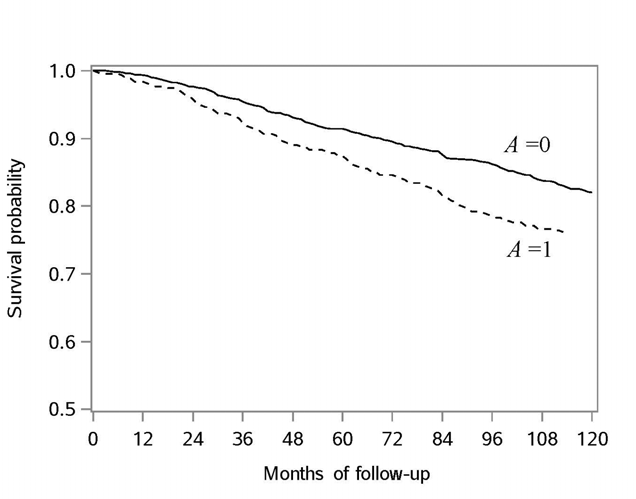
코드: 프로그램 17.1 (Program 17.1) 생존 곡선을 비교하기 위한 흔한 통계적 검정(로그 순위 검정, log-rank test)의 결과 P-value = 0.005였다.
예를 들어, 120개월 시점의 생존율은 금연자에서 76.2%였고 비금연자에서 82.0%였다. 대안으로 생존율 대신 위험을 대비할 수도 있다. 예를 들어 120개월 위험은 금연자에서 23.8%였고 비금연자에서 18.0%였다.
임의의 시점 \(\kappa\)에서, 우리는 \(\kappa\) 이전에 사건이 발생하지 않은 사람들 중에서 사건이 발생한 사람들의 비율도 계산할 수 있다. 이것이 바로 위해도(hazard) \(\text{Pr}[\ = \kappa \mid \ > \kappa - 1]\)이다. 엄밀히 말해 이는 이산 시간 위해도(discrete time hazard), 즉 시간이 연속적으로 측정되는 것과 달리 이산적인 구간으로 측정되는 연구에서의 위해도이다. 실제 연구에서는 시간이 진정한 연속 방식이라기보다는 이산적인 구간(년, 월, 주, 일…)으로 측정되기 때문에, 여기서 우리는 이산 시간 위해도를 단순히 위해도라고 부를 것이다.
위험과 위해도는 서로 다른 측도이다. 위험의 분모—기저 시점의 개인 수—는 모든 시점 \(\kappa\)에 걸쳐 일정하며 그 분자—기저 시점부터 \(\kappa\) 사이의 모든 사건—는 누적된다. 즉, 위험은 \(\kappa\)가 증가함에 따라 유지되거나 증가한다. 반면에 위해도의 분모—시점 \(\kappa\)에 살아 있는 개인 수—는 시간 \(\tau\)에 따라 변하며 그 분자는 최근 사건—구간 \(\kappa\) 동안의 사건—만을 포함한다. 즉, 위해도는 시간에 따라 증가할 수도 있고 감소할 수도 있다. 우리의 예시에서 120개월 시점의 위해도는 금연자에서 0%(이 집단에서는 마지막 사망이 113개월에 발생했기 때문)였고 비금연자에서 \(1/986 = 0\text{.}10\%\)였으며, 0개월과 120개월 사이의 위해도 곡선은 대략 문자 모양을 띠었다.
생존 분석에서 처치 효과를 정량화하는 빈번한 접근법 중 하나는 위해도비(hazard ratio)로 알려진, 처치군과 비처치군에서의 위해도의 비를 추정하는 것이다. 그러나 위해도비는 세부사항 17.2에 기술된 이유들로 인해 문제가 있다. 따라서 이 책의 생존 분석에서는 위해도보다 생존 확률/위험을 우선시한다. 그렇다고 해서 위해도를 완전히 무시해야 한다는 뜻은 아니다. 위해도의 추정은 생존 확률과 위험을 추정하기 위한 유용한 중간 단계가 되는 경우가 많다.
17.2 위해도에서 위험으로(From hazards to risks)
생존 분석에서는 분석용 데이터셋을 정렬하는 두 가지 주요 방법이 있다. 첫 번째 데이터 정렬 방식에서는 데이터베이스의 각 행(row)이 한 사람에 대응한다.
시간에 따라 변화하는 처치와 교란 요인이 있을 때 흔히 ‘롱(long)’ 또는 ‘와이드(wide)’ 형식으로 불리는 이 데이터 형식은 우리가 이 책에서 지금까지 사용해 온 형식이다. 이전 절의 분석에서 데이터셋은 개인당 한 행씩 총 1,629개의 행을 가졌다. 두 번째 데이터 정렬 방식에서는 데이터베이스의 각 행이 인-시(person-time)에 대응한다. 즉, 첫 번째 행은 \(\kappa = 0\)에서의 1번 사람에 대한 정보를 담고, 두 번째 행은 \(\kappa = 1\)에서의 1번 사람에 대한 정보를 담으며, 세 번째 행은 \(\kappa = 2\)에서의 1번 사람에 대한 정보를 담고, 1번 사람의 추적 관찰이 끝날 때까지 이어진다. 다음 행은 \(\kappa = 0\)에서의 2번 사람에 대한 정보를 담는 식이다. 이 인-시 데이터 형식은 이번 장의 대부분의 생존 분석과 제3부의 시간에 따라 변화하는 처치를 다루는 모든 분석에서 우리가 사용할 형식이다.
우리의 금연 예시에서 인-시 데이터셋은 인-월(person-month)당 한 행씩 총 176,764개의 행을 갖는다.
인-시 데이터 형식에서 시점 \(\kappa\)까지의 생존 정보를 인코딩하기 위해, 시간에 따라 변화하는 사건 지시자 \(\Delta_\kappa\)를 정의하는 것이 유용하다. 각 개인에 대해 매월 \(\kappa\)마다 지시자 \(\Delta_\kappa\)는 \(\ \le \kappa\)이면 1의 값을 취하고 \(\ > \kappa\)이면 0의 값을 취한다. 그림 17.2의 인과 다이어그램은 처치 와 각각 시점 1과 2에서의 사건 지시자 \(\Delta_1\), \(\Delta_2\)를 보여준다. 변수 는 관심 사건에 대한 감수성(susceptibility)을 증가시키는 (일반적으로 측정되지 않는) 요인들을 나타낸다. 때로는 이러한 감수성 요인들 역시 시간에 따라 변화한다는 점에 유의하라. 그 경우 인과 다이어그램에서 \(\_0, \_1, \dots\) 등으로 묘사될 수 있다. 제3부에서는 처치 자체가 시간에 따라 변화하는 경우를 다룬다.
그림 17.2 (Figure 17.2)
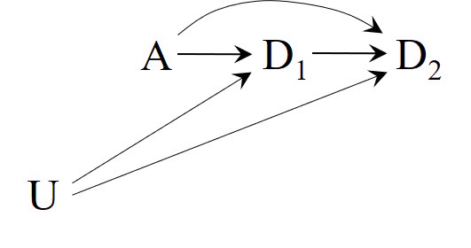
정의상 모든 사람은 데이터셋에 포함되기 위해 0월에 생존해 있어야 했으므로, 모든 개인에 대해 \(\Delta_0 = 0\)이다.
인-시 데이터 형식에서 특정 개인의 시점 \(\kappa\)에서의 행은 지시자 \(\Delta_{\kappa+1}\)을 포함한다. 우리의 예시에서 인-시 데이터셋의 첫 번째 행(개인 1의 \(\kappa=0\) 시점)은 지시자 \(\Delta_1\)을 포함하는데, 이는 해당 개인이 1월 중에 사망했으면 1이고 그렇지 않으면 0이다. 두 번째 행(개인 1의 \(\kappa=1\) 시점)은 지시자 \(\Delta_2\)를 포함하며, 해당 개인이 2월 중에 사망했으면 1이고 그렇지 않으면 0인 식이다. 각 개인에 대한 데이터셋의 마지막 행은 \(\Delta_{\kappa+1} = 1\)인 첫 번째 행이거나 119월에 해당하는 행이다.
시간에 따라 변화하는 결과 변수 \(\Delta_\kappa\)를 사용하여, 우리는 시점 \(\kappa\)에서의 생존 확률을 \(\text{Pr}[\Delta_\kappa = 0]\)(\(\text{Pr}[\ > \kappa]\)와 같음)으로 정의하고, 시점 \(\kappa\)에서의 위험을 \(\text{Pr}[\Delta_\kappa = 1]\)(\(\text{Pr}[\ \le \kappa]\)와 같음)으로 정의할 수 있다. 시점 \(\kappa\)에서의 위해도는 \(\text{Pr}[\Delta_\kappa = 1 \mid \Delta_{\kappa-1} = 0]\)으로 정의된다. \(\kappa = 1\)일 때 위해도는 위험과 같은데, 정의상 모든 사람이 \(\kappa = 0\)에서 살아 있기 때문이다.
시점 \(\kappa\)에서의 생존 확률은 0과 \(\kappa\) 사이의 각 구간에서 생존했을 조건부 확률들의 곱이다. 예를 들어 \(\kappa = 2\)에서의 생존 확률 \(\text{Pr}[\Delta_2 = 0]\)은 \(\kappa = 1\)에서의 생존 확률 \(\text{Pr}[\Delta_1 = 0]\)에 \(\kappa = 1\)까지 생존했을 때 \(\kappa = 2\)에서 생존할 조건부 확률 \(\text{Pr}[\Delta_2 = 0 \mid \Delta_1 = 0]\)을 곱한 것과 같다. 보다 일반적으로 시점 \(\kappa\)에서의 생존 확률은 다음과 같다:
\[\text{Pr}[\Delta_\kappa = 0] = \prod_{\mu=1}^\kappa \text{Pr}[\Delta_\mu = 0 \mid \Delta_{\mu-1} = 0]\]
즉, 시점 \(\kappa\)에서의 생존 확률은 이전 모든 시점에서의 (1 − 위해도)의 곱과 같다. 시점 \(\kappa\)까지의 위해도를 안다면 시점 \(\kappa\)에서의 생존 확률(또는 1에서 생존 확률을 뺀 값인 시점 \(\kappa\)에서의 위험)을 쉽게 계산할 수 있다. 시점 \(\kappa\)에서의 위해도 \(\text{Pr}[\Delta_\kappa = 1 \mid \Delta_{\kappa-1} = 0]\)은 구간 \(\kappa\) 동안 발생한 사건의 수를 구간 \(\kappa-1\)의 끝에 살아 있던 개인의 수로 나누어 비모수적으로 추정할 수 있다. 이 추정치를 위의 공식에 대입하면 시점 \(\kappa\)에서의 생존 확률 \(\text{Pr}[\Delta_\kappa = 0]\)에 대한 결과적인 비모수적 추정량을 카플란-마이어(Kaplan-Meier) 또는 곱-한계(product-limit) 추정량이라고 부른다. 그림 17.1은 카플란-마이어 추정량을 사용하여 작성되었으며,
세부사항 17.2 (Fine Point 17.2) 위해도비의 위험성(The hazards of hazard ratios). 위해도비를 인과 효과의 측도로 사용할 때는 위해도비의 두 가지 중요한 특성을 고려해야 한다.
첫째, 위해도가 시간에 따라 변하기 때문에 위해도비 역시 일반적으로 시간에 따라 변한다. 즉, 시점 \(\kappa\)에서의 비는 시점 \(\kappa+1\)에서의 비와 다를 수 있다. 그러나 출판된 많은 생존 분석 연구에서는 단 하나의 위해도비만을 보고하는데, 이는 대개 시간과의 상호작용을 무시하여 일정한 위해도비를 가정한 콕스 비례위해도 모형(Cox proportional hazards model)을 적합한 결과이다. 보고된 위해도비는 \(\kappa\)-특이적 위해도비들의 가중 평균이므로 해석하기 어렵다. 위험이 드물고 공통의 행정적 중도절단 시점 \(\kappa_{\text{end}}\)에서만 중도절단이 일어난다면, 시점 \(\kappa\)에서의 위해도비의 가중치는 \(\kappa\)에서 발생하는 비처치군 개인들의 총 사건 수에 비례한다. (엄밀히 말해 가중치는 \(\ = 0\) 및 \(\ < \kappa_{\text{end}}\)가 주어졌을 때 \(\kappa\)에서 의 조건부 밀도와 같다.) 가중 평균이기 때문에 생존 곡선이 동일하지 않더라도 보고된 위해도비는 1이 될 수 있다. 위해도비와 달리 생존율과 위험은 항상 5년 생존율, 120개월 위험처럼 시간에 의존하는 형태로 제시된다.
둘째, 시간-특이적 위해도비를 제시하더라도 그에 대한 인과적 해석은 결코 간단하지 않다. 처치가 시점 \(\kappa\)까지 모든 고위험군 개인을 사망에 이르게 하고 다른 사람들에게는 아무런 영향을 미치지 않는다고 가정해 보자. 그러면 시점 \(\kappa+1\)에서의 위해도비는 시점 \(\kappa\)까지 생존한 처치군과 비처치군 개인들을 비교하게 된다. 처치군에서 생존자들은 모두 저위험군 개인들이다(고위험군은 처치에 의해 이미 사망했기 때문이다). 반면 비처치군에서 생존자들은 고위험군과 저위험군 개인들의 혼합이다(처치가 전자를 솎아내지 않았기 때문이다). 그 결과 처치가 어떤 개인에게도 유익하지 않음에도 불구하고 \(\kappa+1\)에서의 위해도비는 1보다 작아지게 된다. 이 명백한 역설은 처치에 의해 영향을 받는 사후 처치 변수(즉, 시점 \(\kappa\)에 살아 있음)에 조건화함으로써 발생하는 선택 편향(selection bias)의 한 예이다.
예를 들어 시점 2에서의 위해도비는 시점 1에서 생존한 사람들 사이에서 시점 2에 사건이 발생할 확률 \(\text{Pr}[\Delta_2 = 1 \mid \Delta_1 = 0, \]\)이다. 그림 17.3의 인과 다이어그램에 묘사된 바와 같이, 충돌 변수(collider) \(\Delta_1\)에 대한 조건화는 일반적으로 경로 \(\ \rightarrow \Delta_1 \leftarrow \ \rightarrow \Delta_2\)를 열어주며, 따라서 \(\Delta_1 = 0\)인 사람들 사이에서 처치 와 사건 \(\Delta_2\) 간의 연관을 유도하게 된다. 위해도비에 내재된 이러한 선택 편향은 처치군과 비처치군에서 생존 곡선이 동일할 때, 즉 에서 사건 지시자로 향하는 화살표가 없을 때는 발생하지 않는다. Hernán (2010)은 이 문제에 대한 예시를 설명했다.
이는 추적 관찰 기간 동안의 총 사건 수가 합리적으로 클 때 생존 곡선에 대한 훌륭한 추정량이다. 전형적으로 각 구간 동안의 사건 수는 적거나(심지어 0이거나) 하므로 특정 \(\kappa\)에서의 위해도 \(\text{Pr}[\Delta_\kappa = 1 \mid \Delta_{\kappa-1} = 0]\)의 비모수적 추정치는 매우 불안정할 것이다. 관심 대상이 특정 \(\kappa\)에서의 위해도 추정이라면 모수적 모형을 통한 평활화(smoothing)가 필요할 수 있다(11장 및 세부사항 17.3 참조).
위해도를 모수적으로 추정하는 쉬운 방법은 각 \(\kappa\)에서 시점 \(\kappa\)까지 생존한 개인들로 제한하여 \(\text{Pr}[\Delta_{\kappa+1} = 1 \mid \Delta_\kappa = 0]\)에 대한 로지스틱 회귀 모형을 적합하는 것이다. 인-시 데이터 형식을 사용할 때 이 모형의 적합은 매우 직관적이다. 우리의 예시에서는 다음과 같은 로지스틱 모형을 적합하여 처치군과 비처치군에서의 위해도를 추정할 수 있다:
\[\text{logit Pr}[\Delta_{\kappa+1} = 1 \mid \Delta_\kappa = 0, \] = \theta_{0,\kappa} + \theta_1 \ + \theta_2 \ \times \kappa + \theta_3 \ \times \kappa^2\]
여기서 \(\theta_{0,\kappa}\)는 \(\theta_{0,\kappa} = \theta_0 + \theta_4 \kappa + \theta_5 \kappa^2\)과 같은 시간에 대한 유연한 함수로 추정될 수 있는 시간에 따라 변화하는 절편(time-varying intercept)이다. 유연한 시간에 따라 변화하는 절편은 시간에 따라 변하는 위해도를 허용하며, 처치 와 시간 사이의 곱 항(\(\theta_2 \ \times \kappa + \theta_3 \ \times \kappa^2\))은 위해도비가 시간에 따라 변할 수 있도록 해준다. 로지스틱 모형이 위해도 모형을 어떻게 근사하는지에 대한 자세한 내용은 기술적 사항 17.1을 참조하라.
그림 17.3 (Figure 17.3)
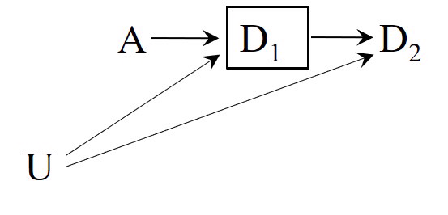
로짓(logit) 외의 다른 함수(예: 프로빗(probit))도 이분형 결과를 모형화하고 따라서 위해도를 추정하는 데 사용될 수 있다. 코드: 프로그램 17.2 (Program 17.2) 각 개인이 인-시 데이터 구조의 여러 행에 나타나지만, 위해도 모형이 올바르다면 통상적인 로지스틱 회귀 프로그램에서 출력되는 모수 추정치의 표준 오차는 정확하다.
그런 다음 우리는 로지스틱 모형이 제공하는 처치군과 비처치군 각각에 대해 \(1 - \text{Pr}[\Delta_{\kappa+1} = 1 \mid \Delta_\kappa = 0, \=\alpha]\)의 추정치들을 곱함으로써 생존 확률 \(\text{Pr}[\Delta_{\kappa+1} = 0 \mid \=\alpha]\)의 추정치를 계산한다. 그림 17.4는 위해도의 모수적 추정 후에 얻은 생존 곡선을 보여준다. 이 곡선들은 그림 17.1에 나타난 곡선들의 매끄러운 버전(smooth version)이다.
세부사항 17.3 (Fine Point 17.3) 생존 분석을 위한 모형들(Models for survival analysis). 생존 분석 방법들은 행정적 추적 종료로 인해 예상되는 고장 시간의 중도절단을 수용해야 한다. 카플란-마이어 곡선 작성과 같은 생존 분석에 대한 비모수적 접근법은 행정적 중도절단으로 인해 관측되지 않은 고장 시간의 분포에 대해 아무런 가정을 하지 않는다.
반면에 생존 분석을 위한 모수적 모형(parametric models)은 고장 시간이나 위해도에 대해 특정한 통계적 분포(예: 지수분포(exponential), 와이블분포(Weibull))를 가정한다. 본문에서 위해도를 추정하기 위해 설명한 로지스틱 모형은 모수적 모형의 한 예이다.
콕스 비례위해도 모형(Cox proportional hazards model)이나 가속 고장 시간 모형(accelerated failure time, AFT model)과 같은 다른 생존 분석 모형들은 고장 시간이나 위해도에 대해 특정한 분포를 가정하지 않는다. 특히 이러한 모형들은 모형 내의 모든 공변량이 0의 값을 가질 때의 위해도 형태—흔히 기저 위해도(baseline hazard)라고 불림—에 대해 불가지론적(agnostic)이다. 그러나 이 모형들은 기저 위해도와 공변량 값들의 다른 조합 하에서의 위해도 사이의 관계에 사전적 제약을 부과한다. 그 결과 이러한 방법들을 준모수적 방법(semiparametric methods)이라고 부른다.
응용 생존 분석에 대한 개관은 Hosmer, Lemeshow, and May (2008)의 저서를 참조하라. 보다 형식적인 설명은 Fleming and Harrington (2005) 및 Kalbfleisch and Prentice (2002)의 저서에서 찾아볼 수 있다.
이 절차의 타당성은 위해도 모형의 오지정(misspecification)이 없음을 요구한다. 우리의 예시에서는 이전 절에서 완전히 비모수적인 방식으로 생존율을 추정했을 때와 본질적으로 동일한 생존율 추정치를 얻었으므로 이 가정이 타당해 보인다. 생존율 추정치 주변의 95% 신뢰구간은 모집단 내 개인들을 대상으로 붓스트랩(bootstrapping)을 통해 쉽게 구축할 수 있다.
17.3 중도절단이 중요한 이유(Why censoring matters)
우리 연구에서 유일한 중도절단 원인은 모든 개인에게 동일한 공통의 행정적 중도절단 시점 \(\kappa_{\text{end}} = 120\)이다. 이 단순한 환경에서는 생존율을 추정하기 위해 이전 절에서 설명한 절차가 다소 과한 접근(overkill)이다. 단순히 처치 \(\alpha\)를 받고 \(\kappa + 1\)까지 생존한 개인들의 비율로 생존 확률 \(\text{Pr}[\Delta_{\kappa+1} = 0 \mid \=\alpha]\)을 추정하거나, \(\kappa = 0, 1, \dots, \kappa_{\text{end}}\)의 각 시점에 대해 \(\text{Pr}[\Delta_{\kappa+1} = 0 \mid \]\)에 대한 별도의 로지스틱 모형을 적합할 수도 있다.
이제 개인들이 서로 다른 날짜에 추적 관찰을 시작하지만—연구에 시차 등록(staggered entry)이 존재함—행정적 추적 종료일은 모두에게 공통이라고 가정해 보자. 행정적 중도절단 시간은 행정적 추적 종료일과 추적 관찰 시작일 사이의 차이이므로, 개인마다 서로 다른 행정적 중도절단 시간을 갖게 된다. 이러한 환경에서는 시점 \(\kappa\)까지의 중도절단에 대한 시간에 따라 변화하는 지시자 \(_\kappa\)를 정의하는 것이 도움이 된다. 각 개인에 대해 매월 \(\kappa\)마다 지시자 \(_\kappa\)는 행정적 추적 종료 시점이 \(\kappa\)보다 크면 0의 값을 취하고 그렇지 않으면 1의 값을 취한다.
그림 17.4 (Figure 17.4)
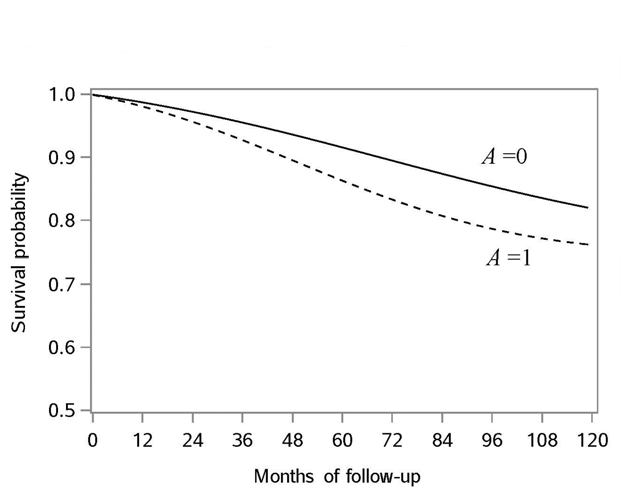
인-시 데이터 형식에서 특정 개인의 시점 \(\kappa\)에서의 행은 지시자 \(_{\kappa+1}\)을 포함한다. 우리의 데이터셋에서는 120개월 이전의 모든 시점 \(\kappa\)에서 모든 개인에 대해 \(_{\kappa+1} = 0\)이었기 때문에 이 변수를 포함하지 않았다. 무작위(즉, 개인별로 상이한) 행정적 중도절단이 있는 일반적인 경우, 지시자 \(_{\kappa+1}\)은 사람마다 서로 다른 시점 \(\kappa\)에서 0에서 1로 전환될 것이다.
우리의 목표는 연구에서의 최대 행정적 중도절단 시점인 \(\kappa_{\text{end}}\) 이전에 아무도 중도절단되지 않았더라면 관측되었을 생존 곡선을 추정하는 것이다.
기술적 사항 17.1 (Technical Point 17.1) 로지스틱 모형을 통한 위해도비 근사(Approximating the hazard ratio via a logistic model). 위해도 모형 \(\text{Pr}[\Delta_{\kappa+1}=1 \mid \Delta_\kappa=0, \] = \text{Pr}[\Delta_{\kappa+1}=1 \mid \Delta_\kappa=0, \=0] \exp(\alpha_1 \)\)에서 (이산 시간) 위해도비 \(\frac{\text{Pr}[\Delta_{\kappa+1}=1 \mid \Delta_\kappa=0, \=1]}{\text{Pr}[\Delta_{\kappa+1}=1 \mid \Delta_\kappa=0, \=0]}\)은 모든 시점 \(\kappa+1\)에서 \(\exp(\alpha_1)\)이다.
방정식의 양변에 로그를 취하면 \(\log \text{Pr}[\Delta_{\kappa+1}=1 \mid \Delta_\kappa=0, \] = \alpha_{0,\kappa} + \alpha_1 \\)를 얻으며, 여기서 \(\alpha_{0,\kappa} = \log \text{Pr}[\Delta_{\kappa+1}=1 \mid \Delta_\kappa=0, \=0]\)이다.
시점 \(\kappa+1\)에서의 위해도가 작다고 가정하자. 즉, \(\text{Pr}[\Delta_{\kappa+1}=1 \mid \Delta_\kappa=0, \] \approx 0\)이다. 그러면 \(\kappa+1\)에서의 (1 − 위해도)는 1에 가깝고 위해도는 오즈(odds)와 거의 같다:
\[\text{Pr}[\Delta_{\kappa+1}=1 \mid \Delta_\kappa=0, \] \approx \frac{\text{Pr}[\Delta_{\kappa+1}=1 \mid \Delta_\kappa=0, \]}{\text{Pr}[\Delta_{\kappa+1}=0 \mid \Delta_\kappa=0, \]}\]
따라서 다음을 얻는다:
\[\log \frac{\text{Pr}[\Delta_{\kappa+1}=1 \mid \Delta_\kappa=0, \]}{\text{Pr}[\Delta_{\kappa+1}=0 \mid \Delta_\kappa=0, \]} = \text{logit Pr}[\Delta_{\kappa+1}=1 \mid \Delta_\kappa=0, \] \approx \alpha_{0,\kappa} + \alpha_1 \\]
즉, \(\kappa+1\)에서 위해도가 0에 가깝다면, 본문에서 사용한 것과 같은 로지스틱 모형 \(\text{logit Pr}[\Delta_{\kappa+1}=1 \mid \Delta_\kappa=0, \] = \theta_{0,\kappa} + \theta_1 \\)에서 로그 위해도비 \(\alpha_1\)을 \(\theta_1\)으로 근사할 수 있다(Thompson 1977). 경험 법칙(rule of thumb)으로서 모든 \(\kappa\)에 대해 \(\text{Pr}[\Delta_{\kappa+1}=1 \mid \Delta_\kappa=0, \] < 0\text{.}1\)일 때 이 근사는 대개 충분히 정확한 것으로 간주된다.
이러한 희귀 사건(rare event) 조건은 거의 항상 만족되도록 보장할 수 있다. \(\text{Pr}[\Delta_{\kappa+1}=1 \mid \Delta_\kappa=0, \] < 0\text{.}1\)이 될 만큼 충분히 짧은 시간 단위 \(\kappa\)를 정의하기만 하면 된다. 예를 들어 \(\Delta_\kappa\)가 폐암을 나타낸다면 \(\kappa\)는 년 단위로 측정될 수 있고, \(\Delta_\kappa\)가 감기 바이러스 감염을 나타낸다면 \(\kappa\)는 일 단위로 측정될 수 있다. 시간 단위가 짧을수록 로지스틱 모형을 적합하는 데 사용되는 인-시 데이터셋의 행 수는 더 많아진다.
즉, 우리의 목표는 중도절단 후에도 시간에 따라 변화하는 지시자 \(\Delta_\kappa\)의 값을 알 수 있었더라면 관측되었을 생존 확률 \(\text{Pr}[\Delta_\kappa = 0 \mid \=\alpha]\)를 추정하는 것이다. 엄밀히 말해 우리는 이 양을 \(c = (c_1, c_2, \dots, c_{\kappa_{\text{end}}})\)일 때 \(\text{Pr}[\Delta_\kappa^{c=0} = 0 \mid \=\alpha]\)로 표기할 수도 있다. 12장에서 논의했듯이 위첨자 \(c=0\)을 사용하면 우리가 염두에 두고 있는 양이 명확해진다. 혼란이 생길 여지가 없을 때는 때때로 위첨자 \(c=0\)을 생략하기도 한다.
단순성을 위해 추적 관찰 시작 시점이 각 개인에게 마치 무작위로 배정된 것과 같다고 가정하자. 이는 모든 변수에서 시대적 추세(secular trends)가 없는 경우에 해당할 것이다. 그러면 행정적 중도절단 시간, 따라서 지시자 \(\)는 처치 및 사망 시간 모두와 독립이다.
우리는 단순히 처치 수준 \(\alpha\)를 받고 시점 \(\kappa\)까지 생존하면서 중도절단되지 않은 개인들의 비율을 계산하는 방식으로는 시점 \(\kappa\)에서의 생존 확률 \(\text{Pr}[\Delta_\kappa = 0 \mid \=\alpha]\)를 유효하게 추정할 수 없다. 이 비율은 우리가 원하는 것이 아닌 결합 확률 \(\text{Pr}[_{\kappa+1} = 0, \Delta_{\kappa+1} = 0 \mid \=\alpha]\)의 유효한 추정량이기 때문이다. 그 이유를 알아보기 위해 \(\kappa_{\text{end}} = 2\)이고 다음이 성립하는 연구를 고려해 보자:
- \(\text{Pr}[_1 = 0] = 1\), 즉 \(\kappa = 1\)까지 아무도 중도절단되지 않음
- \(\text{Pr}[\Delta_1 = 0 \mid _0 = 0] = 0\text{.}9\), 즉 90%의 개인이 \(\kappa = 1\)까지 생존함
- \(\text{Pr}[_2 = 0 \mid \Delta_1 = 0, _1 = 0] = 0\text{.}5\), 즉 생존자의 무작위 절반이 \(\kappa = 2\)까지 중도절단됨
- \(\text{Pr}[\Delta_2 = 0 \mid _2 = 0, \Delta_1 = 0, _1 = 0] = 0\text{.}9\), 즉 남아 있는 개인의 90%가 \(\kappa = 2\)까지 생존함
\(\kappa = 2\)에서 중도절단되지 않은 생존자의 비율은 \(1 \times 0\text{.}9 \times 0\text{.}5 \times 0\text{.}9 = 0\text{.}405\)이다. 그러나 아무도 중도절단되지 않았더라면, 즉 \(\text{Pr}[_2 = 0 \mid \Delta_1 = 0, _1 = 0] = 1\)이었다면 생존율은 \(1 \times 0\text{.}9 \times 1 \times 0\text{.}9 = 0\text{.}81\)이었을 것이다. 이 예시는 생존 확률 \(\text{Pr}[\Delta_\kappa = 0 \mid \=\alpha]\)의 올바른 추정에 왜 이전 절에서 설명한 절차가 필요한지를 잘 보여준다.
구체적으로 (마치) 무작위로 배정된 것과 같은 중도절단 아래에서, \(\kappa < \kappa_{\text{end}}\)에 대해 시점 \(\kappa\)에서의 생존 확률 \(\text{Pr}[\Delta_\kappa = 0 \mid \=\alpha]\)는 다음과 같다:
\[\text{Pr}[\Delta_\kappa = 0 \mid \=\alpha] = \prod_{\mu=1}^\kappa \text{Pr}[\Delta_\mu = 0 \mid \Delta_{\mu-1} = 0, _\mu = 0, \=\alpha]\]
추정 절차는 원인-특이적 위해도(cause-specific hazard) \(\text{Pr}[\Delta_{\kappa+1} = 1 \mid \Delta_\kappa = 0, _{\kappa+1} = 0, \=\alpha]\)의 비모수적 추정치를 사용하거나 이에 대한 로지스틱 모형을 적합한다는 점을 제외하면 위에서 설명한 것과 동일하다.
종종 우리는 중도절단이 마치 무작위로 배정된 것과 같다고 가정할 준비가 되어 있지 않다. 시차 등록이 있을 때 한 개인의 행정적 중도절단 시간은 연구 진입 시점의 달력 시간(calendar time, 역월 시점)에 의존하며(늦게 진입할수록 \(\kappa_{\text{end}}\) 값이 더 짧아짐), 달력 시간 자체가 결과와 연관될 수 있다. 따라서 위의 절차는 기저 달력 시간에 대해 보정되어야 할 것이다. 또한 처치군( = 1)과 비처치군( = 0) 사이에 불균등하게 분포된 다른 기저 예후 요인(prognostic factors)들이 존재할 수 있으며, 이 역시 보정이 필요하다. 다음 절들에서는 g-방법들을 통해 기저 교란 요인에 대한 보정을 통합하도록 위의 절차를 확장한다. 제3부에서는 처치와 교란 요인이 시간에 따라 변화하는 환경으로 이 절차를 확장할 것이다.
17.4 주변 구조 모형의 역확률 가중(IP weighting of marginal structural models)
처치군과 비처치군이 교환가능하지 않을 때 그들의 생존 곡선을 직접 대비하는 것에는 인과적 해석을 부여할 수 없다. 우리의 금연 예시에서 우리는 120개월 생존율이 비금연자보다 금연자에서 더 낮다고 추정했지만(76.2% 대 82.0%), 이것이 반드시 금연이 사망률을 증가시킨다는 것을 의미하지는 않는다. 고령자일수록 담배를 끊을 가능성이 더 높고 사망할 가능성도 더 높다. 이러한 연령에 의한 교란은 금연자 사이에서 고령자의 비율이 비금연자 사이보다 더 크기 때문에 금연을 나빠 보이게 만든다.
\(\Delta_\kappa^{\alpha, c=0}\)을 처치 수준 \(\alpha\) 및 중도절단 없음 하에서 시점 \(\kappa\)에서의 사망에 대한 반사실적 시간에 따라 변화하는 지시자로 정의하자. 표기의 단순성을 위해, 이 장에서처럼 중도절단이 없는 상태에서의 생존율을 추정하는 것이 목표임이 명확할 때는 \(\Delta_\kappa^{\alpha, c=0}\)을 \(\Delta_\kappa^\alpha\)로 쓸 것이다. 추가적인 단순성을 위해 이 장의 나머지 부분에서는 시점 \(\kappa\)에서의 위해도 \(\text{Pr}[\Delta_{\kappa+1} = 0 \mid \Delta_\kappa = 0, \=\lambda, \]\)의 조건화 사건에서 \(_\kappa = 0\)을 생략한다. 즉, 우리의 금연 예시에서처럼 모든 개인이 공통의 행정적 중도절단 시점을 갖는 것처럼 모든 식을 표기한다.
모든 사람이 처치를 받았을 때(\(\alpha = 1\))와 받지 않았을 때(\(\alpha = 0\)) 각각 관측되었을 반사실적 생존 확률 \(\text{Pr}[\Delta_{\kappa+1}^{\alpha=1} = 0]\)과 \(\text{Pr}[\Delta_{\kappa+1}^{\alpha=0} = 0]\)을 비교하고자 한다고 가정하자. 즉, 관심 있는 인과적 대비는 \(\kappa = 0, 1, \dots, \kappa_{\text{end}} - 1\)에 대해 \(\text{Pr}[\Delta_{\kappa+1}^{\alpha=1} = 0]\) 대 \(\text{Pr}[\Delta_{\kappa+1}^{\alpha=0} = 0]\)이다. 교란 때문에 이 인과적 대비는 이전 절들에서 설명한 생존 확률들의 대비 \(\text{Pr}[\Delta_{\kappa+1} = 0 \mid \=1]\) 대 \(\text{Pr}[\Delta_{\kappa+1} = 0 \mid \=0]\)으로 유효하게 추정되지 못할 수 있다. 오히려 \(\alpha = 1\) 및 \(\alpha = 0\)에 대해 \(\text{Pr}[\Delta_{\kappa+1}^\alpha = 0]\)이라는 양을 유효하게 추정하려면 일반적으로 교란 요인에 대한 보정이 필요하며, 이는 여러 방법을 통해 달성될 수 있다. 이번 절은 역확률 가중(IP weighting)에 초점을 맞춘다.
그림 17.5 (Figure 17.5)
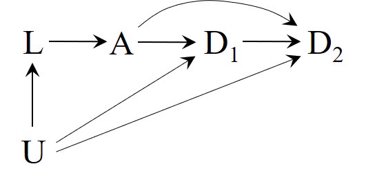
그림 17.5의 인과 다이어그램에 표현된 것처럼, 변수들의 수준 내에서 처치군( = 1)과 비처치군( = 0)이 교환가능(exchangeable)하다고 가정하자. 12장에서 15장까지와 마찬가지로, 에는 성별, 연령, 인종, 교육 수준, 흡연 강도 및 기간, 일상생활에서의 신체 활동, 여가 운동, 체중 변수가 포함된다. 우리는 또한 양수성(positivity)과 일관성(consistency)을 가정한다.
IP 가중 생존 곡선의 추정은 2단계로 진행된다.
코드: 프로그램 17.3 (Program 17.3)
첫째, 연구 모집단의 각 개인에 대해 안정화 IP 가중치(stabilized IP weight) 를 추정한다. 이 절차는 12장에서 설명한 것과 완전히 동일하다. 우리는 변수들이 주어졌을 때 처치(즉, 금연)의 조건부 확률 \(\text{Pr}[\=1 \mid \]\)에 대한 로지스틱 모형을 적합한다. 추정된 가중치 \(\widehat{\\}^\\)의 분모는 처치받은 개인의 경우 \(\widehat{\text{Pr}}[\=1 \mid \]\)이고, 비처치 개인의 경우 \(1 - \widehat{\text{Pr}}[\=1 \mid \]\)이다. 여기서 \(\widehat{\text{Pr}}[\=1 \mid \]\)은 로지스틱 모형으로부터 얻은 예측값이다. 추정된 가중치 \(\widehat{\\}^\\)의 분자는 처치군에 대해 \(\widehat{\text{Pr}}[\=1]\)이고, 비처치군에 대해 \(1 - \widehat{\text{Pr}}[\=1]\)이다. 여기서 \(\widehat{\text{Pr}}[\=1]\)은 비모수적으로 추정하거나 처치의 주변 확률 \(\text{Pr}[\=1]\)에 대한 로지스틱 모형의 예측값으로 추정할 수 있다. 예측값에 대한 자세한 내용은 11장을 참조하라.
추정된 가중치 를 적용하면 의 변수들이 처치 와 독립이 되는 의사 모집단(pseudo-population)이 생성되며, 이는 해당 변수들에 의한 교란을 제거한다. 우리의 예시에서 가중치는 (예상대로) 평균이 1이었고 0.33에서 4.21까지의 범위를 가졌다.
둘째, 인-시간(person-time) 데이터 형식을 사용하여, 개인이 추정된 가중치 로 가중된다는 점을 제외하고는 위에서 설명한 것과 같은 위해도 모형을 적합한다. 엄밀히 말해, 이 IP 가중 로지스틱 모형은 다음 주변 구조 로지스틱 모형(marginal structural logistic model)의 모수들을 추정한다:
\[\text{logit Pr}[\Delta^\alpha_{\kappa+1}=0 \mid \Delta^\alpha_\kappa=0] = \_{0\,\kappa} + \_1 \alpha + \_2 \alpha \times \kappa + \_3 \alpha \times \kappa^2\]
즉, IP 가중 모형은 연구 모집단의 모든 개인이 처치를 받았을 경우(\(\alpha=1\)) 관측되었을 시간에 따라 변화하는 위해도(time-varying hazards)와 처치를 받지 않았을 경우(\(\alpha=0\)) 관측되었을 시간에 따라 변화하는 위해도를 추정한다.
그런 다음 IP 가중 위해도 모형에서 얻은 \(\text{Pr}[\Delta^\alpha_{\kappa+1}=0 \mid \Delta^\alpha_\kappa=0]\) 추정치들을 시간에 걸쳐 곱하여(이전 절 참조), 처치 \(\alpha=1\) 하에서 그리고 비처치 \(\alpha=0\) 하에서 관측되었을 생존 \(\text{Pr}[\Delta^\alpha_{\kappa+1}=0]\)의 추정치를 얻을 수 있다. 그 결과 곡선이 그림 17.6에 나타나 있다.
그림 17.6 (Figure 17.6)
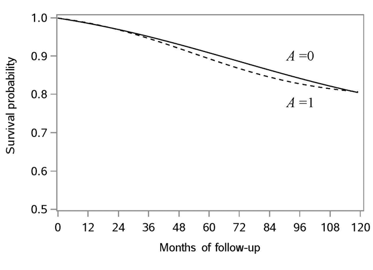
우리의 예시에서 120개월 생존 추정치는 금연 하에서 80.7%, 비금연 하에서 80.5%였다. 그 차이는 0.2%(500개 붓스트랩 표본 기준 95% 신뢰구간: −4.1% ~ 3.7%)였다. 추적 기간의 대부분 동안 처치 하에서의 생존 곡선이 비처치 하에서의 곡선보다 낮았지만, 최대 차이는 −1.4%(95% 신뢰구간: −3.4% ~ 0.7%)를 결코 넘지 않았다. 즉, IP 가중을 통해 공변량 을 보정한 후, 우리는 추적 기간 중 어느 시점에서도 금연이 사망률에 미치는 영향에 대한 증거를 거의 찾지 못했다. 이 절차의 타당성은 처치 모형과 주변 위해도 모형 둘 다 오지정되지 않아야 함을 요구한다.
17.5 모수적 g-공식(The parametric g-formula)
이전 절에서 우리는 IP 가중을 통해 전체 연구 모집단에서 처치 하와 비처치 하의 생존 곡선을 추정했다. 이를 위해 우리는 을 보정하고 교환가능성(exchangeability), 양수성(positivity), 일관성(consistency)을 가정했다. 이러한 가정 하에서 주변 생존 곡선을 추정하는 또 다른 방법은 모수 모형에 기초한 표준화(standardization), 즉 모수적 g-공식(parametric g-formula)이다.
처치 수준 \(\alpha\) 하에서 \(\kappa+1\) 시점의 생존 \(\text{Pr}[\Delta^\alpha_{\kappa+1}=0]\)은 공변량 의 수준과 처치 수준 \(\ = \alpha\) 내에서 \(\kappa+1\) 시점의 조건부 생존 확률들의 가중 평균이며, 이때 의 각 수준 \(\lambda\)에 속한 개인들의 비율이 가중치가 된다. 즉, 교환가능성, 양수성, 일관성 하에서 \(\text{Pr}[\Delta^\alpha_{\kappa+1}=0]\)은 다음과 같은 표준화된 생존과 같다:
\[\sum_{\lambda} \text{Pr}[\Delta_{\kappa+1}=0 \mid \=\lambda, \=\alpha] \text{Pr}[\=\lambda]\]
형식적 증명은 2.3절을 참조하라.
따라서 모수적 g-공식의 추정은 2단계로 이루어진다. 첫째, 행정적으로 중도절단된 데이터를 사용하여 조건부 생존 \(\text{Pr}[\Delta_{\kappa+1}=0 \mid \=\lambda, \=\alpha]\)를 추정해야 한다. 둘째, 공변량 의 모든 값 \(\lambda\)에 걸쳐 이들의 가중 평균을 계산해야 한다. 우리의 금연 예시에서 이 두 단계를 각각 설명한다.
첫 번째 단계로, 의 변수들이 공변량으로 포함된다는 점을 제외하고는 17.2절에서 설명한 것과 같은 모수적 위해도 모형을 적합한다. 모형이 올바르게 지정되었다면, 이는 처치 와 공변량 의 수준 내에서 시간에 따라 변화하는 위해도 \(\text{Pr}[\Delta_{\kappa+1}=1 \mid \Delta_\kappa=0, \, \]\)를 타당하게 추정한다. 1에서 조건부 위해도를 뺀 값들의 곱
\[\prod_{\mu=0}^\kappa \text{Pr}[\Delta_{\mu+1}=0 \mid \Delta_\mu=0, \=\lambda, \=\alpha]\]
은 조건부 생존 \(\text{Pr}[\Delta_{\kappa+1}=0 \mid \=\lambda, \=\alpha]\)와 같다.
그림 17.7 (Figure 17.7)
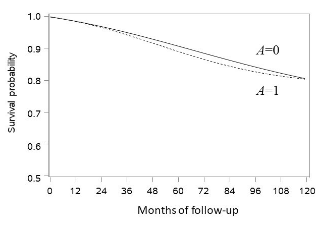
12장에서 우리는 모든 공변량 에 조건부인 모형을 가짜 주변 구조 모형(faux marginal structural models)이라고 불렀다.
이 주어졌을 때의 조건부 교환가능성으로 인해, 특정한 공변량 값들의 집합 \(\ = \lambda\) 및 \(\ = \alpha\)에 대한 조건부 생존은 해당 공변량 집합을 가진 모든 사람이 처치 값 \(\alpha\)를 받았을 때 관측되었을 생존으로 인과적 해석이 가능하다. 즉,
\[\text{Pr}[\Delta_{\kappa+1}=0 \mid \=\lambda, \=\alpha] = \text{Pr}[\Delta^\alpha_{\kappa+1}=0 \mid \=\lambda]\]
이다. 따라서 조건부 위해도를 사용하여 의 값 \(\lambda\)의 각 조합 내에서 처치(\(\alpha = 1\)) 및 비처치(\(\alpha = 0\)) 하의 생존 곡선을 추정할 수 있다. 예를 들어 이 모형을 사용하여 61세, 대졸, 낮은 운동 수준 등을 가진 백인 남성에 대해 처치 및 비처치 하의 생존 곡선을 추정할 수 있다. 그러나 우리의 목표는 처치 및 비처치 하의 조건부 생존 곡선이 아니라 주변 생존 곡선(marginal survival curves)을 추정하는 것이다.
코드: 프로그램 17.4 (Program 17.4) 이 절차는 13장에서 설명한 것과 유사하다.
두 번째 단계로, 공변량 의 모든 값 \(\lambda\)에 걸쳐 조건부 생존의 가중 평균을 계산한다. 즉, 생존을 교란 요인 분포에 표준화한다. 이를 위해 우리는 13.3절에서 평균을 표준화하기 위해 설명했던 방법, 즉 데이터셋 확장, 결과 모형화, 예측 후 평균화에 의한 표준화(standardization by averaging after expansion of dataset, outcome modeling, and prediction)를 사용한다. 이 방법은 의 변수 중 일부가 연속형이어서 값 \(\lambda\)에 대한 합이 형식적으로 적분인 경우에도 사용될 수 있다. 그 결과 곡선이 그림 17.7에 나타나 있다.
우리의 예시에서 처치 하의 생존 곡선은 전체 추적 기간 동안 비처치 하의 곡선보다 낮았지만, 최대 차이는 −2.0%(95% 신뢰구간: −5.6% ~ 1.8%)를 결코 넘지 않았다. 120개월 생존 추정치는 금연 하에서 80.4%, 비금연 하에서 80.6%였으며, 차이는 −0.2%(95% 신뢰구간: −4.6% ~ 4.1%)였다. 즉, 표준화를 통해 공변량 을 보정한 후에도 우리는 추적 기간 중 어느 시점에서도 금연이 사망률에 미치는 영향에 대한 증거를 거의 찾지 못했다. IP 가중(이전 절)과 모수적 g-공식(이번 절)을 통해 추정된 생존 곡선은 서로 다른 모수적 가정에 의존하기 때문에 유사하지만 완전히 동일하지는 않다는 점에 유의하라. IP 가중 추정치는 처치에 대한 모형과 무조건부 위해도에 대한 모형이 오지정되지 않아야 하는 반면, 모수적 g-공식 추정치는 조건부 위해도에 대한 모형이 오지정되지 않아야 한다.
17.6 구조적 중첩 모형의 g-추정(G-estimation of structural nested models)
이전 절들에서는 서로 다른 처치 수준 하에서의 생존 또는 위험을 비교하는 인과적 대비(causal contrasts)를 설명했다. 생존은 로지스틱 회귀 모형으로 추정한 위해도로부터 계산되었다. 이러한 접근법은 분석 방법이 주변 구조 모형의 IP 가중이나 모수적 g-공식일 때는 가능하지만, 구조적 중첩 모형의 g-추정(g-estimation of structural nested models)일 때는 불가능하다. 14장에서 설명했듯이 구조적 중첩 모형은 조건부 인과 대비(예: 서로 다른 처치 수준 하에서 공변량별 평균의 차이 또는 비)를 위한 모형이지, 그 대비의 구성요소(예: 서로 다른 처치 수준 하에서의 각각의 평균)를 위한 모형이 아니다. 따라서 우리는 구조적 중첩 모형을 사용하여 생존이나 위해도를 추정할 수 없다.
사실 구조적 중첩 로지스틱 모형은 시간에 따라 변화하는 처치로 쉽게 일반화되지 않기 때문에(기술적 사항 14.1 참조), 위해도 비(hazard ratio)조차 근사하지 못할 수 있다.
Tchetgen Tchetgen 등(2015)과 Robins(1997b)는 여기서 구조적 중첩 모형에 대해 설명한 것과 유사한 문제를 나타내는 도구 변수를 사용한 생존 분석을 설명했다.
그러나 우리는 서로 다른 처치 수준 하에서 누적 발생률(cumulative incidences, 즉 위험)의 비를 모형화하기 위해 구조적 중첩 로그-선형 모형(structural nested log-linear model)을 고려할 수 있다. 구조적 중첩 누적 실패 시간(CFT, cumulative failure time) 모형이 정확히 그 역할을 수행하지만(기술적 사항 17.2 참조), 로그-선형 모형은 위험에 자연스럽게 1이라는 상한을 부과하지 않으므로 실패가 희귀 사건(rare event)일 때 가장 잘 사용된다. 희귀하지 않은 실패의 경우, 우리는 대신 서로 다른 처치 수준 하에서 누적 생존 확률(cumulative survival probabilities, 즉 1 − 위험)의 비를 모형화하는 구조적 중첩 로그-선형 모형을 고려할 수 있다. 구조적 중첩 누적 생존 시간(CST, cumulative survival time) 모형이 정확히 그 역할을 수행하지만(기술적 사항 17.2 참조), 로그-선형 모형은 생존에 자연스럽게 1이라는 상한을 부과하지 않으므로 생존이 희귀할 때 가장 잘 사용된다. 보다 일반적인 선택지는 서로 다른 처치 옵션 하에서의 생존 시간의 비를 모형화하는 구조적 중첩 모형을 사용하는 것이다. 즉, 가속 실패 시간(AFT, accelerated failure time) 모형이다.
처치 수준 \(\alpha\) 하에서 개인 \(\iota\)의 반사실적 생존 시간을 \(\^\alpha_\iota\)라고 하자. 처치 \(\\)가 개인 \(\iota\)의 생존 시간에 미치는 효과는 처치 하와 비처치 하에서의 반사실적 생존 시간의 비 \(\^{\alpha=1}_\iota / \^{\alpha=0}_\iota\)로 측정될 수 있다. 생존 시간 비가 1보다 크면 처치가 생존 시간을 증가시키므로 유익(beneficial)하며, 비가 1보다 작으면 처치가 해롭고(harmful), 비가 1이면 처치에 아무런 효과가 없다.
‘중첩(nested)’ 요소는 처치가 시간에 따라 변화할 때에만 명확해진다. 21장을 참조하라.
\(\_1\) 앞의 음수 부호는 양수 모수가 해로움을 나타내고 음수 모수가 유익함을 나타내는 통상적인 해석을 보존한다.
일시적으로 처치의 효과가 모집단의 모든 개인에게 동일하다고 가정하자. 그러면 우리는 구조적 중첩 가속 실패 시간(AFT) 모형 \(\^\alpha_\iota / \^{\alpha=0}_\iota = \exp(-\_1 \alpha)\)를 고려할 수 있으며, 여기서 \(\_1\)은 처치로 인한 각 개인의 생존 시간의 연장(또는 단축)을 측정한다. 만약 \(\_1 < 0\)이면 처치는 생존 시간을 증가시키고, \(\_1 > 0\)이면 처치는 생존 시간을 감소시키며, \(\_1 = 0\)이면 처치는 생존 시간에 영향을 미치지 않는다. 보다 일반적으로 처치의 효과는 공변량 에 의존할 수 있으므로, 보다 일반적인 구조적 AFT는 \(\^\alpha_\iota / \^{\alpha=0}_\iota = \exp(-\_1 \alpha - \_2 \alpha \_\iota)\)가 되며, 여기서 \(\_1\)과 \(\_2\)(벡터)는 모든 개인에 걸쳐 일정하다. 항들을 재배열하면, 이 모형은 모든 개인 \(\iota\)에 대해 \(\^{\alpha=0}_\iota = \^\alpha_\iota \exp(\_1 \alpha + \_2 \alpha \_\iota)\)로 쓸 수 있다.
기술적 사항 17.2 (Technical Point 17.2) 구조적 중첩 누적 실패 시간(CFT) 모형과 누적 생존 시간(CST) 모형(Structural nested cumulative failure time (CFT) models and cumulative survival time (CST) models).
시간에 따라 고정된 처치의 경우, (비중첩) 구조적 CFT 모형은 처치 \(\\)와 공변량 \(\\)을 조건으로 할 때 처치 값 \(\alpha\) 하에서의 반사실적 위험을 처치 값 0 하에서의 반사실적 위험으로 나눈 비에 대한 모형이다. 모형의 일반적인 형태는 다음과 같다:
\[\frac{\text{Pr}[\Delta^\alpha_\kappa = 1 \mid \, \]}{\text{Pr}[\Delta^{\alpha=0}_\kappa = 1 \mid \, \]} = \exp[\gamma_\kappa(\, \; \)]\]
여기서 \(\gamma_\kappa(\, \; \)\)는 (벡터 값일 수 있는) 모수 \(\\)로 지표화된 처치 및 공변량 이력의 함수이다. 일관성을 위해 \(\exp[\gamma_\kappa(\, \; \)]\)는 \(\ = 0\)일 때 1이어야 하는데, 비교되는 두 처치 값이 동일하기 때문이며, \(\mu\) 시점의 처치가 \(\kappa\) 시점의 결과에 미치는 효과가 없을 때에도 1이어야 한다. 이러한 함수의 한 예는 \(\gamma_\kappa(\, \; \) = \\\)이며, 따라서 \(\ = 0\)은 효과 없음에 해당하고, \(\ < 0\)은 유익한 효과에, \(\ > 0\)은 해로운 효과에 해당한다.
유사하게 시간에 따라 고정된 처치의 경우, (비중첩) 구조적 CST 모형은 처치 \(\\)와 공변량 \(\\)을 조건으로 할 때 처치 값 \(\alpha\) 하에서의 반사실적 생존을 처치 수준 0 하에서의 반사실적 생존으로 나눈 비에 대한 모형이다. 모형의 일반적인 형태는 다음과 같다:
\[\frac{\text{Pr}[\Delta^\alpha_\kappa = 0 \mid \, \]}{\text{Pr}[\Delta^{\alpha=0}_\kappa = 0 \mid \, \]} = \exp[\gamma_\kappa(\, \; \)]\]
CFT 모형과 CST 모형은 \(\text{Pr}[\Delta^\alpha_\kappa = 1 \mid \, \]\)에 대한 승법 모형을 지정하는지 아니면 \(\text{Pr}[\Delta^\alpha_\kappa = 0 \mid \, \]\)에 대한 승법 모형을 지정하는지의 차이만 있을 뿐이지만, 처치 효과가 0이 아닐 때마다 위험에 대한 승법 모형이 생존에 대한 승법 모형이 되지는 않으므로 \(\gamma_\kappa(\, \; \)\)의 의미는 달라진다. 시간 지표 \(\kappa\)를 이산형이 아니라 연속형으로 놓을 때, \(\text{Pr}[\Delta^\alpha_\kappa = 0 \mid \, \] / \text{Pr}[\Delta^{\alpha=0}_\kappa = 0 \mid \, \]\)에 대한 임의의 모형이 \(\^\alpha\)와 \(\^{\alpha=0}\)의 시점별 위해도의 차이에 대한 모형을 유도하고 그 역도 성립하므로, 구조적 CST 모형은 구조적 가법 위해도 모형(structural additive hazards model, Tchetgen Tchetgen et al., 2015)과 동등하다.
구조적 CFT 모형의 사용은 공변량 \(\\)의 모든 값에 대해 모든 처치 값 하에서의 조건부 누적 실패 확률이 특정 유형의 희귀 실패 가정(rare failure assumption)을 만족할 것을 요구한다. 이러한 “희귀 실패” 상황에서 구조적 CFT 모형은 AFT 모형에 비해 장점을 갖는다: 모형 모수에 대해 미분 가능하여 쉽게 풀리는 불편 추정 방정식(unbiased estimating equations)을 허용한다는 점이다. Page(2005)와 Picciotto 등(2012)은 구조적 CFT 및 CST 모형에 대한 추가 세부사항을 제공했다. 시간에 따라 변화하는 처치의 경우, 이 부류의 모형은 다변량 구조적 중첩 평균 모형(multivariate structural nested mean model, Robins 1994)의 특수한 경우로 볼 수 있다. 기술적 사항 14.1을 참조하라.
14장에서와 동일한 추론을 따르면, 반사실의 일관성(consistency of counterfactuals)은 반사실적 시간 \(\^\alpha_\iota\)가 실제 생존 시간 \(\^\_\iota = \_\iota\)로 대체된 모형 \(\^{\alpha=0}_\iota = \_\iota \exp(\_1 \_\iota + \_2 \_\iota \_\iota)\)를 함의한다. 모수 \(\_1\)과 \(\_2\)는 (행정적 중도절단을 고려하기 위해) 이 절의 뒷부분에서 설명할 수정된 g-추정 절차를 통해 추정될 수 있다.
위의 구조적 AFT는 결정론적(deterministic)이면서 동시에 순위 보존적(rank-preserving)이기 때문에 비현실적이다. 각 개인에 대해 비처치 하에서의 반사실적 생존 시간 \(\^{\alpha=0}\)이 관측된 생존 시간 \(\\), 처치 \(\\), 공변량 \(\\)의 함수로서 오차 없이 계산될 수 있다고 가정하므로 결정론적이다. 또한 이 모형 하에서는 두 사람이 모두 처치를 받지 않았을 때 개인 \(\iota\)가 개인 \(\jmath\)보다 먼저 사망한다면(즉, \(\^{\alpha=0}_\iota < \^{\alpha=0}_\jmath\)), 두 사람 모두 처치를 받았을 때에도 개인 \(\iota\)가 개인 \(\jmath\)보다 먼저 사망하게 되므로(즉, \(\^{\alpha=1}_\iota < \^{\alpha=1}_\jmath\)) 순위 보존적이다.
Robins(1997b)는 비결정론적 비순위 보존 구조적 중첩 AFT 모형을 설명했다.
14장에서 논의했듯이 순위 보존의 비개연성 때문에 일반적으로 이에 의존하는 인과 추론 방법을 사용해서는 안 된다. 그럼에도 불구하고 우리는 여기서 구조적 AFT 모형의 g-추정을 설명하기 위해 다시 한번 순위 보존 모형을 사용할 것이다. 순위 보존 모형에 대해 g-추정을 이해하기가 더 쉽고, 실제 g-추정 절차는 순위 보존 모형과 비순위 보존 모형에서 동일하기 때문이다.
단순성을 위해 처치와 공변량 사이의 곱 항이 없는 더 단순한 순위 보존 모형 \(\^{\alpha=0}_\iota = \_\iota \exp(\ \_\iota)\)를 고려하자. 행정적 중도절단이 존재하지 않는다면, 즉 모든 개인에 대해 사망 시점 \(\\)를 관측할 수 있다면 이 구조적 AFT 모형의 모수 \(\\)에 대한 g-추정은 간단할 것이다. 실제로 그 경우 g-추정 절차는 14.5절에서 설명한 것과 동일할 것이다. 첫 번째 단계는 인과 모수 \(\\)의 여러 가능한 값 \(\^\dagger\) 하에서 후보 반사실 \(\_\iota(\^\dagger) = \_\iota \exp(\^\dagger \_\iota)\)를 계산하는 것이다. 두 번째 단계는 \(\_\iota(\^\dagger)\)와 교란 요인 \(\\)을 공변량으로 하는 \(\=1\) 확률에 대한 로지스틱 모형에서 처치 \(\\)와 독립인 \(\_\iota(\^\dagger)\)를 산출하는 값 \(\^\dagger\)를 찾는 것이다. 그러한 값 \(\^\dagger\)가 바로 \(\\)의 g-추정치가 될 것이다.
그러나 \(\_\iota\)를 알 수 없는 개인에 대해서는 \(\_\iota(\^\dagger)\)를 계산할 수 없으므로 \(\\) 시점에서의 행정적 중도절단이 존재하는 상황에서는 이 절차를 구현할 수 없다. 그렇다면 생존 시간이 관측된 개인, 즉 \(\_\iota \le \\)인 개인으로만 g-추정 절차를 제한하고 싶은 유혹을 느낄 수 있다. 불행하게도 그러한 접근법은 선택 편향(selection bias)을 초래한다. 그 이유를 알아보기 위해 다음과 같이 단순화된 시나리오를 고려해 보자. 우리는 생존 시간 \(\\)에 대한 이분형 처치 \(\\)의 효과를 추정하기 위해 60개월 무작위 실험을 수행한다. 우리의 연구에는 오직 3가지 유형의 개인만 참여한다. 유형 1 개인은 처치가 없을 때 36개월에 사망할 사람들이다(\(\^{\alpha=0} = 36\)). 유형 2 개인은 처치가 없을 때 72개월에 사망할 사람들이다(\(\^{\alpha=0} = 72\)). 유형 3 개인은 처치가 없을 때 108개월에 사망할 사람들이다(\(\^{\alpha=0} = 108\)). 즉, 유형 3 개인이 가장 좋은 예후를 갖고 유형 1 개인이 가장 나쁜 예후를 갖는다. 무작위 배정으로 인해 두 처치군 \(\ = 1\)과 \(\ = 0\) 각각에서 유형 1, 유형 2, 유형 3 개인의 비율이 동일할 것으로 기대된다. 즉, 처치군과 비처치군은 교환가능할 것으로 기대된다.
처치 \(\ = 1\)이 \(\ = 0\)에 비해 생존 시간을 단축시킨다고 가정하자. 표 17.1은 각 유형의 개인에 대해 처치 하와 비처치 하에서의 생존 시간을 보여준다.
| 유형(Type) | 1 | 2 | 3 |
|---|---|---|---|
| \(\^{\alpha=0}\) | 36 | 72 | 108 |
| \(\^{\alpha=1}\) | 24 | 48 | 72 |
표 17.1 (Table 17.1)
행정적 추적 종료 시점이 \(\ = 60\)개월이므로, 유형 1 개인의 사망은 \(\ = 1\)에 무작위 배정되든 \(\ = 0\)에 무작위 배정되든 관측될 것이며(두 생존 시간 모두 60 미만), 유형 3 개인의 사망은 \(\ = 1\)에 무작위 배정되든 \(\ = 0\)에 무작위 배정되든 행정적으로 중도절단될 것이다(두 생존 시간 모두 60 초과). 그러나 유형 2 개인의 사망은 \(\ = 1\)에 배정된 경우에만 관측될 것이다. 따라서 행정적으로 중도절단되지 않은 사망 시점을 가진 모든 개인을 받아들이는 분석은 처치군과 비처치군 사이에 개인 유형의 불균형을 갖게 된다. \(\ = 1\) 군은 유형 1과 유형 2 개인을 포함하는 반면, \(\ = 0\) 군은 유형 1 개인만을 포함하므로 교환가능성이 깨지게 된다. \(\ = 0\) 군의 개인들은 평균적으로 \(\ = 1\) 군의 개인들보다 더 나쁜 예후를 갖게 되며, 이는 처치가 실제보다 더 좋게 보이도록 만들 것이다. 이러한 선택 편향(8장)은 처치가 생존 시간에 대해 0이 아닌 효과(non-null effect)를 가질 때 발생한다.
분석에서 중도절단되지 않은 개인들을 이처럼 제외하는 것을 흔히 인공적 중도절단(artificial censoring)이라고 부른다.
이러한 선택 편향을 피하려면, 처치를 받았든 받지 않았든 간에 추적 종료 시점까지 생존 시간이 관측되었을 개인들, 즉 \(\^{\alpha=0}_\iota \le \\) 및 \(\^{\alpha=1}_\iota \le \\)인 개인들을 선택해야 한다. 우리의 예시에서는 교환가능성을 보존하기 위해 모든 유형 2 개인을 분석에서 제외해야 할 것이다. 즉, \(\_\iota > \\)인 행정적으로 중도절단된 개인뿐만 아니라, 실제로 받은 처치와 다른 처치 수준을 받았더라면 생존 시간이 \(\\)보다 길어졌을 것이기 때문에 생존 시간 \(\_\iota \le \\)가 알려진 일부 중도절단되지 않은 개인도 제외하게 된다.
기술적 사항 17.3 (Technical Point 17.3) 인공적 중도절단(Artificial censoring).
\(\(\)\)를 \(\\) 시점(행정적 추적 종료 시점)에 실제로 사망한 개인에 대응할 수 있는 비처치 하에서의 최소 생존 시간이라고 하자. 이분형 처치 \(\\)의 경우, \(\(\) = \inf_{\} \ \exp(\ \)\)이며, 이는 처치가 생존 시간을 단축시키는 경우(즉, \(\ > 0\)) \(\(\) = \ \exp(\ \times 0) = \\)이고, 처치가 생존 시간을 연장시키는 경우(즉, \(\ < 0\)) \(\(\) = \ \exp(\ \times 1) = \ \exp(\)\)이며, 처치가 생존 시간에 영향을 미치지 않는 경우(즉, \(\ = 0\)) \(\(\) = \ \exp(0) = \\)임을 함의한다.
행정적으로 중도절단된 모든 개인(즉, \(\ > \\))은 생존 시간이 \(\\)보다 커지게 만드는 처치 수준(실제로 받은 처치 수준)이 적어도 하나 존재하므로(즉, \(\(\) \ge \(\)\)), \(\Delta(\) = 0\)을 갖는다.
행정적으로 중도절단되지 않은 개인(즉, \(\ \le \\)) 중 일부 역시 \(\Delta(\) = 0\)을 가지며, 선택 편향을 피하기 위해 분석에서 제외된다—즉, 인공적으로 중도절단된다.
인공적 중도절단 지시자 \(\Delta(\)\)는 \(\(\)\)와 \(\\)의 함수이다. \(\\)이 주어졌을 때의 조건부 교환가능성 하에서, 이러한 모든 함수는 \(\\)의 참값에서 평가될 때 공변량 \(\\)이 주어졌을 때 처치 \(\\)와 조건부 독립이다. 즉, AFT 모형 모수의 g-추정은 \(\(\)\) 대신 \(\Delta(\)\)에 기초하여 수행될 수 있다. 엄밀히 말해, 기술적 사항 14.2의 추정 방정식에서 \(\(\)\) 대신 \(\Delta(\)\)가 대입된다. 실제 추정에 관한 세부사항은 Hernán 등(2005)의 부록(Appendix)을 참조하라.
그런 다음 우리는 개인이 제외될 때 0의 값을 취하고 제외되지 않을 때 1의 값을 취하는 지시자 \(\Delta(\)\)를 정의한다. 그러면 g-추정 절차는 변수 \(\(\^\dagger)\)를 지시자 \(\Delta(\^\dagger)\)로 대체함으로써 수정된다. 자세한 내용은 기술적 사항 17.3을 참조하라.
코드: 프로그램 17.5 (Program 17.5) \(\\)의 점 추정치는 기술적 사항 17.3에 기술된 추정 함수의 최솟값에 해당하는 값이다. 95% 신뢰구간의 한계값은 추정 함수의 값 3.84(자유도 1인 ²[카이제곱])에 해당하는 값들이다.
우리의 예시에서 순위 보존 구조적 AFT 모형 \(\^{\alpha=0}_\iota = \_\iota \exp(\ \_\iota)\)로부터 얻은 g-추정치 \(\hat{\}}\)는 −0.047(95% 신뢰구간: −0.223 ~ 0.333)이었다. 수치 \(\exp(-\hat{\}}) = 1\text{.}05\)는 연구의 모든 개인이 \(\alpha = 1\)을 받았을 경우 관측되었을 중앙 생존 시간(median survival time)을 연구의 모든 개인이 \(\alpha = 0\)을 받았을 경우 관측되었을 중앙 생존 시간으로 나눈 값으로 해석될 수 있다. 이 생존 시간 비는 금연 \(\\)가 사망 시점에 미치는 효과가 거의 없음을 시사한다.
14장에서 언급했듯이, AFT 모형을 포함한 구조적 중첩 모형은 실제로 거의 사용되지 않았다. 이 방법의 구현에 대한 실질적인 장애물은 사용자 친화적인 소프트웨어의 부족이다. 생존 분석 환경에서 훨씬 더 심각한 장애물은 구조적 AFT 모형의 모수들이 고유한 해를 찾는 것이 보장되지 않는 탐색 알고리즘(search algorithms)을 통해 추정되어야 한다는 점이다. 이 문제는 2개 이상의 모수 \(\\)를 갖는 모형에서 더욱 악화된다. 그 결과 이 방법의 소수 출판된 적용 사례들은 공변량 값에 따라 처치 효과가 달라지는 것을 허용하지 않는 단순화된 AFT 모형을 사용하는 경향이 있다.
이러한 상황은 안타까운 일인데, 전문 분야 지식(예: 생물학적 기전)은 구조적 위해도 모형의 모수보다 구조적 AFT 모형의 모수로 변환하기가 더 쉽기 때문이다. 이는 비결정론적(nondeterministic)이고 비순위 보존적인(non-rank preserving) 구조적 AFT 모형을 사용할 때 특히 그러하다.
제18장 인과 추론을 위한 변수 선택(Variable Selection for Causal Inference)
앞선 장들에서 우리는 층화(stratification)와 결과 회귀(outcome regression), 표준화(standardization)와 모수적 g-공식(parametric g-formula), 역확률 가중(IP weighting), g-추정(g-estimation)을 포함하여 처치 가 결과 에 미치는 인과 효과(causal effect)를 추정하기 위한 여러 보정 방법들을 설명했다. 이 방법들은 각기 다른 방식으로 보정을 수행하지만 모두 동일한 조건에 의존한다: 즉 보정 변수들의 집합 은 처치군 =1과 비처치군 =0 사이의 조건부 교환가능성(conditional exchangeability)을 달성하기에—또는 동등하게, 다른 편향 경로를 열지 않으면서 와 사이의 모든 뒷문 경로(backdoor paths)를 차단하기에—충분한 정보를 포함해야 한다는 것이다. 실제 상황에서 흔히 마주하는 질문은 보정을 위해 변수 을 어떻게 선택해야 하는가이다. 이번 장에서는 데이터 분석의 목표가 인과 추론(causal inference)일 때의 변수 선택(variable selection)에 대한 몇 가지 지침을 제시한다. 인과 추론을 위한 변수 선택 기준은 예측(prediction)을 위한 기준과 같지 않기 때문에, 예측 분석에서 널리 쓰이는 변수 선택 절차들이 인과 분석으로 직접 이전되지 않을 수 있다. 이번 장에서는 인과 분석에서 잘못된 변수 선택으로 인해 발생하는 문제들을 요약하고 몇 가지 실천적인 지침을 개괄한다.
18.1 변수 선택의 서로 다른 목표 (The different goals of variable selection)
이 책 전반에서 논의했듯이, 타당한 인과 추론은 대개 교란(confounding) 및 기타 편향에 대한 보정을 요구한다. 처치 와 결과 사이의 연관성 측도(association measure)가 교란 요인 에 의해 부분적으로 또는 전적으로 설명될 수 있을 때, 이러한 교란 요인들에 대한 보정이 데이터 분석에 포함되어야 한다. 그렇지 않으면 연관성 측도를 인과 효과 측도로 해석할 수 없다.
결과 모형이 가 에 미치는 효과에 대한 모든 교란 요인을 포함하더라도, 각 교란 요인과 결과 사이의 연관성을 인과적으로 해석할 수는 없다. 우리가 교란 요인의 교란 요인(confounders of the confounders)을 보정하지 않기 때문이다.
상기: 교란은 추정 대상(estimand)이 인과 효과가 아닌 연관성일 때는 적용되지 않는 인과적 개념이다.
그러나 데이터 분석의 목표가 순수하게 예측이라면, 교란에 대한 어떠한 보정도 필요하지 않다. 우리가 단지 금연 와 체중 증가 사이의 연관성을 정량화하고자 한다면, 담배를 끊은 사람들과 끊지 않은 사람들의 평균 체중 증가를 비교함으로써 데이터로부터 그 연관성을 단순히 추정하기만 하면 된다. 더 일반적으로, 만약 우리가 체중 증가를 위한 예측 모형(predictive model)을 개발하고자 한다면, 체중 증가를 예측하는 공변량들(금연, 기저 체중, 연간 소득 등)을 포함하고자 할 것이다. 이때 우리는 해당 공변량들이 교란 요인인지 여부를 묻지 않는데, 효과가 교란될 수 있는 처치 변수가 존재하지 않기 때문이다. 예측 모형에서는 어떤 모수 추정치에도 인과적 해석을 부여하려 하지 않으며, 따라서 교란이라는 개념 자체가 적용되지 않으므로 교란을 보정하려고 시도하지도 않는다.
예측/연관 모형과 인과 모형의 구분은 15.5절에서 논의되었다. 예를 들어 임상 연구자들은 심부전 발생 고위험 환자를 식별하기 위해 결과 회귀를 사용할 수 있다. 이때의 목표는 분류(classification)이며, 이는 예측의 한 형태이다. 이러한 예측 모형의 모수들은 반드시 어떠한 인과적 해석을 가질 필요가 없으며, 모형 내의 모든 공변량은 동일한 위상을 갖는다. 즉 처치 변수 와 변수 의 구분이 없다. 예를 들어 이전의 입원 이력이 향후 심부전을 예측하는 유용한 예측 변수로 식별될 수 있지만, 심부전을 예방하기 위해 사람들을 입원시키지 말자고 제안할 사람은 아무도 없을 것이다. 나쁜 예후를 가진 환자를 식별하는 것(예측)은 질병을 예방하거나 치료하기 위한 최선의 조치를 식별하는 것(인과 추론)과 매우 다르다.
세부사항 18.1 (Fine Point 18.1) 회귀 모형을 위한 변수 선택 절차 (Variable selection procedures for regression models). 예측 목적으로 회귀 모형을 적합하고자 하지만, 데이터베이스에 잠재적 예측 변수가 너무 많아서—심지어 개인의 수보다 더 많아서—모든 변수를 모형에 포함하는 것이 불가능하거나 매우 불안정한 예측을 초래한다고 가정해 보자. 회귀 모형에서 이 문제를 다루기 위한 여러 접근법이 존재한다. 이러한 절차들에 대한 자세한 설명은 많은 책에서 찾아볼 수 있다. 예를 들어 Hastie, Tibshirani, and Friedman (2009) 및 Harrell (2015)의 책을 참고하라. 아래에서는 기존 접근법 중 몇 가지를 간략히 개괄한다.
한 가지 접근법은 사용 가능한 변수들의 하위집합(subset)을 선택하는 것이다. 최선의 하위집합을 찾는 개념적으로 단순한 방법은 먼저 모형에 포함할 변수의 개수를 결정한 다음, 해당 개수의 변수를 갖는 가능한 모든 모형 조합을 적합하고, 마지막으로 사전 지정된 기준(예: 아카이케 정보 기준(Akaike’s Information Criterion, AIC))에 따라 가장 좋은 모형을 선택하는 것이다. 그러나 이 접근법은 사용 가능한 변수의 수가 많을 때 계산상 불가능해진다. 변수를 선택하는 더 효율적인 방법으로는 전진 선택법(forward selection, 변수가 없는 상태에서 시작하여 알고리즘의 각 단계에서 가장 큰 개선을 가져오는 변수를 추가), 후진 제거법(backward elimination, 모든 변수를 포함한 상태에서 시작하여 각 단계에서 가장 큰 개선을 가져오는 변수를 삭제), 단계적 선택법(stepwise selection, 전진 선택과 후진 제거의 조합)이 있다. 변수 선택 알고리즘은 사전 지정된 기준에 따라 정의된 개선이 더 이상 불가능할 때 종료된다. 이 알고리즘들은 구현하기 쉽지만, 다른 한편으로는 변수들의 가능한 모든 하위집합을 탐색하지는 못한다.
하위집합 선택의 대안은 축소(shrinkage)이다. 그 아이디어는 페널티가 없을 때보다 (절편을 제외한) 모형 모수 추정치들이 0에 더 가까워지도록 강제하는 “페널티(penalty)”를 추가하여 추정 방법을 수정하는 것이다. 즉 모수 추정치들이 0을 향해 축소(shrink)된다. 이러한 축소의 결과로 분산이 감소하고 예측이 더 안정해진다. 가장 잘 알려진 두 가지 축소 방법은 릿지 회귀(ridge regression)와 라쏘(lasso, 또는 “최소 절대 축소 및 선택 연산자(least absolute shrinkage and selection operator)”)이며, 라쏘는 Santosa and Symes (1986)에 의해 제안되고 Tibshirani (1996)에 의해 재발견되었다. 릿지 회귀와 달리 라쏘는 일부 모수 값이 정확히 0이 되도록 허용한다. 따라서 라쏘는 축소 방법인 동시에 하위집합 선택 방법이기도 하다. 라쏘는 예측 정확도 측면에서 일반적으로 단계적 선택법을 능가하기 때문에 회귀 모형에서 선호되는 변수 선택 방법이 되었다.
순수한 예측을 위해 연구자들은 예측 능력을 향상시키는 변수라면 무엇이든 선택하고자 할 수 있다. 관심 모집단의 데이터를 사용하여 최상의 예측을 얻도록 이러한 변수들의 선택을 자동화할 수 있다. 라쏘(lasso)와 같은 일부 자동 변수 선택 알고리즘은 예측 회귀 모형을 위해 설계된 반면(세부사항 18.1 참조), 다른 알고리즘들은 비회귀 알고리즘(예: 신경망)의 일부로 구현된다. 이들 모두 예측 정확도를 최적화하기 위해 교차 검증(cross-validation, 세부사항 18.2 참조)을 활용할 수 있다. 일부 선택 알고리즘은 “블랙박스(black-box)” 절차이기 때문에 변수가 어떻게 선택되는지 또는 알고리즘이 왜 작동하는지 설명하기가 항상 쉽지는 않다. 그러나 그것이 반드시 문제가 되는 것은 아니다. 특정 모집단과 환경에서 순전히 예측 목적이라면, 해석 가능성과 상관없이 예측을 개선하는 데 효과가 있는 것이라면 무엇이든 허용된다는 것이 합리적인 관점이다.
이와 대조적으로, 인과 분석에서는 처치 모수 추정치에 인과적 해석을 부여하기 전에 신중한 교란 요인 선택이 필요하다. 자동 변수 선택 절차는 예측에는 잘 작동할 수 있지만, 일반적으로 인과 추론에는 그렇지 않다. 변수 선택 알고리즘은 효과 추정치에 편향을 유발하는 변수를 선택할 수 있다. 이러한 편향이 발생할 수 있는 데는 몇 가지 이유가 있다. 이러한 이유 중 일부는 책의 앞부분에서 설명되었고, 다른 것들은 아직 설명되지 않았다. 다음 절에서는 이 모든 이유를 요약한다.
세부사항 18.2 (Fine Point 18.2) 과적합과 교차 검증 (Overfitting and cross-validation). 과적합(overfitting)은 회귀 모형의 모든 변수 선택 방법에서 공통적으로 나타나는 문제이다: 데이터에서 관측되는 변동의 일부가 순전히 무작위적(random)이라는 점을 고려하지 않은 채 데이터 포인트들을 가능한 한 잘 예측하도록 변수가 선택된다는 것이다. 결과적으로 모형은 모형 모수를 추정하는 데 사용된 개인들에 대해서는 매우 잘 예측하지만, 모형 모수 추정에 사용되지 않은 미래의 개인들에 대해서는 형편없이 예측하게 된다. 랜덤 포레스트(random forests), 신경망(neural networks), 기타 머신러닝 알고리즘과 같은 예측 알고리즘에서도 동일한 문제가 발생한다.
과적합 문제에 대한 직관적인 해결책은 표본을 두 부분으로 나누는 것이다: 즉 예측 알고리즘을 실행하는 데(회귀를 사용할 때는 모형 모수를 추정하는 데) 사용되는 훈련 표본(training sample)과 알고리즘의 예측 정확도를 평가하는 데 사용되는 검증 표본(validation sample)이다. 표본 크기 에 대해, 우리는 검증 세트에 명의 개인을 사용하고 훈련 세트에 − 명의 개인을 사용한다. 라쏘를 사용할 때 훈련 표본에서의 축소 정도는 검증 표본에서의 모형 성능에 의해 안내될 수 있다.
표본을 훈련 및 검증 하위표본으로 나누는 것의 명백한 단점은 예측 알고리즘이 개인들의 하위집합만을 사용한다(예: 모형 모수가 하위집합에서 추정된다)는 점이며, 이는 분산을 증가시킨다. 해결책은 분할 과정을 여러 번 반복하는 것인데, 이는 예측 알고리즘이 사용하는 유효 개인 수를 증가시킨다. 그런 다음 모든 검증 표본에 걸친 평균으로 알고리즘의 예측 정확도를 평가할 수 있다. 이 절차는 교차 검증(cross-validation) 또는 표본 외 검정(out-of-sample testing)으로 알려져 있다.
다양한 형태의 교차 검증이 존재한다. “개 제외 교차 검증(leave--out cross-validation)”이라 불리는 절차는 크기 인 검증 표본과 훈련 표본으로 표본을 분할하는 모든 가능한 분할을 분석한다. 그러나 과 가 적당히 큰 값일 때 이러한 모든 분할을 검토하는 것은 계산상 불가능해질 수 있다. 따라서 실제로는 = 1을 선택하는 것이 흔하며, 이 절차를 “하나 제외 교차 검증(leave-one-out cross-validation)”이라고 부른다. 하나 제외 교차 검증조차 계산 집약도가 너무 높을 때는 모든 가능한 분할을 소진하지 않는 교차 검증 절차를 고려할 수 있다. 예를 들어 “-겹 교차 검증(-fold cross-validation)”에서는 표본을 동일한 크기의 개 하위표본으로 나눈다. 그런 다음 하위표본 중 하나를 검증 표본으로 사용하고 나머지 − 1개 하위표본을 훈련 표본으로 사용한다. 이 절차를 번 반복하며, = 10이 흔한 선택이다. 교차 검증 및 관련 기법에 대한 설명은 Hastie, Tibshirani, and Friedman (2009)의 책을 참고하라.
18.2 편향을 유발하거나 증폭시키는 변수들 (Variables that induce or amplify bias)
우리에게 무제한의 계산 능력과 거의 무한한 수의 개인들(데이터셋의 행) 및 각 개인에 대해 측정된 수많은 변수들(데이터셋의 열)을 가진 데이터셋이 있다고 상상해 보자. 여기에는 처치 , 결과 , 그리고 가 에 미치는 효과의 교란 요인이 될 수 있는 수많은 변수 가 포함되어 있다. 이러한 환경에서는 계산적, 수치적, 또는 통계적 제약 없이 데이터셋에 있는 원하는 만큼 많은 변수를 보정할 여력이 있다.
우리가 결과 에 대한 이분형 처치 의 평균 인과 효과, 즉 E[=1] − E[=0]을 비편향되게 추정하고자 한다고 하자. 그러면 공변량 보정의 목표는 측정된 변수 에 포함된 정보를 활용하여 교란을 가능한 한 많이 제거하는 것이다. 우리는 층화/결과 회귀, 표준화/g-공식, IP 가중, 또는 g-추정을 통해 측정된 모든 변수 를 쉽게 보정할 수 있다. 그렇다면 사용 가능한 모든 변수 를 단순히 보정하지 않고 의 하위집합만을 보정해야 할 이유가 있을까? 정답은 ’그렇다’이다. 심지어 이 이상적인 환경에서도 우리는 특정 변수들이 보정에 선택되지 않도록 해야 하는데, 그 변수들을 보정하면 편향이 유발되기 때문이다. 다음 예시들은 에 속한 변수 중 일부가 에 의해 인과적으로 영향을 받을 때 이 점을 보여준다.
붕괴가능성 상기: 층화를 사용하여 공변량을 보정할 때, 교란이 존재하지 않더라도 보정된 연관성 측도가 비보정 연관성 측도와 다를 수 있음을 기억하라. 세부사항 4.3을 참고하라.
문제의 인과 구조가 변수 이 충돌 변수(collider)인 그림 18.1(Figure 18.1, 그림 7.7과 동일)의 인과 다이어그램으로 표현된다고 가정해 보자.
Figure 18.1
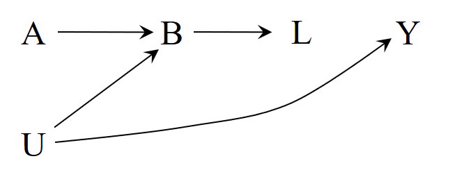
여기서 에 의한 교란이 없으므로 평균 인과 효과 E[=1] − E[=0] = 0은 E[ | =1] − E[ | =0]에 의해 비편향되게 추정된다. 이제 우리가 을 보정하여, 예를 들어 g-공식 \(\sum_ \text{E}[ \mid \=1, \=]\text{Pr}(\=) - \sum_ \text{E}[ \mid \=0, \=]\text{Pr}(\=)\)을 통해 평균 인과 효과를 추정하려고 시도한다고 가정하자. 이 대비는 E[ | =1] − E[ | =0]과 다르며—따라서 편향된다—왜냐하면 이 가 주어졌을 때 와 조건부로 연관되어 있을 뿐만 아니라 와 주변적으로 연관되어 있어 \(\text{Pr}(\=) \ne \text{Pr}(\= \mid \)\)이기 때문이다. 결과 에 대한 처치 의 인과 효과가 0(null)임에도 불구하고 을 보정한 - 연관성이 0이 아닐 것으로 기대되므로, 우리는 무가설 하에서의 선택 편향(selection bias under the null)이 존재한다고 말한다. 그림 18.2(Figure 18.2)의 인과 다이어그램에서처럼 충돌 변수 의 후손(descendant)인 변수 을 보정할 때도 동일한 편향이 발생할 것으로 예상된다. 충돌 변수와 그 후손을 포함하는 인과 구조의 더 많은 예시는 8장을 복습해 보기 바란다.
Figure 18.2
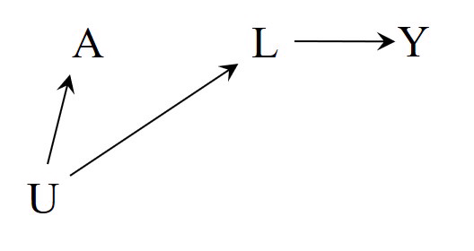
선택 편향은 그림 18.3(Figure 18.3)의 인과 다이어그램에 있는 변수 처럼 처치의 영향을 받는 비충돌 변수(noncollider)를 보정할 때도 나타날 수 있다. 여기서 에 의한 교란이 없으므로 평균 인과 효과 E[=1] − E[=0] \(\ne\) 0 역시 E[ | =1] − E[ | =0]에 의해 비편향되게 추정된다. 그러나 을 보정하여 평균 인과 효과를 추정하려고 하면, 앞 단락과 동일한 이유로 g-공식 대비는 E[ | =1] − E[ | =0]과 달라질 것이다. 이제 에서 로 가는 화살표가 없었다고, 즉 가 에 아무런 효과가 없다는 무가설이 참이어서 E[=1] − E[=0] = 0이었다고 가정해 보자. 그러면 와 는 (주변적으로나 을 조건으로 하거나 모두) 독립이 될 것이며, g-공식 대비는 0이 되어 비편향될 것이다. 이 결과의 핵심 이유는 무가설 아래에서는 가 더 이상 에 인과 효과를 미치지 않기 때문이다. 즉 그림 18.1 및 18.2와 달리, 그림 18.3에서 을 보정하는 것은 가 에 0이 아닌 인과 효과를 가질 때에만 선택 편향을 초래한다. 이때 우리는 대립가설 하에서의 선택 편향(selection bias under the alternative) 또는 비-무가설 하에서의 선택 편향(off the null)이 존재한다고 말한다(6.5절 참조).
Figure 18.3
보정 변수가 처치 의 영향을 받고 결과 에 영향을 미칠 때, 우리는 그 변수를 매개 변수(mediator)라고 부른다. 처치 에서 결과 로 가는 인과 경로 상에 매개 변수 을 포함하는 그림 18.4(Figure 18.4)의 인과 다이어그램을 고려해 보자. 매개 변수 또는 그 후손들을 보정한 - 연관성은 결과 에 대한 처치 의 효과와 달라질 텐데, 보정이 을 통과하는 효과의 구성 요소를 차단하기 때문이다. 가 에 미치는 평균 인과 효과가 관심 있는 대비일 때, 때때로 이 문제를 매개 변수에 대한 과잉 보정(overadjustment for mediators)이라고 부른다.
Figure 18.4
그림 18.4에서 을 보정하면 경로 → → 는 차단되지만 경로 → 는 차단되지 않는다. 따라서 을 보정한 - 연관성은 가 에 미치는 총 효과(total effect)의 편향된 추정량이지만, 을 통해 매개되지 않는 가 에 미치는 직접 효과(direct effect)의 비편향된 추정량이다(Schisterman et al. 2009).
위에서 논의한 편향 유발 변수들은 공통된 특징을 공유한다: 이들은 처치의 영향을 받으며 따라서 처치 후 변수(post-treatment variables)라는 점이다. 그렇다면 처치 이후에 발생하는 변수에 대한 보정은 항상 피해야 한다고 생각할 수 있다. 처치 후 변수를 보정하지 않는다는 규칙은 보정 변수와 처치의 시간적 순서가 대개 알려져 있기 때문에 따르기 쉬울 것이다. 그러나 세부사항 7.4에서 논의했듯이, 이 단순한 규칙을 따르면 유용한 보정 변수가 배제되는 결과를 초래할 수 있다. 그림 18.5(Figure 18.5)의 인과 다이어그램을 고려해 보자. 변수 은 처치 후 변수이지만, 처치 와 결과 사이의 뒷문 경로를 차단하는 데 사용될 수 있다. 따라서 을 보정한 - 연관성은 가 에 미치는 효과의 비편향 추정량인 반면, 보정되지 않은 - 연관성은 편향된 추정량이다. 여기서 핵심 교훈(take-home message)은 인과 그래프는 시간적 순서에 신경 쓰지 않는다는 것이다. 따라서 가 에 영향을 미치지 않을 때, 이 시간상 이전이든 이후이든 분석은 동일해야 한다. 문제는 변수들의 시간적 순서를 알고 있더라도 가 에 영향을 미치는지 여부를 데이터로부터 판단할 수 없다는 점이다. 실제로 시간 순서 가 주어졌을 때, 어떠한 독립성도 갖지 않는 (, , )의 임의의 결합 분포는 여러 인과 그래프와 양립 가능하다. 따라서 을 보정할지 여부에 대한 결정은 데이터 외부의 정보에 기초해야 한다. 즉 을 보정할지 여부는 순전히 통계적 연관성에만 의존하는 어떠한 자동화된 절차로도 결정될 수 없다. 예를 들어 7장에서 논의했듯이, 데이터만을 사용하여 충돌 변수와 교란 요인을 구별할 수 있는 방법은 없다. 오히려 보정 집합에서 편향 유발 변수를 배제하는 것은 문제의 인과 구조에 대한 (존재한다면) 도메인 지식(subject-matter knowledge)에 의해 안내되어야 한다.
Figure 18.5
다음으로 우리는 처치 보다 시간적으로 앞서는 변수 , 즉 시간 순서가 이제 인 변수를 보정하는 문제로 넘어간다. 단순성을 위해 표본 크기가 매우 커서 보정에 사용 가능한 공변량 의 수를 크게 초과한다고 가정해 보자. 결과적으로 모든 추정량의 분산은 무시할 수 있으며 유일한 문제는 편향이다. 이러한 환경에서는 사용 가능한 모든 처치 전 공변량을 보정하는 추정량이 편향을 최소화할 것이라는 믿음이 흔하다. 그러나 이 믿음은 두 가지 개별적인 이유로 잘못되었다.
처치 전 변수 을 포함하는 그림 18.6(Figure 18.6, 그림 7.4와 동일)의 인과 다이어그램을 고려해 보자. 은 에서 로 가는 경로 상의 충돌 변수이므로, 이를 보정하면 7장에서 M-편향(M-bias)이라 불렀던 선택 편향이 유발된다. 다시 말하지만 관측 데이터는 교란 요인과 충돌 변수를 구별할 수 없으므로, 처치 전 변수 을 보정할지 여부를 결정하기 위해 연구자가 가질 수 있는 모든 외부 정보에 의존해야 한다. 사실 이 교란 요인이자 충돌 변수 둘 다일 수도 있는데—그림 18.6에서 에서 로 가는 화살표가 있는 경우—이는 을 보정하든 보정하지 않든 평균 인과 효과를 식별할 수 없음을 함의한다.
Figure 18.6
처치 전 변수에 대한 무차별적인 보정을 피해야 하는 한 가지 추가적인 이유가 있다: 바로 이 책에서 아직 설명하지 않은 현상인 편향 증폭(bias amplification)이다. 처치 가 결과 에 미치는 인과 효과가 미측정 변수 에 의해 교란되는 상황을 나타내는 그림 18.7(Figure 18.7, 그림 16.1과 동일)의 인과 다이어그램을 고려해 보자. 가 데이터에 없기 때문에 우리는 를 보정할 수 없으며 교란은 다루기 어렵다. 대신 를 대입하여 위와 같이 g-공식을 사용해 변수 를 보정하는 것은 교란을 제거하지 못하는데, 가 처치 에서 결과 로 가는 어떤 뒷문 경로 상에도 있지 않기 때문이다. 사실 는 16장에서 설명한 일부 상황에서 도구 변수 추정에 사용될 수 있는 도구 변수(instrument)이며, 따라서 g-공식에 의한 직접적인 교란 보정에는 쓸모가 없다.
Figure 18.7
흥미롭게도 가 로 인한 교란 편향을 보정하여 없애는 데 사용될 수 없음에도 불구하고, 도구 변수 를 보정하는 것은 로 인한 교란 편향을 증폭시킬 수 있다. 즉 를 보정한 - 연관성은 를 보정하지 않은 - 연관성보다 가 에 미치는 효과에서 더 멀어질 수 있다. 도구 변수 를 보정함으로 인해 발생하는 이러한 편향 증폭은 종종 Z-편향(Z-bias)이라 불리며, 와 같은 도구 변수인 변수에 대한 보정을 피해야 하는 이유가 된다. 그러나 편향 증폭이 항상 보장되는 것은 아니다: 를 보정하는 것이 미측정 변수 에 의한 교란 편향을 줄일 수도 있다. 일반적으로 도구 변수에 대한 보정이 편향을 증폭시킬지 줄일지는 알 수 없다.
편향 증폭은 인과 다이어그램에 대응하는 구조 방정식 모형의 모든 방정식이 선형일 때 보장되지만(Pearl 2011), 더 현실적인 환경에서도 발생할 수 있다(Ding et al. 2017).
보정에 전문가 지식을 적용한 예시는 Hernán et al (2002)에 설명되어 있다.
요약하자면, 계산상의 제약이 없고 거의 무한한 표본 크기가 있더라도 사용 가능한 모든 변수 를 보정하는 것은 권장되지 않는다. 이상적으로는 보정 집합에 편향을 유발하거나 증폭시킬 수 있는 어떠한 변수도 포함되어서는 안 된다. 이러한 편향 유발 변수들은 순수하게 통계적인 알고리즘으로는 경험적으로 식별될 수 없기 때문에, 변수 선택을 안내하기 위해 전문가 지식이 필요하다.
18.3 인과 추론과 머신러닝 (Causal inference and machine learning)
다음 세 개 절은 James Robins가 2018년과 2019년 초 사이에 보스턴, 베를린, 로테르담 등에서 진행한 일련의 이론 강의에 대한 Miguel Hernán의 (2019년 4월 기준) 비공식적 해석을 반영한다.
이번 장의 나머지 부분에서는, 가 보정 시 조건부 교환가능성을 깨뜨릴 수 있는 편향 유발 또는 증폭 변수를 포함하지 않도록 보장하면서도(즉 조건부 교환가능성을 깨뜨릴 변수가 없음), 가 에 미치는 평균 인과 효과의 모든 교란 요인 을 여전히 포함하도록(즉 조건부 교환가능성을 달성하는 데 필요한 모든 변수를 포함) 우리가 어떻게든 성공했다고 가정할 것이다. 우리의 다음 문제는 가 매우 초고차원(very high-dimensional)일 때 실제 데이터에서 이 효과 \(\text{E}[\^{\alpha=1}] - \text{E}[\^{\alpha=0}]\)을 추정하는 것이다.
우리가 선택하는 보정 방법에 따라 변수 는 서로 다른 방식으로 사용된다. 플러그인 g-공식(plug-in g-formula, 표준화)을 사용할 때 우리는 변수 를 조건으로 하는 결과 의 조건부 평균을 추정하며, 이를 ()라고 부른다. 역확률 가중(IP weighting)을 사용할 때는 변수 를 조건으로 하는 처치 의 조건부 확률을 추정하며, 이를 ()라고 부른다. 우리는 이 책의 제2부에서 설명한 모수적 모형(예: 선형 회귀 및 로지스틱 회귀)을 통해 추정치 \(\hat{\beta}(\xi)\)와 \(\hat{\pi}(\xi)\)를 산출할 수 있다. 모형 오지정(model misspecification)의 가능성을 줄이기 위해 우리는 의 변수들에 대해 여러 곱 항과 유연한 함수 형태(예: 삼차 스플라인)를 갖는 풍부하게 모수화된(richly parameterized) 모형을 적합하고자 할 것이다.
전통적인 모수적 모형의 사용은 많은 실제 응용에서 심각한 제약에 부딪힌다. 이러한 모형의 모수 수는 표본 크기 에 비해 매우 크거나 심지어 보다 더 클 수 있다. 그러나 전통적인 모수적 모형은 표본 크기에 비해 적은 수의 모수만을 가질 수 있다. 따라서 의 모든 변수에 대한 항을 포함하여 풍부하게 모수화된 모형을 적합하면 매우 부정확한 \(\hat{\beta}(\xi)\) 및 \(\hat{\pi}(\xi)\) 추정치를 산출하게 되거나, 모형의 모수 수가 데이터셋의 개인 수 보다 많을 때 선형 또는 로지스틱 모형을 적합하기 위해 사용되는 통상적인 대표본 근사(large sample approximations) 아래에서는 실제로 적합이 불가능할 수 있다. 또한 15.5절에서 논의했듯이, 에는 처치 와 강하게 연관되어 있지만 교란 요인은 아닌 변수들이 포함될 수 있으며, 이는 ()에 대한 모형 적합을 요구하는 방법을 사용할 때 준-양수성 위반(quasi-violations of positivity)을 초래할 것이다.
의 일부 변수는 교란 요인조차 아닐 수 있으므로 이들을 보정할 필요가 없다는 점을 기억하라.
가능한 해결책은 원래 예측 회귀 모형을 위해 설계된 변수 선택 알고리즘인 라쏘(세부사항 18.1 참조)를 사용하여 모수적 모형을 적합하거나, 트리 기반 알고리즘(예: 랜덤 포레스트) 또는 신경망(예: 딥러닝)과 같은 예측 머신러닝 알고리즘을 사용하여 조건부 기댓값 ()와 ()를 추정하는 것이다. 매우 고차원인 데이터베이스에서 이러한 머신러닝 알고리즘들은 수천 개의 모수를 효과적으로 통합할 수 있으므로 조건부 기댓값의 정확한 예측에 있어 전통적인 모수적 모형을 능가한다.
머신러닝 알고리즘은 예측 정확도를 최적화하기 위해 교차 검증(세부사항 18.2 참조)을 활용할 수 있다.
그러나 ()와 ()를 추정하기 위해 예측 머신러닝 알고리즘을 사용하는 것은 두 가지 심각한 우려를 낳는다.
여러 연구자들이 인과 추론을 위한 임시적(ad hoc) 또는 자동 변수 선택의 문제점을 연구했다. 인용 문헌 목록은 Greenland (2008)를 참고하라.
첫째, (플러그인 g-공식처럼) 결과의 조건부 평균 ()의 추정치를 요구하거나 (IP 가중처럼) 처치의 조건부 확률 ()의 추정치를 요구하는 단일 방법을 사용할 때, 머신러닝 알고리즘이 선택한 변수들이 교란을 제거해 줄 것이라는 보장이 없다. 개선된 접근법은 ()와 ()의 추정치를 적절히 결합하는 이중 강건 추정량(doubly robust estimator)을 사용하는 것이다. 이중 강건 추정량이 성공할 수 있는 이유는, 비-이중 강건 추정량과 달리 이들의 편향이 \(1/\pi(\xi)\) 추정에서의 오차 \(1/\pi(\xi) - 1/\hat{\pi}(\xi)\)와 \(\beta(\xi)\) 추정에서의 오차 \(\beta(\xi) - \hat{\beta}(\xi)\)의 곱(product)에 의존하기 때문이다. 따라서 머신러닝 추정량을 통해 얻은 정확한 추정치 \(\hat{\beta}(\xi)\)와 \(\hat{\pi}(\xi)\)에 기초할 때, 이중 강건 추정량은 작은 편향을 가질 수 있다.
이중 강건 추정량의 이러한 속성을 2차 편향(second-order bias)이라고 부른다. 자세한 내용은 기술적 사항 13.2를 참고하라.
둘째, 머신러닝 알고리즘은 통계적 속성이 대체로 알려지지 않은 통계적 블랙박스이다. 즉 이중 강건 추정량이 비편향되더라도, 그 결과로 얻어지는 추정치의 분산이 틀릴 수 있다. 결과적으로 계산된 신뢰구간은 빈도주의적 해석(frequentist interpretation)을 잃어버리게 된다. 구체적으로, 예측 머신러닝을 통해 얻은 95% 신뢰구간은 너무 좁아서 무효할 것으로 예상된다: 즉 관심 있는 인과 모수를 95% 이상 포착하는 데 실패하게 된다.
초모집단(super-population)에 어느 정도의 교란이 존재할 때 과소포섭(undercoverage)의 정도는 더 커질 텐데, 그 경우 Wald 신뢰구간이 인과 효과의 비편향 추정량을 중심으로 놓이지 않기 때문이다(10장 참조).
따라서 이중 강건 추정량의 사용은 인과 추론과 머신러닝을 결합하는 핵심이지만, 그것만으로는 충분하지 않다. 다음 절에서는 이 두 번째 문제를 해결하는 이중 강건 추정의 두 가지 수정 절차인 표본 분할(sample splitting)과 교차 적합(cross-fitting)을 설명한다.
18.4 이중 강건 머신러닝 추정량 (Doubly robust machine learning estimators)
예측 머신러닝 알고리즘의 사용이 이중 강건 추정량에 대해 작은 편향을 가져온다고 가정해 보자. 작은 편향(small bias)이란 추정치의 편향이 그 표준오차(standard error)보다 훨씬 작음을 의미한다. 더 정확히 말하면 편향이 \(1/\sqrt{\nu}\) 미만이어야 한다. 이중 강건이 아닌 추정량보다 이중 강건 추정량에서 작은 편향을 달성하기가 더 쉬운데, 앞서 언급했듯이 이중 강건 추정량의 편향은 오차 \(1/\pi(\xi) - 1/\hat{\pi}(\xi)\)와 \(\beta(\xi) - \hat{\beta}(\xi)\)의 곱이기 때문이다. 즉 각각의 조건부 기댓값이 \(1/\sqrt{\nu}\)보다 큰 오차로 추정되더라도, 이중 강건 추정량의 편향은 여전히 타당한 신뢰구간을 구축하기에 충분히 작을 수 있다.
그러면 대표본에서(즉 점근적으로) 몇 가지 약한 조건 아래에서 우리는 인과 모수의 참값을 평균으로 갖는 정규 분포를 따르는 일치하는 이중 강건 추정량을 정의할 수 있다. 즉 우리는 작은 편향을 가진 이중 강건 추정량에 대해 타당한 신뢰구간을 구축할 수 있게 된다. 이것이 성립하기 위해 이중 강건 추정량은 아래에서 설명할 두 가지 절차인 표본 분할(sample splitting)과 교차 적합(cross-fitting)을 포함해야 한다.
먼저 표본 분할을 설명한다. 첫째, 우리는 명의 개인으로 구성된 연구 모집단을 무작위로 절반씩 두 개로 나눈다: 각각 /2명의 개인을 갖는 추정 표본(estimation sample)과 훈련 표본(training sample)이다. 둘째, 결과와 처치의 조건부 기댓값에 대한 추정량 \(\hat{\beta}(\xi)\)와 \(\hat{\pi}(\xi)\)를 얻기 위해 훈련 표본에 예측 알고리즘을 적용한다. 셋째, 훈련 표본에서 얻은 \(\hat{\beta}(\xi)\)와 \(\hat{\pi}(\xi)\) 추정량을 사용하여 추정 표본에서 평균 인과 효과의 이중 강건 추정량을 계산한다. 이제 우리는 연구 모집단의 무작위 절반에서 평균 인과 효과에 대한 이중 강건 머신러닝 추정치를 얻었다.
()와 ()에 대한 성가신 회귀(nuisance regressions)를 추정하는 데 사용하기 때문에 훈련 표본을 성가신 표본(nuisance sample)이라고 부를 수도 있다. 세부사항 15.1에서 성가신 모수(nuisance parameters)의 개념을 복습하라.
표본 분할을 통해 우리는 추정 표본에 있는 /2명의 개인에 기초한 표준적인 통계적 추론 절차를 사용할 수 있다. 타당한 신뢰구간을 구축할 수 있다는 것은 좋은 일이지만, 불행히도 그 과정에서 표본 크기의 절반을 잃어버리게 된다. 그 결과 우리의 신뢰구간은 명의 전체 표본을 사용할 수 있었을 때 얻었을 신뢰구간보다 더 넓어질 것이다. 이 문제를 극복하는 방법이 바로 교차 적합(cross-fitting)이다.
표본 분할과 교차 적합은 새로운 절차가 아니다. 그러나 이러한 절차들을 머신러닝과 결합한다는 아이디어는 최근에 이르러서야 강조되기 시작했다.
이제 교차 적합이 표본 분할로 인해 손실된 통계적 효율성(statistical efficiency)을 어떻게 회복하는지 설명한다. 첫째, 우리는 연구 모집단의 추정 및 훈련 절반의 역할을 맞바꾸어 위 절차를 반복한다. 즉 이전에는 추정용으로 배정되었던 절반을 새로운 훈련 표본으로 사용하고, 이전에는 훈련용으로 사용되었던 절반을 새로운 추정 표본으로 사용한다. 그런 다음 새로운 훈련 표본에서 얻은 \(\hat{\beta}(\xi)\)와 \(\hat{\pi}(\xi)\) 추정량을 사용하여 새로운 추정 표본에서 평균 인과 효과의 이중 강건 추정량을 계산한다. 이제 우리는 모집단의 다른 쪽 무작위 절반에서 평균 인과 효과에 대한 이중 강건 머신러닝 추정치를 얻었다.
다음 단계는 모집단의 각 절반에서 얻은 두 이중 강건 추정치의 평균을 계산하는 것이다. 이 평균이 전체 연구 모집단에서의 효과에 대한 우리의 이중 강건 추정치가 된다. 이 추정치에 대한 95% 신뢰구간은 붓스트랩(bootstrapping)을 통해 구축할 수 있는데, 붓스트랩 표준오차의 1.96배를 더하고 빼거나, 붓스트랩 추정치들의 2.5 및 97.5 백분위수를 구간의 경계로 사용하면 된다. 이제 끝났다. 표본 분할과 교차 적합을 통해 우리는 이중 강건 추정과 머신러닝을 결합하여 알려진 통계적 속성을 가지면서 사용 가능한 모든 데이터를 활용하는 인과 효과 추정치를 얻을 수 있다.
현재 활발한 연구 분야 중 하나는 이중 강건 추정량의 편향이 너무 큰지 여부를 감지하고, 만약 그렇다면 훈련 표본에서의 머신러닝 구성 요소를 다시 수행할 필요 없이 추정 표본에서 더 작은 편향을 가진 추정치를 얻는 절차를 개발하는 것이다.
18.5 변수 선택은 어려운 문제이다 (Variable selection is a difficult problem)
이전 절에서 개괄한 방법들은 보정 변수를 선택하기 위한 데이터 기반 절차가 필연적으로 잘못된 신뢰구간을 초래할 것이라는 널리 퍼진 믿음을 무효화한다. 우리가 살펴보았듯이 교란 요인 선택을 위한 머신러닝 알고리즘과 인과 추론 방법의 결합은 특정 조건 하에서 올바른 통계적 추론을 이끌어낼 수 있다. 그러나 이중 강건 머신러닝이 우리의 모든 문제를 해결해 주는 것은 아니며, 거기에는 적어도 네 가지 이유가 있다.
첫째, 많은 응용 분야에서 사용 가능한 도메인 지식이 모든 중요한 교란 요인을 식별하거나 편향을 유발 또는 증폭시키는 변수를 배제하기에 불충분할 수 있다. 따라서 이중 강건 머신러닝 추정량이 작은 편향을 가질 것이라는 보장은 없다.
둘째, 수많은 머신러닝 알고리즘이 존재하지만 모든 환경에서 최적인 알고리즘은 없다. 한 알고리즘이 일반적으로 다른 알고리즘보다 더 낫다는 것을 보여줄 수 있는 수학적 정리는 존재하지 않는다. 알고리즘의 선택은 데이터를 발생시킨 인과 구조에 의존해야 하지만, 그러한 인과 구조는 알려지지 않았거나 실질적인 권고사항을 개발하기 위해 요약하기 어려울 수 있다.
셋째, 시간에 따라 변화하는 처치가 있는 고차원 환경에서 이중 강건 추정량의 구현은 어려우며—머신러닝과 결합될 때 계산 비용이 매우 많이 든다. 이는 인과 생존 분석(causal survival analysis)에서 특히 그렇다. 결과적으로 복잡한 종단 데이터로부터의 인과 추론에 관해 출판된 대부분의 사례들은 이 책의 제3부에서 강조하는 단일 강건 추정량(single robust estimators)을 사용한다.
넷째, 이중 강건 머신러닝은 참인 조건부 기댓값 ()와 ()가 알려져 있었을 때 얻어졌을 분산과 동일한 인과 효과의 분산을 산출할 수 있다. 그러나 그러한 분산이 의미 있는 인과 추론을 하기에 충분히 작을 것이라는 보장은 없다.
이전 절에서 설명한 대로 인과 효과의 이중 강건 머신러닝 추정치를 얻었지만, 그 (올바른) 분산이 너무 커서 쓸모가 없다는 사실을 알게 되었다고 가정해 보자. 이러한 일은 우리가 모든 것을 올바르게 수행했더라도 의 일부 공변량이 처치 와 강하게 연관되어 있을 때 발생한다. 그러면 의 특정 값을 가진 개인들에 대해 처치 확률 추정치 ()가 0에 매우 가깝거나 1에 매우 가까울 수 있다. 결과적으로 효과 추정치는 매우 큰 분산을 갖게 되며, 따라서 매우 넓은 (그러나 올바른) 95% 신뢰구간을 갖게 된다. 우리는 95% 신뢰구간이 비록 올바르더라도 지나치게 넓은 것을 좋아하지 않기 때문에, “문제”를 일으키는 의 변수들을 버리고 데이터 분석을 다시 반복하고 싶은 유혹을 느낄 수 있다. 만약 그렇게 한다면, 우리는 게임의 규칙을 근본적으로 바꾸는 셈이 된다. 처치와는 연관되어 있지만 결과와는 그다지 연관되지 않은 의 공변량을 제거하기 위해 데이터를 사용하는 것은 효과 추정치를 둘러싼 95% 신뢰구간이 타당하다고 더 이상 보장할 수 없게 만든다. 편향을 제거하기 위해 모든 잠재적 교란 요인을 포함하는 것과 분산을 줄이기 위해 일부 변수를 배제하는 것 사이의 긴장은 해결하기 어렵다.
이 결과는 당혹스러운 철학적 질문을 던진다: 분산을 너무 크게 만드는 5개의 변수를 배제하기 위해 데이터를 사용할 때 신뢰구간이 무효해진다면, 우연히 그 5개의 변수를 포함하지 않은 데이터셋을 받았을 때는 왜 신뢰구간이 타당해야 하는가? 잠재적 교란 요인 중 일부가 기록되지 않은 데이터셋으로 항상 연구를 진행한다는 점을 고려할 때, 우리는 임의의 관찰 분석에서 신뢰구간을 어떻게 해석해야 하는가?
위의 모든 점들을 고려할 때, 변수 선택을 위한 명확한 일반 지침을 개발하는 것은 불가능할 수 있다. 실제로 이러한 문제들을 둘러싸고 너무나 많은 방법론적 연구가 진행 중이어서 이번 장이 규범적인(prescriptive) 답을 내릴 수는 없다. 인과 추론을 위한 최선의 과학적 조언은 다중 민감도 분석(multiple sensitivity analyses)을 수행하는 것일 수 있다: 즉 여러 분석 방법을 구현하고 그 결과로 나오는 효과 추정치들을 살펴보는 것이다. 다양한 효과 추정치들이 서로 부합한다면, 우리는 그 결과에 더 많은 확신을 가질 수 있을 것이다. 다양한 효과 추정치들이 서로 부합하지 않는다면, 연구자로서 우리의 임무는 그 이유를 이해하려고 노력하는 것이다.
제3부 복잡한 종단 데이터로부터의 인과 추론 (Part III: Causal Inference from Complex Longitudinal Data)
제19장 시간에 따라 변화하는 처치(Time-Varying Treatments)
지금까지 이 책은 시간에 따라 변화하지 않는 고정된 처치(fixed treatments)를 다루었다. 그러나 많은 인과적 질문들은 시간에 따라 변화하는 처치를 포함한다. 예를 들어 우리는 의학적 치료, 생활 습관, 고용 상태, 결혼 여부, 직업적 노출 등의 인과 효과를 추정하는 데 관심이 있을 수 있다. 이러한 처치들은 시간에 따라 한 개인에 대해 서로 다른 값을 가질 수 있기 때문에, 우리는 이를 시간에 따라 변화하는 처치(time-varying treatments)라고 부른다.
이 책의 제1부와 제2부에서 시간에 따라 고정된 처치(time-fixed treatments)로 우리의 관심을 제한한 것은 기본 개념과 방법을 소개하는 데 도움이 되었다. 이제 시간에 걸쳐 전개되는 가상적 개입(hypothetical interventions)의 대비를 수반하는 더 현실적인 인과적 질문들을 고려할 때이다. 제3부는 제1부와 제2부의 내용을 시간에 따라 변화하는 처치로 확장한다.
이번 장에서는 시간에 따라 변화하는 처치가 있을 때의 인과 추론을 위한 몇 가지 핵심 용어와 개념을 설명한다. 비록 우리가 이러한 개념들을 단순화하기 위해 최선을 다했지만(믿기지 않는다면 인과 추론 문헌들을 찾아보라), 이번 장은 여전히 이 책에서 가장 기술적인 장 중 하나이다. 안타깝게도 더 단순화하면 엄밀성을 너무 많이 잃게 될 것이다. 하지만 여기까지 도달했다면 여러분은 이번 장을 이해할 충분한 자격을 갖추고 있다.
19.1 시간에 따라 변화하는 처치의 인과 효과 (The causal effect of time-varying treatments)
추적 관찰의 0시점(time zero)에서의 시간에 따라 고정된 처치 변수 (1: 처치군, 0: 비처치군)와 60개월 후에 측정된 결과 변수 를 고려해 보자. 우리는 이전에 처치 가 결과 에 미치는 평균 인과 효과를 처치 하에서의 평균 반사실적 결과 \(\text{E}[\^{\alpha=1}]\)과 비처치 하에서의 평균 반사실적 결과 \(\text{E}[\^{\alpha=0}]\) 사이의 대비, 즉 \(\text{E}[\^{\alpha=1}] - \text{E}[\^{\alpha=0}]\)으로 정의했다. 모든 사람에 대해 처치 상태가 단일 시점(0시점)에 결정되기 때문에, 평균 인과 효과는 처치가 일어나는 시점을 언급할 필요가 없다. 이와 대조적으로…
…시간에 따라 변화하는 처치(time-varying treatments)는 시간을 명시적으로 포함해야 한다.
단순성을 위해, 우리는 잠정적으로 이 기간 동안 어떤 개인도 추적 관찰에서 탈락(lost to follow-up)하거나 사망하지 않았다고 가정하며, 모든 변수가 완벽하게 측정되었다고 가정할 것이다.
출판된 많은 논문과의 일관성을 위해, 우리는 시간에 대해 0부터 시작하는 인덱싱(zero-based indexing)을 사용한다. 즉, 처치가 가능한 첫 번째 시점은 = 1이 아니라 = 0이다.
이를 알아보기 위해, 추적 관찰의 매월 마다 변할 수 있는 시간에 따라 변화하는 이분형(dichotomous) 처치 를 고려하자. 여기서 = 0, 1, 2… 이며 = 59이다. 예를 들어 인간 면역결핍 바이러스(HIV)에 감염된 사람들을 대상으로 한 5년 추적 관찰 연구에서, 는 개인이 월에 항레트로바이러스 치료(antiretroviral therapy)를 받으면 1의 값을, 그렇지 않으면 0의 값을 취한다. 연구가 시작되는 시점 0 이전에는 어떤 개인도 처치를 받지 않았다. 즉, 모든 개인에 대해 {-1} = 0이다. 우리는 처치 이력(treatment history)을 나타내기 위해 윗줄(overbar)을 사용한다. 즉, ¯ = (0, 1, … )는 시점 0부터 시점 까지의 처치 이력이다. 까지의 전체 처치 이력을 지칭할 때, 우리는 종종 시간 하첨자 없이 ¯를 ¯로 나타낸다. 우리의 HIV 연구에서, 추적 관찰 내내 지속적으로 처치를 받은 개인은 \(\¯ = (\_0 = 1\, \_1 = 1\, \.\.\. \_{59} = 1) = (1\, 1\, \.\.\. 1)\), 즉 \(\¯ = \bar{1}\)의 처치 이력을 갖는다. 유사하게, 추적 관찰 기간 동안 처치를 전혀 받지 않은 개인은 \(\¯ = (0\, 0\, \.\.\. 0) = \bar{0}\)의 처치 이력을 갖는다. 대부분의 개인은 추적 관찰 기간의 일부 동안에만 처치를 받으므로 1과 0이 섞여 있는 중간 단계의 처치 이력을 가지며, 이는 \(\bar{1}\)이나 \(\bar{0}\)처럼 간결하게 나타낼 수 없다.
236 Time-varying treatments
단순성을 유지하기 위해, 우리의 예시는 고정된 시점에 측정된 결과를 고려한다. 그러나 이 장에서 논의되는 개념들은 시간에 따라 변화하는 결과(time-varying outcomes)와 고장 시간 결과(failure time outcomes)에도 적용된다.
기억하자: 우리는 확률 변수의 가능한 실현값(realizations)을 나타내기 위해 소문자를 사용한다. 예를 들어 \(\alpha_\kappa\)는 처치 \(\_\kappa\)의 실현값이다.
추적 관찰이 끝나는 시점 \(\ + 1 = 60\)에서 \(\)가 건강 상태를 측정한다고 가정하자(\(\)의 값이 클수록 더 좋은 건강 상태를 나타냄). 우리는 결과 \(\)에 대한 시간에 따라 변화하는 처치 \(\¯\)의 평균 인과 효과(average causal effect)를 추정하고자 한다. 그러나 우리는 더 이상 시간에 따라 변화하는 처치의 평균 인과 효과를 단일 시점 \(\kappa\)에서의 대비로 정의할 수 없다. 왜냐하면 대비 \(\text{E}[^{\alpha_\kappa=1}] - \text{E}[^{\alpha_\kappa=0}]\)은 단일 시점 \(\kappa\)에서의 처치 \(\_\kappa\)의 효과를 정량화할 뿐, 0부터 59 사이의 모든 시점 \(\kappa\)에서의 시간에 따라 변화하는 처치 \(\_\kappa\)의 효과를 정량화하지 못하기 때문이다. 실제로 우리는 평균 인과 효과를 추적 관찰의 시작(\(\kappa = 0\))부터 종료(\(\kappa = \\))까지의 모든 시점에서의 처치를 포함하는 두 가지 처치 전략 하에서의 반사실적 평균 결과 간의 대비로 정의해야 할 것이다. 그 결과, 시간에 따라 변화하는 처치의 평균 인과 효과는 유일하게 정의되지 않는다. 다음 절에서는 시간에 따라 변화하는 처치에 대한 평균 인과 효과의 다양한 가능한 정의를 설명한다.
19.2 처치 전략(Treatment strategies)
처치 전략을 비교하기 위한 일반적인 반사실적 이론은 Robins(1986, 1987, 1997a)에 의해 처음 제시되었다.
처치 전략(treatment strategy)—계획(plan), 방침(policy), 프로토콜(protocol) 또는 요법(regime)이라고도 불림—은 추적 관찰의 각 시점 \(\kappa\)마다 처치를 배정하는 규칙이다. 예를 들어, 추적 관찰 동안 “항상 처치(always treat)”와 “전혀 처치하지 않음(never treat)”이 두 가지 처치 전략이다. “항상 처치” 전략은 \(\alpha¯ = (1\, 1\, \.\.\. 1) = \bar{1}\)로 표현되며, “전혀 처치하지 않음” 전략은 \(\alpha¯ = (0\, 0\, \.\.\. 0) = \bar{0}\)으로 표현된다. 이제 우리는 결과 \(\)에 대한 \(\¯\)의 평균 인과 효과를 “항상 처치” 전략 하에서의 평균 반사실적 결과 \(^{\alpha¯=\bar{1}}\)과 “전혀 처치하지 않음” 전략 하에서의 평균 반사실적 결과 \(^{\alpha¯=\bar{0}}\) 사이의 대비, 즉 \(\text{E}[^{\alpha¯=\bar{1}}] - \text{E}[^{\alpha¯=\bar{0}}]\)으로 정의할 수 있다.
그러나 시간에 따라 변화하는 처치 \(\¯\)에 대해서는 다른 많은 가능한 인과 효과들이 존재하며, 그 각각은 두 가지 특정한 처치 전략 하에서의 결과들의 대비로 정의된다. 예를 들어, 우리는 “한 달 걸러 처치(treat at every other month)” 전략 \(\alpha¯ = (1\, 0\, 1\, 0\.\.\.)\)과 “첫 달을 제외하고 모든 달에 처치(treat at all months except the first one)” 전략 \(\alpha¯' = (0\, 1\, 1\, 1\.\.\.)\)을 비교하는 대비 \(\text{E}[^{\alpha¯}] - \text{E}[^{\alpha¯'}]\)에 의해 정의되는 평균 인과 효과에 관심이 있을 수 있다. 가능한 대비의 수는 매우 많다: 이분형 \(\alpha_\kappa\)에 대해 \((\alpha_0\, \alpha_1\, \.\.\. \alpha_\)\) 값의 가능한 조합이 \(2^\\)개 존재하므로, 우리는 적어도 \(2^\\)개의 처치 전략을 정의할 수 있다. 실제로 뒤에서 설명하겠지만, 이러한 \(2^\\)개의 전략들로 가능한 모든 처치 전략을 다 포괄하는 것은 아니다.
우리의 HIV 예시에서 훨씬 더 많은 처치 전략을 정의하기 위해, 모든 개인에서 \(\kappa\)월에 측정된 CD4 세포 수(단위: cells/\(\mu\)L, cells/L)를 나타내는 시간에 따라 변화하는 공변량 \(\_\kappa\)를 고려하자. 변수 \(\_\kappa\)는 CD4 세포 수가 낮아 나쁜 예후를 나타낼 때 1의 값을 취하고, 그렇지 않으면 0의 값을 취한다. 시점 0에서 모든 개인은 높은 CD4 세포 수를 가지며, \(\_0 = 0\)이다. 그러면 우리는 “\(\_\kappa = 0\)인 동안에는 처치하지 않고, \(\_\kappa = 1\)이 될 때 처치를 시작하여 그 시점 이후로는 지속적으로 처치한다”는 전략을 고려할 수 있다. 이 처치 전략은 앞 단락에서 고려한 전략들과 다른데, 모든 개인이 시점 \(\kappa = 0\)에서 동일한 처치 \(\alpha_0\)을 받고 시점 \(\kappa = 1\)에서 동일한 처치 \(\alpha_1\)을 받는 식의 규칙 \(\alpha¯ = (\alpha_0\, \alpha_1\, \.\.\. \alpha_\)\)으로 표현할 수 없기 때문이다. 이제 각 시점에서 어떤 개인은 처치를 받고 다른 개인은 처치를 받지 않게 되며, 이는 시간에 따라 변화하는 그들의 \(\_\kappa\) 값에 따라 결정된다. 이것이 동적 처치 전략(dynamic treatment strategy)의 한 예이며, 이는 시점 \(\kappa\)에서의 처치 \(\alpha_\kappa\)가 개인의 시간에 따라 변화하는 공변량(들) \(\bar{\}_\kappa\)의 변화 과정에 의존하는 규칙이다. 처치가 공변량에 의존하지 않는 전략 \(\alpha¯\)는 비동적(non-dynamic) 또는 정적 처치 전략(static treatment strategies)이다. 형식적 정의는 세부사항 19.1을 참조하라.
세부사항 19.1 (Fine Point 19.1) 결정론적 처치 전략과 확률적 처치 전략(Deterministic and random treatment strategies). 동적 처치 전략은 과거 이력 \((\bar{\alpha}_{\kappa-1}\, \bar{\lambda}_\kappa)\)를 가진 개인에게 \(\kappa\) 시점에 배정되는 처치를 명시하는 규칙 \(\gamma_\kappa(\bar{\alpha}_{\kappa-1}\, \bar{\lambda}_\kappa)\)들로 이루어진 규칙 \(\gamma = [\gamma_0(\lambda_0)\, \gamma_1(\bar{\alpha}_0\, \bar{\lambda}_1)\, \dots\, \gamma_\(\bar{\alpha}_{\-1}\, \bar{\lambda}_\)]\)이다. 우리의 HIV 연구에서의 한 예: 개인의 CD4 세포 수(\(\bar{\lambda}_\kappa\)의 함수)가 \(\kappa\) 시점 또는 그 이전에 낮았다면 \(\gamma_\kappa(\bar{\alpha}_{\kappa-1}\, \bar{\lambda}_\kappa)\)는 1이고, 그렇지 않으면 \(\gamma_\kappa(\bar{\alpha}_{\kappa-1}\, \bar{\lambda}_\kappa)\)는 0이다. 정적 처치 전략은 \(\gamma_\kappa(\bar{\alpha}_{\kappa-1})\)가 \(\bar{\lambda}_\kappa\)에 의존하지 않는 규칙 \(\gamma = [\gamma_0\, \gamma_1(\bar{\alpha}_0)\, \dots\, \gamma_\(\bar{\alpha}_{\-1})]\)이다. 우리는 종종 \(\gamma_\kappa(\bar{\alpha}_{\kappa-1}\, \bar{\lambda}_\kappa)\)를 \(\gamma_\kappa(\bar{\alpha}_{\kappa-1}\, \lambda_\kappa)\) 또는 \(\gamma_\kappa(\bar{\lambda}_\kappa)\)로 축약하여 표기할 것이다.
우리가 비교하고자 하는 대부분의 정적 및 동적 전략은 각 시점에서 각 개인에게 특정한 처치 값(0 또는 1)을 배정하는 결정론적 처치 전략(deterministic treatment strategies)이다. 보다 일반적으로, 우리는 특정한 처치 값을 배정하는 대신 처치 값을 받을 확률을 배정하는 확률적 처치 전략(random treatment strategies)을 고려할 수도 있다. 확률적 처치 전략은 정적일 수도 있고(예: “매월 독립적으로, 확률 0.3으로 개인을 처치하고 확률 0.7로 처치하지 않음”), 동적일 수도 있다(예: “매월 독립적으로, CD4 세포 수가 낮은 개인은 확률 0.3으로 처치하지만, CD4 세포 수가 높은 개인은 처치하지 않음”).
우리는 평균 반사실적 결과 \(\text{E}[^\gamma]\)가 극대화되는(결과 값이 클수록 더 좋은 경우) 전략 \(\gamma\)를 최적 처치 전략(optimal treatment strategy)이라고 부른다. 약물 치료의 경우, 독성이 발생했을 때 치료를 중단해야 하므로 최적 전략은 거의 항상 동적일 것이다. 또한 어떤 확률적 전략도 최적의 결정론적 전략보다 선호될 수는 없다. 그러나 임상시험 전에는 어떤 결정론적 요법이 최적인지 알 수 없기 때문에 확률적 전략(즉, 통상적인 무작위 시험 및 순차적 무작위 시험)은 여전히 과학적으로 필요하다. 처치 전략의 분류 체계에 대해서는 Young et al. (2014)를 참조하라. 본문에서는 달리 언급하지 않는 한 문자 \(\gamma\)는 결정론적 처치 전략만을 지칭한다.
시간에 따라 변화하는 처치에서의 인과 추론은 둘 이상의 처치 전략 하에서의 반사실적 결과들의 대비를 포함한다. 시간에 따라 변화하는 처치의 평균 인과 효과는 관심 있는 처치 전략들이 명시되어야만 잘 정의된다. 우리의 HIV 예시에서 우리는 전략 \(\alpha¯\)(예: “항상 처치”) 대 전략 \(\alpha¯'\)(예: “전혀 처치하지 않음”)을 대비하는 차이 \(\text{E}[^{\alpha¯}] - \text{E}[^{\alpha¯'}]\)에 기초하여, 또는 전략 \(\alpha¯\)(“항상 처치”) 대 전략 \(\gamma\)(예: “CD4 세포 수가 낮아진 후에만 처치”)를 대비하는 차이 \(\text{E}[^{\alpha¯}] - \text{E}[^\gamma]\)에 기초하여 평균 인과 효과를 정의할 수 있다. 우리는 종종 정적이든 동적이든 임의의 전략을 나타내기 위해 \(\gamma\)를 사용할 것임에 유의하라. 정적 전략을 나타내기 위해 사용할 때는 단순히 \(^\gamma\) 또는 \(^{\alpha¯}\) 대신 \(^{\gamma=\alpha¯}\)로 쓰기도 한다.
즉, 시간에 따라 변화하는 처치에 대해서는 단 하나의 인과 효과 정의만 존재하는 것이 아니다. 각 시점 \(\kappa\)에서 오직 두 가지 처치 선택지—처치함 또는 처치하지 않음—만 존재하더라도, 우리는 존재하는 처치 전략 쌍의 수만큼 많은 인과 효과를 정의할 수 있다. 다음 절에서는 이러한 모든 인과 효과를 타당하게 추정할 수 있는 연구 설계인 순차적 무작위 실험(sequentially randomized experiment)을 설명한다.
19.3 순차적 무작위 실험(Sequentially randomized experiments)
인과 그래프는 정의상 그래프 상의 임의의 두 변수의 모든 공통 원인(common causes)을 항상 포함해야 함을 상기하자.
그림 19.1, 19.2, 19.3의 인과 다이어그램은 시간에 따라 변화하는 처치를 다루는 연구에서 발생할 수 있는 세 가지 상황을 요약한다. 세 다이어그램 모두에서 \(\_\kappa\)는 시간에 따라 변화하는 처치, \(\_\kappa\)는 측정된 변수들의 집합, \(\)는 결과, \(\_\kappa\)는 인과 그래프 상의 적어도 두 개 이상의 다른 변수의 공통 원인이 되는 \(\kappa\) 시점의 미측정 변수들의 집합을 나타낸다. 공변량 \(\_\kappa\)는 측정되지 않았기 때문에 그 값을 알 수 없으며 따라서 분석에 사용할 수 없다.
238 Time-varying treatments
기술적 사항 19.1 (Technical Point 19.1) 동적 전략의 정의에 대하여(On the definition of dynamic strategies). 과거 처치 및 공변량 이력에 의존하는 각 동적 전략 \(\gamma = [\gamma_0(\lambda_0)\, \gamma_1(\bar{\alpha}_0\, \bar{\lambda}_1)\, \dots\, \gamma_\(\bar{\alpha}_{\-1}\, \bar{\lambda}_\)]\)는 오직 과거 공변량 이력에만 의존하는 동적 전략 \(\gamma^0 = [\gamma^0_0(\lambda_0)\, \gamma^0_1(\bar{\lambda}_1)\, \dots\, \gamma^0_\(\bar{\lambda}_\)]\)과 연관되어 있다. 일관성(consistency, 기술적 사항 19.2 참조)에 의해, 한 개인이 시점 0부터 전략 \(\gamma\)를 따를 때와 시점 0부터 전략 \(\gamma^0\)을 따를 때 동일한 처치, 공변량, 결과 이력을 갖게 된다. 특히 \(^\gamma = ^{\gamma^0}\)이고 \(\bar{\}^\gamma(\) = \bar{\}^{\gamma^0}(\)\)이다.
구체적으로 \(\gamma^0\)은 \(\gamma\)로부터 다음과 같이 재귀적으로 정의된다: \(\gamma^0_0(\lambda_0) = \gamma_0(\bar{\alpha}_{-1}=0\, \lambda_0)\) (관례상 \(\bar{\alpha}_{-1}\)은 오직 0의 값만 가질 수 있음) 및 \(\gamma^0_\kappa(\bar{\lambda}_\kappa) = \gamma_\kappa(\bar{\gamma}^0_{\kappa-1}(\bar{\lambda}_{\kappa-1})\, \bar{\lambda}_\kappa)\). 각 \(\kappa\)에서의 처치가 과거 처치 이력에 의존하지 않는 임의의 전략에 대해서는 \(\gamma\)와 \(\gamma^0\)이 이미 동일한 함수들의 집합이다.
\(\gamma\)를 통한 \(\gamma^0\)의 위의 정의는, 관측 데이터에서 한 개인이 시점 \(\tau\)까지 전략 \(\gamma\)를 따른 것(즉, \(\kappa \le \tau\)에 대해 \(\_\kappa = \gamma_\kappa(\bar{\}_{\kappa-1}\, \bar{\}_\kappa)\))과 개인이 \(\tau\)까지 전략 \(\gamma^0\)을 따른 것(즉, \(\kappa \le \tau\)에 대해 \(\_\kappa = \gamma^0_\kappa(\bar{\}_\kappa)\))이 동치임을 보장한다.
우리의 HIV 연구에서 시간에 따라 변화하는 공변량인 CD4 세포 수 \(\_\kappa\)는 면역 체계에 대한 실제적이지만 측정되지 않은 만성적 손상 \(\_\kappa\)의 결과이다. 개인의 면역 손상 \(\_\kappa\)가 클수록 그녀의 CD4 세포 수 \(\_\kappa\)와 건강 상태 \(\)는 더 낮아진다. 단순성을 위해 인과 다이어그램에는 추적 관찰의 처음 두 시점 \(\kappa = 0\)과 \(\kappa = 1\)만 포함하며, 모든 참가자가 배정된 처치를 준수했다고 가정할 것이다(세부사항 19.2 참조).
그림 19.1의 인과 다이어그램에는 측정된 공변량 \(\bar{\}_\kappa\)나 미측정 공변량 \(\bar{\}_\kappa\)로부터 처치 \(\_\kappa\)로 향하는 화살표가 없다. 그림 19.2의 인과 다이어그램에는 측정된 공변량 \(\bar{\}_\kappa\)로부터 처치 \(\_\kappa\)로 향하는 화살표는 있지만 미측정 공변량 \(\bar{\}_\kappa\)로부터 처치 \(\_\kappa\)로 향하는 화살표는 없다. 그림 19.3의 인과 다이어그램에는 측정된 공변량 \(\bar{\}_\kappa\)와 미측정 공변량 \(\bar{\}_\kappa\) 둘 다로부터 처치 \(\_\kappa\)로 향하는 화살표가 있다.
그림 19.1 (Figure 19.1)
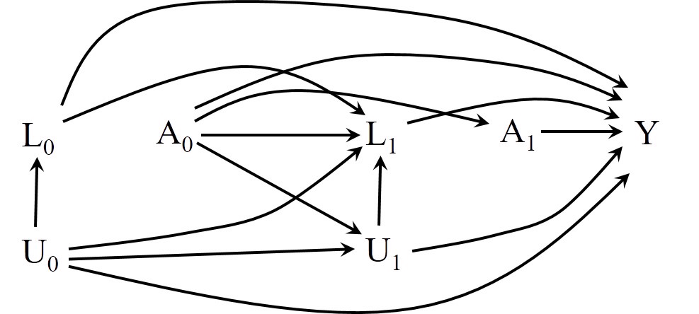
그림 19.2 (Figure 19.2)
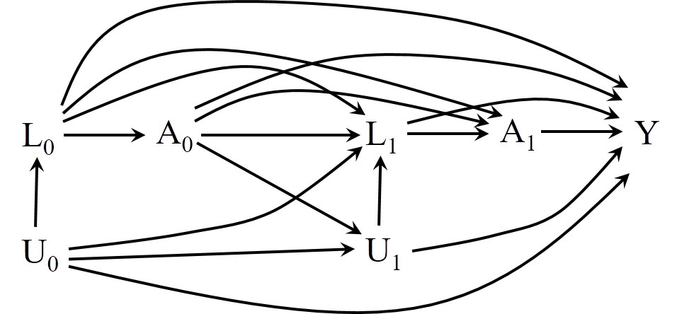
그림 19.1은 각 시점 \(\kappa\)에서의 처치 \(\_\kappa\)가 이전 처치 이력에만 의존하는 확률로 무작위 배정되는 무작위 실험을 나타낼 수 있다. 우리의 HIV 연구는 예를 들어 각 월 \(\kappa\)에서의 개인의 처치 값이 전월에 처치를 받지 않은 개인(\(\_{\kappa-1} = 0\))에게는 확률 0.5로, 전월 \(\kappa-1\)에 처치를 받은 개인(\(\_{\kappa-1} = 1\))에게는 확률 1로 무작위 배정된다면 그림 19.1로 표현될 것이다. 정적 처치 전략들의 대비에 관심이 있을 때, 그림 19.1은 시간에 따라 변화하는 처치에 대해 측정된 변수나 미측정 변수에 의한 교란이 없다는 조건의 적절한 일반화이다. 이 인과 다이어그램 하에서 모든 사람이 정적 처치 전략 \(\alpha¯\)를 따랐을 때의 반사실적 결과 평균 \(\text{E}[^{\alpha¯}]\)는 전략 \(\alpha¯\)를 따른 사람들 사이에서의 평균 결과 \(\text{E}[ \mid \bar{\} = \alpha¯]\)와 단순히 같다.
(흥미롭게도 동적 전략에 대해서는 이것이 성립하지 않는다. 변수 \(\\)에 의존하는 동적 전략 \(\gamma\) 하에서의 반사실적 평균 \(\text{E}[^\gamma]\)는, 처치 \(\_\kappa\)가 \(\_\kappa\)에 의존하는 모든 시점 \(\kappa\)에서 처치 \(\_\kappa = 1\)을 받을 확률이 정확히 0.5인 경우에만 전략 \(\gamma\)를 따른 사람들 사이에서의 평균 결과와 같다. 그렇지 않은 경우 \(\text{E}[^\gamma]\)를 식별하려면 그림 19.1 또는 그림 19.2 하에서 \(\\), \(\\), \(\) 데이터에 g-방법(g-methods)을 적용해야 한다.)
그림 19.3 (Figure 19.3)
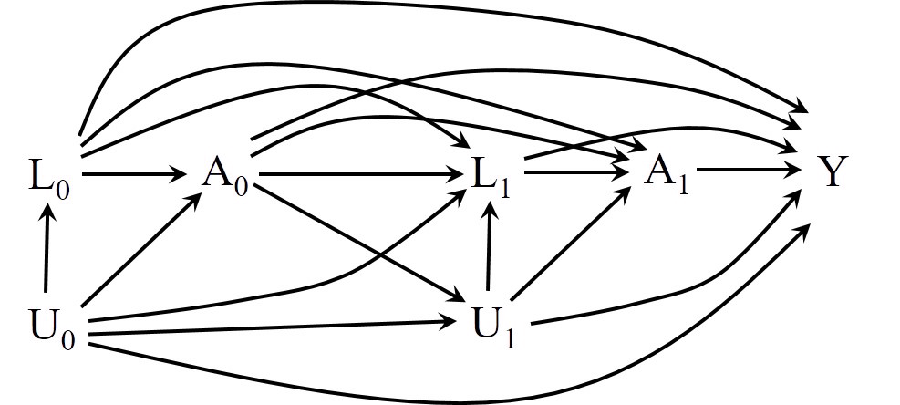
그림 19.2는 각 시점 \(\kappa\)에서의 처치 \(\_\kappa\)가 연구자들에 의해 이전 처치 및 측정된 공변량 이력에 의존하는 확률로 무작위 배정되는 무작위 실험을 나타낼 수 있다. 우리의 연구는 예를 들어 각 월 \(\kappa\)에서의 개인의 처치 값이 높은 CD4 세포 수를 가진 미처치 개인(\(\_{\kappa-1} = 0, \_\kappa = 1\))에게는 확률 0.4로, 낮은 CD4 세포 수를 가진 미처치 개인(\(\_{\kappa-1} = 0, \_\kappa = 0\))에게는 확률 0.8로, 그리고 이전에 처치받은 개인에게는 그들의 CD4 세포 수와 무관하게(\(\_{\kappa-1} = 1\)) 확률 0.5로 무작위 배정된다면 그림 19.2로 표현될 것이다. 그림 19.2에서는 시간에 따라 변화하는 처치에 대해 측정된 변수에 의한 교란은 있지만, 미측정 변수에 의한 교란은 없다.
세부사항 19.2 (Fine Point 19.2) 처치 전략 비교를 위한 순응 계획서 효과(Per-protocol effects to compare treatment strategies). 많은 무작위 시험은 기저 시점에 개인들에게 처치를 배정하면서, 처치에 독성이 생기거나 기타 금기 사항이 발생하지 않는 한 추적 관찰 동안 계속 복용하도록 할 의도를 갖는다. 즉, 시험의 프로토콜(계획서)은 암묵적으로 또는 명시적으로 동적 처치 전략의 비교를 목표로 하며, 순응 계획서 효과(per-protocol effect, 9.5절에서 소개됨)는 모든 사람이 자신이 배정받은 처치 전략을 준수했을 때 관측되었을 효과이다. 예를 들어 건강한 개인을 대상으로 한 스타틴 치료 시험의 목표는 “기저 시점에 스타틴 치료를 시작하고 횡문근융해증(rhabdomyolysis)이 발생하지 않는 한 연구 동안 계속 복용함” 대 “LDL-콜레스테롤이 높거나 관상동맥 심장질환이 진단되지 않는 한 연구 동안 스타틴 치료를 복용하지 않음”이라는 동적 전략의 비교일 수 있다.
이 무작위 시험에서 순응 계획서 효과를 추정하는 것은 관찰 연구에서 처치 전략을 비교하는 것과 동일한 문제를 발생시킨다. 구체적으로 순응 계획서 효과의 타당한 추정은 일반적으로 시험 연구자들이 전략 준수 여부 및 준수와 관련된 (시간에 따라 변화하는) 예후 요인에 대한 무작위 배정 이후의 데이터를 수집할 것을 요구한다(Hernán and Robins 2017). 기저 시점의 무작위 배정은 배정된 처치 전략에 대한 기저 교환가능성을 기대하게 만들 뿐, 실제로 투여받은 전략에 대한 순차적 교환가능성을 기대하게 하지는 않는다.
각 시점 \(\kappa\)에서 각 개인에게 처치가 무작위로 배정되는 실험을 순차적 무작위 실험(sequentially randomized experiment)이라고 한다. 따라서 그림 19.1과 19.2는 순차적 무작위 실험을 나타낼 수 있다. 반면에 그림 19.3은 무작위 실험을 나타낼 수 없다: 각 시점 \(\kappa\)에서의 처치 값 \(\_\kappa\)는 \(\_\kappa\)와 \(\)의 원인인 미측정 변수 \(\_\kappa\)에 부분적으로 의존하는데, 미측정 변수는 연구자들이 처치를 배정하는 데 당연히 사용될 수 없기 때문이다. 즉, 순차적 무작위 실험은 여러 시점 \(\kappa = 0\, 1\.\.\.\\)을 가지며 어떤 시점 \(\kappa\)에서도 미측정 예후 요인 \(\_\kappa\)로부터 처치 \(\_\kappa\)로 향하는 직접적인 화살표가 없는 인과 다이어그램으로 표현될 수 있다.
관찰 연구에서 처치에 관한 결정은 종종 예후 요인과 같은 결과 예측 변수에 의존한다. 따라서 관찰 연구는 일반적으로 그림 19.1보다는 그림 19.2 또는 그림 19.3으로 표현된다. 예를 들어, 우리의 HIV 추적 관찰 연구가 CD4 세포 수 \(\_\kappa\)가 낮을수록 환자가 처치를 받을 가능성이 더 높은 관찰 연구(실험이 아님)라고 가정하자. 그렇다면 현실 세계에서 매월 \(\kappa\)의 처치 결정이 이전 처치 및 CD4 세포 수 이력 \((\bar{\}_{\kappa-1}\, \bar{\}_\kappa)\)의 값에 기초하여 내려지고, 임의의 미측정 변수 \(\bar{\}_\kappa\)의 값에는 기초하지 않는다면 우리의 연구는 그림 19.2로 표현될 것이다. 따라서 그림 19.2로 표현되는 관찰 연구는 배정 확률을 알 수 없다는(하지만 데이터로부터 추정할 수 있다는) 점에서만 순차적 무작위 실험과 다를 것이다. 안타깝게도 관찰 연구가 그림 19.2의 인과 다이어그램으로 표현되는지 그림 19.3의 인과 다이어그램으로 표현되는지를 경험적으로 증명하는 것은 불가능하다. 그림 19.3으로 표현되는 관찰 연구에는 뒤에서 설명하겠지만 미측정 교란(unmeasured confounding)이 존재한다.
순차적 무작위 실험은 실제로 자주 사용되지는 않는다. 그러나 순차적 무작위 실험이라는 개념은 시간에 따라 변화하는 처치의 인과 효과를 타당하게 추정하기 위한 몇 가지 핵심 조건을 이해하는 데 도움이 된다. 다음 절에서는 이러한 조건들을 형식적으로 제시한다.
240 Time-varying treatments
19.4 순차적 교환가능성(Sequential exchangeability)
추적 관찰 종료 시까지 전략 \(\gamma\) 하에서 받았을 처치와 동일한(즉, 양립 가능한) 관측 처치 이력 \([\_0 = \gamma(\_0)\, \_1 = \gamma(\_0\, \_0\, \_1)]\)을 가진 사람들에게 반사실적 결과 \(^\gamma\)는 관측 결과 \(\)와 같으며, 따라서 전략 \(\alpha_0 = \_0\, \alpha_1 = \_1\) 하에서의 반사실적 결과와도 같다.
그림 19.1에서는 \(\)에 대한 순차적 무조건부 교환가능성(sequential unconditional exchangeability)이 성립한다. 즉, 모든 정적 전략 \(\bar{\alpha}\)에 대해 \(^{\bar{\alpha}} \perp\!\perp \_0\) 및 \(^{\bar{\alpha}} \perp\!\perp \_1 \mid \_0 = \alpha_0\)이다. 무조건부 교환가능성은 연관성이 곧 인과성임을 함의한다. 즉, \(\text{E}[^{\bar{\alpha}}] = \text{E}[ \mid \bar{\} = \bar{\alpha}]\)이다.
우리가 인과 효과의 식별에 대해 이야기할 때마다, 식별 공식은 g-공식(g-formula)이 될 것이다. 우리의 논의와 관련 없는 드문 경우에, 효과는 g-공식과 관련은 있지만 동일하지는 않은 공식에 의해 식별될 수 있다(예: 기술적 사항 7.3).
제1부와 제2부에서 설명했듯이, 시간에 따라 고정된 처치에 대한 유효한 인과 추론은 일반적으로 조건부 교환가능성(conditional exchangeability) \(^\alpha \perp\!\perp \ \mid \\)을 요구한다. 교환가능성 \(^\alpha \perp\!\perp \ \mid \\)이 성립할 때, 표준화(standardization), 역확률 가중(IP weighting), g-추정(g-estimation) 또는 기타 방법을 통해 \(\\)의 변수들을 적절히 보정하면 결과 \(\)에 대한 처치 \(\\)의 인과 효과의 불편 추정치를 얻을 수 있다. 우리는 조건부 무작위 실험—공변량 \(\\)의 값에 의존하는 확률로 개인들에게 처치가 배정되는 시험—에서 조건부 교환가능성이 성립할 것으로 기대한다. 관찰 연구에서는 처치를 받을 확률이 측정된 공변량 \(\\)에 의존하고, \(\\)을 조건으로 했을 때 처치와 결과의 미측정 공통 원인에 더 이상 의존하지 않는다면 조건부 교환가능성이 성립한다.
유사하게, 시간에 따라 변화하는 처치를 이용한 인과 추론은 각 시점에서 조건부 교환가능성을 달성하기 위해 시간에 따라 변화하는 공변량 \(\bar{\}_\kappa\)를 보정할 것을 요구하며, 이를 순차적 조건부 교환가능성(sequential conditional exchangeability)이라고 한다. 예를 들어 두 시점이 있는 연구에서 순차적 조건부 교환가능성은 연구의 첫 번째 시점과 두 번째 시점 모두에서의 조건부 교환가능성의 결합이다. 즉, \(^\gamma \perp\!\perp \_0 \mid \_0\) 및 \(^\gamma \perp\!\perp \_1 \mid \_0 = \gamma_0(\_0)\, \_0\, \_1\)이다. (간결성을 위해 이 책에서는 “조건부”라는 단어를 생략하고 단순히 순차적 교환가능성(sequential exchangeability)이라고 부른다.) 우리는 이 조건부 독립성들의 집합을 시간에 따라 변화하는 처치의 두 구성요소 \((\_0\, \_1)\) 모두에 대한 개입을 포함하는 임의의 정적 또는 동적 전략 \(\gamma\) 하에서의 \(^\gamma\)에 대한 순차적 교환가능성이라고 부를 것이다.
순차적 무작위 실험—각 시점 \(\kappa\)에서의 처치 \(\_\kappa\)가 그들의 이전 공변량 이력 \(\bar{\}_\kappa\)와 처치 이력 \(\bar{\}_{\kappa-1}\)의 값에만 의존하는 확률로 무작위 배정되는 실험—은 \(^\gamma\)에 대한 순차적 교환가능성을 함의한다. 즉, 임의의 전략 \(\gamma\)에 대해 각 시점 \(\kappa\)에서의 처치군과 비처치군은 이전 공변량 이력 \(\bar{\}_\kappa\) 및 전략 \(\gamma\)와 양립 가능한 임의의 관측 처치 이력 \(\bar{\}_{\kappa-1} = \bar{\gamma}(\bar{\}_{\kappa-2}\, \bar{\}_{\kappa-1})\)를 조건으로 할 때 \(^\gamma\)에 대해 교환가능하다. 형식적으로 \(^\gamma\)에 대한 순차적 교환가능성은 다음과 같이 정의된다:
모든 전략 \(\gamma\) 및 \(\kappa = 0\, 1\.\.\.\\)에 대해 \[^\gamma \perp\!\perp \_\kappa \mid \bar{\}_{\kappa-1} = \bar{\gamma}(\bar{\}_{\kappa-2}\, \bar{\}_{\kappa-1})\, \bar{\}_\kappa\]
이러한 형태의 순차적 교환가능성(뒤에서 보겠지만 다른 형태들도 존재함)은 그림 19.2와 같이 미측정 변수 \(\\)로부터 처치 변수 \(\\)로 향하는 화살표가 없는 모든 인과 그래프에서 항상 성립한다. 따라서 \(^\gamma\)에 대한 순차적 교환가능성은 순차적 무작위 실험과, 각 시점에서 처치를 받을 확률이 처치 및 측정된 공변량 이력 \((\bar{\}_{\kappa-1}\, \bar{\}_\kappa)\)에 의존하고 이 이력을 조건으로 했을 때 결과의 어떠한 미측정 원인에도 의존하지 않는 관찰 연구에서 성립한다. 즉, 그림 19.2로 표현되는 관찰 연구에서는 모든 전략 \(\gamma\) 하에서의 반사실적 결과 평균 \(\text{E}[^\gamma]\)가 식별(identified)되는 반면, 그림 19.3으로 표현되는 관찰 연구에서는 어떠한 반사실적 결과 평균 \(\text{E}[^\gamma]\)도 식별되지 않는다. 다른 인과 다이어그램으로 표현되는 관찰 연구에서는 모든 전략이 아닌 일부 전략 \(\gamma\) 하에서의 반사실적 결과 평균 \(\text{E}[^\gamma]\)가 식별된다.
예를 들어 미측정 변수 \(\_0\)을 포함하는 그림 19.4의 인과 다이어그램으로 표현되는 관찰 연구를 고려하자. 우리의 HIV 예시에서 \(\_0\)은 데이터베이스에 기록되지 않은 시점 0에서의 예정된 병원 방문에 대한 지시자일 수 있다. 이 경우 \(\_0\)은 처치 \(\_0\)과 CD4 세포 수의 (다소 노이즈가 있는) 측정치 \(\_1\)의 획득이 공유하는 원인이 될 것이며, \(\_1\)은 CD4 세포 수의 기저에 있는 알 수 없는 실제 값을 나타낸다. 비록 \(\_0\)이 측정되지 않았더라도, 임의의 정적 전략 \(\gamma = \bar{\alpha}\) 하에서의 반사실적 결과 평균은 여전히 식별된다; 그러나 처치 배정이 \(\_1\)에 의존하는 임의의 동적 전략 \(\gamma\) 하에서의 반사실적 결과 평균 \(\text{E}[^\gamma]\)는 식별되지 않는다. 왜 모든 전략이 아닌 일부 전략 하에서만 식별이 가능한지 설명하기 위해, 우리는 다음 절에서 SWIG를 사용할 것이다.
그림 19.4 (Figure 19.4)
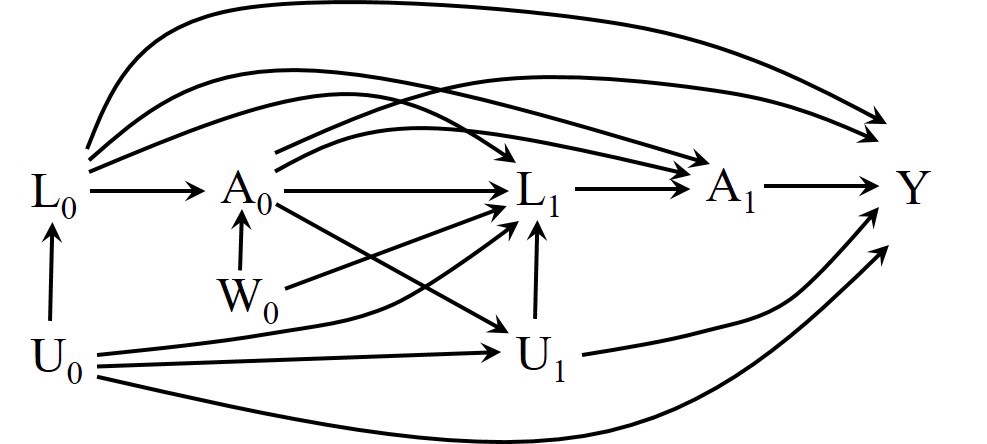
순차적 교환가능성의 형태 외에도, 시간에 따라 변화하는 처치와 관련된 인과 추론은 양수성(positivity)과 일관성(consistency) 조건의 순차적 버전도 필요로 한다. 순차적 무작위 실험에서는 순차적 양수성과 일관성 모두 성립할 것으로 기대된다(기술적 사항 19.2 참조). 아래에서 우리는 순차적 양수성과 일관성이 성립한다고 가정할 것이다.
이 세 가지 식별가능성 조건(identifiability conditions) 하에서, g-공식(표준화), IP 가중, g-추정과 같이 처치 및 공변량 이력 \((\bar{\}_{\kappa-1}\, \bar{\}_\kappa)\)을 적절히 보정하는 방법을 사용하는 한, 우리는 관심 있는 전략 \(\gamma\) 하에서의 반사실적 결과 평균 \(\text{E}[^\gamma]\)를 식별할 수 있다.
기술적 사항 19.2 (Technical Point 19.2) 시간에 따라 변화하는 처치에 대한 양수성과 일관성(Positivity and consistency for time-varying treatments). 양수성 조건은 고정된 버전인 “만약 \(f_\(\lambda) \ne 0\)이면, 모든 \(\alpha\)와 \(\lambda\)에 대해 \(f_{\ \mid \}(\alpha \mid \lambda) > 0\)이다”로부터 다음과 같은 순차적 버전으로 일반화되어야 한다: 만약 \(f_{\bar{\}_{\kappa-1},\bar{\}_\kappa}(\bar{\alpha}_{\kappa-1},\bar{\lambda}_\kappa) \ne 0\)이면, 모든 \(\bar{\alpha}_\kappa, \bar{\lambda}_\kappa\)에 대해 \(f_{\_\kappa \mid \bar{\}_{\kappa-1},\bar{\}_\kappa}(\alpha_\kappa \mid \bar{\alpha}_{\kappa-1},\bar{\lambda}_\kappa) > 0\)이다.
순차적 무작위 실험에서 과거 처치 및 공변량 이력과 무관하게 각 시점 \(\kappa\)에서의 무작위 배정 확률이 0이나 1이 아니라면 양수성이 성립할 것이다. 우리가 특정한 전략 \(\gamma\)에 관심이 있다면, 위의 양수성 조건은 \(\gamma\)와 양립 가능한 처치 이력, 즉 각 \(\kappa\)에 대해 \(\alpha_\kappa = \gamma_\kappa(\bar{\alpha}_{\kappa-1}\, \lambda_\kappa)\)에 대해서만 성립하면 된다.
일관성 조건 또한 고정된 버전인 “주어진 개인에 대해 만약 \(\ = \alpha\)이면, 그 개인에 대해 \(^\alpha = \)이다”로부터 다음과 같은 순차적 버전으로 일반화되어야 한다: \(\alpha^* = \alpha\)이면 \(^{\bar{\alpha}} = ^{\bar{\alpha}^*}\); \(\bar{\} = \bar{\alpha}\)이면 \(^{\bar{\alpha}} = \); \(\bar{\alpha}^*_{\kappa-1} = \bar{\alpha}_{\kappa-1}\)이면 \(\bar{\}^{\bar{\alpha}}_\kappa = \bar{\}^{\bar{\alpha}^*}_\kappa\); \(\bar{\}_{\kappa-1} = \bar{\alpha}_{\kappa-1}\)이면 \(\bar{\}^{\bar{\alpha}}_\kappa = \bar{\}_\kappa\). 여기서 \(\bar{\}^{\bar{\alpha}}_\kappa\)는 전략 \(\bar{\alpha}\) 하에서 시점 \(\kappa\)까지의 반사실적 \(\\)-이력이다. 엄밀히 말해 \(\)에 대한 시간에 따라 변화하는 처치의 효과 식별은 더 약한 일관성 조건을 요구한다: 정적 전략에 대해서는 “주어진 개인에 대해 만약 \(\bar{\} = \bar{\alpha}\)이면, 그 개인에 대해 \(^{\bar{\alpha}} = \)이다”로 충분하고, 동적 전략에 대해서는 “임의의 전략 \(\gamma\)에 대해, 주어진 개인에 대해 각 시점 \(\kappa\)에서 \(\_\kappa = \gamma_\kappa(\bar{\}_{\kappa-1}\, \bar{\}_\kappa)\)이면 \(^\gamma = \)이다”로 충분하다. 그러나 더 강한 순차적 일관성은 우리가 항상 수용할 자연스러운 조건이다.
\(\_\kappa = 1\)에 해당하는 “\(\kappa\)월에 처치함”과 \(\_\kappa = 0\)에 해당하는 “\(\kappa\)월에 처치하지 않음” 개입이 모든 시점 \(\kappa\)에서 충분히 잘 정의되어 있다고 기대한다면, \(\_\kappa\)를 포함하는 모든 정적 및 동적 전략 또한 유사하게 잘 정의될 것임에 유의하라.
19.5 모든 전략이 아닌 일부 처치 전략 하에서의 식별가능성(Identifiability under some but not all treatment strategies)
Pearl and Robins (1995)는 정적 전략에 대한 일반화된 뒷문 기준을 제안했다. Robins (1997)는 이 절차를 동적 전략으로 확장했다.
7장에서 우리는 특정 인과 다이어그램 하에서 시간에 따라 고정된 처치에 대해 교환가능성이 성립하는지 평가하기 위한 그래픽 규칙인 뒷문 기준(backdoor criterion)을 제시했다. 뒷문 기준은 시간에 따라 변화하는 처치로 일반화될 수 있다. 예를 들어 정적 전략의 경우, 처치 전략의 인과 효과를 식별하기 위한 충분조건은 각 시점 \(\kappa\)에서 미래의 처치를 통과하지 않는 \(\_\kappa\)로 들어오는 모든 뒷문 경로가 차단되는 것이다.
242 Time-varying treatments
그러나 일반화된 뒷문 기준은 뒷문 경로를 차단하는 것과 순차적 교환가능성 사이의 연결고리를 직접적으로 보여주지는 못하는데, 이 절차가 반사실적 결과를 포함하지 않는 인과적 유향 비순환 그래프에 기초하기 때문이다. 인과 효과의 식별가능성을 확인하기 위한 대안적인 그래픽 점검법은 7장에서도 논의된 단일-세계 개입 그래프(SWIGs, Single-World Intervention Graphs)에 기반한다. SWIG는 시간에 따라 변화하는 처치에서 특히 유용하다.
그림 19.2와 19.4를 단순화한 버전인 그림 19.5와 19.6의 인과 다이어그램을 고려하자. 우리는 노드 \(\_0\)과 \(\_0\), 그리고 \(\_0\)에서 \(\_1\)로 향하는 화살표를 생략했다. 또한 \(\_1\)에서 \(\)로 향하는 화살표가 없으므로 \(\_1\)은 더 이상 \(\)의 직접적인 원인이 아니다. 그림 19.5와 19.6은 (그림 19.2와 19.4처럼) \(\_\kappa\)와 후속 공변량 \(\_\tau\)(\(\tau > \kappa\))가 공통 원인 \(\_\kappa\)를 공유하는지의 여부에서 차이가 있다.
그림 19.5 (Figure 19.5)
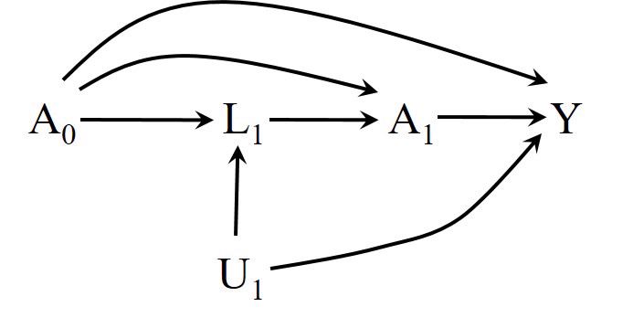
이 책의 제1부에서 논의했듯이, SWIG는 특정한 개입 하에서의 반사실적 세계를 나타낸다. 그림 19.7의 SWIG는 모든 개인이 정적 전략 \((\alpha_0\, \alpha_1)\)을 받았을 때의 그림 19.5의 세계를 나타내며, 여기서 \(\alpha_0\)과 \(\alpha_1\)은 0 또는 1의 값을 취할 수 있다. 예를 들어 그림 19.7은 “항상 처치” 전략(\(\alpha_0 = 1\, \alpha_1 = 1\)) 하의 세계 또는 “전혀 처치하지 않음” 전략(\(\alpha_0 = 0\, \alpha_1 = 0\)) 하의 세계를 나타내는 데 사용될 수 있다. 이 SWIG를 구축하기 위해 우리는 먼저 처치 노드 \(\_0\)과 \(\_1\)을 분할한다. 분할된 처치의 오른쪽은 개입 하에서의 처치 값을 나타낸다. 왼쪽은 이전의 모든 처치에 개입했을 때 관측되었을 처치 값을 나타낸다. 따라서 \(\_0\)의 왼쪽은 개입할 이전 처치가 없으므로 정확히 \(\_0\)이며, \(\_1\)의 왼쪽은 \(\_0\)을 값 \(\alpha_0\)으로 설정한 후 관측될 반사실적 처치 \(\^{\alpha_0}_1\)이다. 원래 인과 다이어그램에서 주어진 처치로 들어오는 모든 화살표는 이제 왼쪽에 연결되고, 주어진 처치에서 나가는 모든 화살표는 이제 오른쪽에서 출발한다. 결과 변수는 반사실적 결과 \(^{\alpha_0,\alpha_1}\)이며, 공변량 \(\\)은 그에 상응하는 반사실적 변수들로 대체된다. \(\_1\)에 대한 미래의 개입이 더 이른 \(\_1\)의 값에 영향을 미칠 수 없기 때문에, 전략 \((\alpha_0\, \alpha_1)\) 하에서 \(\_1\)에 해당하는 반사실적 변수를 \(\^{\alpha_0,\alpha_1}_1\)이 아니라 \(\^{\alpha_0}_1\)로 표기함에 유의하라.
그림 19.6 (Figure 19.6)
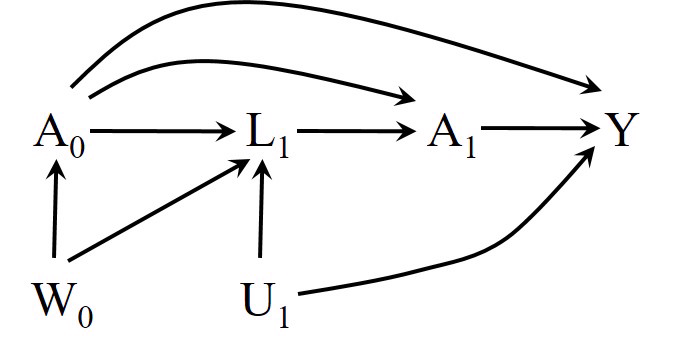
그림 19.5의 유향 비순환 그래프와 달리 그림 19.7의 SWIG는 반사실적 결과를 포함하므로, 우리는 d-분리(d-separation)를 사용하여 교환가능성을 시각적으로 점검할 수 있다. 그림 19.7에서 d-분리를 사용하면 임의의 정적 전략 \((\alpha_0\, \alpha_1)\)에 대해 \[^{\alpha_0,\alpha_1} \perp\!\perp \_0\] 및 \[^{\alpha_0,\alpha_1} \perp\!\perp \^{\alpha_0}_1 \mid \_0\, \^{\alpha_0}_1\] 이 모두 성립함을 보일 수 있다.
그림 19.7 (Figure 19.7)
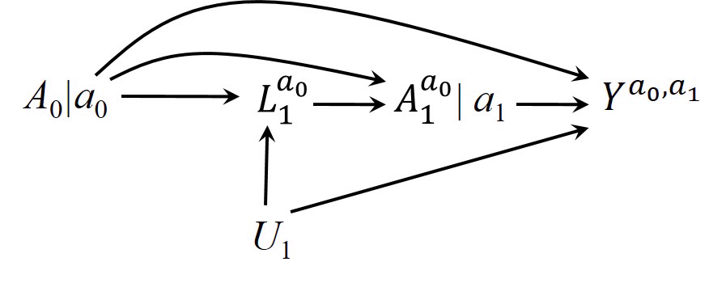
열린 경로 \(\^{\alpha_0}_1 \leftarrow \alpha_0 \rightarrow \^{\alpha_0}_1 \leftarrow \_1 \rightarrow ^{\alpha_0,\alpha_1}\)가 존재하는 것처럼 보임에도 불구하고 이 두 번째 조건부 독립성이 성립한다는 점에 주목하라. 그러나 이 경로는 다음과 같은 이유로 실제로 차단되어 있다. 반사실적 세계에서 \(\alpha_0\)은 상수(constant)이며, 확률 진술에서 상수는 관례상 조건부 사건에 명시적으로 표시되지 않더라도 항상 암묵적으로 조건화된다. 하지만 d-분리를 확인할 때는 상수가 조건화되어 위의 경로를 차단한다는 사실을 기억해야 한다.
두 번째 조건부 독립성 \(^{\alpha_0,\alpha_1} \perp\!\perp \^{\alpha_0}_1 \mid \_0\, \^{\alpha_0}_1\)은 정의상 처치 \(\_0 = \alpha_0\)을 받은 개인들의 부분집합에서 \(^{\alpha_0,\alpha_1} \perp\!\perp \^{\alpha_0}_1 \mid \_0 = \alpha_0\, \^{\alpha_0}_1\)임을 함의한다. 따라서 일관성에 의해 우리는 \(^{\alpha_0,\alpha_1} \perp\!\perp \_1 \mid \_0 = \alpha_0\, \_1\)이라고 결론짓는다. \(\_0 = \alpha_0\)일 때 일관성에 의해 \(\^{\alpha_0}_1 = \_1\)이고 \(\^{\alpha_0}_1 = \_1\)이기 때문이다.
\(^{\alpha_0,\alpha_1} \perp\!\perp \^{\alpha_0}_1 \mid \_0 = \alpha_0\, \^{\alpha_0}_1\)은 \(^{\alpha_0,\alpha_1} \perp\!\perp \_1 \mid \_0 = \alpha_0\, \_1\)과 같으며, \(^{\alpha_0,\alpha_1} \perp\!\perp \_1 \mid \_0 = \alpha_0\, \_1\)은 실제로 교환가능성을 확인할 수 있는 그림 19.7의 SWIG에 대응하는 그림 19.5의 인과 다이어그램 하에서 성립한다.
만약 여러 시점이 존재한다면, 우리는 \(\kappa = 0\, 1\.\.\.\\)에 대해 \[^{\bar{\alpha}} \perp\!\perp \_\kappa \mid \bar{\}_{\kappa-1} = \bar{\alpha}_{\kappa-1}\, \bar{}_\kappa\] 라고 말할 것이다. 우리는 위의 조건을 \(^{\bar{\alpha}}\)에 대한 정적 순차적 교환가능성(static sequential exchangeability)이라고 부른다.
기술적 사항 19.3 (Technical Point 19.3) 순차적 교환가능성의 다양한 형태들(The many forms of sequential exchangeability). 여러 시점 \(\kappa = 0\, 1\, \dots\, \\)을 갖는 시간에 따라 변화하는 처치 \(\_\kappa\)의 순차적 무작위 실험을 고려하자. 이 실험을 나타내는 SWIG는 단지 그림 19.7의 더 긴 버전일 뿐이다. 다음의 조건부 독립성을 SWIG로부터 직접 읽어낼 수 있다: \[(^{\bar{\alpha}}\, \bar{}^{\bar{\alpha}}_{\kappa+1}) \perp\!\perp \^{\bar{\alpha}_{\kappa-1}}_\kappa \mid \bar{\}^{\bar{\alpha}_{\kappa-2}}_{\kappa-1}\, \bar{}^{\bar{\alpha}_{\kappa-1}}_\kappa\] 여기서 \(\bar{}^{\bar{\alpha}}_{\kappa+1}\)은 \(\kappa+1\) 시점부터 추적 관찰 종료 시까지의 반사실적 공변량 이력이다. 위의 조건부 독립성은 \(\bar{\}^{\bar{\alpha}_{\kappa-2}}_{\kappa-1} = \bar{\alpha}_{\kappa-1}\)인 특정한 경우에 대해 \((^{\bar{\alpha}}\, \bar{}^{\bar{\alpha}}_{\kappa+1}) \perp\!\perp \^{\bar{\alpha}_{\kappa-1}}_\kappa \mid \bar{\}^{\bar{\alpha}_{\kappa-2}}_{\kappa-1} = \bar{\alpha}_{\kappa-1}\, \bar{}^{\bar{\alpha}_{\kappa-1}}_\kappa\)를 함의한다.
244 Time-varying treatments
세부사항 19.3 (Fine Point 19.3) 기저 공변량에 의존하는 동적 전략(Dynamic strategies that depend on baseline covariates). 단순성을 위해 이 장에 묘사된 인과 그래프에는 기저 교란 요인 \(\_0\)이 포함되어 있지 않다. 만약 그림 19.9에 \(\_0\)을 포함했다면, 우리는 개입을 나타내는 확률 변수 \(\gamma_0(\_0)\)이 \(\gamma_0\)을 대체하는 전략을 고려할 수 있었을 것이다. 그러면 그래프 상에서 \(\^\gamma_1\)과 \(^\gamma\) 사이의 d-분리를 확인할 때, 즉 \(^\gamma \perp\!\perp \^\gamma_1 \mid \_0\, \gamma_0(\_0)\, \_0\, \^\gamma_1\)에서 우리는 \(\gamma_0(\_0)\)을 포함한 전체 과거 이력을 조건화해야 한다. 만약 이 식을 \(\_0 = \gamma_0(\_0)\)에서 구체화하면, 개입 변수는 이제 관측된 \(\_0\)과 같아져 중복되므로 조건부 사건에서 제거될 수 있다. 즉, 우리는 이제 \(^\gamma \perp\!\perp \^\gamma_1 \mid \_0 = \gamma_0(\_0)\, \_0\, \^\gamma_1\)을 얻게 되며, 이는 일관성에 의해 \(^\gamma \perp\!\perp \_1 \mid \_0 = \gamma_0(\_0)\, \_0\, \_1\)이다. 이 조건부 독립성은 기저 교란 요인 \(\_0\)도 존재할 때 \(^\gamma\)와 처치 \(\_1\)에 대한 순차적 교환가능성이다.
그림 19.5에서 만약 \(\_1\)에서 \(\_1\)로 향하는 화살표가 있었다고 가정하자. 그렇다면 그림 19.7의 SWIG에는 \(\_1\)에서 \(\^{\alpha_0}_1\)로 향하는 화살표가 포함될 것이며, 어떠한 형태의 순차적 교환가능성도 성립하지 않을 것이다. 따라서 반사실적 평균은 어떤 전략 하에서도 식별되지 않을 것이다.
이제 우리는 동적 요법 하에서의 그림 19.5와 19.6에 대한 SWIG를 논의한다. 그림 19.9의 SWIG는 동적 처치 전략 \(\gamma = [\gamma_0\, \gamma_1(\_1)]\) 하에서의 그림 19.5의 세계를 나타낸다. 이 전략에서 처치 \(\_0\)은 고정된 값 \(\gamma_0\)(0 또는 1)이 배정되고, 시점 \(\kappa = 1\)에서의 처치 \(\_1\)은 시점 \(\kappa = 0\)에서 처치 값 \(\gamma_0\)을 배정한 후 관측된 \(\^\gamma_1\)의 값에 의존하는 값 \(\gamma_1(\^\gamma_1)\)이 배정된다. 예를 들어 \(\gamma\)는 “시점 0에서는 처치하지 않고, CD4 세포 수가 낮을 때만, 즉 \(\^\gamma_1 = 1\)일 때만 시점 1에서 처치한다”는 전략일 수 있다. 이 전략 하에서 모든 사람에 대해 \(\gamma_0 = 0\)이고, \(\^\gamma_1 = 1\)일 때 \(\gamma_1(\^\gamma_1) = 1\)이며, \(\^\gamma_1 = 0\)일 때 \(\gamma_1(\^\gamma_1) = 0\)이다. 따라서 SWIG에는 \(\^\gamma_1\)에서 \(\gamma_1(\^\gamma_1)\)로 향하는 화살표가 포함된다. 이 화살표는 원래 인과 그래프의 일부가 아니었으며, 개입의 결과이다. 따라서 d-분리를 평가할 때 다른 화살표와 똑같이 취급해야 함에도 불구하고, 우리는 이 화살표를 다른 화살표들과 다르게 그린다. SWIG에서의 결과는 동적 처치 전략 \(\gamma\) 하에서의 반사실적 결과 \(^\gamma\)이다.
그림 19.9 (Figure 19.9)
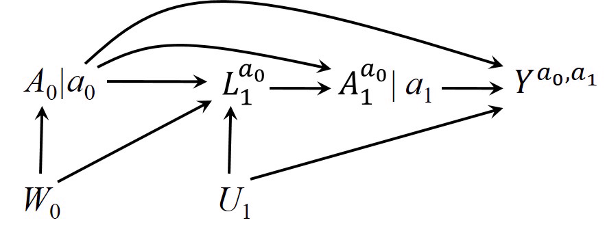
그림 19.9의 SWIG에 d-분리를 적용하면, 임의의 전략 \(\gamma\)에 대해 \[^\gamma \perp\!\perp \_0\] 및 \[^\gamma \perp\!\perp \_1 \mid \_0 = \gamma_0\, \^\gamma_1\] 이 모두 성립함을 알 수 있다. 즉, \(^\gamma\)에 대한 순차적 교환가능성이 성립하며, 이는 우리가 모든 전략 \(\gamma\) 하에서의 평균 반사실적 결과를 식별할 수 있음을 의미한다(세부사항 19.3도 참조).
그림 19.10 (Figure 19.10)
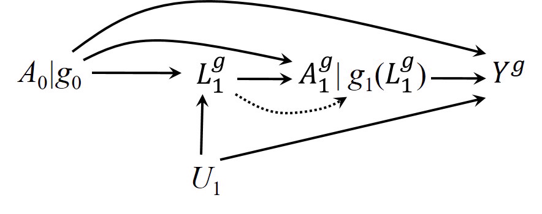
엄밀히 말해 우리가 SWIG로부터 읽어내는 것은 \(^\gamma \perp\!\perp \^\gamma_1 \mid \_0\, \^\gamma_1\)이며, 이는 일관성에 의해 \(^\gamma \perp\!\perp \_1 \mid \_0 = \gamma_0\, \_1\)을 함의한다.
그러나 이 결과는 그림 19.6의 인과 다이어그램에 대해서는 성립하지 않는다. 그림 19.10의 SWIG는 동적 처치 전략 \(\gamma = [\gamma_0\, \gamma_1(\_1)]\) 하에서의 그림 19.6의 세계를 나타낸다. 그림 19.10의 SWIG에 d-분리를 적용하면, 열린 경로 \(\_0 \leftarrow \_0 \rightarrow \^\gamma_1 \rightarrow \gamma_1(\^\gamma_1) \rightarrow ^\gamma\) 때문에 \(^\gamma \perp\!\perp \_0\)이 성립하지 않음을 알 수 있다. 즉, \(^\gamma\)에 대한 순차적 교환가능성이 성립하지 않으며, 이는 우리가 임의의 전략 \(\gamma\)에 대해 평균 반사실적 결과를 식별할 수 없음을 의미한다.
요약하자면, 그림 19.5로 표현되는 관찰 연구(또는 순차적 무작위 시험)에서는 \(^\gamma\)에 대한 순차적 교환가능성이 성립하므로, 데이터를 사용하여 정적 및 동적 전략과 관련된 인과 효과를 타당하게 추정할 수 있다. 반면에 그림 19.6으로 표현되는 관찰 연구에서는 정적 전략에 대한 더 약한 조건만 성립하므로, 데이터를 사용하여 정적 전략과 관련된 인과 효과는 타당하게 추정할 수 있지만 동적 전략과 관련된 인과 효과는 추정할 수 없다.
이를 생각해보는 또 다른 방법은 그림 19.10의 SWIG로 표현되는 반사실적 세계에서 \(^\gamma\)의 분포가 \(\gamma_1(\^\gamma_1)\), 따라서 \(\^\gamma_1\)의 분포에 의존한다는 점이다. 그러나 경로 \(\_0 \leftarrow \_0 \rightarrow \^\gamma_1\) 때문에 \(\^\gamma_1\)의 분포는 식별 가능하지 않다.
마지막 예시를 하나 더 살펴보자. ₁에서 로 향하는 화살표가 존재한다는 점을 제외하면 그림 19.6과 동일한 그림 19.11과, 정적 전략(static strategy) 하에서 이에 대응하는 SWIG인 그림 19.12를 고려해 보자. d-분리(d-separation)를 사용하면 에 대한 순차적 교환가능성(sequential exchangeability)과 ¯에 대한 정적 순차적 교환가능성(static sequential exchangeability) 모두 성립하지 않음을 보일 수 있다. 따라서 그림 19.11로 표현되는 관찰 연구(observational study)에서는 어떤 전략과 관련된 인과 효과(causal effects)도 타당하게 추정하는 데 데이터를 사용할 수 없다.
그림 19.11 (Figure 19.11)
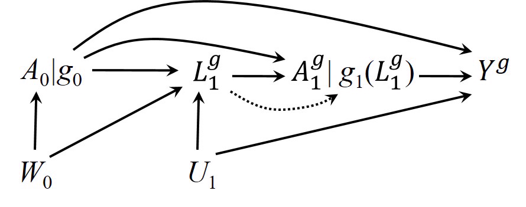
그림 19.12 (Figure 19.12)
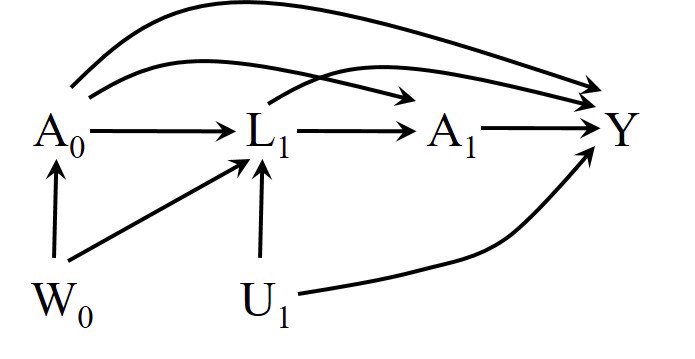
19.6 시간에 따라 변화하는 교란과 시간에 따라 변화하는 교란 요인(Time-varying confounding and time-varying confounders)
관찰 연구에서는 어떠한 형태의 순차적 교환가능성도 성립한다고 보장되지 않는다. 근사적 교환가능성을 달성하려면 전문 지식(expert knowledge)이 필요한데, 이는 연구자들이 연구를 설계할 때 관련된 변수 ¯를 가능한 한 많이 측정하도록 이끌어 줄 것이다. 예를 들어 HIV 연구에서 전문가들은 CD4 세포 수, 바이러스 수치(viral load), 증상과 같은 시간에 따라 변화하는 변수들을 적절히 측정하고 보정해야 한다는 데 동의할 것이다. 그러나 “측정된 공변량들이 순차적 교환가능성을 보장하기에 충분한가?”라는 질문에는 결코 확답을 내릴 수 없다.
그럼에도 우리는 전문 지식을 활용하여 교환가능성에 대한 우리의 판단을 정리하고 이를 인과 다이어그램(causal diagram)으로 표현할 수 있다. 그림 19.1부터 19.4까지는 서로 다른 시나리오들을 요약한 인과 다이어그램의 예시들이다. 여기서 교란(confounding)에 집중할 수 있도록 이러한 인과 다이어그램들을 선택 편향(예: 추적 관찰 탈락에 의한 중도절단)이 없는 상황으로 그렸다는 점에 유의하라.
그림 19.5를 고려해 보자. 이 책의 제1부에서처럼, 결과 에 대한 시간에 따라 고정된 처치 ₁의 효과에 관심이 있다고 가정하자. ₁과 가 원인 ₁을 공유하므로, 즉 ₁을 통과하는 ₁과 사이의 열린 백도어 경로(backdoor path)가 존재하므로, 에 대한 ₁의 효과에 교란이 존재한다고 말한다. 제7장에서 설명했듯이, 이 효과를 편향 없이 추정하려면 결과 에 대한 처치 ₁의 효과에 대한 교란 요인(confounders)을 보정해야 한다. 다시 말해, ₁과 사이의 모든 열린 백도어 경로를 차단할 수 있어야 한다.
이 백도어 경로 ₁ ← ₁ ← ₁ → 는 공통 원인 ₁이 측정되지 않아 연구자가 이용할 수 없으므로 ₁에 조건화하여 차단할 수 없다. 그러나 이 백도어 경로는 측정된 변수인 ₁에 조건화함으로써 차단될 수 있다. 따라서 연구자들이 모든 개인에 대해 ₁에 관한 데이터를 수집했다면, ₁의 효과에 대해 측정되지 않은 교란(unmeasured confounding)은 없을 것이다. 그러면 ₁과 의 실제 공통 원인이 측정되지 않은 ₁이었음에도 불구하고 ₁을 ₁ 효과에 대한 교란 요인(confounder)이라고 부른다(교란과 인과 다이어그램에 대한 기억을 되살려야 한다면 7.3절을 다시 읽어보라).
충돌 변수(collider) ₁에 조건화한 후 두 번째 백도어 경로가 열린다: ₁ ← ₀ → ₁ ← ₁ → 이 두 번째 백도어 경로는 연구자가 이전 처치 ₀을 이용할 수 있다고 가정할 때, ₀에 조건화함으로써 안전하게 차단될 수 있다.
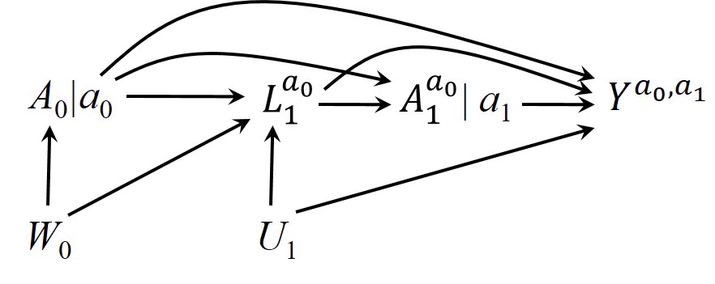
제7장에서 논의했듯이, 교란 요인이 결과의 직접적인 원인일 필요는 없다. 그림 19.5에서 교란 요인 ₁에서 결과 로 향하는 화살표는 존재하지 않는다. 이 경우 교란의 근원(즉, 인과적 교란 요인)은 측정되지 않은 공통 원인 ₁이다. 그럼에도 불구하고 ₁에 대한 데이터가 ₁에서 로 가는 백도어 경로를 차단하여 교란을 통제하기에 충분하므로, 우리는 ₁을 에 대한 ₁ 효과의 교란 요인이라고 부른다.
이제 모든 시점 = 0, 1, 2…를 포함하며, 가 이후의 처치 , ₊₁…에 영향을 미치고 결과 와 측정되지 않은 원인 를 공유하는 매우 긴 인과 다이어그램을 상상해 보자. 우리가 결과 에 대해 ₀, ₁, ₂…에 대한 개입으로 정의되는 처치 전략들의 인과 효과를 추정하고자 한다고 가정하자. 그러면 각 시점 에서 처치 와 결과 사이의 백도어 경로들을 차단하기 위해 이전 처치 이력 ¯₋₁과 함께 공변량 이력 ¯가 필요할 것이다.
따라서 ¯의 효과에 대해 측정되지 않은 교란이 없으려면 연구자들이 모든 개인에 대해 ¯에 관한 데이터를 수집했어야 한다. 그러면 우리는 ¯에 속한 시간에 따라 변화하는 공변량들이 연구의 여러 시점(또는 우리의 예시에서는 모든 시점) 에서 시간에 따라 변화하는 처치 ¯가 에 미치는 효과에 대한 시간에 따라 변화하는 교란 요인(time-varying confounders)이라고 말한다. 시간에 따라 변화하는 교란에 대한 보다 정확한 정의는 세부사항 19.4를 참조하라.
시간에 따라 변화하는 교란 요인은 때로 시간-의존적 교란 요인(time-dependent confounders)이라고도 불린다.
세부사항 19.4 (Fine Point 19.4) 시간에 따라 변화하는 교란의 정의(A definition of time-varying confounding).
선택 편향(selection bias)이 없을 때, \(\text{E}[\^{\bar{\alpha}}] \neq \text{E}[\ \mid \bar{\}=\bar{\alpha}]\)이면 \(\text{E}[\^{\bar{\alpha}}]\)와 관련된 인과 효과에 교란이 존재한다고 말한다. 즉, 사실과 달리 연구의 모든 개인이 전략 \(\bar{\alpha}\)를 따랐을 때 관측되었을 평균 결과가 실제 연구에서 전략 \(\bar{\alpha}\)를 따른 개인들의 부분집합에서의 평균 결과와 다른 경우이다. 만약 \(\text{E}[\^{\bar{\alpha}} \mid \_0] = \text{E}[\ \mid \bar{\}=\bar{\alpha}, \_0]\)라면 교란이 전적으로 시간에 따라 고정되어 있다(즉, 온전히 기저 공변량에 기인한다)고 말하며, 이는 그림 19.2에서 \(\_1\)으로 들어가는 유일한 화살표가 \(\_0\)과 \(\_0\)으로부터 오는 경우에 해당할 것이다.
반면 식별 조건들이 성립하지만 \(\text{E}[\^{\bar{\alpha}} \mid \_0] \neq \text{E}[\ \mid \bar{\}=\bar{\alpha}, \_0]\)라면 시간에 따라 변화하는 교란(time-varying confounding)이 존재한다고 말한다. 그림 19.3에서처럼 식별 조건들이 성립하지 않는다면 측정되지 않은 교란(unmeasured confounding)이 존재한다고 말한다.
시간에 따라 변화하는 교란이 없기 위한 충분조건은 \(\^{\bar{\alpha}}\)에 대한 무조건부 순차적 교환가능성(unconditional sequential exchangeability), 즉 \(\^{\bar{\alpha}} \perp\!\!\perp \_\kappa \mid \bar{\}_{\kappa-1} = \bar{\alpha}_{\kappa-1}\)이다. 이 조건은 각 시점 \(\kappa\)에서의 처치 \(\_\kappa\)가 오직 이전 처치 이력 \(\bar{\}_{\kappa-1}\)의 값에만 의존하는 확률로 무작위 배정되는, 그림 19.1에 표현된 것과 같은 순차적 무작위 실험에서 성립한다.
사실 그림 19.1의 인과 다이어그램은 크게 단순화될 수 있다. 이를 위해 먼저 \(\_1\)이 그래프 상의 어떤 두 노드의 공통 원인도 아니므로 그래프에서 생략될 수 있음을 주목하자. \(\_1\)이 제거되면 \(\_0\)과 \(\_1\) 역시 그래프 상의 두 노드의 공통 원인이 아니게 되므로 둘 다 생략될 수 있다. \(\_0\), \(\_1\), \(\_1\)이 없는 그래프에서는 노드 \(\_0\) 또한 생략될 수 있다. 즉, 그림 19.1의 인과 다이어그램은 오직 노드 \(\_0\), \(\_1\), \(\\)만을 포함하도록 단순화될 수 있다.
안타깝게도 우리는 시간에 따라 고정되어 있든 시간에 따라 변화하든 모든 교란 요인이 측정되었는지를 경험적으로 확인할 수 없다. 즉, 측정되지 않은 교란이 없는 그림 19.2와 측정되지 않은 교란이 존재하는 그림 19.3을 데이터만으로 경험적으로 구별할 수 없다.
흥미롭게도 모든 교란 요인이 올바르게 측정되고 모형화되었다 하더라도, 처치 전략들을 비교할 때 대부분의 보정 방법은 여전히 편향된 추정치를 낳을 수 있다. 다음 장에서는 왜 g-방법(g-methods)이 시간에 따라 변화하는 교란 요인을 보정하기 위한 적절한 접근법인지 설명한다.
제20장 처치-교란 요인 피드백(Treatment-Confounder Feedback)
앞 장에서는 시간에 따라 변화하는 처치(time-varying treatments)의 인과 효과(causal effects)를 식별하기 위한 핵심 조건으로 순차적 교환가능성(sequential exchangeability)을 규명했다. 가장 강력한 형태의 순차적 교환가능성이 성립하는 연구, 즉 측정된 시간에 따라 변화하는 교란 요인(time-varying confounders)들이 어떤 처치 전략(treatment strategy)의 인과 효과라도 타당하게 추정하기에 충분한 연구를 수행하고 있다고 가정해 보자. 그렇다면 이제 질문은 어떤 교란 보정 방법(confounding adjustment method)을 사용할 것인가이다. 이 질문에 대한 답은 시간에 따라 변화하는 처치에 대한 인과 추론에서 핵심적인 문제인 처치-교란 요인 피드백(treatment-confounder feedback)을 부각한다. 처치-교란 요인 피드백이 존재할 때, 전통적인 보정 방법을 사용하면 효과 추정치에 편향(bias)이 유입될 수 있다. 즉, 어떤 처치 전략의 평균 인과 효과(average causal effect)를 타당하게 추정하는 데 필요한 모든 정보를 가지고 있더라도, 일반적으로는 그렇게 추정할 수 없게 된다. 이번 장에서는 처치-교란 요인 피드백의 구조와 전통적 보정 방법들이 실패하는 이유를 설명한다.
20.1 처치-교란 요인 피드백의 구성요소(The elements of treatment-confounder feedback)
앞 장에서 논의했던 HIV 양성 환자들의 순차적 무작위 시험(sequentially randomized trial)을 다시 생각해 보자. 연구에 참여한 모든 사람에 대해, 우리는 추적관찰 각 월 = 0,1,2…마다 처치 (1: 처치군, 0: 비처치군)와 공변량 에 대한 데이터를 갖고 있고, + 1월 시점에 건강 상태를 측정한 결과 에 대한 데이터를 갖고 있다. 그림 19.2와 동일한 그림 20.1의 인과 다이어그램은 이 연구의 첫 두 달을 나타낸다. 시간에 따라 변화하는 공변량 는 시간에 따라 변화하는 교란 요인이다. (앞 장에서와 마찬가지로, 교란에만 집중할 수 있도록 중도절단이 없는 예시를 사용한다.)
그림 20.1에서는 또 다른 일이 일어나고 있다. CD4 세포 수 에서 처치 로 가는 화살표가 있을 뿐만 아니라, 처치 −1에서 미래의 CD4 세포 수 로 가는 화살표도 존재한다. 처치 −1을 받는 것이 미래의 CD4 세포 수 를 증가시키기 때문이다. 즉, 교란 요인이 처치에 영향을 미치고, 처치가 교란 요인에 영향을 미친다. 바로 처치-교란 요인 피드백(treatment-confounder feedback)이 존재하는 것이다(세부사항 20.1 참고).
그림 20.1 (Figure 20.1)
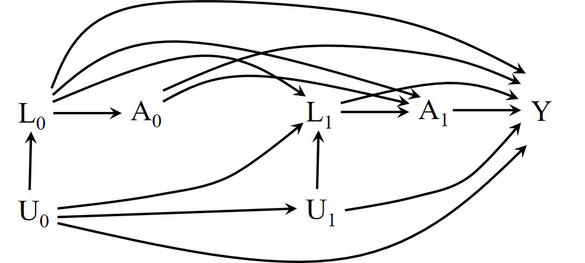
시간에 따라 변화하는 교란은 처치-교란 요인 피드백 없이도 일어날 수 있음에 주목하라. 그림 20.2의 인과 다이어그램은 처치 −1에서 미래의 및 로 가는 화살표들이 삭제되었다는 점을 제외하면 그림 20.1과 동일하다. 이 다이어그램으로 표현되는 환경에서, 시간에 따라 변화하는 공변량 는 시간에 따라 변화하는 교란 요인이지만, 이전 처치의 영향을 받지는 않는다. 따라서 시간에 따라 변화하는 교란은 존재하지만, 처치-교란 요인 피드백은 없다.
그림 20.2 (Figure 20.2)
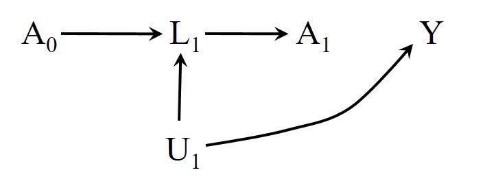
처치-교란 요인 피드백은 인과 추론에 흥미로운 문제를 낳는다. 문제를 가장 단순한 형태로 설명하기 위해, 그림 20.1의 인과 다이어그램을 조금 더 단순화해 보자. 그림 20.3은 두 시점을 가진 순차적 무작위 시험에서 처치-교란 요인 피드백을 보여주는 그림 20.1의 가장 작은 부분집합(subset)이다. 그림 20.3의 인과 다이어그램을 그릴 때, 우리는 몇 가지 단순화를 적용했다:
• 우리의 관심은 1에 의한 교란의 영향에 있으므로, 기저 시점의 CD4 세포 수를 나타내는 노드 0은 굳이 포함하지 않았다. 처치 0은 주변적으로(marginally) 무작위 배정되고, 처치 1은 1이 주어졌을 때 조건부로 무작위 배정된다고 가정하자. 측정되지 않은 변수 0은 포함되지 않는다. • 0에서 1로 가는 화살표가 없는데, 이는 처치가 오직 1에 대한 정보만을 사용하여 배정됨을 뜻한다. • 0, 1, 1에서 로 가는 화살표가 없는데, 이는 처치가 어떤 개인의 결과 에도 인과 효과를 미치지 않는 경우, 즉 날카로운 무가설(sharp null hypothesis)이 성립하는 경우에 해당한다.
이러한 단순화 중 어느 것도 아래의 논증에 영향을 미치지 않는다. 더 복잡한 인과 다이어그램은 이번 장의 논의에 어떠한 개념적 통찰도 더해주지 못하며, 단지 읽기만 더 어렵게 만들 뿐이다.
세부사항 20.1 (Fine Point 20.1) 비순환 그래프로 피드백 순환 표현하기(Representing feedback cycles with acyclic graphs). 흥미롭게도 그림 20.1과 같은 비순환 그래프(acyclic graph)를 사용하여 처치-교란 요인 피드백 루프(loop) 또는 순환(cycle)을 표현할 수 있다. 이러한 시각적 표현을 달성하는 요령은 처치-교란 요인 피드백 루프를 시간상으로 펼쳐놓는(elaborate in time) 것이다. 즉, −1 → → → +1 등과 같이 나타내는 것이다. 비순환 그래프로 피드백 순환을 표현하려면 시간도 이산 변수(discrete variable)로 간주해야 한다. 즉, 우리는 = 0,1,…에 대해 각 구간 [,+1) 동안 처치와 공변량이 변할 수 있다고 말하지만, 그 구간 내에서 정확히 언제 변화가 일어나는지는 명시하지 않는다. 이러한 시간의 이산화(discretization of time)는 실제로는 한계가 되지 않는다. 구간의 길이는 데이터의 해상도(granularity)가 요구하는 만큼 짧게 선택할 수 있기 때문이다. 예를 들어 개인이 한 달에 한 번 또는 그보다 덜 자주 의사를 만나는 연구(우리의 HIV 예시처럼)에서는 시간을 월 단위 구간으로 안전하게 이산화할 수 있다. 다른 경우에는 연 단위 구간이나 일 단위 구간이 더 적절할 수 있다. 또한 17장에서 언급했듯이, 시간은 어차피 전형적으로 이산적인 구간(연, 월, 일)으로 측정되므로 시간의 이산화는 종종 선택의 문제조차 아니다.
그림 20.3 (Figure 20.3)
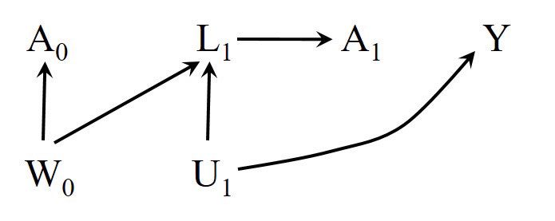
이제 처치가 어떤 개인의 에도 아무런 효과를 미치지 않는다고 가정하자. 이는 그림 20.3의 인과 다이어그램이 옳다는 것을 의미하지만, 연구자들은 이를 알지 못한다. 또한 0월의 처치 0과 1월의 처치 1, 1월 시작 시점의 교란 요인인 CD4 세포 수 1, 그리고 추적관찰 종료 시점의 결과 에 대한 데이터를 가지고 있다고 가정하자. 우리는 이 데이터를 사용하여 정적 처치 전략(static treatment strategy) “항상 처치”, ( 0 = 1, 1 = 1)를 정적 처치 전략 “절대 미처치”, ( 0 = 0, 1 = 0)와 비교했을 때 결과 에 미치는 평균 인과 효과, 즉 E[^{0=1,1=1}] − E[^{0=0,1=0}]을 추정하고자 한다.
그림 20.3에 따르면, 연구자에게는 알려져 있지 않지만 참인 평균 인과 효과는 0이다. 어느 처치 변수에서도 결과로 향하는 앞방향 경로(forward-directed paths)가 존재하지 않기 때문이다. 즉, 0이나 1 어느 쪽에서 출발하더라도 화살표의 방향을 따라 에 도달할 수 없다.
그림 20.3은 측정되지 않은 변수 에서 처치 변수들로 들어가는 직접적인 화살표가 없으므로 순차적 무작위 시험을 묘사할 수 있다. 따라서 앞 장에서 논의했듯이, 우리는 관측된 0, 1, 1, 데이터를 사용하여 E[^{0=1,1=1}] − E[^{0=0,1=0}]이 0과 같다고 결론지을 수 있어야 한다. 그러나 다음 절에서 설명하겠지만, 층화(stratification), 결과 회귀(outcome regression), 매칭(matching)과 같은 전통적인 방법들을 사용하여 1을 보정할 때 우리는 일반적으로 인과 효과를 올바르게 추정할 수 없다. 즉, 이 예시에서 그러한 방법들을 사용하여 교란 요인 1을 보정하려는 시도는 일반적으로 0과 다른 효과 추정치를 낳게 되며, 따라서 타당하지 않다.
그림 20.4 (Figure 20.4)
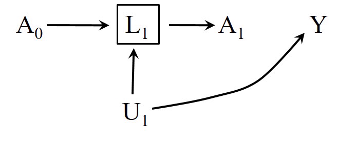
그림 20.3은 순차적 무작위 시험 또는 측정되지 않은 교란이 없는 관찰 연구를 나타내며, 그림 20.4는 관찰 연구를 나타낸다.
다시 말해, 시간에 따라 변화하는 교란 요인과 처치-교란 요인 피드백이 존재할 때, 전통적인 방법들은 그러한 교란 요인들을 올바르게 보정하는 데 사용될 수 없다. 순차적 교환가능성을 보장하기에 충분한 종단적 데이터(longitudinal data)를 갖고 있더라도, 전통적인 방법들은 일반적으로 어떤 처치 전략에 대해서도 인과 효과의 타당한 추정치를 제공하지 못한다. 반면에 g-방법(g-methods)은 처치-교란 요인 피드백이 존재하는 상황에서도 시간에 따라 변화하는 교란 요인들을 적절하게 보정한다.
전통적인 방법들의 이러한 한계는 그림 20.3에서처럼 시간에 따라 변화하는 교란 요인이 이전 처치의 영향을 받는 상황뿐만 아니라, 그림 19.4의 부분집합인 그림 20.4에서처럼 시간에 따라 변화하는 교란 요인이 이전 처치와 원인 을 공유하는 상황에도 적용된다. 우리는 그림 20.3과 20.4(그리고 그림 19.2와 19.4) 둘 다를 처치-교란 요인 피드백의 예시로 지칭한다. 다음 절에서는 전통적인 방법들이 왜 처치-교란 요인 피드백을 적절하게 처리할 수 없는지 설명한다.
20.2 전통적 방법들의 편향(The bias of traditional methods)
전통적 방법들의 편향을 설명하기 위해, 32,000명의 HIV 양성 환자와 두 시점 = 0 및 = 1을 갖는 (가상의) 순차적 무작위 시험을 고려해 보자. 기저 시점에서 처치 0 = 1은 0.5의 확률로 무작위 배정된다. 1월 시점에서 처치 1은 1월 시작 시점의 CD4 세포 수 1 값에만 의존하는 확률로 무작위 배정된다— 1 = 0(높음)이면 0.4, 1 = 1(낮음)이면 0.8이다. 추적관찰 종료 시점에 측정되는 결과 는 CD4 세포 수, 혈청 내 바이러스 농도 및 기타 임상 지표들의 함수이며, 값이 높을수록 더 좋은 건강 상태를 의미한다.
이는 배정된 처치에 대한 완전한 순응(full adherence)이 있고 추적관찰 탈락(loss to follow-up)이 없는 이상적인 시험이다.
표 20.1은 이 시험의 데이터를 보여준다. 지면을 절약하기 위해, 이 표는 개인당 한 행이 아니라 0, 1, 1 값들의 조합당 한 행씩 표시한다. 여덟 가지 조합 각각에 대해, 표는 대상자 수 과 결과의 평균값 E[ | 0, 1, 1]을 제공한다. 따라서 1행은 ( 0 = 0, 1 = 0, 1 = 0)인 2400명의 평균이 E[ | 0 = 0, 1 = 0, 1 = 0] = 84였음을 보여준다.
표 20.1 (Table 20.1)
| | 0 | 1 | 1 | Mean |
|---|---|---|---|---|
| 2400 | 0 | 0 | 0 | 84 |
| 1600 | 0 | 0 | 1 | 84 |
| 2400 | 0 | 1 | 0 | 52 |
| 9600 | 0 | 1 | 1 | 52 |
| 4800 | 1 | 0 | 0 | 76 |
| 3200 | 1 | 0 | 1 | 76 |
| 1600 | 1 | 1 | 0 | 44 |
| 6400 | 1 | 1 | 1 | 44 |
만약 처치 가 의 영향을 받는 추가적인 시점 가 있다면, 는 시간에 따라 변화하는 교란 요인이 될 것이다.
그림 20.3은 1에서 로 가는 화살표가 없으므로 무가설(null)을 나타낸다. 그렇지 않다면 0은 1을 통해 에 효과를 미칠 것이다.
이 순차적 무작위 시험에서는 식별 조건(identifiability conditions)—순차적 교환가능성, 양수성(positivity), 일관성(consistency)—이 성립한다. 설계상 0이 에 미치는 효과에 대해서는 교란 요인이 없으며, 1은 1이 에 미치는 효과에 대한 유일한 교란 요인이므로 ( 1을 조건으로 할 때) 순차적 교환가능성이 성립한다. 표 20.1을 살펴보면 여덟 개 행 중 어느 행도 개인 수가 0이 아니므로 양수성 조건이 충족됨을 결론지을 수 있다.
그림 20.3의 인과 다이어그램은 날카로운 무가설이 성립할 때의 이 순차적 무작위 실험을 묘사한다. 표 20.1의 데이터가 그림 20.3의 인과 다이어그램과 일치하는지 확인하기 위해, 우리는 과거 공변량 및 처치의 수준 내에서 시간에 따라 고정된 처치(time-fixed treatments) 0과 1 각각의 평균 인과 효과를 개별적으로 추정할 수 있으며, 이들은 모두 0이어야 한다. 아래 계산에서는 무작위 변동(random variability)을 무시할 것이다.
표를 간단히 살펴보면 0과 1로 정의된 네 개 층(strata) 모두에서 처치 1의 평균 인과 효과가 실제로 0임을 알 수 있다. 표 20.1의 1행과 2행에 데이터가 제시된 0 = 0 및 1 = 0인 4000명의 개인에서 1의 효과를 생각해 보자. 시점 1에서 처치를 받지 않은 사람들의 평균 결과 E[ | 0 = 0, 1 = 0, 1 = 0]은 84이고, 시점 1에서 처치를 받은 사람들의 평균 결과 E[ | 0 = 0, 1 = 0, 1 = 1]도 84이다. 따라서 그 차이
\[E[ \mid \_0 = 0\, \_1 = 0\, \_1 = 1] - E[ \mid \_0 = 0\, \_1 = 0\, \_1 = 0]\]
는 0이다. 식별 조건들이 성립하므로, 이 연관 차이(associational difference)는 층 ( 0 = 0, 1 = 0)에서의 평균 인과 효과 \(E[^{\alpha_1=1} \mid \_0 = 0\, \_1 = 0] - E[^{\alpha_1=0} \mid \_0 = 0\, \_1 = 0]\)을 타당하게 추정한다. 마찬가지로 나머지 세 개 층 ( 0 = 0, 1 = 1), ( 0 = 1, 1 = 0), ( 0 = 1, 1 = 1)에서도 각각 3행과 4행, 5행과 6행, 7행과 8행 사이의 평균 결과를 비교함으로써 처치 1이 에 미치는 평균 인과 효과가 0임을 쉽게 확인할 수 있다.
기술적 사항 20.1 (Technical Point 20.1) g-무가설 검정(G-null test). 날카로운 무가설이 참이라고 가정하자. 그러면 임의의 반사실적 결과 는 관측된 결과 = 가 된다. 이 설정에서 에 대한 순차적 교환가능성은 두 시점을 가진 연구에서 ⊥⊥ 0 | 0 및 ⊥⊥ 1 | 0 = ( 0), 0, 1로 쓸 수 있다. 첫 번째 독립성은 0으로 정의된 임의의 층에서 0의 인과 효과가 없음을 함의하고, 두 번째 독립성은 1과 0으로 정의된 임의의 층에서 1의 인과 효과가 없음을 함의한다. 따라서 순차적 교환가능성 하에서 이러한 조건부 독립성에 대한 검정은 날카로운 무가설에 대한 검정이 된다. 이것이 바로 g-무가설 검정(g-null test)이다.
역으로, g-무가설 정리(g-null theorem)(Robins 1986)에 따르면 이러한 조건부 독립성들이 성립하면 의 분포와 따라서 평균 E[ ]는 모든 에 대해 동일하며, 관측된 의 분포 및 평균과도 같다. 그러나 모든 하에서의 분포의 동일성이 날카로운 무가설을 함의하는 것은 효과들의 완벽한 상쇄(perfect cancellations)를 배제하는 강력한 형태의 충실성(faithfulness) 하에서만 성립한다는 점에 유의하라. 세부사항 6.2에서 논의했듯이, 우리는 별도로 언급하지 않는 한 이 책 전체에서 충실성을 가정한다.
이제 0의 평균 인과 효과 역시 0임을 보일 수 있다. 이를 위해 우리는 연관 차이 E[ | 0 = 1] − E[ | 0 = 0]을 계산해야 하며, 이는 무작위 배정 덕분에 인과적 대비(causal contrast) E[^{0=1}] − E[^{0=0}]의 타당한 추정량이 된다. 시점 0에서 비처치된 16,000명의 평균 결과 E[ | 0 = 0]은 1, 2, 3, 4행의 평균 결과들의 가중 평균이며, 그 값은 60이다:
\[\frac{2400}{16000} \times 84 + \frac{1600}{16000} \times 84 + \frac{2400}{16000} \times 52 + \frac{9600}{16000} \times 52 = 60\]
그리고 유사하게 계산된 E[ | 0 = 1] 역시 60이다:
\[\frac{4800}{16000} \times 76 + \frac{3200}{16000} \times 76 + \frac{1600}{16000} \times 44 + \frac{6400}{16000} \times 44 = 60\]
따라서 0의 평균 인과 효과는 0이다.
우리는 0과 1을 각각 시간에 따라 고정된 처치로 개별적으로 다룰 때, 0과 (과거를 조건으로 한) 1의 인과 효과가 0임을 확인했다. 이제 결합 처치 ( 0, 1)를 시간에 따라 변화하는 처치로 다루고 두 처치 전략을 비교하면 어떻게 될까? 예를 들어 “항상 처치” 전략 ( 0 = 1, 1 = 1) 대 “절대 미처치” 전략 ( 0 = 0, 1 = 0)을 비교하고 싶다고 하자. 식별 조건들이 성립하므로, 표 20.1의 데이터는 이 효과를 타당하게 추정하기에 충분해야 한다.
전략의 각 개별 구성요소인 0과 1에 대한 효과가 0이므로, g-무가설 정리로부터 평균 인과 효과 E[^{0=1,1=1}] − E[^{0=0,1=0}]이 0이라는 결론이 도출된다. 그러나 우리가 전통적인 분석 방법을 사용한다면 데이터로부터 동일한 결론을 얻게 될까? 이 질문에 답하기 위해 두 가지 데이터 분석을 수행해 보자. 첫 번째 분석에서는 교란 요인 1을 보정하지 않으며, 이는 잘못된 효과 추정치를 줄 것이다. 두 번째 분석에서는 층화를 통해 교란 요인 1을 보정한다.
- 두 시점 모두에서 처치받은 9600명의 평균 결과(표 20.1의 6행과 8행)와 두 시점 모두에서 처치받지 않은 4800명의 평균 결과(1행과 3행)를 비교한다. 각각의 평균은 다음과 같다:
\[E[ \mid \_0 = 1\, \_1 = 1] = \frac{3200}{9600} \times 76 + \frac{6400}{9600} \times 44 = 54\.7\]
\[E[ \mid \_0 = 0\, \_1 = 0] = \frac{2400}{4800} \times 84 + \frac{2400}{4800} \times 52 = 68\.0\]
연관 차이는 54.7 − 68 = −13.3이며, 이를 인과적으로 해석한다면 두 시점 모두에서 처치를 받지 않는 것이 두 시점 모두에서 처치를 받는 것보다 낫다는 뜻이 된다. 이 분석은 잘못된 답—0이 아닌 차이—을 준다. E[ | 0 = 0, 1 = 1]이 E[^{0,1}]의 타당한 추정량이 아니기 때문이다. 교란 요인 1에 대한 보정이 필요하다.
- 우리는 층화를 통해 1을 보정한다. 즉, 1의 수준 내에서 두 시점 모두 처치받은 개인들의 평균 결과와 두 시점 모두 처치받지 않은 개인들의 평균 결과를 비교한다. 예를 들어 층 1 = 0을 살펴보자. 두 시점 모두 처치받은 사람들의 평균 결과 E[ | 0 = 1, 1 = 0, 1 = 1]은 76이다(6행). 두 시점 모두 처치받지 않은 사람들의 평균 결과 E[ | 0 = 0, 1 = 0, 1 = 0]은 84이다(1행). 연관 차이는 76 − 84 = −8이며, 이를 인과적으로 해석한다면 층 1 = 0에서 두 시점 모두 처치를 받지 않는 것이 두 시점 모두 처치를 받는 것보다 낫다는 뜻이 된다. 마찬가지로 층 1 = 1에서의 차이 E[ | 0 = 1, 1 = 1, 1 = 1] − E[ | 0 = 0, 1 = 1, 1 = 0] 역시 −8이다.
효과가 1의 두 층 모두에서 −8이므로, 층별 효과들의 가중 평균이 올바른 값 0을 산출하는 것은 불가능하다는 점에 유의하라.
어라? 우리는 효과 추정치가 −8이 아니라 0이어야 한다고 말했다. 교란 요인을 보정한 분석이 어떻게 또다시 틀린 답을 내놓을 수 있을까? 이 추정치는 처치-교란 요인 피드백이 존재할 때 교란을 보정하기 위한 전통적 방법들의 편향을 반영한다. 다음 절에서는 이 편향이 왜 발생하는지 설명한다.
20.3 왜 전통적 방법들은 실패하는가(Why traditional methods fail)
표 20.1은 그림 20.3의 인과 다이어그램으로 표현된 처치-교란 요인 피드백을 갖는 순차적 무작위 시험의 데이터를 보여준다. 측정되지 않은 변수 1(면역억제 수준)에 대한 데이터는 없지만 세 가지 식별 조건이 모두 성립한다: 교란 요인 1에 대한 데이터가 있다면 1은 필요하지 않다. 따라서 19장에서 논의했듯이 우리는 임의의 정적 또는 동적 처치 전략을 포함하는 인과 효과를 올바르게 추정할 수 있어야 한다. 그럼에도 불구하고 앞 절에서의 분석은 1을 보정하든 보정하지 않든 올바른 답을 산출하지 못했다.
문제는 우리가 교란을 보정하기 위해 올바른 방법을 사용하지 않았다는 점이다. 층화(stratification)는 교란을 보정하기 위해 흔히 사용되는 방법이지만, 처치-교란 요인 피드백을 처리할 수 없다. 층화란 교란 요인(우리 예시에서는 1)에 의해 정의된 연구 모집단의 부분집합—층(strata)—내에서 처치와 결과 사이의 연관성을 추정하는 것을 의미한다. 변수 1은 두 가지 값—CD4 세포 수가 낮으면 1, 그렇지 않으면 0—만 가질 수 있으므로 우리 예시에는 그러한 층이 두 개 있다. 1 = 인 사람들의 인과 효과를 추정하기 위해, 우리는 1 = 값을 갖는 모집단의 부분집합을 선택(즉, 조건부화하거나 층화)했다.
그러나 이전 처치 0에 의해 유발된 변수 1의 수준 내에서 연관성 측도를 계산할 때 층화는 의도치 않은 효과를 낳을 수 있다. 실제로 그림 20.5는 충돌 변수(collider)인 1을 조건으로 할 때 경로 0 → 1 ← 1 → 가 열림을 보여준다. 즉, 층화는 1의 수준 내에서 시점 0의 처치 0과 측정되지 않은 변수 1 사이에, 그리고 결과적으로 0과 결과 사이에 비인과적 연관(noncausal association)을 유도한다. CD4 수가 낮은 사람들( 1 = 1) 사이에서 처치를 받는 것( 0 = 1)은 심각한 면역억제( 1의 높은 값)의 지표가 되고, CD4 수가 높은 사람들( 1 = 0) 사이에서 처치를 받지 않는 것( 0 = 0)은 덜 심각한 면역억제( 1의 낮은 값)의 지표가 된다. 따라서 층화의 부작용은 처치 0과 결과 사이에 연관성을 유도하는 것이다.
그림 20.5 (Figure 20.5)
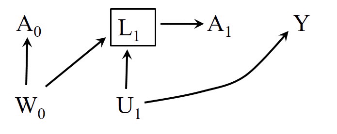
세부사항 20.2 (Fine Point 20.2) 인과 경로 상의 교란 요인(Confounders on the causal pathway). 이전 처치의 영향을 받는 교란 요인 1을 조건으로 하는 것은 교란 요인이 처치와 결과 사이의 인과 경로 상에 있지 않더라도 선택 편향(selection bias)을 만들어낼 수 있다. 실제로 그림 20.5와 20.6에는 그러한 인과 경로가 존재하지 않는다.
반면에 그림 20.7에서는 이후 처치 1에 대한 교란 요인 1이 이전 처치 0에서 결과 로 이어지는 인과 경로, 즉 0 → 1 → 경로 상에 놓여 있다. 만약 그림 20.7에서 선택 편향의 가능성이 없었다면(예: 1이 1과 의 공통 원인이 아니었다면), 1의 층 내에서의 연관 차이는 1을 거치지 않는 0의 에 대한 직접 효과(direct effect)의 불편 추정치가 될 수 있었겠지만, 여전히 0이 1을 통해 매개되는 효과가 포함되지 않으므로 ¯의 에 대한 전체 효과(overall effect)의 불편 추정치는 되지 못했을 것이다.
처치와 결과 사이의 인과 경로 상에 있는 변수들은 교란 요인으로 간주될 수 없다고 흔히 말하는데, 그러한 변수들을 보정하면 편향된 효과 추정치를 낳기 때문이다. 그러나 시간에 따라 변화하는 처치에 대해 이러한 교란 요인의 규정은 정확하지 않다. 그림 20.7은 이후 처치 1에 대한 교란 요인이 과거 처치 0과 결과 사이의 인과 경로 상에 있을 수 있음을 보여준다. 인과 경로 상의 교란 요인을 보정하는 것이 처치 전략의 효과에 편향을 유도하는지 여부는 보정 방법의 선택에 달려 있다. 층화는 실제로 편향을 유도할 것이지만, g-방법은 편향을 유도하지 않는다.
다시 말해 층화는 0에 대한 선택 편향(selection bias)을 도입하는 대가로 1에 대한 교란을 제거한다. 연관 차이
\[E[ \mid \_0 = 1\, \_1 = \lambda\, \_1 = 1] - E[ \mid \_0 = 0\, \_1 = \lambda\, \_1 = 0]\]
는 우리 예시에서처럼 처치가 어느 시점에서도 어떤 개인의 결과에 효과를 미치지 않더라도 0과 다를 수 있다. 이 편향은 시간에 따라 변화하는 처치의 (한 구성요소인 0의) 영향을 받는 변수 1을 선택함으로써 연구 모집단의 부분집합을 선택하는 것에서 기인한다. 순 편향(net bias)은 제거되는 교란의 상대적 크기와 새로 생성되는 선택 편향의 상대적 크기에 따라 달라진다.
그림 20.6 (Figure 20.6)
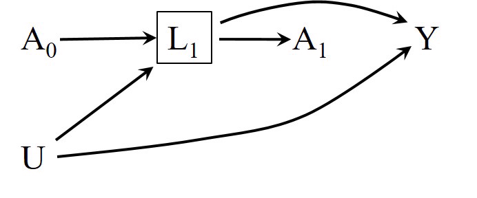
그림 20.7 (Figure 20.7)
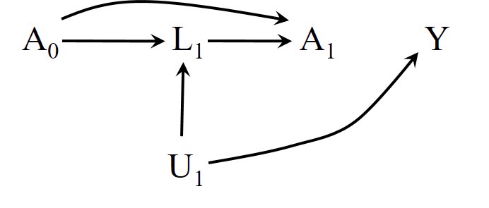
엄밀히 말해 전통적 방법들의 편향은 (무작위 실험이나 관찰 연구에서) 교란 요인이 이전 처치의 영향을 받을 때뿐만 아니라, (관찰 연구에서) 교란 요인이 이전 처치와 측정되지 않은 원인 을 공유할 때도 발생한다. 그림 20.6에 묘사된 관찰 연구에서, 충돌 변수 1을 조건으로 하는 것은 경로 0 ← 0 → 1 ← 1 → 를 열어젖힌다. 이러한 이유로 우리는 관측된 데이터로는 구별할 수 없는 그림 20.3과 20.4의 두 설정 모두를 처치-교란 요인 피드백의 예시로 불렀다.
전통적 방법들의 편향을 설명하기 위해 지금까지 우리가 고려한 인과 다이어그램들은 모두 매우 단순하다. 이들은 처치가 결과에 인과 효과를 미치지 않는 설정만을 나타낸다. 그러나 처치-교란 요인 피드백이 존재하는 상황에서 교란 요인을 조건으로 하는 것은 그림 20.7에서처럼 처치가 0이 아닌 효과(non-null effect)를 가질 때도 편향을 유도한다. 0, 1, 또는 1에서 로 가는 화살표의 존재는 1을 조건으로 하는 것이 0과 사이에 인과적 해석을 갖지 않는 연관성을 만든다는 사실을 바꾸지 않는다(세부사항 20.2도 참조하라).
또한 우리의 인과 다이어그램은 두 시점과 제한된 수의 노드만을 가졌지만, 전통적 방법들의 편향은 여러 시점과 여러 변수를 갖는 고차원 데이터에서도 발생한다. 사실 여러 시점에서 이전 처치의 영향을 받는 시간에 따라 변화하는 교란 요인이 존재하면 큰 편향이 발생할 가능성이 더욱 커진다.
일반적으로 처치 전략들의 효과를 타당하게 추정하는 것은 처치 구성요소들 의 결합 효과(joint effect)를 편향 없이 동시에 추정할 수 있을 때에만 가능하다. 우리가 방금 보았듯이 모든 시간에 따라 변화하는 교란 요인에 대한 데이터가 있더라도 층화를 사용해서는 이를 달성하는 것이 불가능할 수 있다.
20.4 전통적 방법들을 수정할 수 없는 이유(Why traditional methods cannot be fixed)
우리는 처치-교란 요인 피드백이 있을 때 층화가 교란 보정 방법으로 사용될 수 없음을 보였다. 하지만 다른 전통적 방법들은 어떨까? 예를 들어 교란을 보정하기 위해 비모수적 층화 대신 모수적 결과 회귀(parametric outcome regression)를 사용할 수도 있었다. 단순한 층화가 실패한 곳에서 결과 회귀는 성공할 수 있을까?
이 질문은 고차원 데이터(high-dimensional data)를 다루는 환경에서 특히 중요하다. 고차원 환경에서는 앞 절에서 했던 것처럼 단순한 층화 분석을 수행할 수 없기 때문이다. 표 20.1에서 처치 는 두 달 = 0,1에서 발생하므로 정적 처치 전략 ¯는 2^2 = 4개에 불과하다. 그러나 처치 가 여러 시점 = 0,1…에서 발생할 때는 모든 처치 값의 조합을 나열한 표를 제시할 수 없게 된다. 실제 연구에서 흔히 그렇듯이 가 100 정도라면, 2^100개의 정적 처치 전략 ¯가 존재하는데, 이는 어떤 연구의 표본 크기도 아득히 초과하는 엄청난 수이다. 동적 전략(dynamic strategies)까지 고려하면 처치 전략의 총 수는 훨씬 더 많아진다.
각 시점 마다 측정되는 교란 요인 가 여럿 존재하기 때문에 데이터 조합의 수는 훨씬 더 많아진다.
11장 이후로 우리가 계속 주장해 왔듯이, 가능한 처치 전략 ¯가 많을 때 E[^{¯}]를 포함하는 평균 인과 효과를 추정하려면 모형화(modeling)가 필요하다. 이를 위해 우리는 처치 이력 ¯가 평균 결과 에 미치는 효과에 대한 용량-반응 함수(dose-response function)를 가설로 설정해야 한다. 한 가지 가능성은 처치 전략 ¯의 효과가 각 전략 하에서의 누적 처치(cumulative treatment)의 함수로서 선형적으로 증가한다고 가정하는 것이다. 이 가정 하에서는 처치가 이루어지는 3개월이 추적관찰 기간의 어느 구간에 해당하는지와 상관없이(예: 추적관찰의 첫 3개월이든, 마지막 3개월이든 등), 정확히 3개월 동안 처치를 배정하는 모든 전략이 동일한 효과를 갖는다. 모형화에 대해 지불해야 하는 대가는 용량-반응 함수의 가능한 모형 오지정(model misspecification)으로 인한 우리 추정치의 타당성에 대한 또 다른 위협이다.
안타깝게도 이제 우리가 보여주겠지만 회귀 모형화는 처치-교란 요인 피드백이 존재할 때 전통적 방법들의 편향을 제거하지 못한다. 표 20.1의 데이터에 대해 누적 처치를 (¯) = 0 + 1로 정의하자. 이는 세 가지 값을 가질 수 있다: 0(두 시점 모두 처치받지 않은 경우), 1(시점 0에서만 또는 시점 1에서만 처치받은 경우), 2(두 시점 모두 처치받은 경우). 그러면 관심 있는 처치 전략은 “항상 처치” (¯) = 2와 “절대 미처치” (¯) = 0으로 표현될 수 있고, 평균 인과 효과는 E[^{(¯)=2}] − E[^{(¯)=0}]이 된다. 다시 말하지만 어떤 타당한 방법이든 이 차이의 값을 0으로 추정해야 한다.
평균 결과 E[ | ¯, 1]이 공변량 (¯)에 선형적으로 의존한다는 가정 아래, 우리는 다음과 같은 결과 회귀 모형을 적합할 수 있다:
\[E[ \mid \¯\, \_1] = \_0 + \_1 \(\¯) + \_2 \_1\]
연관 차이 \(E[ \mid \(\¯) = 2\, \_1] - E[ \mid \(\¯) = 0\, \_1]\)는 1 × 2와 같다. (이 모형은 그 차이가 층 1 = 1과 1 = 0에서 동일하다고 올바르게 가정한다.) 따라서 누군가는 1 × 2를 공변량 1의 수준 내에서 “항상 처치” 대 “절대 미처치”의 평균 인과 효과로 해석하고 싶어 할 수 있다. 그러나 그러한 인과적 해석은 정당하지 않다. 그림 20.5가 보여주듯이 1을 조건으로 하는 것은 처치 (¯)의 한 구성요소인 0과 결과 사이에 연관성을 유도하기 때문이다. 이는 참 인과 효과가 0일지라도 1—따라서 평균들의 연관 차이—이 0이 아님을 의미한다. 매칭에도 유사한 논증이 적용될 수 있다.
독자 여러분이 직접 표 20.1의 데이터에 이 결과 회귀 모형을 적합하여 1이 0이 아님을 확인해 보기를 권한다.
처치-교란 요인 피드백이 존재할 때 시간에 따라 변화하는 교란 요인들을 적절하게 보정하기 위해서는 g-방법(g-methods)이 필요하다.
20.5 과거 처치의 보정(Adjusting for past treatment)
g-방법을 논의하기 전에 한 가지 더 짚고 넘어가자. 단순성을 위해 지금까지 우리는 과거 처치가 이후 처치에 직접 영향을 미치지 않는 단순화된 인과 다이어그램 하에서 처치-교란 요인 피드백을 설명했다. 즉, 그림 20.3과 20.4의 인과 다이어그램에는 0에서 1로 가는 화살표가 포함되지 않았다. 이제 우리는 과거 처치가 이후 처치에 직접 영향을 미칠 수 있는 보다 일반적인 경우를 고려한다.
예를 들어 우리 HIV 연구의 의사들이 시점 에서 처치 를 처방할지 결정할 때 과거 처치 이력 ¯ −1에 대한 정보를 사용한다고 가정해 보자. 이러한 상황을 표현하기 위해, 그림 20.8과 20.9에 나타난 것처럼 그림 20.3과 20.4의 인과 다이어그램에 0에서 1로 가는 화살표를 추가한다.
그림 20.8 (Figure 20.8)
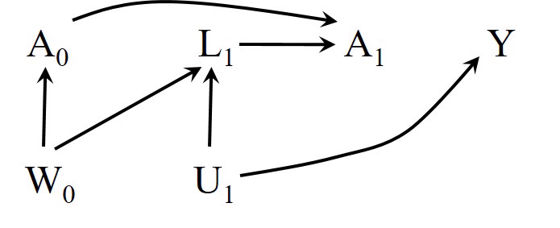
그림 20.8과 20.9의 인과 다이어그램은 처치-교란 요인 피드백이 존재할 때 1을 조건으로 하는 것만으로는 처치 1과 결과 사이의 모든 뒷문 경로(backdoor paths)를 차단하기에 불충분함을 보여준다. 실제로 1을 조건으로 하면 그림 20.8에서는 경로 1 ← 0 → 1 ← 1 → 가 열리고, 그림 20.9에서는 경로 1 ← 0 ← 0 → 1 ← 1 → 가 열린다. 물론 처치-교란 요인 피드백의 존재 여부와 상관없이, 그림 20.10의 인과 다이어그램에서처럼 과거 처치가 결과에 0이 아닌 효과를 미칠 때는 언제나 과거 처치 이력을 조건으로 하는 것이 요구된다. 이 다이어그램 하에서 처치 0은 처치 1의 효과에 대한 교란 요인이다.
그림 20.9 (Figure 20.9)
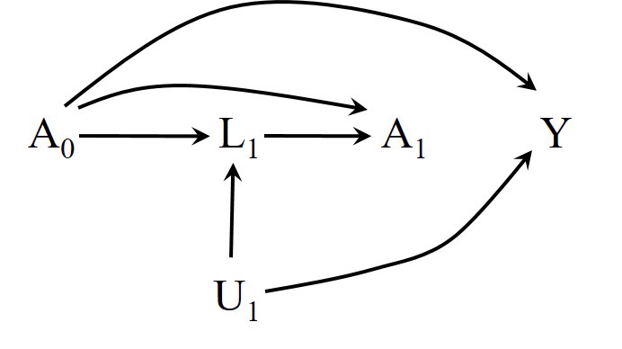
따라서 시점 에서의 순차적 교환가능성은 일반적으로 이전의 처치 이력 ¯ −1을 조건으로 할 것을 요구한다. 공변량 ¯ 만을 조건으로 하는 것은 충분하지 않다. 이번 장과 앞 장에서 순차적 교환가능성을 나타내는 모든 조건부 독립 진술이 처치 이력을 조건으로 했던 이유가 바로 여기에 있다.
그림 20.10 (Figure 20.10)
과거 처치는 시간에 따라 고정된 처치의 효과를 추정할 때도 중요한 역할을 한다. 0과 1을 모두 포함하는 처치 전략의 효과가 아니라, 시간에 따라 고정된 처치 1이 에 미치는 효과를 추정하는 데 관심이 있다고 가정해 보자. (때때로 1의 효과는 시간에 따라 변화하는 처치 ¯의 단기 효과(short-term effect)로 지칭되기도 한다.) 그러면 처치-교란 요인 피드백이 있는 경우 과거 처치 0을 보정하지 않으면 일반적으로 선택 편향이 발생하고, 과거 처치 0이 결과 에 직접적인 영향을 미치는 경우에는 교란이 발생하게 된다. 다시 말해 그림 20.8~20.10에서처럼 처치 1이 어떤 개인의 결과 에도 아무런 효과를 미치지 않더라도, 차이 E[ | 1 = 1, 1] − E[ | 1 = 0, 1]은 0이 되지 않을 것이다.
실제 연구에서 시간에 따라 고정된 처치에 대한 인과 추론을 수행할 때, 처치의 현재 사용자( 1 = 1)와 비사용자( 1 = 0)를 비교하는 분석에서는 편향이 발생할 수 있다. 이 편향을 피하기 위해 이전 처치 이력을 보정하거나, 특정한 처치 이력을 가진 개인들로 분석을 제한할 수 있다. 이것이 바로 시간에 따라 고정된 처치를 위한 “신규 사용자 설계(new-user designs)” 이면의 핵심 아이디어이다: 과거에 처치를 사용한 적이 없는 개인들로 분석을 제한하는 것이다.
과거 처치를 보정해야 한다는 요구 조건은 과거 처치가 잘못 측정(mismeasured)되었을 때 추가적인 편향을 낳는다. 9.3절에서 논의했듯이 잘못 측정된 교란 요인은 상향 또는 하향으로 편향된 효과 추정치를 초래할 수 있다. 우리의 HIV 예시에서 연구자들이 연구 참여자들의 의무기록에 접근할 수 없었다고 가정하자. 오히려 이전 처치를 확인하기 위해 연구자들은 설문지를 통해 참여자들에게 물어보아야 했다. 모든 참여자가 자신의 처치 이력을 정확하게 기억하여 제공하지는 못했기 때문에 처치 0은 오차를 갖고 측정되었다. 연구자들은 변수 0 대신 잘못 측정된 변수 ∗0에 대한 데이터를 가졌다.
그림 20.8~20.10에서 이러한 설정을 묘사하기 위해 우리는 실제 처치 0에서 잘못 측정된 처치 ∗0으로 가는 화살표를 추가한다. 이는 ∗0을 조건으로 하더라도 0을 거쳐 지나가는 1과 사이의 편향 경로를 차단할 수 없음을 보여준다. 그러면 연구자들은 1이 에 미치는 효과가 없음에도 불구하고, ∗0과 1을 보정한 후에도 1과 사이에 연관성이 존재한다고 결론짓게 될 것이다.
따라서 처치가 시간에 따라 변화할 때, 널리 퍼진 믿음과는 반대로 처치의 오측정(mismeasurement)은 측정 오차가 독립적이고 비차별적(non-differential)일지라도 무가설 하에서 편향을 유발할 수 있음을 발견하게 된다. 이 편향은 과거 처치가 결과에 아무런 인과 효과를 미치지 않더라도 과거 처치가 이후 처치의 효과에 대한 교란 요인이 되기 때문에 발생한다. 나아가 대립가설(alternative) 하에서는 이러한 불완전한 편향 보정으로 인해 효과 추정치가 과장될 수 있다.
제21장 시간에 따라 변화하는 처치를 위한 g-방법(G-Methods for Time-Varying Treatments)
앞 장에서 우리는 시간에 따라 변화하는 처치(time-varying treatment)와 처치-교란 요인 피드백(treatment-confounder feedback)이 존재하는 데이터셋을 설명했다. 그리고 이 데이터셋에 적용했을 때, 교란 보정을 위한 전통적 방법들이 교란을 올바르게 보정하지 못함을 보였다. 시간에 따라 변화하는 처치가 결과에 미치는 인과 효과가 0이었음에도 불구하고, 전통적 보정 방법들은 무가설(null)과 다른 효과 추정치를 산출했다. 이번 장에서는 처치-교란 요인 피드백이 존재할 때 전통적 방법들이 갖는 편향에 대한 해결책을 설명한다: 바로 g-방법(g-methods)—g-공식(g-formula), 역확률 가중(IP weighting), g-추정(g-estimation), 그리고 이들의 이중 로버스트(doubly-robust) 일반화—의 사용이다. 앞 장과 동일한 데이터셋을 사용하여, 여기서 우리는 세 가지 g-방법이 올바른 (무가설의) 효과 추정치를 산출함을 보여준다. 시간에 따라 고정된 처치의 경우, 우리는 13장에서 g-공식을, 12장에서 주변 구조 모형(marginal structural models)의 IP 가중을, 15장에서 구조적 중첩 모형(structural nested models)의 g-추정을 설명했다. 여기서는 19장에서 설명한 식별 조건(identifiability conditions)인 순차적 교환가능성(sequential exchangeability), 양수성(positivity), 일관성(consistency) 하에서 정적 처치 전략(static treatment strategies)을 비교하기 위한 세 가지 g-방법 각각을 소개한다.
21.1 시간에 따라 변화하는 처치를 위한 g-공식(The g-formula for time-varying treatments)
표 20.1에 제시되었던 순차적 무작위 실험(sequentially randomized experiment)의 데이터를 다시 살펴보자. 편의를 위해 이 데이터를 표 21.1로 여기에 다시 싣는다. 우리가 시간에 따라 고정된 처치 ₁의 효과에만 관심이 있다고 가정해 보자. 즉, 반사실적 평균 결과인 \(\text{E}[\^{\alpha_1=1}]\)과 \(\text{E}[\^{\alpha_1=0}]\)을 비교하고자 한다고 하자. 제1부와 제2부에서 우리는 식별 조건 하에서 각각의 평균 \(\text{E}[\^{\alpha_1}]\)이 (시간에 따라 고정된) 처치와 교란 요인을 조건으로 한 조건부 평균 결과 \(\text{E}[\ \mid \_1=\alpha_1, \_1=\lambda_1]\)의 가중 평균임을 보였다. 구체적으로 \(\text{E}[\^{\alpha_1}]\)은 가중 평균
\[\sum_{\lambda_1} \text{E}[\ \mid \_1=\alpha_1, \_1=\lambda_1] (\lambda_1)\]
과 같으며, 여기서 \((\lambda_1) = \text{Pr}[\_1=\lambda_1]\)이다. 이 가중 평균이 바로 g-공식(g-formula)이다. 시간에 따라 고정된 교란 요인 ₁이 주어졌을 때의 조건부 교환가능성 하에서, g-공식은 연구 모집단에서의 교란 요인 분포에 표준화된 평균 결과이다.
표 21.1 (Table 21.1)
| \(\\) | \(\_0\) | \(\_1\) | \(\_1\) | Mean \(\\) |
|---|---|---|---|---|
| 2400 | 0 | 0 | 0 | 84 |
| 1600 | 0 | 0 | 1 | 84 |
| 2400 | 0 | 1 | 0 | 52 |
| 9600 | 0 | 1 | 1 | 52 |
| 4800 | 1 | 0 | 0 | 76 |
| 3200 | 1 | 0 | 1 | 76 |
| 1600 | 1 | 1 | 0 | 44 |
| 6400 | 1 | 1 | 1 | 44 |
그러나 표 21.1의 순차적 무작위 실험에서 처치 \(\ = (\_0, \_1)\)은 시간에 따라 변화하며, 앞 장에서 보았듯이 처치-교란 요인 피드백이 존재한다. 이는 시간에 따라 변화하는 처치 의 인과 효과를 편향 없이 추정하기 위해 전통적 보정 방법에 의존할 수 없음을 뜻한다. 예를 들어 순차적 교환가능성이 성립하는 순차적 무작위 실험에서조차 전통적 방법들은 “항상 처치(always treat)” 하에서의 평균 결과 \(\text{E}[\^{\alpha_0=1, \alpha_1=1}]\) 및 “전혀 처치하지 않음(never treat)” 하에서의 평균 결과 \(\text{E}[\^{\alpha_0=0, \alpha_1=0}]\)에 대한 타당한 추정치를 제공하지 못할 수 있다. 반면, g-공식은 순차적 무작위 실험에서 반사실적 평균 \(\text{E}[\^{\alpha_0, \alpha_1}]\)을 계산하는 데 사용될 수 있다. 그렇게 하기 위해서는 시간에 따라 고정된 처치에 대한 위의 g-공식 표현식을 일반화해야 한다. (19장에서 설명한) 식별 조건 하에서 \(\text{E}[\^{\alpha_0, \alpha_1}]\)에 대한 g-공식은 여전히 가중 평균이지만, 이제는
순차적 교환가능성을 달성하는 데 필요한 시간에 따라 변화하는 처치 및 교란 요인을 조건으로 한 평균 결과 \(\text{E}[\ \mid \_0=\alpha_0, \_1=\alpha_1, \_1=\lambda_1]\)의 가중 평균이 된다. 구체적으로 g-공식
\[\sum_{\lambda_1} \text{E}[\ \mid \_0=\alpha_0, \_1=\alpha_1, \_1=\lambda_1] (\lambda_1 \mid \alpha_0)\]
은 \(\^{\alpha_0, \alpha_1}\)에 대한 (정적) 순차적 교환가능성 하에서 \(\text{E}[\^{\alpha_0, \alpha_1}]\)과 같다. 즉, 시간에 따라 변화하는 처치의 경우 식별 조건 하에서 반사실적 평균 결과의 g-공식 추정량은 연구 모집단에서의 교란 요인 분포에 표준화된 평균 결과이며, 이때 수식의 모든 인자는 과거 처치 및 공변량 이력에 조건부이다. 이러한 이전 이력에 대한 조건화는 처치와 교란 요인이 단일 시점에서 측정되는 시간에 따라 고정된 경우에는 필요하지 않다. \((\lambda_1 \mid \alpha_0) \ne 0\)인 임의의 값 \(\lambda_1\)에 대해 모집단에 \((\_0=\alpha_0, \_1=\alpha_1, \_1=\lambda_1)\)을 갖는 개인이 존재하는 경우에만 g-공식이 계산 가능하다(즉, 잘 정의된다)는 점에 유의하라. 이는 기술적 사항 19.2에 제시된 양수성의 정의와 동등하며, 기술적 사항 3.1의 양수성에 대한 논의를 시간에 따라 변화하는 처치로 일반화한 것이다.
2개 시점을 갖는 연구에서 “전혀 처치하지 않음”에 대한 g-공식은 다음과 같다: \(\text{E}[\ \mid \_0 = 0, \_1 = 0, \_1 = 0] \times \text{Pr}[\_1 = 0 \mid \_0 = 0] + \text{E}[\ \mid \_0 = 0, \_1 = 0, \_1 = 1] \times \text{Pr}[\_1 = 1 \mid \_0 = 0]\)
표 21.1의 순차적 무작위 실험으로부터 인과 효과 \(\text{E}[\^{\alpha_0=1, \alpha_1=1}] - \text{E}[\^{\alpha_0=0, \alpha_1=0}]\)을 추정하기 위해 g-공식을 적용해 보자. 평균 \(\text{E}[\^{\alpha_0=0, \alpha_1=0}]\)에 대한 g-공식 추정치는 \(84 \times 0\.25 + 52 \times 0\.75 = 60\)이다. 평균 \(\text{E}[\^{\alpha_0=1, \alpha_1=1}]\)에 대한 g-공식 추정치는 \(76 \times 0\.50 + 44 \times 0\.50 = 60\)이다. 따라서 인과 효과 \(\text{E}[\^{\alpha_0=1, \alpha_1=1}] - \text{E}[\^{\alpha_0=0, \alpha_1=0}]\)의 추정치는 예상대로 \(60 - 60 = 0\)이다. 전통적 방법들이 실패했던 곳에서 g-공식은 성공을 거둔다.
그림 21.1 (Figure 21.1)
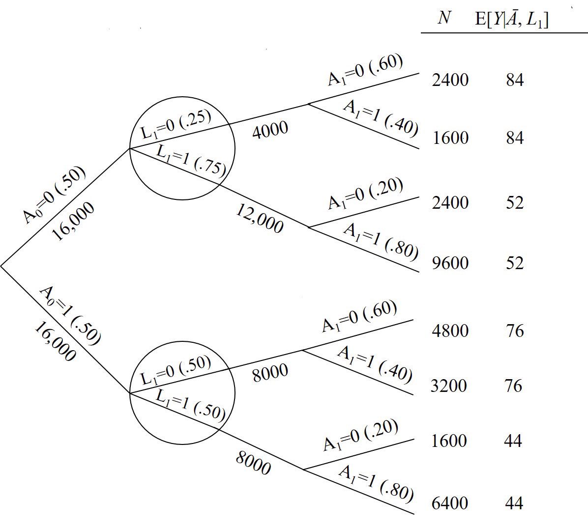
g-공식을 생각하는 또 다른 방법은 시뮬레이션(simulation)으로 보는 것이다. \(\^{\bar{\alpha}}\)와 \(\bar{\}^{\bar{\alpha}}\)의 결합에 대한 순차적 교환가능성 하에서, g-공식은 연구 모집단의 모든 개인이 처치 전략 \(\bar{\alpha}\)를 따랐을 때 관측되었을 반사실적 결과 및 공변량 이력 \((\^{\bar{\alpha}}, \bar{\}^{\bar{\alpha}})\)을 시뮬레이션한다. 다시 말해, g-공식은 전략 \(\bar{\alpha}\) 하에서의 반사실들 \((\^{\bar{\alpha}}, \bar{\}^{\bar{\alpha}})\)의 결합 분포를 시뮬레이션(식별)한다. 이를 확인하기 위해, 먼저 표 21.1의 데이터를 대안적으로 표현한 그림 21.1의 인과적 구조를 갖는 트리 그래프(causally-structured tree graph)를 고려해 보자. 앞서 언급한 식별 조건 하에서,
g-공식은 모든 개인이 전략 \(\bar{\alpha}\)를 따르는 새로운 트리를 구축하는 절차로 볼 수 있다. 예를 들어 그림 21.2의 인과적 구조를 갖는 트리 그래프는 모든 개인이 “항상 처치” 전략(\(\alpha_0=1, \alpha_1=1\))을 따랐을 때 관측되었을 반사실적 모집단을 보여준다.
그림 21.2 (Figure 21.2)
순차적 교환가능성 하에서, \(\text{Pr}[\_1=\lambda_1 \mid \_0=\alpha_0] = \text{Pr}[\_1^{\alpha_0}=\lambda_1]\)이고 \(\text{E}[\ \mid \_0=\alpha_0, \_1=\alpha_1, \_1=\lambda_1] = \text{E}[\^{\alpha_0, \alpha_1} \mid \_1^{\alpha_0}=\lambda_1]\)이다. 따라서 g-공식은 \(\sum_{\lambda_1} \text{E}[\^{\alpha_0, \alpha_1} \mid \_1^{\alpha_0}=\lambda_1] \text{Pr}[\_1^{\alpha_0}=\lambda_1]\)이 되며, 이는 필요했던 대로 \(\text{E}[\^{\alpha_0, \alpha_1}]\)과 같다.
이 책에 제시된 모든 인과 다이어그램 하에서, \(\\)와 \(\\) 같은 모든 미측정 변수를 포함하는 g-공식은 항상 올바르다. 불행히도 미측정 변수들은 정의상 연구자들이 이용할 수 없다.
시간에 따라 변화하는 처치를 위한 g-공식은 Robins (1986, 1987)에 의해 처음 설명되었다.
이 반사실적 모집단을 시뮬레이션하기 위해 우리는 (i) 시점 \(\kappa=0\)과 \(\kappa=1\)에서 처치 \(\alpha_0=1\)과 \(\alpha_1=1\)을 받을 확률을 각각 1로 할당하고, (ii) 원래 연구 모집단에서와 동일한 확률 \(\text{Pr}[\_1=\lambda_1 \mid \_0=\alpha_0]\)과 동일한 조건부 평균 \(\text{E}[\ \mid \_0=\alpha_0, \_1=\alpha_1, \_1=\lambda_1]\)을 부여한다.
두 가지 중요한 점이 있다. 첫째, g-공식의 값은 에 무엇이 포함되었는지(혹은 포함된 것이 있는지)에 따라 달라진다. 예를 들어 그림 20.8에서 \(\_1\)에서 \(\_1\)으로 가는 화살표를 제거한 인과 다이어그램으로 우리 연구가 표현된다고 잘못 믿어서 \(\_1\)에 관한 데이터를 수집하지 않았다고 가정해 보자. 따라서 우리는 \(\_1\)이 교란 요인이 아니며 식별에 필요하지 않다고 믿는다. 그러면 \(\_1\)에 대한 데이터가 없는 상태에서의 g-공식은 보정할 공변량 이력이 없으므로 \(\text{E}[\ \mid \_0=\alpha_0, \_1=\alpha_1]\)이 된다. 그러나 우리 연구가 실제로는 그림 20.8의 인과 그래프(처치 배정 \(\_1\)이 \(\_1\)의 영향을 받는 구조)로 표현되기 때문에, \(\_1\)을 포함하지 못한 g-공식은 더 이상 인과적 해석을 갖지 못한다.
둘째, g-공식이 인과적 해석을 가질 때조차도 그 구성요소 각각은 인과적 해석을 결여할 수 있다. 예를 들어 오직 정적 순차적 교환가능성만이 성립하는 그림 20.9의 인과 다이어그램을 고려해 보자. \(\_1\)을 포함하는 g-공식은 \(\^{\bar{\alpha}}\)의 평균을 올바르게 식별한다. 놀랍게도 \(\_0\)과 \(\_1\)에서 \(\\)로 가는 화살표를 추가하든 그렇지 않든 간에, g-공식은 두 구성요소—\(\text{E}[\ \mid \_0=\alpha_0, \_1=\alpha_1, \_1=\lambda_1]\)과 \(\text{Pr}[\_1=\lambda_1 \mid \_0=\alpha_0]\)—모두가 전혀 인과적 해석을 갖지 못함에도 불구하고 계속해서 \(\text{E}[\^{\bar{\alpha}}]\)로서의 인과적 해석을 유지한다. 즉, \(\text{Pr}[\_1=\lambda_1 \mid \_0=\alpha_0] \ne \text{Pr}[\_1^{\alpha_0}=\lambda_1]\)이고 \(\text{E}[\ \mid \_0=\alpha_0, \_1=\alpha_1, \_1=\lambda_1] \ne \text{E}[\^{\alpha_0, \alpha_1} \mid \_1^{\alpha_0}=\lambda_1]\)이다. 이 마지막 두 부등식은 그림 20.1 및 20.2에 표현된 것과 같은 순차적 무작위 시험에서는 등식이 될 것이다.
이제 g-공식을 여러 시점 \(\kappa\)를 갖는 고차원 환경으로 일반화해 보자. g-공식은 다음과 같다:
\[\sum_{\bar{\lambda}} \text{E}[\ \mid \bar{\}=\bar{\alpha}, \bar{\}=\bar{\lambda}] \prod_{\kappa=0}^\ (\lambda_\kappa \mid \bar{\alpha}_{\kappa-1}, \bar{\lambda}_{\kappa-1})\]
여기서 합은 가능한 모든 \(\bar{\lambda}\)-이력에 대해 취해진다(\(\bar{\lambda}_\\)는 시점 \(\\)까지의 이력이며, \(\bar{\lambda}_{-1}\)과 \(\bar{\alpha}_{-1}\)은 공집합). 각 시점 \(\kappa\)에서 \((\bar{\}_\kappa, \bar{\}_{\kappa-1})\)이 주어졌을 때 \(\^{\bar{\alpha}}\)에 대한 순차적 교환가능성 하에서, 이 표현식은 처치 전략 \(\bar{\alpha}\) 하에서의 반사실적 평균 \(\text{E}[\^{\bar{\alpha}}]\)와 같다. 세부사항 21.1은 “이력(history)”이라는 용어에 대한 더 미묘한 정의를 제시한다. 기술적 사항 21.1은 평균뿐만 아니라 밀도를 계산하는 데 사용될 수 있는 g-공식의 보다 일반적인 표현식을 보여준다.
세부사항 21.1 (Fine Point 21.1) 처치 및 공변량 이력(Treatment and covariate history). g-방법을 설명할 때 우리는 종종 순차적 교환가능성을 달성하는 데 필요한 처치 및 공변량 이력을 언급한다. g-공식의 경우, 그 구성요소들이 이전의 처치 및 공변량 이력에 조건부라고 말한다. 예를 들어 시점 \(\kappa=2\)에서 이산형 교란 요인 \(\_2\)의 확률에 대응하는 인자
\[(\lambda_2 \mid \bar{\}_1=\bar{\alpha}_1, \bar{\}_1=\bar{\lambda}_1) = \text{Pr}[\_2=\lambda_2 \mid \_0=\alpha_0, \_1=\alpha_1, \_0=\lambda_0, \_1=\lambda_1]\]
는 이전 시점 0과 1에서의 처치 및 교란 요인에 조건부이다. 시점 \(\kappa=3\)에서의 인자는 시점 0, 1, 2에서의 처치 및 교란 요인에 조건부이며, 이후 시점도 마찬가지이다. 그러나 “이력(history)”이라는 용어가 전적으로 정확한 것은 아닌데, 세부사항 7.2에서 설명했듯이 교란 요인이 이론상 처치보다 미래에 존재할 수도 있기 때문이다. 반대로 그림 7.4와 함께 설명했듯이, 처치보다 과거에 있는 일부 변수를 보정하는 것이 선택 편향(때때로 M-편향(M-bias)이라 불림)을 유발할 수도 있다. 따라서 시점 \(\kappa\)에서 인과적으로 관련된 “이력”은 처치 \(\_\kappa\)에 대한 조건부 교환가능성을 달성하는 데 필요한 처치 및 교란 요인들의 집합으로 이해되어야 한다. 대개 이러한 교란 요인 \(\_\kappa\)는 처치 \(\_\kappa\)보다 과거에 위치하므로, 편의상 우리는 이 책 전반에서 “이력”이라는 용어를 계속 사용할 것이다.
그러나 실제로는 여러 교란 요인이나 시점을 갖는 관찰 연구에서 예상되듯이 데이터가 고차원인 경우 g-공식의 구성요소들을 직접 계산할 수 없다. 수량 \(\text{E}[\ \mid \bar{\}=\bar{\alpha}, \bar{\}=\bar{\lambda}]\)와 \((\lambda_\kappa \mid \bar{\alpha}_{\kappa-1}, \bar{\lambda}_{\kappa-1})\)은 추정되어야 한다. 예를 들어 추적 관찰 종료 시점의 결과 변수의 조건부 평균 \(\text{E}[\ \mid \bar{\}=\bar{\alpha}, \bar{\}=\bar{\lambda}]\)를 추정하기 위해 선형 회귀 모형을 적합하고, \(\kappa \ne 0\)인 각 시점에서 이산형 교란 요인 \(\_\kappa\)의 분포를 추정하기 위해 로지스틱 회귀 모형들을 적합할 수 있다 (\(\_0\)의 분포는 13.3절에서 설명했듯이 모형 없이 추정할 수 있다). 이러한 모형들로부터 얻은 추정치 \(\widehat{\text{E}}[\ \mid \bar{\}=\bar{\alpha}, \bar{\}=\bar{\lambda}]\)와 \(\hat{}(\lambda_\kappa \mid \bar{\alpha}_{\kappa-1}, \bar{\lambda}_{\kappa-1})\)은 g-공식에 대입(plug in)된다. 13장 이후로 우리는 이 추정량을 플러그인 g-공식(plug-in g-formula)이라 불렀으며, 플러그인 g-공식에 사용된 추정치가 모수 모형에 기초할 때 이를 모수적 g-공식(parametric g-formula)이라고 불렀다.
단순성을 위해 이번 장에서는 결정론적 정적 전략(deterministic static strategies) 하에서의 g-공식 버전만을 제시한다. 그러나 g-공식은 결정론적이든 무작위적이든, 정적이든 동적이든 어떠한 처치 전략 하에서도 결과의 평균을 계산하는 데 사용될 수 있다. 관심 있는 처치 전략(또는 개입)이 모집단에 시행되었을 때 시점 \(\kappa\)에서 처치 \(\alpha_\kappa\)의 조건부 확률을 \(_{}(\alpha_\kappa \mid \bar{\alpha}_{\kappa-1}, \bar{\lambda}_\kappa)\)로 정의하자. 그러면 g-공식의 일반적인 표현식은 다음과 같다:
\[\sum_{\bar{\lambda}} \sum_{\bar{\alpha}} \text{E}[\ \mid \bar{\}=\bar{\alpha}, \bar{\}=\bar{\lambda}] \prod_{\kappa=0}^\ (\lambda_\kappa \mid \bar{\alpha}_{\kappa-1}, \bar{\lambda}_{\kappa-1}) \prod_{\kappa=0}^\ _{}(\alpha_\kappa \mid \bar{\alpha}_{\kappa-1}, \bar{\lambda}_\kappa)\]
결정론적 처치 전략 하에서는 \(_{}(\alpha_\kappa \mid \bar{\alpha}_{\kappa-1}, \bar{\lambda}_\kappa)\)가 항상 1이므로 명시할 필요가 없다. 예를 들어 “항상 처치” 전략 또는 \(\bar{\alpha} = (1,1,\dots,1)\) 하에서는 모든 \(\kappa\)에서 확률 \(_{}(1 \mid \bar{\alpha}_{\kappa-1}, \bar{\lambda}_\kappa) = 1\)이다. 그러나 다른 유형의 처치 전략 하에서는 \(_{}(\alpha_\kappa \mid \bar{\alpha}_{\kappa-1}, \bar{\lambda}_\kappa)\)가 모든 \(\kappa\)에서 1이 아니므로 g-공식에 포함되어야 한다. 예를 들어 “각 시점 \(\kappa\)에서 독립적으로 0.3의 확률로 개인을 처치하고 0.7의 확률로 처치하지 않는다”는 무작위 정적 전략(random static strategy) 하에서 \(_{}(1 \mid \bar{\alpha}_{\kappa-1}, \bar{\lambda}_\kappa) = 0\.3\)이다. 공개된 당사의 소프트웨어는 이러한 g-공식의 일반 형태를 구현하므로 어떠한 처치 전략도 수용할 수 있다.
R 코드:
gfoRmulaR 패키지(Lin et al. 2019)는 CRAN을 통해 이용할 수 있다.GFORMULASAS 매크로는 GitHub을 통해 이용할 수 있다. 이 책의 웹사이트를 참조하라.
기술적 사항 21.1 (Technical Point 21.1) 정적 전략을 위한 g-공식 밀도(The g-formula density for static strategies). 전략 \(\bar{\alpha}\)에 대해 \((y, \bar{\lambda})\)에서 평가된 \((\, \bar{\})\)의 g-공식 밀도는 다음과 같다:
\[(y \mid \bar{\alpha}, \bar{\lambda}) \prod_{\kappa=0}^\ (\lambda_\kappa \mid \bar{\alpha}_{\kappa-1}, \bar{\lambda}_{\kappa-1})\]
\(\\)의 g-공식 밀도는 단순히 \((\, \bar{\})\)의 g-공식 밀도 하에서의 \(\\)의 주변 밀도이다:
\[\int (y \mid \bar{\alpha}, \bar{\lambda}) \prod_{\kappa=0}^\ d(\lambda_\kappa \mid \bar{\alpha}_{\kappa-1}, \bar{\lambda}_{\kappa-1})\]
여기서 \(\_\kappa\)가 변수들의 벡터를 나타내고 벡터의 일부 변수가 연속형인 상황을 수용하기 위해 합 기호 \(\sum\) 대신 적분 기호 \(\int\)가 사용되었다. \(\bar{\}\)가 처치 \(\bar{\}\)와 결과 \(\\) 이외의 모든 측정된 변수들의 집합인 관측 데이터 \(\ = (\bar{\}, \bar{\}, \)\)가 주어졌을 때, g-공식의 입력값(inputs)은 (i) 처치 전략 \(\bar{\alpha}\), (ii) 관측 데이터(및 이들의 미측정 공통 원인)를 나타내는 인과 DAG, (iii) 우리가 보정하고자 하는 \(\bar{\}\)의 부분집합 \(\\), (iv) DAG의 위상(topology)과 일치하는 \(\\), \(\bar{\}\), \(\\)의 전순서(total ordering)의 선택, 즉 각 변수가 그 조상(ancestors) 뒤에 오도록 하는 순서이다. 벡터 \(\_\kappa\)는 그 순서에서 \(\_{\kappa-1}\) 뒤와 \(\_\kappa\) 앞에 위치하는 \(\\)의 모든 변수로 구성된다. 선택된 순서는 대개의 경우 시간적 순서가 되겠지만 항상 그런 것은 아니다. 이 책의 범위를 벗어나는 추가적인 미묘한 사항에 대해서는 세부사항 21.1과 Pearl and Robins (1995)를 참조하라. 선택된 순서에 대해 \(\^{\bar{\alpha}}\)에 대한 순차적 교환가능성과 양수성이 성립할 때, \(\\)의 g-공식 밀도는 모든 개인이 전략 \(\bar{\alpha}\)를 따랐을 때 연구 모집단에서 관측되었을 \(\\)의 밀도와 같다. 그렇지 않은 경우에도 g-공식은 여전히 계산될 수 있지만 인과적 해석을 갖지 못한다. 처치 전략 \(\bar{\alpha}\) 하에서 \((\, \bar{\})\)의 g-공식 밀도는 결합 분포
\[(y \mid \bar{\}_\=\bar{\alpha}_\, \bar{\}_\=\bar{\lambda}_\) \prod_{\kappa=0}^\ (\lambda_\kappa \mid \bar{\}_{\kappa-1}=\bar{\alpha}_{\kappa-1}, \bar{\}_{\kappa-1}=\bar{\lambda}_{\kappa-1}) \prod_{\kappa=0}^\ (\alpha_\kappa \mid \bar{\}_{\kappa-1}=\bar{\alpha}_{\kappa-1}, \bar{\}_\kappa=\bar{\lambda}_\kappa)\]
와 비교할 때, 오직 각 인자 \((\alpha_\kappa \mid \bar{\}_{\kappa-1}=\bar{\alpha}_{\kappa-1}, \bar{\}_\kappa=\bar{\lambda}_\kappa)\)가 제거되었다는 점에서만 다르다는 점에 유의하라. 남아 있는 각 인자는 전략 \(\bar{\alpha}\)와 일치하도록 \(\bar{\}_\kappa=\bar{\alpha}_\kappa\)에서 평가된다.
21.2 시간에 따라 변화하는 처치를 위한 IP 가중(IP weighting for time-varying treatments)
표 21.1에서 시간에 따라 고정된 처치 ₁의 효과에만 관심이 있다고 가정해 보자. 그러면 우리는 반사실적 평균 결과 \(\text{E}[\^{\alpha_1=1}]\)과 \(\text{E}[\^{\alpha_1=0}]\)을 비교하고자 한다. 12장에서 보았듯이, 식별 조건 하에서 각각의 반사실적 평균 \(\text{E}[\^{\alpha_1}]\)은 개인별 비안정화 가중치(nonstabilized weights) \(\^{\_1} = 1/(\_1 \mid \_1)\) 또는 안정화 가중치(stabilized weights) \(\\^{\_1} = (\_1)/(\_1 \mid \_1)\)에 의해 생성된 의사 모집단(pseudo-population)에서의 평균 \(\text{E}_{ps}[\ \mid \_1=\alpha_1]\)이다. 비공식적으로 말하자면, IP 가중치의 분모는 개인이 자신의 교란 요인 값이 주어졌을 때 실제로 받은 처치 값을 받을 확률이다. 관측 연구 데이터로부터 의사 모집단 내에서 \(\_1=\alpha_1\)을 갖는 대상자들의 \(\\) 평균을 구함으로써 \(\text{E}_{ps}[\ \mid \_1=\alpha_1]\)을 추정할 수 있다.
처치와 교란 요인이 시간에 따라 변화할 때, 시간에 따라 고정된 처치를 위한 이러한 IP 가중치는 일반화되어야 한다. 2개 시점에서의 시간에 따라 변화하는 처치 \(\ = (\_0, \_1)\)과 시간에 따라 변화하는 공변량 \(\bar{\} = (\_0, \_1)\)에 대해 비안정화 IP 가중치는 다음과 같다:
\[\^{\bar{\}} = \frac{1}{(\_0 \mid \_0) \times (\_1 \mid \_0, \_0, \_1)} = \prod_{\kappa=0}^1 \frac{1}{(\_\kappa \mid \bar{\}_{\kappa-1}, \bar{\}_\kappa)}\]
그리고 안정화 IP 가중치는 다음과 같다:
\[\\^{\bar{\}} = \frac{(\_0) \times (\_1 \mid \_0)}{(\_0 \mid \_0) \times (\_1 \mid \_0, \_0, \_1)} = \prod_{\kappa=0}^1 \frac{(\_\kappa \mid \bar{\}_{\kappa-1})}{(\_\kappa \mid \bar{\}_{\kappa-1}, \bar{\}_\kappa)}\]
여기서 \(\bar{\}_{-1}\)은 정의상 0이다. 비공식적으로 말하자면, 시간에 따라 변화하는 처치에 대한 IP 가중치의 분모는 개인이 자신의 공변량 이력이 주어졌을 때 실제로 받은 처치 이력을 받을 확률이다.
반사실적 평균 결과 \(\text{E}[\^{\alpha_0=1, \alpha_1=1}]\)과 \(\text{E}[\^{\alpha_0=0, \alpha_1=0}]\)을 비교하고자 한다고 하자. 정적 전략에 대한 식별 가정 하에서, 각 반사실적 평균 \(\text{E}[\^{\alpha_0, \alpha_1}]\)은 비안정화 가중치 \(\^{\bar{\}}\) 또는 안정화 가중치 \(\\^{\bar{\}}\)에 의해 생성된 의사 모집단에서의 평균 \(\text{E}_{ps}[\ \mid \_0=\alpha_0, \_1=\alpha_1]\)이다. 각 반사실적 평균의 IP 가중 추정량은 의사 모집단에서 \(\ = (\alpha_0, \alpha_1)\)을 갖는 개인들 사이의 \(\\) 평균이다.
표 21.1의 데이터에 IP 가중을 적용해 보자. 그림 21.3의 인과적 구조를 갖는 트리는 그림 21.1의 트리 그래프에 각 처치 및 공변량 이력에 대한 비안정화 IP 가중치 \(\^{\bar{\}}\)와 대응하는 의사 모집단 내 개인 수 \(\_{\}\) 열을 추가한 것이다. 의사 모집단의 크기는 128,000명인데, 이는 원래 모집단의 32,000명에 정적 전략의 수인 4를 곱한 값이다. 이 연구에는 \(\_0\)이 없으므로 IP 가중치의 분모는 \((\_0)(\_1 \mid \_0, \_1)\)로 단순화된다.
반사실적 평균 \(\text{E}[\^{\alpha_0=0, \alpha_1=0}]\)에 대한 IP 가중 추정량은 의사 모집단에서의 평균 \(\text{E}_{ps}[\ \mid \_0=0, \_1=0]\)이며, 이는 의사 모집단에서 \((\_0=0, \_1=0)\)을 갖는 32,000명의 개인 사이에서의 평균 결과로 추정된다. 그림 21.3의 트리로부터 추정치는 \(84 \times \frac{8000}{32000} + 52 \times \frac{24000}{32000} = 60\)이다. 마찬가지로 \(\text{E}[\^{\alpha_0=1, \alpha_1=1}]\)의 IP 가중 추정치 역시 60이다. 따라서 인과 효과 \(\text{E}[\^{\alpha_0=1, \alpha_1=1}] - \text{E}[\^{\alpha_0=0, \alpha_1=0}]\)의 추정치는 예상대로 0이다. IP 가중은 g-공식과 마찬가지로 전통적 방법들이 실패했던 곳에서 성공을 거둔다.
그림 21.3에서 안정화 IP 가중치 \(\\^{\bar{\}}\)를 사용할 때도 동일한 추정치 0을 얻는다(직접 확인해 보라). 그러나 비안정화 의사 모집단에서는 \(\text{Pr}_{ps}[\_\kappa=1 \mid \bar{\}_{\kappa-1}, \bar{\}_\kappa] = 1/2\)인 반면, 안정화 의사 모집단에서는 \(\text{Pr}_{ps}[\_\kappa=1 \mid \bar{\}_{\kappa-1}]\)이다.
g-공식에 기초한 \(\text{E}[\^{\alpha_0, \alpha_1}]\)의 비모수적 추정치가 IP 가중에 기초한 추정치와 정확히 일치한다는 점에 주목하라. 이러한 일치는 인과 추론과는 아무런 관련이 없다. 즉, 식별 조건이 성립하지 않아 g-공식 추정치와 IP 가중 추정치 모두 인과적 해석을 갖지 못하더라도, 두 접근법은 모집단에서 동일한 평균을 산출한다.
그림 21.3 (Figure 21.3)
여러 시점 \(\kappa = 0, 1 \dots \\)을 갖는 고차원 환경으로 IP 가중을 일반화해 보자. 비안정화 IP 가중치의 일반 형태는 다음과 같다:
\[\^{\bar{\}} = \prod_{\kappa=0}^\ \frac{1}{(\_\kappa \mid \bar{\}_{\kappa-1}, \bar{\}_\kappa)}\]
그리고 안정화 IP 가중치의 일반 형태는 다음과 같다:
\[\\^{\bar{\}} = \prod_{\kappa=0}^\ \frac{(\_\kappa \mid \bar{\}_{\kappa-1})}{(\_\kappa \mid \bar{\}_{\kappa-1}, \bar{\}_\kappa)}\]
식별 조건이 성립할 때, 이 IP 가중치들은 (i) \(\^{\bar{\alpha}}\)의 평균이 실제 모집단에서의 평균과 동일하지만, (ii) 그림 19.1에서처럼 각 시점 \(\kappa\)에서의 무작위화 확률이 일정하거나(비안정화 가중치) 기껏해야 과거 처치 이력에만 의존하는(안정화 가중치) 의사 모집단을 생성한다. 따라서 두 의사 모집단 모두에서 무조건부 순차적 교환가능성이 성립하므로, 평균 인과 효과 \(\text{E}[\^{\bar{\alpha}}] - \text{E}[\^{\bar{\alpha}_0}]\)은 \(\text{E}_{ps}[\ \mid \bar{\}=\bar{\alpha}] - \text{E}_{ps}[\ \mid \bar{\}=\bar{\alpha}_0]\)이 된다.
진정한 순차적 무작위 시험에서 수량 \((\_\kappa \mid \bar{\}_{\kappa-1}, \bar{\}_\kappa)\)는 설계에 의해 알려져 있다. 따라서 이를 사용하여 비안정화 IP 가중치를 계산할 수 있으며, \(\text{E}[\^{\bar{\alpha}}]\) 및 \(\text{E}[\^{\bar{\alpha}}] - \text{E}[\^{\bar{\alpha}_0}]\)의 추정치는 비편향성이 보장된다. 이와 대조적으로 관찰 연구에서는 수량 \((\_\kappa \mid \bar{\}_{\kappa-1}, \bar{\}_\kappa)\)를 데이터로부터 추정해야 한다. 데이터가 고차원일 때, 예를 들어 각 시점 \(\kappa\)에서 이분형 처치의 조건부 확률 \(\text{Pr}[\_\kappa=1 \mid \bar{\}_{\kappa-1}, \bar{\}_\kappa]\)를 추정하기 위해 로지스틱 회귀 모형을 적합할 수 있다. 그런 다음 이 모형들로부터 얻은 추정치 \(\hat{}(\_\kappa \mid \bar{\}_{\kappa-1}, \bar{\}_\kappa)\)가 \(\^{\bar{\}}\)의 \((\_\kappa \mid \bar{\}_{\kappa-1}, \bar{\}_\kappa)\)를 대체하게 된다. 만약 추정치 \(\hat{}(\_\kappa \mid \bar{\}_{\kappa-1}, \bar{\}_\kappa)\)가 \(\text{Pr}[\_\kappa=1 \mid \bar{\}_{\kappa-1}, \bar{\}_\kappa]\)에 대한 오지정된 로지스틱 모형에 기초한다면, 결과로 얻어지는 \(\text{E}[\^{\bar{\alpha}}]\) 및 \(\text{E}[\^{\bar{\alpha}}] - \text{E}[\^{\bar{\alpha}_0}]\)의 추정치는 편향될 것이다. 안정화 가중치 \(\\^{\bar{\}}\)의 경우 분자에 들어갈 \((\_\kappa \mid \bar{\}_{\kappa-1})\)의 추정치도 얻어야 한다. 이 추정치가 오지정된 모형에 기초하더라도 \(\text{E}[\^{\bar{\alpha}}]\) 및 \(\text{E}[\^{\bar{\alpha}}] - \text{E}[\^{\bar{\alpha}_0}]\)의 추정치는 비편향성을 유지하지만, 안정화 의사 모집단에서의 처치 분포는 관측 모집단에서의 처치 분포와 달라질 것이다.
실제로는 각 시점 \(\kappa\)마다 별도의 모형을 적합하기보다 \(\text{Pr}[\_\kappa=1 \mid \bar{\}_{\kappa-1}, \bar{\}_\kappa]\)에 대해 단일 모형을 적합하는 것이 가장 일반적인 접근법이다. 이 모형은 흔히 시간에 따라 변화하는 절편(time-varying intercept)이라 불리는 시점 \(\kappa\)의 함수를 공변량으로 포함한다.
우리가 모수적 g-공식을 사용하여 하나, 그리고 모수 모형을 통해 추정된 IP 가중치를 사용하여 또 하나의 \(\text{E}[\^{\bar{\alpha}}]\) 추정치를 얻었는데, 두 추정치의 차이가 표본추출 변동성으로 합리적으로 설명될 수 있는 수준을 초과한다고 가정해 보자(추정치 간 차이의 표본추출 변동성은 붓스트랩(bootstrapping)을 통해 정량화될 수 있다). 그러면 우리는 g-공식에 사용된 모수 모형이나 IP 가중에 사용된 모수 모형(또는 둘 다)이 오지정되었다고 결론지을 수 있다. 이 결론은 식별 가정의 성립 여부와 무관하게 항상 참이다. 이는 항상 두 방법을 모두 사용하여 \(\text{E}[\^{\bar{\alpha}}]\)를 추정해야 하며, 만약 (사전 지정된 기준에 따라) 추정치들이 실질적으로 다르다면 모든 모형을 재검토하고 필요한 부분을 수정해야 함을 시사한다. 다음 절에서는 이중 로버스트 추정량이 모형 오지정을 다루는 데 어떻게 도움이 될 수 있는지 설명한다.
두 모수적 접근법으로부터 얻은 추정치가 유사하더라도 두 모형 모두 같은 방향으로 편향되었을 수 있으므로, 모형 오지정이 없다는 논리적 보장은 존재하지 않는다.
또한 이전 절에서 논의했듯이 미지의 수량 \(\text{E}[\^{\bar{\alpha}}]\)의 개수가 표본 크기를 크게 초과하는 경우가 드물지 않다. 따라서 주어진 \(\text{E}[\^{\bar{\alpha}}]\)를 추정하는 데 도움을 얻기 위해 여러 전략으로부터의 정보를 결합하는 모형을 지정해야 한다. 예를 들어 처치 이력 \(\bar{\alpha}\)가 평균 결과에 미치는 효과가 전략 \(\bar{\alpha}\) 하에서의 누적 처치(cumulative treatment) \((\bar{\alpha}) = \sum_{\kappa=0}^\ \alpha_\kappa\)의 함수로서 선형적으로 증가한다고 가설을 세울 수 있다. 이 가설은 모든 \(\bar{\alpha}\)에 대해 다음 주변 구조 평균 모형(marginal structural mean model)으로 인코딩된다:
\[\text{E}[\^{\bar{\alpha}}] = \_0 + \_1 (\bar{\alpha})\]
이는 12장에서 논의한 시간에 따라 고정된 처치를 위한 주변 구조 평균 모형의 보다 일반적인 버전이다. 모형의 좌변에는 \(2^\\)개의 서로 다른 전략 \(\bar{\alpha}\) 각각에 대응하는 \(2^\\)개의 서로 다른 미지의 수량이 존재하지만, 우변에는 오직 2개의 미지 모수 \(\_0\)과 \(\_1\)만이 존재한다. 모수 \(\_1\)은 시간에 따라 변화하는 처치 \(\bar{\}\)의 평균 인과 효과를 측정한다. 평균 인과 효과 \(\text{E}[\^{\bar{\alpha}}] - \text{E}[\^{\bar{\alpha}=0}]\)은 \(\_1 \times (\bar{\alpha})\)와 같다.
이 주변 구조 모형은 비포화(unsaturated) 모형이다. 포화 모형은 방정식 양변의 미지수 개수가 같다는 점을 기억하라.
12장에서 논의했듯이 주변 구조 모형의 모수를 추정하기 위해, 우리는 의사 모집단에서 보통 선형 회귀 모형
\[\text{E}_{ps}[\ \mid \bar{\}] = \theta_0 + \theta_1 (\bar{\})\]
을 적합한다. 즉, \(\\^{\bar{\}}\) 또는 \(\^{\bar{\}}\)의 추정치를 가중치로 사용하는 가중최소제곱법(weighted least squares)을 사용한다. 식별 조건 하에서 연관성 모수 \(\theta_1\)의 추정치는 인과 모수 \(\_1\)에 대해 일치한다. 12장에 설명된 바와 같이 \(\hat{\}_1\)의 분산—따라서 대비 \(\text{E}[\^{\bar{\alpha}}] - \text{E}[\^{\bar{\alpha}=0}]\)의 분산—은 비모수적 붓스트랩에 의해 추정되거나 해석적 분산(analytic variance)을 계산함으로써 추정될 수 있다(이는 추가적인 통계 분석과 프로그래밍을 요구한다). 우리는 또한 대부분의 통계 소프트웨어 패키지에서 직접 출력되는 \(\hat{\}_1\)의 로버스트 분산 추정량(robust variance estimator)을 사용하여 보수적인 95% 신뢰구간을 구성할 수도 있다. 비포화 주변 구조 모형의 경우 신뢰구간의 폭은 대개 모형을 \(\^{\bar{\}}\) 가중치보다 \(\\^{\bar{\}}\) 가중치로 적합할 때 더 좁아지므로, \(\\^{\bar{\}}\) 가중치가 선호된다.
물론 주변 구조 평균 모형이 오지정된다면, 즉 평균 반사실적 결과가 누적 처치 \((\bar{\alpha})\) 이외의 시간에 따라 변화하는 처치의 함수(가령 마지막 5개월 동안의 누적 처치 \(\sum_{\kappa=\-5}^\ \alpha_\kappa\))를 통해 처치 전략에 의존하거나 누적 처치에 비선형적으로(가령 이차식으로) 의존한다면 \(\text{E}[\^{\bar{\alpha}}]\)의 추정치는 부정확할 것이다.
기술적 사항 21.2 (Technical Point 21.2) g-무가설 역설(The g-null paradox). 모수적 g-공식을 사용할 때, 식별 조건이 성립하더라도 모형 오지정은 \(\text{E}[\^{\bar{\alpha}}]\)의 편향된 추정치를 낳는다. 처치-교란 요인 피드백이 존재하고 처치가 \(\\)에 아무런 효과를 미치지 않는다는 엄격한 무가설(sharp null hypothesis)이 참이라고, 즉 모든 \(\bar{\alpha}\)와 \(\bar{\alpha}'\)에 대해 확률 1로 \(\^{\bar{\alpha}} - \^{\bar{\alpha}'} = 0\)이라고 가정하자. 그러면 \(\text{E}[\ \mid \bar{\}=\bar{\alpha}, \bar{\}=\bar{\lambda}]\)와 \((\lambda_\kappa \mid \bar{\alpha}_{\kappa-1}, \bar{\lambda}_{\kappa-1})\)가 둘 다 \(\bar{\alpha}\)에 의존하더라도 \(\text{E}[\^{\bar{\alpha}}]\)에 대한 g-공식의 값은 어떤 전략 \(\bar{\alpha}\)에 대해서도 동일하다. 이제 우리가 g-공식의 구성요소들을 추정하기 위해 서로 구분되는(즉, 변동 독립적인(variation-independent)) 모수 \(\theta\)와 \(\phi\)에 기초한 표준적인 비포화 모수 모형 \(\text{E}[\ \mid \bar{\}=\bar{\alpha}, \bar{\}=\bar{\lambda}; \theta]\)와 \((\lambda_\kappa \mid \bar{\alpha}_{\kappa-1}, \bar{\lambda}_{\kappa-1}; \phi)\)를 사용한다고 가정하자. 이때 Robins and Wasserman (1997)은 \(\_\kappa\)가 어떤 이산형 구성요소를 가질 때, 추정된 \(\text{E}[\^{\bar{\alpha}}]\)의 g-공식 값이 일반적으로 \(\bar{\alpha}\)에 의존하게 되므로 이 모형들이 모두 올바르게 지정될 수는 없음을 증명했다. 결과적으로 추정된 g-공식에 기초한 추론은 순차적 무작위 실험에서조차 엄격한 무가설을 거짓으로 기각하는 결과를 이론적으로 초래할 수 있다. 이 현상을 시간에 따라 변화하는 처치에 대한 추정된 g-공식의 무가설 역설(null paradox) 또는 g-무가설 역설(g-null paradox)이라고 부른다. 추가적인 논의는 Cox and Wermuth (1999)를 참조하라. 다행히도 g-무가설 역설이 유발하는 편향이 일반적인 무작위 변동성에 비해 작기 때문인지, 실제 상황에서 g-무가설 역설이 모수적 g-공식이 무효과(null effects)를 추정하는 것을 가로막지는 않았다. 이와 대조적으로 12장과 14장에서 설명했듯이, 처치 확률이 설계에 의해 알려져 있는 순차적 무작위 실험에서는 주변 구조 평균 모형의 IP 가중이나 구조적 중첩 평균 모형의 g-추정 모두 무가설 역설을 겪지 않는다. 이 방법들은 우리가 처치에 대해 어떤 함수 형태를 선택하든 상관없이 무가설 하에서 모형이 올바르게 지정되므로 무가설을 보존(preserve the null)한다. 예를 들어 주변 구조 평균 모형 \(\text{E}[\^{\bar{\alpha}}] = \_0 + \_1 (\bar{\alpha})\)은 무가설 하에서 올바르게 지정되는데, 그 경우 \(\_1 = 0\)이며 \(\text{E}[\^{\bar{\alpha}}]\)가 \(\bar{\alpha}\)의 함수에 의존하지 않기 때문이다. 또한 임의의 구조적 중첩 평균 모형 \(\gamma_\kappa(\alpha_\kappa, \bar{\lambda}_\kappa; \)\) 역시 과거 처치 및 공변량 이력의 함수와 무관하게 참된 모수 값이 \(\ = 0\)이고 \(\gamma_\kappa(\alpha_\kappa, \bar{\lambda}_\kappa; \) = 0\)이 되어 무가설 하에서 올바르게 지정된다.
그러나 가중치 \(\\^{\bar{\}}\) 또는 \(\^{\bar{\}}\)를 사용하여 다음 모형
\[\text{E}_{ps}[\ \mid \bar{\}] = \theta_0 + \theta_1 (\bar{\}) + \theta_2 ^2(\bar{\}) + \theta_3 _{5-}(\bar{\})\]
을 적합한다면, 결합 가설 \(\theta_2 = \theta_3 = 0\)에 대한 자유도 2의 왈드 검정(Wald test)은 우리의 주변 구조 모형이 올바르게 지정되었다는 무가설에 대한 검정이 된다. 즉, 주변 구조 모형의 IP 가중은 기술적 사항 21.2에 기술된 g-무가설 역설의 영향을 받지 않는다.
이 검정은 특히 \(\\^{\bar{\}}\) 가중치를 사용할 때 위에서 언급한 특정 방향의 오지정에 대해 일반적으로 우수한 통계적 검정력(statistical power)을 갖는다.
실제로는 처치 이력 \(\bar{\}\)의 서로 다른 요약값들을 공변량으로 포함하고, 가령 3차 스플라인(cubic splines)과 같은 유연한 함수를 사용하는 주변 구조 모형을 선택할 수 있다.
마지막으로 12.5절에서 논의했듯이, 우리는 \(\_0\)에 속한 공변량들의 부분집합 \(\\)에 의한 효과 수정(effect modification)을 탐색하기 위해 주변 구조 모형을 사용할 수 있다. 예를 들어 이분형 기저 변수 \(\\)에 대해 우리는 주변 구조 평균 모형을 다음과 같이 정교화할 수 있다:
\[\text{E}[\^{\bar{\alpha}} \mid \] = \_0 + \_1 (\bar{\alpha}) + \_2 \ + \_3 (\bar{\alpha})\\]
이 모형의 모수들은 IP 가중치 \(\^{\bar{\}}\) 또는 더 바람직하게는
\[\\^{\bar{\}}(\) = \prod_{\kappa=0}^\ \frac{(\_\kappa \mid \bar{\}_{\kappa-1}, \)}{(\_\kappa \mid \bar{\}_{\kappa-1}, \bar{\}_\kappa)}\]
를 사용한 가중최소제곱법을 통해 보통 선형 회귀 모형
\[\text{E}_{ps}[\ \mid \bar{\}, \] = \theta_0 + \theta_1 (\bar{\}) + \theta_2 \ + \theta_3 \ (\bar{\})\]
을 적합함으로써 추정될 수 있다. 처치-교란 요인 피드백이 존재하는 상황에서 \(\\)는 오직 기저 변수들(baseline variables)만을 포함할 수 있다. 만약 \(\\)가 \(\kappa > 0\)에 대한 \(\_\kappa\)의 구성요소를 포함한다면, 처치가 어느 시점에서도 평균 결과에 아무런 효과를 미치지 않더라도 모수 \(\theta_1\)과 \(\theta_3\)은 0과 달라질 수 있다. 이제 우리는 주변 구조 평균 모형의 이중 로버스트 추정량을 설명한다.
21.3 시간에 따라 변화하는 처치를 위한 이중 로버스트 추정량(A doubly robust estimator for time-varying treatments)
제2부에서는 IP 가중과 g-공식을 결합하는 이중 로버스트 방법(doubly robust methods)을 간략히 언급했다. 우리가 알고 있듯이 IP 가중은 교란 요인 을 조건으로 한 처치 에 대한 올바른 모형을 요구하며, g-공식은 처치 와 교란 요인 을 조건으로 한 결과 에 대한 올바른 모형을 요구한다. 이중 로버스트 방법은 처치 또는 결과 중 어느 하나에 대한 올바른 모형을 요구한다. 두 모형 중 적어도 하나가 올바르면(어느 모형이 올바른지 알 필요는 없다), 이중 로버스트 추정량은 인과 효과를 일치하게 추정한다. 기술적 사항 13.2는 결과 에 대한 시간에 따라 고정된 처치 의 평균 인과 효과를 위한 이중 로버스트 추정량을 설명했다. 이번 절에서는 먼저 시간에 따라 고정된 처치를 위한 이 이중 로버스트 추정량을 복습한 다음, 이를 시간에 따라 변화하는 처치로 확장한다.
대부분의 관찰 연구에서처럼 교란 요인이 많고 비포화 모형이 필요할 때, 이중 로버스트 추정량은 우리에게 정답을 맞힐 두 번의 기회를 제공한다.
많은 교란 요인 이 존재하는 환경에서 교환가능성, 양수성, 일관성 하에 시간에 따라 고정된 처치 의 효과, 즉 반사실적 평균의 차이 \(\text{E}[\^{\alpha_1=1}] - \text{E}[\^{\alpha_1=0}]\)에만 관심이 있다고 가정해 보자. 한 가지 가능성은 \(\text{E}[\ \mid \ = \alpha, \ = \lambda]\)에 대한 결과 모형을 적합한 다음 표준화하는 것이고(모수적 g-공식), 또 다른 가능성은 \(\text{Pr}[\ = 1 \mid \]\)에 대한 처치 모형을 적합한 다음 이를 사용하여 가중치 \(\^{\} = 1/(\ \mid \)\)를 계산하는 것이다(IP 가중). 이중 로버스트 방법은 두 모형을 모두 추정하여 결합한다.
이중 로버스트 절차는 3단계로 이루어진다. 첫 번째 단계는 처치 모형으로부터의 예측값 \(\widehat{\text{Pr}}[\=1 \mid \]\)을 사용하여 IP 가중치 추정치 \(\widehat{\}^{\}\)를 계산하는 것이다. 두 번째 단계는 공변량 \(\\)를 포함하는 수정된 결과 모형으로부터 예측값 \(\widehat{\text{E}}[\ \mid \=\alpha, \=\lambda, \]\)를 계산하는 것이며, 여기서 \(\\)는 \(\=1\)일 때 \(\ = \widehat{\}^{\}\)이고 \(\=0\)일 때 \(\ = -\widehat{\}^{\}\)이다. 세 번째 단계는 \(\=1\) 하에서와 \(\=0\) 하에서 예측값 \(\widehat{\text{E}}[\ \mid \=\alpha, \=\lambda, \]\)의 평균을 표준화하는 것이다. 표준화된 평균 결과들의 차이가 바로 인과 효과 \(\widehat{\text{E}}[\^{\alpha_1=1}] - \widehat{\text{E}}[\^{\alpha_1=0}]\)의 이중 로버스트 추정량이다. 즉, 식별 조건 하에서 이 추정량은 처치에 대한 모형이나 결과에 대한 모형 중 어느 하나가 올바르면 평균 인과 효과를 타당하게 추정한다.
이중 로버스트성을 달성하기 위해 “영리한 공변량(clever covariate)” \(\\)를 사용하는 것은 Bang and Robins (2005)에 의해 시간에 따라 고정된 처치와 시간에 따라 변화하는 처치 모두에 대해 처음 제안되었다.
이제 두 처치 전략 \(\bar{\alpha}\)와 \(\bar{\alpha}'\) 하에서 반사실적 평균 \(\text{E}[\^{\bar{\alpha}}]\)와 \(\text{E}[\^{\bar{\alpha}'}]\)을 비교하는 데 관심이 있는 시간에 따라 변화하는 처치 환경으로 이 이중 로버스트 추정량을 확장해 보자. 시간에 따라 변화하는 처치에 대해 \(\text{E}[\^{\bar{\alpha}}]\)를 추정하기 위한 이중 로버스트 절차는 시간에 따라 고정된 처치에 대해 \(\text{E}[\^\alpha]\)를 추정하는 절차와 동일한 3단계를 따른다. 그러나 앞으로 살펴보겠지만, 두 번째 단계는 순차적 회귀 모형(sequential regression models)의 적합을 요구하기 때문에 약간 더 복잡하다. 다음으로 우리는 “항상 처치” 처치 전략 하에서 \(\text{E}[\^{\bar{\alpha}}]\)의 이중 로버스트 추정량을 얻는 방법을 설명한다.
첫 번째 단계는 \(\text{Pr}[\_\kappa=1 \mid \bar{\}_{\kappa-1}, \bar{\}_\kappa]\)에 대한 회귀 모형을 적합한 다음, 이 모형의 예측값을 사용하여 각 시점 \(\mu\)에서 시간에 따라 변화하는 IP 가중치
\[\^{\bar{\}_\mu} = \prod_{\kappa=0}^\mu \frac{1}{(\_\kappa \mid \bar{\}_{\kappa-1}, \bar{\}_\kappa)}\]
를 추정하는 것을 요구하며, 여기서 \(\_\kappa=1\)인 인-시간(person-times)에 대해 \((\_\kappa \mid \bar{\}_{\kappa-1}, \bar{\}_\kappa) = \text{Pr}[\_\kappa=1 \mid \bar{\}_{\kappa-1}, \bar{\}_\kappa]\)이고 \(\_\kappa=0\)인 인-시간에 대해 \((\_\kappa \mid \bar{\}_{\kappa-1}, \bar{\}_\kappa) = \text{Pr}[\_\kappa=0 \mid \bar{\}_{\kappa-1}, \bar{\}_\kappa]\)이다. 즉, 각 개
각 개인에 대해, 우리는 앞 절에서처럼 추적 관찰 종료 시점의 단일 가중치가 아니라 각 시점마다 서로 다른 가중치를 추정한다. 예를 들어, 모수 모형 \(\text{Pr}[\_\kappa = 1 \mid \bar{\}_{\kappa-1}, \bar{\}_\kappa] = \_{0,\kappa} + \_{1,\kappa}\_{\kappa-1} + \_{2,\kappa}\_\kappa\)를 적합한다면, 두 시점을 갖는 표 21.1의 예시에서 예측값은 \(\text{Pr}[\_1 = 1 \mid \_0, \bar{\}_1] = \hat{\}_{0,1} + \hat{\}_{1,1}\_0 + \hat{\}_{2,1}\_1\) 및 \(\text{Pr}[\_0 = 1 \mid \_0] = \hat{\}_{0,0} + \hat{\}_{2,0}\_0\)가 된다(\(\_{-1} \equiv 0\)이므로). 그런 다음 시간에 따라 변화하는 IP 가중치 추정치 \(\hat{\}^{\bar{\}_\mu} = \prod_{\kappa=0}^\mu \frac{1}{\hat{\phi}(\_\kappa \mid \bar{\}_{\kappa-1}, \bar{\}_\kappa)}\)를 계산한다. 추가로, 시점 \(\mu\)에서의 처치값이 “항상 처치(always treated)” 전략 하의 해당 처치값으로 설정된 수정된 IP 가중치 \(\hat{\}^{\bar{\}_{\mu-1}, \alpha_\mu=1} = \hat{\}^{\bar{\}_{\mu-1}} \times \frac{1}{\hat{\phi}(\alpha_\mu = 1 \mid \bar{\}_{\mu-1}, \bar{\}_\mu)}\)도 계산한다. 이제 1단계를 마쳤다.
2단계는 마지막 시점 \(\\)에서 시작하여 \(\mu = 0\)을 향해 거꾸로 내려가면서 각 시점 \(\mu\)마다 별도의 결과 회귀 모형(outcome regression model)을 적합하는 것을 요구한다. 이 일련의 회귀 모형들에는 두 가지 특이점이 있다. 첫째, 시간에 따라 변화하는 IP 가중치 추정치 \(\hat{\}^{\bar{\}_\mu}\)가 공변량으로 포함된다. 둘째, 모형의 결과는 마지막 시점 \(\\)에서만 \(\\)가 된다. 다른 모든 시점 \(\mu\)에서 모형의 결과는 이전 회귀인 \(\mu+1\) 시점에서 생성된 변수 \(\hat{\}_{\mu+1}\)이다.
시간에 따라 변화하는 처치에 대한 이중 강건 추정은 순차적 결과 회귀에 의존하므로, 회귀 모형들을 동시에(simultaneously) 적합하는 것이 아니라 순차적으로(sequentially) 적합해야 한다.
예를 들어, 각 시점 \(\mu\)에서 회귀 모형 \[\text{E}[\hat{\}_{\mu+1} \mid \bar{\}_\mu, \bar{\}_\mu] = \_{0,\mu} + \_{1,\mu} \text{cum}(\bar{\}_\mu) + \_{2,\mu}\_\mu + \_{3,\mu}\hat{\}^{\bar{\}_\mu}\] 를 적합하기로 결정했다고 가정하자. 여기서 처치 이력 \(\bar{\}_\mu\)는 앞 절의 주변 구조 평균 모형에서처럼 누적 처치(cumulative treatment)로 요약되고, 공변량 이력 \(\bar{\}_\mu\)는 가장 최근 값인 \(\_\mu\)로 요약된다. 변수 \(\hat{\}_{\mu+1}\)을 정의하기 위해, 단 두 개의 시점만 있는 단순한 경우, 즉 \(\ = 1\)인 경우를 살펴보자(기술적 사항 21.3에 여러 시점에 대한 일반적 정의가 제시되어 있다).
먼저 \(\hat{\}_2 = \\)로 두고 모형 \(\text{E}[\hat{\}_2 \mid \bar{\}_1, \bar{\}_1] = \text{E}[\ \mid \bar{\}_1, \bar{\}_1] = \_{0,1} + \_{1,1}\text{cum}(\bar{\}_1) + \_{2,1}\_1 + \_{3,1}\hat{\}^{\bar{\}_1}\)을 적합하는 것으로 시작한다. 모수 추정치를 사용하여 “항상 처치” 전략 하에서 그래야 하듯이 \(\_1\)을 1로 설정한 상태에서의 이 모형의 예측값을 계산하는데, 이는 \(\hat{\}^{\bar{\}_1}\)이 \(\hat{\}^{\_0, \alpha_1=1}\)로 대체되어야 함을 뜻한다. 따라서 각 개인 \(i\)에 대한 예측값은 \(\hat{\}_{1i} = \hat{\}_{0,1} + \hat{\}_{1,1} \times 2 + \hat{\}_{2,1}\_{1i} + \hat{\}_{3,1}\hat{\}^{\_0, \alpha_1=1}_i\)이다. 이 예측값 \(\hat{\}_1\)이 다음 회귀 모형에서 사용될 새로운 결과 변수가 된다. 이제 모형 \(\text{E}[\hat{\}_1 \mid \_0, \_0] = \_{0,0} + \_{1,0}\_0 + \_{2,0}\_0 + \_{3,0}\hat{\}^{\_0}\)을 적합하고, \(\_0\)을 1로 설정한 예측값을 다시 계산하면 개인 \(i\)에 대해 \(\hat{\}_{0i} = \hat{\}_{0,0} + \hat{\}_{1,0} \times 1 + \hat{\}_{2,0}\_{0i} + \hat{\}_{3,0}\hat{\}^{\alpha_0=1}_i\)가 된다. 시점이 더 이상 없으므로 2단계를 마쳤다.
3단계는 \(\hat{\}_0\)의 평균을 표준화하는 것인데, 이는 단순히 모든 개인에 걸쳐 그 평균을 계산함으로써 수행된다. 이 평균 \(\text{E}[\hat{\}_0]\)은 반사실적 평균 \(\text{E}[\^{\alpha_0=1, \alpha_1=1}]\)의 타당한 이중 강건 추정량(doubly robust estimator)이다. 즉, \(\bar{\}_\mu\)가 주어졌을 때의 조건부 교환가능성(conditional exchangeability)과 양수성(positivity) 하에서, 다음 세 가지 진술 중 하나가 성립하면 이 추정량은 평균 인과 효과를 타당하게 추정한다: (i) 처치 모형이 모든 시점에서 올바른 경우, (ii) 결과 모형이 모든 시점에서 올바른 경우, 또는 (iii) 어떤 \(\kappa < \\)에 대해 처치 모형이 0부터 \(\kappa\) 시점까지 올바르고 결과 모형이 \(\kappa+1\)부터 \(\\) 시점까지 올바른 경우. 이 마지막 진술은 \(\kappa+1\) 강건성(\(\kappa+1\) robustness)으로 알려져 있다.
\(\kappa+1\) 강건성은 Molina 등(2017)에 의해 기술되었다.
“전혀 처치하지 않음(never treated)” 전략 하에서의 반사실적 평균 \(\text{E}[\^{\alpha_0=0, \alpha_1=0}]\)을 추정하려면, \((\alpha_0=0, \alpha_1=0)\)을 사용하여 위의 단계들을 반복하면 된다. 각 전략 하에서 계산된 \(\hat{\}_0\) 평균들의 차이는 평균 인과 효과 \(\text{E}[\^{\alpha_0=1, \alpha_1=1}] - \text{E}[\^{\alpha_0=0, \alpha_1=0}]\)의 이중 강건 추정량이다.
기술적 사항 21.3 (Technical Point 21.3) 시간에 따라 변화하는 처치에 대한 \(\text{E}[\^{\bar{\alpha}}]\)의 이중 강건 추정량 (A doubly robust estimator of \(\text{E}[\^{\bar{\alpha}}]\) for time-varying treatments). 순차적 교환가능성과 양수성이 모든 시점 \(\mu = 0, 1 \dots \\)에서 성립한다고 가정할 때, 처치 전략 \(\bar{\alpha} = (\alpha_0, \alpha_1, \dots \alpha_\)\) 하에서의 반사실적 평균 \(\text{E}[\^{\bar{\alpha}}]\)를 추정하는 데 관심이 있다고 하자. Bang과 Robins (2005)는 재귀적 방법(recursive method)을 제안했다. 이분형 처치와 연속형 결과의 경우, 이 방법은 다음과 같이 구현될 수 있다:
모든 시점 \(\mu = 0, 1 \dots \\) 및 모든 개인에 대해 통합된(pooled) 데이터를 사용하여 \(\text{Pr}[\_\mu = 1 \mid \bar{\}_{\mu-1}, \bar{\}_\mu]\)에 대한 로지스틱 모형 \(\sigma(\bar{\}_{\mu-1}, \bar{\}_\mu; \)\)를 적합한다. 벡터 모수 \(\\)의 최대우도추정량(MLE) \(\hat{\}\)를 얻는다. 각 인-시점(person-time)에 대해, 통상적인 시간에 따라 변화하는 IP 가중치 추정치 \(\hat{\}^{\bar{\}_\mu} = \prod_{\kappa=0}^\mu \frac{1}{\hat{\phi}(\_\kappa \mid \bar{\}_{\kappa-1}, \bar{\}_\kappa; \hat{\})}\)와 관심 대상 전략의 값 \(\alpha_\mu\)에 대한 수정된 IP 가중치 \(\hat{\}^{\bar{\}_{\mu-1}, \alpha_\mu} = \frac{\hat{\}^{\bar{\}_{\mu-1}}}{\hat{\phi}(\alpha_\mu \mid \bar{\}_{\mu-1}, \bar{\}_\mu; \hat{\})}\)를 모두 계산한다(정의상 \(\_{-1} \equiv 0\)).
\(\hat{\}_{\+1} = \^{\bar{\}_\} = \\)로 설정한다. \(\mu = \, \-1, \dots, 0\)에 대해 재귀적으로 다음을 수행한다:
- 조건부 기댓값 \(\text{E}[\hat{\}_{\mu+1} \mid \bar{\}_\mu, \bar{\}_\mu]\)에 대해 \(\hat{\}^{\bar{\}_\mu}\)를 공변량으로 포함하는 모수적 선형 회귀 모형 \(h(\bar{\}_\mu, \bar{\}_\mu; \)\)를 지정하고 적합한다. 벡터 모수 \(\\)의 MLE \(\hat{\}\)를 얻는다.
- \(\hat{\}_\mu = \hat{\}^{\bar{\}_{\mu-1}, \alpha_\mu \dots \alpha_\}\)를 \(\hat{\}^{\bar{\}_\mu}\) 대신 공변량 \(\hat{\}^{\bar{\}_{\mu-1}, \alpha_\mu}\)를 사용하여 계산된 예측값 \(\hat{h}(\bar{\}_{\mu-1}, \alpha_\mu, \bar{\}_\mu; \hat{\})\)로 설정한다.
- \(\text{E}[\^{\bar{\alpha}}] = \hat{\text{E}}[\hat{\}_0]\)로 추정한다.
모형 \(\sigma(\bar{\}_{\mu-1}, \bar{\}_\mu; \)\) 또는 모형 \(h(\bar{\}_\mu, \bar{\}_\mu; \)\) 중 어느 하나가 올바르게 지정되면, \(\hat{\text{E}}[\hat{\}_0]\)은 \(\text{E}[\^{\bar{\alpha}}]\)에 대해 일치한다(consistent). 신뢰구간은 비모수적 붓스트랩(nonparametric bootstrap)을 사용하여 얻을 수 있다. \(\hat{\}^{\bar{\}_\mu}\)가 공변량으로 사용되지 않을 때, 이 순차 회귀 절차는 모수적 g-공식을 추정하기 위한 대안적인 비-이중 강건(non-doubly robust) 절차가 된다는 점에 유의하라.
van der Laan과 Gruber (2012)는 데이터 적응형 절차를 포함하는 이 이중 강건 추정량의 확장을 제안했다. 그들은 자신들의 방법을 종단적(또는 다중) 표적 최소 손실 기반 추정(longitudinal (or multiply) targeted minimum loss-based estimation, TMLE)이라고 불렀다.
평균 인과 효과를 위한 이 이중 강건 추정량은 실제 연구에 바로 적용할 수 있지만, 역사적으로는 특히 위해도 기반 생존 분석(hazard-based survival analysis)의 경우 계산상의 제약과 사용자 친화적 소프트웨어의 부족으로 인해 널리 구현되지 못했다. 우리는 가까운 미래에 사건 발생 시간(failure time) 결과에 대한 복잡한 처치 전략의 효과를 연구할 때 이중(또는 다중) 강건 추정량이 더욱 보편화될 것으로 예상한다. g-공식의 다양한 표현 방식과 위 이중 강건 추정량과의 연관성에 대한 설명은 세부사항 21.2를 참조하라.
21.4 시간에 따라 변화하는 처치에 대한 g-추정(G-estimation for time-varying treatments)
표 21.1에서 시간에 따라 고정된 처치 \(\_1\)의 효과에만 관심이 있다면, 제14장에서 공변량의 수준 내에서 시간에 따라 고정된 처치의 조건부 인과 효과를 위한 구조적 중첩 평균 모형(structural nested mean models)을 설명한 바 있다. 그 모형들은 단일 시점 \(\kappa = 0\)만 있었기 때문에 단 하나의 방정식만을 가졌다. 시간에 따라 변화하는 처치로의 확장은 데이터에 존재하는 시점의 수만큼 많은 방정식을 모형이 명시할 것을 요구한다. 표 21.1의 두 시점에서의 시간에 따라 변화하는 처치 \(\ = (\_0, \_1)\)에 대해, 두 개의 방정식을 갖는 (포화) 구조적 중첩 평균 모형을 다음과 같이 지정할 수 있다:
세부사항 21.2 (Fine Point 21.2) g-공식의 표현 방식들(Representations of the g-formula). g-공식은 수학적으로 여러 방식으로 표현될 수 있다. g-공식의 이러한 서로 다른 표현들은 비모수적으로는 동등하지만, 실제 적용에서는 서로 다른 추정량으로 이어진다. 이 책 전반에서 우리는 (역학 전문 용어에서) 표준화의 일반화된 버전인 g-공식 표현을 강조해 왔다. 즉, 평균 결과에 대한 g-공식은 시간에 따라 고정된 처치에 대해 \(\sum_\lambda \text{E}[\ \mid \=\alpha, \=\lambda]\phi(\lambda)\)이며, 이 장에서 설명했듯이 시간에 따라 변화하는 처치에 대해서는 \(\sum_{\bar{\lambda}} \text{E}[\ \mid \bar{\}=\bar{\alpha}, \bar{\}=\bar{\lambda}] \prod_{\kappa=0}^\ \phi(\lambda_\kappa \mid \bar{\alpha}_{\kappa-1}, \bar{\lambda}_{\kappa-1})\)이다. 이 g-공식 표현에 기초한 플러그인 추정량은 시간에 따른 교란 요인들의 결합 밀도 \(\prod_{\kappa=0}^\ \phi(\lambda_\kappa \mid \bar{\alpha}_{\kappa-1}, \bar{\lambda}_{\kappa-1})\)의 추정치를 필요로 하므로, 우리는 이를 g-공식의 결합 밀도 모형화 추정량(joint density modeling estimator)이라고 부른다.
g-공식의 또 다른 표현 방식은 조건부 기댓값이다. 시간에 따라 고정된 처치에 대해, 우리는 13.3절에서 이러한 g-공식 표현 \(\text{E}[\text{E}[\ \mid \=\alpha, \=\lambda]]\)를 암묵적으로 사용했다. 시간에 따라 변화하는 처치에 대해, 이 표현은 재귀적으로 정의될 수 있는 반복 조건부 기댓값(iterated conditional expectation, ICE)이다. g-공식의 ICE 표현에 기반한 플러그인 추정량은 순차적 예측 알고리즘(예: 회귀 모형)의 적합을 필요로 한다. ICE 추정량은 21.3절과 기술적 사항 21.3에 설명되어 있으며, 여기서 우리는 이를 IP 가중치 추정과 결합하여 이중(또는 \(\kappa+1\)) 강건 추정량을 구축했다.
g-공식의 또 다른 동등한 표현 방식은 IP 가중이다. 실제로 시간에 따라 고정된 처치에 대해 기술적 사항 2.3에서 보였듯이, 표준화된 평균과 IP 가중 평균은 양수성 하에서 동일하다. 이는 시간에 따라 변화하는 처치에 대해서도 마찬가지이다(Robins, 1986; Young 등, 2014). 이 장에서 설명했듯이, g-공식의 IP 가중 표현에 기반한 추정량은 과거 처치 및 공변량 이력이 주어졌을 때 시간에 따른 처치의 조건부 밀도 추정을 필요로 한다. 우리는 이러한 추정량들을 g-공식 추정량이라 부르기보다는 IP 가중 추정량(IP weighted estimators)이라고 부른다.
시점 \(\kappa = 0\)에 대해: \[\text{E}[\^{\alpha_0, \alpha_1=0} - \^{\alpha_0=0, \alpha_1=0}] = \_0 \alpha_0\]
시점 \(\kappa = 1\)에 대해: \[\text{E}[\^{\alpha_0, \alpha_1} - \^{\alpha_0, \alpha_1=0} \mid \_1^{\alpha_0} = \lambda_1, \_0 = \alpha_0] = \alpha_1 (\_{11} + \_{12}\lambda_1 + \_{13}\alpha_0 + \_{14}\alpha_0\lambda_1)\]
\(\alpha_0\)이 0으로 설정되었을 때 \(\alpha_1\)의 효과: - \(\_1^{\alpha_0=0} = 0\)인 개인들에서 \(\_{11}\) - \(\_1^{\alpha_0=0} = 1\)인 개인들에서 \(\_{11} + \_{12}\)
\(\alpha_0\)이 1로 설정되었을 때 \(\alpha_1\)의 효과: - \(\_1^{\alpha_0=1} = 0\)인 개인들에서 \(\_{11} + \_{13}\) - \(\_1^{\alpha_0=1} = 1\)인 개인들에서 \(\_{11} + \_{13} + \_{14}\)
두 번째 방정식은 \((\_0, \_1)\)로 정의되는 4개의 처치 및 공변량 이력 각각의 내부에서 시점 \(\kappa = 1\)의 처치 효과를 모형화한다. 두 번째 방정식의 4개 모수 \(\_1\)이 과거 처치 및 공변량 이력의 4가지 가능한 수준 내에서 \(\alpha_1\)이 \(\\)에 미치는 효과를 모수화하므로, 모형의 이 구성 요소는 포화(saturated)되어 있다. 첫 번째 방정식은 시점 \(\kappa = 1\)의 처치가 0으로 설정되었을 때 시점 \(\kappa = 0\)에서의 처치 효과를 모형화한다. 유일하게 가능한 이력(이전 처치나 공변량이 없으므로 모든 사람이 동일한 이력을 가짐) 내에서의 효과를 추정하기 위한 하나의 모수 \(\_0\)을 가지므로 모형의 이 구성 요소 또한 포화되어 있다.
구조적 중첩 모형의 이 두 방정식이 바로 이 모형을 중첩(nested)이라고 부르는 이유이다. 첫 번째 방정식은 시점 0에 처치를 받고 시점 0 이후에는 다시는 처치를 받지 않는 효과를 모형화하고, 두 번째 방정식은 시점 1에 처치를 받고 시점 1 이후에는 다시는 처치를 받지 않는 효과를 모형화하며, 시점이 더 많다면 이와 같은 방식으로 계속된다. 일관성(consistency)에 의해 \(\_1^{\alpha_0} = \_1\)이다.
\(\ = 1\)인 구조적 중첩 모형의 모수들을 추정하기 위해 g-추정(g-estimation)을 사용해 보자. 우리는 14장에서와 동일한 접근법을 따른다. 먼저 각 개인 \(i\)에 대한 가법적 순위 보존 구조적 중첩 모형(additive rank-preserving structural nested model)을 고려하는 것으로 시작한다:
\[\_i^{\alpha_0, 0} = \_i^{0,0} + \_0 \alpha_0\] \[\_i^{\alpha_0, \alpha_1} = \_i^{\alpha_0, 0} + \_{11}\alpha_1 + \_{12}\alpha_1\_{1,i}^{\alpha_0} + \_{13}\alpha_1\alpha_0 + \_{14}\alpha_1\alpha_0\_{1,i}^{\alpha_0}\] (표기를 단순화하기 위해 \(\_i^{\alpha_0=0, \alpha_1=0}\)를 \(\_i^{0,0}\)로 나타낸다.)
첫 번째 방정식은 효과 \(\_0\)가 모든 개인에 대해 정확히 동일하므로 순위 보존 모형(rank-preserving model)이다. 따라서 대상자 \(i\)의 \(\_i^{0,0}\)가 대상자 \(j\)의 \(\_j^{0,0}\)를 초과한다면, \(\_i^{1,0}\)에 대해서도 \(i\)와 \(j\)의 동일한 순위가 유지된다. 즉, 모형은 전략 전반에 걸쳐 순위를 보존한다. 또한 방정식 2 하에서, 대상자 \(i\)의 \(\_i^{1,0}\)가 대상자 \(j\)의 \(\_j^{1,0}\)를 초과할 때 대상자 \(i\)의 \(\_i^{1,1}\) 역시 대상자 \(j\)의 \(\_j^{1,1}\)를 초과한다고 확신할 수 있는 것은 두 사람 모두 동일한 \(\_1^{\alpha_0=1}\) 값을 가질 때뿐이다. 순위의 보존이 국소적 요인(즉, \(\_1^{\alpha_0=1}\)의 값)에 조건부이므로, 우리는 두 번째 방정식을 조건부 순위 보존 모형(conditionally rank-preserving model) 또는 국소적 순위 보존 모형(locally rank-preserving model)이라고 부른다.
14장에서 논의했듯이, 측정되지 않은 유전적 및 환경적 위험에서의 개인 간 이질성(heterogeneity)으로 인해 순위 보존은 생물학적으로 타당하지 않다. 이것이 바로 우리의 주된 관심이 개인 간에 효과 이질성이 존재하는지 여부에 대해 완전히 불가지론적(agnostic)인 구조적 중첩 평균 모형에 있는 이유이다. 그러나 강화된 식별 조건들이 성립한다면, 순위 보존 모형이 오지정되더라도 순위 보존 모형으로부터 얻은 \(\\)의 g-추정치는 평균 모형의 모수 \(\\)에 대해 일치한다.
증명은 Robins (1994)에서 찾을 수 있다. g-추정으로 비포화 구조적 중첩 평균 모형을 적합할 때는 양수성(positivity)이 요구되지 않는다는 점에 유의하라.
g-추정의 첫 번째 단계는 시간에 따라 고정된 처치에 대해 14장에서 했던 것처럼 모형을 관측 데이터와 연결하는 것이다. 이를 위해 일관성에 의해 반사실적 결과 \(\^{\alpha_0, \alpha_1}\)이 우연히 처치값 \(\alpha_0\)과 \(\alpha_1\)으로 처치받은 개인들의 관측된 결과 \(\\)와 동일함을 주목하라. 형식적으로, \((\_0 = \alpha_0, \_1 = \alpha_1)\)인 개인들에 대해 \(\^{\alpha_0, \alpha_1} = \^{\_0, \_1} = \\)이다. 마찬가지로 \((\_0 = \alpha_0, \_1 = 0)\)인 개인들에 대해 \(\^{\alpha_0, 0} = \^{\_0, 0}\)이며, \(\_0 = \alpha_0\)인 개인들에 대해 \(\_1^{\alpha_0} = \_1\)이다. 이제 관측 데이터로 구조적 중첩 모형을 다음과 같이 다시 쓸 수 있다: \[\^{\_0, 0} = \ - (\_{11}\_1 + \_{12}\_1\_1 + \_{13}\_1\_0 + \_{14}\_1\_0\_1)\] \[\^{0,0} = \^{\_0, 0} - \_0\_0\] (표기를 단순화하기 위해 개인 지표 \(i\)는 생략한다.)
| \(\_0\) | \(\_1\) | \(\_1\) | 평균 \(\_1(\)\) |
|---|---|---|---|
| 0 | 0 | 0 | 84 |
| 0 | 0 | 1 | 84 − \(\_{11}\) |
| 0 | 1 | 0 | 52 |
| 0 | 1 | 1 | 52 − \(\_{11}\) − \(\_{12}\) |
| 1 | 0 | 0 | 76 |
| 1 | 0 | 1 | 76 − \(\_{11}\) − \(\_{13}\) |
| 1 | 1 | 0 | 44 |
| 1 | 1 | 1 | 44 − \(\_{11}\) − \(\_{12}\) − \(\_{13}\) − \(\_{14}\) |
표 21.2 (Table 21.2)
g-추정의 두 번째 단계는 관측 데이터를 사용하여 후보 반사실적 결과(candidate counterfactuals) \(\_1(\^\dagger)\)와 \(\_0(\^\dagger)\)를 계산하는 것이다. 이를 위해 모수의 참값 \(\\)를 어떤 값 \(\^\dagger\)로 대체한 구조적 중첩 모형을 사용한다: \[\_1(\^\dagger) = \ - (\_{11}^\dagger\_1 + \_{12}^\dagger\_1\_1 + \_{13}^\dagger\_1\_0 + \_{14}^\dagger\_1\_0\_1)\] \[\_0(\^\dagger) = \_1(\^\dagger) - \_0^\dagger\_0\]
| \(\_0\) | \(\_1\) | \(\_1\) | 평균 \(\_0(\)\) |
|---|---|---|---|
| 0 | 0 | 0 | 84 |
| 0 | 0 | 1 | 84 |
| 0 | 1 | 0 | 52 |
| 0 | 1 | 1 | 52 |
| 1 | 0 | 0 | 76 − \(\_0\) |
| 1 | 0 | 1 | 76 − \(\_0\) |
| 1 | 1 | 0 | 44 − \(\_0\) |
| 1 | 1 | 1 | 44 − \(\_0\) |
표 21.3 (Table 21.3)
14장에서와 마찬가지로, 목표는 참값 \(\\)와 같은 모수값 \(\^\dagger\)를 찾는 것이다. \(\^\dagger = \\)일 때, 후보 반사실적 결과 \(\_\kappa(\^\dagger)\)는 참된 반사실적 결과 \(\^{\bar{\alpha}_{\kappa-1}, \bar{0}_\kappa}\)와 같아진다. 이제 각 시점에서 g-추정을 수행하기 위해 순차적 교환가능성을 사용할 수 있다. 세부사항 21.3은 포화 구조적 중첩 모형의 모수 \(\\)를 g-추정하는 방법을 설명한다. 결과적으로 구조적 중첩 모형의 모든 모수가 0이 되며, 이는 임의의 정적 또는 동적 전략 \(\gamma\) 하에서 모든 반사실적 평균 \(\text{E}[\^\gamma]\)가 60과 같음을 의미한다. 이 결과는 g-공식과 IP 가중에 의해 얻어진 결과들과 일치한다. g-추정은 g-공식 및 IP 가중과 마찬가지로 전통적 방법들이 실패했던 곳에서 성공을 거둔다.
세부사항 21.3 (Fine Point 21.3) 포화 구조적 중첩 모형을 이용한 g-추정(G-estimation with a saturated structural nested model). \(\kappa = 1\)에서의 순차적 교환가능성은 \((\_0, \_1)\)의 4개 결합 층(joint strata) 중 어느 층 내에서도 \(\_1 = 1\)인 개인들 사이의 \(\^{\_0, 0}\) 평균이 \(\_1 = 0\)인 개인들 사이의 평균과 같음을 의미한다. 따라서 \(\^\dagger = \\)일 때 \(\_1(\^\dagger)\)의 평균들 역시 같아야 한다.
먼저 층 \((\_0, \_1) = (0, 0)\)을 고려하자. 표 21.2의 데이터 행 1과 2로부터, \(\_1(\)\)의 평균이 \(\_1 = 0\)일 때 84이고 \(\_1 = 1\)일 때 \(84 - \_{11}\)임을 알 수 있다. 따라서 \(\_{11} = 0\)이다. 다음으로 층 \((\_0, \_1) = (0, 1)\)에 해당하는 데이터 행 3과 4에서 \(\_1(\)\)의 평균을 같게 놓으면 \(52 = 52 - \_{11} - \_{12}\)를 얻는다. \(\_{11} = 0\)이므로 \(\_{12} = 0\)이라고 결론짓는다. 계속해서 데이터 행 5와 6에서 \(\_1(\)\)의 평균을 같게 놓으면 \(76 = 76 - \_{11} - \_{13}\)을 얻는다. \(\_{11} = \_{12} = 0\)이므로 \(\_{13} = 0\)으로 결론짓는다. 마지막으로 데이터 행 7과 8에서 \(\_1(\)\)의 평균을 같게 놓으면 \(44 = 44 - \_{11} - \_{12} - \_{13} - \_{14}\)를 얻으므로 \(\_{14} = 0\) 역시 성립한다.
\(\_0\)을 추정하기 위해, 먼저 표 21.2의 \(\_0(\)\) 평균 표현식에 \(\_{11}, \_{12}, \_{13}, \_{14}\) 값을 대입한다. 이 예시에서는 모든 모수가 0이었으므로 \(\_0(\)\)의 평균은 관측된 결과 \(\\)의 평균과 같았다. 그런 다음 표 21.3에 나타난 것처럼 구조 모형의 첫 번째 방정식을 사용하여 \(\_1(\)\)의 평균에서 \(\_0\_0\)을 뺌으로써 표의 각 데이터 행에 대한 \(\_0(\)\) 평균을 계산한다. 시점 \(\kappa = 0\)에서의 순차적 교환가능성 \(\^{0,0} \perp\!\!\perp \_0\)은 \(\_0 = 1\)인 16,000명의 대상자와 \(\_0 = 0\)인 16,000명의 대상자 사이에서 \(\_0(\)\)의 평균이 동일함을 의미한다. \(\_0(\)\)의 평균은 \(\_0 = 0\)인 개인들 사이에서 \(84 \times 0.25 + 52 \times 0.75 = 60\)이고, \(\_0 = 1\)인 개인들 사이에서는 \((76 - \_0) \times 0.5 + (44 - \_0) \times 0.5 = 60 - \_0\)이다. 따라서 \(\_0 = 0\)이다. 이로써 g-추정을 완료했다.
그러나 실제로는 여러 시점 \(\kappa\)와 각 시점마다 여러 공변량 \(\_\kappa\)를 갖는 관찰 연구들을 마주하게 된다. 일반적으로 구조적 중첩 평균 모형은 시점 \(\kappa = 0, 1 \dots \\)만큼 많은 방정식을 갖는다. 따라서 구조적 중첩 평균 모형의 일반적인 형태는 다음과 같다: 각 시점 \(\kappa = 0, 1 \dots \\)에 대해 \[\text{E}[\^{\bar{\alpha}_{\kappa-1}, \alpha_\kappa, \bar{0}_{\kappa+1}} - \^{\bar{\alpha}_{\kappa-1}, \bar{0}_\kappa} \mid \bar{\}_\kappa^{\bar{\alpha}_{\kappa-1}} = \bar{\lambda}_\kappa, \bar{\}_{\kappa-1} = \bar{\alpha}_{\kappa-1}] = \alpha_\kappa \gamma_\kappa(\bar{\alpha}_{\kappa-1}, \bar{\lambda}_\kappa, \)\] 여기서 \((\bar{\alpha}_{\kappa-1}, \alpha_\kappa, \bar{0}_{\kappa+1})\)은 0부터 \(\kappa-1\) 시점까지는 처치 \(\bar{\alpha}_{\kappa-1}\)을 배정하고, \(\kappa\) 시점에는 처치 \(\alpha_\kappa\)를 배정하며, \(\kappa+1\) 시점부터 추적 관찰 종료 \(\\)까지는 처치 0을 배정하는 정적 전략이다. 전략 \((\bar{\alpha}_{\kappa-1}, \alpha_\kappa, \bar{0}_{\kappa+1})\)과 \((\bar{\alpha}_{\kappa-1}, \bar{0}_\kappa)\)는 전자가 \(\kappa\) 시점에 처치 \(\alpha_\kappa\)를 갖는 반면 후자는 \(\kappa\) 시점에 처치 0을 갖는다는 점에서만 다르다.
함수 \(\gamma_\kappa(\bar{\alpha}_{\kappa-1}, \bar{\lambda}_\kappa, \)\)는 \(\kappa\) 시점에서의 처치 효과가 없다는 무가설 \(\ = 0\) 하에서 \(\gamma_\kappa(\bar{\alpha}_{\kappa-1}, \bar{\lambda}_\kappa, 0) = 0\)을 만족한다.
즉, 구조적 중첩 평균 모형은 과거 처치 및 공변량 이력 \((\bar{\alpha}_{\kappa-1}, \bar{\lambda}_\kappa)\)의 함수 \(\gamma_\kappa(\bar{\alpha}_{\kappa-1}, \bar{\lambda}_\kappa, \)\)로서, \(\kappa\) 시점에서 크기 \(\alpha_\kappa\)의 처치의 마지막 짧은 처치(last blip of treatment)가 \(\\)의 평균에 미치는 효과에 대한 모형이다. 구조적 중첩 모형과 주변 구조 모형 간의 관계에 대해서는 기술적 사항 21.4를 참조하라.
\(\ = 1\)인 우리의 예시에서, \(\gamma_0(\bar{\alpha}_{-1}, \bar{\lambda}_0, \)\)는 단지 \(\_0\)이며(\(\bar{\lambda}_{-1}\)과 \(\bar{\alpha}_{-1}\)은 둘 다 항등적으로 0으로 둘 수 있음), \(\gamma_1(\alpha_0, \lambda_1, \)\)는 \(\_{11} + \_{12}\lambda_1 + \_{13}\alpha_0 + \_{14}\alpha_0\lambda_1\)이다. 여러 시점 \(\kappa\)를 갖는 모형에 대한 후보 반사실적 결과는 다음과 같이 간결하게 정의될 수 있다: \[\_\kappa(\^\dagger) = \ - \sum_{j=\kappa}^\ \_j \gamma_j(\bar{\}_{j-1}, \bar{\}_j, \^\dagger)\]
여러 시점이나 공변량이 있을 때, 우리는 비포화(unsaturated) 구조적 중첩 평균 모형을 적합해야 할 것이다. 예를 들어 함수 \(\gamma_\kappa(\bar{\alpha}_{\kappa-1}, \bar{\lambda}_\kappa, \)\)가 모든 \(\kappa\)에 대해 동일하다고 가설을 세울 수 있다. 가장 단순한 모형은 \(\gamma_\kappa(\bar{\alpha}_{\kappa-1}, \bar{\lambda}_\kappa, \) = \_1\)일 것이며, 이는 마지막 짧은 처치의 효과가
기술적 사항 21.4 (Technical Point 21.4) 주변 구조 모형과 구조적 중첩 모형 사이의 관계 (제2부) (Relation between marginal structural models and structural nested models (Part II)). 이제 우리는 세부사항 14.1의 결과를 시간에 따라 변화하는 처치로 일반화할 수 있다. 구조적 중첩 평균 모형은 모든 \((\bar{\alpha}_{\kappa-1}, \bar{\lambda}_\kappa, \)\)에 대해 \[\gamma_\kappa(\bar{\alpha}_{\kappa-1}, \bar{\lambda}_\kappa, \) = \gamma_\kappa(\bar{\alpha}_{\kappa-1}, \)\] 일 때에만 준모수적 주변 구조 평균 모형(semiparametric marginal structural mean model)이 된다. 구체적으로, 이는 다음과 같은 함수 형태를 갖는 준모수적 주변 구조 평균 모형이다: \[\text{E}[\^{\bar{\alpha}}] = \text{E}[\^{\bar{0}_\}] + \sum_{\kappa=0}^\ \alpha_\kappa \gamma_\kappa(\bar{\alpha}_{\kappa-1}, \)\] 여기서 \(\text{E}[\^{\bar{0}_\}]\)는 명시되지 않은 채로 남겨진다. 그러나 이러한 구조적 중첩 평균 모형은 단순한 주변 구조 평균 모형이 아닌데, 왜냐하면 과거 공변량 이력에 의한 효과 수정(effect modification)이 없다는 강한 추가 가정을 부과하기 때문이다. 이와 대조적으로, 주변 구조 모형은 시간에 따라 변화하는 공변량에 의한 효과 수정이 존재하는지 여부에 대해 불가지론적이다.
만약 우리가 구조적 중첩 평균 모형 \(\gamma_\kappa(\bar{\alpha}_{\kappa-1}, \)\)를 지정한다면, g-추정이나 IP 가중을 통해 \(\\)를 추정할 수 있다. 그러나 구조적 중첩 평균 모형(따라서 주변 구조 평균 모형)이 올바르게 지정되었을 때 가장 효율적인 g-추정량은 가장 효율적인 IP 가중 추정량보다 더 효율적일 것인데, g-추정은 효율성을 높이기 위해 과거 공변량에 의한 효과 수정이 없다는 추가 가정을 활용하기 때문이다.
반대로, 주변 구조 평균 모형은 올바르지만 \(\gamma_\kappa(\bar{\alpha}_{\kappa-1}, \bar{\lambda}_\kappa, \) \neq \gamma_\kappa(\bar{\alpha}_{\kappa-1}, \)\)여서 구조적 중첩 평균 모형이 잘못되었다고 가정해 보자. 그러면 \(\\)와 \(\text{E}[\^{\bar{\alpha}}]\)의 g-추정치는 편향되는 반면, IP 가중 추정치는 비편향된 채로 유지될 것이다. 따라서 우리는 전형적인 분산-편향 절충(variance-bias trade off)에 직면한다. 주변 구조 모형이 주어졌을 때, g-추정은 \(\gamma_\kappa(\bar{\alpha}_{\kappa-1}, \bar{\lambda}_\kappa, \) = \gamma_\kappa(\bar{\alpha}_{\kappa-1}, \)\)라면 효율성을 증가시킬 수 있지만, 그렇지 않다면 편향을 유발한다.
모든 시점 \(\kappa\)에서 동일하다고 가정한다. 다른 선택지로는 처치 시점 \(\kappa\)에 따라 효과가 선형적으로 변한다고 가정하는 \(\_1 + \_2 \kappa\), 그리고 과거 처치 및 공변량 이력에 의해 효과가 수정될 수 있도록 허용하는 \(\_1 + \_2 \kappa + \_3 \alpha_{\kappa-1} + \_4 \lambda_\kappa + \_5 \lambda_\kappa \alpha_{\kappa-1}\) 등이 있다.
여러 시점을 갖는 구조적 중첩 평균 모형에 대한 g-추정을 설명하기 위해, 비포화 모형이 \(\gamma_\kappa(\bar{\alpha}_{\kappa-1}, \bar{\lambda}_\kappa, \) = \_1\)이라고 가정하자. 이에 대응하는 순위 보존 모형은 \(\_\kappa(\^\dagger) = \ - \sum_{j=\kappa}^\ \_j \^\dagger\)를 함의하며, 이는 임의의 값 \(\^\dagger\)에 대해 관측 데이터로부터 계산될 수 있다. 그런 다음 우리는 \(\\)의 실질적으로 타당한 어떤 값보다 각각 훨씬 작고 큰 값인 \(\_{low}\)와 \(\_{up}\)을 선택하고, 각 개인에 대해 \(\_{low}\)부터 \(\_{up}\)까지의 격자(grid) 상의 각 \(\^\dagger\), 이를테면 \((\_{low}, \_{low}+0.1, \_{low}+0.2, \dots, \_{up})\)에 대해 \(\_\kappa(\^\dagger)\)의 값을 계산할 것이다.
그런 다음 각 \(\^\dagger\) 값에 대해, \(\kappa = 0, \dots, \\)에 대한 시점 \(\kappa\)에서의 처치 확률에 대한 통합 로지스틱 회귀 모형 \[\text{logit Pr}[\_\kappa = 1 \mid \_\kappa(\^\dagger), \_\kappa, \bar{\}_{\kappa-1}] = \_0 + \_1 \_\kappa(\^\dagger) + \_2 \_\kappa\] 를 적합할 것이다. 여기서 \(\_\kappa = \omega(\_\kappa, \bar{\}_{\kappa-1})\)는 개인의 공변량 및 처치 데이터 \((\_\kappa, \bar{\}_{\kappa-1})\)로부터 계산된 공변량 벡터이고, \(\_2\)는 미지의 모수들로 이루어진 행 벡터이며, 각 개인은 \(\+1\)개의 관측치를 기여한다. 순차적 교환가능성과 일관성 가정 하에서, \(\\)의, 따라서 \(\_1\)의 g-추정치는 \(\_1\)의 추정치를 0에 가장 가깝게 만드는 값 \(\^\dagger\)이다.
위에서 설명한 절차는 제14장에서 설명한 g-추정 절차를 시간에 따라 변화하는 처치로 일반화한 것이다.
기술적 사항 21.5 (Technical Point 21.5) 선형 구조적 중첩 평균 모형을 위한 닫힌 형태 추정량 (A closed form estimator for linear structural nested mean models). 우리가 논의한 모든 예시에서처럼 \(\gamma_\kappa(\bar{\alpha}_{\kappa-1}, \bar{\lambda}_\kappa, \) = \^\ \_\kappa\)가 \(\\)에 대해 선형이고 \(\_\kappa = \rho(\bar{\}_\kappa, \bar{\}_{\kappa-1})\)가 알려진 함수들의 벡터일 때, 모형 \(\text{logit Pr}[\_\kappa = 1 \mid \_\kappa, \bar{\}_{\kappa-1}] = \^\ \_\kappa\)가 주어지면 \(\\)에 대한 명시적인 닫힌 형태(closed form) 표현식이 다음과 같이 주어진다: \[\hat{\} = \left\{ \sum_{i=1}^\ \sum_{\kappa=0}^\ \_{i,\kappa} \hat{\}_{i,\kappa}(\) \_{i,\kappa} \_{i,\kappa}^\ \right\}^{-1} \left\{ \sum_{i=1}^\ \sum_{\kappa=0}^\ \_i \hat{\}_{i,\kappa}(\) \_{i,\kappa} \right\}\] 여기서 \(\hat{\}_{i,\kappa}(\) = \_{i,\kappa} - \text{expit}(\hat{\}^\ \_{i,\kappa})\), \(\_{i,\kappa} = \sum_{j=\kappa}^\ \_{i,j}\)이며, \(\_{i,\kappa} = q(\bar{\}_{i,\kappa}, \bar{\}_{i,\kappa-1})\)의 선택은 효율성에 영향을 미치지만 일치성에는 영향을 미치지 않는다. \(\\)의 최적 선택에 대해서는 Robins (1994)를 참조하라.
사실 \(\gamma_\kappa(\bar{\alpha}_{\kappa-1}, \bar{\lambda}_\kappa, \)\)가 \(\\)에 대해 선형일 때, \(\text{E}[\_\kappa(\) \mid \bar{\}_\kappa, \bar{\}_{\kappa-1}] = \text{E}[\^{\bar{\}_{\kappa-1}, \bar{0}_\kappa} \mid \bar{\}_\kappa, \bar{\}_{\kappa-1}]\)에 대한 작업 모형(working model) \(\delta^\ \Delta_\kappa = \delta^\ d(\bar{\}_\kappa, \bar{\}_{\kappa-1})\)를 지정하고 다음을 정의함으로써 \(\\)의 닫힌 형태 이중 강건 추정량 \(\tilde{\}\)를 얻을 수 있다: \[\tilde{\} = \left\{ \sum_{i=1}^\ \sum_{\kappa=0}^\ \left( \_{i,\kappa} - \hat{\}_{i,\kappa}(\) \right) \_{i,\kappa} (\_{i,\kappa} - \tilde{\Delta}_{i,\kappa})^\ \right\}^{-1} \left\{ \sum_{i=1}^\ \sum_{\kappa=0}^\ (\_i - \hat{\delta}^\ \Delta_{i,\kappa}) \hat{\}_{i,\kappa}(\) \_{i,\kappa} \right\}\] 구체적으로 \(\text{E}[\^{\bar{\}_{\kappa-1}, \bar{0}_\kappa} \mid \bar{\}_\kappa, \bar{\}_{\kappa-1}]\)에 대한 모형 \(\delta^\ \Delta_\kappa\)가 올바르거나 \(\text{logit Pr}[\_\kappa = 1 \mid \_\kappa, \bar{\}_{\kappa-1}] = \^\ \_\kappa\)에 대한 모형이 올바르다면, \(\tilde{\}\)는 \(\\)의 일치하고 점근적으로 정규분포를 따르는 추정량(consistently asymptotically normal estimator)이 될 것이다.
\(\\)에 대한 95% 신뢰구간의 한계값은 \(\_1 = 0\)을 검정할 때 P-값 > 0.05를 낳는 값들 \(\^\dagger\)의 집합의 한계값이다.
단순성을 위해 우리는 단일 모수 \(\_1\)을 갖는 구조적 중첩 모형을 고려했는데, 이는 효과가 시점 \(\kappa\)에 따라 또는 처치 및 공변량 이력에 따라 변하지 않음을 의미한다.
이제 모수 \(\\)가 벡터라고 가정하자. 구체적으로 \(\gamma_\kappa(\bar{\alpha}_{\kappa-1}, \bar{\lambda}_\kappa, \) = \_0 + \_1 \kappa + \_2 \alpha_{\kappa-1} + \_3 \lambda_\kappa + \_4 \lambda_\kappa \alpha_{\kappa-1}\)인 모형을 고려한다고 하자. 따라서 \(\\)는 5차원이고 \(\lambda_\kappa\)는 1차원이다. 이제 5개의 모수를 추정하려면 처치 모형에 5개의 추가 공변량이 필요하다. 예를 들어 다음과 같은 모형을 적합할 수 있다: \[\text{logit Pr}[\_\kappa = 1 \mid \_\kappa(\^\dagger), \_\kappa, \bar{\}_{\kappa-1}] = \_0 + \_\kappa(\^\dagger) (\_1 + \_2 \kappa + \_3 \_{\kappa-1} + \_4 \_\kappa + \_5 \_\kappa \_{\kappa-1}) + \_6 \_\kappa\]
공변량의 구체적인 선택은 \(\\)의 점추정치의 일치성에 영향을 미치지 않지만, 신뢰구간의 폭을 결정한다.
그러면 g-추정 절차는 \(\\)의 각 성분 \(\_j\)마다 1차원씩, 5차원 격자 상에서의 탐색을 요구한다. 따라서 각 성분마다 20개의 격자 점을 갖는다면 5차원 격자 상에서 \(20^5\)개의 서로 다른 \(\\) 값을 갖게 될 것이다. g-추정치 \(\hat{\}\)는 5개의 모수 \((\_1, \_2, \_3, \_4, \_5)\)가 모두 정확히 0이라는 5자유도 스코어 검정(score test)을 기각하지 못하게 하는 \(\\)이다.
\(\\)에 대한 95% 결합 신뢰구간(joint confidence interval)은 5자유도 스코어 검정이 5% 수준에서 기각되지 않는 값들의 집합이다. 계산 부담이 덜한 접근법은 단변량 95% 왈드 신뢰구간(Wald confidence interval)을 \(\hat{\}_j \pm 1.96 \times \text{표준오차}\)로 계산하는 것이다.
그러나 \(\\)의 차원이 2보다 클 때, 격자 탐색으로 g-추정치 \(\hat{\}\)를 찾는 것은 계산상 불가능할 수 있다. 다행히도 이 절에서 논의된 모든 예시에서처럼 구조적 중첩 평균 모형이 선형일 때는 격자 탐색을 필요로 하지 않는 \(\\)의 닫힌 형태 추정량이 존재한다. 기술적 사항 21.5를 참조하라. 여기에는 이 추정량의 이중 강건 형태도 설명되어 있다.
구조적 중첩 평균 모형의 모수들을 g-추정한 후, 마지막 단계는 관심 있는 전략 \(\gamma\) 하에서의 반사실적 평균 \(\text{E}[\^\gamma]\)를 추정하는 것이다. 과거 공변량 이력에 의한 효과 수정이 없다면, 예를 들어 \(\gamma_\kappa(\bar{\alpha}_{\kappa-1}, \bar{\lambda}_\kappa, \) = \gamma_\kappa(\bar{\alpha}_{\kappa-1}, \) = \_1 + \_2 \kappa + \_3 \alpha_{\kappa-1} + \_4 \alpha_{\kappa-2} + \_5 \alpha_{\kappa-1}\alpha_{\kappa-2}\)라면, 정적 전략 \(\bar{\alpha}\) 하에서의 \(\text{E}[\^{\bar{\alpha}}]\)는 다음과 같이 추정된다: \[\widehat{\text{E}}[\^{\bar{\alpha}}] = \widehat{\text{E}}[\^{\bar{0}_\}] + \sum_{\kappa=0}^\ \alpha_\kappa \gamma_\kappa(\bar{\alpha}_{\kappa-1}, \hat{\})\]
반면에 구조적 중첩 평균 모형이 \(\_\kappa\)에 대한 항을 포함하거나 동적 전략 \(\gamma\) 하에서 \(\text{E}[\^\gamma]\)를 추정하고자 한다면, 기술적 사항 21.6에 설명된 알고리즘을 사용하여 \(\_\kappa\)를 시뮬레이션해야 한다.
기술적 사항 21.6 (Technical Point 21.6) 구조적 중첩 평균 모형의 g-추정 후 \(\text{E}[\^\gamma]\)의 추정 (Estimation of \(\text{E}[\^\gamma]\) after g-estimation of a structural nested mean model). 식별 조건들이 성립하고, 구조적 중첩 평균 모형 \(\gamma_\kappa(\bar{\alpha}_{\kappa-1}, \bar{\lambda}_\kappa, \)\)의 이중 강건 g-추정치 \(\tilde{\}\)를 얻었으며, 동적 전략 \(\gamma\) 하에서 \(\text{E}[\^\gamma]\)를 추정하고자 한다고 가정하자. 이를 위해 다음과 같은 몬테카를로 알고리즘(Monte Carlo algorithm) 단계를 사용할 수 있다:
\(\\)명의 연구 대상자에 걸친 \(\_0(\tilde{\})\)의 표본 평균으로 처치가 항상 보류되었을 때의 평균 반응 \(\text{E}[\^{\bar{0}_\}]\)를 추정한다. 이 추정치를 \(\widehat{\text{E}}[\^{\bar{0}_\}]\)라 부른다.
대상자들과 시점들에 걸쳐 통합된 데이터에 \(\phi(\lambda_\kappa \mid \bar{\alpha}_{\kappa-1}, \bar{\lambda}_{\kappa-1})\)에 대한 모수 모형을 적합하고, \(\hat{\phi}(\lambda_\kappa \mid \bar{\alpha}_{\kappa-1}, \bar{\lambda}_{\kappa-1})\)가 모형 하에서의 \(\phi(\lambda_\kappa \mid \bar{\alpha}_{\kappa-1}, \bar{\lambda}_{\kappa-1})\) 추정치를 나타내도록 한다.
\(v = 1, \dots, \\)에 대해 다음을 수행한다:
- \(\phi(\lambda_0)\)로부터 \(\lambda_{v,0}\)을 추출한다.
- \(\kappa = 1, \dots, \\)에 대해 재귀적으로, 전략 \(\gamma\)에 해당하는 처치 이력인 \(\bar{\alpha}_{v,\kappa-1} = g(\bar{\lambda}_{v,\kappa-1})\)를 사용하여 \(\hat{\phi}(\lambda_\kappa \mid \bar{\alpha}_{v,\kappa-1}, \bar{\lambda}_{v,\kappa-1})\)로부터 \(\lambda_{v,\kappa}\)를 추출한다.
- \(\Delta_{\gamma,v} = \sum_{j=0}^\ \alpha_{v,j} \gamma_j(\bar{\alpha}_{v,j-1}, \bar{\lambda}_{v,j}, \tilde{\})\)를 \(\^\gamma - \^{\bar{0}_\}\)의 \(v\)번째 몬테카를로 추정치로 둔다. 여기서 \(\alpha_{v,j} = g_j(\bar{\lambda}_{v,j-1})\)이다.
- \(\widehat{\text{E}}[\^\gamma] = \widehat{\text{E}}[\^{\bar{0}_\}] + \sum_{v=1}^\ \Delta_{\gamma,v} / \\)를 \(\text{E}[\^\gamma]\)의 추정치로 둔다.
\(\phi(\lambda_\kappa \mid \bar{\alpha}_{\kappa-1}, \bar{\lambda}_{\kappa-1})\)에 대한 모형, 구조적 중첩 평균 모형 \(\gamma_\kappa(\bar{\alpha}_{\kappa-1}, \bar{\lambda}_\kappa, \)\), 그리고 처치에 대한 모형 \(\text{Pr}[\_\kappa = 1 \mid \_\kappa, \bar{\}_{\kappa-1}]\) 또는 \(\text{E}[\^{\bar{\}_{\kappa-1}, \bar{0}_\kappa} \mid \bar{\}_\kappa, \bar{\}_{\kappa-1}]\)에 대한 모형 중 어느 하나가 올바르게 지정되었다면, \(\widehat{\text{E}}[\^\gamma]\)는 \(\text{E}[\^\gamma]\)에 대해 일치한다. 신뢰구간은 비모수적 붓스트랩을 사용하여 얻을 수 있다.
추정치 \(\tilde{\}\)가 \(\ = 0\)에 대해 일치한다면 \(\gamma_\kappa(\bar{\alpha}_{\kappa-1}, \bar{\lambda}_\kappa, \tilde{\})\)는 0으로 수렴할 것임에 유의하라. 따라서 \(\phi(\lambda_\kappa \mid \bar{\alpha}_{\kappa-1}, \bar{\lambda}_{\kappa-1})\)에 대한 모형이 부정확하더라도 \(\Delta_{\gamma,v}\)는 0으로 수렴하고 \(\widehat{\text{E}}[\^\gamma]\)는 \(\widehat{\text{E}}[\^{\bar{0}_\}]\)로 수렴할 것이다. 즉, 식별 조건들이 성립하고 우리가 (순차적 무작위 실험에서처럼) \(\text{Pr}[\_\kappa = 1 \mid \_\kappa, \bar{\}_{\kappa-1}]\)을 알고 있거나 \(\text{Pr}[\_\kappa = 1 \mid \_\kappa, \bar{\}_{\kappa-1}]\) 또는 \(\text{E}[\^{\bar{\}_{\kappa-1}, \bar{0}_\kappa} \mid \bar{\}_\kappa, \bar{\}_{\kappa-1}]\) 중 어느 하나에 대해 올바른 모형을 갖고 있다면 구조적 중첩 평균 모형은 무가설을 보존(preserves the null)한다.
21.5 중도절단은 시간에 따라 변화하는 처치이다(Censoring is a time-varying treatment)
중도절단에 대한 기억을 되살리려면 12.6절을 다시 읽어보는 것이 좋다.
이 장 전반에서 우리는 중도절단(censoring)이 없는 예시를 사용했다: 표 21.1의 모든 개인의 결과가 알려져 있다. 그러나 실제로는 일부 개인이 추적 관찰에서 탈락(lost to follow-up)하여 그 결과값이 알려지지 않거나 (우측) 중도절단되는((right-)censored) 상황을 자주 접하게 된다. 우리는 이 책의 제2부에서 중도절단과 이를 다루는 방법들을 논의했다. 제8장에서는 중도절단이 무가설 하에서도 선택 편향(selection bias)을 유발할 수 있음을 보였다. 제12장에서는 연구 모집단의 아무도 중도절단되지 않았을 경우의 인과 효과에 우리가 일반적으로 어떻게 관심을 갖는지를 논의했다.
비중도절단 상태(\(\ = 0\))에 조건화하는 것은 \(\\)가 처치 \(\\)와 결과 \(\\) 사이의 경로 상의 충돌 변수(collider)이거나 그러한 충돌 변수의 후손일 때 무가설 하에서 선택 편향을 유발한다.
그러나 제2부에서 우리는 추적 관찰 기간 동안 개인이 언제 중도절단되었는지를 명시하지 않은 크게 단순화된 버전의 중도절단만을 고려했다. 즉, 우리는 중도절단 \(\\)를 시간에 따라 고정된 변수로 간주했다. 중도절단에 대한 더 현실적인 관점은 이를 시간에 따라 변화하는 변수 \(\_1, \_2, \dots \_{\+1}\)로 보는 것이며, 여기서 \(\_\mu\)는 개인이 \(\mu\) 시점에 중도절단되지 않은 채로 남아있으면 0의 값을 갖고 그렇지 않으면 1의 값을 갖는 지표(indicator)이다.
중도절단은 단조 결측 데이터(monotonic type of missing data)이다. 즉, 한 개인의 \(\_\mu = 0\)이라면 이전의 모든 중도절단 지표 역시 0이다(\(\_1 = 0, \_2 = 0 \dots \_{\mu-1} = 0\)). 또한 정의상 연구의 모든 개인에 대해 \(\_0 = 0\)이다. 그렇지 않다면 애초에 연구에 포함되지 않았을 것이기 때문이다. 만약 어떤 개인이 \(\mu\) 시점에 중도절단된다면, 즉 \(\_\mu = 1\)이라면, \(\mu\) 시점 이후에 측정되는 처치, 교란 요인, 결과는 관측되지 않는다. 따라서 분석은 필연적으로 중도절단되지 않은 인-시점들, 즉 \(\_\mu = 0\)인 시점들로 제한된다.
예를 들어, 21.1절의 반사실적 평균 결과 \(\text{E}[\^{\bar{\alpha}}]\)에 대한 g-공식은 다음과 같이 다시 작성되어야 한다: \[\sum_{\bar{\lambda}} \text{E}[\ \mid \bar{\}=\bar{\alpha}, \bar{\}=\bar{0}, \bar{\}=\bar{\lambda}] \prod_{\kappa=0}^\ \phi(\lambda_\kappa \mid \bar{\alpha}_{\kappa-1}, \bar{c}_{\kappa-1}=\bar{0}, \bar{\lambda}_{\kappa-1})\] 여기서 모든 항은 중도절단되지 않은 상태를 유지하는 것에 조건부이다.
모든 시점 \(\mu\)에서 처치 \(\_\mu\)가 \((\_\mu, \_\mu)\)로 대체된 상태에서 식별 조건들이 성립한다고 가정하자. 그러면 위의 식이 결합 처치 \((\bar{\alpha}, \bar{c}=\bar{0})\) 하에서의 반사실적 평균 결과 \(\text{E}[\^{\bar{\alpha}, \bar{c}=\bar{0}}]\), 즉 모든 개인이 처치 전략 \(\bar{\alpha}\)를 받고 아무도 추적 관찰에서 탈락하지 않았을 때 관측되었을 평균 결과에 대한 g-공식에 대응함을 쉽게 보일 수 있다.
위첨자 \(\bar{c}=\bar{0}\)의 사용은 많은 연구자들이 비록 위첨자 \(\bar{c}=\bar{0}\)을 사용하지 않기로 선택하더라도 처치 \(\bar{\}\)의 인과 효과를 언급할 때 염두에 두고 있는 인과적 대비를 명시적으로 드러내 준다.
반사실적 평균 \(\text{E}[\^{\bar{\alpha}, \bar{c}=\bar{0}}]\)은 결합 처치에 대해 식별 조건들이 성립할 때 구조적 평균 모형의 IP 가중을 통해서도 추정될 수 있다. 이 평균을 추정하기 위해, 예를 들어 비안정화 IP 가중치 \(\^{\bar{\}} \times \^{\bar{\}}\)에 의해 생성된 의사 모집단(pseudo-population)에 결과 회귀 모형 \[\text{E}[\^{\bar{\}, \bar{\}=\bar{0}}] = \_0 + \_1 \text{cum}(\bar{\})\] 을 적합할 수 있다. 여기서 \[\^{\bar{\}} = \prod_{\kappa=1}^{\+1} \frac{1}{\text{Pr}[\_\kappa = 0 \mid \bar{\}_{\kappa-1}, \_{\kappa-1}=0, \bar{\}_\kappa]}\] 이다. 우리는 \(\text{Pr}[\_\kappa = 0 \mid \bar{\}_{\kappa-1}, \_{\kappa-1}=0, \bar{\}_\kappa]\)에 대한 로지스틱 회귀 모형을 적합하여 가중치의 분모를 추정한다. 비안정화 IP 가중치에 의해 생성된 의사 모집단에서는 중도절단된 개인들이 동일한 처치 및 공변량 이력 값을 갖는 중도절단되지 않은 개인들의 복제본(copies)으로 대체된다.
따라서 의사 모집단은 중도절단 이전, 즉 추적 관찰 탈락이 발생하기 전의 원래 연구 모집단과 동일한 크기를 갖는다. 비안정화 IP 가중치는 의사 모집단에서 중도절단을 없앤다(abolish).
또는 안정화 IP 가중치 \(\\^{\bar{\}} \times \\^{\bar{\}}\)에 의해 생성된 의사 모집단을 사용할 수도 있다. 여기서 \[\\^{\bar{\}} = \prod_{\kappa=1}^{\+1} \frac{\text{Pr}[\_\kappa = 0 \mid \bar{\}_{\kappa-1}, \_{\kappa-1}=0]}{\text{Pr}[\_\kappa = 0 \mid \bar{\}_{\kappa-1}, \_{\kappa-1}=0, \bar{\}_\kappa]}\] 이다. 우리는 각각 \(\text{Pr}[\_\kappa = 0 \mid \bar{\}_{\kappa-1}, \_{\kappa-1}=0, \bar{\}_\kappa]\) 및 \(\text{Pr}[\_\kappa = 0 \mid \bar{\}_{\kappa-1}, \_{\kappa-1}=0]\)에 대한 두 개의 별도 모형을 통해 IP 가중치의 분모와 분자를 추정한다.
기억할 점: \(\text{Pr}[\_\kappa = 0 \mid \bar{\}_{\kappa-1}, \_{\kappa-1}=0, \bar{\}_\kappa]\)에 대한 모형이 올바르게 지정되었을 때 추정된 IP 가중치 \(\\^{\bar{\}}\)는 평균이 1이다.
안정화 IP 가중치에 의해 생성된 의사 모집단은 중도절단 이후의 원래 연구 모집단과 크기가 같다. 즉, 각 시점 \(\kappa\)에서 의사 모집단 내 중도절단된 개인의 비율은 연구 모집단에서의 비율과 동일하다. 안정화 가중치는 의사 모집단에서 중도절단을 제거하지 않고, 측정된 공변량 이력 \(\bar{\}_\kappa\)와 관련하여 각 시점 \(\kappa\)에서 중도절단이 무작위로(at random) 발생하도록 만든다. 즉, 선택(selection)은 존재하지만 선택 편향(selection bias)은 없다.
사용된 IP 가중치의 유형과 무관하게, 의사 모집단에서는 \(\mu > \kappa\)인 미래의 \(\_\mu\)로 들어가는 \(\_\kappa\)로부터의 화살표가 존재하지 않는다. 중요하게도, 결합 처치 \((\bar{\}, \bar{\})\)에 대한 교환가능성 조건 하에서, IP 가중은 \(\bar{\}\)의 일부 구성 요소가 이전 처치에 의해 영향을 받더라도 \((\bar{\}, \bar{\})\)의 결합 효과를 비편향되게 추정할 수 있다.
마지막으로 구조적 중첩 모형의 g-추정을 사용할 때, 우리는 먼저 IP 가중에 의해 중도절단으로 인한 선택 편향을 보정해야 한다. 실제 적용에서 이는 아무도 중도절단되지 않는 의사 모집단을 생성하기 위해 먼저 중도절단에 대한 비안정화 IP 가중치 \(\^{\bar{\}}\)를 추정한 다음, 그 의사 모집단에 g-추정을 적용함을 의미한다.
제22장 목표 시험 모사(Target Trial Emulation)
제1부에서 논의했듯이, 관찰 데이터(observational data)로부터의 인과 추론(causal inference)은 가상의 무작위 시험(hypothetical randomized trial)을 모사하려는 시도로 볼 수 있으며, 우리는 이를 목표 시험(target trial)이라고 부른다. 이제 시간에 따라 변화하는 처치(time-varying treatments)를 통한 인과 추론을 다루는 데 필요한 모든 도구를 갖추었으므로, 이번 장에서는 목표 시험의 개념을 지속적 처치 전략(sustained treatment strategies)으로 일반화하고, 데이터가 무작위 실험 연구(randomized experimental study)에서 비롯되었든 관찰 연구(observational study)에서 비롯되었든 상관없이 인과 추론을 위한 통일된 프레임워크(unified framework)를 개괄한다.
또한 이번 장에서는 치료의도 효과(intention-to-treat effect)와 프로토콜 순응 효과(per-protocol effect)를 포함하여 목표 시험을 모사할 때 관심 대상이 될 수 있는 인과 효과의 분류 체계(taxonomy)를 설명한다. 이러한 인과 효과들을 타당하게 추정하려면 일반적으로 시간에 따라 변화하는 예후 요인(time-varying prognostic factors) 및 처치에 관한 데이터뿐만 아니라, g-방법(g-methods)을 사용하여 이러한 시간 변화 요인들을 적절하게 보정하는 것이 요구된다. 여기서 논의되는 개념들을 단순한 형식적 연습 이상의 것으로 만들어 주는 것이 바로 g-방법의 발전이다. 즉, 데이터만 확보된다면 관심 있는 효과들을 이제 타당하게 추정할 수 있다.
22.1 목표 시험의 재검토(The target trial (revisited))
이해를 돕기 위해, HIV 양성 환자에서 항레트로바이러스 치료(antiretroviral therapy)가 5년 사망 위험에 미치는 효과를 추정하는 무작위 시험을 생각해 보자. 적격 참여자(eligible participants)—18세 이상, 에이즈(AIDS) 없음, 항레트로바이러스 치료 경험 없음—는 추적관찰(follow-up) 시작 시점인 = 0(기저 시점, baseline)에 처치 전략 1 또는 처치 전략 0 중 하나에 무작위 배정된다. 이들의 추적관찰은 배정 시점에 시작되어 사망, 추적관찰 탈락(loss to follow-up), 또는 기저 시점 후 60개월 중 가장 먼저 발생하는 시점에 종료된다. 물론 다른 모든 시험과 마찬가지로, 모든 참여자가 시험 프로토콜(trial protocol)에 정의된 처치 전략을 준수(adhere)하는 것은 아니다. 즉, 프로토콜 이탈(deviations from protocol)이 존재한다.
우리의 시험은 실용적 시험(pragmatic trial)이다. 특히 참여자와 이들을 치료하는 의사 모두 자신이 받는 처치가 무엇인지 알고 있고(즉, 처치 배정에 대해 눈가림(blinded)이 이루어지지 않음), 아무도 위약(placebo)을 받지 않으며(즉, 두 전략 1과 0 모두 활성 처치 또는 무처치를 포함함), 참여자들은 연구 밖의 일반 환자들과 동일한 빈도와 강도로 모니터링된다. 실용적 시험은 의사와 참여자가 환자가 받는 치료를 알고 있는 상황을 포함하여, 현실적인 조건 하에서 처치 전략의 효과를 정량화하는 것이 목표일 때 선호된다.
만약 이러한 실용적 무작위 시험을 수행하는 것이 불가능하다면, 우리는 기존의 관찰 데이터를 분석하여 이를 모사(emulate)하려고 시도할 수 있다. 이때 우리는 그 시험을 우리 관찰 분석을 위한 목표 시험(target trial)이라고 부른다.
목표 시험의 특성에 대한 자세한 내용은 Hernán과 Robins (2016)를 참조하라.
목표 시험의 프로토콜을 명시하는 것은 우리가 관찰 분석을 통해 답하고자 하는 관심 있는 인과적 질문을 명확히 하는 데 유용한 도구이다. 최소한 우리는 프로토콜의 다음과 같은 핵심 구성요소들을 명시해야 한다: 적격성 기준(eligibility criteria), 추적관찰의 시작과 종료, 처치 전략(treatment strategies), 관심 결과(outcomes of interest), 인과적 대비(causal contrast), 그리고 데이터 분석 계획(data analysis plan). 목표 시험 프로토콜을 정확하게 명시하려면 가용한 데이터에 대한 어느 정도의 탐색이 필요할 수 있음에 유의하라. 예를 들어 데이터에 HIV 진단에 관한 정보가 포함되어 있음을 확인한 후에야 비로소 HIV 양성 환자들을 대상으로 하는 목표 시험을 모사하겠다고 합리적으로 제안할 수 있다.
기술적 사항 22.1 (Technical Point 22.1) 통제 직접 효과(Controlled direct effects). 중간 변수(intermediate variable)—또는 매개 변수(mediator)—가 특정 값으로 설정되었을 때 처치 가 결과 에 미치는 평균 인과 효과를 생각해 보자. 우리는 이 양을 를 거치지 않는 의 에 대한 직접 효과(direct effect)라고 부른다. 만약 매개 변수 가 두 가지 값(0 또는 1)을 가질 수 있다면, 가 1로 설정되었을 때 의 에 대한 직접 효과와 가 0으로 설정되었을 때 의 에 대한 직접 효과를 정의할 수 있다. 가법 척도(additive scale)에서 이 두 직접 효과는 각각 반사실적 차이 \(\text{E}[\^{\alpha=1\,\beta=1}] - \text{E}[\^{\alpha=0\,\beta=1}]\) 및 \(\text{E}[\^{\alpha=1\,\beta=0}] - \text{E}[\^{\alpha=0\,\beta=0}]\)으로 정의된다. 흔히 통제 직접 효과(controlled direct effects)라고 불리는 이러한 직접 효과들은 원칙적으로 처치 와 매개 변수 모두에 대해 순차적 무작위 배정을 적용하는 실험을 수행하거나, 관찰 데이터를 사용하여 그러한 목표 실험을 모사함으로써 식별될 수 있다. (기술적 사항 22.2에서는 대응하는 목표 실험이 존재하지 않는 다른 유형의 직접 효과들을 설명한다.)
기저 시점에서 참여자들이 처치 = 1 또는 = 0 중 하나에 무작위 배정되고, 기저 시점 1개월 후에 처치 = 1 또는 = 0 중 하나에 무작위 배정되는 무작위 실험을 수행한다고 가정하자. 따라서 모든 개인은 네 그룹 중 하나에 속하게 된다: ( = 1, = 1), ( = 1, = 0), ( = 0, = 1), 또는 ( = 0, = 0). 관심 결과 는 모든 개인에서 3개월 시점에 측정된다(단순성을 위해 추적관찰 탈락이나 사망한 개인은 없다고 가정하자). 이 연구 설계는 통제 직접 효과를 일치하게 추정할 수 있게 해 준다. 와 모두의 무작위 배정이 반사실적 수량 \(\text{E}[\^{\alpha\,\beta}] = \Pr[\^{\alpha\,\beta} = 1]\)가 관측된 위험 \(\Pr[\ = 1 \mid \ = \alpha\, \ = \beta]\)에 의해 일치하게 추정됨을 보장하기 때문이다. 통제 직접 효과는 와 모두에 대해 일관성(consistency), 양수성(positivity), 교환가능성(exchangeability)이라는 식별 조건이 성립하는 한 관찰 연구에서도 타당하게 추정될 수 있다. 통제 직접 효과는 시간에 따라 지속되는 처치 전략들의 대비의 특수한 경우에 불과하므로, 이러한 식별 조건에 대한 정확한 규명은 사실 제19장에서 이미 제시되었다. 이를 확인하려면 위 표현들에서 와 를 각각 0과 1로 바꾸기만 하면 된다. 보다 일반적으로 처치 와 매개 변수 자체도 모두 시간에 따라 변화할 수 있다.
목표 시험의 구성요소 중 일부를 요약하기 위해 PICO(대상 집단(Population), 중재(Intervention), 비교군(Comparator), 결과(Outcome))라는 두문자어가 제안되었다(Richardson et al. 1995).
우리는 제3장에서 목표 시험의 개념을 도입했다. 그러나 제1부와 제2부에서는 시간에 따라 고정된 처치를 비교하는 단순화된 목표 시험만을 다루었다. 이제 우리는 “금기증이나 독성이 발생하지 않는 한 추적관찰 기간 동안 지속적으로 치료를 받는다”는 1과 “추적관찰 기간 동안 치료를 받지 않는다”는 0과 같은 지속적 처치 전략을 비교하는 현실적인 목표 시험을 논의할 준비가 되었다. 다음 절에서는 지속적 처치 전략을 다루는 (실제 및 모사된) 무작위 시험에서 관심 있는 인과 효과들을 정의한다. 직접 효과라고 불리는 지속적 전략의 추가적인 대비들은 기술적 사항 22.1에 설명되어 있다.
22.2 무작위 시험에서의 인과 효과(Causal effects in randomized trials)
무작위 시험에서 관심 대상이 될 수 있는 세 가지 유형의 인과 효과를 살펴보자. 이를 위해 익숙한 몇 가지 표기법이 필요하다. = 0, 1, 2…(여기서 = 59)에 대해, 개인이 시점 에 치료를 받으면 = 1, 그렇지 않으면 0의 값을 갖도록 하고, 개인이 시점 에 중도절단되지 않은 채 남아있으면 = 0, 그렇지 않으면 1의 값을 갖도록 하자. 우리의 시험은 적격한 개인들을 “금기증이나 독성이 발생하지 않는 한 추적관찰 동안 지속적으로 처치 = 1을 받는다”는 전략 1 또는 “추적관찰 동안 지속적으로 처치 = 0을 받는다”는 전략 0 중 하나에 배정할 것이다. 배정 지시자 는 개인이 1에 배정되면 1의 값을 갖고, 0에 배정되면 0의 값을 갖는다.
제3부의 앞선 장들에서 우리는 추적관찰 종료 시점에 측정된 결과 에 대한 처치의 인과 효과에 관심을 두었다. 여기서는 고장 시간 결과(failure time outcome, 사건 발생 시간 결과)에 대한 인과 효과로 설명을 확장한다. 즉, 우리 시험의 목표는 생존(survival)에 미치는 인과 효과를 추정하는 것이다(기술적 사항 22.3 참조).
기술적 사항 22.2 (Technical Point 22.2) 자연 직접 효과와 주층 직접 효과(Natural direct effects and principal stratum direct effects). 기술적 사항 22.1에 설명된 통제 직접 효과 외에도, 잠재적 매개 변수 가 특정 값으로 설정되었을 때 처치 가 결과 에 미치는 평균 직접 효과에 대한 다른 정의들이 존재한다.
를 거치지 않는 의 에 대한 자연 직접 효과(natural direct effect)는, 의 값이 가 0으로 설정되었을 때 가 취했을 값, 즉 의 값이 ^{}(어떤 개인에게는 1이고 다른 개인에게는 0인 값)으로 설정되었을 때 가 에 미치는 평균 인과 효과이다. 대비 \(\text{E}[\^{\alpha=1\,\^{\alpha=0}}] - \text{E}[\^{\alpha=0\,\^{\alpha=0}}]\)으로 정의되는 자연 직접 효과는 \(\alpha = 1\)과 \(\alpha = 0\) 모두에 의해 동시에 인덱스된 반사실적 결과를 고려해야 하므로 다중 세계 수량(cross-world quantity)이다. 따라서 자연 직접 효과는 원칙적으로도 무작위 실험에서 식별될 수 없으며, 관찰 데이터로부터 얻은 자연 직접 효과 추정치의 크기는 검증될 수 없다. 이러한 추정치를 확인하는 것이 과학적으로 불가능함에도 불구하고, 인과 매개 분석(causal mediation analyses)에서는 자연 직접 효과가 종종 목표가 된다. 이는 아마도 강력한 가정 하에서 전체 처치 효과가 자연 직접 효과와 간접 효과로 분해될 수 있기 때문일 것이다. 자연 직접 효과는 Robins와 Greenland (1992)가 도입하며 순수 직접 효과(pure direct effects)라고 불렀고, Pearl (2001)이 이를 자연 직접 효과로 개칭했다. 개요는 VanderWeele (2015)의 책을 참조하라.
의 값이 \(\beta\)로 설정되었을 때 가 에 미치는 주층 직접 효과(principal stratum direct effect)는, 의 값과 상관없이 의 값이 \(\beta\)였을 모집단의 부분집합, 즉 \(\^{\alpha=0} = \^{\alpha=1} = \beta\)인 모집단의 부분집합에서 가 에 미치는 평균 인과 효과이다. 그러면 주층 직접 효과는 대비 \(\text{E}[\^{\alpha=1\,\beta} \mid \^{\alpha=0} = \^{\alpha=1} = \beta] - \text{E}[\^{\alpha=0\,\beta} \mid \^{\alpha=0} = \^{\alpha=1} = \beta]\)로 정의되며, 이는 \(\text{E}[\^{\alpha=1} \mid \^{\alpha=0} = \^{\alpha=1} = \beta] - \text{E}[\^{\alpha=0} \mid \^{\alpha=0} = \^{\alpha=1} = \beta]\)와 같다. 다른 유형의 직접 효과와 달리, 주층 직접 효과는 결합 반사실 \(\^{\alpha\,\beta}\)를 포함하지 않고 단지 모집단의 한 부분집합에서의 반사실 \(\^\alpha\)만을 포함하므로, 그런 의미에서 모집단의 해당 부분집합에서의 (직접 효과라기보다는) 처치의 전체 효과(total effect)라는 점에 유의하라. 주층 직접 효과는 가 거의 모든 개인에서 에 영향을 미칠 때는 과학적 관련성이 거의 없는데, 이때는 \(\^{\alpha=0} = \^{\alpha=1}\)인 매우 작은 모집단 부분집합에만 적용되기 때문이다. 실제로는 주층의 크기를 늘리기 위해 를 거칠게 범주화(coarsened, 대개 이분형 지시자로)하는 경우가 많지만, 거친 범주화 자체가 주층 직접 효과의 과학적 관련성을 떨어뜨릴 수 있다. 주층 직접 효과는 Robins (1986)에 의해 도입되었고 Rubin (2004)에 의해 대중화되었다. Frangakis와 Rubin (2002)은 경쟁 사건(competing events)을 다루는 도구로 주층의 개념을 사용했다.
제9장에서는 시간에 따라 고정된 처치에 대한 치료의도 효과와 프로토콜 순응 효과의 개념을 도입했다.
첫째, 실제로 받은 처치와 상관없이 처치 전략에 배정된 효과(effect of assignment)를 고려해 보자. 흔히 치료의도 효과(intention-to-treat effect)로 알려진 이 효과는 다음 개입들 하에서의 결과 분포의 대비로 정의된다: • 기저 시점에 전략 1에 배정되고 추적관찰 종료 시점까지 연구에 남아 있음 • 기저 시점에 전략 0에 배정되고 추적관찰 종료 시점까지 연구에 남아 있음
시점 에서의 치료의도 효과는 시점 까지 아무도 추적관찰에서 탈락하지 않았을 때(¯ = ¯0), 전략 1에 배정( = 1) 대 0에 배정( = 0) 하에서의 반사실적 사망 위험의 대비 \(\Pr[\_\kappa^{\zeta=1\, \bar{\chi}_\kappa = \bar{0}} = 1] - \Pr[\_\kappa^{\zeta=0\, \bar{\chi}_\kappa = \bar{0}} = 1]\)로 표현될 수 있다.
어떤 무작위 시험에서는 처치 전략에 대한 배정과 시작(initiation)이 동시에 일어난다. 즉, 전략 1에 배정된 모든 개인은 기저 시점 이후에도 계속 복용하는지와 상관없이 시점 0에 처치를 받기 시작하고, 전략 0에 배정된 개인은 기저 시점 이후에 복용을 시작하는지와 상관없이 시점 0에 아무도 처치를 받지 않는다. 이러한 경우 치료의도 효과는 배정의 효과일 뿐만 아니라 처치 시작의 효과이기도 하다(예: \(\Pr[\_\kappa^{\alpha_0=1\, \bar{\chi}_\kappa = \bar{0}} = 1] - \Pr[\_\kappa^{\alpha_0=0\, \bar{\chi}_\kappa = \bar{0}} = 1]\)).
치료의도 효과는 관심 처치의 중단이나 시작, 승인되지 않은 병용 치료의 사용, 또는 기타 모든 프로토콜 이탈을 포함하여 기저 시점 이후에 내려지는 어떠한 처치 결정에 대해서도 불가지론적(agnostic)이다. 이러한 불가지론은 치료의도 효과의 크기가 각 시험이 진행되는 동안 발생하는 프로토콜 이탈의 구체적인 패턴에 크게 의존할 수 있음을 의미한다. 동일한 프로토콜을 가졌지만 서로 다른 환경에서 수행된 두 연구는 둘 다 편향되지 않았음에도 서로 다른 치료의도 효과 추정치를 가질 수 있다.
둘째, 연구 계획서에 명시된 대로 개입을 받는 효과(effect of receiving the interventions)를 고려해 보자. 우리는 이 효과를 프로토콜 순응 효과(per-protocol effect)라고 부른다. 프로토콜 순응 효과는 다음 개입들 하에서의 결과 분포의 대비로 정의된다: • 기저 시점 = 0과 추적관찰 종료 시점 사이에 처치 전략 1을 지속적으로 받음 • 기저 시점 = 0과 추적관찰 종료 시점 사이에 처치 전략 0을 지속적으로 받음
시점 에서의 프로토콜 순응 효과는 시점 까지 아무도 추적관찰에서 탈락하지 않았을 때(¯ = ¯0), 전략 1에 대한 완전한 순응(full adherence) 대 0에 대한 완전한 순응 하에서의 반사실적 사망 위험의 대비 \(\Pr[\_\kappa^{\gamma_1\, \bar{\chi}_\kappa = \bar{0}} = 1] - \Pr[\_\kappa^{\gamma_0\, \bar{\chi}_\kappa = \bar{0}} = 1]\)로 표현될 수 있다.
합리적인 시험 프로토콜은 개인에게 무슨 일이 일어나든 무조건 처치를 계속하도록 명령하지 않는다. 예를 들어 우리의 지속 처치 전략 1은 금기증이나 독성이 발생할 경우 처치를 중단하도록 규정한다. 즉, 프로토콜 순응 효과는 일반적으로 정적 전략(“무슨 일이 일어나든 이것을 하라”)보다는 동적 전략(“이것을 하되, 만약 가 발생하면 다른 것을 하라”)의 비교를 수반한다. 세부사항 19.2에서 우리가 이미 이 점을 지적했음을 기억하라.
때때로 연구 프로토콜은 처치 전략의 동적 성격을 명시적으로 밝히지 않는다. 예를 들어 프로토콜은 “금기증이나 독성이 발생할 때” 치료를 중단해야 함을 명시하지 않고, 전략 1에 대한 설명을 “추적관찰 동안 처치 = 1을 지속적으로 받는다”와 같이 단순화할 수 있다. 전략 1에 대한 이러한 단순화된 설명은 오해를 불러일으킬 수 있다. 구체적으로 독성 때문에 치료를 중단한 1 배정자를 전략 1을 준수하지 않는 사람으로 분류해서는 안 된다. 실제로 그 사람은 프로토콜에 (응당 명시되었어야 할) 전략 1을 완벽하게 준수하고 있는 것이다. 현실 세계에서 달리 행동할 수 있는 대안이 없을 때, 원래 배정된 처치를 중단하거나 다른 처치를 시작하는 것을 프로토콜 이탈로 간주할 수는 없다. 프로토콜 순응 효과는 현실적인 전략들의 대비로 정의되기 때문에, 현실 세계의 의사결정을 위한 근거를 제공하고자 하는 인과 추론 연구에 특히 중요하다.
이상적으로는 추적관찰 기간 동안 무엇을 비순응으로 간주해야 하고 무엇을 그렇지 않은 것으로 보아야 하는지에 대한 혼란을 피하기 위해, 프로토콜에 관심 처치 전략을 완전히 명시해야 한다. 그러면 프로토콜 순응 효과가 잘 정의될 것이다(Hernán and Robins, 2017).
사실 프로토콜 순응 효과는 종종 암묵적인 추론의 목표가 된다. 예를 들어 연구자들은 연구에서 구현된 개입이 프로토콜에 기술된 개입과 얼마나 일치하는지에 대해 의문을 제기하며 “편향(bias)”이 존재한다고 말하곤 한다. 이러한 표현은 연구자들이 기저 시점의 개입 배정 효과(즉, 치료의도 효과)가 아니라, 프로토콜에 명시된 대로 추적관찰 기간 동안 구현된 개입들을 비교하는 것(즉, 프로토콜 순응 효과)에 진정으로 관심이 있음을 나타낸다. 기저 시점 이후의 비순응이 기저 시점에서의 배정 효과를 편향시킬 수는 없기 때문이다.
마지막으로, 연구 프로토콜에 명시된 것과 다른 개입을 받는 효과를 고려해 보자. 우리의 시험이 진행되는 동안, “추적관찰 동안 처치 = 0을 지속적으로 받는다”는 전략 0이 전략 1보다 열등하다는 합의가 나타나기 시작했다고 가정하자. 이에 따라 일부 의사들은 임상 경과가 악화될 때, 예를 들어 CD4 세포 수( )가 처음으로 200 cells/L 미만으로 떨어졌을 때 치료를 시작하도록 권고하기 시작했다. 그 결과 시험에서 전략 0에 배정된 많은 개인이 실제로는 “추적관찰 동안 처치 = 0을 지속적으로 받되, < 200이 된 후에는 처치 = 1로 전환한다”는 수정된 전략 00을 따랐다. 다음 개입들 하에서의 결과 분포의 대비는: • 기저 시점 = 0과 추적관찰 종료 시점 사이에 처치 전략 1을 지속적으로 받음 • 기저 시점 = 0과 추적관찰 종료 시점 사이에 처치 전략 00을 지속적으로 받음 치료의도 효과에도, 원래의 프로토콜 순응 효과에도 해당하지 않는다. 오히려 이는 개인이 전략 1 또는 00 중 하나에 무작위 배정되는 가상의 시험에서의 프로토콜 순응 효과에 관한 질문이다.
이 예시는 원래의 프로토콜 순응 효과에 해당하지 않는 관심 인과 효과들이 무작위 시험 데이터를 사용하여 모사할 수 있는 목표 시험에서의 프로토콜 순응 효과로 어떻게 개념화될 수 있는지를 보여준다. 흥미롭게도 관심 있는 전략들이 실제 시험의 전략들과 다르다면, 실제 시험의 모든 참여자가 프로토콜에 명시된 전략을 준수하는 것은 오히려 불리하게 작용한다. 구체적으로 완전한 순응은 시험 데이터를 다른 프로토콜을 가진 목표 시험을 모사하는 데 사용할 수 없음을 의미한다(실제 데이터에서 목표 시험의 프로토콜을 따른 개인이 아무도 없기 때문이다). 예를 들어 HIV 양성 환자들이 항레트로바이러스 치료를 시작할 서로 다른 CD4 세포 수 임계값에 배정된 완전 순응 무작위 시험은, 개인이 지속 치료 또는 무처치에 배정되는 시험을 모사하는 데 거의 쓸모가 없으며, 그 반대도 마찬가지이다. 주어진 무작위 시험의 데이터를 사용하여 다른, 어쩌면 더 관련성 높은 인과적 질문에 답하는 다른 무작위 시험들을 모사할 수 있게 해 주는 것은 바로 비순응(noncompliance)이다.
22.3 목표 시험을 모사하는 관찰 분석에서의 인과 효과(Causal effects in observational analyses that emulate a target trial)
위에서 무작위 시험에 대해 설명한 인과 효과들은 목표 시험을 모사하는 관찰 분석에 대해서도 유사하게 정의될 수 있다.
치료의도 효과의 관찰 연구 대응물(observational analog)은 다음 가상 개입들 하에서의 결과 분포의 대비로 정의된다: • 기저 시점에 처치 0 = 1을 시작하고 추적관찰 종료 시점까지 연구에 남아 있음 • 기저 시점에 처치 0 = 0을 시작하고 추적관찰 종료 시점까지 연구에 남아 있음
시점 에서의 치료의도 효과의 이 관찰 연구 대응물은 반사실적 사망 위험의 대비 \(\Pr[\_\kappa^{\alpha_0=1\, \bar{\chi}_\kappa = \bar{0}} = 1] - \Pr[\_\kappa^{\alpha_0=0\, \bar{\chi}_\kappa = \bar{0}} = 1]\)로 표현될 수 있다.
…연구 내의 일부 개인들. 그러나 어떤 상황에서는 연구자들이 데이터에 실제로 존재하는 개입을 넘어 외삽(extrapolate)하기 위해 모형화(예: 용량-반응 구조 모형)를 기꺼이 사용할 수도 있다.
관찰 연구에서 목표 시험을 기준으로 인과 효과를 정의하는 것의 한 가지 장점은, 우리가 비교되는 전략들을 명시적으로 밝히도록 강제된다는 점이다. 이러한 관점을 채택하고 나면, 특정 비교들은 가상 개입 간의 대비로 변환될 수 없으며, 따라서 적어도 분석의 목표가 의사결정자를 돕는 것일 때는 그러한 비교를 피해야 한다는 사실이 명백해진다. 필요하다면 3.5절과 3.6절을 다시 살펴보라.
예시: 폐경 후 호르몬 요법이 심장 질환에 미치는 효과에 대해 관찰 연구들과 무작위 시험 간에 널리 알려진 추정치 불일치는, 관찰 연구에서 “현재 사용자(current users)” 대 “비사용자(never users)”의 비교를 사용한 데 일부 기인했다(Hernán et al., 2008). 추적관찰 기간 동안 기존 사용자 상태가 변하는 “기존 사용자(prevalent users)” 대 “비사용자”의 대비는 일반적으로 두 개입 간의 대비에 해당하지 않기 때문에, 이러한 비교는 무작위 시험에서 거의(또는 전혀) 사용되지 않는다. 게다가 그러한 대비는 선택 편향에 특히 민감할 수 있다.
관찰 연구에서 인과 효과를 명시적으로 정의하는 또 다른 장점은 명확성(clarity)이다. 세부사항 9.4에서 논의했듯이, 치료의도 효과는 처치의 유효성(effectiveness, 대략적으로 현실적인 조건 하에서 관찰될 처치 효과로 정의됨)을 측정하는 반면, 프로토콜 순응 효과는 효능(efficacy, 대략적으로 완벽한 조건 하에서 관찰될 처치 효과로 정의됨)을 측정한다는 견해가 널리 퍼져 있다. 이러한 견해는 지속적 처치 전략에 관심이 있을 때 특히 문제가 된다. 현실적인 환경에서 지속적 전략의 프로토콜 순응 효과가 효능을 측정한다거나, 처치의 이득(또는 위해)에 대한 불확실성이 존재하는 상황에서의 치료의도 효과가 그러한 이득(또는 위해)이 입증된 이후의 유효성을 측정한다고 주장하기는 종종 어렵기 때문이다. 결과적으로 오랜 기간에 걸친 지속적 전략이 존재하는 환경에서는 “유효성”과 “효능”이라는 꼬리표가 모호해진다. 관심 있는 인과 효과를 규정하는 처치 전략을 명시적으로 정의하는 것이 훨씬 더 유익하다. 의사결정자에게는 잘 정의된 인과적 개입의 효과에 관한 정보가 필요하기 때문이다.
22.4 타임 제로(Time zero)
목표 시험 모사의 핵심 구성요소는 관찰 분석에서 기저 시점(baseline) 또는 타임 제로(time zero)라고도 불리는 추적관찰 시작 시점을 결정하는 것이다. 적격성 기준은 바로 그 시점에 충족되어야 하며 그 이후여서는 안 된다. 연구 결과는 그 시점 이후부터 집계되기 시작해야 하며 그 이전이어서는 안 된다.
무작위 실험에서 각 개인의 타임 제로는 적격성 기준을 충족하면서 처치 전략에 배정되는 시점이다. 예를 들어 우리의 항레트로바이러스 치료 무작위 시험에서 타임 제로는 처치 전략이 배정되는 시점(무작위 배정 시점)이며, 이는 대개 처치가 시작되기 직전이나 동시에 발생한다. 우리는 추적관찰을 무작위 배정 2년 전이나 2년 후에 시작하지 않는다. 무작위 배정 이전에 시작하는 것은 합리적이지 않은데, 그 시점에는 처치 전략이 아직 배정되지 않았고 적격성 기준이 정의되기는커녕 충족되지도 않았기 때문이다. 무작위 배정 이후에 추적관찰을 시작하는 것은 잠재적으로 편향을 유발하는데, 시험의 첫 2년 동안 발생한 사망이 분석에서 제외되기 때문이다. 만약 처치가 사망률에 단기적 효과(short-term effect)를 미친다면 이를 놓치게 될 것이다. 더 큰 문제는 처치가 실제로 단기적 효과를 갖는 경우, 2년 차까지 활성 처치군에 배정된 집단에서 더 많은 취약한 개인(susceptible individuals)이 사망하고 다른 집단에서는 그렇지 않을 수 있다는 점이다. 2년 후 취약한 개인들의 이러한 차별적 비율은 무작위 배정으로 달성된 기저 교환가능성(baseline comparability)을 파괴하고 선택 편향의 문을 열어준다.
타임 제로에 관한 동일한 규칙이 동일한 이유로 관찰 분석과 무작위 시험 모두에 적용된다. 일반적으로 관찰 분석에서의 추적관찰은 목표 시험에서 추적관찰이 시작되었을 시점에 시작되어야 한다. 그렇지 않으면 효과 추정치가 해석하기 어려워지고 처치의 영향을 받는 선택으로 인해 편향될 수 있다. 그럼에도 불구하고 목표 시험의 추적관찰 시작을 어떻게 모사할 것인가는 항상 명확하지만은 않다. 한 개인의 생애 동안 적격성 기준이 몇 번 충족될 수 있는지에 따라 두 가지 주요 시나리오를 고려해 보자:
세부사항 22.1은 타임 제로 정확한 시점이 아니라 타임 제로 이후의 유예 기간(grace period) 동안 시작될 수 있는 전략들의 처리를 설명한다.
- 적격성 기준이 단 한 번만 충족될 수 있는 경우. 이것이 가장 단순한 환경이다. 추적관찰은 적격성 기준이 충족되는 유일한 시점에 시작된다. 예를 들어 HIV 양성 환자에서 CD4 세포 수가 처음으로 500 cells/L 미만으로 떨어졌을 때 즉시 항레트로바이러스 치료를 시작하는 것과 지연 시작하는 것을 비교하는 연구를 생각해 보자. 적격한 개인들의 추적관찰은 그들의 CD4 세포 수가 처음으로 500 미만으로 떨어지는 시점에 시작된다.
- 적격성 기준이 여러 시점에서 충족될 수 있는 경우. 이것이 종종 혼란을 초래하는 환경이다. 예를 들어 만성 질환 병력이 없고 지난 2년 동안 호르몬 요법을 사용한 적이 없는 폐경 후 여성을 대상으로 호르몬 요법의 시작 대 미시작을 비교하는 연구를 생각해 보자. 어떤 여성이 51세부터 65세까지 이 적격성 기준을 지속적으로 충족한다면, 그녀의 추적관찰은 언제 시작되어야 할까? 51세, 52세, 53세…? 목표 시험에서 이 여성은 일생 동안 여러 시점에 모집될 자격이 있을 것이다. 즉, 그녀는 여러 번의 적격 시점(eligible times)을 갖는다.
여러 번의 적격 시점이 있는 환경에서, 각 개인의 적격 시점들 중에서 타임 제로를 선택하는 데는 몇 가지 대안이 있다. 타임 제로로서 다음을 선택할 수 있다: a) 첫 번째 적격 시점, b) 무작위로 선택된 적격 시점, c) 모든 적격 시점 등. 전략 c)는 각각 추적관찰 시작 시점이 서로 다른 여러 개의 중첩된 목표 시험(multiple nested target trials)을 모사하는 것을 요구한다. 중첩 시험의 수는 처치 및 공변량 데이터가 수집되는 빈도에 따라 결정된다: • 미리 지정된 시점에 고정된 일정으로 데이터를 수집하는 경우(예: 많은 역학 코호트에서처럼 2년마다): 미리 지정된 각 시점에서 시작하는 새로운 시험을 모사한다. • 대상자별 일정으로 데이터를 수집하는 경우(예: 전자의무기록): 고정된 시간 단위(예: 일, 주, 월)를 선택하고, 각 시간 단위에서 시작하는 새로운 시험을 모사한다.
통계적 관점에서 전략 c)는 가용한 데이터를 더 많이 활용하므로 이전 전략들보다 더 효율적일 수 있다. 그러나 개인이 여러 목표 시험에 중복 포함될 수 있으므로, 효과 추정치의 분산(variance)에 대한 적절한 보정이 필요하다. 이는 예를 들어 부트스트래핑(bootstrapping)을 통해 달성될 수 있다.
세부사항 22.1 (Fine Point 22.1) 유예 기간(Grace periods). CD4 세포 수가 처음으로 500 cells/L 미만으로 떨어졌을 때 즉시 처치를 시작하는 것과 지연 시작하는 것을 비교하는 연구를 다시 생각해 보자. 현실 세계에서 항레트로바이러스 치료는 CD4 세포 수가 측정된 바로 그 당일에 정확히 시작될 수는 없다. 보건의료 시스템에 따라 필요한 임상 및 행정 절차가 완료되고 환자에게 적절한 안내가 이루어지기까지 몇 주 또는 몇 달이 걸릴 수 있다. 따라서 연구자들은 타임 제로 이후 여전히 즉시 시작으로 간주할 수 있는 유예 기간(grace period)(예: 3개월)을 정의할 필요가 있다. 그렇지 않다면 연구는 현실에서 자주 발생하지 않거나 실제로는 성공적으로 이행될 수 없는 전략들의 효과를 추정하게 될 것이다.
유예 기간을 사용하는 것의 한 가지 결과는 유예 기간 동안 개인의 관측 데이터가 둘 이상의 전략과 일치(consistent)한다는 점이다. 예를 들어 위 연구에서 3개월의 유예 기간을 도입한다는 것은 개입이 “CD4 세포 수가 처음으로 500 cells/L 미만으로 떨어진 후 3개월 이내에 치료 시작” 대 “CD4 세포 수가 처음으로 500 cells/L 미만으로 떨어진 후 3개월이 지난 후에 치료 시작”으로 재정의됨을 의미한다. 따라서 기저 시점 후 3개월 차에 치료를 시작한 개인은 1개월 차와 2개월 차 동안 두 개입 모두와 일치하는 데이터를 갖는다. 만약 그녀가 그 2개월 동안 사망했다면, 우리는 그를 목표 시험의 어느 군에 배정했어야 했을까? 한 가지 가능성은 그를 두 군 중 하나에 무작위로 배정하는 것이다. 또 다른 가능성은 데이터에서 이 개인의 정확한 복제본 두 개—클론(clones)—을 생성하여 두 클론을 각각 서로 다른 군에 배정하는 것이다(Cain et al., 2010). 그런 다음 클론들은 자신의 데이터가 배정된 군과 일치하지 않게 되는 시점에 중도절단된다. 예를 들어 그 개인이 3개월 차에 치료를 시작하면, “3개월 이후 시작”에 배정된 클론은 그 시점에 중도절단된다. 이처럼 정보성일 가능성이 높은 중도절단(informative censoring)에 의해 유입되는 잠재적 편향은 IP 가중(IP weighting)을 통해 시간 변화 요인들을 보정함으로써 교정되어야 한다.
중요한 점은, 만약 그 개인이 2개월 차에 사망했다면 두 클론 모두 사망했을 것이며, 따라서 사망 사건이 두 군 모두에 배정되었을 것이라는 사실이다. 이러한 사건의 이중 할당(double allocation of events)은 유예 기간 동안 발생한 사건이 체계적으로 두 군 중 한 군에만 배정될 경우 발생할 수 있는 편향을 방지한다.
클로닝(cloning) 및 중도절단과 함께 유예 기간을 사용할 때, 거의 모든 개인이 각 처치 전략에 클론을 기여하게 되므로 치료의도 효과는 추정할 수 없다. 각 개인이 기저 시점에 모든 전략에 배정되기 때문에, 기저 배정에 기반한 대비(즉, “치료의도 분석”)는 본질적으로 동일한 결과를 갖는 집단들을 비교하게 된다. 따라서 기저 시점에 유예 기간을 두는 분석은 모종의 프로토콜 순응 효과를 추정하는 데 초점이 맞추어진다.
22.5 인과 추론을 위한 통일된 분석(A unified analysis for causal inference)
무작위 연구와 관찰 연구의 인과 분석을 통합하려면 두 유형의 연구를 설명하기 위한 공통 언어가 필요하다. 목표 시험의 개념이 바로 그 공통 언어를 제공한다. 기저 무작위 배정을 제외하면, 목표 시험을 모사하는 관찰 데이터의 분석과 진정한 무작위 시험의 분석 사이에는 다른 어떠한 필연적인 차이도 존재하지 않는다. 즉, 무작위 시험은 기저 무작위 배정이 있는 추적관찰 연구로 볼 수 있고, 관찰 종단적 데이터는 기저 무작위 배정이 없는 추적관찰 연구로 볼 수 있다.
사실 무작위 실험과 관찰 연구의 데이터를 구별하는 것은 오직 세 가지뿐이다. 무작위 실험에서는 (i) 무작위 배정 덕분에 기저 교란이 없을 것으로 예상되고, (ii) 무작위 배정 확률이 알려져 있으며, (iii) 각 개인에 대해 기저 시점에 처치 전략으로의 배정이 알려져 있다. 관찰 분석은 충분한 공변량 집합을 측정하고 적절하게 보정한다면 (i)을 모사할 수 있고, 처치 배정에 대한 모형이 올바르게 지정된다면 (ii)를 모사할 수 있다. (iii)은 무작위 실험에서도 관찰 연구에서도 프로토콜 순응 효과를 추정하는 데 필요하지 않은데, (충분통계량의 함수인) 효율적 추정량들은 이 정보를 사용하지 않기 때문이다.
흥미롭게도 Robins (1986)는 무작위 시험에서 데이터셋으로부터 무작위 배정 변수를 삭제하더라도, 충분한 교란 요인 집합이 측정되었다면 여전히 타당한 프로토콜 순응 효과를 추정할 수 있음을 보였다.
기저 무작위 배정이 있는 추적관찰 연구와 없는 추적관찰 연구 사이의 유사성은 보건 및 사회과학 분야에서 점점 더 명확해지고 있다. 현실 세계 환경에서 오랜 기간에 걸친 지속적 처치 전략의 효과를 추정하려는 무작위 실험이 점점 더 많아지고 있기 때문이다. 이러한 연구들은 임상 연구 초기에 무작위 시험을 연구 설계의 위계 꼭대기에 올려놓았던 고도로 통제된 환경에서의 짧은 실험들과는 거리가 멀다.
오랜 기간에 걸친 지속적 처치 전략의 무작위 실험은 프로토콜로부터의 상당한 이탈 가능성(예: 배정된 전략에 대한 불완전한 순응, 추적관찰 탈락)을 수반하므로, 우리가 관찰 연구에만 배타적으로 연관 지어 생각했던 교란 및 선택 편향에 취약하다. 특히 프로토콜 순응 효과를 추정할 때, 무작위 시험과 관찰 연구 모두 탈락(선택 편향)과 처치(교란)를 예측하는 시간 변화 예후 요인들을 보정해야 할 수 있다.
관찰 연구에서의 시간에 따라 변화하는 교란은 무작위 시험에서의 비무작위적 비순응(nonrandom noncompliance)과 동일한 구조를 갖는 편향이다.
이러한 유사성을 고려할 때, 관찰 연구에서는 일반적으로 기저 교란 요인에 대한 보정이 필요하다는 점을 제외하면, 무작위 실험과 관찰 연구가 비슷하게 분석될 것으로 기대할 수 있을 것이다. 그러나 실제로는 무작위 실험과 관찰 연구의 전형적인 분석이 근본적으로 다르며, 이는 당혹스러울 뿐만 아니라 아래에서 논의하듯 문제적이기도 하다.
자연스러운 질문은 무작위 시험에서 흔히 사용되는 “치료의도 분석(intention-to-treat analysis)”과 소위 “프로토콜 순응 분석(per-protocol analysis)”이 각각 치료의도 효과와 프로토콜 순응 효과를 타당하게 추정하는가 하는 점이다. 일반적으로 그 답은 ’아니오’이다.
전형적인 치료의도 분석은 교란이나 선택 편향에 대한 어떠한 보정도 없이 무작위 배정된 군들 간의 결과 분포를 비교한다. 기저 교란에 대한 무보정은 무작위 배정에 의해 정당화된다: 두 군이 동일한 처치 전략에 배정되었더라면 동일한 결과 위험을 가졌을 것으로 기대되므로 무작위 배정된 군들은 교환가능하다. 무작위 배정 후 교란(예: 비순응으로 인한)에 대한 보정 역시 필요하지 않은데, 다시 말하지만 기저 배정의 효과에 대해서는 무작위 배정 후 교란이 존재할 수 없기 때문이다. 그러나 치료의도 효과를 규정하는 전략들은 개인의 결과 변수가 확인될 수 있을 때까지 연구에 남아있을 것을 요구한다. 따라서 개인이 차별적으로 추적관찰에서 탈락하고 예후 요인이 추적관찰 탈락에 영향을 미치거나 그와 연관되어 있다면, 치료의도 효과 추정치는 무작위 배정 후 선택 편향의 영향을 받을 수 있다.
그러므로 치료의도 효과의 타당한 추정은 추적관찰 탈락으로 인한 선택 편향을 제거하기 위해 무작위 배정 후 (시간 변화) 예후 요인들을 보정한 “치료의도 분석”을 필요로 할 수 있다. 시간 변화 예후 요인이 이전 처치의 영향을 받는 경우, 적절한 보정에는 g-방법의 사용이 요구될 것이다. 예를 들어 HIV 환자를 대상으로 한 항레트로바이러스 치료 무작위 시험에서 연구 탈락 확률은 증상의 발생에 영향을 받을 수 있으며, 증상 발생은 처치 자체의 결과이다.
기저 무작위 배정이 무작위 배정 후 추적관찰에서 탈락한 사람과 탈락하지 않은 사람 사이의 교환가능성을 보장할 수는 없으므로, 선택 편향을 보정하지 않는 순진한 치료의도 분석을 우리는 “의사 치료의도 분석(pseudo-intention-to-treat analysis)”이라고 부른다.
주요한 “치료의도 분석” 외에도 많은 무작위 시험은 소위 “프로토콜 순응 분석”의 결과도 보고한다. “처치 기준 분석(on treatment analysis)”이라고도 불리는 흔히 사용되는 형태의 “프로토콜 순응 분석”은 연구 프로토콜에 명시된 지침을 준수한 개인들만을 포함한다. 단일 시점 개입(point interventions)의 경우, 이 분석은 배정된 기저 개입을 준수한 시험 참여자들의 부분집합—프로토콜 순응 모집단(per-protocol population)—만을 포함한다. 그런 다음 분석은 프로토콜 순응 모집단 내에서 무작위 배정 군들 간의 결과 분포를 비교하는데, 일반적으로 교란이나 선택 편향에 대한 어떠한 형태의 보정도 거치지 않는다. 지속적 처치 전략의 경우, 개인은 프로토콜에서 처음 이탈하는 시점에 중도절단된다. 즉, 각 시점에 남아있는 프로토콜 순응 모집단은 여전히 프로토콜을 준수하고 있는 개인들의 집합이다. 이러한 흔한 접근 방식의 “프로토콜 순응 분석”은 두 가지
이러한 형태의 “프로토콜 순응 분석”은 공변량에 대한 보정 없이 프로토콜을 따르는 모집단의 부분집합(프로토콜 순응 모집단)으로 제한된 “의사 치료의도 분석”이다.
두 가지 이유에서 문제가 된다. 첫째, 이 분석은 “의도-치료 분석(intention-to-treat analysis)”과 마찬가지로 차별적 추적관찰 탈락(differential loss to follow-up)으로 인한 무작위 배정 이후의 선택 편향(postrandomization selection bias)을 고려해야 한다. 둘째, 프로토콜 순응 모집단(per-protocol population)으로 분석 대상을 제한함으로써, 이 분석은 무작위 배정된 군들을 부분적으로 무시하게 되고 따라서 무작위 배정의 이점도 놓치게 된다. 즉, 한 전략 아래에서 프로토콜을 계속 준수하는 개인들의 부분집합은 다른 전략 아래에서 프로토콜을 준수하는 부분집합과 비교 가능하지 않을(comparable) 수 있다. 다시 말해 “프로토콜별 분석(per-protocol analysis)”은 관찰 분석(observational analysis)과 유사하다. 그러므로 여느 관찰 분석과 마찬가지로 프로토콜별 분석은 프로토콜 준수를 유지하려는 결정에 영향을 미치는 시간에 따라 변화하는 예후 인자(time-varying prognostic factors)로 인한 편향을 고려해야 한다.
교란 요인을 보정하려는 시도조차 하지 않는 프로토콜별 분석을 흔히 순진한 프로토콜별 분석(naive per-protocol analysis)이라고 부른다.
이러한 무작위 배정 이후의 인자들이 관심 개입(interventions of interest)의 영향을 받는다면, 처치-교란 요인 피드백(treatment-confounder feedback)을 다루도록 특별히 고안된 g-방법(g-methods)이 필요하다. 도구 변수 추정(instrumental variable estimation, 16장)은 무작위 배정 이후의 인자들을 명시적으로 보정하지 않고도 단일 시점 개입(point interventions)의 프로토콜별 효과를 타당하게 추정하는 데 때때로 사용될 수 있지만, 이러한 방법들의 타당성은 유효한 도구 변수의 존재와 강력한 모형화 가정에 의존한다. 도구 변수 추정의 몇몇 형태는 g-추정(g-estimation)의 특수한 경우에 해당한다(기술적 사항 16.5 참조). 무작위 시험에 대한 보정 분석과 유사하게, 관찰 분석 역시 일반적으로 g-방법을 사용하여 기저 시점 및 시간에 따라 변화하는 예후 인자 모두를 보정해야 한다. 관찰 분석은 앞서 살펴본 접근법들을 사용하되, 이제 이를 목표 시험에 적용하여 수행한다. 그 목표는 목표 시험에서의 의도-치료 효과 및 프로토콜별 효과에 대응하는 관찰 연구 측의 상응값(observational analog)을 추정하는 것이다.
요약하자면, 무작위 시험과 관찰 연구의 분석은 서로 유사해야 한다. 관찰 연구 분석에서 시간에 따라 변화하는 교란과 선택 편향을 보정해야 할 필요성을 느낀다면, 무작위 시험 분석에서도 무작위 배정 이후의 교란과 선택 편향을 보정해야 할 필요성을 똑같이 느껴야 마땅하다. 기저 시점 무작위 배정이 있는 추적관찰 연구와 없는 추적관찰 연구 사이에 존재하는 유일하게 필수적인 차이는, 바로 기저 시점 무작위 배정 그 자체뿐이다. 즉, 무작위 시험의 의도-치료 분석에서는 일반적으로 기저 시점 교란에 대한 보정이 필요하지 않을 것이다. 그러나 기저 시점 이후(시간에 따라 변화하는) 인자들에 대한 보정은 무작위 시험과 관찰 연구 모두의 프로토콜별 분석에서 일반적으로 필수적이다. 목표 시험 개념과 g-방법에 기반하여 지속적 처치 전략(sustained treatment strategies)에 대한 인과 추론의 통합된 접근법이 가능하다.
역사적으로 인과 추론을 수행하고 의사 결정을 돕는 목적에서 무작위 실험은 관찰 연구보다 훨씬 우월한 것으로 여겨져 왔다. 안타깝게도 무작위 실험은 막대한 비용이 들거나, 실행이 불가능하거나, 비윤리적이거나, 또는 시급한 의사 결정을 지원하기에는 적절한 시기를 맞추지 못할 수 있기 때문에 항상 이용할 수 있는 것은 아니다. 따라서 우리가 무작위 배정을 아무리 좋아하더라도, 수많은 의사 결정은 무작위 시험의 증거가 부재한 상황에서 내려져야만 한다. 우리의 인과 질문에 답해 줄 무작위 실험을 직접 수행할 수 없을 때, 우리는 관찰 분석에 의존하게 된다. 그러므로 관찰 연구를 설계하고 분석할 때 탄탄하고 건전한 접근법을 사용하는 것이 매우 중요하다. 목표 시험을 명시적으로 규정하는 것은 그 방향으로 나아가는 핵심적인 한 걸음이다. 의사 결정을 돕는 것이 목표일 때, 기존 관찰 데이터의 분석은 명시적으로 시험을 모사해야 하며, 그 목표 시험을 얼마나 잘 모사하고 있는지의 관점에서 평가되어야 한다.